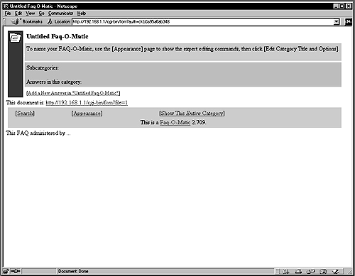

RedHat Edition -A Hands on Guide
Copyright © 2000 Gerhard Mourani and OpenDocs, LLC.
Copyright © 2000 Madhusudan (Madhu "Maddy") XML Source
This version and its subsequent outputs whether be it HTML, PDF or any other derivatives can be distributed under the same licensing terms and conditions as the orginal Securing and Optimizing Linux i.e. as set forth in the Open Publication License; V1.0 or later, the latest version is presently available at www.opencontent.org/openpub/.
Please note even if i madhusudan (Madhu "Maddy"),<needaguru@yahoo.com> hold the copyright for the XML source(Markup), you still need to get permission from Gerhard Mourani<gmourani@openna.com> the orginal author of Securing and Optmising Linux,
to make any changes to the content of this book. Please do read the licensing terms and conditions detailed below for additional information
This material may be distributed only subject to the terms and conditions set forth in the Open Publication License; V1.0 or later, the latest version is presently available at www.opencontent.org/openpub/.
Distribution of substantively modified versions of this document is prohibited without the explicit permission of the copyright holder.
Distribution of the work or derivative of the work in any standard (paper) book form for commercial purposes is prohibited unless prior permission is obtained from the copyright holder.
Please note even if I, Gerhard Mourani have the copyright, I don't control commercial printing of the book. Please contact OpenDocs @www.opendocspublishing.com/ if you have questions concerning such matters.
The logos, trademarks, symbols used in this book are properties of their respective compan(y)ies.
Table of Contents
- Preface
- 1. Getting Started
- 2. Installation
- 2. Overview of OS Linux
- 3. Installation of your Linux Server
- 1. Know your Hardware!
- 2. Creating the Boot Disk and Booting
- 3. Installation Class and Method (Install Type)
- 4. Disk Setup- Disk Druid
- 5. Disk Druid
- 6. An example
- 7. Post-Partitioning
- 8. Components to Install- Package Group Selection
- 9. Select Individual Package - Part 'A'
- 10. Select Individual Package -Part 'B'
- 11. How to use RPM Commands
- 12. Starting and stopping daemon services
- 4. Post-Install
- 3. Security, Optimization and Upgrade
- 5. General System Security
- 1. BIOS
- 2. Security as a Policy
- 3. Choose a right Password
- 4. The root account
- 5. The
/etc/exportsfile - 6. Disable console program access
- 7. Disable all console access
- 8. The inetd -
/etc/inetd.conffile - 9. TCP_WRAPPERS
- 10. The
/etc/host.conffile - 11. The /etc/services file
- 12. The
/etc/securettyfile - 13. Special accounts
- 14. Blocking; su to root, by one and sundry
- 15. Put limits on resource
- 16. Control mounting a file system
- 17. Conceal binary RPM
- 18. Shell logging
- 19. The LILO and
lilo.conffile - 20. Disable Ctrl-Alt-Delete keyboard shutdown command
- 21. Physical hard copies of all-important logs
- 22. Tighten scripts under
/etc/rc.d/ - 23. Bits from root-owned programs
- 24. The kernel tunable parameters
- 25. Refuse responding to broadcasts request
- 26. Routing Protocols
- 27. Enable TCP SYN Cookie Protection
- 28. Disable ICMP Redirect Acceptance
- 29. Enable always-defragging Protection
- 30. Enable bad error message Protection
- 31. Enable IP spoofing protection
- 32. Log Spoofed, Source Routed and Redirect Packets
- 33. Unusual or hidden files
- 34. System is compromised !
- 6. Linux General Optimization
- 1. The /etc/profile file
- 2. Benchmark Results
- 3. Benchmark results-i586
- 4. Benchmark results -i486
- 5. The bdflush parameters
- 6. The buffermem parameters
- 7. The ip_local_port_range parameters
- 8. The
/etc/nsswitch.conffile - 9. The file-max parameter
- 10. The ulimit parameter
- 11. The atime and noatime attribute
- 12. Tuning IDE Hard Disk Performance
- 13. Better manage your TCP/IP resources
- 7. Configuring and Building a Secure, Optimized Kernel
- 1. Pre-Install
- 2. Uninstallation and Optimization
- 3. Securing the kernel
- 4. Compilation
- 5. Kernel configuration -Part "A"
- 6. Kernel configuration -Part "B"
- 7. Kernel configuration -Part "C"
- 8. Kernel configuration -Part "D"
- 9. Kernel configuration -Part "E"
- 10. Installing the new kernel
- 11. Delete programs, Edit files pertaining to modules
- 12. Create a emergency Rescue and Boot floppy disk
- 4. Networking -Management, Firewall, Masquerading and Forwarding
- 5. Software -Security
- 6. Software -Networking
- 15. Software -Securities
- 16. Software -Securties(commercial)
- 1. Linux SSH2 Client/Server
- 2. Configure and Optimise SSH2
- 3. Configure the
/etc/ssh2/ssh2_configfile - 4. Configure the
/etc/ssh2/sshd2_configfile - 5. Configure sshd2 to use tcp-wrappers/inetd super server
- 6. Configuration of the
/etc/pam.d/sshfile - 7. Ssh2 Per-User Configuration
- 8. SSH2 Users Tools
- 9. Installed files
- 17. Software -Securities/System Integrity
- 18. Linux Tripwire ASR 1.3.1
- 19. Software -Securities/Management & Limitation
- 20. Set Limits using Qouta
- 21. Software -Networking
- 22. Software -Server/Mail Network
- 1. Linux Sendmail Server
- 2. Compile and optimize
- 3. Configurations
- 4. The
/etc/sendmail.mcfile /Central Mail Hub - 5. Build and Tweak Sendmail
- 6. The
/etc/mail/accessandaccess.dbfiles - 7. The
/etc/mail/aliasesandaliases.dbfiles - 8. The
/etc/mail/local-host-namesfile - 9. The
/etc/rc.d/init.d/sendmailscript file - 10. Secure Sendmail using smrsh
- 11. The
/etc/mail/aliasesfile - 12. Limit queue processing to
root - 13. Sendmail Administrative Tools
- 14. Installed files: Sendmail -Central Mail Hub
- 15. Installed files: Sendmail -Local server/client
- 23. Linux IMAP & POP Server
- 24. Software -Networking/Encryption
- 25. Linux FreeS/WAN VPN
- 1. IPSEC/VPN -FreeS/WAN
- 2. Compile, insert FreeS/WAN into the kernel
- 3. Reconfigure and install the kernel with FreeS/WAN VPN support
- 4. Configure to optimise
- 5. Automatic or Manual Key connections
- 6. The
/etc/ipsec.conffile - 7. The
/etc/ipsec.secretsfile - 8. Configure RSA private keys secrets
- 9. Required network setup for IPSec
- 10. Testing the installation
- 11. Further documentation
- 12. Installed files
- 26. Linux OpenLDAP Server
- 1. Compile ans Install
- 2. Compile and Optimize
- 3. Configurations
- 4. Configure the
/etc/ldap/slapd.conffile - 5. Configure the
/etc/rc.d/init.d/ldapscript file - 6. Securing OpenLDAP
- 7. OpenLDAP Creation and Maintenance Tools
- 8. Create the LDMB backend database on-line
- 9. OpenLDAP Users Tools
- 10. Installed files
- 27. Linux PostgreSQL Database Server
- 28. Software -Server/Proxy Network
- 1. Linux Squid Proxy Server
- 2. Configure and Optimize
- 3. Improve performance Using GNU malloc library
- 4. Compile and Optimize
- 5. Configurations
- 6. Configure the
/etc/squid/squid.conffile -inhttpd-accelerator mode - 7. Configure of the
/etc/squid/squid.conffile -/proxy-caching mode - 8. Configure the
/etc/rc.d/init.d/squidscript file -/all configurations - 9. Configure the
/etc/logrotate.d/squidfile - 10. Optimizing Squid
- 11. Netscape Proxies Configuration
- 12. Installed files
- 29. Software -Network Server, web/Apache
- 1. Linux MM Shared Memory Library
- 2. Compile
- 3. Linux Apache Web Server
- 4. Compile and Optimize
- 5. Configure and apply PHP4 to Apache source
- 6. Apply mod_perl to Apache source tree
- 7. Install Apache
- 8. Post install Configuration
- 9. Configure the
/etc/httpd/conf/httpd.conffile - 10. Configure the
/etc/logrotate.d/apachefile - 11. Configure the
/etc/rc.d/init.d/httpdscript file - 12. PHP4 server-side scripting
- 13. Perl module Devel::Symdump
- 14. CGI.pm Perl library
- 15. Securing Apache
- 16. users authentication with
.dbmpasswdpassword file - 17. Apache in a chroot jail
- 18. Apache to use shared libraries
- 19. The
/chroot/etcdirectory - 20. Test the new chrooted jail
- 21. Configure the new
/etc/logrotate.d/apachefile - 22. Optimizing Apache
- 23. Installed files for Apache Web Server
- 24. Installed files /PHP4
- 25. Installed files by mod_perl
- 30. Optional component to install with Apache
- 1. Linux Webalizer
- 2. Compile
- 3. Configure the
/etc/webalizer.conffile - 4. Make Apache aware of Webalizer output directory
- 5. Run Webalizer automatically with a cron job
- 6. Linux FAQ-O-Matic
- 7. Compile and install FAQ-O-Matic
- 8. Make Apache aware Faq-O-Matic file's location
- 9. Configure your FAQ-O-Matic
- 10. Installed files
- 11. Linux Webmail IMP
- 12. Set up PHPLib
- 13. Compile to install Webmail IMP
- 14. Configure and create Webmail IMP SQL database
- 15. Configure your
php.inifrom PHP4 - 16. Configure Webmail IMP via your web browser
- 31. Software -Server/File Sharing-Network
- 1. Linux Samba Server
- 2. Configure Samba
- 3. Compile and optimize
- 4. Configurations
- 5. Configuration of the
/etc/smb.conffile - 6. Configure the
/etc/lmhostsfile - 7. Encrypted Samba password file for clients
- 8. Optimizing Samba
- 9. Tuning the buffermem
- 10. Further documentation
- 11. Samba Administrative Tools
- 12. The
/etc/rc.d/init.d/smbscript file - 13. Installed files
- 32. Linux
FTPServer - 1. chroot'd Guest FTP access
- 2. Setup an
FTPuser account minus shells - 3. Setup a chroot user environment
- 4. Configurations
- 5. Configure the
/etc/ftphostsfile - 6. Configure the
/etc/ftpconversionsfile - 7. Configure the
/etc/logrotate.d/ftpdfile - 8. FTP Administrative Tools
- 9. Securing
FTP - 10. The special file
.notar - 11. Installed files
- 7. Backup and Restore
- I. Appendixes
List of Tables
List of Examples
- 3.1. Starting and Stopping various Daemon's
- 5.1. Export file systems using NFS
- 5.2. Disable console-equivalent access
- 5.3. Print log reports
- 5.4. Use man pages
- 5.5. Use find to find
- 6.1. For 128 MB of RAM
- 7.1. SMP support
- 8.1. Two ISA ethernet cards
- 12.1.
rc.firewall.blocked - 13.1. Using tar
- 15.1. Remote login using ssh
- 15.2. scp Secure Copy utility
- 15.3. local to remote
- 16.1. login to a remote using ssh2
- 16.2. sftp2, Secure File Transfer
- 18.1. Usage of Tripwire
- 19.1. Importing using gpg
- 19.2. Signing key
- 19.3. Encrypting
- 19.4. Decrypting
- 20.1.
usrquota - 20.2.
grpquota - 21.1. dnsquery
- 21.2. Look up host names
- 21.3. Using host
- 21.4. List a complete domain
- 22.1. Overriding RBL
- 22.2. Alternative names
- 22.3.
sendmail.cf - 26.1.
my-data-file - 26.2. LDMB backend
- 26.3.
modifyentry - 26.4. Address Book
- 30.1. Using Netscape browser
- 33.1. Backup directory of a week
- 33.2. scp SSH command
- 33.3. scp SSH command
Table of Contents
When I began writing this book, the first question I asked myself was how to install Linux on a server, and be sure that no one from the outside, or inside, could access it without authorization. Then I wondered if any method similar to the one on Windows® exists to improve the computers performance. Subsequently, I began a search on the Internet and read several books to get the most information on security and performance for my server. After many years of research and studies I had finally found the answer to my questions. These answers were found, all scattered throughout different documents, books, articles, and Internet sites. I created documentation based on my research that could help me through my daily activities.
Through the years, my documentation grew and started to look more like a book and less like simple, scattered notes. I decide to publish it on the Internet so that anyone could take advantage of it. By sharing this information, I felt that I was doing my part for the community who answered so many of my computing needs with one magical, reliable, strong, powerful, fast and free operating system named Linux. I had received a lot of feedback and comments about my documentation, which helped to improve it over time.
Abstract
Is there a need to fiddle with what apparently is perfectly working and is serving the need. Well for one the i have choosen a format, XML, unlike the original manuscript which was written in word, in this case has the advantage of source being one and output can be in various format. That is if the source is in XML, it is easier now to convert into HTML, PDF, RTF etc. Also to prove to the sceptics that DocBook is very much suitable for large production quality projects, not that this is the first effort, in this case an entire book has been marked up in XML.
Infact why XML indeed? XML -eXtensible Markup Language has been able to do justice to a large extent to the hype. Maybe having a watch body like w3.org to monitor has been advantageous; unlike HTML which lacked a formal monitoring, ability to extend, a weak structure and no support for validation, XML has all these and more. It is a system-independant, vendor-independant and has behind it the proven experience of SGML implementation, XML being a subset of SGML. I concur with Tim Bray's reported comment that it is ridiculous to use an application like MS Word, Quark Express etc.for writing text which will be stored as a binary and proprietory format therby bloating it considerably. And unlike HTML which has about aprox. 50-60 pre-cooked tags, with XML one can make up one's own. Infact this facility of having one's own tag will make it very, very useful in the long run. And the inherent factor that XML is all about content and nothing to do with presentation will be its greatest strength for years to come. The presentation part is taken care of by Stylesheet or FO or some such thing.
DocBook is a DTD - Document Type Definition. now what is this? well say for example having said XML is in itself a rule set , suppose i use an markup element tag <author> in my document and another author uses <writer> element tag in his document, isn't it true we are trying to convey the same meaning .Imagine thousands of pages are being written for the web, for the publishing industry and what a waste of enormous time if people would like to convey similar meaning but use different elements with the core language being same, this is where an DTD comes into picture.
Docbook DTD is a very popular set of tags for describing books,
articles and other prose documents, particularly technical documentation. Docbook
is defined using the native DTD syntax of SGML
and XML. Like HTML, DocBook is an example of
a markup language defined in SGML/XML.
| ||
| ---From the book DocBook - The Definitive Guide by Norman Walsh and Leonard Muellner. | ||
With the sole intent of making this book future proof, I have ported ( i am not sure this is the right term) this entire book into DocBook/XML.That the source being Markedup in XML, this ensures:
It will become platform independant and the source is not in any proprietory format like word.
It will be easy to have different outputs like HTML, PDF, RTF etc. With the never version of browsers supporting Raw XML as input with stylesheet being a seperate component, that this remains ready for that day when it becomes possible to have it converted on the fly.
That in the eventuality of me not being involved in the project at a later date, with the advent of professionals, there will be enough warm bodies to do this job.
My fond hope is that this should not turn out be just a futile excersize and it proves usefull to everybody; atleast to some people even they are a small minority, the least of all to Gerhard Mourani, who is the author of this splendid book.
The idea behind this exercize primarily has been :
To give back something to the Linux community which has been instrumental in spearheading the spirit of sharing.
To create awareness about possibilities existing with the available tools set.
But in the process some mistakes might have creeped in but there can be no excuse. Since this book has been looked at twice over; but still, i think the mistakes are entirely mine,
if at all and not Gerhard's. So if you spot some glaring mistakes whether be it in the form of wrong or mis-information, typos or grammatical mistakes please do inform me at
<needaguru@yahoo.com> or you can even inform gerhard at <gmourani@openna.com>. I am sure he will give a wallop on my backside( it is quite fragile!) so that such mistakes don't happen next time.
Also welcome are the suggestions on how we could improve on this, so that next time round it will much be better.
Here is hoping that this proves useful despite those already mentioned, creeped in mistakes, errors etc. and it kindles in you the same spirit which has embodied the growth of Linux as a powerful environement to work in. And if that happens i would consider myself highly obliged and this will prove to be a satisfying endevour for me personally. I have a feeling that the orginal author of this book Gerhard Mourani shares this thought of mine and probably agrees with me.

Table of Contents
Abstract
I realized that a lot of people wanted to see it published for its contents, to get advantages out of it and see the power of this beautiful Linux system in action. A lot of time and effort went into the making of this book, and to ensure that the results were as accurate as possible. If you find any abnormalities, inconsistent results, errors, omissions or anything else that doesn't look right, please let me know so I that can investigate the problem or correct the error. Suggestions for future versions are also welcome and appreciated.
This book is intended for a target audience of technical and system administrators who manage Linux servers, but it also includes enough material for home users and others. It discusses how to install and setup a Red Hat Linux Server with all the necessary security and optimization for a high performance Linux specific machine. Since we speak of optimization and security configuration, we have used only source distribution (tar.gz) programs; the most available type for critical server software, like Apache, BIND/DNS, Samba, Squid, OpenSSL etc. Source packages give us fast upgrades, security updates when necessary, and a better compilation, customization, and optimization option for our specific machines that often we can't have with RPM packages.
Depending of your level of knowledge in Linux, you can read this book from the start to finish or each chapter which may be of interest to you. Each chapter and section of this book appears in a manner that let you read only the relevant parts of your interest without the need to schedule a couple of day's reading.
Too many books available as of now take two pages to explain something that can be explained in two lines, I'm sure that many of you agree with my opinion. This book attempts a different path, in the sense, only the essential and important information that the readers are interested in knowing are explained in detail thereby eliminating all the nonsense. Though the fact that you can read this book in any order you want, there is a particular order that you could follow if something seem to be confusing for you. The steps shown below is what I recommend to facilitate a smooth reading.
Chapter 2 through Chapter 4 will guide you to do these steps:
Setup Linux in your computer
Remove all the unnecessary RPM package(s) during setup
Install the necessary RPM package(s) for compilation
Chapter 5 through Chapter 7 will guide you with these additional steps:
Secure the system in general
Optimize the system in general
Install, recompile and customize the Kernel
Chapter 24 will guide you through this:
Install OpenSSL to be able to use encryption with the Linux server
Chapter 15 will guide you through this:
Install OpenSSH to be able to make remote administration tasks
Chapter 21 will guide you through this:
Install BIND/DNS as client or server depending of your needs
Chapter 22 will guide you through this:
Install Sendmail as client or server depending of your needs
Chapter 10 through Chapter 12 will guide you through these steps:
Install & Configure the firewall script according to which services are installed in your system
Chapter 17 and Chapter 18 should guide you through this step:
Install Tripwire
Now for this step you will need to go through the book section wise to choose what you want.
Install any software you need later.
These installation instructions assume that: You have a CD-ROM drive on your computer and the Official Red Hat Linux CD-ROM. Installations were tested on the Official Red Hat Linux version 6.1 and 6.2. You should understand the hardware system on which the operating system will be installed. After examining the hardware, the rest of this document guides you, step-by-step, though the installation process.
Securing and Optimizing Linux: RedHat Edition is now also available to download around the most popular Linux web sites. Free formatted versions of this book can be found on the Internet via the following addresses listed below. From the original web site
Open Network Architecturewww.openna.com
|
The Linux Documentation Project homepage:
www.linuxdoc.org
|
O'Reilly Network:
oreilly.linu.com/pub/d/25
|
Linux Security portal
linuxsecurity.com/docs
|
On the other hand you like the nice feel of paper and would like to browse through the pages at your convenience, you will have to purchase it.
| By clicking here! |
It also comes with an accompanying CD filled with some nice goodies and all the example configuration files.
Other related web sites may exist without my knowledge. If you host this book Securing and Optimizing Linux: RedHat Edition and want to be included in the list of the next release, please send me a message with your intentions. If you receive this as part of a printed distribution or on a CD-ROM, please check out the Linux Documentation home page www.linuxdoc.org/ or the original website at www.openna.com to see if there is a more recent version. This could potentially save you a lot of trouble. If you want to translate this book, please notify me so I can keep track of what languages I have been published in.
The example configuration files in this book are available electronically via http from this website www.openna.com/books/floppy.tgz. In either case, be it from CDROM or if you have downloaded from the website extract the files from the archive by typing:
[root@deep ]/tmp#tar xzpf floppy.tgz
this is assuming you have stored the floppy.tgz in a directory called
tmp/ .
Errata

As i was giving the final look over on this book, Gerhard Mourani has released an errata for all firewall scripts and it is available here http://www.openna.com/books/errata.htm
If you cannot get the examples directly over the Internet, please contact the author at these email addresses:
<gmourani@openna.com>
|
<gmourani@netscape.net>
|
I would like to thank Michel Méral who has drawn all the beautiful animal drawing in my book, Robert L. Ziegler for allowing me to include his Firewall software and all Linux users around the world for their comments and suggestions.
The book has been orginally written by Gerhard Mourani www.openna.com but i would like to thank him for collaborating with me in porting ( for the want of a better word).To say he was co-operative will be an under statement he was always there with a helping hand to answer my innumerable queries etc. Also i would like to thank the following people,but not in any particular order;
Norman Walsh, http://nwalsh.com/~ndw/ for his phenominal and brilliant contribution to DocBook. To me at times looks like only one man contributing to its growth, popularity and in the process as well making it a mature product. Add to that he is a wonderful human being. My many many thanks to him.
Peter Graves, http://armedbear.org for his Brilliant editor j, i do all my work using it and there are no words to describe it. i am indebted to him. I doubt very much if i could have worked for long stretches without it.
Bryan Henderson, http://netpbm.sourceforge.net/ for his netpbm package and more than any thing for having the patience in dealing with my often persistent and idiotic queries. His software was mainly responsible for converting and manupilating all the orginal images which were in some esoteric format.
Additionally i would also like to thank the following for releasing the right software at the right time:
| James clark, http://www.jclark.com/ for his xt and xp |
| Michael Kay, http://users.iclway.co.uk/mhkay/saxon/ for Saxon |
| To each and everyone at OASIS, http://www.oasis-open.org/docbook/ |
| To each and everyone at Docbook.org, http://docbook.org/ |
| To Sebestain Rahtz, http://users.ox.ac.uk/~rahtz/passivetex/ for his contribution to DocBook |
| Mark Galassi for his brilliant Docbook Tutorial http://nis-www.lanl.gov/~rosalia/mydocs/ , My starting point!. |
The list would probably go on endlessly, and may be require a book for acknowledgements i guess.

Table of Contents
- 2. Overview of OS Linux
- 3. Installation of your Linux Server
- 1. Know your Hardware!
- 2. Creating the Boot Disk and Booting
- 3. Installation Class and Method (Install Type)
- 4. Disk Setup- Disk Druid
- 5. Disk Druid
- 6. An example
- 7. Post-Partitioning
- 8. Components to Install- Package Group Selection
- 9. Select Individual Package - Part 'A'
- 10. Select Individual Package -Part 'B'
- 11. How to use RPM Commands
- 12. Starting and stopping daemon services
- 4. Post-Install
Table of Contents
This part of the book deals with all the basic knowledge required to properly install a Linux OS, in our case a Redhat Linux on your system.
| Introduction to Linux |
| Steps to be taken prior to install |
| Steps to be taken post install |
Linux is an Operating System that was first created at the University of Helsinki in Finland by a young student named Linus Torvalds. At this time the student was working on a UNIX system that was running on an expensive platform. Because of his low budget, and his need to work at home, he decided to create a copy of the UNIX system in order to run it on a less expensive platform, such as an IBM PC. He began his work in 1991 when he released version 0.02 and worked steadily until 1994 when version 1.0 of the Linux Kernel was released. The current full-featured version at this time is 2.2.X; released January 25, 1999, and development continues.
There are no royalty or licensing fees for using Linux, and the source code can be modified to fit your needs. The results can be sold for profit, but original authors retain copyright and you must provide the source to your modifications.
Because it comes with source code to the kernel, it is quite portable. Linux runs on more CPUs and platforms than any other computer operating system. The recent direction of the software and hardware industry is to push consumers to purchase faster computers with more system memory and hard drive storage. Linux systems are not affected by those industries orientation because of it capacity to run on any kind of computers, even aging x486-based computers with limited amounts of RAM.
Linux is a true multi-tasking operating system similar to its brother UNIX. It uses sophisticated, state-of-the-art memory management to control all system processes. That means that if a program crashes you can kill it and continue working with confidence.
Another benefit is that Linux is practically immunized against all kinds of viruses that we find in other operating systems. To date we have found only two viruses that were effective on Linux systems.
Let's dispel some of the fear, uncertainty, and doubt about Linux:
It's a toy operating system. Fortune 500 companies, governments, and consumers; more and more use, Linux as a cost-effective computing solution. It has been used and is still used by big companies like IBM, Amtrak, NASA, and others.
There's no support. Every Linux distribution comes with more than 12,000 pages of documentation. Commercial Linux distributions such as Red Hat Linux, Caldera, SuSE, and OpenLinux offer initial support for registered users, and small business and corporate accounts can get 24/7 supports through a number of commercial support companies. As an Open Source operating system, there's no six-months to wait for a service release, and the online Linux community fixes many serious bugs within hours.
Table of Contents
- 1. Know your Hardware!
- 2. Creating the Boot Disk and Booting
- 3. Installation Class and Method (Install Type)
- 4. Disk Setup- Disk Druid
- 5. Disk Druid
- 6. An example
- 7. Post-Partitioning
- 8. Components to Install- Package Group Selection
- 9. Select Individual Package - Part 'A'
- 10. Select Individual Package -Part 'B'
- 11. How to use RPM Commands
- 12. Starting and stopping daemon services
The next two chapters is structured in a manner that follows the original installation of the Red Hat Linux CD-ROM. Each section below refers to, and will guide you through, different screens that will appear during the setup of your system after the insertion of the Red Hat boot diskette in your computer.
We promise that it will be interesting to have the machine you want to install Linux on, ready and near to you when you follow the steps described below. From time to time Red Hat Linux updates its operating system to a new version and adds, changes or removes some packages as well as changes some locations, content or features of files in its distribution.
Red Hat Recently has updated their version of operating system to 6.2 called Zoot, which is a minor upgrade of 6.1, so to be as accurate as possible about all information contained in these early chapters, we'll comment upon installation of version 6.1 as well as version 6.2 for those who will upgrade or install to it. Any sections in this chapter that refer to version 6.1 will be for the Red Hat Linux 6.1 (Cartman) distribution, and any section where we talk about version 6.2 will be for the Red Hat Linux 6.2 (Zoot) distribution, respectively.
The following conventions will simplify the interpretations in these chapter:
 This icon applies to Red Hat Linux
version 6.1 and 6.2 respectively. This icon applies to Red Hat Linux
version 6.1 and 6.2 respectively.
|
 This icon applies to Red Hat Linux version 6.1 only. This icon applies to Red Hat Linux version 6.1 only.
|
 This icon applies to Red Hat Linux version 6.2 only. This icon applies to Red Hat Linux version 6.2 only.
|
We know that many organizations and companies handle different versions of this operating system, and run a number of services on them. Sometimes it may be difficult to upgrade to the latest version since clients use services on the server 24 hours a day. With this simple convention, people who maintain and use version 6.1 of Red Hat Linux will always find exact information related to their needs.
Understanding the hardware of your computer is essential for a successful installation of Red Hat Linux. Therefore, you should take a moment now and familiarize yourself with your computer hardware. Be prepared to answer the following questions:
How many hard drives do you have?
What size is each hard drive? e.g.
3.2GB.If you have more than one hard drive, which is the primary one?
What kind of hard drive do you have? e.g. IDE, SCSI.
How much RAM do you have e.g. 256MB RAM.
Do you have a SCSI adapter? If so, who is the manufacturer and what model is it?
Do you have a RAID system? If so, who is the manufacturer and what model is it?
What type of mouse do you have e.g.
PS/2, Microsoft, Logitech.How many buttons does your mouse have?
2/3buttons.If you have a serial mouse, what COM port is it connected to? e.g.
COM1.What is the make and model of your video card? How much video RAM do you have? e.g. 4MB.
What kind of monitor do you have? Make and Model.
Will you be connected to a network? If so, what will be the following:
Your IP address?
Your netmask?
Your gateway address?
Your domain name server's IP address?
Your domain name?
Your hostname?
Your types of network(s) card(s)? Make and Model.
Your number of card(s)? Make and Model.
The first thing to do is to create an installation diskette also known as a boot disk. If you have purchased the official Red Hat Linux CD-ROM, you will find this floppy disk named Boot Diskette in the Red Hat Linux box and you don't need to create it. From time to time, you may find that the installation will fail with the standard diskette image that comes with the official Red Hat Linux CD-ROM. If this happens, a revised diskette is required in order for the installation to work properly. In these cases, special images are available via the Red Hat Linux Errata web page to solve the problem www.redhat.com/errata. Since this, is a relatively rare occurrence, you will save time if you try to use the standard diskette images first, and then review the Errata only if you experience any problem completing the installation.
Step 1.
Before you make the boot disk, insert the Official Red Hat Linux™ CD-ROM
Part 1 in your computer that runs the Windows© operating system. When the program asks for the filename,
enter boot.img for the boot disk. To make the floppies under MS-DOS©, you need to use these
commands assuming your CD-ROM is drive D: and contain the Official Red Hat Linux©
CD-ROM.
Open the Command Prompt under Windows: | |
C:\> d:
D:\> cd \dosutils
D:\dosutils> rawrite
Enter disk image source file name: ..\images\boot.img
Enter target diskette drive: a:
Please insert a formatted diskette into drive A: and press --ENTER-- :
D:\dosutils>
The rawrite.exe program asks for the filename of the disk image: Enter boot.img and insert a floppy
into drive A. It will then ask for a disk to write to: Enter a:, and when complete, label the disk; for example, Red Hat boot disk.
Step 2.
Since we'd start the installation directly off the CD-ROM, boot with the boot disk. Insert the boot diskette you create into the drive A: on the computer where you want to
install Linux and reboot the computer. At the boot:, press Enter to continue booting and follow the three simple steps below:
- Choose your language
You can choose your prefferd language for the Linux OS from a list. For example, English, Danish etc
- Choose your keyboard type
You can choose your Keyboard type. For example
US pc104, norwegian etc- Select your mouse type
You can choose your mouse type. For example Logitech two button, Microsoft three button mouse etc
Red Hat Linux 6.1 and 6.2 include four different classes, or type of installation. They are:
| GNOME Workstation |
| KDE Workstation |
| Server |
| Custom |
The first three classes GNOME Workstation, KDE Workstation, and Server give you the option of simplifying the installation process with a significant loss of configuration flexibility that we don't want to lose. For this reason we highly recommend Custom installation, as this allows you to choose what services are added and how the system is partitioned.The idea is to load the minimum number of packages, while maintaining maximum efficiency. The less software that resides on the box, the fewer potential security exploits or holes may appear.Select Custom and click Next
We assume that you are installing your new Linux server to a new hard drive, with no other existing file system or operating system previously installed. A good partition strategy is to create a separate partition for each major file system. This enhances security and prevents accidental denial of service or exploit of SUID programs.
Creating multiple partitions offers you the following advantages:
| Protection against denial of service attack. |
| Protection against SUID programs. |
| Faster booting. |
| Easy backup and upgrade management. |
| Ability for better control of mounted file system. |
| Limit each file system's ability to grow. |
If previous file system or operating system exist on the hard drive and computer where you want to install your Linux system, we highly recommend, that you make a backup of your current system before proceeding with the disk partitioning.
Step 1. For performance, stability and security reasons you must create something like the following partitions listed below on your computer. We suppose for this partition configuration the fact that you have a SCSI hard drive of 3.2 GB. Of course you will need to adjust partition sizes according to your own needs and disk size. Partitions that must be created on your system:
/boot 5MB  /usr 512MB
/usr 512MB  /home 1146MB
/home 1146MB  /chroot 256MB
/chroot 256MB  /cache 256MB
/cache 256MB  /var 256MB
/var 256MB  <Swap> 128MB
<Swap> 128MB  /tmp 256MB
/tmp 256MB  / 256MB
/ 256MB 
| All Kernel images are kept here. |
| Must be large, since all Linux binaries programs are installed here. |
| Proportional to the number of users you intend to host i.e. 10MB per users multiplied by the number of users 114 = 1140MB. |
| If you want to install programs in chroot jail environment i.e. DNS. |
| This is the cache partition of a proxy server i.e. Squid. |
| Contains files that change when the system run normally i.e. Log files. |
| Our swap partition. The virtual memory of the Linux operating system. |
| Our temporary files partition. |
| Our root partition. |
We have made two more special partitions:
/chrootThe
/chrootpartition can be used for DNS server chrooted, Apache server chrooted and other chrooted future programs./cacheThe
/cachepartition can be used for a Squid Proxy server.
If you are not intending to install Squid Proxy server you don't need to create the /cache partition.
Keeping /tmp and /home on separate partitions is pretty much mandatory if users have shell access
to the server- protection against SUID programs; splitting these off into separate partitions also
prevent users from filling up any critical file system -denial of service attack.
The same applies to /var, and /usr on separate partitions is also a very good idea. By isolating the /var partition, you protect
your root partition from overfilling -denial of service attack.
In our partition configuration we'll reserve 256 MB of disk space for chrooted programs like Apache,
DNS and other software. This is necessary because Apache DocumentRoot files and other binaries, programs
related to Apache will be installed in this partition if you decide to run Apache web server in a chrooted
jail.
Take note that the size of the Apache chrooted directory on the chrooted partition is proportional
to the size of your DocumentRoot files. If you're not intending to install and use Apache on your server,
you can reduce the size of this partition to something like 10 MB for DNS server that you always need in
a chrooted jail environment for security reasons.
Minimum size of partitions

For information purposes only, this is the minimum size in megabytes, which a Linux installation must have to function properly. The sizes of partitions listed below are really small. This configuration can fit into a very old hard disk of 512MB in size that you might find in old x486 computers. We show you this partition just to get an idea of the minimum requirements.
/ 35MB
/boot 5MB
/chroot 10MB
/home 100MB
/tmp 30MB
/usr 232MB
/var 25MB
Disk Druid Partitions is a program that partitions your hard drive for you. Choose Add to add a new partition, to edit a partition, to delete a partition and to reset the partitions to the original state. When you add a new partition, a new window appears on your screen and gives you parameters to choose. Different parameters are:
for where you want to mount your new partition in the filesystem.
for the size of your new partition in megabytes.
Linux native for Linux filesystem and Swap for Linux Swap Partition.
If you have a SCSI disk the device name will be /dev/sda
and if you have an IDE disk it will be /dev/hda. If you're looking
for high performance and stability, a SCSI disk is highly recommended.
Linux refers to disk partitions using a combination of letters and numbers. It uses a naming scheme that
is more flexible and conveys more information than the approach used by other operating systems.
Here is a summary:
Disk naming convention
- First Two Letters
The first two letters of the partition name indicate the type of device on which the partition resides. You'll normally see either
hd(for IDE disks), orsd(for SCSI disks).- The Next Letter
This letter indicates which device the partition is on. For example:
/dev/hda(the first IDE hard disk) and/dev/hdb(the second IDE disk).
Keep this information in mind, it will make things easier to understand when you're setting up the partitions Linux requires.
Swap partitions are used to support virtual memory. If your computer has 16 MB of RAM or less, you must create a swap partition. Even if you have more memory, a swap partition is still recommended. The minimum size of your swap partition should be equal to your computer's RAM or 16 MB (whichever is larger). The largest useable swap partition is roughly 1 GB, since 2.2 kernel, 1 GB swap file are supported so making a swap partition larger than that will result in wasted space. Note, however, that you can create and use more than one swap partition although this is usually only necessary for very large server installations.
Try to put your swap partitions near the beginning of your drive. The beginning of the drive is physically located on the outer portion of the cylinder, so the read/write head can cover much more ground per revolution.

representation of linux partition
To make the partitions listed below on your system; this is the partition we'll need for our server installation example; the command will be under Disk Druid:
/boot our /boot directory.
|
5
|
Linux Native
|
|
/usr our /usr directory.
|
512
|
Linux Native
|
/home our /home directory.
|
1146
|
Linux Native
|
/chroot our /chroot directory.
|
256
|
Linux Native
|
/cache our /cache directory.
|
256
|
Linux Native
|
/var our /var directory.
|
256
|
Linux Native
|
our /Swap partition leave the Mount Point Blank.
|
128
|
Linux Swap
|
/tmp our /tmp directory.
|
256
|
Linux Native
|
/ our / directory.
|
256
|
Linux Native
|
After the partitions of your hard disk has been completed, you must see something like the following information on your screen. Our mount points will look like this:
Table 3.1. Sample representaion of partitions
| Mount Point | Device | Requested | Actual | Type |
|---|---|---|---|---|
| /boot | sda1 | 5M | 5M | Linux Native |
| /usr | sda5 | 512M | 1146M | Linux Native |
| /home | sda6 | 256M | 256M | Linux Native |
| /chroot | sda7 | 256M | 256M | Linux Native |
| /cache | sda8 | 256M | 256M | Linux Native |
| /var | sda9 | 256M | 256M | Linux Native |
| <Swap> | sda10 | 128M | 128M | Linux Swap |
| /tmp | sda11 | 256M | 256M | Linux Native |
| / | sda12 | 256M | 256M | Linux Native |
| Drive | Geom [C/H/S] | Total (M) | Free (M) | Used (M) | Used (%) |
|---|---|---|---|---|---|
| sda | [3079/64/32] | 3079M | 1M | 3078M | 99% |
We are using a SCSI hard disk hence the first two letters of the
device are sd.
Now that you are partitioning and choosing the mount point of your directories, select Next to continue. After your partitions are created, the installation program will ask you to choose partitions to format. Choose the partitions you want to initialize, check the (Check for bad blocks during format) box, and press Next. This formats the partitions and makes them active so Linux can use them.
On the next screen you will see the LILO Configuration where you have the choice to install LILO boot record on:
Or
Usually if Linux is the only OS on your machine you should choose the option. After that, you need to configure your Network and Clock. After you finish configuring the clock, you need to give your system a root password and authentication configuration. For Authentication Configuration don't forget to select:
doesn't need to be selected since we are not configuring NIS services on this server.
After your partitions have been configured and selected for formatting, you are ready to select packages for installation. By default, Linux is a powerful operating system that executes many useful services. However, many of these services are unneeded and pose potential security risks.
Ideally, each network service should be on a dedicated, single-purpose host. Many Linux operating systems are configured by default to provide a wider set of services and applications than are required to provide a particular network service, so you may need to configure the server to eliminate unneeded services. Offering only essential services on a particular host can enhance your network security in several ways:
Other services cannot be used to attack the host and impair or remove desired network services.
Different individuals may administer different services. By isolating services so each host and service has a single administrator you will minimize the possibility of conflicts between administrators.
The host can be configured to better suit the requirements of the particular service. Different services might require different hardware and software configurations, which could lead to needless vulnerabilities or service restrictions.
By reducing services, the number of logs and log entries is reduced so detecting unexpected behavior becomes easier.
A proper installation of your Linux server is the first step to a stable, secure system. You first have to choose which system components you
want to install. Choose the components, and then you can go through and select or deselect each individual package of each component by
selecting Select individual packages option on your Red Hat setup screen.
Since we are configuring a Linux Server, we don't need to install a graphical interface XFree86 on our system, a graphical interface on a server
means less processes, less CPU availability, less memory, security risks, and so on. Graphical interfaces are usually used on workstations only.
Select the following packages for installation:
Networked Workstation
|
Network Management Workstation
|
Utilities
|
After selecting the components you wish to install, you may select or deselect packages.
Select the Select individual packages options before continuing to have the option to select and deselect packages.
The installation program presents a list of the package groups available. Select a group to examine. The components listed below must be deselected from the Menu Group for security; optimization and other reasons described below:
Applications/File:
- git
The GIT package provides an extensible file system browser, an ASCII/hexadecimal file viewer, a process viewer/killer and other related utilities and shell scripts. Unnecessary.
Applications/Internet:
- finger
The finger package is a client utility, which allows users to see information about system users. Security risks.
- ftp
The ftp package provides the standard UNIX command-line FTP client. Security risks.
- fwhois
The fwhois client program allows for querying whois databases. Security risks.
- ncftp
The Ncftp package is an improved FTP client. [Security risks, Unnecessary.
- rsh
The rsh package provides client programs, which allows users to run commands on remote machines, login to other machines and copy files between machines (rsh, rlogin and rcp). Security risks.
- rsync
rsync is very powerfull mirroring program, which brings very quickly remote and host files into sync. Unnecessary
- talk
The ntalk package provides client and daemon programs for the Internet talk protocol, which allows you to chat with other users on different UNIX systems. Security risks.
- telnet
Telnet is a popular protocol for logging into remote systems over the network but it is insecure (transfer password in plain text). Security risks.
Applications/Publishing:
- ghostscript
The GhostScript package is a set of software that provides a PostScript interpreter, and an interpreter for Portable Document Format PDF files. Unnecessary
- ghostscript-fonts
The GhostScript interpreter can use the Ghostscript-fonts package during text rendering. Unnecessary.
-
groff-perl
The groff-perl package is a set of commands and print filter used in printer environment. Unnecessary, no printer installed on the server.
-
mpage
The mpage package utility takes plain text files or PostScript documents as input, reduces the size of the text, and prints the files on a PostScript printer with several pages on each sheet of paper. Unnecessary, no printer installed on the server
-
pnm2ppa
The pnm2ppa package is a color driver for printing to HP PPA printers. Unnecessary, no printer installed on the server.
- rhs-printfilters
The rhs-printfilters package contains a set of print filters, which is primarily meant to be use with the Red Hat printtool. Unnecessary, no printer installed on the server
Applications/System:
- arpwatch
The arpwatch package contains utilities to monitor Ethernet or FDDI network traffic and build databases of Ethernet/IP address pairs. Unnecessary
- bind-utils
The bind-utils package contains a collection of utilities to find out information about Internet hosts. We will compile it later on this book.
-
knfsd-clients
The knfsd-clients package contains the showmount program that queries the mount daemon on a remote host for information about the NFS server on the remote host. Security risks, and NFS services are not installed on this server.
-
procinfo
The procinfo package acquires information about your system from the kernel as it is running. Unnecessary, other methods exist.
- rdate
The rdate package utility can retrieve the date and time from another machine on your network. Security risks.
- rdist
The rdist package is a program that maintains identical copies of files on multiple hosts. Security risks.
- screen
This screen package is a useful utility for users who telnet into a machine or are connected via a dumb terminal, but want to use more than just one login. Unnecessary
- ucd-snmp-utils
The ucd-snmp-utils package contains various utilities for use with the ucd-snmp network management project. Unnecessary, Security risks
Documentation:
- indexhtml
The indexhtml package contains the HTML page and graphics for a welcome page shown by your Web browser into X Window Systems. Unnecessary,we don't use graphical interface.
System Environment/Base:
- chkfontpath
The chkfontpath package is a simple program for adding, removing and listing the directories contained in the X font server's path. Unnecessary, we don't use graphical interface
- yp-tools
The Network Information Service NIS is a system, which provides and centralizes network information; login names, passwords, home directories, and group information, to all of the machines on a network. Security risks, we don't use it on our server
System Environment/Daemons:
.
- XFree86-xfs
The XFree86-xfs package is a font server for XFree86 that can also serve fonts to other X servers remotely. Unnecessary, we don't use graphical interface
-
finger-server
The finger-server package contain the finger daemon that runs from the
/etc/inetd.conf,file and allows users to see information about system users on the server. Security risks.- lpr
The lpr package provides the basic system utility for managing printing services. Unnecessary and no printer installed on the server
-
nfs-utils
The nfs-utils package provides the tools and daemon for the kernel NFS server. This package must be installed if you want to provide NFS services on your server. Security risks, and NFS services are not installed on this server.
- pidentd
The pidentd package contains the identd, which looks up specific TCP/IP connections and returns either the user name or other information about the process that owns the connection. Unnecessary, very few things on the net require the sender to be running identd, because many machines don't have it and because many people turn it off.
- portmap
The portmapper package manages RPC connections, which are used by protocols like NFS and NIS. Unnecessary, Security risks, and NIS/NFS services are not installed on this server.
-
rsh-server
The rsh-server package provides the servers needed for (rsh, rlogin, rcp) which allow users to run remote access commands on remote machines. Security risks
- rusers
The routed package routing daemon maintains current routing tables by handling incoming RIP traffic and broadcasts outgoing RIP traffic about network traffic routes. Unnecessary, Security risks, and limited.
-
rusers-server
The rusers package program allows users to find out who is logged into various machines on the local network. Security risks.
- rwall-server
The rwall-server package contains the daemon which allows receiving remote messages from users in remote hosts. Security risks
- rwho
The rwho package shows who is logged in for all machines on the local network running the rwho daemon. Security risks.
-
talk-server
The talk-server package provides the daemon program, which allows you to chat via terminal with other users on remote UNIX systems.™ Security risks.
-
telnet-server
The telnet-server package provides the daemon, which allows telnet remote logins protocol to your server. Security risks, replace by SSH
-
tftp
The tftp package or Trivial File Transfer Protocol TFTP allows users to transfer files to and from a remote machine. It is normally used only for booting diskless workstations. Security risks, Unnecessary.
-
tftp-server
The tftp-server package provides the server for (TFTP), which allows users to transfer files to and from a remote machine. Security risks, Unnecessary.
- ucd-snmp
The ucd-snmp package or SNMP -Simple Network Management Protocol is a protocol used for network management. Unnecessary, Security risks
-
ypbind
The ypbind package is a daemon which binds NIS -Network Information Service server client to NIS server. Security risks, we don't use it on our server.
-
ypserv
The ypserv package is the NIS -Network Information Service server, which provides network information (NIS) to all of the machines on a network. Security risks, we don't use it on our server
System Environment/Libraries:
- XFree86-libs
The XFree86-libs package contains the shared libraries that most X programs need to run properly. Unnecessary, we dont use graphical interface.
- libpng
The libpng package contains a library of functions for creating and manipulating GIF image format files. GIF is a bit-mapped graphics format similar to the GIF format. Unnecessary.
User Interface/X:
-
XFree86-75dpi-fonts
The XFree86-75dpi-fonts package contains the 75 dpi fonts (the standard fonts) used on most X Window Systems. Unnecessary, we don't use graphical interface.
-
urw-fonts
The urw-fonts package contain free versions of the 35 standard Type 1 PostScript fonts. Unnecessary, we don't use graphical interface.
This section contains an overview of principal modes using with RPM for installing, uninstalling, upgrading, querying, listing, and checking RPM packages on your Linux system. You must be familiar with these RPM commands now because we'll use them often in the continuation of this book. To install a RPM package, use the command:
[root@deep] /#rpm -ivh foo-1.0-2.i386.rpm
Take a note that RPM packages have a file of names like foo-1.0-2.i386.rpm, which include the package name (foo), version (1.0), release (2), and architecture (i386).
To uninstall a RPM package, use the command:
[root@deep] /#rpm -e foo
Notice that we used the package name foo, not the name of the original package file foo-1.0-2.i386.rpm.
To upgrade a RPM package, use the command:
[root@deep] /#rpm -Uvh foo-1.0-2.i386.rpm
With this command, RPM automatically uninstall the old version of foo package and install the new one. Always
use rpm -Uvh to install packages, since it works fine even when there are no previous versions of the package installed.
To query a RPM package, use the command:
[root@deep] /#rpm -q foo
This command will print the package name, version, and release number of installed package foo. Use this command to verify that a package is or is not installed on your system.
To display package information, use the command:
[root@deep] /#rpm -qi foo
This command display package information; includes name, version, and description of the installed program. Use this command to get information about the installed package.
To list files in package, use the command:
[root@deep] /#rpm -qlfoo
This command will list all files in a installed RPM package. It works only when the package is already installed on your system.
To check a RPM signature package, use the command:
[root@deep] /#rpm --checksig foo
This command checks the PGP signature of specified package to ensure its integrity and origin. Always use this command first before installing new RPM package on your system. Also, GnuPG or Pgp software must be already installed on your system before you can use this command.
The init program of Linux -also known as process control initialization, is in charge of starting all the normal and authorized processes that need to run at boot time on your system. These may include the APACHE daemons, NETWORK daemons,
and anything else that must be running when your machine boots. Each of these processes has a script under /etc/rc.d/init.d/ directory written to accept an argument, which can be start,
stop and restart. You can execute those scripts by hand in fact with a command:
Example 3.1. Starting and Stopping various Daemon's
To start the httpd Web Server manually under Linux.
[root@deep] /# /etc/rc.d/init.d/httpd start
Starting httpd: [OK]
To stop the httpd Web Server manually under Linux.
[root@deep] /# /etc/rc.d/init.d/httpd stop
Shutting down http: [OK]
To restart the httpd Web Server manually under Linux.
[root@deep] /# /etc/rc.d/init.d/httpd restart
Shutting down http: [OK]
Starting httpd: [OK]
Check inside your /etc/rc.d/init.d/ directory for services available and use command start | stop | restart
to work around.
Table of Contents
This entire chapter deals with the steps to be taken after the installation of your server, for example, uninstallation of certain programs which are going to compiled on your server using source tarballs, installation of certain programs required to compile these source tarballs etc
Red Hat Linux installs other pre-compiled binaries of programs on your system by default and doesn't give you the choice to uninstall them during the install setup. For this reason, you must uninstall the following software on your system after the installation of your server.We must uninstall them for better security and to make space in our server.
For more information and explanation of their capabilities and uses, please see your Red Hat manual or install the package and make an rpm -qi foo
command to query and get a detailed description of the program, and then uninstall it again.
Below is the list of programs and a short description of their utilizations.
-
pump
The Pump DHCP package allows individual diskless clients on a network to get their own IP network configuration information from network servers. Unnecessary.
-
mt-st
The
mt-for magnetic tape drives andst-for SCSI tape devices tape drive management programs can control rewinding, ejecting, skipping files, blocks and more. Necessary only if you have a tape backup on this server.-
eject
The eject package contains an eject program that allows the user to eject removable media typically CD-ROMs, floppy disks, Iomega Jaz or Zip disks using software control. Necessary only if you have a tape backup on this server.
-
Metamail
Metamail is a program that uses the mailcap file to determine how it should display non-text or multimedia material. Unnecessary.
-
apmd
The apmd package, or advanced Power Management daemon utilities, can watch your notebook's battery and warn all users when the battery is low. Unnecessary for a server.
-
kernel-pcmcia-cs
The kernel-pcmcia-cs package is for laptop machines and some non-laptops that support PCMCIA cards for expansion. Unnecessary for a server.
-
linuxconf
The linuxconf package is a system configuration tool. Unnecessary, buggy program.
-
getty_ps
The getty_ps package contains programs that are used to accept logins on the console or a terminal on your system. Unnecessary.
-
setconsole
The setconsole package is a basic system utility for setting up the
/etc/inittab, /dev/systtyand/dev/consolefiles to handle a new console. Unnecessary.-
isapnptools
The isapnptools package contains utilities for configuring ISA Plug-and-Play (PnP) cards/boards. Unnecessary.
-
setserial
The setserial package is a basic system utility for displaying or setting serial port information. Unnecessary.
-
kudzu
The kudzu package is a hardware-probing tool run at system boot time to determine what hardware has been added or removed from the system. Unnecessary.
-
raidtools
The raidtools package includes the tools you need to set up and maintain a software RAID device on a Linux system. Depending if you use Raid or not.
-
gnuPG
The GnuPG package is a tool for secure communication and data storage. It is a replacement for the PGP software. It can also be used to encrypt data and to create digital signatures. We will compile it later on our book.
-
redhat-logos
The redhat-logos package contains files of the Red Hat "Shadow Man" logo and the RPM logo. Unnecessary on a server.
-
redhat-release
The redhat-release package contains the Red Hat Linux release file. Unnecessary.
-
gd
The gd package allows your code to quickly draw images and write out the result as a
.giffile. Unnecessary.-
pciutils
The pciutils package contains various utilities for inspecting and setting devices connected to the PCI bus. We use other methods.
-
rmt
The rmt utility provides remote network access to make backup. Security risks since rmt depends on rsh to work.
The command to uninstall software is:
[root@deep] /#rpm -e <softwarename(s)>
Where <softwarename> is the name of the software you want to uninstall e.g. (foo).
Since Programs like apmd, kudzu, and sendmail are daemons that run as process. It is better to stop those processes before uninstalling them from the system.To stop those processes, use the following commands:
[root@deep] /# /etc/rc.d/init.d/apmd stop
[root@deep] /# /etc/rc.d/init.d/sendmail stop
[root@deep] /# /etc/rc.d/init.d/kudzu stop
-
Now you can uninstall them safely, and all other packages, as shown below:
Remove the specified packages for Red Hat Linux version 6.1 (Cartman).
[root@deep] /# rpm -e --nodeps pump mt-st eject mailcap apmd kernel-pcmcia-cs linuxconf getty_ps setconsole isapnptools setserial kudzu raidtools gnupg redhat-logos redhat-release gd pciutils rmt Remove the specified packages for Red Hat Linux version 6.2 (Zoot).
[root@deep] /# rpm -e --nodeps pump mt-st eject mailcap apmd kernel-pcmcia-cs linuxconf getty_ps isapnptools setserial kudzu raidtools gnupg redhat-logos redhat-release gd pciutils rmt -
Remove the linux.conf-installed file manually.
[root@deep] /# rm -f /etc/conf.linuxconf-installed
This is a configuration file related to linuxconf software that must be removed manually.
The program hdparm is needed by IDE hard disk but not SCSI hard disks. If you have an IDE disk on your system you must keep this program (hdparm), but if you don't have an IDE hard disk you can remove it safely from your system. To remove hdparm from your system, use the following command:
[root@deep] /# rpm -e hdparm
Use the programs kbdconfig, mouseconfig, timeconfig, authconfig, ntsysv, and setuptool in order
to set your keyboard language and type, your mouse type, your default time zone, your NIS and shadow passwords, your numerous symbolic links in /etc/rc.d
directory, and text mode menu utility which allow you to access all of these features. After those configurations have been set during the installation stage
of your Linux server it's rare that you would need to change them again. So, you can uninstall them, and if in future you need to change your keyboard,
mouse, default time, etc again via test mode menu, all you have to do is to install the program with the RPM from your original CD-ROM.
To remove all the above programs from your system, use the following command:
[root@deep] /# rpm -e kbdconfig mouseconfig timeconfig authconfig ntsysv setuptool
Even if you are not intending to install a mail server on your Linux system, the program Sendmail is always needed on your servers for potential messages sent to the root user by different software services installed on your machine.
Sendmail is a Mail Transport Agent -MTA program that sends mail from one machine to another. It can be configured in different manners; it can serve as an internal delivery mail system to a Mail Hub Server, or can be configured to be a Central Mail Hub Server for all Sendmail machines on your network. So depending on what you want to do with Sendmail, you must configure it to respond to your specific needs. For this reason you must uninstall Sendmail and see the relevant sections in this book that is related to Sendmail configuration and installation.
To remove Sendmail from your system, use the following command:
[root@deep] /# rpm -e sendmail
There are certain programs required to be able to compile programs on your server, hence you must install the following RPM packages. This part of the installation is very important and requires that you install all related packages described below. These are on your Red Hat Part 1 CD-ROM under RedHat/RPMS directory and represent the base necessary software needed on Linux to compile and install programs.
First, we mount the CD-ROM drive and move to the RPMS subdirectory of the CD-ROM. To mount the CD-ROM drive and move to RPM directory, use the following commands:
[root@deep] /# mount /dev/cdrom /mnt/cdrom/ [root@deep] /# cd /mnt/cdrom/RedHat/RPMS/In the process of customizing our linux server, we will be using, most of the time source tarballs rather than pre-compiled RPMs hence these are the packages that we need to be able to compile and install programs. Remember, this is the minimum package that will allow you to compile most of the tarballs available for Linux. Other compiled binary packages exist on the Red Hat CD-ROM, so verify with the README file that came with the tarballs program you want to install if you receive an error messages during compilation of the specific software.
m4-1.4-12.i386.rpmegcs-1.1.2-24.i386.rpmdev86-0.14.9-1.i386.rpmElectricFence-2.1-1.i386.rpmbison-1.28-1.i386.rpmflex-2.5.4a-7.i386.rpmbyacc-1.9-11.i386.rpmgdb-4.18-4.i386.rpmcdecl-2.5-9.i386.rpmkernel-headers-2.2.12-20.i386.rpmcpp-1.1.2-24.i386.rpmglibc-devel-2.1.2-11.i386.rpmcproto-4.6-2.i386.rpmmake-3.77-6.i386.rpmctags-3.2-1.i386.rpmpatch-2.5-9.i386.rpmm4-1.4-12.i386.rpmegcs-1.1.2-30.i386.rpmdev86-0.15.0-2.i386.rpmElectricFence-2.1-3.i386.rpmbison-1.28-2.i386.rpmflex-2.5.4a-9.i386.rpmbyacc-1.9-12.i386.rpmgdb-4.18-11.i386.rpmcdecl-2.5-10.i386.rpmkernel-headers-2.2.14-5.0.i386.rpmcpp-1.1.2-30.i386.rpmglibc-devel-2.1.3-15.i386.rpmcproto-4.6-3.i386.rpmmake-3.78.1-4.i386.rpmctags-3.4-1.i386.rpmpatch-2.5-10.i386.rpmIt is better to install software mentioned above in one shot, if you don't want to receive error message regarding dependencies during RPM install.
Install all the needed software above with one RPM command. The RPM command to install all software together is:
[root@deep ] /RPMS#rpm -Uvh m4-1.4-12.i386.rpm dev86-0.14.9-1.i386.rpm bison-1.28-1.i386.rpm byacc-1.9-11.i386.rpm cdecl-2.5-9.i386.rpm cpp-1.1.2-24.i386.rpm cproto-4.6-2.i386.rpm ctags-3.2-1.i386.rpm egcs-1.1.2-24.i386.rpm ElectricFence-2.1-1.i386.rpm flex-2.5.4a-7.i386.rpm gdb-4.18-4.i386.rpm kernel-headers-2.2.12-20.i386.rpm glibc-devel-2.1.2-11.i386.rpm make-3.77-6.i386.rpm patch-2.5-9.i386.rpmInstall all the needed software above with one RPM command. The RPM command to install all software together is:
[root@deep ] /RPMS#rpm -Uvh m4-1.4-12.i386.rpm dev86-0.15.0-2.i386.rpm bison-1.28-2.i386.rpm byacc-1.9-12.i386.rpm cdecl-2.5-10.i386.rpm cpp-1.1.2-30.i386.rpm cproto-4.6-3.i386.rpm ctags-3.4-1.i386.rpm egcs-1.1.2-30.i386.rpm ElectricFence-2.1-3.i386.rpm flex-2.5.4a-9.i386.rpm gdb-4.18-11.i386.rpm kernel-headers-2.2.14-5.0.i386.rpm glibc-devel-2.1.3-15.i386.rpm make-3.78.1-4.i386.rpm patch-2.5-10.i386.rpm
The RPM package has many options, for example we have used the following sytax:
rpm [-Uvh] [file]
you might be curious to know what these arguments -Uvh means, why should it be given at all etc.Here is a brief description:
-U-stands for Upgrade which will uninstall an older version of the package you are installing and install the new one, which will eliminate the error likely to occur if in case the package being uninstalled has dependencies. It is generally recomded to use this argument even while you are obsolutely sure that there is no earlier version of the package you are trying to install is existing on your machine.
v-stands for verbose, which is quite self explanatory. This argument ensures all messages are written to the stdout/console so you get to know what is happening.
h-this generates the hash mark
#in a series, this will give a sense of visual progress with the install process .
So, when you use rpm -Uvh, whether it is Redhat ver 6.1 or ver 6.2, what you see on your console is shown below,Notice in the display
that the name of the package is seen but not the version number. Infact we have mentioned this earlier in this book that when you install or upgrade you have
to enter the package name with version name, for example rpm -ivh mnt-1.0.4.rpm but while querying the same package using rpm command
the syntax is as follows: rpm -qi mnt, Please do keep this mind. Given below is a graphical representation of your screen when you
install the above mentioned rpm's :
m4 ##################################################
dev86 ##################################################
bison ##################################################
byacc ##################################################
cdecl ##################################################
cpp ##################################################
cproto ##################################################
ctags ##################################################
egcs ##################################################
ElectricFence ##################################################
flex ##################################################
gdb ##################################################
kernel-headers ##################################################
glibc-devel ##################################################
make ##################################################
patch ##################################################
You must exit and re-login for all the change to take effect. To exit from your console, use the command:
[root@deep] /# exit
After installation and compilation of all programs you need on your server, it's a good idea to remove all unnecessary programs (compilers, etc) described above unless needed it is obsolutely needed by the system. Few reasons are:
If a cracker gains access to your server he or she cannot compile or modify binary programs. Also, this will free a lot of space and will help to improve regular scanning of files on your server for integrity checking.
When you run a server you will give it a special task to accomplish. You will never put all services you want to offer in one machine or you will lose speed - resources available divided by the number of process running on the server.
Decrease your security with a lot of services running on the same machine, if a cracker accesses this server, he or she can attack directly all the others available.
Having different servers doing different tasks will simplify the administration, management you know what task each server is supposed to do, what services should be available, which ports are open to clients access and which one are closed, you know what you are supposed to see in the log files, etc, and give you more control and flexibility on each server dedicated for mail, web pages, database, development, backup, etc.
For example, having one server specialized just for development and testing will permit you to not be compelled to install compiler programs on a server each time you want to compile and install new software on it, and be obliged afterwards to uninstall the compilers, or other sharp objects.
If you have followed each step exactly as described till now, Since we have chosen to customize the installation of our Linux system, this is the list of all installed programs that you must have on your
server after the complete installation of the Linux Server. This list must match exactly the install.log file located in your /tmp directory or you could run into a problem. Don't
forget to install all programs listed above in Software that must be installed after installation of the Server to be able to compile programd properly on your Server.
Installing setup. | Installing gawk. | Installing netkit-base. |
Installing filesystem. | Installing gd. | Installing newt. |
Installing basesystem. | Installing gdbm. | Installing ntsysv. |
Installing ldconfig. | Installing getty_ps. | Installing passwd. |
Installing glibc. | Installing glib. | Installing pciutils. |
Installing shadow-utils. | Installing gmp. | Installing perl. |
Installing mktemp. | Installing gnupg. | Installing procmail. |
Installing termcap. | Installing gpm. | Installing procps. |
Installing libtermcap. | Installing groff. | Installing psmisc. |
Installing bash. | Installing gzip. | Installing pump. |
Installing MAKEDEV. | Installing hdparm. | Installing python. |
Installing SysVinit. | Installing initscripts. | Installing quota. |
Installing XFree86-Mach64. | Installing ipchains. | Installing raidtools. |
Installing chkconfig. | Installing isapnptools. | Installing readline. |
Installing apmd. | Installing kbdconfig. | Installing redhat-logos. |
Installing ncurses. | Installing kernel. | Installing rootfiles. |
Installing info. | Installing kernel-pcmcia-cs. | Installing rpm. |
Installing fileutils. | Installing kudzu. | Installing sash. |
Installing grep. | Installing ld.so. | Installing sendmail. |
Installing ash. | Installing less. | Installing setconsole. |
Installing at. | Installing libc. | Installing setserial. |
Installing authconfig. | Installing libstdc++. | Installing setuptool. |
Installing bc. | Installing lilo. | Installing shapecfg. |
Installing bdflush. | Installing pwdb. | Installing slang. |
Installing binutils. | Installing pam. | Installing slocate. |
Installing bzip2. | Installing sh-utils. | Installing stat. |
Installing sed. | Installing redhat-release. | Installing sysklogd. |
Installing console-tools. | Installing linuxconf. | Installing tar. |
Installing e2fsprogs. | Installing logrotate. | Installing tcp_wrappers. |
Installing rmt. | Installing losetup. | Installing tcpdump. |
Installing cpio. | Installing lsof. | Installing tcsh. |
Installing cracklib. | Installing mailcap. | Installing time. |
Installing cracklib-dicts. | Installing mailx. | Installing timeconfig. |
Installing crontabs. | Installing man. | Installing timed. |
Installing textutils. | Installing mingetty. | Installing tmpwatch. |
Installing dev. | Installing mkbootdisk. | Installing traceroute. |
Installing diffutils. | Installing mkinitrd. | Installing utempter. |
Installing dump. | Installing modutils. | Installing util-linux. |
Installing ed. | Installing mount. | Installing vim-common. |
Installing eject. | Installing mouseconfig. | Installing vim-minimal. |
Installing etcskel. | Installing mt-st. | Installing vixie-cron. |
Installing file. | Installing ncompress. | Installing which. |
Installing findutils. | Installing net-tools. | Installing zlib. |
Installing setup. | Installing gawk. | Installing ncompress. |
Installing filesystem. | Installing gd. | Installing net-tools. |
Installing basesystem. | Installing gdbm. | Installing newt. |
Installing ldconfig. | Installing getty_ps. | Installing ntsysv. |
Installing glibc. | Installing glib. | Installing passwd. |
Installing shadow-utils. | Installing gmp. | Installing pciutils. |
Installing mktemp. | Installing gnupg. | Installing perl. |
Installing termcap. | Installing gpm. | Installing popt. |
Installing libtermcap. | Installing groff. | Installing procmail. |
Installing bash. | Installing gzip. | Installing procps. |
Installing MAKEDEV. | Installing hdparm. | Installing psmisc. |
Installing SysVinit. | Installing inetd. | Installing pump. |
Installing XFree86-Mach64. | Installing initscripts. | Installing quota. |
Installing anacron. | Installing ipchains. | Installing raidtools. |
Installing chkconfig. | Installing iputils. | Installing readline. |
Installing apmd. | Installing isapnptools. | Installing redhat-logos. |
Installing ncurses. | Installing kbdconfig. | Installing rootfiles. |
Installing info. | Installing kernel. | Installing rpm. |
Installing fileutils. | Installing kernel-pcmcia-cs. | Installing sash. |
Installing grep. | Installing kernel-utils. | Installing sendmail. |
Installing ash. | Installing kudzu. | Installing setserial. |
Installing at. | Installing ld.so. | Installing setuptool. |
Installing authconfig. | Installing less. | Installing shapecfg. |
Installing bc. | Installing libc. | Installing slang. |
Installing bdflush. | Installing libstdc++. | Installing slocate. |
Installing binutils. | Installing lilo. | Installing stat. |
Installing bzip2. | Installing pwdb. | Installing sysklogd. |
Installing sed. | Installing pam. | Installing tar. |
Installing console-tools. | Installing sh-utils. | Installing tcp_wrappers. |
Installing e2fsprogs. | Installing redhat-release. | Installing tcpdump. |
Installing rmt. | Installing linuxconf. | Installing tcsh. |
Installing cpio. | Installing logrotate. | Installing time. |
Installing cracklib. | Installing losetup. | Installing timeconfig. |
Installing cracklib-dicts. | Installing lsof. | Installing tmpwatch. |
Installing crontabs. | Installing mailcap. | Installing traceroute. |
Installing textutils. | Installing mailx. | Installing utempter. |
Installing dev. | Installing man. | Installing util-linux. |
Installing diffutils. | Installing mingetty. | Installing vim-common. |
Installing dump. | Installing mkbootdisk. | Installing vim-minimal. |
Installing ed. | Installing mkinitrd. | Installing vixie-cron. |
Installing eject. | Installing modutils. | Installing which. |
Installing etcskel. | Installing mount. | Installing zlib. |
Installing file. | Installing mouseconfig. | |
Installing findutils. | Installing mt-st. |
After we have uninstalled all the software that must be uninstalled after the installation of our Linux server see Software that must be uninstalled after installation of the Server and after the addition of the necessary RPM packages, so that we will able to compile programs on our server, we must verify the list of all installed RPM programs again but this time with the following command:
To verify the list of all installed RPM package on your system, use the command:
[root@deep] /#rpm -qa > installed_rpm
The -qa option will query all installed RPM packages on your system and the symbol > will redirect the output to the file
named installed_rpm.
The content of the installed_rpm file must match exactly this:
setup-2.0.5-1 | findutils-4.1-32 | passwd-0.63-1 |
filesystem-1.3.5-1 | gawk-3.0.4-1 | perl-5.00503-6 |
basesystem-6.0-4 | cdecl-2.5-9 | flex-2.5.4a-7 |
ldconfig-1.9.5-15 | gdbm-1.8.0-2 | procps-2.0.4-2 |
glibc-2.1.2-11 | glib-1.2.5-1 | psmisc-18-3 |
shadow-utils-19990827-2 | gmp-2.0.2-10 | python-1.5.2-7 |
mktemp-1.5-1 | cpp-1.1.2-24 | quota-1.66-8 |
termcap-9.12.6-15 | gpm-1.17.9-3 | gdb-4.18-4 |
libtermcap-2.0.8-18 | groff-1.11a-9 | readline-2.2.1-5 |
bash-1.14.7-16 | gzip-1.2.4-14 | glibc-devel-2.1.2-11 |
MAKEDEV-2.5-2 | initscripts-4.48-1 | rootfiles-5.2-5 |
SysVinit-2.77-2 | ipchains-1.3.9-3 | rpm-3.0.3-2 |
chkconfig-1.0.7-2 | cproto-4.6-2 | sash-3.3-1 |
ncurses-4.2-25 | ElectricFence-2.1-1 | make-3.77-6 |
info-3.12h-2 | kernel-2.2.12-20 | shapecfg-2.2.12-2 |
fileutils-4.0-8 | patch-2.5-9 | slang-1.2.2-4 |
grep-2.3-2 | ld.so-1.9.5-11 | slocate-2.0-3 |
ash-0.2-18 | less-340-1 | stat-1.5-11 |
at-3.1.7-11 | libc-5.3.12-31 | sysklogd-1.3.31-12 |
m4-1.4-12 | libstdc++-2.9.0-24 | tar-1.13.11-1 |
bdflush-1.5-10 | lilo-0.21-10 | tcp_wrappers-7.6-9 |
binutils-2.9.1.0.23-6 | pwdb-0.60-1 | tcpdump-3.4-16 |
bzip2-0.9.5c-1 | pam-0.68-7 | tcsh-6.08.00-6 |
sed-3.02-4 | sh-utils-2.0-1 | time-1.7-9 |
console-tools-19990302-17 | logrotate-3.3-1 | timed-0.10-23 |
e2fsprogs-1.15-3 | losetup-2.9u-4 | tmpwatch-2.0-1 |
byacc-1.9-11 | lsof-4.45-1 | traceroute-1.4a5-16 |
cpio-2.4.2-13 | mailx-8.1.1-9 | utempter-0.5.1-2 |
cracklib-2.7-5 | man-1.5g-6 | util-linux-2.9w-24 |
cracklib-dicts-2.7-5 | mingetty-0.9.4-10 | vim-common-5.4-2 |
crontabs-1.7-7 | mkbootdisk-1.2.2-1 | vim-minimal-5.4-2 |
textutils-2.0-2 | mkinitrd-2.3-1 | vixie-cron-3.0.1-39 |
dev-2.7.10-2 | modutils-2.1.121-14 | which-2.8-1 |
diffutils-2.7-16 | mount-2.9u-4 | zlib-1.1.3-5 |
dump-0.4b4-11 | ctags-3.2-1 | dev86-0.14.9-1 |
ed-0.2-12 | ncompress-4.2.4-14 | egcs-1.1.2-24 |
bison-1.28-1 | net-tools-1.53-1 | kernel-headers-2.2.12-20 |
etcskel-2.0-1 | netkit-base-0.10-37 | |
file-3.27-3 | newt-0.50-13 |
The content of the installed_rpm file must look exactly like this:
setup-2.1.8-1 | file-3.28-2 | ncompress-4.2.4-15 |
filesystem-1.3.5-1 | findutils-4.1-34 | net-tools-1.54-4 |
basesystem-6.0-4 | gawk-3.0.4-2 | newt-0.50.8-2 |
ldconfig-1.9.5-16 | patch-2.5-10 | passwd-0.64.1-1 |
glibc-2.1.3-15 | gdbm-1.8.0-3 | perl-5.00503-10 |
shadow-utils-19990827-10 | bison-1.28-2 | popt-1.5-0.48 |
mktemp-1.5-2 | glib-1.2.6-3 | procmail-3.14-2 |
termcap-10.2.7-9 | gmp-2.0.2-13 | procps-2.0.6-5 |
libtermcap-2.0.8-20 | gpm-1.18.1-7 | psmisc-19-2 |
bash-1.14.7-22 | groff-1.15-8 | quota-2.00pre3-2 |
MAKEDEV-2.5.2-1 | gzip-1.2.4a-2 | gdb-4.18-11 |
SysVinit-2.78-5 | inetd-0.16-4 | readline-2.2.1-6 |
anacron-2.1-6 | initscripts-5.00-1 | make-3.78.1-4 |
chkconfig-1.1.2-1 | ipchains-1.3.9-5 | rootfiles-5.2-5 |
m4-1.4-12 | iputils-20000121-2 | rpm-3.0.4-0.48 |
ncurses-5.0-11 | cpp-1.1.2-30 | sash-3.4-2 |
info-4.0-5 | cproto-4.6-3 | shapecfg-2.2.12-2 |
fileutils-4.0-21 | kernel-2.2.14-5.0 | slang-1.2.2-5 |
grep-2.4-3 | ctags-3.4-1 | slocate-2.1-2 |
ash-0.2-20 | kernel-utils-2.2.14-5.0 | stat-1.5-12 |
at-3.1.7-14 | ElectricFence-2.1-3 | sysklogd-1.3.31-16 |
byacc-1.9-12 | ld.so-1.9.5-13 | tar-1.13.17-3 |
bc-1.05a-5 | less-346-2 | tcp_wrappers-7.6-10 |
bdflush-1.5-11 | libc-5.3.12-31 | tcpdump-3.4-19 |
binutils-2.9.5.0.22-6 | libstdc++-2.9.0-30 | tcsh-6.09-4 |
bzip2-0.9.5d-2 | lilo-0.21-15 | time-1.7-9 |
sed-3.02-6 | pwdb-0.61-0 | tmpwatch-2.2-1 |
console-tools-19990829-10 | pam-0.72-6 | traceroute-1.4a5-18 |
e2fsprogs-1.18-5 | sh-utils-2.0-5 | utempter-0.5.2-2 |
cpio-2.4.2-16 | logrotate-3.3.2-1 | util-linux-2.10f-7 |
cracklib-2.7-5 | losetup-2.10f-1 | vim-common-5.6-11 |
cracklib-dicts-2.7-5 | lsof-4.47-2 | vim-minimal-5.6-11 |
crontabs-1.7-7 | mailx-8.1.1-10 | vixie-cron-3.0.1-40 |
textutils-2.0a-2 | man-1.5h1-1 | which-2.9-2 |
dev-2.7.18-3 | mingetty-0.9.4-11 | zlib-1.1.3-6 |
diffutils-2.7-17 | mkbootdisk-1.2.5-3 | dev86-0.15.0-2 |
dump-0.4b15-1 | mkinitrd-2.4.1-2 | egcs-1.1.2-30 |
ed-0.2-13 | modutils-2.3.9-6 | kernel-headers-2.2.14-5.0 |
cdecl-2.5-10 | mount-2.10f-1 | glibc-devel-2.1.3-15 |
etcskel-2.3-1 | flex-2.5.4a-9 |
This step is required to make sure we have not forgotten to remove some unnecessary RPM or to add some important packages that permit us to compile programs on the system. If the result looks as our installed_rpm file above,
we are ready to play with our new Linux server.
Putting some colors on your terminal can help you to distinguish folders, files, archives, devices, symbolic links and executable file from others. My opinion is that colors help to make less errors and fast navigation on your
system. It's important to note that this hack is necessary only for Red Hat Linux version 6.1 (Cartman) and older, since the new Red Hat Linux version 6.2 (Zoot) now enables and includes this feature by default.
Edit the profile file vi /etc/profile and add the following lines:
# Enable Colour ls
eval `dircolors /etc/DIR_COLORS -b`
export LS_OPTIONS='-s -F -T 0 --color=yes'
Edit the bashrc file vi /etc/bashrc and add the line:
alias ls='ls --color=auto'
Then log in and out. The new COLORS-environment variable should now be set, and your system will recognize that.
Remember that this feature is only required for Red Hat Linux version 6.1 and older.
Keep and update all software especially network software up to date with the latest versions. Check the errata pages for the Red Hat Linux distribution, available at www.redhat.com/corp/support/errata/index.html. The errata pages are perhaps the best resource for fixing 90% of the common problems with Red Hat Linux. In addition, security holes for which a solution exists are generally on the errata page 24 hours after Red Hat has been notified. You should always check there first. Software that must be updated at this time for your Red Hat Linux server are:
groff-1_15-1_i386.rpm
|
pam-0_68-10_i386.rpm
|
sysklogd-1_3_31-14_i386.rpm
|
gpm-1.19.1-1.i386.rpm
|
initscripts-4_70-1_i386.rpm
|
Linux kernel 2.2.14 -linux-2_2_14_tar.gz
|
e2fsprogs-1.17-1.i386.rpm
|
gpm-1.19.1-1.i386.rpm
|
The Linux kernel is the most important, and always must be updated. See below for more information on building a custom kernel for your specific system.
You can verify that the RPM software above is installed on your system before make an update with the following command:
[root@deep] /#rpm -q <softwarename>
Where <softwarename> is the name of the software you want to verify like groff, sysklogd, etc.
Abstract
Now that we have installed a base system, the next three chapters will concentrate on
How to tighten the security of our configured system.
Optimise our sytem to perform at its peak.
Upgrade our machine for the latest kernel.
Please note when we talk of tightening the security we are referring to the features available within the base installed system and not to any new additional software. We will talk about that later in this book.
Table of Contents
- 5. General System Security
- 1. BIOS
- 2. Security as a Policy
- 3. Choose a right Password
- 4. The root account
- 5. The
/etc/exportsfile - 6. Disable console program access
- 7. Disable all console access
- 8. The inetd -
/etc/inetd.conffile - 9. TCP_WRAPPERS
- 10. The
/etc/host.conffile - 11. The /etc/services file
- 12. The
/etc/securettyfile - 13. Special accounts
- 14. Blocking; su to root, by one and sundry
- 15. Put limits on resource
- 16. Control mounting a file system
- 17. Conceal binary RPM
- 18. Shell logging
- 19. The LILO and
lilo.conffile - 20. Disable Ctrl-Alt-Delete keyboard shutdown command
- 21. Physical hard copies of all-important logs
- 22. Tighten scripts under
/etc/rc.d/ - 23. Bits from root-owned programs
- 24. The kernel tunable parameters
- 25. Refuse responding to broadcasts request
- 26. Routing Protocols
- 27. Enable TCP SYN Cookie Protection
- 28. Disable ICMP Redirect Acceptance
- 29. Enable always-defragging Protection
- 30. Enable bad error message Protection
- 31. Enable IP spoofing protection
- 32. Log Spoofed, Source Routed and Redirect Packets
- 33. Unusual or hidden files
- 34. System is compromised !
- 6. Linux General Optimization
- 1. The /etc/profile file
- 2. Benchmark Results
- 3. Benchmark results-i586
- 4. Benchmark results -i486
- 5. The bdflush parameters
- 6. The buffermem parameters
- 7. The ip_local_port_range parameters
- 8. The
/etc/nsswitch.conffile - 9. The file-max parameter
- 10. The ulimit parameter
- 11. The atime and noatime attribute
- 12. Tuning IDE Hard Disk Performance
- 13. Better manage your TCP/IP resources
- 7. Configuring and Building a Secure, Optimized Kernel
- 1. Pre-Install
- 2. Uninstallation and Optimization
- 3. Securing the kernel
- 4. Compilation
- 5. Kernel configuration -Part "A"
- 6. Kernel configuration -Part "B"
- 7. Kernel configuration -Part "C"
- 8. Kernel configuration -Part "D"
- 9. Kernel configuration -Part "E"
- 10. Installing the new kernel
- 11. Delete programs, Edit files pertaining to modules
- 12. Create a emergency Rescue and Boot floppy disk
Table of Contents
- 1. BIOS
- 2. Security as a Policy
- 3. Choose a right Password
- 4. The root account
- 5. The
/etc/exportsfile - 6. Disable console program access
- 7. Disable all console access
- 8. The inetd -
/etc/inetd.conffile - 9. TCP_WRAPPERS
- 10. The
/etc/host.conffile - 11. The /etc/services file
- 12. The
/etc/securettyfile - 13. Special accounts
- 14. Blocking; su to root, by one and sundry
- 15. Put limits on resource
- 16. Control mounting a file system
- 17. Conceal binary RPM
- 18. Shell logging
- 19. The LILO and
lilo.conffile - 20. Disable Ctrl-Alt-Delete keyboard shutdown command
- 21. Physical hard copies of all-important logs
- 22. Tighten scripts under
/etc/rc.d/ - 23. Bits from root-owned programs
- 24. The kernel tunable parameters
- 25. Refuse responding to broadcasts request
- 26. Routing Protocols
- 27. Enable TCP SYN Cookie Protection
- 28. Disable ICMP Redirect Acceptance
- 29. Enable always-defragging Protection
- 30. Enable bad error message Protection
- 31. Enable IP spoofing protection
- 32. Log Spoofed, Source Routed and Redirect Packets
- 33. Unusual or hidden files
- 34. System is compromised !
A secure Linux server depends on how the administrator configures it to be. Once we have eliminated the potential securities risk by removing RPM services not needed, we can start to secure our existing services and software on our server. In this chapter we will discuss some of the more general, basic techniques used to secure your system. The following is a list of features that can be used to help prevent attacks from external and internal sources.
It is recommended that you set a Boot password to disallow booting from floppy drives and set passwords on BIOS features. You can check your BIOS manual or look it over thoroughly the next time you boot up your system to know how to do this. Disallowing the possibility to boot from floppy drives and being able to set a password to access the BIOS features will improve the security of your system. This will block undesired people from trying to boot your Linux system with a special boot disk and will protect you from people trying to change BIOS feature like allowing boot from floppy drive or booting the server without prompt password.
It is important to point out that you cannot implement security if you have not decided what needs to be protected, and from whom. You need a security policy; a kind of list of what you consider allowable and not allowable, upon which to base any decisions regarding security. The policy should also determine your response to security violations. What you should consider while compiling a security policy will depend entirely on your definition of security. The answers to the following questions should provide some general guidelines:
How do you classify confidential or sensitive information?
Does the system contain confidential or sensitive information?
Exactly whom do you want to guard against?
Do remote users really need access to your system?
Do passwords or encryption provide enough protection?
Do you need access to the Internet?
How much access do you want to allow to your system from the Internet?
What action will you take if you discover a breach in your security?
This list is not very comprehensive, and your policy will probably encompass a lot more before it is completed. Any security policy must be based on some degree of paranoia; deciding how much you trust people, both inside and outside your organization. The policy must, however, provide a balance between allowing your users reasonable access to the information they require to do their work and totally disallowing access to your information. The point where this line is drawn will determine your policy.
The starting point of our Linux General Security tour is the password. Many people keep their valuable information and files on a computer, and the only thing preventing others from seeing it is the eight-character string called a password. An unbreakable password, contrary to popular belief, does not exist. Given time and resources all passwords can be guessed either by social engineering or by brute force.
Social engineering of server passwords and other access methods are still the easiest and most popular way to gain access to accounts and servers. Often, something as simple as acting as a superior or executive in a company and yelling at the right person at the right time of the day yields terrific results.
Running a password cracker on a weekly basis on your system is a good idea. This helps to find and replace passwords that are easily guessed or weak. Also, a password checking mechanism should be present to reject a weak password when first choosing a password or changing an old one. Character strings that are plain dictionary words, or are all in the same case, or do not contain numbers or special characters should not be accepted as a new password. We recommend the following rules to make passwords effective:
They should be at least six characters in length, preferably eight characters including at least one numeral or special character.
They must not be trivial; a trivial password is one that is easy to guess and is usually based on the user's name, family, occupation or some other personal characteristic.
They should have an aging period, requiring a new password to be chosen within a specific time frame.
They should be revoked and reset after a limited number of concurrent incorrect retries.
The minimum acceptable password length by default when you install your Linux system is 5. This mean that when a new user is allowed to have a access on the server, his/her password length will be at minimum 5 mixes of character strings, letter, number, special character etc. This is not enough and must be 8.
To prevent non-security-minded people or administrators from being able to enter just 5 characters for the valuable password, edit the rather
important /etc/login.defs file and change the value of 5 to 8.
Edit the login.defs file vi /etc/login.defs and change the line that read:
PASS_MIN_LEN 5
To read:
PASS_MIN_LEN 8
The login.defs is the configuration file for the login program. You should review or make changes to this file for your particular system. This is where you set
other security policy settings like password expiration defaults or minimum acceptable password length.
The root account is the most privileged account on a Unix system. The root account has no security restrictions imposed upon it. This means the system assumes you know what you are doing, and will do exactly what you request -- no questions asked. Therefore it is easy, with a mistyped command, to wipe out crucial system files. When using this account it is important to be as careful as possible. For security reasons, never log in on your server as root unless it is absolutely an instance that necessitates root access. Also, if you are not on your server, never sign in and leave yourself on as root --this is Very, Very, Very BAD practice.
Set login time out for the root account. Despite the notice to never, if they are not on the server sign in as root and leave it unattended, administrators
still stay on as root or forget to logout after finishing their work and leave their terminals unattended. The answer to solve this problem is to make the bash shell automatically
logout after not being used for a period of time. To do that, you must set the special variable of Linux named TMOUT to the time in seconds of no input before logout.
Edit your profile file /etc/profile and add the following line somewhere after the line that read HISTFILESIZE= on this file:
TMOUT=7200
The value we enter for the variable TMOUT= is in second and represent 2 hours (60 * 60 = 3600 * 2 = 7200 seconds). It is important to note that if you decide to put the above line
in your /etc/profile file, then the automatic logout after two hours of inactivity will apply for all users on the system. So, instead, if your prefer to control which users will be automatically
logged out and which ones not, you can set this variable in their individual .bashrc file.
After this parameter has been set on your system, you must logout and login again as root for the change to take effect.
If you are exporting file systems using NFS service, be sure to configure the /etc/exports file with the most restrictive access possible. This means not using wildcards, not allowing root write access, and mounting read-only wherever possible.
Example 5.1. Export file systems using NFS
Edit the exports file vi /etc/exports and add:
/dir/to/export host1.mydomain.com(ro,root_squash)
/dir/to/export host2.mydomain.com(ro,root_squash)
Where:
/dir/to/exportis the directory you want to export.hostis the machine allowed to log in this directory.#.mydomain.comThe
rooption mean mounting read-only.The
root_squashoption for not allowing root write access in this directory.
For this change to take effect you will need to run the following command on your terminal:
[root@deep]# /usr/sbin/exportfs -a
Please be aware that having an NFS service available on your system can be a security risk. Personally, I don't recommend using it.
In a safe environment where we are sure that console is secured because passwords for BIOS and LILO are set and all physical power and reset switches on the system are disabled it may be advantageous to entirely disable all console-equivalent access to programs like shutdown, reboot, and halt for regular users on your server. To do this, run the following command:
[root@deep] /#rm -f /etc/security/console.apps/<servicename>
Where <servicename> is the name of the program to which you wish to disable console-equivalent access. Unless you use xdm, however, be careful not to remove the xserver file or no one but root will be able to start the X server.
If you always use xdm to start the X server, root is the only user that needs to start X, in which case you might actually want to remove the xserver file.
Example 5.2. Disable console-equivalent access
[root@deep] /# rm -f /etc/security/console.apps/halt
[root@deep] /# rm -f /etc/security/console.apps/poweroff
[root@deep] /# rm -f /etc/security/console.apps/reboot
[root@deep] /# rm -f /etc/security/console.apps/shutdown
[root@deep] /# rm -f /etc/security/console.apps/xserver
|
if removed, root will be the only user able to start |
This will disable console-equivalent access to programs halt, poweroff, reboot, and shutdown. Once again, the program xserver apply only is you are installed the Xwindow interface on your system.
If you are following our setup installation, the Xwindow interface is not installed on your server and all the files described above will not appear in the /etc/security directory, so
can safely ignore the above steps.
The Linux-PAM library installed by default on your system allows the system administrator to choose how applications authenticate users, such as for console access, program and file access. In order to disable all these accesses for the
users, you must comment out all lines that refer to pam_console.so in the /etc/pam.d/ directory. This step is a continuation of the above hack Disable console program access.
The following script will do the trick automatically for you. As root creates the disabling.sh script file, touch disabling.sh and add the following lines inside:
# !/bin/sh
cd /etc/pam.d
for i in * ; do
sed '/[^#].*pam_console.so/s/^/#/' < $i > foo && mv foo $i
done
Make this script executable with the following command and execute it:
[root@deep] /# chmod 700 disabling.sh
[root@deep] /# ./disabling.sh
This will comment out all lines that refer to pam_console.so for all files located under /etc/pam.d directory. Once the script has been executed, you can remove it from your system.
inetd, called also the super server, will load a network program based upon a request from the network. The inetd.conf file tells inetd which ports to listen to and what server to start for each port.
The first thing to look at as soon as you put your Linux system on ANY network is what services you need to offer. Services that you do not need to offer should be disabled and uninstalled so that you have one less thing to worry about, and
attackers have one less place to look for a hole. Look at your /etc/inetd.conf file to see what services are being offered by your inetd program. Disable what you do not need by commenting them out by adding a # at
the beginning of the line, and then sending your inetd process a SIGHUP command to update it to the current inetd.conf file.
Change the permissions on this file to 600.
[root@deep] /#chmod 600 /etc/inetd.confEnsure that the owner is root.
[root@deep] /# stat /etc/inetd.confFile: "/etc/inetd.conf" Size: 2869 Filetype: Regular File Mode: (0600/-rw-------) Uid: ( 0/ root) Gid: ( 0/ root) Device: 8,6 Inode: 18219 Links: 1 Access: Wed Sep 22 16:24:16 1999(00000.00:10:44) Modify: Mon Sep 20 10:22:44 1999(00002.06:12:16) Change: Mon Sep 20 10:22:44 1999(00002.06:12:16)Edit the
inetd.conffile vi/etc/inetd.confand disable services like: ftp, telnet, shell, login, exec, talk, ntalk, imap, pop-2, pop-3, finger, auth, etc. unless you plan to use it. If it's turned off, it's much less of a risk.# To re-read this file after changes, just do a 'killall -HUP inetd' # #echo stream tcp nowait root internal #echo dgram udp wait root internal #discard stream tcp nowait root internal #discard dgram udp wait root internal #daytime stream tcp nowait root internal #daytime dgram udp wait root internal #chargen stream tcp nowait root internal #chargen dgram udp wait root internal #time stream tcp nowait root internal #time dgram udp wait root internal # # These are standard services. # #ftp stream tcp nowait root /usr/sbin/tcpd in.ftpd -l -a #telnet stream tcp nowait root /usr/sbin/tcpd in.telnetd # # Shell, login, exec, comsat and talk are BSD protocols. # #shell stream tcp nowait root /usr/sbin/tcpd in.rshd #login stream tcp nowait root /usr/sbin/tcpd in.rlogind #exec stream tcp nowait root /usr/sbin/tcpd in.rexecd #comsat dgram udp wait root /usr/sbin/tcpd in.comsat #talk dgram udp wait root /usr/sbin/tcpd in.talkd #ntalk dgram udp wait root /usr/sbin/tcpd in.ntalkd #dtalk stream tcp wait nobody /usr/sbin/tcpd in.dtalkd # # Pop and imap mail services et al # #pop-2 stream tcp nowait root /usr/sbin/tcpd ipop2d #pop-3 stream tcp nowait root /usr/sbin/tcpd ipop3d #imap stream tcp nowait root /usr/sbin/tcpd imapd # # The Internet UUCP service. # #uucp stream tcp nowait uucp /usr/sbin/tcpd /usr/lib/uucp/uucico -l # # Tftp service is provided primarily for booting. Most sites # run this only on machines acting as "boot servers." Do not uncomment # this unless you *need* it. # #tftp dgram udp wait root /usr/sbin/tcpd in.tftpd #bootps dgram udp wait root /usr/sbin/tcpd bootpd # # Finger, systat and netstat give out user information which may be # valuable to potential "system crackers." Many sites choose to disable # some or all of these services to improve security. # #finger stream tcp nowait root /usr/sbin/tcpd in.fingerd #cfinger stream tcp nowait root /usr/sbin/tcpd in.cfingerd #systat stream tcp nowait guest /usr/sbin/tcpd /bin/ps -auwwx #netstat stream tcp nowait guest /usr/sbin/tcpd /bin/netstat -f inet # # Authentication # #auth stream tcp nowait nobody /usr/sbin/in.identd in.identd -l -e -o # # End of inetd.conf[root@deep] /# killall -HUP inetdOne more security measure you can take to secure the
inetd.conffile is to set it immutable, using the chattr command. To set the file immutable simply, execute the following command:[root@deep] /# chattr +i /etc/inetd.confThis will prevent any changes accidental or otherwise to the
inetd.conffile. A file with the immutable attribute set i cannot be modified, deleted or renamed, no link can be created to this file and no data can be written to it. The only person that can set or clear this attribute is the super-user root. If you wish later to modify the inetd.conf file you will need to unset the immutable flag: To unset the immutable flag, simply execute the following command:[root@deep] /# chattr -i /etc/inetd.conf
Don't forget to send your inetd process a SIGHUP signal killall -HUP inetd after making change to your inetd.conf file. The services you enable on a selected
host depend on the functions you want the host to provide. Functions could support the selected network service, other services hosted on this computer, or development and maintenance
of the operating system and applications.
By default Red Hat Linux allows all service requests. Using TCP_WRAPPERS makes securing your servers against outside intrusion is a lot simpler and painless then you would expect. Deny all hosts by
putting ALL: ALL@ALL, PARANOID in the /etc/hosts.deny file and explicitly list trusted hosts who are allowed to your machine in the /etc/hosts.allow file. This
is the safest and the best configuration. TCP_WRAPPERS is controlled from two files and the search stops at the first match.
/etc/hosts.allow
|
/etc/hosts.deny
|
Access will be granted when a daemon, client pair matches an entry in the /etc/hosts.allow file.
Otherwise, access will be denied when a daemon, client pair matches an entry in the /etc/hosts.deny file.
Otherwise, access will be granted.
Edit the
hosts.denyfile vi/etc/hosts.denyand add the following lines: Access is denied by default.# Deny access to everyone. ALL: ALL@ALL, PARANOID # Matches any host whose name does not match its address, see below.Which means all services, all locations, so any service not explicitly allowed is then blocked, unless they are permitted access by entries in the allow file.
With the parameter PARANOID; If you intend to run telnet or ftp services on your server, dont forget to add the client's machine name and IP address in your
/etc/hostsfile on the server or you can expect to wait several minutes for the DNS lookup to time out, before you get a login: prompt.Edit the
hosts.allowfile vi/etc/hosts.allowand add for example, the following line: The explicitly authorized host are listed in the allow file. As an example:sshd:208.164.186.1 gate.openna.com, For your client machine:208.164.186.1is the IP address andgate.openna.comthe host name of one of your client allowed using sshd.The tcpdchk program is the
tcpd wrapperconfiguration checker. It examines yourtcp wrapperconfiguration and reports all potential and real problems it can find. After your configuration is done, run the program tcpdchk.[root@deep] /# tcpdchk
Error messages may look like this:
warning: /etc/hosts.allow,
line 6: can't verify hostname: gethostbyname(win.openna.com) failed.
If you receive this kind of error message, check in your DNS configuration file for the existence of this hostname.
If you don't want your systems issue file to be displayed when people log in remotely, you can change the telnet option in your /etc/inetd.conf file to look like:
telnet stream tcp nowait root /usr/sbin/tcpd in.telnetd -h
Adding the -h flag on the end will cause the daemon to not display any system information and just hit the user with a login: prompt. This hack is only necessary if you are using a telnet daemon on
your server instead I recommend you use SSH.
Linux uses a resolver library to obtain the IP address corresponding to a host name. The /etc/host.conf file specifies how names are resolved. The entries in the etc/host.conf
file tell the resolver library what services to use, and in what order, to resolve names. Edit the host.conf file vi /etc/host.conf and add the following lines:
# Lookup names via DNS first then fall back to /etc/hosts.
order bind,hosts
# We have machines with multiple IP addresses.
multi on
# Check for IP address spoofing.
nospoof on
The order option indicates the order of services. The sample entry specifies that the resolver library should first consult the name server to resolve a name and then check the /etc/hosts file. It is
recommended to set the resolver library to first check the name server, bind and then the hosts file (hosts) for better performance and security on all your servers. Of course you must have the DNS/BIND software installed
or this configuration will not work.
The multi option determines whether a host in the /etc/hosts file can have multiple IP addresses i.e.multiple interface ethN. Hosts that have more than one IP
address are said to be multiomed, because the presence of multiple IP addresses implies that host has several network interfaces. As an example, a Gateway Server will always have multiple IP address and must have this
option set to ON.
The nospoof option indicates to take care of not permitting spoofing on this machine. IP-Spoofing is a security exploit that works by tricking computers in a trust relationship that you are someone that you really
aren't. In this type of attack, a machine is set up to look like a legitimate server and then issue connections and other types of network activities to legitimate end systems, other servers or large data repository
systems. This option must be set ON for all types of servers.
The port numbers on which certain standard services are offered are defined in the RFC 1700 Assigned Numbers. The /etc/services file enables server and client programs to convert service names to these
numbers -ports. The list is kept on each host and it is stored in the file /etc/services. Only the "root" user is allowed to make modification in this file and it is rare to edit the /etc/services
file to make change since it already contains the more common service names to port numbers. To improve security, we can immunize this file to prevent unauthorized deletion or addition of services.
To immunize the /etc/services file, use the command:
[root@deep] /#chattr +i /etc/services
The /etc/securetty file allows you to specify which TTY devices the root user is allowed to login on. The /etc/securetty file is read by the login program usually /bin/login. Its format is a list of the
tty devices names allowed, and for all others that are commented out or do not appear in this file, root login is disallowed. Disable any tty that you do not need by commenting them out # at the beginning of the line.
Edit the securetty file vi, /etc/securetty and comment out the following lines:
tty1
#tty2
#tty3
#tty4
#tty5
#tty6
#tty7
#tty8
Which means only root is allowed to login on tty1. This is my recommendation, allowing root to log in only on one tty device and use the su command to switch to root if you need more. devices to log in as root.
It is important to DISABLE ALL default vendor accounts that you don't use on your system, some accounts exist by default even if you have not installed the related services on your server. This
should be checked after each upgrade or new software installation. Linux provides these accounts for various system activities, which you may not need if the services are not installed on your
server. If you do not need the accounts, remove them. The more accounts you have, the easier it is to access your system.
We assume you are using the Shadow password suite on your Linux system. If you are not, you should consider doing so, as it helps to tighten up security somewhat. This must already be set if you've followed our instructions till now and selected under the Authentication Configuration the option to Enable Shadow Passwords see Post Partitioning for more information. To delete user on your system, use the command:
[root@deep] /# userdel username
To delete group on your system, use the command:
[root@deep] /# groupdel username
Type the following commands on your terminal to delete users listed below:
[root@deep] /# userdel adm [root@deep] /# userdel lp [root@deep] /# userdel sync [root@deep] /# userdel shutdown [root@deep] /# userdel halt [root@deep] /# userdel news [root@deep] /# userdel uucp [root@deep] /# userdel operator [root@deep] /# userdel games
[root@deep] /# userdel gopher
[root@deep] /# userdel ftp
Delete this user if you don't use X Window Server.
Delete this user if you don't use ftp anonymous server.
By default, the userdel command will not delete a user's home directory. If you want the home directories of accounts to be deleted too, then add the
-roption to the userdel command.Type the following commands on your terminal to delete the usersgroups listed below:
[root@deep] /# groupdel adm [root@deep] /# groupdel lp [root@deep] /# groupdel news [root@deep] /# groupdel uucp [root@deep] /# groupdel games
[root@deep] /# groupdel dip
[root@deep] /# groupdel pppusers
[root@deep] /# groupdel popusers
[root@deep] /# groupdel slipusers
Delete this group if you don't use X Window Server.
Delete this group if you don't use pop server for email.
Add the necessary user to the system, to add a new user on your system, use the command:
[root@deep] /# useradd usernameTo add or change password for user on your system, use the command:
[root@deep] /# passwd usernameFor example:
[root@deep] /# useradd admin [root@deep] /# passwd adminThe output should look something like this.
Changing password for user admin New UNIX password: somepasswd passwd: all authentication tokens updated successfullyThe immutable bit can be used to prevent accidentally deleting or overwriting a file that must be protected. It also prevents someone from creating a symbolic link to this file, which has been the source of attacks involving the deletion of
/etc/passwd,/etc/shadow,/etc/groupor/etc/gshadow. To set the immutable bit on the passwords and groups files, use the command:[root@deep] /# chattr +i /etc/passwd [root@deep] /# chattr +i /etc/shadow [root@deep] /# chattr +i /etc/group [root@deep] /# chattr +i /etc/gshadow
In future, if you intend to add or delete users, passwords, usergroups, or group files, you must unset the immutable bit on all those files or you will not be able to make your changes. Also if you intend to install an RPM program that will automatically add a new user to the different immunized passwd and group files, then you will receive an error message during the install if you have not unset the immutable bit from those files.
The su Substitute User command allows you to become other existing users on the system. For example you can temporarily become root and execute commands as the super-user root. If you don't want anyone to su to root or restrict su command to
certain users then add the following two lines to the top of your su configuration file in the /etc/pam.d/ directory. We highly recommend that you limit the person
allowed to su to the root account.
Edit the su file vi
/etc/pam.d/suand add the following two lines to the top of the file:auth sufficient /lib/security/pam_rootok.so debug auth required /lib/security/pam_wheel.so group=wheelAfter adding the two lines above, the
/etc/pam.d/sufile should look like this:#%PAM-1.0 auth sufficient /lib/security/pam_rootok.so debug auth required /lib/security/pam_wheel.so group=wheel auth required /lib/security/pam_pwdb.so shadow nullok account required /lib/security/pam_pwdb.so password required /lib/security/pam_cracklib.so password required /lib/security/pam_pwdb.so shadow use_authtok nullok session required /lib/security/pam_pwdb.so session optional /lib/security/pam_xauth.soWhich mean only those who are a member of the wheel group can su to root; it also includes logging. Note that the wheel group is a special account on your system that can be used for this purpose. You cannot use any group name you want to make this hack. This hack combined with specifying which TTY devices root is allowed to login on will improve your security a lot on the system.
Now that we have defined the wheel group in our
/etc/pam.d/sufile configuration, it is time to add some users allowed to su to root account. If you want to make, for example, the user admin a member of the wheel group, and thus be able to su to root, use the following command:[root@deep] /# usermod -G10 adminWhich means
Gis a list of supplementary groups,Where the user is also a member of,
10is the numeric value of the user's ID wheel,admin is the user we want to add to wheel group.
Use the same command above for all users on your system you want to be able to su to root account. If you can't su in a GNOME terminal, it's because you've used the wrong terminal. So don't think that this advice simply doesn't work because of a terminal problem!.
The limits.conf file located under the /etc/security directory can be used to control and limit resources for the users on your system. It is important to set resource limits on all your
users so they can't perform denial of service attacks number of processes, amount of memory, etc). These limits will have to be set up for the user when he or she logs in. For example, limits
for all users on your system might look like this.
Edit the
limits.conffile vi/etc/security/limits.confand add or change the lines to read:* hard core 0 * hard rss 5000 * hard nproc 20This says to prohibit the creation of core files - core 0, restrict the number of processes to 20 - nproc 20, and restrict memory usage to 5M - rss 5000 for everyone except the super user root. All of the above only concern users who have entered through the login prompt on your system. With this kind of quota, you have more control on the processes, core files, and memory usage that users may have on your system. The asterisk * mean: all users that logs in on the server.
You must also edit the
/etc/pam.d/loginfile and add the following line to the bottom of the file:session required /lib/security/pam_limits.soAfter adding the line above, the
/etc/pam.d/loginfile should look like this:#%PAM-1.0 auth required /lib/security/pam_securetty.so auth required /lib/security/pam_pwdb.so shadow nullok auth required /lib/security/pam_nologin.so account required /lib/security/pam_pwdb.so password required /lib/security/pam_cracklib.so password required /lib/security/pam_pwdb.so nullok use_authtok md5 shadow session required /lib/security/pam_pwdb.so session required /lib/security/pam_limits.so #session optional /lib/security/pam_console.soFinally edit the
/etc/profilefile and change the following line:ulimit -c 1000000to read:
ulimit -S -c 1000000 > /dev/null 2<&1This modification is required so as to avoid getting error messages like this
Unable to reach limitduringlogin:.
You can have more control on mounting a file system like /home and /tmp partitions with some nifty options like noexec, nodev, and nosuid. This can be
setup in the /etc/fstab text file. The fstab file contains descriptive information about the various file systems mount options; each line addresses one file system.
Details regarding to security options in the fstab text file are:
For more information on options that you can set in this file fstab, see the man pages about mount(8).
Edit the fstab file vi /etc/fstab and change it depending on your needs. For example:
/dev/sda11 /tmp ext2 defaults 1 2
/dev/sda6 /home ext2 defaults 1 2
To read:
/dev/sda11 /tmp ext2 defaults,rw,nosuid,nodev,noexec 1 2
/dev/sda6 /home ext2 defaults,rw,nosuid,nodev 1 2
nosuid, Meaning do not allow set-user-identifier or set-group-identifier bits to take effect,
|
nodev, do not interpret character or block special devices on this file system partition,
|
noexec, do not allow execution of any binaries on the mounted file system.
|
Take a note that we have added the rw option to the modified lines above. This is because the default options for these lines are defaults, which means to set quota, read-write, and suid, so we must
add the rw option to continue having read-write access on these modified file systems.
For our example above, the /dev/sda11 represent our /tmp directory partition on the system, and /dev/sda6
the /home directory partition. Of course this will be not the same for you, depending on how you have partitioned your hard disk and what kind of disks are installed on your system, IDE -hda, hdb, etc
or SCSI -sda, sdb, etc.
Once you have made the necessary adjustments to the /etc/fstab file, it is time to makethe Linux system aware about the modification. This can be accomplished with the following commands:
[root@deep] /#mount -oremount /home/
[root@deep] /#mount -oremount /tmp/
Each file system that has been modified must be remounted with the command show above. In our example we have modified the /home/,
and /tmp/ file system and it is for this reason that we remount these file system with the above commands.
Once you have installed all the software that you need on yo42ur Linux server with the RPM command, it's a good idea for better security to move it to a safe place like a floppy disk or other safe place of your choice. With this method if some one accesses your server and has the intention to install software like trojan horses, password thieves etc. with RPM command, he shouldn't be able to do so. Of course, if in the future you want to install or upgrade new software via RPM, all you have to do is to replace the RPM binary to its original directory again. To move the RPM binary on the floppy disk, use the command:
[root@deep] /# mount /dev/fd0 /mnt/floppy/
[root@deep] /# mv /bin/rpm /mnt/floppy/
[root@deep] /# umount /mnt/floppy
Never uninstall the RPM program completely from your system or you will be unable to reinstall it again later, since to install RPM or other software you need to have RPM commands available.
Another thing you can do is change the default permission of the rpm command from 755 to 700. With this modification, non-root users can't use the rpm program to query, install etc; in case
you forget to move it to a safe place after installation of new programs.
To change the default permission of /bin/rpm, use the command:
[root@deep] /# chmod 700 /bin/rpm
To make it easy for you to repeat long commands, the bash shell stores up to 500 old commands in the ~/.bash_history file where ~/ is your home directory. Each
user that has an account on the system will have this file .bash_history in their home directory. Reducing the number of old commands the .bash_history files can
hold may protect users on the server who enter by mistake their password on the screen in plain text and have their password stored for a long time in the .bash_history file.
The
HISTFILESIZEandHISTSIZElines in the/etc/profilefile determine the size of old commands the.bash_historyfile for all users on your system can hold. For all accounts I would highly recommend setting the HISTFILESIZE and HISTSIZE in/etc/profilefile to a low value such as 20. Edit the profile file vi/etc/profileand change the lines to:HISTFILESIZE=20 HISTSIZE=20Which mean, the
.bash_historyfile in each users home directory can store 20 old commands and no more. Now, if a cracker tries to see the~/.bash_historyfile of users on your server to find some password typed by mistake in plain text, he or she has less chance to find one.The administrator should also add into the /etc/skel/.bash_logout file the rm -f
$HOME/.bash_historyline, so that each time a user logs out, its.bash_historyfile will be deleted so crackers will not be able to use.bash_historyfile of users who are not presently logged into the system. Edit the.bash_logoutfile vi/etc/skel/.bash_logoutand add the following line:rm -f $HOME/.bash_history
The above hack will only work for future users you'll add in the server. If you already have existing users in the /etc/passwd file, you must edit and add the above line into their .bash_logout files manually.
LILO is the most commonly used boot loader for Linux. It manages the boot process and can boot Linux kernel images from floppy disks, hard disks or can even act as a boot manager for other operating systems. LILO is very important in the Linux system and
for this reason, we must protect it the best we can. The most important configuration file of LILO is the lilo.conf file, which resides under the /etc directory. It is with this file that we can
configure and improve the security of our LILO program and Linux system. Following are three important options that will improve the security of our valuable LILO program.
Adding: timeout=00This option controls how long in seconds LILO waits for user input before booting to the default selection. One of the requirements of C2 security is that this interval be set to 0 unless the system dual boots something else.
Adding: restrictedThis option asks for a password only, if parameters are specified on the command line (e.g. linux single). The option restricted can only be used together with the password option. Make sure you use this one on each image.
Adding: password=<password>This option asks the user for a password when trying to load the Linux system in single mode. Passwords are always case-sensitive, also make sure the
/etc/lilo.conffile is no longer world readable, or any user will be able to read the password.
Procedure 5.1. An example of protected lilo.conf file.
Edit the lilo.conf file vi
/etc/lilo.confand add or change the above three options as show:boot=/dev/sda map=/boot/map install=/boot/boot.b prompt timeout=00 ß change this line to 00. Default=linux restricted ß add this line. password=<password>
image=/boot/vmlinuz-2.2.12-20
label=linux
initrd=/boot/initrd-2.2.12-10.img
root=/dev/sda6
read-only
add this line and put your password.
Because the configuration file
/etc/lilo.confnow contains unencrypted passwords, it should only be readable for the super-user root.[root@deep] /# chmod 600 /etc/lilo.conf will be no longer world readable.Now we must update our configuration file
/etc/lilo.conffor the change to take effect.[root@deep] /# /sbin/lilo -v to update the lilo.conf file.One more security measure you can take to secure the
lilo.conffile is to set it immutable, using the chattr command. To set the file immutable simply, use the command:[root@deep] /# chattr +i/etc/lilo.confAnd this will prevent any changes accidental or otherwise to the
lilo.conffile. If you wish to modify thelilo.conffile you will need to unset the immutable flag: To unset the immutable flag, use the command:[root@deep] /# chattr -i/etc/lilo.conf
Commenting out the line with a # listed below in your /etc/inittab file will disable the possibility of using
the Ctrl-Alt-Delete command to shutdown your computer. This is pretty important if you don't have the best physical security on the box.
To do this, edit the inittab file vi /etc/inittab and change the line:
ca::ctrlaltdel:/sbin/shutdown -t3 -r now
To read:
#ca::ctrlaltdel:/sbin/shutdown -t3 -r now
Now, for the change to take effect type in the following at a prompt:
[root@deep] /#/sbin/init q
One of the most important security considerations is the integrity of the different log files under the /var/log directory on your server. If despite each of the
security functions put in place on our server a cracker can gain access to it, our last defense is the log file system, so it is very important to consider a method of being sure of the integrity of our log files.
If you have a printer installed on your server, or on a machine on your network, a good idea would be to have actual physical hard copies of all-important logs. This can be easily accomplished by using a continuous
feed printer and having the syslog program sending all logs you seem important out to /dev/lp0 the printer device. Cracker can change the files, programs, etc on your server, but can do nothing when
you have a printer that prints a real paper copy of all of your important logs.
Example 5.3. Print log reports
For logging of all telnet, mail, boot messages and ssh connections from your server to the printer attached to this server, you would want to add the following line to the "/etc/syslog.conf" file:
Edit the syslog.conf file vi /etc/syslog.conf and add at the end of this file the following line:
authpriv.*;mail.*;local7.*;auth.*;daemon.info /dev/lp0
Now restart your syslog daemon for the change to take effect:
[root@deep] /# /etc/rc.d/init.d/syslog restart
For logging of all telnet, mail, boot messages and ssh connections from your server to the printer attached to a remote server in your local network, then you would want to add the following line
to /etc/syslog.conf file on the remote server.
If you don't have a printer in your network, you can also copy all the log files to another machine; simply omit the first step below of adding /dev/lp0 to your syslog.conf file
on remote and go directly to the -r option step on remote. Using the feature of copying all the log files to another machine will give you the possibility to control all syslog messages on one
host and will tear down administration needs.
Edit the syslog.conf file vi /etc/syslog.conf on the remote server for example: mail.openna.com and add at the end of this file the following line:
authpriv.*;mail.*;local7.*;auth.*;daemon.info /dev/lp0
Since the default configuration of the syslog daemon is to not receive any messages from the network, we must enable on the remote server the facility to receive messages from the network. To enable the facility
to receive messages from the network on the remote server, add the following option -r to your syslog daemon script file only on the remote host:
Edit the syslog daemon vi +24 /etc/rc.d/init.d/syslog and change:
daemon syslogd -m 0
To read:
daemon syslogd -r -m 0
Now restart your syslog daemon on the remote host for the change to take effect:
[root@mail /]# /etc/rc.d/init.d/syslog restart
Now, if we have a firewall on the remote server you are supposed to have one), we must add or verify the existence of the following lines:
ipchains -A input -i $EXTERNAL_INTERFACE -p udp \
-s $SYSLOG_CLIENT \
-d $IPADDR 514 -j ACCEPT
| Where EXTERNAL_INTERFACE="eth0" in the firewall file. |
| Where IPADDR="208.164.186.2" in the firewall file. |
| Where SYSLOG_CLIENT="208.164.168.0/24" in the firewall file. |
Now restart your firewall on the remote host for the change to take effect:
[root@mail /]# /etc/rc.d/init.d/firewall restart
This firewall rule will allow incoming UDP packet on port 514 (syslog port) on the remote server that come from our internal client to
be accepted. For more information on Firewall see Chapter 7 Networking firewall.
Finally, edit the syslog.conf file vi /etc/syslog.conf on the local server, and add at the end of this file the following line:
authpriv.*;mail.*;local7.*;auth.*;daemon.info @mail
Where mail is the hostname of the remote server. Now if anyone ever hacks your box and menaces to erase vital system logs, you still have a hard copy of everything. It should then be fairly simple to trace where they came from and deal with it accordingly. Now restart your syslog daemon for the change to take effect:
[root@deep] /# /etc/rc.d/init.d/syslog restart
Same as on the remote host, we must add or verify the existence of the following lines in our firewall script file on the local host:
ipchains -A output -i $EXTERNAL_INTERFACE -p udp \
-s $IPADDR 514 \
-d $SYSLOG_SERVER 514 -j ACCEPT
| Where EXTERNAL_INTERFACE="eth0" in the firewall file. |
| Where IPADDR="208.164.186.1" in the firewall file. |
| Where SYSLOG_SERVER="mail.openna.com" in the firewall file. |
Now restart your firewall for the change to take effect:
[root@deep] /# /etc/rc.d/init.d/firewall restart
This firewall rule will allow outgoing UDP packet on port 514 syslog port on the local server destined to the remote syslog server to be accepted. For more information on Firewall see chapter 7 Networking firewall.
Never use your Gateway Server as a host to control all syslog messages; this is a very bad idea. More options and strategies exist with the sysklogd program, see the man pages about sysklogd(8), syslog(2), and syslog.conf(5) for more information.
Fix the permissions of the script files that are responsible for starting and stopping all your normal processes that need to run at boot time.
[root@deep] /# chmod -R 700 /etc/rc.d/init.d/*
Which means just root is allowed to Read, Write, and Execute scripts files on this directory. I don't think regular users need to know what is inside those script files.
If you install a new program or update a program that use the init system V script located under /etc/rc.d/init.d/ directory, don't
forget to change or verify the permission of this script file again.
By default, when you login to a Linux box, it tells you the Linux distribution name, version, kernel version, and the name of the server. This is giving away too
much info. We'd rather just prompt users with a Login:
To do this, Edit the
/etc/rc.d/rc.localfile and Place#in front of the following lines as shown:# This will overwrite /etc/issue at every boot. So, make any changes you # want to make to /etc/issue here or you will lose them when you reboot. #echo "" > /etc/issue #echo "$R" >> /etc/issue #echo "Kernel $(uname -r) on $a $(uname -m)" >> /etc/issue # #cp -f /etc/issue /etc/issue.net #echo >> /etc/issueThen, remove the following files:
issue.netandissueunder/etcdirectory:[root@deep] /# rm -f /etc/issue [root@deep] /# rm -f /etc/issue.net
The /etc/issue.net file is the login banner that users will see when they make a networked i.e. telnet, SSH connection to
your machine. You will find it in the /etc directory, along with a similar file called issue, which is the login banner
that gets displayed to local users. It is simply a text file and can be customized to your own taste, but be aware that as noted above, if you do change it or
remove it like we do, you'll also need to modify the /etc/rc.d/rc.local shell script, which re-creates both the issue and issue.net files
every time the system boots.
A regular user will be able to run a program as root if it is set to SUID root. All programs and files on your computer with the s bits appearing on its mode, have
the SUID -rwsr-xr-x or SGID -r-xr-sr-x bit enabled. Because these programs grant special privileges
to the user who is executing them, it is important to remove the s bits from root-owned programs that won't absolutely require such privilege. This can be accomplished by executing the
command chmod a-s with the name(s) of the SUID/SGID files as its arguments.
Such programs include, but aren't limited to:
Programs you never use.
Programs that you don't want any non-root users to run.
Programs you use occasionally, and don't mind having to su to root to run.
We've placed an asterisk * next to each program we personally might disable and consider to be not absolutely required for the working of our
server. Remember that your system needs some suid root programs to work properly, so be careful. make your choices based on your requirements.
To find all files with the s bits from root-owned programs, use the command:
[root@deep]#find / -type f \( -perm -04000 -o -perm -02000 \) \-exec ls 'lg {} \;
*-rwsr-xr-x 1 root root 35168 Sep 22 23:35 /usr/bin/chage
*-rwsr-xr-x 1 root root 36756 Sep 22 23:35 /usr/bin/gpasswd
*-r-xr-sr-x 1 root tty 6788 Sep 6 18:17 /usr/bin/wall
-rwsr-xr-x 1 root root 33152 Aug 16 16:35 /usr/bin/at
-rwxr-sr-x 1 root man 34656 Sep 13 20:26 /usr/bin/man
-r-s--x--x 1 root root 22312 Sep 25 11:52 /usr/bin/passwd
-rws--x--x 2 root root 518140 Aug 30 23:12 /usr/bin/suidperl
-rws--x--x 2 root root 518140 Aug 30 23:12 /usr/bin/sperl5.00503
-rwxr-sr-x 1 root slocate 24744 Sep 20 10:29 /usr/bin/slocate
*-rws--x--x 1 root root 14024 Sep 9 01:01 /usr/bin/chfn
*-rws--x--x 1 root root 13768 Sep 9 01:01 /usr/bin/chsh
*-rws--x--x 1 root root 5576 Sep 9 01:01 /usr/bin/newgrp
*-rwxr-sr-x 1 root tty 8328 Sep 9 01:01 /usr/bin/write
-rwsr-xr-x 1 root root 21816 Sep 10 16:03 /usr/bin/crontab
*-rwsr-xr-x 1 root root 5896 Nov 23 21:59 /usr/sbin/usernetctl
*-rwsr-xr-x 1 root bin 16488 Jul 2 10:21 /usr/sbin/traceroute
-rwxr-sr-x 1 root utmp 6096 Sep 13 20:11 /usr/sbin/utempter
-rwsr-xr-x 1 root root 14124 Aug 17 22:31 /bin/su
*-rwsr-xr-x 1 root root 53620 Sep 13 20:26 /bin/mount
*-rwsr-xr-x 1 root root 26700 Sep 13 20:26 /bin/umount
*-rwsr-xr-x 1 root root 18228 Sep 10 16:04 /bin/ping
*-rwxr-sr-x 1 root root 3860 Nov 23 21:59 /sbin/netreport
-r-sr-xr-x 1 root root 26309 Oct 11 20:48 /sbin/pwdb_chkpwd
To disable the suid bits on selected programs above, type the following commands:
[root@deep] /# chmod a-s /usr/bin/chage
[root@deep] /# chmod a-s /usr/bin/gpasswd
[root@deep] /# chmod a-s /usr/bin/wall
[root@deep] /# chmod a-s /usr/bin/chfn
[root@deep] /# chmod a-s /usr/bin/chsh
[root@deep] /# chmod a-s /usr/bin/newgrp
[root@deep] /# chmod a-s /usr/bin/write
[root@deep] /# chmod a-s /usr/sbin/usernetctl
[root@deep] /# chmod a-s /usr/sbin/traceroute
[root@deep] /# chmod a-s /bin/mount
[root@deep] /# chmod a-s /bin/umount
[root@deep] /# chmod a-s /bin/ping
[root@deep] /# chmod a-s /sbin/netreport
Example 5.4. Use man pages
If you want to know what those programs do, type man program-name and read the man page.
[root@deep] /# man netreport
With the new version of Red Hat Linux 6.2 all kernel parameters available under the /proc/sys subdirectory of Linux can be configured at runtime. You can now use the
new /etc/sysctl.conf file under Red Hat Linux 6.2 to modify and set kernel parameters at runtime. The sysctl.conf file is read and loaded each time the system reboots. All
settings are now stored in the /etc/sysctl.conf file. All modifications to /proc/sys should be made through /etc/sysctl.conf, because they offer better for control, and
are executed before rc.local or any other users scripts. We have shown you the networking security options that you must configure on your server for both Red Hat Linux
version 6.1 and 6.2 below.
Preventing your system for responding to ping request can be a big improvement in your network security since no one can ping on your server and receive an answer. The TCP/IP protocol suite has a number of loopholes that allows an attacker to leverage techniques in the form of covert channels to surreptitiously pass data in otherwise benign packets. Preventing your server from responding to ping requests can help to minimize this problem. An...
[root@deep] /#echo 1 > /proc/sys/net/ipv4/icmp_echo_ignore_all
... should do the job such that your system won't respond to ping on any interface. You can add this line in your /etc/rc.d/rc.local file so the command will be automatically set if your system reboots. Not responding to pings would at least keep most "crackers" out because they would never even know it's there. To turn it backs on, simply do this:
[root@deep] /#echo 0 > /proc/sys/net/ipv4/icmp_echo_ignore_all
You can add this line in your /etc/rc.d/rc.local file so the command will be automatically set if your system reboots.
Edit the /etc/sysctl.conf file and add the following line:
# Enable ignoring ping request
net.ipv4.icmp_echo_ignore_all = 1
You must restart your network for the change to take effect. The command to restart the network is the following: To restart all network devices manually on your system, use the following command:
[root@deep] /# /etc/rc.d/init.d/network restart
Setting network parameters [ OK ]
Bringing up interface lo [ OK ]
Bringing up interface eth0 [ OK ]
Bringing up interface eth1 [ OK ]
As for the ping request, it's also important to disable broadcast request. When a packet is sent to an IP broadcast address (i.e. 192.168.1.255) from a machine on the local network, that packet is delivered to all machines on that network. Then all the machines on a network respond to this ICMP echo request and the result can be severe network congestion or outages -denial-of-service attacks. See the RFC 2644 for more information.
[root@deep] /# echo 1 > /proc/sys/net/ipv4/icmp_echo_ignore_broadcasts
You can add this line in your /etc/rc.d/rc.local file so the command will be automatically set
if your system reboots.
Edit the /etc/sysctl.conf file and add the following line:
# Enable ignoring broadcasts request
net.ipv4.icmp_echo_ignore_broadcasts = 1
You must restart your network for the change to take effect. The command to restart the network is the following:
To restart all networks devices manually on your system, use the following command:
[root@deep] /# /etc/rc.d/init.d/network restart
Setting network parameters [ OK ]
Bringing up interface lo [ OK ]
Bringing up interface eth0 [ OK ]
Bringing up interface eth1 [ OK ]
Routing and routing protocols can create several problems. The IP source routing, where an IP packet contains details of the path to its intended destination, is dangerous because according to RFC 1122 the destination host must respond along the same path. If an attacker was able to send a source routed packet into your network, then he would be able to intercept the replies and fool your host into thinking it is communicating with a trusted host. I strongly recommend that you disable IP source routing to protect your server from this hole.
To disable IP source routing on your server, type the following command in your terminal:
[root@deep] /# for f in /proc/sys/net/ipv4/conf/*/accept_source_route; do
> echo 0 > $f
> done
[root@deep] /#
Add the above commands to the /etc/rc.d/rc.local script file and you'll not have to type it again the next time you reboot your system.
Edit the /etc/sysctl.conf file and add the following line:
# Disables IP source routing
net.ipv4.conf.all.accept_source_route = 0
You must restart your network for the change to take effect. The command to restart the network is the following:
[root@deep] /# /etc/rc.d/init.d/network restart
Setting network parameters [ OK ]
Bringing up interface lo [ OK ]
Bringing up interface eth0 [ OK ]
Bringing up interface eth1 [ OK ]
Take Note that the above command for Red Hat Linux 6.1 or 6.2 will disable Source Routed Packets on all your interfaces lo, ethN, pppN etc.
A SYN Attack is a denial of service DoS attack that consumes all the resources on your machine, forcing you to reboot. Denial of service attacks -attacks which incapacitate a server due to high traffic volume or ones that tie-up system resources enough that the server cannot respond to a legitimate connection request from a remote system) are easily achievable from internal resources or external connections via extranets and Internet. To enable it, you have to do:
[root@deep] /# echo 1 > /proc/sys/net/ipv4/tcp_syncookies
Add the above commands to the /etc/rc.d/rc.local script file and you'll not have to type it again the next time you reboot your system.
Edit the /etc/sysctl.conf file and add the following line:
# Enable TCP SYN Cookie Protection
net.ipv4.tcp_syncookies = 1
You must restart your network for the change to take effect. The command to restart the network is the following:
[root@deep] /# /etc/rc.d/init.d/network restart
Setting network parameters [ OK ]
Bringing up interface lo [ OK ]
Bringing up interface eth0 [ OK ]
Bringing up interface eth1 [ OK ]
If you receive an error message during execution of the above command, check that you have enabled the TCP syncookies option in your kernel configuration:
IP: TCP syncookie support not enabled per default CONFIG_SYN_COOKIES Y/n/?.
When hosts use a non-optimal or defunct route to a particular destination, an ICMP redirect packet is used by routers to inform the hosts what the correct route should be. If an attacker is able to forge ICMP redirect packets, he or she can alter the routing tables on the host and possibly subvert the security of the host by causing traffic to flow via a path you didn't intend. It's strongly recommended to disable ICMP Redirect Acceptance to protect your server from this hole.
[root@deep] /# for f in /proc/sys/net/ipv4/conf/*/accept_redirects; do
> echo 0 > $f
> done
[root@deep] /#
Add the above commands to the /etc/rc.d/rc.local script file and you'll not have to type it again the next time you reboot your system.
Edit the /etc/sysctl.conf file and add the following line:
# Disable ICMP Redirect Acceptance
net.ipv4.conf.all.accept_redirects = 0
You must restart your network for the change to take effect. The command to restart manually the network is the following:
[root@deep] /# /etc/rc.d/init.d/network restart
Setting network parameters [ OK ]
Bringing up interface lo [ OK ]
Bringing up interface eth0 [ OK ]
Bringing up interface eth1 [ OK ]
Take Note that the above command for Red Hat Linux 6.1 or 6.2 will disable Redirect Acceptance Packets on all your interfaces lo, ethN, pppN etc.
This protection must be enabled if you use your Linux server as a gateway to masquerade internal traffic to the Internet IP Masquerading.
[root@deep] /#echo 1 > /proc/sys/net/ipv4/ip_always_defrag
Add the above commands to the /etc/rc.d/rc.local script file and you'll not have to type it again the next time you reboot your system.
Edit the /etc/sysctl.conf file and add the following line:
# Enable always defragging Protection
net.ipv4.ip_always_defrag = 1
You must restart your network for the change to take effect. The command to manually restart the network is the following:
[root@deep] /# /etc/rc.d/init.d/network restart
Setting network parameters [ OK ]
Bringing up interface lo [ OK ]
Bringing up interface eth0 [ OK ]
Bringing up interface eth1 [ OK ]
This option will alert you to all bad error messages in your network.
[root@deep] /#echo 1 > /proc/sys/net/ipv4/icmp_ignore_bogus_error_responses
Add the above commands to the /etc/rc.d/rc.local script file and you'll not have to type it again the next time you
reboot your system.
Edit the /etc/sysctl.conf file and add the following line:
# Enable bad error message Protection
net.ipv4.icmp_ignore_bogus_error_responses = 1
You must restart your network for the change to take effect. The command to manually restart the network is the following:
[root@deep] /# /etc/rc.d/init.d/network restart
Setting network parameters [ OK ]
Bringing up interface lo [ OK ]
Bringing up interface eth0 [ OK ]
Bringing up interface eth1 [ OK ]
The spoofing protection prevents your network from being the source of spoofed i.e. forged communications that are often used in DoS attacks.
[root@deep] /# for f in /proc/sys/net/ipv4/conf/*/rp_filter; do
> echo 1 > $f
> done
[root@deep] /#
Add the above commands to the /etc/rc.d/rc.local script file and you'll not have to type it again the next time
you reboot your system.
Edit the /etc/sysctl.conf file and add the following line:
# Enable IP spoofing protection, turn on Source Address Verification
net.ipv4.conf.all.rp_filter = 1
You must restart your network for the change to take effect. The command to manually restart the network is the following:
[root@deep] /# /etc/rc.d/init.d/network restart
Setting network parameters [ OK ]
Bringing up interface lo [ OK ]
Bringing up interface eth0 [ OK ]
Bringing up interface eth1 [ OK ]
This protection will log all Spoofed Packets, Source Routed Packets, and Redirect Packets to your log files.
[root@deep] /# for f in /proc/sys/net/ipv4/conf/*/log_martians; do
> echo 1 > $f
> done
[root@deep] /#
Add the above commands to the /etc/rc.d/rc.local script file and you'll not have to type it again the next time
you reboot your system.
Edit the /etc/sysctl.conf file and add the following line:
# Log Spoofed Packets, Source Routed Packets, Redirect Packets
net.ipv4.conf.all.log_martians = 1
You must restart your network for the change to take effect. The command to manually restart the network is the following:
[root@deep] /# /etc/rc.d/init.d/network restart
Setting network parameters [ OK ]
Bringing up interface lo [ OK ]
Bringing up interface eth0 [ OK ]
Bringing up interface eth1 [ OK ]
It is important to not forget to look everywhere on the system for unusual or hidden files -files that start with a period and are normally not shown by the ls command, as these can be used to hide tools and information password cracking programs, password files from other systems, etc.. A common technique on UNIX systems is to put a hidden directory or file in a user's account with an unusual name, something like '...' or '.. ' -dot dot space or ..+^G -dot dot ctrl-G. The find program can be used to look for hidden files.
Example 5.5. Use find to find
[root@deep] /# find / -name ".. " -print -xdev
[root@deep] /# find / -name ".*" -print -xdev | cat -v
Files with names such as .xx and .mail have been used that is, files that might appear to be normal.
All SUID and SGID files that still exist on your system after we have removed those that won't absolutely require such privilege are a potential security risk, and should be monitored closely. Because these programs grant special privileges to the user who is executing them, it is necessary to ensure that insecure programs are not installed.
A favorite trick of crackers is to exploit SUID root programs, and leave a SUID program as a backdoor to get in the next time. Find all SUID and SGID programs on your system, and keep track of what they are so that you are aware of any changes, which could indicate a potential intruder. Use the following command to find all SUID/SGID programs on your system:
[root@deep] /# find / -type f \( -perm -04000 -o -perm -02000 \) \-exec ls -lg {} \;
See in this book under Securities Software/Monitoring Tools for more information about the software sXidthat will do the job for you automatically each day and report the results via mail.
Group and world writable files and directories particularly system files partitions, can be a security hole if a cracker gains access to your system and modifies them. Additionally, world-writable
directories are dangerous, since they allow a cracker to add or delete files as he or she wishes in these directories. In the normal course of operation, several files will be writable, including
some from the /dev, /var/catman directories, and all symbolic links on your system.
To locate all group & world-writable files on your system, use the command:
[root@deep] /# find / -type f \( -perm -2 -o -perm -20 \) -exec ls -lg {} \;
To locate all group & world-writable directories on your system, use the command:
[root@deep] /# find / -type d \( -perm -2 -o -perm -20 \) -exec ls -ldg {} \;
A file and directory integrity checker like Tripwire software can be used regularly to scan, manage and find modified group or world writable files and directories easily. See in this book under Securities Software/Monitoring Tools for more information about Tripwire.
Don't permit any unowned file. Unowned files may also be an indication that an intruder has accessed your system. If you find unowned file or directory on your system, verify its integrity, and if all looks fine, give it an owner name. Some time you may uninstall a program and get an unowned file or directory related to this software; in this case you can remove the file or directory safely. To locate files on your system that do not have an owner, use the following command:
[root@deep] /#find / -nouser -o -nogroup
Please Note Once again, files reported under /dev directory don't count.
Finding all the .rhosts files that could exist on your server should be a part of your regular system administration duties, as these files should not be permitted on your system. Remember that a cracker
only needs one insecure account to potentially gain access to your entire network.
You can locate all .rhosts files on your system with the following command:
[root@deep] /#find /home -name .rhosts
You can also use a cron job to periodically check for, report the contents of, and delete $HOME/.rhosts files. Also, users should be made aware that you regularly perform this type
of audit, as directed by policy.
To use a cron job to periodically check and report via mail all .rhosts files, do the following:
Create as root the find_rhosts_files script file under /etc/cron.daily directory touch /etc/cron.daily/find_rhosts_files and add the following
lines in this script file:
#!/bin/sh
/usr/bin/find /home -name .rhosts | (cat <<EOF
This is an automated report of possible existent .rhosts files on the server
deep.openna.com, generated by the find utility command.
New detected .rhosts files under the /home directory include:
EOF
cat
) | /bin/mail -s "Content of .rhosts file audit report" root
Now make this script file executable, verify the owner, and change the group to root.
[root@deep] /#chmod 755 /etc/cron.daily/find_rhosts_files
[root@deep] /#chown 0.0 /etc/cron.daily/find_rhosts_files
Each day mail will be sent to root with a subject: Content of .rhosts file audit report containing potential new .rhosts files.
If you believe that your system has been compromised, contact CERT Coordination Center or your representative in FIRST -Forum of Incident Response and Security Teams.
Internet Email: <cert@cert.org>
CERT Hotline:(+1) 412-268-7090
Facsimile: (+1) 412-268-6989
CERT/CC personnel answer 8:00 a.m. to 8:00 p.m. EST (GMT 5)/EDT (GMT 4)) on working days; they are on call for emergencies during other hours and on weekends and holidays.
Table of Contents
- 1. The /etc/profile file
- 2. Benchmark Results
- 3. Benchmark results-i586
- 4. Benchmark results -i486
- 5. The bdflush parameters
- 6. The buffermem parameters
- 7. The ip_local_port_range parameters
- 8. The
/etc/nsswitch.conffile - 9. The file-max parameter
- 10. The ulimit parameter
- 11. The atime and noatime attribute
- 12. Tuning IDE Hard Disk Performance
- 13. Better manage your TCP/IP resources
At this stage of your configuration, you should now have a Linux server optimally configured and secured. Our server contains the most essential package and programs installed to be able to work properly and the most essential general security configuration. Before we continue and begin to install the services we want to share with our clients/users, it is important to now tune our Linux server. The tuning we will perform in the following chapter will be applied to the whole system. It also applies to present as well as future programs, such as services that we will later install.
Generally, if you don't use a x386 Intel processor, Red Hat Linux out of the box is not optimized for your specific CPU architecture, most people now run Linux on a Pentium processor. The sections below will guide you through different steps to optimize your Linux server for your specific processor, memory, and network, as well as your file system.
The /etc/profile file contains system wide environment stuff and startup programs. All customizations that you put in this file will apply for the entire environment variable on your system, so putting optimization
flags in this file is a good choice. To squeeze the most performance from your x86 programs, you can use full optimization when compiling with the -O9 flag. Many programs contain -O2 in
the Makefile. -O9 is the highest level of optimization. It will increase the size of what it produces, but it runs faster.
Please Note it is not always true that the -O9 flag will make the best performance for your processor. If you have an x686 and above processor, surely, but below x686, not necessarily.
When compiling, use the -fomit-frame-pointer switch for any kind of processor you may have. This will use the stack for accessing variables. Unfortunately, debugging is almost impossible with this option. You can also use
the -mcpu=cpu_type and -march=cpu_type switch to optimize the program for the CPU listed to the best of GCC's ability. However, the resulting code will only be run able on
the indicated CPU or higher.
The optimization options apply only when we compile and install a new program in our server. These
optimizations don't play any role in our Linux base system; it just tells our compiler to optimize the new programs that we will install with the optimization flags we have specified in the /etc/profile file.
Below are the optimization flags that we recommend you put in your /etc/profile file depending on your CPU architecture.
Procedure 6.1. Recommended optimization flags
For CPU i686 or PentiumPro, Pentium II, Pentium III In the
/etc/profilefile, put this line for a PentiumPro, Pentium II and III Pro Processor family:CFLAGS=-O9 -funroll-loops -ffast-math -malign-double -mcpu=pentiumpro -march=pentiumpro -fomit-frame-pointer -fno-exceptionsFor CPU i586 or Pentium: In the
/etc/profilefile, put this line for a Pentium Processor family:CFLAGS=-O3 -march=pentium -mcpu=pentium -ffast-math -funroll-loops -fomit-frame-pointer -fforce-mem -fforce-addr -malign-double -fno-exceptionsFor CPU i486: In the
/etc/profilefile, put this line for a i486 Processor family:CFLAGS=-O3 -funroll-all-loops -malign-double -mcpu=i486 -march=i486 -fomit-frame-pointer -fno-exceptionsNow after the selection of your CPU settings -i686, i586, or i486 a bit further down in the
/etc/profilefile, addCFLAGS LANG LESSCHARSETto the export line:exportPATH PS1 HOSTNAME HISTSIZE HISTFILESIZE USER LOGNAME MAIL INPUTRC CFLAGS LANG LESSCHARSETLog out and log back in; after this, the new
CFLAGSenvironment variable is set, and software and other configure tool will recognize that. Pentium Pro/II/III optimizations will only work with egcs or pgcc compilers. The egcs compiler is already installed on your Server by default so you don't need to worry about it.
Below is the explanation of the different optimization options we use:
-
-funroll-loops The
-funroll-loopsoptimization option will perform the optimization of loop unrolling and will do it only for loops whose number of iterations can be determined at compile time or run time.-funroll-all-loopsThe
-funroll-all-loopsoptimization option will also perform the optimization of loop unrolling and is done for all loops.-ffast-mathThe
-ffast-mathoptimization option will allow the GCC compiler, in the interest of optimizing code for speed, to violate some ANSI or IEEE rules/specifications.-malign-doubleThe
-malign-doubleoptimization option will control whether the GCC compiler aligns double, long double, and long long variables on a two-word boundary or a one-word boundary. This will produce code that runs somewhat faster on a Pentium at the expense of more memory.-mcpu=cpu_typeThe
-mcpu=cpu_typeoptimization option will set the default CPU to use for the machine type when scheduling instructions.-fforce-memThe
-fforce-memoptimization option will produce better code by forcing memory operands to be copied into registers before doing arithmetic on them and by making all memory references potential common subexpressions.-fforce-addrThe
-fforce-addroptimization option will produce better code by forcing memory address constants to be copied into registers before doing arithmetic on them.-fomit-frame-pointerThe
-fomit-frame-pointeroptimization option, one of the most interesting, will allow the program to not keep the frame pointer in a register for functions that don't need one. This avoids the instructions to save, set up and restores frame pointers; it also makes an extra register available in many functions and makes debugging impossible on most machines.
All future optimizations that we will describe in this book refer by default to a Pentium II/III CPU family. So you must, if required, adjust the compilation flags for your specific CPU processor type in
the /etc/profile file and also during your compilation time.
Summaries by Architecture: Depending on your processor architecture and the version of your compiler GCC/EGCS, optimization results may vary. The charts below will help you to choose the best compilation flags for your compiler/CPU architecture. The compiler version installed on your Red Hat Linux version 6.1 and 6.2 is egcs 2.91.66, but be sure to check it even so before choosing your compiler optimization options.
To verify the compiler version installed on your system, use the command:
[root@deep] /# egcs --version
egcs-2.91.66
All benchmark results, and future results, can be retrieved from the GCC home page at the following address: http://egcs.cygnus.com/
For a Pentium II/III CPU i686 with compiler version egcs-2.91.66, the best optimization options would be:
CFLAGS=-O9 -funroll-loops -ffast-math -malign-double -mcpu=pentiumpro -march=pentiumpro -fomit-frame-pointer -fno-exceptions

Comparitive analysis chart with the above mentioned flags
For a Pentium CPU i586 with compiler version egcs-2.91.66, the best optimization options would be:
CFLAGS=-O3 -march=pentium -mcpu=pentium -ffast-math -funroll-loops -fomit-frame-pointer -fforce-mem -fforce-addr -malign-double -fno-exceptions

Comparitive analysis chart with the above mentioned flags
For a i486 CPU with compiler version egcs-2.91.66, the best optimization options would be:
CFLAGS=-O3 -funroll-all-loops -malign-double -mcpu=i486 -march=i486 -fomit-frame-pointer -fno-exceptions

Comparitive analysis chart with the above mentioned flags
The bdflush file is closely related to the operation of the virtual memory VM subsystem of the Linux kernel and has a little influence on disk usage. This
file /proc/sys/vm/bdflush controls the operation of the bdflush kernel daemon. We generally tune this file to improve file system performance. By changing some
values from the default as shown below, the system seems more responsive; e.g. it waits a little more to write to disk and thus avoids some disk access contention.
The default setup for the bdflush parameters under Red Hat Linux is:
"40 500 64 256 500 3000 500 1884 2"
To change the values of bdflush, type the following command on your terminal:
[root@deep] /# echo "100 1200 128 512 15 5000 500 1884 2">/proc/sys/vm/bdflush
You may add the above commands to the /etc/rc.d/rc.local script file and you'll not have to type it again the
next time you reboot your system.
Edit the /etc/sysctl.conf file and add the following line:
# Improve file system performance
vm.bdflush = 100 1200 128 512 15 5000 500 1884 2
You must restart your network for the change to take effect. The command to manually restart the network is the following:
[root@deep] /# /etc/rc.d/init.d/network restart
Setting network parameters [ OK ]
Bringing up interface lo [ OK ]
Bringing up interface eth0 [ OK ]
Bringing up interface eth1 [ OK ]
In our example above, according to the/usr/src/linux/Documentation/sysctl/vm.txt file-
- The first parameter 100 %
governs the maximum number of dirty buffers in the buffer cache. Dirty means that the contents of the buffer still have to be written to disk as opposed to a clean buffer, which can just be forgotten about. Setting this to a high value means that Linux can delay disk writes for a long time, but it also means that it will have to do a lot of I/O at once when memory becomes short. A low value will spread out disk I/O more evenly.
- The second parameter 1200 ndirty
This gives the maximum number of dirty buffers that bdflush can write to the disk in one time. A high value will mean delayed, bursty I/O, while a small value can lead to memory shortage when bdflush isn't woken up often enough.
- The third parameter 128 nrefill
This is the number of buffers that bdflush will add to the list of free buffers when refill_freelist() is called. It is necessary to allocate free buffers beforehand, since the buffers often are of a different size than memory pages and some bookkeeping needs to be done beforehand. The higher the number, the more memory will be wasted and the less often refill_freelist() will need to run.
- refill_freelist() 512
When this comes across more than nref_dirt dirty buffers, it will wake up bdflush.
- age_buffer
50*HZ, age_super parameters5*HZ Finally, the age_buffer
50*HZand age_super parameters5*HZgovern the maximum time Linux waits before writing out a dirty buffer to disk. The value is expressed in jiffies (clockticks); the number of jiffies per second is 100. Age_buffer is the maximum age for data blocks, while age_super is for file system metadata.- The fifth 15 and the last two parameters 1884 and 2
These are unused by the system so we don't need to change the default ones.
Look at /usr/src/linux/Documentation/sysctl/vm.txt for more information on how to improve kernel parameters related to virtual memory.
The buffermem file is also closely related to the operation of the virtual memory VM subsystem of the Linux kernel. The value in this
file /proc/sys/vm/buffermem controls how much memory should be used for buffer memory in percentage. It is important to note that the percentage
is calculated as a percentage of total system memory.
The default setup for the buffermem parameters under Red Hat Linux is:
"2 10 60"
To change the values of buffermem, type the following command on your terminal:
[root@deep] /# echo "70 10 60" >/proc/sys/vm/buffermem
You may add the above commands to the /etc/rc.d/rc.local script file and you'll not have to type it again the next time you reboot your system.
Edit the /etc/sysctl.conf file and add the following line:
# Improve virtual memory performance
vm.buffermem = 70 10 60
You must restart your network for the change to take effect. The command to manually restart the network is the following:
[root@deep] /# /etc/rc.d/init.d/network restart
Setting network parameters [ OK ]
Bringing up interface lo [ OK ]
Bringing up interface eth0 [ OK ]
Bringing up interface eth1 [ OK ]
According to the /usr/src/linux/Documentation/sysctl/vm.txt file, the first parameter 80 % means to use a minimum of 80 percent of memory for the buffer cache; the minimum percentage
of memory that should be spent on buffer memory.The last two parameters 10 and 60 are unused by the system so we dont need to change the defaults.
Depending of the amount of RAM you have in the server the value of 80% may vary. When your server is highly loaded and when all application are used, you can know in detail how much memory are required and
used by the system. 80 % for the buffermem parameters seem to be too much for systems under 256 MB of RAM. Doing a free -m command on the prompt your system will
display amount of free and used memory in the system. Once you have executed this command free -m, check for -/+ buffers/cache:values
and get the one related to the minimal (-) to set your value for buffermem.
Example 6.1. For 128 MB of RAM
128 * 80% = 102.4 MB
128 - 102.4 = 25.6 MB
[root@deep] /#free -m
total used free shared buffers cached
Mem: 124 121 3 30 43 48
-/+ buffers/cache: 29 95
Swap: 128 2 126
The result shows us that the -/+ buffers/cache: need 29 MB at minimum to run the system properly and with 128 MB of RAM set at 80% we have only 25.6 MB available. Hmmm! problem, i guess.
so we go back to the calculator again and do this:
128 * 70% = 89.6
128 - 89.6 = 38.4 MB
well solved good!.
Look at /usr/src/linux/Documentation/sysctl/vm.txt for more information on how to improve kernel parameters related to virtual memory.
The /proc/sys/net/ipv4/ip_local_port_range defines the local port range that is used by TCP and UDP traffic to choose the local
port. You will see in the parameters of this file two numbers: The first number is the first local port allowed for TCP and UDP traffic on the server, the
second is the last local port number. For high-usage systems you may change its default parameters to 32768-61000 -first-last.
The default setup for the ip_local_port_range parameters under Red Hat Linux is:
"1024 4999"
To change the values of ip_local_port_range, type the following command on your terminal:
[root@deep] /# echo "32768 61000" >/proc/sys/net/ipv4/ip_local_port_range
Add the above commands to the /etc/rc.d/rc.local script file and you'll not have to type it again the next time you reboot your system.
Edit the /etc/sysctl.conf file and add the following line:
# Allowed local port range
net.ipv4.ip_local_port_range = 32768 61000
You must restart your network for the change to take effect. The command to manually restart the network is the following:
[root@deep] /# /etc/rc.d/init.d/network restart
Setting network parameters [ OK ]
Bringing up interface lo [ OK ]
Bringing up interface eth0 [ OK ]
Bringing up interface eth1 [ OK ]
The /etc/nsswitch.conf file is used to configure which services are to be used to determine information such
as hostnames, password files, and group files. The last two ones, password files, and group
files in our case are not used, since we don't use NIS services on our server. Thus, we will focus on the hosts line in this file.
Edit the nsswitch.conf file vi /etc/nsswitch.conf and change the hosts line to read:
"hosts: dns files"
Which means, for programs that want to resolve an address. They should use the dns feature first, and the /etc/hosts
file if the DNS servers are not available or can't resolve the address.
Also, we would recommend deleting all instances of NIS services from each line of this file unless you are using NIS! The result should look like this:
passwd:files
shadow:files
group:files
hosts:dns files
bootparams:files
ethers:files
netmasks:files
networks:files
protocols:files
rpc:files
services:files
automount:files
aliases:files
The file-max file /proc/sys/fs/file-max sets the maximum number of file-handles that the Linux kernel will allocate. We generally
tune this file to improve the number of open files by increasing the value of /proc/sys/fs/file-max to something reasonable
like 256 for every 4M of RAM we have: i.e. for a machine with 128 MB of RAM, set it to 8192 - 128/4=32 32*256=8192.
The default setup for the file-max parameter under Red Hat Linux is:
"4096"
To adjust the value of file-max to 128 MB of RAM, type the following on your terminal:
[root@deep] /# echo "8192" >/proc/sys/fs/file-max
Add the above commands to the /etc/rc.d/rc.local script file and you'll not have to type it again the next time your server reboots.
Edit the /etc/sysctl.conf file and add the following line:
# Improve the number of open files
fs.file-max = 8192
You must restart your network for the change to take effect. The command to manually restart the network is the following:
[root@deep] /# /etc/rc.d/init.d/network restart
Setting network parameters [ OK ]
Bringing up interface lo [ OK ]
Bringing up interface eth0 [ OK ]
Bringing up interface eth1 [ OK ]
When you regularly receive from your server a lot of messages with errors about running out of open files, you might want to raise this limit. The default value is 4096. A file server or web server needs a lot of open files.
Linux itself has a Max Processes per user limit. This feature allows us to control the number of processes an existing user on the server may be authorized
to have. To improve performance, we can safely set the limit of processes for the super-user root to be unlimited.
Edit the .bashrc file vi /root/.bashrc and add the following line:
ulimit -u unlimited
You must exit and re-login from your terminal for the change to take effect.
[root@deep] /# ulimit -a
core file size (blocks) 1000000
data seg size (kbytes) unlimited
file size (blocks) unlimited
max memory size (kbytes) unlimited
stack size (kbytes) 8192
cpu time (seconds) unlimited
max user processes unlimited
pipe size (512 bytes) 8
open files 1024
virtual memory (kbytes) 2105343
|
Make sure that when you type as root the command ulimit |
You may also do ulimit -u unlimited at the command prompt instead of adding it to the /root/.bashrc file.
Increases the system limit on open files for instance a process on Red Hat 6.0 with kernel 2.2.5 could open at least 31000 file descriptors this way and a process on kernel 2.2.12 can open at
least 90000 file descriptors this way. The upper bound seems to be available memory. To increases the number of open files to 90000 for the root account do the following:
Edit the .bashrc file vi /root/.bashrc and add the following line:
ulimit -n 90000
You must exit from your terminal and re-login for the change to take effect.
[root@deep] /# ulimit -a
core file size (blocks) 1000000
data seg size (kbytes) unlimited
file size (blocks) unlimited
max memory size (kbytes) unlimited
stack size (kbytes) 8192
cpu time (seconds) unlimited
max user processes unlimited
pipe size (512 bytes) 8
open files 90000
virtual memory (kbytes) 2105343
| Make sure that when you type as root the command ulimit -a on your terminal, it shows 90000 next to open files. |
In older 2.2 kernels, though, the number of open files per process is still limited to 1024, even with the above changes.
Linux records information about when files were created and last modified as well as when it was last accessed. There is a cost associated with recording the last access
time. The ext2 file system of Linux has an attribute that allows the super-user to mark individual files such that their last access time is not recorded. This may lead
to significant performance improvements on often accessed frequently changing files such as the contents of the /var/spool/news directory.
To set the attribute to a file, use:
[root@deep] /#chattr +A filename
| For a specific file |
For a whole directory tree, do something like:
[root@deep /root]#chattr -R +A /var/spool/
[root@deep /root]#chattr -R +A /cache/
[root@deep /root]#chattr -R +A /home/httpd/ona/
| For a news and mail |
| For a proxy caches |
| For a web pages |
Linux has a special mount option for file systems called noatime that can be added to each line that addresses one file system in the /etc/fstab file. If
a file system has been mounted with this option, reading accesses to the file system will no longer result in an update to the atime information associated with the file like
we have explained above. The importance of the noatime setting is that it eliminates the need by the system to make writes to the file system for files which are simply
being read. Since writes can be somewhat expensive, this can result in measurable performance gains. Note that the write time information to a file will continue to be updated
anytime the file is written to. In our example below, we will set the noatime option to our /chroot file system.
Edit the fstab file vi /etc/fstab and add in the line that refer to /chrootfile system the noatime option after the
defaults option as show below:
/dev/sda7 /chroot ext2 defaults,noatime 1 2
You need not reboot your system for the change to take effect, just make the Linux system aware about the modification you have made to the /etc/fstab file. This can be accomplished
with the following commands:
[root@deep] /#mount -oremount /chroot/
Then test your results with the flowing command:
[root@deep]# cat /proc/mounts
/dev/root / ext2 rw 0 0
/proc /proc proc rw 0 0
/dev/sda1 /boot ext2 rw 0 0
/dev/sda8 /cache ext2 rw 0 0
/dev/sda7 /chroot ext2 rw,noatime 0 0
/dev/sda6 /home ext2 rw 0 0
/dev/sda11 /tmp ext2 rw 0 0
/dev/sda5 /usr ext2 rw 0 0
/dev/sda9 /var ext2 rw 0 0
none /dev/pts devpts rw 0 0
If you see something like: /dev/sda7 /chroot ext2 rw,noatime 0 0, congratulations!
Putting your swap partitions near the beginning of your drive, see This chart to get a better idea, may give you some acceptable improvement. The beginning of the drive is physically located on the outer portion of the
cylinder, and the read/write head can cover much more ground per revolution. We typically see partitions placed at the end of the drive work 3MB/s slower using the hdparm -t command.
Performance increases have been reported on massive disk I/O operations by setting the IDE drivers to use DMA, 32-bit transfers and multiple sector modes. The kernel seems to use more conservative settings unless told otherwise. The magic command to change the setting of your drive is hdparm. To enable 32-bit I/O over the PCI buses, use the command:
[root@deep] /# /sbin/hdparm -c1 /dev/hda or hdb, hdc etc.
This will usually, depending on your IDE Disk Drive model, cut the timing buffered disk reads time by 2. The hdparm(8) manpage says that you may need to use -c 3 for some chipsets. All (E)IDE drives still have only a 16-bit connection over the ribbon cable from the interface card. To enable DMA, use the command:
[root@deep] /# /sbin/hdparm -d1 /dev/hda or hdb, hdc etc.
This may depend on support for your motherboard chipset being compiled into your kernel. Also, this command will enable DMA support for your hard drive, it will cut the timing buffered disk reads time and will improve the performance by 2. To enable multiword DMA mode 2 transfers, use the command:
[root@deep] /#/sbin/hdparm -d1 -X34 /dev/hda or hdb, hdc etc.
This sets the IDE transfer mode for newer (E)IDE/ATA2 drives. check your hardware manual to see if you have it. To enable UltraDMA mode2 transfers, use the command:
[root@deep] /# /sbin/hdparm -d1 -X66 /dev/hda or hdb, hdc etc.
You'll need to prepare the chipset for UltraDMA beforehand. Also, see your manual page about hdparm for more information. Use this with extreme caution! To set multiple sector mode I/O, use the command:
[root@deep] /#/sbin/hdparm -m XX /dev/hda or hdb, hdc etc.
Where XX is the maximum setting supported by your drive. The -i flag can be used to find the maximum setting supported by an installed drive: look for MaxMultSect in the output.
[root@deep] /#/sbin/hdparm -i /dev/hda or hdb, hdc etc.
/dev/hda:
Model=Maxtor 7540 AV, FwRev=GA7X4647, SerialNo=L1007YZS
Config={ HardSect NotMFM HdSw>15uSec Fixed DTR>5Mbs FmtGapReq }
RawCHS=1046/16/63, TrkSize=0, SectSize=0, ECCbytes=11
BuffType=3(DualPortCache), BuffSize=32kB, MaxMultSect=8, MultSect=8
DblWordIO=yes, maxPIO=2(fast), DMA=yes, maxDMA=1(medium)
CurCHS=523/32/63, CurSects=379584528, LBA=yes, LBA=yes, LBAsects=1054368
tDMA={min:150,rec:150}, DMA modes: sword0 sword1 *sword2 *mword0
IORDY=on/off, tPIO={min:240,w/IORDY:180}, PIO modes: mode3
Multiple sector mode aka IDE Block Mode, is a feature of most modern IDE hard drives, permitting the transfer of multiple sectors per I/O interrupt, rather than the usual one sector per interrupt. When this feature is enabled, it typically reduces operating system overhead for disk I/O by 30-50%. On many systems it also provides increased data throughput of anywhere from 5% to 50%. You can test the results of your changes by running hdparm in performance test mode:
[root@deep] /#/sbin/hdparm -t /dev/hda or hdb, hdc etc.
Once you have a set of hdparm options, you can put the commands in your /etc/rc.d/rc.local file to run it every time you reboot the machine.
This hack just make the time default values for TCP/IP connection lower so that more connections can be handled by time on your TCP/IP protocol. The following will decrease the amount of time your Linux box will try take to finish closing a connection and the amount of time before it will kill a stale connection. This will also turn off some IP extensions that aren't needed. The default setup for the TCP/IP parameters we'll change under Red Hat Linux are:
For the tcp_fin_timeout
180For the tcp_keepalive_time
7200For the tcp_window_scaling
1For the tcp_sack
1For the tcp_timestamps
1
To adjust the new TCP/IP values, type the following commands on your terminal:
[root@deep] /#echo 30 >/proc/sys/net/ipv4/tcp_fin_timeout
[root@deep] /#echo 1800 >/proc/sys/net/ipv4/tcp_keepalive_time
[root@deep] /#echo 0 >/proc/sys/net/ipv4/tcp_window_scaling
[root@deep] /#echo 0 >/proc/sys/net/ipv4/tcp_sack
[root@deep] /#echo 0 >/proc/sys/net/ipv4/tcp_timestamps
Execute the above commands and put them in your /etc/rc.d/rc.local file so you don't need to type them again each time your system reboots.
Edit the /etc/sysctl.conf file and add the following lines:
# Decrease the time default value for tcp_fin_timeout connection
net.ipv4.tcp_fin_timeout = 30
# Decrease the time default value for tcp_keepalive_time connection
net.ipv4.tcp_keepalive_time = 1800
# Turn off the tcp_window_scaling
net.ipv4.tcp_window_scaling = 0
# Turn off the tcp_sack
net.ipv4.tcp_sack = 0
# Turn off the tcp_timestamps
net.ipv4.tcp_timestamps = 0
You must restart your network for the change to take effect. The command to manually restart the network is the following:
[root@deep] /# /etc/rc.d/init.d/network restart
Setting network parameters [ OK ]
Bringing up interface lo [ OK ]
Bringing up interface eth0 [ OK ]
Bringing up interface eth1 [ OK ]
Table of Contents
- 1. Pre-Install
- 2. Uninstallation and Optimization
- 3. Securing the kernel
- 4. Compilation
- 5. Kernel configuration -Part "A"
- 6. Kernel configuration -Part "B"
- 7. Kernel configuration -Part "C"
- 8. Kernel configuration -Part "D"
- 9. Kernel configuration -Part "E"
- 10. Installing the new kernel
- 11. Delete programs, Edit files pertaining to modules
- 12. Create a emergency Rescue and Boot floppy disk
Well, our Linux server seems to be getting in shape now! But wait, what is the most important part of our server? Yes, it's the kernel. The Linux kernel is the core of our operating system, and without it there is no Linux at all. So we must take care of our kernel and configure it to fit our needs and compile just features we really need. The first thing to do next is to build a kernel that best suits your system. It's very simple to do but, in any case, refer to the README file in the /usr/src/linux/ directory. When configuring your kernel only compile in code that you need and use. Few main reasons that come to mind are;
The Kernel will be faster less code to run,
You will have more memory, Kernel parts are NEVER swapped to the virtual memory,
More stable. Try probing for a non-existent card?,
Unnecessary parts can be used by an attacker to gain access to the machine or other machines on the network.
Modules are also slower than support compiled directly in the kernel.
In our configuration and compilation we will build a monolithic kernel. Monolithic kernel means to only answer Yes or No to the
questions, don't make anything modular and omit the steps:
make_modules
make_modules_install.
Also, we will patch our new kernel with the buffer overflow protection from kernel patches. Patches for the Linux kernel exist, like Solar Designer's non-executable stack patch, which disallows the execution of code on the stack, making a number of buffer overflow attacks harder - and defeating completely a number of current exploits used by "script kiddies" worldwide.
Remember to only answer Yes or No to the questions when configuring your new kernel if you're intending to build a monolithic kernel. If you intend to use firewall masquerading functions or a dial-up ppp connection, you
cannot build a monolithic kernel, since these function require the build of some modules, by default. Build, instead, a modularized kernel.
A new kernel is very specific to your computer hardware, in the kernel configuration part; we are using the following hardware for our example. Of course you must change them to fit your system components.
| 1 Pentium II 400 MHz (i686) processor |
| 1 Motherboard SCSI |
| 1 Hard Disk SCSI |
| 1 SCSI Controler Adaptec AIC 7xxx |
| 1 CD-ROM ATAPI IDE |
| 1 Floppy Disk |
| 2 Ethernet Cards Intel EtherExpressPro 10/100 |
| 1 Mouse PS/2 |
These installation instructions assume
| Commands are Unix-compatible. |
The source path is /usr/src. |
| Installations were tested on Red Hat Linux 6.1 and 6.2. |
| All steps in the installation will happen in super-user account root. |
| Latest Kernel version number is 2.2.14 |
| Latest Secure Linux Kernel Patches version number is 2_2_14-ow2 |
All these below mentioned Packages were available in the following sites as of this writing but we suggest you can get additional information regarding mirror sites by searching on their respective home pages.
Kernel Homepage:http://www.kernelnotes.org/
Be sure to download: linux-2_2_14_tar.gz
Kernel FTP Site: 139.142.90.113
Secure Linux Kernel Patches Homepage:http://www.openwall.com/linux/
You must be sure to download: linux-2_2_14-ow2_tar.gz
Secure Linux Kernel Patches FTP Site: 195.42.162.180
The first of the pre-install step is to make an emergency boot floppy. Linux has a small utility named mkbootdisk to simply do this. The first step is to find out what kernel version, you are currently using. Check
out your /etc/lilo.conf file and see which image was booted from and from this image, we can find the kernel version we need to make our emergency boot floppy.
[root@deep] /#cat /etc/lilo.conf
In
my example, I have the following in the lilo.conf file:
boot=/dev/sda
map=/boot/map
install=/boot/boot.b
prompt
timeout=50
image=/boot/vmlinuz-2.2.12-20
label=linux
root=/dev/sda6
initrd=/boot/initrd-2.2.12-20.img
read-only
| the kernel version |
| the image we booted from |
Now you'll need to find the image that you booted from. On a standard new first install, it will be the one-labeled linux. In the above example we show that the machine booted using
the /boot/vmlinuz-2.2.12-20 original kernel version of the system. Now we simply need to put a formatted 1.44 floppy in our system and execute the following command as root:
[root@deep] /#mkbootdisk --device /dev/fd0 2.2.12-20
Insert a disk in /dev/fd0. Any information on the disk will be lost.
Press <Enter> to continue or ^C to abort:
Following these guidelines, you will now have a boot floppy with a known working kernel in case of problems with the upgrade. I recommend rebooting the system with the floppy to make sure that the floppy works correctly.
We must copy the archive file of the Kernel to the
/usr/srcdirectory and move to this directory.[root@deep] /#cp linux-version_tar.gz /usr/src/ [root@deep] /#cd /usr/src/These steps are required only if you already have installed a Linux kernel with a tar archive before. If it is a first, fresh install of Linux kernel, then instead uninstall the kernel-headers-version.i386.rpm, kernel-version.i386.rpm package that are on your system. Remove the Linux symbolic link with the following command:
[root@deep ] /src#rm -rf linuxRemove the Linux kernel headers directory with the following command:
[root@deep ] /src#rm -rf linux-2.2.xxRemove the Linux kernel modules directory with the following command:
[root@deep ] /src#rm -rf /lib/modules/2.2.xx
Removing the old kernel modules is required only if you have installed a modularized kernel version before. If the modules directory doesn't exist under the
/libdirectory it's because your old kernel version is not a modularized kernel.If the original kernels RPM package are installed on your system instead of the Linux kernel tar archive, because you have just finished installing your new Linux system, or have used an RPM package before to upgrade your Linux system, then use the following command to uninstall the Linux kernel: You can verify that a kernel RPM package is installed on your system with the following command:
[root@deep ] /src#rpm -qa |grep kernel
kernel-headers-2.2.xx.i386.rpm
kernel-2.2.xx.i386.rpm
To uninstall the linux kernel RPM, use the following command:
[root@deep ] /src#rpm -e --nodeps kernel-headers kernel
cannot remove /usr/src/linux-2.2.xx - directory not empty
cannot remove /lib/modules/2.2.xx - directory not empty
[root@deep ] /src#rm -rf /usr/src/linux-2.2.xx/ [root@deep ] /src#rm -rf /lib/modules/2.2.xx/In the steps below, we remove manually the empty
/usr/src/linux-2.2.xxand/lib/modules/2.2.xxdirectories after the uninstallation of the kernels RPM, the RPM uninstall program will not completely remove those directories.Now, we must decompress the tar archive of the kernel and remove the Linux tar archive from the system.
[root@deep ] /src#tar xzpf linux-version_tar.gz [root@deep ] /src#rm -f linux-version_tar.gzTo increase the number of tasks allowed the maximum number of processes per user, you may need to edit the
/usr/src/linux/include/linux/tasks.hfile and change the following parameters. Edit the tasks.h file, vi +14/usr/src/linux/include/linux/tasks.hand change the following parameters:NR_TASKSfrom512to3072andMIN_TASKS_LEFT_FOR_ROOTfrom4to24
The value in the
NR_TASKSline denotes the maximum number of tasks (processes) handles that the Linux kernel will allocate per users. Increasing this number will allow you to handle more connections from clients on your server, example: an HTTP web server will be able to serve more client connections. Please don't forget, Linux is protected from allocation of all process slots for normal users. There is a special parameter lineMIN_TASKS_LEFT_FOR_ROOTreserved especially for the super-user root that you may set for the number of process reserved to root-24is a good value.To optimize the Linux kernel to fit your specific CPU architecture and optimization flags you may need to edit the
/usr/src/linux/Makefilefile and change the following parameters.Edit the Makefile file (vi +18 /usr/src/linux/Makefile) and change the line:
HOSTCC =gccto read:HOSTCC =egcs.Edit the Makefile file, vi +25
/usr/src/linux/Makefileand change the line:CC =$(CROSS_COMPILE)gcc D__KERNEL__ -I$(HPATH)to read:CC =$(CROSS_COMPILE)egcs D__KERNEL__ -I$(HPATH).Edit the Makefile file vi +90
/usr/src/linux/Makefileand change the line:CFLAGS = -Wall -Wstrict-prototypes -O2 -fomit-frame-pointerto read:CFLAGS = -Wall -Wstrict-prototypes -O9 -funroll-loops -ffast-math -malign-double -mcpu=pentiumpro -march=pentiumpro -fomit-frame-pointer -fno-exceptionsEdit the Makefile file vi +19
/usr/src/linux/Makefileand change the line:HOSTCFLAGS =-Wall -Wstrict-prototypes -O2 -fomit-frame-pointerto read:HOSTCFLAGS =-Wall -Wstrict-prototypes -O9 -funroll-loops -ffast-math -malign-double -mcpu=pentiumpro -march=pentiumpro -fomit-frame-pointer -fno-exceptions
These changes turn on aggressive optimization tricks that may or may not work with all kernels. Please, if the optimization flags above, or the ones you have chosen for your CPU architecture do not work for you, don't try to absolutely force it to work. I wouldn't want to make your system unstable like Microsoft Windows.
The secure Linux kernel patches from the Openwall Project are a great way to prevent attacks like Stack Buffer Overflows, and others. The Openwall patch is a collection of security-related features for the Linux kernel, all configurable via the new Security options configuration section that will be added to your new Linux kernel. This patch may change from version to version, and some may contain various other security fixes.
New features of patch version linux-2_2_14-ow2_tar.gz are:
Non-executable user stack area
Restricted links in
/tmpRestricted FIFOs in
/tmpRestricted
/procSpecial handling of fd 0, 1, and 2
Enforce
RLIMIT_NPROCon execve(2)Destroy shared memory segments not in use
When applying the linux-2_2_14-ow2 patch, a new Security options section will be added at the end of your kernel configuration. For more information and description of the different features available with this patch, see the README file that come with the source code of the patch.
Applying the patch
[root@deep] /#cp linux-2_2_14-ow2_tar.gz /usr/src/
[root@deep] /#cd /usr/src/
[root@deep ]/src#tar xzpf linux.2_2_14-ow2_tar.gz
[root@deep ]/src#cd linux-2.2.14-ow2/
[root@deep ] /linux-2.2.14-ow2#mv linux-2.2.14-ow2.diff /usr/src/
[root@deep ] /linux-2.2.14-ow2#cd ..
[root@deep ]/src#patch -p0 <linux-2.2.14-ow2.diff
[root@deep ]/src#rm -rf linux-2.2.14-ow2
[root@deep ]/src#rm -f linux-2.2.14-ow2.diff
[root@deep ]/src#rm -f linux-2_2_14-ow2_tar.gz 
| First we copy the program archive to the |
| then we move to the |
| decompress the linux-2_2_14ow2_tar.gz archive |
| We then move to the new uncompressed Linux patch, move the file linux-2.2.14-ow2.diff containing
the patch to the |
| return to |
| Afterwards, we remove all files related to the patch. |
All security messages related to the linux-2.2.14-ow2 patch, like the non-executable stack part, should be logged to the log file /var/log/messages.
The step of patching your new kernel is completed. Now follow the rest of this installation to build the Linux kernel and reboot.
It is important to be sure that your /usr/include/asm, and /usr/include/linux subdirectories are just symlinks to the kernel sources.
The asm, and linux subdirectories are a soft link to the real include kernel source header directories needed for our Linux architecture, for example
/usr/src/linux/include/asm-i386for asm. Type the following commands on your terminal:[root@deep ]/src#cd /usr/include/ [root@deep ] /include#rm -rf asm linux [root@deep ] /include#ln -s /usr/src/linux/include/asm-i386 asm [root@deep ] /include#ln -s /usr/src/linux/include/linux linuxThis is a very important part of the configuration; we remove the asm, and linux directories under
/usr/include then build a new links that point to the same name directories under the new Linux kernel source version directory. The include directory contains important header files needed by your Linux kernel and programs to be able to compile on your system.Make sure you have no stale .o files and dependencies lying around. Type the following commands on your terminal:
[root@deep ] /include#cd /usr/src/linux/ [root@deep ] /linux#make mrproperThese two steps above simply clean up anything that might have accidentally been left in the source tree by the development team.
You should now have the sources correctly installed. You can configure the Linux kernel in one of three ways.
The first method is to use the make config command. It provides you with a text-based interface for answering all the configuration options. You are prompted for all the options you need to set up your kernel.
The second method is to use the make menuconfig command, which provides all the kernel options in an easy-to-use menu.
The third is to use the make xconfig command, which provides a full graphical interface to all the kernel options.
For configuration, you will use the make config command because we have not installed the XFree86 window Interface on our Linux server. Type the following commands on your terminal to load the kernel configuration:
[root@deep] /#cd /usr/src/linux/ (if you are not already in this directory). [root@deep ] /linux#make config rm -f include/asm ( cd include ; ln -sf asm-i386 asm) /bin/sh scripts/Configure arch/i386/config.in # # Using defaults found in arch/i386/defconfig #
These are the options available for you to choose from the list of Kernel Configurable options as soon as you enter make config at the prompt as described in the previous section.As soon as you enter make config at the prompt as described in the previous step, a list of Kernel configurable options will be displayed for you to choose to configure the Kernel, you must indicate what features and devices drivers you want to include in your Linux system and select how to include support for specific devices. Typically, for each configuration option, you have to respond with one of the following choices: We have used a simple convention for our example configuration:
Example 7.1. SMP support
Symmetric multi-processing support (CONFIG_SMP) Y/M/N N
where
Symmetric multi-processing support(CONFIG_SMP)-is one of the choiceWe have choosen to say
Nin this case.Y/M/N- are the options you have i.e. you can say yes or no or choose as module.[Y]-To compile into the kernel and always be loaded[M]-To use a module for that feature and load that segment of code on demand[N]-To skip and excludes the support for that specific device from the Kernel
It is important to note that majuscule letter of n or y mean the default choice. If a device does not have a modular device driver, you will not see the [M] option. Some
time an [?] option will appear in the choices. This mean that you can get more information about the feature when you type ? + ENTER key. Choosing the [?]
help option will opens another terminal describing the option.
Code maturity level options.
Prompt for development and/or incomplete code/drivers (CONFIG_EXPERIMENTAL) N/y/?
Processor type and features.
Processor family (386, 486/Cx486, 586/K5/5x86/6x86, Pentium/K6/TSC, PPro/6x86MX) [PPro/6x86MX]
Maximum Physical Memory (1GB, 2GB) [1GB]
Math emulation (CONFIG_MATH_EMULATION) N/y/?
MTRR (Memory Type Range Register) support (CONFIG_MTRR) N/y/?
Symmetric multi-processing support (CONFIG_SMP) Y/n/? N
Loadable module support.
Enable loadable module support (CONFIG_MODULES) Y/n/? N
General setup.
Networking support (CONFIG_NET) Y/n/?
PCI support (CONFIG_PCI) Y/n/?
PCI access mode (BIOS, Direct, Any [Any]
PCI quirks (CONFIG_PCI_QUIRKS) Y/n/? N
Backward-compatible /proc/pci (CONFIG_PCI_OLD_PROC) Y/n/? N
MCA support (CONFIG_MCA) N/y/?
SGI Visual Workstation support (CONFIG_VISWS) N/y/?
System V IPC (CONFIG_SYSVIPC) Y/n/?
BSD Process Accounting (CONFIG_BSD_PROCESS_ACCT) N/y/?
Sysctl support (CONFIG_SYSCTL) Y/n/?
Kernel support for a.out binaries (CONFIG_BINFMT_AOUT) Y/n/?
Kernel support for ELF binaries (CONFIG_BINFMT_ELF) Y/n/?
Kernel support for MISC. binaries (CONFIG_BINFMT_MISC) Y/n/?
Parallel port support (CONFIG_PARPORT) N/y/?
Advanced Power Management BIOS support (CONFIG_APM) N/y/?
Plug and Play support.
Plug and Play support (CONFIG_PNP) [N/y/?]
Block devices.
Normal PC floppy disk support (CONFIG_BLK_DEV_FD) Y/n/?
Enhanced IDE/MFM/RLL disk/cdrom/tape/floppy support (CONFIG_BLK_DEV_IDE) Y/n/?
Use old disk-only driver on primary interface (CONFIG_BLK_DEV_HD_IDE) N/y/?
Include IDE/ATA-2 DISK support (CONFIG_BLK_DEV_IDEDISK) Y/n/?
Include IDE/ATAPI CDROM support (CONFIG_BLK_DEV_IDECD) Y/n/?
Include IDE/ATAPI TAPE support (CONFIG_BLK_DEV_IDETAPE) N/y/?
Include IDE/ATAPI FLOPPY support (CONFIG_BLK_DEV_IDEFLOPPY) N/y/?
SCSI emulation support (CONFIG_BLK_DEV_IDESCSI) N/y/?
CMD640 chipset bugfix/support (CONFIG_BLK_DEV_CMD640) Y/n/? N
RZ1000 chipset bugfix/support (CONFIG_BLK_DEV_RZ1000) Y/n/? N
Generic PCI IDE chipset support (CONFIG_BLK_DEV_IDEPCI) Y/n/?
Generic PCI bus-master DMA support (CONFIG_BLK_DEV_IDEDMA) Y/n/?
Boot off-board chipsets first support (CONFIG_BLK_DEV_OFFBOARD) N/y/?
Use DMA by default when available (CONFIG_IDEDMA_AUTO) Y/n/?
Other IDE chipset support (CONFIG_IDE_CHIPSETS) N/y/?
Loopback device support (CONFIG_BLK_DEV_LOOP) N/y/?
Network block device support (CONFIG_BLK_DEV_NBD) N/y/?
Multiple devices driver support (CONFIG_BLK_DEV_MD) N/y/?
RAM disk support (CONFIG_BLK_DEV_RAM) N/y/?
XT hard disk support (CONFIG_BLK_DEV_XD) N/y/?
Mylex DAC960/DAC1100 PCI RAID Controller support (CONFIG_BLK_DEV_DAC960) N/y/? (NEW)
Parallel port IDE device support (CONFIG_PARIDE) N/y/?
Compaq SMART2 support (CONFIG_BLK_CPQ_DA) [N/y/?] (NEW)
Networking options.
Packet socket (CONFIG_PACKET) Y/n/?
Kernel/User netlink socket (CONFIG_NETLINK) N/y/?
Network firewalls (CONFIG_FIREWALL) N/y/? Y
Socket Filtering (CONFIG_FILTER) N/y/?
Unix domain sockets (CONFIG_UNIX) Y/n/?
TCP/IP networking (CONFIG_INET) Y/n/?
IP: multicasting (CONFIG_IP_MULTICAST) N/y/?
IP: advanced router (CONFIG_IP_ADVANCED_ROUTER) N/y/?
IP: kernel level autoconfiguration (CONFIG_IP_PNP) N/y/?
IP: firewalling (CONFIG_IP_FIREWALL) N/y/? (NEW) Y
IP: transparent proxy support (CONFIG_IP_TRANSPARENT_PROXY) N/y/? (NEW)
IP: masquerading (CONFIG_IP_MASQUERADE) N/y/? (NEW)
IP: optimize as router not host (CONFIG_IP_ROUTER) N/y/?
IP: tunneling (CONFIG_NET_IPIP) N/y/?
IP: GRE tunnels over IP (CONFIG_NET_IPGRE) N/y/?
IP: aliasing support (CONFIG_IP_ALIAS) N/y/?
IP: TCP syncookie support (not enabled per default) (CONFIG_SYN_COOKIES) N/y/? Y
IP: Reverse ARP (CONFIG_INET_RARP) N/y/?
IP: Allow large windows (not recommended if >16Mb of memory) (CONFIG_SKB_LARGE) Y/n/?
The IPX protocol (CONFIG_IPX) N/y/?
Appletalk DDP (CONFIG_ATALK) N/y/?
Telephony support.
Linux telephony support (CONFIG_PHONE) N/y/? (NEW)
SCSI support.
SCSI support (CONFIG_SCSI) Y/n/?
SCSI disk support (CONFIG_BLK_DEV_SD) Y/n/?
SCSI tape support (CONFIG_CHR_DEV_ST) N/y/?
SCSI CD-ROM support (CONFIG_BLK_DEV_SR) N/y/?
SCSI generic support (CONFIG_CHR_DEV_SG) N/y/?
Probe all LUNs on each SCSI device (CONFIG_SCSI_MULTI_LUN) Y/n/? N
Verbose SCSI error reporting (kernel size +=12K) (CONFIG_SCSI_CONSTANTS) Y/n/? N
SCSI logging facility (CONFIG_SCSI_LOGGING) N/y/?
SCSI low-level drivers.
7000FASST SCSI support (CONFIG_SCSI_7000FASST) N/y/?
ACARD SCSI support (CONFIG_SCSI_ACARD) N/y/?
Adaptec AHA152X/2825 support (CONFIG_SCSI_AHA152X) N/y/?
Adaptec AHA1542 support (CONFIG_SCSI_AHA1542) N/y/?
Adaptec AHA1740 support (CONFIG_SCSI_AHA1740) N/y/?
Adaptec AIC7xxx support (CONFIG_SCSI_AIC7XXX) N/y/? Y
Enable Tagged Command Queueing TCQ by default N/y/? (NEW) Y
Maximum number of TCQ commands per device (CONFIG_AIC7XXX_CMDS_PER_DEVICE) [8] (NEW)
Collect statistics to report in /proc (CONFIG_AIC7XXX_PROC_STATS) N/y/? (NEW)
Delay in seconds after SCSI bus reset (CONFIG_AIC7XXX_RESET_DELAY) [5] (NEW)
IBM ServeRAID support (CONFIG_SCSI_IPS) N/y/? (NEW)
AdvanSys SCSI support (CONFIG_SCSI_ADVANSYS) N/y/?
Always IN2000 SCSI support (CONFIG_SCSI_IN2000) N/y/?
AM53/79C974 PCI SCSI support (CONFIG_SCSI_AM53C974) N/y/?
AMI MegaRAID support (CONFIG_SCSI_MEGARAID) N/y/?
BusLogic SCSI support (CONFIG_SCSI_BUSLOGIC) N/y/?
DTC3180/3280 SCSI support (CONFIG_SCSI_DTC3280) N/y/?
EATA ISA/EISA/PCI (DPT and generic EATA/DMA) support (CONFIG_SCSI_EATA) N/y/?
EATA-DMA [Obsolete] (DPT, NEC, AT&T, SNI, AST, Olivetti, Alphatronix) support (CONFIG_SCSI_EATA_DMA) N/y/?
EATA-PIO (old DPT PM2001, PM2012A) support (CONFIG_SCSI_EATA_PIO) N/y/?
Future Domain 16xx SCSI/AHA-2920A support (CONFIG_SCSI_FUTURE_DOMAIN) N/y/?
GDT SCSI Disk Array Controller support (CONFIG_SCSI_GDTH) N/y/?
Generic NCR5380/53c400 SCSI support (CONFIG_SCSI_GENERIC_NCR5380) N/y/?
Initio 9100U(W) support (CONFIG_SCSI_INITIO) N/y/?
Initio INI-A100U2W support (CONFIG_SCSI_INIA100) N/y/?
NCR53c406a SCSI support (CONFIG_SCSI_NCR53C406A) N/y/?
symbios 53c416 SCSI support (CONFIG_SCSI_SYM53C416) N/y/?
Simple 53c710 SCSI support (Compaq, NCR machines) (CONFIG_SCSI_SIM710) N/y/? (NEW)
NCR53c7,8xx SCSI support (CONFIG_SCSI_NCR53C7xx) N/y/?
NCR53C8XX SCSI support (CONFIG_SCSI_NCR53C8XX) N/y/?
SYM53C8XX SCSI support (CONFIG_SCSI_SYM53C8XX) Y/n/? N
PAS16 SCSI support (CONFIG_SCSI_PAS16) N/y/?
PCI2000 support (CONFIG_SCSI_PCI2000) N/y/?
PCI2220i support (CONFIG_SCSI_PCI2220I) N/y/?
PSI240i support (CONFIG_SCSI_PSI240I) N/y/?
Qlogic FAS SCSI support (CONFIG_SCSI_QLOGIC_FAS) N/y/?
Qlogic ISP SCSI support (CONFIG_SCSI_QLOGIC_ISP) N/y/?
Qlogic ISP FC SCSI support (CONFIG_SCSI_QLOGIC_FC) N/y/?
Seagate ST-02 and Future Domain TMC-8xx SCSI support (CONFIG_SCSI_SEAGATE) N/y/?
Tekram DC390(T) and Am53/79C974 SCSI support (CONFIG_SCSI_DC390T) N/y/?
Trantor T128/T128F/T228 SCSI support (CONFIG_SCSI_T128) N/y/?
UltraStor 14F/34F support (CONFIG_SCSI_U14_34F) N/y/?
UltraStor SCSI support (CONFIG_SCSI_ULTRASTOR) N/y/?
Network device support.
Network device support (CONFIG_NETDEVICES) Y/n/?
ARCnet devices.
ARCnet support (CONFIG_ARCNET) N/y/?
Dummy net driver support (CONFIG_DUMMY) Y/n/?
EQL -serial line load balancing support (CONFIG_EQUALIZER) N/y/?
General Instruments Surfboard 1000 (CONFIG_NET_SB1000) N/y/? (NEW)
Ethernet (10 or 100Mbit).
Ethernet (10 or 100Mbit) (CONFIG_NET_ETHERNET) Y/n/?
3COM cards (CONFIG_NET_VENDOR_3COM) N/y/?
AMD LANCE and PCnet (AT1500 and NE2100) support (CONFIG_LANCE) N/y/?
Western Digital/SMC cards (CONFIG_NET_VENDOR_SMC) N/y/?
Racal-Interlan (Micom) NI cards (CONFIG_NET_VENDOR_RACAL) N/y/?
Other ISA cards (CONFIG_NET_ISA) N/y/?
EISA, VLB, PCI and on board controllers (CONFIG_NET_EISA) Y/n/?
AMD PCnet32 (VLB and PCI) support (CONFIG_PCNET32) N/y/?
Apricot Xen-II on board Ethernet (CONFIG_APRICOT) N/y/?
CS89x0 support (CONFIG_CS89x0) N/y/?
DM9102 PCI Fast Ethernet Adapter support (EXPERIMENTAL) (CONFIG_DM9102) N/y/? (NEW)
Generic DECchip & DIGITAL EtherWORKS PCI/EISA (CONFIG_DE4X5) N/y/?
DECchip Tulip (dc21x4x) PCI support (CONFIG_DEC_ELCP) N/y/?
Old DECchip Tulip (dc21x4x) PCI support (CONFIG_DEC_ELCP_OLD) N/y/? (NEW)
Digi Intl. RightSwitch SE-X support (CONFIG_DGRS) N/y/?
EtherExpressPro/100 support (CONFIG_EEXPRESS_PRO100) Y/n/?
PCI NE2000 support (CONFIG_NE2K_PCI) N/y/?
TI ThunderLAN support (CONFIG_TLAN) N/y/?
VIA Rhine support (CONFIG_VIA_RHINE) N/y/?
SiS 900/7016 PCI Fast Ethernet Adapter support (CONFIG_SIS900) N/y/? (NEW)
Pocket and portable adaptors (CONFIG_NET_POCKET) N/y/?
Ethernet (1000 Mbit).
SysKonnect SK-98xx support (CONFIG_SK98LIN) N/y/? (NEW)
FDDI driver support (CONFIG_FDDI) N/y/?
PPP (point-to-point) support (CONFIG_PPP) N/y/?
SLIP (serial line) support (CONFIG_SLIP) N/y/?
Wireless LAN (non-hamradio) (CONFIG_NET_RADIO) N/y/?
Token ring devices.
Token Ring driver support (CONFIG_TR) N/y/?
Fibre Channel driver support (CONFIG_NET_FC) N/y/? (NEW)
Wan interfaces.
MultiGate (COMX) synchronous serial boards support (CONFIG_COMX) N/y/? (NEW)
Frame relay DLCI support (CONFIG_DLCI) N/y/?
WAN drivers (CONFIG_WAN_DRIVERS) N/y/?
SBNI12-xx support (CONFIG_SBNI) N/y/? (NEW)
Amateur Radio support.
Amateur Radio support (CONFIG_HAMRADIO) N/y/?
IrDA subsystem support.
IrDA subsystem support (CONFIG_IRDA) N/y/?
ISDN subsystem.
ISDN support (CONFIG_ISDN) N/y/?
Old CD-ROM drivers (not SCSI, not IDE).
Support non-SCSI/IDE/ATAPI CDROM drives (CONFIG_CD_NO_IDESCSI) N/y/?
Character devices.
Virtual terminal (CONFIG_VT) Y/n/?
Support for console on virtual terminal (CONFIG_VT_CONSOLE) Y/n/?
Standard/generic (dumb) serial support (CONFIG_SERIAL) Y/n/?
Support for console on serial port (CONFIG_SERIAL_CONSOLE) N/y/?
Extended dumb serial driver options (CONFIG_SERIAL_EXTENDED) N/y/?
Non-standard serial port support (CONFIG_SERIAL_NONSTANDARD) N/y/?
Unix98 PTY support (CONFIG_UNIX98_PTYS) Y/n/?
Maximum number of Unix98 PTYs in use (0-2048) (CONFIG_UNIX98_PTY_COUNT) [256] 128
Mouse Support (not serial mice) (CONFIG_MOUSE) Y/n/?
Mice.
ATIXL busmouse support (CONFIG_ATIXL_BUSMOUSE) N/y/?
Logitech busmouse support (CONFIG_BUSMOUSE) N/y/?
Microsoft busmouse support (CONFIG_MS_BUSMOUSE) N/y/?
PS/2 mouse (aka "auxiliary device") support (CONFIG_PSMOUSE) N/y/?
C&T 82C710 mouse port support (as on TI Travelmate) (CONFIG_82C710_MOUSE) Y/n/? N
PC110 digitizer pad support (CONFIG_PC110_PAD) N/y/?
Joystick support.
Joystick support (CONFIG_JOYSTICK) N/y/?
QIC-02 tape support (CONFIG_QIC02_TAPE) N/y/?
Watchdog Timer Support (CONFIG_WATCHDOG) N/y/?
/dev/nvram support (CONFIG_NVRAM) N/y/?
Enhanced Real Time Clock Support (CONFIG_RTC) N/y/?
Video for Linux.
Video For Linux (CONFIG_VIDEO_DEV) N/y/?
Double Talk PC internal speech card support (CONFIG_DTLK) N/y/?
Ftape, the floppy tape device driver.
Ftape (QIC-80/Travan) support (CONFIG_FTAPE) N/y/?
Filesystems.
Quota support (CONFIG_QUOTA) N/y/? Y
Kernel automounter support (CONFIG_AUTOFS_FS) Y/n/? N
Amiga FFS filesystem support (CONFIG_AFFS_FS) N/y/?
Apple Macintosh filesystem support (experimental) (CONFIG_HFS_FS) N/y/?
DOS FAT fs support (CONFIG_FAT_FS) N/y/?
ISO 9660 CDROM filesystem support (CONFIG_ISO9660_FS) Y/n/?
Microsoft Joliet CDROM extensions (CONFIG_JOLIET) N/y/?
Minix fs support (CONFIG_MINIX_FS) N/y/?
NTFS filesystem support (read only) (CONFIG_NTFS_FS) N/y/?
OS/2 HPFS filesystem support (read only) (CONFIG_HPFS_FS) N/y/?
/proc filesystem support (CONFIG_PROC_FS) Y/n/?
/dev/pts filesystem for Unix98 PTYs (CONFIG_DEVPTS_FS) Y/n/?
ROM filesystem support (CONFIG_ROMFS_FS) N/y/?
Second extended fs support (CONFIG_EXT2_FS) Y/n/?
System V and Coherent filesystem support (CONFIG_SYSV_FS) N/y/?
UFS filesystem support (CONFIG_UFS_FS) N/y/?
Network File Systems.
Coda filesystem support (advanced network fs) (CONFIG_CODA_FS) N/y/?
NFS filesystem support (CONFIG_NFS_FS) Y/n/? N
SMB filesystem support (to mount WfW shares etc.) (CONFIG_SMB_FS) N/y/?
NCP filesystem support (to mount NetWare volumes) (CONFIG_NCP_FS) N/y/?
Partition Types.
BSD disklabel (BSD partition tables) support (CONFIG_BSD_DISKLABEL) N/y/?
Macintosh partition map support (CONFIG_MAC_PARTITION) N/y/?
SMD disklabel (Sun partition tables) support (CONFIG_SMD_DISKLABEL) N/y/?
Solaris (x86) partition table support (CONFIG_SOLARIS_X86_PARTITION) N/y/?
Console drivers.
VGA text console (CONFIG_VGA_CONSOLE) Y/n/?
Video mode selection support (CONFIG_VIDEO_SELECT) N/y/?
Sound .
Sound card support (CONFIG_SOUND) N/y/?
Security options. Security options will appear only if you have patched your kernel with the Openwall Project patch.
Non-executable user stack area (CONFIG_SECURE_STACK) Y
Autodetect and emulate GCC trampolines (CONFIG_SECURE_STACK_SMART) Y
Restricted links in /tmp (CONFIG_SECURE_LINK) Y
Restricted FIFOs in /tmp (CONFIG_SECURE_FIFO) Y
Restricted /proc (CONFIG_SECURE_PROC) N Y
Special handling of fd 0, 1, and 2 (CONFIG_SECURE_FD_0_1_2) Y
Enforce RLIMIT_NPROC on execve(2) (CONFIG_SECURE_RLIMIT_NPROC) Y
Destroy shared memory segments not in use (CONFIG_SECURE_SHM) N Y
Kernel hacking.
Magic SysRq key (CONFIG_MAGIC_SYSRQ) N/y/?
Now, return to the /usr/src/linux/ directory, if you are not already in it. You need to compile the new kernel. You do so by using the following command:
[root@deep ] /linux# make dep; make clean; make bzImage
This line contains three commands in one.
The first one, make dep, actually takes your configuration and builds the corresponding dependency tree. This process determines what gets compiled and what doesn't.
The next step, make clean, erase all previous traces of a compilation so as to avoid any mistakes in which version of a feature gets tied into the kernel.
Finally, make bzImage does the full compilation of the kernel.
After the process is complete, the kernel is compressed and ready to be installed on your system. Before we can install the new kernel, we must know if we need to compile the
corresponding modules. This is required only if you said Yes to Enable loadable module support CONFIG_MODULES and have compiled some options in the kernel configuration above
as a module. In this case, you must execute the following commands:
[root@deep ] /linux#make modules
[root@deep ] /linux#make modules_install
The make modules and make modules_install commands are required only if you say Yes to Enable loadable module support CONFIG_MODULES in your kernel configuration above.
Copy the file
/usr/src/linux/arch/i386/boot/bzImagefrom the kernel source tree to the/bootdirectory, and give it an appropriate new name.[root@deep ] /linux#cp /usr/src/linux/arch/i386/boot/bzImage /boot/vmlinuz-kernel.version.numberAn appropriated or recommended new name is something like vmlinuz-2.2.14, this is important if you want a new rescue floppy or emergency boot floppy using the mkbootdisk program that require some specific needs like for example: vmlinuz-2.2.14 instead of vmlinuz-2.2.14.a
Copy the file
/usr/src/linux/System.mapfrom the kernel source tree to the/bootdirectory, and give it an appropriate new name.[root@deep ] /linux#cp /usr/src/linux/System.map /boot/System.map-kernel.version.numberMove into the
/bootdirectory and rebuild the links tovmlinuzandSystem.mapwith the following commands:[root@deep ] /linux#cd /boot [root@deep ] /boot#ln -fs vmlinuz-kernel.version.number vmlinuz [root@deep ] /boot#ln -fs System.map-kernel.version.number System.mapWe must rebuild the links of
vmlinuzandSystem.mapto point them to the new kernel version installed. Without the new links LILO program will look by default for the old version of your Linux kernel.Remove obsolete and unnecessary files under the
/bootdirectory to make space:[root@deep ] /boot#rm -f module-info [root@deep ] /boot#rm -f initrd-2.2.xx.imgThe
module-infolink point to the old modules directory of your original kernel. Since we have installed a brand new kernel, we don't need to keep this broken link. Theinitrd-2.2.xxis a file that contains an initial RAM disk image that serves as a system before the disk is available. This file is only available and is installed from the Linux setup installation if your system has a SCSI adapter present. If we use and have a SCSI system, the driver now will be incorporated into our new Linux kernel since we have build a monolithic kernel, so we can remove this fileinitrd-2.2.xx.imgsafely.Create a new Linux kernel directory that will handle all header files related to Linux kernel for future compilation of other programs on your system. Recall, we had created two symlinks under the
/usr/include directory that point to the Linux kernel to be able to compile it without receiving error and also be able to compile future programs. The/usr/includedirectory is where all header files of your Linux system are kept for reference and dependencies when you compile and install new programs. The asm, and linux links are used when program need to know some functions from compile-time specific to the kernel installed on your system. Programs call other headers in the include directory when they must know specific information, dependencies, etc. of your system.[root@deep] /#mkdir -p /usr/src/linux-2.2.14/include [root@deep] /#cp -r /usr/src/linux/include/asm-generic /usr/src/linux-2.2.14/include [root@deep] /#cp -r /usr/src/linux/include/asm-i386 /usr/src/linux-2.2.14/include [root@deep] /#cp -r /usr/src/linux/include/linux /usr/src/linux-2.2.14/include [root@deep] /#cp -r /usr/src/linux/include/net /usr/src/linux-2.2.14/include [root@deep] /#cp -r /usr/src/linux/include/video /usr/src/linux-2.2.14/include [root@deep] /#cp -r /usr/src/linux/include/scsi /usr/src/linux-2.2.14/include [root@deep] /#rm -rf /usr/src/linux [root@deep] /#cd /usr/src [root@deep ] /src#ln -s /usr/src/linux-2.2.14 linuxFirst we create a new directory named
linux-2.2.14based on the version of the kernel we have installed for easy interpretation, then we copy directories asm-generic, asm-i386, linux, net, video, and scsi from/usr/linux/includeto our new place/usr/src/linux-2.2.14/include. After We remove the entire source directory where we had compiled the new kernel, create a new symbolic link namedlinuxunder/usr/srcthat points to our new/usr/src/linux-2.2.14/includedirectory. With these steps, future compiled programs will know where to look for headers related to the kernel on your server.This step will allow us to gain space on our hard drive and will reduce the risk of security. The Linux kernel source directory handles a of lot files and is about 75 MB in size when uncompressed. With the procedure described above, our Linux kernel directory began approximately 3 MB in size so we save 72 MB for the same functionalities.
Finally, you need to edit the
/etc/lilo.conffile to make your new kernel one of the boot time options:Edit the
lilo.conffile - vi/etc/lilo.confand make the appropriated change on the line that readimage=/boot/.[root@deep] /#vi /etc/lilo.conf
boot=/dev/sda
map=/boot/map
install=/boot/boot.b
prompt
timeout=00
restricted
password=somepasswd
image=/boot/vmlinuz-kernel.version.number #add your new kernel name file here.
label=linux
root=/dev/sda6
read-only
Don't forget to remove the line that read
initrd=/boot/initrd-2.2.12-20.imgin thelilo.conffile, since this line is not necessary now monolithic kernel doesn't need an initrd file.Once the name of the new kernel version has been put in the
lilo.conffile as shown above, we update ourlilo.conffile for the change to take effect with the following command:[root@deep] /#/sbin/lilo -v
LILO version 21, [Copyright 1992-1998 Werner Almesberger
Reading boot sector from /dev/sda
Merging with /boot/boot.b
Boot image: /boot/vmlinuz-2.2.14
Added linux *
/boot/boot.0800 exits no backup copy made.
Writing boot sector.
If you say
NOto the configuration option Unix98 PTY supportCONFIG_UNIX98_PTYSduring your kernel configuration, you must edit the/etc/fstabfile and remove the line that read:none /dev/pts devpts gid=5,mode=620 0 0
By default when you install Red Hat Linux for the first time like we do, the kernel is built as a modularized kernel. This means that each device or function we need exists as modules and is controlled by the Kernel Daemon program named kmod, which automatically loads some modules and functions support into memory as it is needed, and unloads it when it's no longer being used.
kmod and other module management programs included in the modutils RPM package use the
conf.modulesfile located in the/etcdirectory to know, for example which Ethernet card you have, if your Ethernet card requires special configuration and so on. Since we are not using any modules in our new compiled kernel, we can remove theconf.modulesfile and uninstall completely the modutils package program. To remove theconf.modulesfile, use the command:[root@deep] /#rm -f /etc/conf.modulesTo uninstall the modutils package, use the following command:
[root@deep] /#rpm -e --nodeps modutilsOne last thing to do is to edit the file
rc.sysinitand comment out all the lines related to depmod -a by inserting a#at the beginning of the lines. This is needed since at boot time the system read therc.sysinitscript to find module dependencies in the kernel by default.Comment out the line 260 in the
rc.sysinitfile vi +260/etc/rc.d/rc.sysinit:if [ -x /sbin/depmod -a -n "$USEMODULES" ]; then, To read:#if [ -x /sbin/depmod -a -n "$USEMODULES" ]; thenComment out the lines 272 to 277 in the
rc.sysinitfile vi +272/etc/rc.d/rc.sysinit:if [ -L /lib/modules/default ]; then INITLOG_ARGS= action "Finding module dependencies" depmod -a default else INITLOG_ARGS= action "Finding module dependencies" depmod -a fi fiTo read: # if [ -L /lib/modules/default ]; then # INITLOG_ARGS= action "Finding module dependencies" depmod -a default # else # INITLOG_ARGS= action "Finding module dependencies" depmod -a # fi #fi
The procedure described above relates to initscripts-4_70-1 package under Red Hat Linux version 6.1.
Comment out the line 243 in the
rc.sysinitfile vi +243/etc/rc.d/rc.sysinit:if [ -x /sbin/depmod -a -n "$USEMODULES" ]; then, To read:#if [ -x /sbin/depmod -a -n "$USEMODULES" ]; thenComment out the lines 255 to 260 in the
rc.sysinitfile vi +255/etc/rc.d/rc.sysinit:if [ -L /lib/modules/default ]; then INITLOG_ARGS= action "Finding module dependencies" depmod -a default else INITLOG_ARGS= action "Finding module dependencies" depmod -a fi fiTo read:
# if [ -L /lib/modules/default ]; then # INITLOG_ARGS= action "Finding module dependencies" depmod -a default # else # INITLOG_ARGS= action "Finding module dependencies" depmod -a # fi #fiOnce again, all of this part Delete program, file and lines related to modules is required only if you said No to
Enable loadablemodule supportCONFIG_MODULESin your kernel configuration above.Now you must Reboot your system and test your results.
[root@deep] /#rebootWhen the system is rebooted and you are logged in, verify the new version of your kernel with the following command: To verify the version of your new kernel, use the following command:
[root@deep] /#uname -a
Linux deep.openna.com 2.2.14 #1 Mon Jan 10 10:40:35 EDT 2000 i686 unknown
[root@deep]#
Congratulation !.
After the reboot of your Linux server, you should have now a system with an upgraded kernel. Therefore, it's time is to make a new rescue image with the new kernel in case of future emergencies. To do this, follow the simple step below; Login as root, and insert a new floppy, then execute the following command:
[root@deep] /#mkbootdisk --device /dev/fd0 2.2.14
Insert a disk in /dev/fd0. Any information on the disk will be lost.
Press <Enter> --device ^C to abort:
The mkbootdisk program runs only on modularized kernel. So you can't use it on a monolithic kernel; instead create an emergency boot floppy as shown below if you have a problem with your system in the future.
Because it is possible to create a rescue floppy only on modularized kernel, we must find another way to boot our Linux system if the Linux kernel on the hard disk is damaged. This is possible with a Linux emergency boot floppy disk. You should immediately create it after you successfully start your system and log in as root.
To create the emergency boot floppy disk, follow these steps:
Insert a floppy disk and format it with the following command:
[root@deep] /#fdformat /dev/fd0H1440
Double-sided, 80 tracks, 18 sec/track. Total capacity 1440 kB.
Formatting ... done
Verifying ... done
Copy the file vmlinuz from the
/bootdirectory to the floppy disk:[root@deep] /#cp /boot/vmlinuz /dev/fd0
cp: overwrite '/dev/fd0'? y
The
vmlinuzfile is a symbolic link that point to the real Linux kernel.Determine the kernel's root device with the following command:
[root@deep] /#rdev /dev/sda12 /The kernel's root device is the disk partition where the root file system is located. In this example, the root device is
dev/sda12; the device name may be different on your system.Set the kernel's root device with the following command:
[root@deep] /#rdev /dev/fd0 /dev/sda12To set the kernel's root device, use the device reported by the rdev command utility in the previous step.
5.Mark the root device as read-only with the following command:
[root@deep] /#rdev -R /dev/fd0 1This causes Linux initially to mount the root file system as read-only. By setting the root device as read-only, you avoid several warning and error messages.
Now put the boot floppy in the drive A: and reboot your system with the following command:
[root@deep] /#reboot
Update your /dev entries:If you have added new devices to your system or have done recently a major kernel upgrade (a major kernel upgrade is for example when you pass from kernel version 2.2.9 to 2.2.15 directly), it may be important to update your
/deventries to avoid problems related to missing devices. We can accomplish this task with theMAKEDEVscript utility that scan the/devdirectory where all devices that interfaces with drivers in the kernel are kept. A special option named update allow the MAKEDEV utility to create new devices that you have configured in your kernel and delete those which are no longer configured.To update your/deventries, execute the following commands:[root@deep] /#cd /dev [root@deep ] /dev#./MAKEDEV update

Abstract
Until now, we have not tinkered with the networking capabilities of Linux. Linux is one of the best existing operating systems in the world for networking features. Most Internet sites around the world already know this, and have used it for quite some time. Understanding your hardware network and all files related to it is very important if you want to have a full control of what happens on your server. Good knowledge of primary networking commands is vital. Network management covers a wide variety of topics. In general, it includes gathering statistical data and status of parts of your network, and taking action as necessary to deal with failures and other changes.
Table of Contents
The most primitive technique for network monitoring is periodic pinging of critical hosts. More sophisticated network monitoring requires the ability to get specific status and statistical information from various devices on the network. These should include various sorts of data gram counts, as well as counts of errors of various kinds. For these reasons, in this part we will try to answer fundamental questions about networking devices, files related to networking functionality, and essential networking commands.
You can use Linux as a gateway between two Ethernet networks. In that case, you might have two Ethernet cards on your server. To eliminate problems at boot time, the Linux kernel doesn't detect multiple cards
automatically. If you happen to have two or more cards, you should specify the parameters of the cards in the lilo.conf file for a monolithic kernel or in the conf.modules file
for a modularized kernel. The following are problems you may encounter with your network cards.
Problem 1.
If the driver(s) of the card(s) is/are being used as a loadable module modularized kernel, in the case of PCI drivers, the module will typically detect all of the installed cards
automatically. For ISA cards, you need to supply the I/O base address of the card so the module knows where to look. This information is stored in the file /etc/conf.modules.
Example 8.1. Two ISA ethernet cards
Consider we have two ISA 3c509 cards, one at I/O 0x300 and one at I/O 0x320.
For ISA cards, edit the conf.modules file, vi /etc/conf.modules and add:
alias eth0 3c509
alias eth1 3c509
options 3c509 io=0x300,0x320
This says that the 3c509 driver should be loaded for either eth0 or eth1 alias eth0, eth1 and it should be loaded with
the options io=0x300,0x320 so that the drivers knows where to look for the cards. Note that 0x is important, things like 300h as commonly used in the DOS world wont work.
For PCI cards, you typically only need the alias lines to correlate the ethN interfaces with the appropriate driver name, since the I/O base of a PCI card can be safely
detected.
For PCI cards, edit the conf.modules file vi /etc/conf.modules and add:
alias eth0 3c509
alias eth1 3c509
Problem 2.
If the drivers(s) of the card(s) is/are compiled into the kernel -monolithic kernel, the PCI probes will find all related cards automatically. ISA cards
will also find all related cards automatically, but in some circumstance ISA cards still need to do the following. This information is stored in the file /etc/lilo.conf. The method
is to pass boot-time arguments to the kernel, which is usually done by LILO.
For ISA cards, edit the lilo.conf file, vi /etc/lilo.conf and add:
append=ether=0,0,eth1
First test your ISA cards without the boot-time arguments in the lilo.conf file, and if this fails, use the boot-time arguments.
In this case eth0 and eth1 will be assigned in the order that the cards are found at boot. Since we have recompiled the kernel, we must use the
second method. If the drivers(s) is/are compiled into the kernel to install our second Ethernet card on the system. Remember that this is required only in some circumstance
for ISA cards, PCI cards will be found automatically.
Table of Contents
This chapter deals with all the basic files usually text files related to TCP/IP networking.It's very important to know the configurations files related to TCP/IP networking, so that you can
edit and configure the files if necessary. Remember that our server doesn't have an Xwindow interface to configure files via graphical interface. Even if you use a GUI in your daily activities it
is important to know how to configure network in text mode. The following sections describe the basic TCP/IP configuration files.
This file stores your system's host name, your system's fully qualified domain name -FQDN, such as deep.openna.com.
Following is a sample /etc/HOSTNAME file:
deep.openna.com
File configurations for each network device you may have or want to add on your system are located in the /etc/sysconfig/network-scripts/ directory with Red Hat Linux 6.1 or 6.2 and
are named ifcfg-eth0 for the first interface and ifcfg-eth1 for the second, etc.
Following is a example /etc/sysconfig/network-scripts/ifcfg-eth0 file:
DEVICE=eth0
IPADDR=208.164.186.1
NETMASK=255.255.255.0
NETWORK=208.164.186.0
BROADCAST=208.164.186.255
ONBOOT=yes
BOOTPROTO=none
USERCTL=no
If you want to modify your network address manually, or add a new network on a new interface, edit this file -ifcfg-ethN, or create a new one and make the appropriate changes.
DEVICE=devicename, where devicename is the name of the physical network device.
IPADDR=ipaddr, where ipaddr is the IP address.
NETMASK=netmask, where netmask is the netmask IP value.
NETWORK=network, where network is the network IP address.
BROADCAST=broadcast, where broadcast is the broadcast IP address.
ONBOOT=answer, where answer is yes or no. Do the interface need to be active or inactive at boot time.
BOOTPROTO=proto, where proto is one of the following :
none - No boot-time protocol should be used.
bootp - The bootp now pump protocol should be used.
dhcp - The dhcp protocol should be used.
USERCTL=answer, where answer is one of the following:
yes - Non-root users are allowed to control this device.
no - Only the super-user root is allowed to control this device.
This file is another text file, used by the resolver a library that determines the IP address for a host name.
Following is a sample /etc/resolv.conf file:
search openna.com
nameserver 208.164.186.1
nameserver 208.164.186.2
Name servers are queried in the order they appear in the file primary, secondary.
This file specifies how names are resolved. Linux uses a resolver library to obtain the IP address corresponding to a host name.
Following is a sample /etc/host.conf file:
# Lookup names via DNS first then fall back to /etc/hosts.
order bind,hosts
# We have machines with multiple addresses.
multi on
# Check for IP address spoofing.
nospoof on
|
The order option indicates the order of services. The sample entry specifies that the resolver library should first consult the name server (DNS) to resolve a name and then check the |
|
The multi option determines whether a host in the |
| The nospoof option indicates to take care of not permitting spoofing on this machine. IP-Spoofing is a security exploit that works by tricking computers in a trust relationship that you are someone that you really aren't. |
The /etc/sysconfig/network file is used to specify information about the desired network configuration on your server.
Following is a example /etc/sysconfig/network file:
NETWORKING=yes
FORWARD_IPV4=yes
HOSTNAME=deep. openna.com
GATEWAY=0.0.0.0
GATEWAYDEV=
The following values may be used:
NETWORKING=answer, where answer is yes or no -Configure networking or not to configure networking.FORWARD_IPV4=answer, where answer is yes or no -Perform IP forwarding or not to perform IP forwarding.HOSTNAME=hostname, where hostname is the hostname of your server.GATEWAY=gwip, where gwip is the IP address of the remote network gateway -if available.GATEWAYDEV=gwdev, where gwdev is the device nameeth#you use to access the remote gateway.
For compatibility with older software, the /etc/HOSTNAME file should contain the same value as HOSTNAME= hostname above. With the new version of Red Hat Linux 6.2 the FORWARD_IPV4= parameter is now
specified in the /etc/sysctl.conf file instead of the /etc/sysconfig/network file.
In Red Hat Linux 6.2, many kernel options related to networking security such as dropping packets that come in over interfaces they shouldn't or ignoring ping/broadcasts request, etc. can
be set in the new /etc/sysctl.conf file instead of the /etc/rc.d/rc.local file. One important consideration is the IPv4 forwarding parameter which is now done via
the sysctl program, as opposed to being controlled by the contents of the file in /etc/sysconfig/network. The sysctl settings are stored in /etc/sysctl.conf, and are loaded at each
boot before the /etc/rc.d/rc.local file is loaded. We've already talked about all networking security parameters that we must set into the
server in General System Security, and for this reason we'll focus only on the kernel option for IPv4 forwarding.
To enable IPv4 forwarding on your RH 6.2 system, use the following command:
Edit the /etc/sysctl.conf file and add the following line:
# Enable packet forwarding
net.ipv4.ip_forward = 1
You must restart your network for the change to take effect. The command to restart the network is the following:
[root@deep] /# /etc/rc.d/init.d/network restart
Setting network parameters [ OK ]
Bringing up interface lo [ OK ]
Bringing up interface eth0 [ OK ]
Bringing up interface eth1 [ OK ]
Enabling IPv4 forwarding via the sysctl.conf file is only valid for Red Hat Linux 6.2 users. Users with version 6.1 of Red Hat must set this parameter into the /etc/sysconfig/network file as
explained above.
As your machine gets started, it will need to know the mapping of some hostnames to IP addresses before DNS can be referenced. This mapping is kept in the /etc/hosts file. In the absence of a name server, any
network program on your system consults this file to determine the IP address that corresponds to a host name.
Following is a sample /etc/hosts file:
IPAddress Hostname Alias
127.0.0.1 localhost deep.openna.com
208.164.186.1 deep.openna.com deep
208.164.186.2 mail.openna.com mail
208.164.186.3 web.openna.com web
The leftmost column is the IP address to be resolved. The next column is that host's name. Any subsequent columns are alias for that host. In the second line, for example, the IP address 208.164.186.1 is for
the host deep.openna.com. Another name for deep.openna.com is deep.
After you are finished configuring your networking files, don't forget to restart your network for the changes to take effect.
[root@deep] /# /etc/rc.d/init.d/network restart
Setting network parameters [ OK ]
Bringing up interface lo [ OK ]
Bringing up interface eth0 [ OK ]
Bringing up interface eth1 [ OK ]
Time out problems for telnet or ftp connection are often caused by the server trying to resolve the client IP address to a DNS name. Either DNS isn't configured properly on your server or the client machines aren't known to DNS. If you intend to run telnet or ftp services
on your server, and aren't using DNS, don't forget to add the client machine name and IP in your /etc/hosts file on the server or you can expect to wait several minutes for the DNS lookup to time out, before you get a login: prompt.
The ifconfig utility is the tool used to set up and configure your network card. You should understand this command in the event you need to configure the network by hand. An important note to take care with is when using ifconfig to configure your network devices; the settings will not survive a reboot.
To assign the eth0 interface the IP-address of 208.164.186.2 use the command:
[root@deep] /#ifconfig eth0 208.164.186.2 netmask 255.255.255.0
Usually, the pratice is to configure or change the TCP/IP networking manually only to make some test on the server. If you want to keep your TCP/IP values, it's preferable to set them in the files related to networking functionality.
To display all the interfaces you have on your server, use the command:
[root@deep] /#ifconfig
The output should look something like this:
eth0 Link encap:Ethernet HWaddr 00:E0:18:90:1B:56
inet addr:208.164.186.2 Bcast:208.164.186.255 Mask:255.255.255.0
UP BROADCAST RUNNING MULTICAST MTU:1500 Metric:1
RX packets:1295 errors:0 dropped:0 overruns:0 frame:0
TX packets:1163 errors:0 dropped:0 overruns:0 carrier:0
collisions:0 txqueuelen:100
Interrupt:11 Base address:0xa800
lo Link encap:Local Loopback
inet addr:127.0.0.1 Mask:255.0.0.0
UP LOOPBACK RUNNING MTU:3924 Metric:1
RX packets:139 errors:0 dropped:0 overruns:0 frame:0
TX packets:139 errors:0 dropped:0 overruns:0 carrier:0
collisions:0 txqueuelen:0
If the ifconfig tool is invoked without any parameters, it displays all interfaces you have configured. An option of -a shows the inactive one as well.
To display all interfaces as well as inactive interfaces you may have, use the command:
[root@deep] /#ifconfig -a
The output should look something like this:
eth0 Link encap:Ethernet HWaddr 00:E0:18:90:1B:56
inet addr:208.164.186.2 Bcast:208.164.186.255 Mask:255.255.255.0
UP BROADCAST RUNNING MULTICAST MTU:1500 Metric:1
RX packets:1295 errors:0 dropped:0 overruns:0 frame:0
TX packets:1163 errors:0 dropped:0 overruns:0 carrier:0
collisions:0 txqueuelen:100
Interrupt:11 Base address:0xa800
eth1 Link encap:Ethernet HWaddr 00:E0:18:90:1B:56
inet addr:192.168.1.1 Bcast:192.168.1.255 Mask:255.255.255.0
UP BROADCAST RUNNING MULTICAST MTU:1500 Metric:1
RX packets:1295 errors:0 dropped:0 overruns:0 frame:0
TX packets:1163 errors:0 dropped:0 overruns:0 carrier:0
collisions:0 txqueuelen:100
Interrupt:5 Base address:0xa320
lo Link encap:Local Loopback
inet addr:127.0.0.1 Mask:255.0.0.0
UP LOOPBACK RUNNING MTU:3924 Metric:1
RX packets:139 errors:0 dropped:0 overruns:0 frame:0
TX packets:139 errors:0 dropped:0 overruns:0 carrier:0
collisions:0 txqueuelen:0
It is important to note that the settings configured with the ifconfig toll for your network devices will not survive a reboot.
To assign the default gateway for 208.164.186.12 use the command:
[root@deep] /#route add default gw 208.164.186.1
In this example, the default route is set up to go to 208.164.186.12, your router. Once again, if you want to keep your default gateway value, it's preferable to set in it the files related
to networking functionality -/etc/sysconfig/network.
Verify that you can reach your hosts. Choose a host from your network, for instance 208.164.186.1. Use the command:
[root@deep] /#ping 208.164.186.1
The output should look something like this:
[root@deep networking]# ping 208.164.186.1
PING 208.164.186.1 (208.164.186.1) from 208.164.186.2 : 56 data bytes
64 bytes from 208.164.186.2: icmp_seq=0 ttl=128 time=1.0 ms
64 bytes from 208.164.186.2: icmp_seq=1 ttl=128 time=1.0 ms
64 bytes from 208.164.186.2: icmp_seq=2 ttl=128 time=1.0 ms
64 bytes from 208.164.186.2: icmp_seq=3 ttl=128 time=1.0 ms
--- 208.164.186.1 ping statistics ---
4 packets transmitted, 4 packets received, 0% packet loss
round-trip min/avg/max = 1.0/1.0/1.0 ms
You should now display the routing information with the command route to see if both hosts have the correct routing entry. Use the command:
[root@deep] /#route -n
The output should look something like this:
Kernel IP routing table
Destination Gateway Genmask Flags Metric Ref Use Iface
208.164.186.2 0.0.0.0 255.255.255.255 UH 0 0 0 eth0
208.164.186.0 208.164.186.2 255.255.255.0 UG 0 0 0 eth0
208.164.186.0 0.0.0.0 255.255.255.0 U 0 0 0 eth0
127.0.0.0 0.0.0.0 255.0.0.0 U 0 0 0 lo
To check the status of the interfaces quickly, use the netstat -i command, as follows:
[root@deep] /#netstat -i
The output should look something like this:
Kernel Interface table
Iface MTU Met RX-OK RX-ERR RX-DRP RX-OVR TX-OK TX-ERR TX-DRP TX-OVR Flg
eth0 1500 0 4236 0 0 0 3700 0 0 0 BRU
lo 3924 0 13300 0 0 0 13300 0 0 0 LRU
ppp0 1500 0 14 1 0 0 16 0 0 0 PRU
Another useful netstat option is -t, which shows all active TCP connections. Following is a typical result of netstat -t:
[root@deep] /#netstat -t
The output should look something like this:
Active Internet connections (w/o servers)
Proto Recv-Q Send-Q Local Address Foreign Address State
Tcp 0 0 deep.openar:netbios-ssn gate.openna.com:1045 ESTABLISHED
Tcp 0 0 localhost:1032 localhost:1033 ESTABLISHED
Tcp 0 0 localhost:1033 localhost:1032 ESTABLISHED
Tcp 0 0 localhost:1030 localhost:1034 ESTABLISHED
Tcp 0 0 localhost:1031 localhost:1030 ESTABLISHED
Tcp 0 0 localhost:1028 localhost:1029 ESTABLISHED
Tcp 0 0 localhost:1029 localhost:1028 ESTABLISHED
Tcp 0 0 localhost:1026 localhost:1027 ESTABLISHED
Tcp 0 0 localhost:1027 localhost:1026 ESTABLISHED
Tcp 0 0 localhost:1024 localhost:1025 ESTABLISHED
Tcp 0 0 localhost:1025 localhost:1024 ESTABLISHED
To shows all active and listen TCP connections, use the command:
[root@deep] /#netstat -vat
The output should look something like this:
Active Internet connections (servers and established)
Proto Recv-Q Send-Q Local Address Foreign Address State
tcp 0 0 deep.openna.co:domain *:* LISTEN
tcp 0 0 localhost:domain *:* LISTEN
tcp 0 0 deep.openna.com:ssh gate.openna.com:1682 ESTABLISHED
tcp 0 0 *:webcache *:* LISTEN
tcp 0 0 deep.openar:netbios-ssn *:* LISTEN
tcp 0 0 localhost:netbios-ssn *:* LISTEN
tcp 0 0 localhost:1032 localhost:1033 ESTABLISHED
tcp 0 0 localhost:1033 localhost:1032 ESTABLISHED
tcp 0 0 localhost:1030 localhost:1031 ESTABLISHED
tcp 0 0 localhost:1031 localhost:1030 ESTABLISHED
tcp 0 0 localhost:1028 localhost:1029 ESTABLISHED
tcp 0 0 localhost:1029 localhost:1028 ESTABLISHED
tcp 0 0 localhost:1026 localhost:1027 ESTABLISHED
tcp 0 0 localhost:1027 localhost:1026 ESTABLISHED
tcp 0 0 localhost:1024 localhost:1025 ESTABLISHED
tcp 0 0 localhost:1025 localhost:1024 ESTABLISHED
tcp 0 0 deep.openna.com:www *:* LISTEN
tcp 0 0 deep.openna.com:https *:* LISTEN
tcp 0 0 *:389 *:* LISTEN
tcp 0 0 *:ssh *:* LISTEN
To stop all network devices manually on your system, use the following command:
[root@deep] /# /etc/rc.d/init.d/network stop
Shutting down interface eth0 [ OK ]
Disabling IPv4 packet forwarding [ OK ]
To start all network devices manually on your system, use the following command:
[root@deep] /# /etc/rc.d/init.d/network start
Enabling IPv4 packet forwarding [ OK ]
Bringing up interface lo [ OK ]
Bringing up interface eth0 [ OK ]
Table of Contents
Can someone tell me why I might want something like a commercial firewall product rather than simply using Ipchains and restricting certain packets? What am I losing by using Ipchains? Now, there is undoubtedly room
for debate on this-
Ipchains is as good, and most of the time better, than commercial firewall packages from a functionality and support standpoint. You will probably have more insight into what's going on in your
network using Ipchains than a commercial solution. That said, a lot of corporate types want to tell their shareholders, CEO,CTO etc. that they have the backing of reputable security Software Company. The firewall
could be doing nothing more than passing through all traffic, and still the corporate type would be more comfortable than having to rely on the geeky guy in the corner cube who gets grumpy if you turn the light on before noon.
In the end, a lot of companies want to be able to turn around and demand some sort of restitution from a vendor if the network is breached, whether or not they'd actually get anything or even try. All they can typically do with an open source solution is fire the guy that implemented it. At least some of the commercial firewalls are based on Linux or something similar.
It's quite probable that Ipchains is secure enough for you but not
those engaging in serious amounts of high stakes bond trading. Doing a cost/benefit analysis and asking a lot of pertinent questions is recommended before spending serious money on a commercial firewall---otherwise you may
end up with something inferior to your Ipchains tool. Quite a few of the NT firewalls are likely to be no better than Ipchains and the general consensus on bugtraq and NT bugtraq are that NT is far too insecure to run a serious firewall.
What is a Network Firewall Security Policy? Network firewall security policy defines those services that will be explicitly allowed or denied, how these services will be used and the exceptions to these rules. An organization's overall security policy must be determined according to security and business-need analysis. Since a firewall relates to network security alone, a firewall has little value unless the overall security policy is properly defined. Every rule in the network firewall security policy should be implemented on a firewall. Generally, a firewall uses one of the following methods.
Everything not specifically permitted is denied. This approach blocks all traffic between two networks except for those services and applications that are permitted. Therefore, each desired service and application should be implemented one by one. No service or application that might be a potential hole on the firewall should be permitted. This is the most secure method, denying services and applications unless explicitly allowed by the administrator. On the other hand, from the point of users, it might be more restrictive and less convenient. This is the method we will use in our Firewall configuration files in this book.
Everything not specifically denied is permitted This approach allows all traffic between two networks except for those services and applications that are denied. Therefore, each untrusted or potentially harmful service or application should be denied one by one. Although this is a flexible and convenient method for the users, it could potentially cause some serious security problems.
What is Packet Filtering? Packet Filtering is the type of firewall built into the Linux kernel. A filtering firewall works at the network level. Data is only allowed to leave the system if the firewall rules allow it. As packets arrive they are filtered by their type, source address, destination address, and port information contained in each packet. Most of the time, packet filtering is accomplished by using a router that can forward packets according to filtering rules. When a packet arrives at the packet-filtering router, the router extracts certain information from the packet header and makes decisions according to the filter rules as to whether the packet will pass through or be discarded.
The following information can be extracted from the packet header:
Source IP address
Destination IP address
TCP/UDP source port
TCP/UDP destination port
ICMP message type
Encapsulated protocol information (TCP, UDP, ICMP or IP tunnel)
Because very little data is analyzed and logged, filtering firewalls take less CPU power and create less latency in your network. There are lots of ways to structure your network to protect your systems using a firewall.
All servers should be configured to block at least the unused ports, even if there are not a firewall server. This is required for more security. Imagine someone gains access to your firewall gateway server: if your neighborhoods servers are not configured to block unused ports, this is a serious network risk. The same is true for local connections; unauthorized employees can gain access from the inside to your other servers in this manner.
In our configuration we will give you three different examples that can help you to configure your firewall rules depending on the type of the server you want to protect and the placement of these servers on your network architecture.
The first example firewall rules file will be for a Web Server.
|
The second for a Mail Server.
|
The last for a Gateway Server that acts as proxy for the inside Wins, Workstations and Servers machines.
|
See the graph below to get an idea:

The graph above shows you the ports that I enable on the different servers by default in my firewall scripts file in this book
www.openna.com Caching Only DNS 208.164.186.3 .
Unlimited traffic on the loopback interface allowed
ICMP traffic allowed
DNS Caching and Client Server on port 53 allowed
SSH Server on port 22 allowed
HTTP Server on port 80 allowed
HTTPS Server on port 443 allowed
SMTP Client on port 25 allowed
FTP Server on ports 20, 21 allowed
Outgoing traceroute request allowed
deep.openna.com Master DNS Server 208.164.186.1 .
Unlimited traffic on the loopback interface allowed
ICMP traffic allowed
DNS Server and Client on port 53 allowed
SSH Server and Client on port 22 allowed
HTTP Server and Client on port 80 allowed
HTTPS Server and Client on port 443 allowed
WWW-CACHE Client on port 8080 allowed
External POP Client on port 110 allowed
External NNTP NEWS Client on port 119 allowed
SMTP Server and Client on port 25 allowed
IMAP Server on port 143 allowed
IRC Client on port 6667 allowed
ICQ Client on port 4000 allowed
FTP Client on port 20, 21 allowed
RealAudio / QuickTime Client allowed
Outgoing traceroute request allowed
mail.openna.com Slave DNS Server 208.164.186.2 .
Unlimited traffic on the loopback interface allowed
ICMP traffic allowed
DNS Server and Client on port 53 allowed
SSH Server on port 22 allowed
SMTP Server and Client on port 25 allowed
IMAP Server on port 143 allowed
Outgoing traceroute request allowed
The list above shows you the ports that I enable on the different servers by default in my firewall scripts file in this book. Depending on what services must be available in the server for the outside, you must configure your firewall script file to allow the traffic on the specified ports.
www.openna.comis our Web Server,mail.openna.comis our Mail Hub Server for all the internal network,deep.openna.comis our Gateway Server
for all the examples explained later in this chapter.
The first thing you need to do is ensure that your kernel has been built with Network Firewall support enabled and Firewalling. Remember, all servers should be configured to block unused ports, even if
there are no firewall server. In the 2.2.14 kernel version you need to be sure that you have answered Y to the following questions:
Networking options:
Network firewalls (CONFIG_FIREFALL) [N] Y
IP:Firewalling (CONFIG_IP_FIREWALL) [N] Y
IP:TCP syncookie support (CONFIG_SYN_COOKIES) [N] Y
If you have followed the Linux Kernel section and have recompiled your kernel, the options Network firewalls, IP:Firewalling, and IP:TCP syncookie support shown above are already set.
The following is an explanation of a few of the rules that will be used in the Firewalling examples below. This is shown just as a reference, the firewall scripts are well commented and very easy to modify. Constants are used, in the firewall scripts files for most values. The most basic constants are:
-
EXTERNAL_INTERFACE This is the name of the external network interface to the Internet. It's defined as eth0 in the examples.
-
LOCAL_INTERFACE_1 This is the name of the internal network interface to the LAN, if any. It's defined as eth1 in the examples.
-
LOOPBACK_INTERFACE This is the name of the loopback interface. It's defined as lo in the examples.
-
IPADDR This is the IP address of your external interface. It's either a static IP address registered with InterNIC, or else a dynamically assigned address from your ISP (usually via DHCP).
-
LOCALNET_1 This is your LAN network address, if any - the entire range of IP addresses used by the machines on your LAN. These may be statically assigned, or you might run a local DHCP server to assign them. In these examples, the range is 192.168.1.0/24, part of the Class C private address range.
-
ANYWHERE Anywhere is a label for an address used by ipchains to match any (non-broadcast) address. Both programs provide any/0 as a label for this address, which is 0.0.0.0/0.
-
NAMESERVER_1 This is the IP address of your Primary DNS Server from your network or your ISP.
-
NAMESERVER_2 This is the IP address of your Secondary DNS Server from your network or your ISP.
-
MY_ISP This is your ISP & NOC address range. The value you specify here is used by the firewall to allow ICMP ping request and traceroute. If you don't specify an IP address range, then you will not be able to ping the Internet from your internal network.
-
LOOPBACK The loopback address range is
127.0.0.0/8. The interface itself is addressed as127.0.0.1in/etc/hosts.-
PRIVPORTS The privileged ports, 0 through 1023, are usually referenced in total.
-
UNPRIVPORTS The unprivileged ports, 1024 through 65535, are usually referenced in total. They are addresses dynamically assigned to the client side of a connection.
Please Note a firewall has a default policy and a collection of actions to take in response to specific message types. This means that if a given packet has not been selected by any other rule, then the default policy rule will be applied.
People with dynamically assigned IPs from an ISP may include the following two lines in their declarations for the firewall. The lines will determine the ppp0 IP address, and the network of the remote ppp server.
IPADDR=`/sbin/ifconfig | grep -A 4 ppp0 | awk '/inet/ { print $2 } ' | sed -e s/addr://`
MY_ISP=`/sbin/ifconfig | grep -A 4 ppp0 | awk '/P-t-P/ { print $3 } ' | sed -e s/P-t-P:// | cut -d '.' -f 1-3`.0/24
You need to Enable Local Traffic since the default policies for all example firewall rule script files in this book are to deny everything, some of these rules must be unset. Local network services do not go through the external network interface. They go through a special, private interface called the loopback interface. None of your local network programs will work until loopback traffic is allowed.
# Unlimited traffic on the loopback interface.
ipchains -A input -i $LOOPBACK_INTERFACE -j ACCEPT
ipchains -A output -i $LOOPBACK_INTERFACE -j ACCEPT
All IP packet headers contain the source and destination IP addresses and the type of IP protocol message; ICMP, UDP or TCP this packet contains. The only means of identification under the Internet Protocol - IP) is the source address in the IP packet header. This is a problem that opens the door to source address spoofing, where the sender may replaces its address with either a nonexistent address, or the address of some other site.
# Refuse spoofed packets pretending to be from the external address.
ipchains -A input -i $EXTERNAL_INTERFACE -s $IPADDR -l -j DENY
Also, there are at least seven sets of source addresses you should refuse on your external interface in all cases. These are incoming packets claiming to be from:
Your external IP address
Class Aprivate IP addressesClass Bprivate IP addressesClass Cprivate IP addressesClass Dmulticast addressesClass Ereserved addressesThe loopback interface
With the exception of your own IP address, blocking outgoing packets containing these source addresses protects you from possible configuration errors on your part.
Don't forget to exclude your own IP address from outgoing packets blocked. By default I choose to exclude the Class C private IP addresses since it's the most used by the
majority of people at this time. If you used another class instead of the Class C, then you must comment out the lines that refer to your class under the SPOOFING & BAD ADDRESSES section of the firewall.
script file.
The rest of the rules used in the firewall scripts files are:
Accessing a Service from the Outside World
Offering a Service to the Outside World
Masquerading the Internal Machines
Table of Contents
The tool ipchains allows you to set up firewalls, IP masquerading, etc. Ipchains talks to the kernel and tells it what packets to filter. Therefore all your firewall setups are stored in the kernel, and thus
will be lost on reboot. To avoid this, we recommend using the System V init scripts to make your rules permanent. To do this, create a firewall script file like shown over the next three sections in your
/etc/rc.d/init.d/ directory for each servers you have. Of course, each server has different services to offer and needs a different firewall setup. For this reason, we
provide you three different firewall settings, which you can play with, and examine to fit your needs. Also I assume that you have a minimum knowledge on how filtering firewalls and firewall rules works.
Errata
As i was giving the final look over on this book, Gerhard Mourani has released an errata for all firewall scripts and it is available here http://www.openna.com/books/errata.htm
This is the configuration script file for our Web Server. This configuration allows unlimited traffic on the Loopback interface, ICMP, DNS Caching and Client Server (53), SSH Server (22), HTTP Server (80), HTTPS Server (443), SMTP Client (25), FTP Server (20, 21), and OUTGOING TRACEROUTE requests by default.
If you don't want some services listed in the firewall rules files for the Web Server that I make ON by default, comment them out with a "#" at the beginning of the line. If you want some other services
that I commented out with a "#", then remove the "#" at the beginning of those lines.
Create the firewall script file, touch /etc/rc.d/init.d/firewall on your Web Server and add:
#!/bin/sh
#
# ----------------------------------------------------------------------------
# Last modified by Gerhard Mourani: 04-25-2000
# ----------------------------------------------------------------------------
# Copyright (C) 1997, 1998, 1999 Robert L. Ziegler
#
# Permission to use, copy, modify, and distribute this software and its
# documentation for educational, research, private and non-profit purposes,
# without fee, and without a written agreement is hereby granted.
# This software is provided as an example and basis for individual firewall
# development. This software is provided without warranty.
#
# Any material furnished by Robert L. Ziegler is furnished on an
# "as is" basis. He makes no warranties of any kind, either expressed
# or implied as to any matter including, but not limited to, warranty
# of fitness for a particular purpose, exclusivity or results obtained
# from use of the material.
# ----------------------------------------------------------------------------
#
# Invoked from /etc/rc.d/init.d/firewall.
# chkconfig: - 60 95
# description: Starts and stops the IPCHAINS Firewall \
# used to provide Firewall network services.
# Source function library.
. /etc/rc.d/init.d/functions
# Source networking configuration.
. /etc/sysconfig/network
# Check that networking is up.
if [ ${NETWORKING} = "no" ]
then
exit 0
fi
if [ ! -x /sbin/ipchains ]; then
exit 0
fi
# See how we were called.
case "$1" in
start)
echo -n "Starting Firewalling Services: "
# Some definitions for easy maintenance.
# ----------------------------------------------------------------------------
# EDIT THESE TO SUIT YOUR SYSTEM AND ISP.
EXTERNAL_INTERFACE="eth0" # Internet connected interface
LOOPBACK_INTERFACE="lo" # Your local naming convention
IPADDR="my.ip.address" # Your IP address
ANYWHERE="any/0" # Match any IP address
NAMESERVER_1="my.name.server.1" # Everyone must have at least one
NAMESERVER_2="my.name.server.2" # Your secondary name server
MY_ISP="my.isp.address.range/24" # ISP & NOC address range
SMTP_SERVER="my.smtp.server" # Your Mail Hub Server.
SYSLOG_SERVER="syslog.internal.server" # Your syslog internal server
SYSLOG_CLIENT="sys.int.client.range/24" # Your syslog internal client range
LOOPBACK="127.0.0.0/8" # Reserved loopback address range
CLASS_A="10.0.0.0/8" # Class A private networks
CLASS_B="172.16.0.0/12" # Class B private networks
CLASS_C="192.168.0.0/16" # Class C private networks
CLASS_D_MULTICAST="224.0.0.0/4" # Class D multicast addresses
CLASS_E_RESERVED_NET="240.0.0.0/5" # Class E reserved addresses
BROADCAST_SRC="0.0.0.0" # Broadcast source address
BROADCAST_DEST="255.255.255.255" # Broadcast destination address
PRIVPORTS="0:1023" # Well known, privileged port range
UNPRIVPORTS="1024:65535" # Unprivileged port range
# ----------------------------------------------------------------------------
# SSH starts at 1023 and works down to 513 for
# each additional simultaneous incoming connection.
SSH_PORTS="1022:1023" # range for SSH privileged ports
# traceroute usually uses -S 32769:65535 -D 33434:33523
TRACEROUTE_SRC_PORTS="32769:65535"
TRACEROUTE_DEST_PORTS="33434:33523"
# ----------------------------------------------------------------------------
# Default policy is DENY
# Explicitly accept desired INCOMING & OUTGOING connections
# Remove all existing rules belonging to this filter
ipchains -F
# Clearing all current rules and user defined chains
ipchains -X
# Set the default policy of the filter to deny.
# Don't even bother sending an error message back.
ipchains -P input DENY
ipchains -P output DENY
ipchains -P forward DENY
# ----------------------------------------------------------------------------
# LOOPBACK
# Unlimited traffic on the loopback interface.
ipchains -A input -i $LOOPBACK_INTERFACE -j ACCEPT
ipchains -A output -i $LOOPBACK_INTERFACE -j ACCEPT
# ----------------------------------------------------------------------------
# Network Ghouls
# Deny access to jerks
# /etc/rc.d/rc.firewall.blocked contains a list of
# ipchains -A input -i $EXTERNAL_INTERFACE -s address -j DENY
# rules to block from any access.
# Refuse any connection from problem sites
#if [ -f /etc/rc.d/rc.firewall.blocked ]; then
# . /etc/rc.d/rc.firewall.blocked
#fi
# ----------------------------------------------------------------------------
# SPOOFING & BAD ADDRESSES
# Refuse spoofed packets.
# Ignore blatantly illegal source addresses.
# Protect yourself from sending to bad addresses.
# Refuse spoofed packets pretending to be from the external address.
ipchains -A input -i $EXTERNAL_INTERFACE -s $IPADDR -j DENY -l
# Refuse packets claiming to be to or from a Class A private network
ipchains -A input -i $EXTERNAL_INTERFACE -s $CLASS_A -j DENY -l
ipchains -A input -i $EXTERNAL_INTERFACE -d $CLASS_A -j DENY -l
ipchains -A output -i $EXTERNAL_INTERFACE -s $CLASS_A -j REJECT -l
ipchains -A output -i $EXTERNAL_INTERFACE -d $CLASS_A -j REJECT -l
# Refuse packets claiming to be to or from a Class B private network
ipchains -A input -i $EXTERNAL_INTERFACE -s $CLASS_B -j DENY -l
ipchains -A input -i $EXTERNAL_INTERFACE -d $CLASS_B -j DENY -l
ipchains -A output -i $EXTERNAL_INTERFACE -s $CLASS_B -j REJECT -l
ipchains -A output -i $EXTERNAL_INTERFACE -d $CLASS_B -j REJECT -l
# Refuse packets claiming to be to or from a Class C private network
# ipchains -A input -i $EXTERNAL_INTERFACE -s $CLASS_C -j DENY -l
# ipchains -A input -i $EXTERNAL_INTERFACE -d $CLASS_C -j DENY -l
# ipchains -A output -i $EXTERNAL_INTERFACE -s $CLASS_C -j REJECT -l
# ipchains -A output -i $EXTERNAL_INTERFACE -d $CLASS_C -j REJECT -l
# Refuse packets claiming to be from the loopback interface
ipchains -A input -i $EXTERNAL_INTERFACE -s $LOOPBACK -j DENY -l
ipchains -A output -i $EXTERNAL_INTERFACE -s $LOOPBACK -j REJECT -l
# Refuse broadcast address SOURCE packets
ipchains -A input -i $EXTERNAL_INTERFACE -s $BROADCAST_DEST -j DENY -l
ipchains -A input -i $EXTERNAL_INTERFACE -d $BROADCAST_SRC -j DENY -l
# Refuse Class D multicast addresses (in.h) (NET-3-HOWTO)
# Multicast is illegal as a source address.
# Multicast uses UDP.
ipchains -A input -i $EXTERNAL_INTERFACE -s $CLASS_D_MULTICAST -j DENY -l
# Refuse Class E reserved IP addresses
ipchains -A input -i $EXTERNAL_INTERFACE -s $CLASS_E_RESERVED_NET -j DENY -l
# refuse addresses defined as reserved by the IANA
# 0.*.*.*, 1.*.*.*, 2.*.*.*, 5.*.*.*, 7.*.*.*, 23.*.*.*, 27.*.*.*
# 31.*.*.*, 37.*.*.*, 39.*.*.*, 41.*.*.*, 42.*.*.*, 58-60.*.*.*
# 65-95.*.*.*, 96-126.*.*.*, 197.*.*.*, 201.*.*.* (?), 217-223.*.*.*
ipchains -A input -i $EXTERNAL_INTERFACE -s 1.0.0.0/8 -j DENY -l
ipchains -A input -i $EXTERNAL_INTERFACE -s 2.0.0.0/8 -j DENY -l
ipchains -A input -i $EXTERNAL_INTERFACE -s 5.0.0.0/8 -j DENY -l
ipchains -A input -i $EXTERNAL_INTERFACE -s 7.0.0.0/8 -j DENY -l
ipchains -A input -i $EXTERNAL_INTERFACE -s 23.0.0.0/8 -j DENY -l
ipchains -A input -i $EXTERNAL_INTERFACE -s 27.0.0.0/8 -j DENY -l
ipchains -A input -i $EXTERNAL_INTERFACE -s 31.0.0.0/8 -j DENY -l
ipchains -A input -i $EXTERNAL_INTERFACE -s 37.0.0.0/8 -j DENY -l
ipchains -A input -i $EXTERNAL_INTERFACE -s 39.0.0.0/8 -j DENY -l
ipchains -A input -i $EXTERNAL_INTERFACE -s 41.0.0.0/8 -j DENY -l
ipchains -A input -i $EXTERNAL_INTERFACE -s 42.0.0.0/8 -j DENY -l
ipchains -A input -i $EXTERNAL_INTERFACE -s 58.0.0.0/7 -j DENY -l
ipchains -A input -i $EXTERNAL_INTERFACE -s 60.0.0.0/8 -j DENY -l
#65: 01000001 - /3 includes 64 - need 65-79 spelled out
ipchains -A input -i $EXTERNAL_INTERFACE -s 65.0.0.0/8 -j DENY -l
ipchains -A input -i $EXTERNAL_INTERFACE -s 66.0.0.0/8 -j DENY -l
ipchains -A input -i $EXTERNAL_INTERFACE -s 67.0.0.0/8 -j DENY -l
ipchains -A input -i $EXTERNAL_INTERFACE -s 68.0.0.0/8 -j DENY -l
ipchains -A input -i $EXTERNAL_INTERFACE -s 69.0.0.0/8 -j DENY -l
ipchains -A input -i $EXTERNAL_INTERFACE -s 70.0.0.0/8 -j DENY -l
ipchains -A input -i $EXTERNAL_INTERFACE -s 71.0.0.0/8 -j DENY -l
ipchains -A input -i $EXTERNAL_INTERFACE -s 72.0.0.0/8 -j DENY -l
ipchains -A input -i $EXTERNAL_INTERFACE -s 73.0.0.0/8 -j DENY -l
ipchains -A input -i $EXTERNAL_INTERFACE -s 74.0.0.0/8 -j DENY -l
ipchains -A input -i $EXTERNAL_INTERFACE -s 75.0.0.0/8 -j DENY -l
ipchains -A input -i $EXTERNAL_INTERFACE -s 76.0.0.0/8 -j DENY -l
ipchains -A input -i $EXTERNAL_INTERFACE -s 77.0.0.0/8 -j DENY -l
ipchains -A input -i $EXTERNAL_INTERFACE -s 78.0.0.0/8 -j DENY -l
ipchains -A input -i $EXTERNAL_INTERFACE -s 79.0.0.0/8 -j DENY -l
#80: 01010000 - /4 masks 80-95
ipchains -A input -i $EXTERNAL_INTERFACE -s 80.0.0.0/4 -j DENY -l
# 96: 01100000 - /4 makses 96-111
ipchains -A input -i $EXTERNAL_INTERFACE -s 96.0.0.0/4 -j DENY -l
#126: 01111110 - /3 includes 127 - need 112-126 spelled out
ipchains -A input -i $EXTERNAL_INTERFACE -s 112.0.0.0/8 -j DENY -l
ipchains -A input -i $EXTERNAL_INTERFACE -s 113.0.0.0/8 -j DENY -l
ipchains -A input -i $EXTERNAL_INTERFACE -s 114.0.0.0/8 -j DENY -l
ipchains -A input -i $EXTERNAL_INTERFACE -s 115.0.0.0/8 -j DENY -l
ipchains -A input -i $EXTERNAL_INTERFACE -s 116.0.0.0/8 -j DENY -l
ipchains -A input -i $EXTERNAL_INTERFACE -s 117.0.0.0/8 -j DENY -l
ipchains -A input -i $EXTERNAL_INTERFACE -s 118.0.0.0/8 -j DENY -l
ipchains -A input -i $EXTERNAL_INTERFACE -s 119.0.0.0/8 -j DENY -l
ipchains -A input -i $EXTERNAL_INTERFACE -s 120.0.0.0/8 -j DENY -l
ipchains -A input -i $EXTERNAL_INTERFACE -s 121.0.0.0/8 -j DENY -l
ipchains -A input -i $EXTERNAL_INTERFACE -s 122.0.0.0/8 -j DENY -l
ipchains -A input -i $EXTERNAL_INTERFACE -s 123.0.0.0/8 -j DENY -l
ipchains -A input -i $EXTERNAL_INTERFACE -s 124.0.0.0/8 -j DENY -l
ipchains -A input -i $EXTERNAL_INTERFACE -s 125.0.0.0/8 -j DENY -l
ipchains -A input -i $EXTERNAL_INTERFACE -s 126.0.0.0/8 -j DENY -l
#217: 11011001 - /5 includes 216 - need 217-219 spelled out
ipchains -A input -i $EXTERNAL_INTERFACE -s 217.0.0.0/8 -j DENY -l
ipchains -A input -i $EXTERNAL_INTERFACE -s 218.0.0.0/8 -j DENY -l
ipchains -A input -i $EXTERNAL_INTERFACE -s 219.0.0.0/8 -j DENY -l
#223: 11011111 - /6 masks 220-223
ipchains -A input -i $EXTERNAL_INTERFACE -s 220.0.0.0/6 -j DENY -l
# ----------------------------------------------------------------------------
# ICMP
# To prevent denial of service attacks based on ICMP bombs, filter
# incoming Redirect (5) and outgoing Destination Unreachable (3).
# Note, however, disabling Destination Unreachable (3) is not
# advisable, as it is used to negotiate packet fragment size.
# For bi-directional ping.
# Message Types: Echo_Reply (0), Echo_Request (8)
# To prevent attacks, limit the src addresses to your ISP range.
#
# For outgoing traceroute.
# Message Types: INCOMING Dest_Unreachable (3), Time_Exceeded (11)
# default UDP base: 33434 to base+nhops-1
#
# For incoming traceroute.
# Message Types: OUTGOING Dest_Unreachable (3), Time_Exceeded (11)
# To block this, deny OUTGOING 3 and 11
# 0: echo-reply (pong)
# 3: destination-unreachable, port-unreachable, fragmentation-needed, etc.
# 4: source-quench
# 5: redirect
# 8: echo-request (ping)
# 11: time-exceeded
# 12: parameter-problem
ipchains -A input -i $EXTERNAL_INTERFACE -p icmp \
-s $ANYWHERE 0 -d $IPADDR -j ACCEPT
ipchains -A input -i $EXTERNAL_INTERFACE -p icmp \
-s $ANYWHERE 3 -d $IPADDR -j ACCEPT
ipchains -A input -i $EXTERNAL_INTERFACE -p icmp \
-s $ANYWHERE 4 -d $IPADDR -j ACCEPT
ipchains -A input -i $EXTERNAL_INTERFACE -p icmp \
-s $ANYWHERE 11 -d $IPADDR -j ACCEPT
ipchains -A input -i $EXTERNAL_INTERFACE -p icmp \
-s $ANYWHERE 12 -d $IPADDR -j ACCEPT
ipchains -A input -i $EXTERNAL_INTERFACE -p icmp \
-s $MY_ISP 8 -d $IPADDR -j ACCEPT
ipchains -A output -i $EXTERNAL_INTERFACE -p icmp \
-s $IPADDR 0 -d $MY_ISP -j ACCEPT
ipchains -A output -i $EXTERNAL_INTERFACE -p icmp \
-s $IPADDR 3 -d $MY_ISP -j ACCEPT
ipchains -A output -i $EXTERNAL_INTERFACE -p icmp \
-s $IPADDR 4 -d $ANYWHERE -j ACCEPT
ipchains -A output -i $EXTERNAL_INTERFACE -p icmp \
-s $IPADDR 8 -d $ANYWHERE -j ACCEPT
ipchains -A output -i $EXTERNAL_INTERFACE -p icmp \
-s $IPADDR 12 -d $ANYWHERE -j ACCEPT
ipchains -A output -i $EXTERNAL_INTERFACE -p icmp \
-s $IPADDR 11 -d $MY_ISP -j ACCEPT
# ----------------------------------------------------------------------------
# UDP INCOMING TRACEROUTE
# traceroute usually uses -S 32769:65535 -D 33434:33523
ipchains -A input -i $EXTERNAL_INTERFACE -p udp \
-s $MY_ISP $TRACEROUTE_SRC_PORTS \
-d $IPADDR $TRACEROUTE_DEST_PORTS -j ACCEPT -l
ipchains -A input -i $EXTERNAL_INTERFACE -p udp \
-s $ANYWHERE $TRACEROUTE_SRC_PORTS \
-d $IPADDR $TRACEROUTE_DEST_PORTS -j DENY -l
# ----------------------------------------------------------------------------
# DNS forwarding, caching only nameserver (53)
# --------------------------------------------
# server to server query or response
# Caching only name server only requires UDP, not TCP
ipchains -A input -i $EXTERNAL_INTERFACE -p udp \
-s $NAMESERVER_1 53 \
-d $IPADDR 53 -j ACCEPT
ipchains -A output -i $EXTERNAL_INTERFACE -p udp \
-s $IPADDR 53 \
-d $NAMESERVER_1 53 -j ACCEPT
ipchains -A input -i $EXTERNAL_INTERFACE -p udp \
-s $NAMESERVER_2 53 \
-d $IPADDR 53 -j ACCEPT
ipchains -A output -i $EXTERNAL_INTERFACE -p udp \
-s $IPADDR 53 \
-d $NAMESERVER_2 53 -j ACCEPT
# DNS client (53)
# ---------------
ipchains -A input -i $EXTERNAL_INTERFACE -p udp \
-s $NAMESERVER_1 53 \
-d $IPADDR $UNPRIVPORTS -j ACCEPT
ipchains -A output -i $EXTERNAL_INTERFACE -p udp \
-s $IPADDR $UNPRIVPORTS \
-d $NAMESERVER_1 53 -j ACCEPT
ipchains -A input -i $EXTERNAL_INTERFACE -p udp \
-s $NAMESERVER_2 53 \
-d $IPADDR $UNPRIVPORTS -j ACCEPT
ipchains -A output -i $EXTERNAL_INTERFACE -p udp \
-s $IPADDR $UNPRIVPORTS \
-d $NAMESERVER_2 53 -j ACCEPT
# TCP client to server requests are allowed by the protocol
# if UDP requests fail. This is rarely seen. Usually, clients
# use TCP as a secondary nameserver for zone transfers from
# their primary nameservers, and as hackers.
ipchains -A input -i $EXTERNAL_INTERFACE -p tcp ! -y \
-s $NAMESERVER_1 53 \
-d $IPADDR $UNPRIVPORTS -j ACCEPT
ipchains -A output -i $EXTERNAL_INTERFACE -p tcp \
-s $IPADDR $UNPRIVPORTS \
-d $NAMESERVER_1 53 -j ACCEPT
ipchains -A input -i $EXTERNAL_INTERFACE -p tcp ! -y \
-s $NAMESERVER_2 53 \
-d $IPADDR $UNPRIVPORTS -j ACCEPT
ipchains -A output -i $EXTERNAL_INTERFACE -p tcp \
-s $IPADDR $UNPRIVPORTS \
-d $NAMESERVER_2 53 -j ACCEPT
# ----------------------------------------------------------------------------
# TCP accept only on selected ports
# ---------------------------------
# ------------------------------------------------------------------
# SSH server (22)
# ---------------
ipchains -A input -i $EXTERNAL_INTERFACE -p tcp \
-s $ANYWHERE $UNPRIVPORTS \
-d $IPADDR 22 -j ACCEPT
ipchains -A output -i $EXTERNAL_INTERFACE -p tcp ! -y \
-s $IPADDR 22 \
-d $ANYWHERE $UNPRIVPORTS -j ACCEPT
ipchains -A input -i $EXTERNAL_INTERFACE -p tcp \
-s $ANYWHERE $SSH_PORTS \
-d $IPADDR 22 -j ACCEPT
ipchains -A output -i $EXTERNAL_INTERFACE -p tcp ! -y \
-s $IPADDR 22 \
-d $ANYWHERE $SSH_PORTS -j ACCEPT
# ------------------------------------------------------------------
# HTTP server (80)
# ----------------
ipchains -A input -i $EXTERNAL_INTERFACE -p tcp \
-s $ANYWHERE $UNPRIVPORTS \
-d $IPADDR 80 -j ACCEPT
ipchains -A output -i $EXTERNAL_INTERFACE -p tcp ! -y \
-s $IPADDR 80 \
-d $ANYWHERE $UNPRIVPORTS -j ACCEPT
# ------------------------------------------------------------------
# HTTPS server (443)
# ------------------
ipchains -A input -i $EXTERNAL_INTERFACE -p tcp \
-s $ANYWHERE $UNPRIVPORTS \
-d $IPADDR 443 -j ACCEPT
ipchains -A output -i $EXTERNAL_INTERFACE -p tcp ! -y \
-s $IPADDR 443 \
-d $ANYWHERE $UNPRIVPORTS -j ACCEPT
# ------------------------------------------------------------------
# SYSLOG server (514)
# -----------------
# Provides full remote logging. Using this feature you're able to
# control all syslog messages on one host.
# ipchains -A input -i $EXTERNAL_INTERFACE -p udp \
# -s $SYSLOG_CLIENT \
# -d $IPADDR 514 -j ACCEPT
# SYSLOG client (514)
# -----------------
# ipchains -A output -i $EXTERNAL_INTERFACE -p udp \
# -s $IPADDR 514 \
# -d $SYSLOG_SERVER 514 -j ACCEPT
# ------------------------------------------------------------------
# AUTH server (113)
# -----------------
# Reject, rather than deny, the incoming auth port. (NET-3-HOWTO)
ipchains -A input -i $EXTERNAL_INTERFACE -p tcp \
-s $ANYWHERE \
-d $IPADDR 113 -j REJECT
# ------------------------------------------------------------------
# SMTP client (25)
# ----------------
ipchains -A input -i $EXTERNAL_INTERFACE -p tcp ! -y \
-s $SMTP_SERVER 25 \
-d $IPADDR $UNPRIVPORTS -j ACCEPT
ipchains -A output -i $EXTERNAL_INTERFACE -p tcp \
-s $IPADDR $UNPRIVPORTS \
-d $SMTP_SERVER 25 -j ACCEPT
# ------------------------------------------------------------------
# FTP server (20, 21)
# -------------------
# incoming request
ipchains -A input -i $EXTERNAL_INTERFACE -p tcp \
-s $ANYWHERE $UNPRIVPORTS \
-d $IPADDR 21 -j ACCEPT
ipchains -A output -i $EXTERNAL_INTERFACE -p tcp ! -y \
-s $IPADDR 21 \
-d $ANYWHERE $UNPRIVPORTS -j ACCEPT
# PORT MODE data channel responses
#
ipchains -A input -i $EXTERNAL_INTERFACE -p tcp ! -y \
-s $ANYWHERE $UNPRIVPORTS \
-d $IPADDR 20 -j ACCEPT
ipchains -A output -i $EXTERNAL_INTERFACE -p tcp \
-s $IPADDR 20 \
-d $ANYWHERE $UNPRIVPORTS -j ACCEPT
# PASSIVE MODE data channel responses
ipchains -A input -i $EXTERNAL_INTERFACE -p tcp \
-s $ANYWHERE $UNPRIVPORTS \
-d $IPADDR $UNPRIVPORTS -j ACCEPT
ipchains -A output -i $EXTERNAL_INTERFACE -p tcp ! -y \
-s $IPADDR $UNPRIVPORTS \
-d $ANYWHERE $UNPRIVPORTS -j ACCEPT
# ------------------------------------------------------------------
# OUTGOING TRACEROUTE
# -------------------
ipchains -A output -i $EXTERNAL_INTERFACE -p udp \
-s $IPADDR $TRACEROUTE_SRC_PORTS \
-d $ANYWHERE $TRACEROUTE_DEST_PORTS -j ACCEPT
# ----------------------------------------------------------------------------
# Enable logging for selected denied packets
ipchains -A input -i $EXTERNAL_INTERFACE -p tcp \
-d $IPADDR -j DENY -l
ipchains -A input -i $EXTERNAL_INTERFACE -p udp \
-d $IPADDR $PRIVPORTS -j DENY -l
ipchains -A input -i $EXTERNAL_INTERFACE -p udp \
-d $IPADDR $UNPRIVPORTS -j DENY -l
ipchains -A input -i $EXTERNAL_INTERFACE -p icmp \
-s $ANYWHERE 5 -d $IPADDR -j DENY -l
ipchains -A input -i $EXTERNAL_INTERFACE -p icmp \
-s $ANYWHERE 13:255 -d $IPADDR -j DENY -l
# ----------------------------------------------------------------------------
;;
stop)
echo -n "Shutting Firewalling Services: "
# Remove all existing rules belonging to this filter
ipchains -F
# Delete all user-defined chain to this filter
ipchains -X
# Reset the default policy of the filter to accept.
ipchains -P input ACCEPT
ipchains -P output ACCEPT
ipchains -P forward ACCEPT
;;
status)
status firewall
;;
restart|reload)
$0 stop
$0 start
;;
*)
echo "Usage: firewall {start|stop|status|restart|reload}"
exit 1
esac
exit 0
Now, make this script executable and change its default permissions:
[root@deep] /# chmod 700 /etc/rc.d/init.d/firewall
[root@deep] /# chown 0.0 /etc/rc.d/init.d/firewall
Create the symbolic rc.d links for your Firewall with the following command:
[root@deep] /# chkconfig --add firewall
[root@deep] /# chkconfig --level 345 firewall on
Now, your firewall rules are configured to use System V init (System V init is in charge of starting all the normal processes that need to run at boot time) and it will be automatically started each time your server reboots. To manually stop the firewall on your system, use the following command:
[root@deep] /# /etc/rc.d/init.d/firewall stop
Shutting Firewalling Services: [ OK ]
To manually start the firewall on your system, use the following command:
[root@deep] /# /etc/rc.d/init.d/firewall start
Starting Firewalling Services: [ OK ]
This is the configuration script file for our Mail Server. This is configured to allows unlimited traffic on the Loopback interface, ICMP, DNS Server and Client (53), SSH Server (22), SMTP Server and Client (25), IMAP
server (143), and OUTGOING TRACEROUTE requests by default.
If you don't want some services listed in the firewall rules files for the Mail Server that I make ON by default, comment them out with a "#" at the beginning of the line. If you want some other
services that I commented out with a "#", then remove the "#" at the beginning of their lines.
Create the firewall script file, touch /etc/rc.d/init.d/firewall on your Mail Server and add:
#!/bin/sh
#
# ----------------------------------------------------------------------------
# Last modified by Gerhard Mourani: 04-25-2000
# ----------------------------------------------------------------------------
# Copyright (C) 1997, 1998, 1999 Robert L. Ziegler
#
# Permission to use, copy, modify, and distribute this software and its
# documentation for educational, research, private and non-profit purposes,
# without fee, and without a written agreement is hereby granted.
# This software is provided as an example and basis for individual firewall
# development. This software is provided without warranty.
#
# Any material furnished by Robert L. Ziegler is furnished on an
# "as is" basis. He makes no warranties of any kind, either expressed
# or implied as to any matter including, but not limited to, warranty
# of fitness for a particular purpose, exclusivity or results obtained
# from use of the material.
# ----------------------------------------------------------------------------
#
# Invoked from /etc/rc.d/init.d/firewall.
# chkconfig: - 60 95
# description: Starts and stops the IPCHAINS Firewall \
# used to provide Firewall network services.
# Source function library.
. /etc/rc.d/init.d/functions
# Source networking configuration.
. /etc/sysconfig/network
# Check that networking is up.
if [ ${NETWORKING} = "no" ]
then
exit 0
fi
if [ ! -x /sbin/ipchains ]; then
exit 0
fi
# See how we were called.
case "$1" in
start)
echo -n "Starting Firewalling Services: "
# Some definitions for easy maintenance.
# ----------------------------------------------------------------------------
# EDIT THESE TO SUIT YOUR SYSTEM AND ISP.
EXTERNAL_INTERFACE="eth0" # Internet connected interface
LOOPBACK_INTERFACE="lo" # Your local naming convention
IPADDR="my.ip.address" # Your IP address
ANYWHERE="any/0" # Match any IP address
NAMESERVER_1="my.name.server.1" # Everyone must have at least one
NAMESERVER_2="my.name.server.2" # Your secondary name server
MY_ISP="my.isp.address.range/24" # ISP & NOC address range
SMTP_SERVER="my.smtp.server" # Your Mail Hub Server.
SYSLOG_SERVER="syslog.internal.server" # Your syslog internal server
SYSLOG_CLIENT="sys.int.client.range/24" # Your syslog internal client range
LOOPBACK="127.0.0.0/8" # Reserved loopback address range
CLASS_A="10.0.0.0/8" # Class A private networks
CLASS_B="172.16.0.0/12" # Class B private networks
CLASS_C="192.168.0.0/16" # Class C private networks
CLASS_D_MULTICAST="224.0.0.0/4" # Class D multicast addresses
CLASS_E_RESERVED_NET="240.0.0.0/5" # Class E reserved addresses
BROADCAST_SRC="0.0.0.0" # Broadcast source address
BROADCAST_DEST="255.255.255.255" # Broadcast destination address
PRIVPORTS="0:1023" # Well known, privileged port range
UNPRIVPORTS="1024:65535" # Unprivileged port range
# ----------------------------------------------------------------------------
# SSH starts at 1023 and works down to 513 for
# each additional simultaneous incoming connection.
SSH_PORTS="1022:1023" # range for SSH privileged ports
# traceroute usually uses -S 32769:65535 -D 33434:33523
TRACEROUTE_SRC_PORTS="32769:65535"
TRACEROUTE_DEST_PORTS="33434:33523"
# ----------------------------------------------------------------------------
# Default policy is DENY
# Explicitly accept desired INCOMING & OUTGOING connections
# Remove all existing rules belonging to this filter
ipchains -F
# Clearing all current rules and user defined chains
ipchains -X
# Set the default policy of the filter to deny.
# Don't even bother sending an error message back.
ipchains -P input DENY
ipchains -P output DENY
ipchains -P forward DENY
# ----------------------------------------------------------------------------
# LOOPBACK
# Unlimited traffic on the loopback interface.
ipchains -A input -i $LOOPBACK_INTERFACE -j ACCEPT
ipchains -A output -i $LOOPBACK_INTERFACE -j ACCEPT
# ----------------------------------------------------------------------------
# Network Ghouls
# Deny access to jerks
# /etc/rc.d/rc.firewall.blocked contains a list of
# ipchains -A input -i $EXTERNAL_INTERFACE -s address -j DENY
# rules to block from any access.
# Refuse any connection from problem sites
#if [ -f /etc/rc.d/rc.firewall.blocked ]; then
# . /etc/rc.d/rc.firewall.blocked
#fi
# ----------------------------------------------------------------------------
# SPOOFING & BAD ADDRESSES
# Refuse spoofed packets.
# Ignore blatantly illegal source addresses.
# Protect yourself from sending to bad addresses.
# Refuse spoofed packets pretending to be from the external address.
ipchains -A input -i $EXTERNAL_INTERFACE -s $IPADDR -j DENY -l
# Refuse packets claiming to be to or from a Class A private network
ipchains -A input -i $EXTERNAL_INTERFACE -s $CLASS_A -j DENY -l
ipchains -A input -i $EXTERNAL_INTERFACE -d $CLASS_A -j DENY -l
ipchains -A output -i $EXTERNAL_INTERFACE -s $CLASS_A -j REJECT -l
ipchains -A output -i $EXTERNAL_INTERFACE -d $CLASS_A -j REJECT -l
# Refuse packets claiming to be to or from a Class B private network
ipchains -A input -i $EXTERNAL_INTERFACE -s $CLASS_B -j DENY -l
ipchains -A input -i $EXTERNAL_INTERFACE -d $CLASS_B -j DENY -l
ipchains -A output -i $EXTERNAL_INTERFACE -s $CLASS_B -j REJECT -l
ipchains -A output -i $EXTERNAL_INTERFACE -d $CLASS_B -j REJECT -l
# Refuse packets claiming to be to or from a Class C private network
# ipchains -A input -i $EXTERNAL_INTERFACE -s $CLASS_C -j DENY -l
# ipchains -A input -i $EXTERNAL_INTERFACE -d $CLASS_C -j DENY -l
# ipchains -A output -i $EXTERNAL_INTERFACE -s $CLASS_C -j REJECT -l
# ipchains -A output -i $EXTERNAL_INTERFACE -d $CLASS_C -j REJECT -l
# Refuse packets claiming to be from the loopback interface
ipchains -A input -i $EXTERNAL_INTERFACE -s $LOOPBACK -j DENY -l
ipchains -A output -i $EXTERNAL_INTERFACE -s $LOOPBACK -j REJECT -l
# Refuse broadcast address SOURCE packets
ipchains -A input -i $EXTERNAL_INTERFACE -s $BROADCAST_DEST -j DENY -l
ipchains -A input -i $EXTERNAL_INTERFACE -d $BROADCAST_SRC -j DENY -l
# Refuse Class D multicast addresses (in.h) (NET-3-HOWTO)
# Multicast is illegal as a source address.
# Multicast uses UDP.
ipchains -A input -i $EXTERNAL_INTERFACE -s $CLASS_D_MULTICAST -j DENY -l
# Refuse Class E reserved IP addresses
ipchains -A input -i $EXTERNAL_INTERFACE -s $CLASS_E_RESERVED_NET -j DENY -l
# refuse addresses defined as reserved by the IANA
# 0.*.*.*, 1.*.*.*, 2.*.*.*, 5.*.*.*, 7.*.*.*, 23.*.*.*, 27.*.*.*
# 31.*.*.*, 37.*.*.*, 39.*.*.*, 41.*.*.*, 42.*.*.*, 58-60.*.*.*
# 65-95.*.*.*, 96-126.*.*.*, 197.*.*.*, 201.*.*.* (?), 217-223.*.*.*
ipchains -A input -i $EXTERNAL_INTERFACE -s 1.0.0.0/8 -j DENY -l
ipchains -A input -i $EXTERNAL_INTERFACE -s 2.0.0.0/8 -j DENY -l
ipchains -A input -i $EXTERNAL_INTERFACE -s 5.0.0.0/8 -j DENY -l
ipchains -A input -i $EXTERNAL_INTERFACE -s 7.0.0.0/8 -j DENY -l
ipchains -A input -i $EXTERNAL_INTERFACE -s 23.0.0.0/8 -j DENY -l
ipchains -A input -i $EXTERNAL_INTERFACE -s 27.0.0.0/8 -j DENY -l
ipchains -A input -i $EXTERNAL_INTERFACE -s 31.0.0.0/8 -j DENY -l
ipchains -A input -i $EXTERNAL_INTERFACE -s 37.0.0.0/8 -j DENY -l
ipchains -A input -i $EXTERNAL_INTERFACE -s 39.0.0.0/8 -j DENY -l
ipchains -A input -i $EXTERNAL_INTERFACE -s 41.0.0.0/8 -j DENY -l
ipchains -A input -i $EXTERNAL_INTERFACE -s 42.0.0.0/8 -j DENY -l
ipchains -A input -i $EXTERNAL_INTERFACE -s 58.0.0.0/7 -j DENY -l
ipchains -A input -i $EXTERNAL_INTERFACE -s 60.0.0.0/8 -j DENY -l
#65: 01000001 - /3 includes 64 - need 65-79 spelled out
ipchains -A input -i $EXTERNAL_INTERFACE -s 65.0.0.0/8 -j DENY -l
ipchains -A input -i $EXTERNAL_INTERFACE -s 66.0.0.0/8 -j DENY -l
ipchains -A input -i $EXTERNAL_INTERFACE -s 67.0.0.0/8 -j DENY -l
ipchains -A input -i $EXTERNAL_INTERFACE -s 68.0.0.0/8 -j DENY -l
ipchains -A input -i $EXTERNAL_INTERFACE -s 69.0.0.0/8 -j DENY -l
ipchains -A input -i $EXTERNAL_INTERFACE -s 70.0.0.0/8 -j DENY -l
ipchains -A input -i $EXTERNAL_INTERFACE -s 71.0.0.0/8 -j DENY -l
ipchains -A input -i $EXTERNAL_INTERFACE -s 72.0.0.0/8 -j DENY -l
ipchains -A input -i $EXTERNAL_INTERFACE -s 73.0.0.0/8 -j DENY -l
ipchains -A input -i $EXTERNAL_INTERFACE -s 74.0.0.0/8 -j DENY -l
ipchains -A input -i $EXTERNAL_INTERFACE -s 75.0.0.0/8 -j DENY -l
ipchains -A input -i $EXTERNAL_INTERFACE -s 76.0.0.0/8 -j DENY -l
ipchains -A input -i $EXTERNAL_INTERFACE -s 77.0.0.0/8 -j DENY -l
ipchains -A input -i $EXTERNAL_INTERFACE -s 78.0.0.0/8 -j DENY -l
ipchains -A input -i $EXTERNAL_INTERFACE -s 79.0.0.0/8 -j DENY -l
#80: 01010000 - /4 masks 80-95
ipchains -A input -i $EXTERNAL_INTERFACE -s 80.0.0.0/4 -j DENY -l
# 96: 01100000 - /4 makses 96-111
ipchains -A input -i $EXTERNAL_INTERFACE -s 96.0.0.0/4 -j DENY -l
#126: 01111110 - /3 includes 127 - need 112-126 spelled out
ipchains -A input -i $EXTERNAL_INTERFACE -s 112.0.0.0/8 -j DENY -l
ipchains -A input -i $EXTERNAL_INTERFACE -s 113.0.0.0/8 -j DENY -l
ipchains -A input -i $EXTERNAL_INTERFACE -s 114.0.0.0/8 -j DENY -l
ipchains -A input -i $EXTERNAL_INTERFACE -s 115.0.0.0/8 -j DENY -l
ipchains -A input -i $EXTERNAL_INTERFACE -s 116.0.0.0/8 -j DENY -l
ipchains -A input -i $EXTERNAL_INTERFACE -s 117.0.0.0/8 -j DENY -l
ipchains -A input -i $EXTERNAL_INTERFACE -s 118.0.0.0/8 -j DENY -l
ipchains -A input -i $EXTERNAL_INTERFACE -s 119.0.0.0/8 -j DENY -l
ipchains -A input -i $EXTERNAL_INTERFACE -s 120.0.0.0/8 -j DENY -l
ipchains -A input -i $EXTERNAL_INTERFACE -s 121.0.0.0/8 -j DENY -l
ipchains -A input -i $EXTERNAL_INTERFACE -s 122.0.0.0/8 -j DENY -l
ipchains -A input -i $EXTERNAL_INTERFACE -s 123.0.0.0/8 -j DENY -l
ipchains -A input -i $EXTERNAL_INTERFACE -s 124.0.0.0/8 -j DENY -l
ipchains -A input -i $EXTERNAL_INTERFACE -s 125.0.0.0/8 -j DENY -l
ipchains -A input -i $EXTERNAL_INTERFACE -s 126.0.0.0/8 -j DENY -l
#217: 11011001 - /5 includes 216 - need 217-219 spelled out
ipchains -A input -i $EXTERNAL_INTERFACE -s 217.0.0.0/8 -j DENY -l
ipchains -A input -i $EXTERNAL_INTERFACE -s 218.0.0.0/8 -j DENY -l
ipchains -A input -i $EXTERNAL_INTERFACE -s 219.0.0.0/8 -j DENY -l
#223: 11011111 - /6 masks 220-223
ipchains -A input -i $EXTERNAL_INTERFACE -s 220.0.0.0/6 -j DENY -l
# ----------------------------------------------------------------------------
# ICMP
# To prevent denial of service attacks based on ICMP bombs, filter
# incoming Redirect (5) and outgoing Destination Unreachable (3).
# Note, however, disabling Destination Unreachable (3) is not
# advisable, as it is used to negotiate packet fragment size.
# For bi-directional ping.
# Message Types: Echo_Reply (0), Echo_Request (8)
# To prevent attacks, limit the src addresses to your ISP range.
#
# For outgoing traceroute.
# Message Types: INCOMING Dest_Unreachable (3), Time_Exceeded (11)
# default UDP base: 33434 to base+nhops-1
#
# For incoming traceroute.
# Message Types: OUTGOING Dest_Unreachable (3), Time_Exceeded (11)
# To block this, deny OUTGOING 3 and 11
# 0: echo-reply (pong)
# 3: destination-unreachable, port-unreachable, fragmentation-needed, etc.
# 4: source-quench
# 5: redirect
# 8: echo-request (ping)
# 11: time-exceeded
# 12: parameter-problem
ipchains -A input -i $EXTERNAL_INTERFACE -p icmp \
-s $ANYWHERE 0 -d $IPADDR -j ACCEPT
ipchains -A input -i $EXTERNAL_INTERFACE -p icmp \
-s $ANYWHERE 3 -d $IPADDR -j ACCEPT
ipchains -A input -i $EXTERNAL_INTERFACE -p icmp \
-s $ANYWHERE 4 -d $IPADDR -j ACCEPT
ipchains -A input -i $EXTERNAL_INTERFACE -p icmp \
-s $ANYWHERE 11 -d $IPADDR -j ACCEPT
ipchains -A input -i $EXTERNAL_INTERFACE -p icmp \
-s $ANYWHERE 12 -d $IPADDR -j ACCEPT
ipchains -A input -i $EXTERNAL_INTERFACE -p icmp \
-s $MY_ISP 8 -d $IPADDR -j ACCEPT
ipchains -A output -i $EXTERNAL_INTERFACE -p icmp \
-s $IPADDR 0 -d $MY_ISP -j ACCEPT
ipchains -A output -i $EXTERNAL_INTERFACE -p icmp \
-s $IPADDR 3 -d $MY_ISP -j ACCEPT
ipchains -A output -i $EXTERNAL_INTERFACE -p icmp \
-s $IPADDR 4 -d $ANYWHERE -j ACCEPT
ipchains -A output -i $EXTERNAL_INTERFACE -p icmp \
-s $IPADDR 8 -d $ANYWHERE -j ACCEPT
ipchains -A output -i $EXTERNAL_INTERFACE -p icmp \
-s $IPADDR 12 -d $ANYWHERE -j ACCEPT
ipchains -A output -i $EXTERNAL_INTERFACE -p icmp \
-s $IPADDR 11 -d $MY_ISP -j ACCEPT
# ----------------------------------------------------------------------------
# UDP INCOMING TRACEROUTE
# traceroute usually uses -S 32769:65535 -D 33434:33523
ipchains -A input -i $EXTERNAL_INTERFACE -p udp \
-s $MY_ISP $TRACEROUTE_SRC_PORTS \
-d $IPADDR $TRACEROUTE_DEST_PORTS -j ACCEPT -l
ipchains -A input -i $EXTERNAL_INTERFACE -p udp \
-s $ANYWHERE $TRACEROUTE_SRC_PORTS \
-d $IPADDR $TRACEROUTE_DEST_PORTS -j DENY -l
# ----------------------------------------------------------------------------
# DNS server
# ----------
# DNS: full server
# server/client to server query or response
ipchains -A input -i $EXTERNAL_INTERFACE -p udp \
-s $ANYWHERE $UNPRIVPORTS \
-d $IPADDR 53 -j ACCEPT
ipchains -A output -i $EXTERNAL_INTERFACE -p udp \
-s $IPADDR 53 \
-d $ANYWHERE $UNPRIVPORTS -j ACCEPT
# DNS client & Zone Transfers (53)
# ---------------
ipchains -A input -i $EXTERNAL_INTERFACE -p udp \
-s $NAMESERVER_1 53 \
-d $IPADDR $UNPRIVPORTS -j ACCEPT
ipchains -A output -i $EXTERNAL_INTERFACE -p udp \
-s $IPADDR $UNPRIVPORTS \
-d $NAMESERVER_1 53 -j ACCEPT
ipchains -A input -i $EXTERNAL_INTERFACE -p tcp ! -y \
-s $NAMESERVER_1 53 \
-d $IPADDR $UNPRIVPORTS -j ACCEPT
ipchains -A output -i $EXTERNAL_INTERFACE -p tcp \
-s $IPADDR $UNPRIVPORTS \
-d $NAMESERVER_1 53 -j ACCEPT
# ----------------------------------------------------------------------------
# TCP accept only on selected ports
# ---------------------------------
# ------------------------------------------------------------------
# SSH server (22)
# ---------------
ipchains -A input -i $EXTERNAL_INTERFACE -p tcp \
-s $ANYWHERE $UNPRIVPORTS \
-d $IPADDR 22 -j ACCEPT
ipchains -A output -i $EXTERNAL_INTERFACE -p tcp ! -y \
-s $IPADDR 22 \
-d $ANYWHERE $UNPRIVPORTS -j ACCEPT
ipchains -A input -i $EXTERNAL_INTERFACE -p tcp \
-s $ANYWHERE $SSH_PORTS \
-d $IPADDR 22 -j ACCEPT
ipchains -A output -i $EXTERNAL_INTERFACE -p tcp ! -y \
-s $IPADDR 22 \
-d $ANYWHERE $SSH_PORTS -j ACCEPT
# ------------------------------------------------------------------
# AUTH server (113)
# -----------------
# Reject, rather than deny, the incoming auth port. (NET-3-HOWTO)
ipchains -A input -i $EXTERNAL_INTERFACE -p tcp \
-s $ANYWHERE \
-d $IPADDR 113 -j REJECT
# ------------------------------------------------------------------
# SYSLOG server (514)
# -----------------
# Provides full remote logging. Using this feature you're able to
# control all syslog messages on one host.
# ipchains -A input -i $EXTERNAL_INTERFACE -p udp \
# -s $SYSLOG_CLIENT \
# -d $IPADDR 514 -j ACCEPT
# SYSLOG client (514)
# -----------------
# ipchains -A output -i $EXTERNAL_INTERFACE -p udp \
# -s $IPADDR 514 \
# -d $SYSLOG_SERVER 514 -j ACCEPT
# ------------------------------------------------------------------
# SMTP server (25)
# ----------------
ipchains -A input -i $EXTERNAL_INTERFACE -p tcp \
-s $ANYWHERE $UNPRIVPORTS \
-d $IPADDR 25 -j ACCEPT
ipchains -A output -i $EXTERNAL_INTERFACE -p tcp ! -y \
-s $IPADDR 25 \
-d $ANYWHERE $UNPRIVPORTS -j ACCEPT
# SMTP client (25)
# ----------------
ipchains -A input -i $EXTERNAL_INTERFACE -p tcp ! -y \
-s $ANYWHERE 25 \
-d $IPADDR $UNPRIVPORTS -j ACCEPT
ipchains -A output -i $EXTERNAL_INTERFACE -p tcp \
-s $IPADDR $UNPRIVPORTS \
-d $ANYWHERE 25 -j ACCEPT
# ------------------------------------------------------------------
# IMAP server (143)
# -----------------
ipchains -A input -i $EXTERNAL_INTERFACE -p tcp \
-s $ANYWHERE $UNPRIVPORTS \
-d $IPADDR 143 -j ACCEPT
ipchains -A output -i $EXTERNAL_INTERFACE -p tcp ! -y \
-s $IPADDR 143 \
-d $ANYWHERE $UNPRIVPORTS -j ACCEPT
# POP server (110)
# -----------------
# ipchains -A input -i $EXTERNAL_INTERFACE -p tcp \
# -s $ANYWHERE $UNPRIVPORTS \
# -d $IPADDR 110 -j ACCEPT
# ipchains -A output -i $EXTERNAL_INTERFACE -p tcp ! -y \
# -s $IPADDR 110 \
# -d $ANYWHERE $UNPRIVPORTS -j ACCEPT
# ------------------------------------------------------------------
# OUTGOING TRACEROUTE
# -------------------
ipchains -A output -i $EXTERNAL_INTERFACE -p udp \
-s $IPADDR $TRACEROUTE_SRC_PORTS \
-d $ANYWHERE $TRACEROUTE_DEST_PORTS -j ACCEPT
# ----------------------------------------------------------------------------
# Enable logging for selected denied packets
ipchains -A input -i $EXTERNAL_INTERFACE -p tcp \
-d $IPADDR -j DENY -l
ipchains -A input -i $EXTERNAL_INTERFACE -p udp \
-d $IPADDR $PRIVPORTS -j DENY -l
ipchains -A input -i $EXTERNAL_INTERFACE -p udp \
-d $IPADDR $UNPRIVPORTS -j DENY -l
ipchains -A input -i $EXTERNAL_INTERFACE -p icmp \
-s $ANYWHERE 5 -d $IPADDR -j DENY -l
ipchains -A input -i $EXTERNAL_INTERFACE -p icmp \
-s $ANYWHERE 13:255 -d $IPADDR -j DENY -l
# ----------------------------------------------------------------------------
;;
stop)
echo -n "Shutting Firewalling Services: "
# Remove all existing rules belonging to this filter
ipchains -F
# Delete all user-defined chain to this filter
ipchains -X
# Reset the default policy of the filter to accept.
ipchains -P input ACCEPT
ipchains -P output ACCEPT
ipchains -P forward ACCEPT
;;
status)
status firewall
;;
restart|reload)
$0 stop
$0 start
;;
*)
echo "Usage: firewall {start|stop|status|restart|reload}"
exit 1
esac
exit 0
Now, make this script executable and change its default permissions:
[root@deep] /#chmod 700 /etc/rc.d/init.d/firewall
[root@deep] /#chown 0.0 /etc/rc.d/init.d/firewall
Create the symbolic rc.d links for your Firewall with the command:
[root@deep] /#chkconfig --add firewall
[root@deep] /#chkconfig --level 345 firewall on
Now, your firewall rules are configured to use System V init (System V init is in charge of starting all the normal processes that need to run at boot time) and it will be automatically started each time if your server reboot.
To manually stop the firewall on your system, use the following command:
[root@deep] /# /etc/rc.d/init.d/firewall stop
Shutting Firewalling Services: [ OK ]
To manually start the firewall on your system, use the following command:
[root@deep] /# /etc/rc.d/init.d/firewall start
Starting Firewalling Services: [ OK ]
Table of Contents
Unlike the example configurations in The firewall scripts files, configuring a Linux Server to masquerade and forward traffic generally from the inside private network that has unregistered IP addresses
i.e. 192.168.1.0/24 to the outside network i.e. the Internet require a special setup of your kernel and of your firewall configuration scripts file. This kind
of setting is also known as a Gateway Server, a machine that serves as a gateway for internal traffic to external traffic. This configuration must only be set if you have the intentions and the needs for this
kind of service and it's for this reason that the configuration of the script file for the Gateway Server is in its own chapter.
Once again, the first thing you need to do is ensuring that your kernel has been built with Network Firewall support enabled and Firewalling. In the 2.2.14 kernel version you need to ensure that you have answered Y to the following questions:
Networking options:
Network firewalls (CONFIG_FIREFALL) [N] Y
IP:Firewalling (CONFIG_IP_FIREWALL) [N] Y
IP:TCP syncookie support (CONFIG_SYN_COOKIES) [N] Y
If you followed the Linux Kernel section and have recompiled your kernel, the options Network firewalls, IP:Firewalling, and IP:TCP syncookies supports shown above are already set.
IP Masquerading and IP ICMP Masquerading are requiring only for a Gateway Server.
IP:Masquerading (CONFIG_IP_MASQUERADE) [N] Y
IP:ICMP Masquerading (CONFIG_IP_MASQUERADE_ICMP) [N] Y
Only your Gateway Server needs to have IP:Masquerading and IP:ICMP Masquerading kernel options enabled. This is required to masquerade your Internal Network to the outside.
Masquerade means that if one of the computers on your local network for which your Linux box (or gateway) acts as a firewall wants to send something to the outside, your box can masquerade as that
computer. In other words it forwards the traffic to the intended outside destination, but makes it look like it came from the firewall box itself.
It works both ways: if the outside host replies, the Linux firewall will silently forward the traffic to the corresponding local computer. This way, the computers on your local net are completely invisible to the outside world, even though they can reach the outside and can receive replies. This makes it possible to have the computers on the local network participate on the Internet even if they don't have officially registered IP addresses.
The IP masquerading code will only work if IP forwarding is enabled on your system. This feature is by default disabled and you can enable it with the following command:
Under

To enable IP forwarding feature on your server, execute the following command:
[root@deep] /#echo 1 > /proc/sys/net/ipv4/ip_forward
You can add the above line in your /etc/rc.d/rc.local script file so IP forwarding is enabled automatically for you even if your server is rebooted. In Red Hat Linux 6.1 this can also be
accomplished by changing the line in /etc/sysconfig/network file from:
FORWARD_IPV4="false"
To read:
FORWARD_IPV4="yes"
You must restart your network for the change to take effect:
[root@deep] /# /etc/rc.d/init.d/network restart
Bringing up interface lo [ OK ]
Bringing up interface eth0 [ OK ]
Bringing up interface eth1 [ OK ]
So you can either add the echo 1 > /proc/sys/net/ipv4/ip_forward command line to your rc.local script file or you change the value of the line FORWARD_IPV4=false to yes in the network file to set this
feature to ON. Personally I prefer the second choice.
Under

To enable IPv4 forwarding on your RH 6.2 system, Edit the /etc/sysctl.conf file and add the following line:
# Enable packet forwarding
net.ipv4.ip_forward = 1
You must restart your network for the change to take effect. The command to restart the network is the following:
To restart all network devices manually on your system, use the following command:
[root@deep] /# /etc/rc.d/init.d/network restart
Setting network parameters [ OK ]
Bringing up interface lo [ OK ]
Bringing up interface eth0 [ OK ]
Bringing up interface eth1 [ OK ]
The IP forwarding line above is only required if you answered Yes to the kernel option IP:Masquerading (CONFIG_IP_MASQUERADE) and choose to have a server act as
a Gateway and masquerade for your inside network.
If you enabled IP Masquerading, then the modules ip_masq_ftp.o for ftp file transfers, ip_masq_irc.o for irc chats, ip_masq_quake.o
you guessed it!, ip_masq_vdolive.o for VDOLive video connections, ip_masq_cuseeme.o for CU-SeeMe broadcasts and ip_masq_raudio.o for RealAudio downloads
will automatically be compiled. They are needed to make masquerading for these protocols work.
Also, don't forget that you'll need to build a modularized kernel and answer Yes to the Enable loadable module support (CONFIG_MODULES)
option instead of a monolithic kernel to be able to use masquerading functions and modules like ip_masq_ftp.o on your Gateway server see the Linux Kernel section above in this book for more information.
The basic masquerade code described for IP: masquerading above only handles TCP or UDP packets and ICMP errors for existing connections. The IP:ICMP Masquerading option adds additional support for masquerading ICMP packets, such as ping or the probes used by the Windows 95™ tracer program.
Remember that other servers like the Web Server and Mail Server examples don't need to have these options enabled since they either have a real IP address assigned or don't act as a Gateway for the inside network.
This is the configuration script file for our Gateway Server. This configuration allows unlimited traffic on the Loopback interface, ICMP, DNS Server and Client (53), SSH Server and Client (22), HTTP Server and Client (80), HTTPS Server and Client (443), POP Client (110), NNTP NEWS Client (119), SMTP Server and Client (25), IMAP Server (143), IRC Client (6667), ICQ Client (4000), FTP Client (20, 21), RealAudio / QuickTime Client, and OUTGOING TRACEROUTE requests by default.
If you don't want some services listed in the firewall rules files for the Gateway Server that I make ON by default, comment them out with a "#" at the beginning of the line. If you want some other services
that I commented out with a "#", then remove the "#" at the beginning of their lines. If you have configured Masquerading on your server, don't forget to uncomment the modules necessary to masquerade their
respective services that you need like ip_masq_irc.o, ip_masq_raudio.o, etc under the MODULES MASQUERADING section of the firewall script file.
Create the firewall script file touch /etc/rc.d/init.d/firewall, on your Gateway Server and add:
#!/bin/sh
#
# ----------------------------------------------------------------------------
# Last modified by Gerhard Mourani: 04-25-2000
# ----------------------------------------------------------------------------
# Copyright (C) 1997, 1998, 1999 Robert L. Ziegler
#
# Permission to use, copy, modify, and distribute this software and its
# documentation for educational, research, private and non-profit purposes,
# without fee, and without a written agreement is hereby granted.
# This software is provided as an example and basis for individual firewall
# development. This software is provided without warranty.
#
# Any material furnished by Robert L. Ziegler is furnished on an
# "as is" basis. He makes no warranties of any kind, either expressed
# or implied as to any matter including, but not limited to, warranty
# of fitness for a particular purpose, exclusivity or results obtained
# from use of the material.
# ----------------------------------------------------------------------------
#
# Invoked from /etc/rc.d/init.d/firewall.
# chkconfig: - 60 95
# description: Starts and stops the IPCHAINS Firewall \
# used to provide Firewall network services.
# Source function library.
. /etc/rc.d/init.d/functions
# Source networking configuration.
. /etc/sysconfig/network
# Check that networking is up.
if [ ${NETWORKING} = "no" ]
then
exit 0
fi
if [ ! -x /sbin/ipchains ]; then
exit 0
fi
# See how we were called.
case "$1" in
start)
echo -n "Starting Firewalling Services: "
# Some definitions for easy maintenance.
# ----------------------------------------------------------------------------
# EDIT THESE TO SUIT YOUR SYSTEM AND ISP.
EXTERNAL_INTERFACE="eth0" # Internet connected interface
LOCAL_INTERFACE_1="eth1" # Internal LAN interface
LOOPBACK_INTERFACE="lo" # Your local naming convention
IPADDR="my.ip.address" # Your IP address
LOCALNET_1="192.168.1.0/24" # Whatever private range you use
IPSECSG="my.ipsecsg.address" # Space separated list of remote VPN gateways
FREESWANVI="ipsec0" # Space separated list of virtual interfaces
ANYWHERE="any/0" # Match any IP address
NAMESERVER_1="my.name.server.1" # Everyone must have at least one
NAMESERVER_2="my.name.server.2" # Your secondary name server
MY_ISP="my.isp.address.range/24" # ISP & NOC address range
SMTP_SERVER="my.smtp.server" # Your Mail Hub Server.
POP_SERVER="my.pop.server" # External pop server, if any
NEWS_SERVER="my.news.server" # External news server, if any
SYSLOG_SERVER="syslog.internal.server" # Your syslog internal server
LOOPBACK="127.0.0.0/8" # Reserved loopback address range
CLASS_A="10.0.0.0/8" # Class A private networks
CLASS_B="172.16.0.0/12" # Class B private networks
CLASS_C="192.168.0.0/16" # Class C private networks
CLASS_D_MULTICAST="224.0.0.0/4" # Class D multicast addresses
CLASS_E_RESERVED_NET="240.0.0.0/5" # Class E reserved addresses
BROADCAST_SRC="0.0.0.0" # Broadcast source address
BROADCAST_DEST="255.255.255.255" # Broadcast destination address
PRIVPORTS="0:1023" # Well known, privileged port range
UNPRIVPORTS="1024:65535" # Unprivileged port range
# ----------------------------------------------------------------------------
# SSH starts at 1023 and works down to 513 for
# each additional simultaneous incoming connection.
SSH_PORTS="1022:1023" # range for SSH privileged ports
# traceroute usually uses -S 32769:65535 -D 33434:33523
TRACEROUTE_SRC_PORTS="32769:65535"
TRACEROUTE_DEST_PORTS="33434:33523"
# ----------------------------------------------------------------------------
# Default policy is DENY
# Explicitly accept desired INCOMING & OUTGOING connections
# Remove all existing rules belonging to this filter
ipchains -F
# Clearing all current rules and user defined chains
ipchains -X
# Set the default policy of the filter to deny.
# Don't even bother sending an error message back.
ipchains -P input DENY
ipchains -P output DENY
ipchains -P forward DENY
# set masquerade timeout to 10 hours for tcp connections
ipchains -M -S 36000 0 0
# Don't forward fragments. Assemble before forwarding.
ipchains -A output -f -i $LOCAL_INTERFACE_1 -j DENY
# ----------------------------------------------------------------------------
# MODULES MASQUERADING
# Uncomment bellow all modules lines that you need
# These modules are necessary to masquerade their respective services.
/sbin/modprobe ip_masq_ftp
/sbin/modprobe ip_masq_raudio ports=554,7070,7071,6970,6971
/sbin/modprobe ip_masq_irc
#/sbin/modprobe ip_masq_vdolive
#/sbin/modprobe ip_masq_cuseeme
#/sbin/modprobe ip_masq_quake
# ----------------------------------------------------------------------------
# LOOPBACK
# Unlimited traffic on the loopback interface.
ipchains -A input -i $LOOPBACK_INTERFACE -j ACCEPT
ipchains -A output -i $LOOPBACK_INTERFACE -j ACCEPT
# ----------------------------------------------------------------------------
# Network Ghouls
# Deny access to jerks
# /etc/rc.d/rc.firewall.blocked contains a list of
# ipchains -A input -i $EXTERNAL_INTERFACE -s address -j DENY
# rules to block from any access.
# Refuse any connection from problem sites
#if [ -f /etc/rc.d/rc.firewall.blocked ]; then
# . /etc/rc.d/rc.firewall.blocked
#fi
# ----------------------------------------------------------------------------
# SPOOFING & BAD ADDRESSES
# Refuse spoofed packets.
# Ignore blatantly illegal source addresses.
# Protect yourself from sending to bad addresses.
# Refuse spoofed packets pretending to be from the external address.
ipchains -A input -i $EXTERNAL_INTERFACE -s $IPADDR -j DENY -l
# Refuse packets claiming to be to or from a Class A private network
ipchains -A input -i $EXTERNAL_INTERFACE -s $CLASS_A -j DENY -l
ipchains -A input -i $EXTERNAL_INTERFACE -d $CLASS_A -j DENY -l
ipchains -A output -i $EXTERNAL_INTERFACE -s $CLASS_A -j REJECT -l
ipchains -A output -i $EXTERNAL_INTERFACE -d $CLASS_A -j REJECT -l
# Refuse packets claiming to be to or from a Class B private network
ipchains -A input -i $EXTERNAL_INTERFACE -s $CLASS_B -j DENY -l
ipchains -A input -i $EXTERNAL_INTERFACE -d $CLASS_B -j DENY -l
ipchains -A output -i $EXTERNAL_INTERFACE -s $CLASS_B -j REJECT -l
ipchains -A output -i $EXTERNAL_INTERFACE -d $CLASS_B -j REJECT -l
# Refuse packets claiming to be to or from a Class C private network
# ipchains -A input -i $EXTERNAL_INTERFACE -s $CLASS_C -j DENY -l
# ipchains -A input -i $EXTERNAL_INTERFACE -d $CLASS_C -j DENY -l
# ipchains -A output -i $EXTERNAL_INTERFACE -s $CLASS_C -j REJECT -l
# ipchains -A output -i $EXTERNAL_INTERFACE -d $CLASS_C -j REJECT -l
# Refuse packets claiming to be from the loopback interface
ipchains -A input -i $EXTERNAL_INTERFACE -s $LOOPBACK -j DENY -l
ipchains -A output -i $EXTERNAL_INTERFACE -s $LOOPBACK -j REJECT -l
# Refuse broadcast address SOURCE packets
ipchains -A input -i $EXTERNAL_INTERFACE -s $BROADCAST_DEST -j DENY -l
ipchains -A input -i $EXTERNAL_INTERFACE -d $BROADCAST_SRC -j DENY -l
# Refuse Class D multicast addresses (in.h) (NET-3-HOWTO)
# Multicast is illegal as a source address.
# Multicast uses UDP.
ipchains -A input -i $EXTERNAL_INTERFACE -s $CLASS_D_MULTICAST -j DENY -l
# Refuse Class E reserved IP addresses
ipchains -A input -i $EXTERNAL_INTERFACE -s $CLASS_E_RESERVED_NET -j DENY -l
# refuse addresses defined as reserved by the IANA
# 0.*.*.*, 1.*.*.*, 2.*.*.*, 5.*.*.*, 7.*.*.*, 23.*.*.*, 27.*.*.*
# 31.*.*.*, 37.*.*.*, 39.*.*.*, 41.*.*.*, 42.*.*.*, 58-60.*.*.*
# 65-95.*.*.*, 96-126.*.*.*, 197.*.*.*, 201.*.*.* (?), 217-223.*.*.*
ipchains -A input -i $EXTERNAL_INTERFACE -s 1.0.0.0/8 -j DENY -l
ipchains -A input -i $EXTERNAL_INTERFACE -s 2.0.0.0/8 -j DENY -l
ipchains -A input -i $EXTERNAL_INTERFACE -s 5.0.0.0/8 -j DENY -l
ipchains -A input -i $EXTERNAL_INTERFACE -s 7.0.0.0/8 -j DENY -l
ipchains -A input -i $EXTERNAL_INTERFACE -s 23.0.0.0/8 -j DENY -l
ipchains -A input -i $EXTERNAL_INTERFACE -s 27.0.0.0/8 -j DENY -l
ipchains -A input -i $EXTERNAL_INTERFACE -s 31.0.0.0/8 -j DENY -l
ipchains -A input -i $EXTERNAL_INTERFACE -s 37.0.0.0/8 -j DENY -l
ipchains -A input -i $EXTERNAL_INTERFACE -s 39.0.0.0/8 -j DENY -l
ipchains -A input -i $EXTERNAL_INTERFACE -s 41.0.0.0/8 -j DENY -l
ipchains -A input -i $EXTERNAL_INTERFACE -s 42.0.0.0/8 -j DENY -l
ipchains -A input -i $EXTERNAL_INTERFACE -s 58.0.0.0/7 -j DENY -l
ipchains -A input -i $EXTERNAL_INTERFACE -s 60.0.0.0/8 -j DENY -l
#65: 01000001 - /3 includes 64 - need 65-79 spelled out
ipchains -A input -i $EXTERNAL_INTERFACE -s 65.0.0.0/8 -j DENY -l
ipchains -A input -i $EXTERNAL_INTERFACE -s 66.0.0.0/8 -j DENY -l
ipchains -A input -i $EXTERNAL_INTERFACE -s 67.0.0.0/8 -j DENY -l
ipchains -A input -i $EXTERNAL_INTERFACE -s 68.0.0.0/8 -j DENY -l
ipchains -A input -i $EXTERNAL_INTERFACE -s 69.0.0.0/8 -j DENY -l
ipchains -A input -i $EXTERNAL_INTERFACE -s 70.0.0.0/8 -j DENY -l
ipchains -A input -i $EXTERNAL_INTERFACE -s 71.0.0.0/8 -j DENY -l
ipchains -A input -i $EXTERNAL_INTERFACE -s 72.0.0.0/8 -j DENY -l
ipchains -A input -i $EXTERNAL_INTERFACE -s 73.0.0.0/8 -j DENY -l
ipchains -A input -i $EXTERNAL_INTERFACE -s 74.0.0.0/8 -j DENY -l
ipchains -A input -i $EXTERNAL_INTERFACE -s 75.0.0.0/8 -j DENY -l
ipchains -A input -i $EXTERNAL_INTERFACE -s 76.0.0.0/8 -j DENY -l
ipchains -A input -i $EXTERNAL_INTERFACE -s 77.0.0.0/8 -j DENY -l
ipchains -A input -i $EXTERNAL_INTERFACE -s 78.0.0.0/8 -j DENY -l
ipchains -A input -i $EXTERNAL_INTERFACE -s 79.0.0.0/8 -j DENY -l
#80: 01010000 - /4 masks 80-95
ipchains -A input -i $EXTERNAL_INTERFACE -s 80.0.0.0/4 -j DENY -l
# 96: 01100000 - /4 makses 96-111
ipchains -A input -i $EXTERNAL_INTERFACE -s 96.0.0.0/4 -j DENY -l
#126: 01111110 - /3 includes 127 - need 112-126 spelled out
ipchains -A input -i $EXTERNAL_INTERFACE -s 112.0.0.0/8 -j DENY -l
ipchains -A input -i $EXTERNAL_INTERFACE -s 113.0.0.0/8 -j DENY -l
ipchains -A input -i $EXTERNAL_INTERFACE -s 114.0.0.0/8 -j DENY -l
ipchains -A input -i $EXTERNAL_INTERFACE -s 115.0.0.0/8 -j DENY -l
ipchains -A input -i $EXTERNAL_INTERFACE -s 116.0.0.0/8 -j DENY -l
ipchains -A input -i $EXTERNAL_INTERFACE -s 117.0.0.0/8 -j DENY -l
ipchains -A input -i $EXTERNAL_INTERFACE -s 118.0.0.0/8 -j DENY -l
ipchains -A input -i $EXTERNAL_INTERFACE -s 119.0.0.0/8 -j DENY -l
ipchains -A input -i $EXTERNAL_INTERFACE -s 120.0.0.0/8 -j DENY -l
ipchains -A input -i $EXTERNAL_INTERFACE -s 121.0.0.0/8 -j DENY -l
ipchains -A input -i $EXTERNAL_INTERFACE -s 122.0.0.0/8 -j DENY -l
ipchains -A input -i $EXTERNAL_INTERFACE -s 123.0.0.0/8 -j DENY -l
ipchains -A input -i $EXTERNAL_INTERFACE -s 124.0.0.0/8 -j DENY -l
ipchains -A input -i $EXTERNAL_INTERFACE -s 125.0.0.0/8 -j DENY -l
ipchains -A input -i $EXTERNAL_INTERFACE -s 126.0.0.0/8 -j DENY -l
#217: 11011001 - /5 includes 216 - need 217-219 spelled out
ipchains -A input -i $EXTERNAL_INTERFACE -s 217.0.0.0/8 -j DENY -l
ipchains -A input -i $EXTERNAL_INTERFACE -s 218.0.0.0/8 -j DENY -l
ipchains -A input -i $EXTERNAL_INTERFACE -s 219.0.0.0/8 -j DENY -l
#223: 11011111 - /6 masks 220-223
ipchains -A input -i $EXTERNAL_INTERFACE -s 220.0.0.0/6 -j DENY -l
# ----------------------------------------------------------------------------
# ICMP
# To prevent denial of service attacks based on ICMP bombs, filter
# incoming Redirect (5) and outgoing Destination Unreachable (3).
# Note, however, disabling Destination Unreachable (3) is not
# advisable, as it is used to negotiate packet fragment size.
# For bi-directional ping.
# Message Types: Echo_Reply (0), Echo_Request (8)
# To prevent attacks, limit the src addresses to your ISP range.
#
# For outgoing traceroute.
# Message Types: INCOMING Dest_Unreachable (3), Time_Exceeded (11)
# default UDP base: 33434 to base+nhops-1
#
# For incoming traceroute.
# Message Types: OUTGOING Dest_Unreachable (3), Time_Exceeded (11)
# To block this, deny OUTGOING 3 and 11
# 0: echo-reply (pong)
# 3: destination-unreachable, port-unreachable, fragmentation-needed, etc.
# 4: source-quench
# 5: redirect
# 8: echo-request (ping)
# 11: time-exceeded
# 12: parameter-problem
ipchains -A input -i $EXTERNAL_INTERFACE -p icmp \
-s $ANYWHERE 0 -d $IPADDR -j ACCEPT
ipchains -A input -i $EXTERNAL_INTERFACE -p icmp \
-s $ANYWHERE 3 -d $IPADDR -j ACCEPT
ipchains -A input -i $EXTERNAL_INTERFACE -p icmp \
-s $ANYWHERE 4 -d $IPADDR -j ACCEPT
ipchains -A input -i $EXTERNAL_INTERFACE -p icmp \
-s $ANYWHERE 11 -d $IPADDR -j ACCEPT
ipchains -A input -i $EXTERNAL_INTERFACE -p icmp \
-s $ANYWHERE 12 -d $IPADDR -j ACCEPT
ipchains -A input -i $EXTERNAL_INTERFACE -p icmp \
-s $MY_ISP 8 -d $IPADDR -j ACCEPT
ipchains -A output -i $EXTERNAL_INTERFACE -p icmp \
-s $IPADDR 0 -d $MY_ISP -j ACCEPT
ipchains -A output -i $EXTERNAL_INTERFACE -p icmp \
-s $IPADDR 3 -d $MY_ISP -j ACCEPT
ipchains -A output -i $EXTERNAL_INTERFACE -p icmp \
-s $IPADDR 4 -d $ANYWHERE -j ACCEPT
ipchains -A output -i $EXTERNAL_INTERFACE -p icmp \
-s $IPADDR 8 -d $ANYWHERE -j ACCEPT
ipchains -A output -i $EXTERNAL_INTERFACE -p icmp \
-s $IPADDR 12 -d $ANYWHERE -j ACCEPT
ipchains -A output -i $EXTERNAL_INTERFACE -p icmp \
-s $IPADDR 11 -d $MY_ISP -j ACCEPT
# ----------------------------------------------------------------------------
# UDP INCOMING TRACEROUTE
# traceroute usually uses -S 32769:65535 -D 33434:33523
ipchains -A input -i $EXTERNAL_INTERFACE -p udp \
-s $MY_ISP $TRACEROUTE_SRC_PORTS \
-d $IPADDR $TRACEROUTE_DEST_PORTS -j ACCEPT -l
ipchains -A input -i $EXTERNAL_INTERFACE -p udp \
-s $ANYWHERE $TRACEROUTE_SRC_PORTS \
-d $IPADDR $TRACEROUTE_DEST_PORTS -j DENY -l
# ----------------------------------------------------------------------------
# DNS server
# ----------
# DNS: full server
# server/client to server query or response
ipchains -A input -i $EXTERNAL_INTERFACE -p udp \
-s $ANYWHERE $UNPRIVPORTS \
-d $IPADDR 53 -j ACCEPT
ipchains -A output -i $EXTERNAL_INTERFACE -p udp \
-s $IPADDR 53 \
-d $ANYWHERE $UNPRIVPORTS -j ACCEPT
# DNS client (53)
# ---------------
ipchains -A input -i $EXTERNAL_INTERFACE -p udp \
-s $NAMESERVER_1 53 \
-d $IPADDR $UNPRIVPORTS -j ACCEPT
ipchains -A output -i $EXTERNAL_INTERFACE -p udp \
-s $IPADDR $UNPRIVPORTS \
-d $NAMESERVER_1 53 -j ACCEPT
ipchains -A input -i $EXTERNAL_INTERFACE -p udp \
-s $NAMESERVER_2 53 \
-d $IPADDR $UNPRIVPORTS -j ACCEPT
ipchains -A output -i $EXTERNAL_INTERFACE -p udp \
-s $IPADDR $UNPRIVPORTS \
-d $NAMESERVER_2 53 -j ACCEPT
# TCP client to server requests are allowed by the protocol
# if UDP requests fail. This is rarely seen. Usually, clients
# use TCP as a secondary nameserver for zone transfers from
# their primary nameservers, and as hackers.
ipchains -A input -i $EXTERNAL_INTERFACE -p tcp ! -y \
-s $NAMESERVER_1 53 \
-d $IPADDR $UNPRIVPORTS -j ACCEPT
ipchains -A output -i $EXTERNAL_INTERFACE -p tcp \
-s $IPADDR $UNPRIVPORTS \
-d $NAMESERVER_1 53 -j ACCEPT
ipchains -A input -i $EXTERNAL_INTERFACE -p tcp ! -y \
-s $NAMESERVER_2 53 \
-d $IPADDR $UNPRIVPORTS -j ACCEPT
ipchains -A output -i $EXTERNAL_INTERFACE -p tcp \
-s $IPADDR $UNPRIVPORTS \
-d $NAMESERVER_2 53 -j ACCEPT
# ----------------------------------------------------------------------------
# TCP accept only on selected ports
# ---------------------------------
# ------------------------------------------------------------------
# SSH server (22)
# ---------------
ipchains -A input -i $EXTERNAL_INTERFACE -p tcp \
-s $ANYWHERE $UNPRIVPORTS \
-d $IPADDR 22 -j ACCEPT
ipchains -A output -i $EXTERNAL_INTERFACE -p tcp ! -y \
-s $IPADDR 22 \
-d $ANYWHERE $UNPRIVPORTS -j ACCEPT
ipchains -A input -i $EXTERNAL_INTERFACE -p tcp \
-s $ANYWHERE $SSH_PORTS \
-d $IPADDR 22 -j ACCEPT
ipchains -A output -i $EXTERNAL_INTERFACE -p tcp ! -y \
-s $IPADDR 22 \
-d $ANYWHERE $SSH_PORTS -j ACCEPT
# SSH client (22)
# ---------------
ipchains -A input -i $EXTERNAL_INTERFACE -p tcp ! -y \
-s $ANYWHERE 22 \
-d $IPADDR $UNPRIVPORTS -j ACCEPT
ipchains -A output -i $EXTERNAL_INTERFACE -p tcp \
-s $IPADDR $UNPRIVPORTS \
-d $ANYWHERE 22 -j ACCEPT
ipchains -A input -i $EXTERNAL_INTERFACE -p tcp ! -y \
-s $ANYWHERE 22 \
-d $IPADDR $SSH_PORTS -j ACCEPT
ipchains -A output -i $EXTERNAL_INTERFACE -p tcp \
-s $IPADDR $SSH_PORTS \
-d $ANYWHERE 22 -j ACCEPT
# ------------------------------------------------------------------
# HTTP client (80)
# ----------------
ipchains -A input -i $EXTERNAL_INTERFACE -p tcp ! -y \
-s $ANYWHERE 80 \
-d $IPADDR $UNPRIVPORTS -j ACCEPT
ipchains -A output -i $EXTERNAL_INTERFACE -p tcp \
-s $IPADDR $UNPRIVPORTS \
-d $ANYWHERE 80 -j ACCEPT
# ------------------------------------------------------------------
# HTTPS client (443)
# ------------------
ipchains -A input -i $EXTERNAL_INTERFACE -p tcp ! -y \
-s $ANYWHERE 443 \
-d $IPADDR $UNPRIVPORTS -j ACCEPT
ipchains -A output -i $EXTERNAL_INTERFACE -p tcp \
-s $IPADDR $UNPRIVPORTS \
-d $ANYWHERE 443 -j ACCEPT
# ------------------------------------------------------------------
# POP client (110)
# ----------------
ipchains -A input -i $EXTERNAL_INTERFACE -p tcp ! -y \
-s $POP_SERVER 110 \
-d $IPADDR $UNPRIVPORTS -j ACCEPT
ipchains -A output -i $EXTERNAL_INTERFACE -p tcp \
-s $IPADDR $UNPRIVPORTS \
-d $POP_SERVER 110 -j ACCEPT
# ------------------------------------------------------------------
# NNTP NEWS client (119)
# ----------------------
ipchains -A input -i $EXTERNAL_INTERFACE -p tcp ! -y \
-s $NEWS_SERVER 119 \
-d $IPADDR $UNPRIVPORTS -j ACCEPT
ipchains -A output -i $EXTERNAL_INTERFACE -p tcp \
-s $IPADDR $UNPRIVPORTS \
-d $NEWS_SERVER 119 -j ACCEPT
# ------------------------------------------------------------------
# FINGER client (79)
# ------------------
# ipchains -A input -i $EXTERNAL_INTERFACE -p tcp ! -y \
# -s $ANYWHERE 79 \
# -d $IPADDR $UNPRIVPORTS -j ACCEPT
# ipchains -A output -i $EXTERNAL_INTERFACE -p tcp \
# -s $IPADDR $UNPRIVPORTS \
# -d $ANYWHERE 79 -j ACCEPT
# ------------------------------------------------------------------
# SYSLOG client (514)
# -----------------
# ipchains -A output -i $LOCAL_INTERFACE_1 -p udp \
# -s $IPADDR 514 \
# -d $SYSLOG_SERVER 514 -j ACCEPT
# ------------------------------------------------------------------
# AUTH server (113)
# -----------------
# Reject, rather than deny, the incoming auth port. (NET-3-HOWTO)
ipchains -A input -i $EXTERNAL_INTERFACE -p tcp \
-s $ANYWHERE \
-d $IPADDR 113 -j REJECT
# AUTH client (113)
# -----------------
# ipchains -A input -i $EXTERNAL_INTERFACE -p tcp ! -y \
# -s $ANYWHERE 113 \
# -d $IPADDR $UNPRIVPORTS -j ACCEPT
# ipchains -A output -i $EXTERNAL_INTERFACE -p tcp \
# -s $IPADDR $UNPRIVPORTS \
# -d $ANYWHERE 113 -j ACCEPT
# ------------------------------------------------------------------
# SMTP client (25)
# ----------------
ipchains -A input -i $EXTERNAL_INTERFACE -p tcp ! -y \
-s $ANYWHERE 25 \
-d $IPADDR $UNPRIVPORTS -j ACCEPT
ipchains -A output -i $EXTERNAL_INTERFACE -p tcp \
-s $IPADDR $UNPRIVPORTS \
-d $ANYWHERE 25 -j ACCEPT
# ------------------------------------------------------------------
# IRC client (6667)
# -----------------
ipchains -A input -i $EXTERNAL_INTERFACE -p tcp ! -y \
-s $ANYWHERE 6667 \
-d $IPADDR $UNPRIVPORTS -j ACCEPT
ipchains -A output -i $EXTERNAL_INTERFACE -p tcp \
-s $IPADDR $UNPRIVPORTS \
-d $ANYWHERE 6667 -j ACCEPT
# ------------------------------------------------------------------
# ICQ client (4000)
# -----------------
ipchains -A input -i $EXTERNAL_INTERFACE -p tcp ! -y \
-s $ANYWHERE 2000:4000 \
-d $IPADDR $UNPRIVPORTS -j ACCEPT
ipchains -A output -i $EXTERNAL_INTERFACE -p tcp \
-s $IPADDR $UNPRIVPORTS \
-d $ANYWHERE 2000:4000 -j ACCEPT
ipchains -A input -i $EXTERNAL_INTERFACE -p udp \
-s $ANYWHERE 4000 \
-d $IPADDR $UNPRIVPORTS -j ACCEPT
ipchains -A output -i $EXTERNAL_INTERFACE -p udp \
-s $IPADDR $UNPRIVPORTS \
-d $ANYWHERE 4000 -j ACCEPT
# ------------------------------------------------------------------
# FTP client (20, 21)
# -------------------
# outgoing request
ipchains -A input -i $EXTERNAL_INTERFACE -p tcp ! -y \
-s $ANYWHERE 21 \
-d $IPADDR $UNPRIVPORTS -j ACCEPT
ipchains -A output -i $EXTERNAL_INTERFACE -p tcp \
-s $IPADDR $UNPRIVPORTS \
-d $ANYWHERE 21 -j ACCEPT
# NORMAL mode data channel
ipchains -A input -i $EXTERNAL_INTERFACE -p tcp \
-s $ANYWHERE 20 \
-d $IPADDR $UNPRIVPORTS -j ACCEPT
# NORMAL mode data channel responses
ipchains -A output -i $EXTERNAL_INTERFACE -p tcp ! -y \
-s $IPADDR $UNPRIVPORTS \
-d $ANYWHERE 20 -j ACCEPT
# PASSIVE mode data channel creation
ipchains -A output -i $EXTERNAL_INTERFACE -p tcp \
-s $IPADDR $UNPRIVPORTS \
-d $ANYWHERE $UNPRIVPORTS -j ACCEPT
# PASSIVE mode data channel responses
ipchains -A input -i $EXTERNAL_INTERFACE -p tcp ! -y \
-s $ANYWHERE $UNPRIVPORTS \
-d $IPADDR $UNPRIVPORTS -j ACCEPT
# ------------------------------------------------------------------
# RealAudio / QuickTime client
# ----------------------------
ipchains -A input -i $EXTERNAL_INTERFACE -p tcp ! -y \
-s $ANYWHERE 554 \
-d $IPADDR $UNPRIVPORTS -j ACCEPT
ipchains -A output -i $EXTERNAL_INTERFACE -p tcp \
-s $IPADDR $UNPRIVPORTS \
-d $ANYWHERE 554 -j ACCEPT
# TCP is a more secure method: 7070:7071
ipchains -A input -i $EXTERNAL_INTERFACE -p tcp ! -y \
-s $ANYWHERE 7070:7071 \
-d $IPADDR $UNPRIVPORTS -j ACCEPT
ipchains -A output -i $EXTERNAL_INTERFACE -p tcp \
-s $IPADDR $UNPRIVPORTS \
-d $ANYWHERE 7070:7071 -j ACCEPT
# UDP is the preferred method: 6970:6999
# For LAN machines, UDP requires the RealAudio masquerading module and
# the ipmasqadm third-party software.
ipchains -A input -i $EXTERNAL_INTERFACE -p udp \
-s $ANYWHERE $UNPRIVPORTS \
-d $IPADDR 6970:6999 -j ACCEPT
ipchains -A output -i $EXTERNAL_INTERFACE -p udp \
-s $IPADDR $UNPRIVPORTS \
-d $ANYWHERE $UNPRIVPORTS -j ACCEPT
# ------------------------------------------------------------------
# WHOIS client (43)
# -----------------
# ipchains -A input -i $EXTERNAL_INTERFACE -p tcp ! -y \
# -s $ANYWHERE 43 \
# -d $IPADDR $UNPRIVPORTS -j ACCEPT
# ipchains -A output -i $EXTERNAL_INTERFACE -p tcp \
# -s $IPADDR $UNPRIVPORTS \
# -d $ANYWHERE 43 -j ACCEPT
# ------------------------------------------------------------------
# OUTGOING TRACEROUTE
# -------------------
ipchains -A output -i $EXTERNAL_INTERFACE -p udp \
-s $IPADDR $TRACEROUTE_SRC_PORTS \
-d $ANYWHERE $TRACEROUTE_DEST_PORTS -j ACCEPT
# ----------------------------------------------------------------------------
# Unlimited traffic within the local network.
# All internal machines have access to the firewall machine.
ipchains -A input -i $LOCAL_INTERFACE_1 -s $LOCALNET_1 -j ACCEPT
ipchains -A output -i $LOCAL_INTERFACE_1 -d $LOCALNET_1 -j ACCEPT
# ----------------------------------------------------------------------------
# FreeS/WAN IPSec VPN
# -------------------
# If you are using the FreeSWAN IPSec VPN, you will need to fill in the
# addresses of the gateways in the IPSECSG and the virtual interfaces for
# FreeS/Wan IPSEC in the FREESWANVI parameters. Look at the beginning of
# this firewall script rules file to set the parameters.
# IPSECSG is a Space separated list of remote gateways. FREESWANVI is a
# Space separated list of virtual interfaces for FreeS/Wan IPSEC
# implementation. Only include those that are actually used.
# Allow IPSEC protocol from remote gateways on external interface
# IPSEC uses three main types of packet:
# IKE uses the UDP protocol and port 500,
# ESP use the protocol number 50, and
# AH use the protocol number 51
# ipchains -A input -i $EXTERNAL_INTERFACE -p udp \
# -s $IPSECSG -j ACCEPT
# ipchains -A output -i $EXTERNAL_INTERFACE -p udp \
# -d $IPSECSG -j ACCEPT
# ipchains -A input -i $EXTERNAL_INTERFACE -p 50 \
# -s $IPSECSG -j ACCEPT
# ipchains -A output -i $EXTERNAL_INTERFACE -p 50 \
# -d $IPSECSG -j ACCEPT
# ipchains -A input -i $EXTERNAL_INTERFACE -p 51 \
# -s $IPSECSG -j ACCEPT
# ipchains -A output -i $EXTERNAL_INTERFACE -p 51 \
# -d $IPSECSG -j ACCEPT
# Allow all traffic to FreeS/WAN Virtual Interface
# ipchains -A input -i $FREESWANVI \
# -s $ANYWHERE \
# -d $ANYWHERE -j ACCEPT
# ipchains -A output -i $FREESWANVI \
# -s $ANYWHERE \
# -d $ANYWHERE -j ACCEPT
# Forward anything from the FreeS/WAN virtual interface IPSEC tunnel
# ipchains -A forward -i $FREESWANVI \
# -s $ANYWHERE \
# -d $ANYWHERE -j ACCEPT
# Disable IP spoofing protection to allow IPSEC to work properly
# echo 0 > /proc/sys/net/ipv4/conf/ipsec0/rp_filter
# echo 0 > /proc/sys/net/ipv4/conf/eth0/rp_filter
# ----------------------------------------------------------------------------
# Masquerade internal traffic.
# All internal traffic is masqueraded externally.
ipchains -A forward -i $EXTERNAL_INTERFACE -s $LOCALNET_1 -j MASQ
# ----------------------------------------------------------------------------
# Enable logging for selected denied packets
ipchains -A input -i $EXTERNAL_INTERFACE -p tcp \
-d $IPADDR -j DENY -l
ipchains -A input -i $EXTERNAL_INTERFACE -p udp \
-d $IPADDR $PRIVPORTS -j DENY -l
ipchains -A input -i $EXTERNAL_INTERFACE -p udp \
-d $IPADDR $UNPRIVPORTS -j DENY -l
ipchains -A input -i $EXTERNAL_INTERFACE -p icmp \
-s $ANYWHERE 5 -d $IPADDR -j DENY -l
ipchains -A input -i $EXTERNAL_INTERFACE -p icmp \
-s $ANYWHERE 13:255 -d $IPADDR -j DENY -l
# ----------------------------------------------------------------------------
;;
stop)
echo -n "Shutting Firewalling Services: "
# Remove all existing rules belonging to this filter
ipchains -F
# Delete all user-defined chain to this filter
ipchains -X
# Reset the default policy of the filter to accept.
ipchains -P input ACCEPT
ipchains -P output ACCEPT
ipchains -P forward ACCEPT
;;
status)
status firewall
;;
restart|reload)
$0 stop
$0 start
;;
*)
echo "Usage: firewall {start|stop|status|restart|reload}"
exit 1
esac
exit 0
Now, make this script executable and change its default permissions:
[root@deep] /#chmod 700 /etc/rc.d/init.d/firewall
[root@deep] /#chown 0.0 /etc/rc.d/init.d/firewall
Create the symbolic rc.d links for your Firewall with the command:
[root@deep] /#chkconfig --add firewall
[root@deep] /#chkconfig --level 345 firewall on
Now, your firewall rules are configured to use System V init -System V init is in charge of starting all the normal processes that need to run at boot time and it will
be automatically started each time your server reboots.
To manually stop the firewall on your system, use the following command:
[root@deep] /# /etc/rc.d/init.d/firewall stop
Shutting Firewalling Services: [ OK ]
To manually start the firewall on your system, use the following command:
[root@deep] /# /etc/rc.d/init.d/firewall start
Starting Firewalling Services: [ OK ]
Sometimes you'll know an address that you would like to block from having any access at all to your server. You can do that by creating
the rc.firewall.blocked file under /etc/rc.d/ directory and uncomment the following
lines in your firewall rules scripts file:
Edit your firewall scripts file vi /etc/rc.d/init.d/firewall and uncomment the following lines:
if [ -f /etc/rc.d/rc.firewall.blocked ]; then
. /etc/rc.d/rc.firewall.blocked
fi
Create the rc.firewall.blocked file touch /etc/rc.d/rc.firewall.blocked and add inside this file all the IP addresses that you want to block from having any access to your server at all: For example, I put the following IP addresses in this file:
Further documentation, more details, there are several man pages you can read:
ipchains(8) - IP firewall administration
ipchains-restore(8) - restore IP firewall chains from stdin
ipchains-save(8) - save IP firewall chains to stdout
The commands listed below are some tools that we use often, but many more exist, and you should check the man page and documentation for more details and information. The ipchains tool is used for the firewall administration of the Linux system. We can use it to set up a firewall rules file, as we are doing in this book. Once firewall rules have been created we can play with its many commands to maintain, and inspect its rules in the Linux kernel.
To list all rules in the selected chain, use the command:
[root@deep] /# ipchains -L
This command will list all rules in the selected chain. If no chain is selected, all chains are listed.
To list all input rules in the selected chain, use the command:
[root@deep] /# ipchains -L input
This command will list all input rules we have configured in the selected chain.
To list all output rules in the selected chain, use the command:
[root@deep] /# ipchains -L output
This command will list all output rules we have configured in the selected chain.
To list all forward rules in the selected chain, use the command:
[root@deep] /# ipchains -L forward
This command will list all forward rules in the selected chain. This of course works only if you have configured Masquerading on your server. for gateway servers in general.
To list all masquerades rules in the selected chain, use the command:
[root@deep] /# ipchains -ML
This option allows viewing of the currently masqueraded connections. You must have configured Masquerading on your server for this command to work, once again, only for gateway servers.
To list all rules in numeric output in the selected chain, use the command:
[root@deep] /# ipchains -nL
This command will list all rules in numeric output. All the IP addresses and port numbers will be printed in numeric format.

Abstract
The next Two parts will exclusively deal with the Software other than the one's which the Linux distribution, in our case Redhat Linux, may or may not provide as a part of its core distribution. In
some cases it may be provided as an extra but may come as pre-compiled binary which may not exactly suit your purpose. Hence we have in most cases used source packages usually packed as tar gzipped -*.tar.gz
or in some recent case in tar bzipped -*.tar.bz2 format. This gives us the maximum available choices to tweak, choose and delete the options within these Softwares. Just a word about the *.tar.gz
and *.tar.bz2, the contents are same except that the compression used is different and the bz2 extention is smaller in size as compressed format.
Table of Contents
We are, now at one of the most interesting point, here we will compile and install all the services that we wish to offer in our Linux server. Before we begin to explain how to compile and install server software with all the necessary securities and optimizations that we will need on our server, it is important to know the commands and programs we'll use often to do the job. First of all, we must ensure that we have the necessary packages needed to make compilations on our system. These packages must be installed on your server or you'll not be able to compile programs.
The following are the necessary packages needed to be able to compile the other software programs on your system after recompilation of your kernel. This software is on your Red Hat Linux 6.1 or 6.2 Part 1 CD-ROM under RedHat/RPMS directory if they are not already installed.
[root@deep] /#mount /dev/cdrom /mnt/cdrom/
[root@deep] /#cd /mnt/cdrom/RedHat/RPMS/
autoconf-2.13-5.noarch.rpm | ctags-3.2-1.i386.rpm |
m4-1.4-12.i386.rpm | egcs-1.1.2-24.i386.rpm |
automake-1.4-5.noarch.rpm | ElectricFence-2.1-1.i386.rpm |
dev86-0.14.9-1.i386.rpm | flex-2.5.4a-7.i386.rpm |
bison-1.28-1.i386.rpm | gdb-4.18-4.i386.rpm |
byacc-1.9-11.i386.rpm | kernel-headers-2.2.12-20.i386.rpm |
cdecl-2.5-9.i386.rpm | glibc-devel-2.1.2-11.i386.rpm |
cpp-1.1.2-24.i386.rpm | make-3.77-6.i386.rpm |
cproto-4.6-2.i386.rpm | patch-2.5-9.i386.rpm |
autoconf-2.13-5.noarch.rpm | ctags-3.4-1.i386.rpm |
m4-1.4-12.i386.rpm | egcs-1.1.2-30.i386.rpm |
automake-1.4-6.noarch.rpm | ElectricFence-2.1-3.i386.rpm |
dev86-0.15.0-2.i386.rpm | flex-2.5.4a-9.i386.rpm |
bison-1.28-2.i386.rpm | gdb-4.18-11.i386.rpm |
byacc-1.9-12.i386.rpm | kernel-headers-2.2.14-5.0.i386.rpm |
cdecl-2.5-10.i386.rpm | glibc-devel-2.1.3-15.i386.rpm |
cpp-1.1.2-30.i386.rpm | make-3.78.1-4.i386.rpm |
cproto-4.6-3.i386.rpm | patch-2.5-10.i386.rpm |
It is better to install the software described above all together if you don't want to receive dependency error messages during RPM install. If you have followed all the steps in Installation of your Linux Server, then all of these packages are already installed on your system and you don't need to reinstall them again.
The RPM command to install a RPM package on your system is:
[root@deep] /#rpm -Uvh foo-1.0-2.i386.rpm
The RPM command to verify that a package is or is not installed on your system is:
[root@deep] /#rpm -q foo
Once again, after installation and compilation of all programs that you need on your server, its important to uninstall all sharp objects compilers, etc. describe above. This will protect your system from unauthorized users trying to compile programs on your server without authorization.
Another thing to do is to move the rpm binary program to a safe place like a floppy disk for the same reasons listed above. Imagine somebody with dark intentions trying to compile programs on your server and realizing that compilers are not available. They will switch to import programs RPM on the server and install it with the RPM commands. Whoops, Heh! Heh! surprised! RPM commands are not available either.
Of course, in future if you need to install new software on your server, all you have to do is to replace it from the floppy disk. To move the RPM binary in the floppy disk, use the command:
[root@deep] /#mount /dev/fd0 /mnt/floppy/
[root@deep] /#mv /bin/rpm /mnt/floppy
[root@deep] /#umount /mnt/floppy/
To put the RPM binary to its original directory, use the command:
[root@deep] /#mount /dev/fd0 /mnt/floppy/
[root@deep] /#cp /mnt/floppy/rpm /bin/
[root@deep] /#umount /mnt/floppy/
Never uninstall the RPM program completely from your system or you will be unable to reinstall it again later since to install RPM or other software you need to have RPM commands available.
All the programs in Red Hat distributions of Linux are provided as RPM files. An RPM file, also known, as a package, is a way of distributing software so that it can be easily installed, upgraded, queried, and deleted.
However, in Unix world, the defacto-standard for package distribution continues to be by way of so-called tarballs. Tarballs are simply compressed files that can be readable and uncompressed with the tar utility. Installing
from tar is usually significantly more tedious than using RPM. So why would we choose to do so?
Unfortunately, it takes a few weeks for developers and coders to get the latest version of a package converted to RPMs because many developers first release them as
tarballs.When developers and vendors release a new RPM, they include a lot of options that often are not necessary. Those organization and companies don't know what options you will need and what you will not, so they include the most used to fit the needs of everyone.
Often RPMs are not optimized for your specific processors; companies like Red Hat Linux build RPMs based on a standard PC. This permit their RPM packages to be installed on all sorts of computers since compiling programs for an i386 machine can fit on all systems.
Sometimes you download and install RPM, which other people around the world are building and make available for your purposes. This can pose conflicts in certain cases depending how this individual built the package, such as errors, security and all the other problems described above.
A program is something a computer can execute. Originally, somebody wrote the source code in a programming language he/she could understand e.g., C, C++. The program source code also makes sense to a compiler that converts the instructions into a binary file suited to whatever processor is wanted e.g. a 386 or similar. A modern file format for these executable programs is Elf. The programmer compiles his source using the compiler and gets a result of some sort. It's not at all uncommon that early attempts fail to compile, or having compiled, fail to act as expected. Half of programming is tracking down and fixing these problems debugging.
For the beginners there are more aspect and new words relating to compilation of a source code that you must know, these includes but are not limited to:
- The Multiple Files
One-file programs are quite rare. Usually there are a number of files say
*.c,*.cpp, etc. that are each compiled into object files*.oand then linked into an executable. The compiler is usually used to perform the linking and calls the ld program behind the scenes.- The Makefiles
The Makefiles are intended to aid you in building your program the same way each time. They also often help with speed. The make program uses dependencies in the Makefile to decide what parts of the program need to be recompiled. If you change one source file out of fifty you hope to get away with one compile and one link step, instead of starting from scratch.
- The Libraries
Programs can be linked not only to object files
*.obut also to libraries that are collections of object files. There are two forms of linking to libraries: static, where the code goes in the executable file, and dynamic, where the code is collected when the program starts to run.- The Patches
It was common before for executable files to be given corrections without recompiling them. Now this practice has died out; in modern days, people changes a small proportion of the whole source code, putting a change into a file called a patch. Where different versions of a program are required, small changes to code can be released this way, saving the trouble of having two large distributions.
- The Errors in Compilation and Linking
Errors in compilation and linking are often typos, omissions, and misuse of the language. Check that the right includes files are used for the functions you are calling. Unreferenced symbols are the sign of an incomplete link step. Also checks if the necessary development libraries GLIBC or tools GCC, DEV86, AUTOMAKE, etc. are installed on your system.
- The Debugging
Debugging is a large topic. It usually helps to have statements in the code that inform you of what is happening. To avoid drowning in output you might sometimes get them to print out only the first 3 passes in a loop. Checking that variables have passed correctly between modules often helps. Get familiar with your debugging tools.
You will see from the next chapter right through Part 6 that we use many different compile commands to build and install programs on the server. These commands are UNIX compatible and are used on all variant
off *nix machines to compile and install software.
The procedures to compile and install software tarballs on your server follow:
First of all, you must download the tarball from your trusted software archive site. Usually from the main site of the software you hope to install.
After downloading the tarball change to the
/var/tmp/directory, note that other paths are possible, as personal discretion and untar the archive by typing the commands as root as in the following example:Example 13.1. Using tar
[root@deep] /#tar xzpf foo.tar.gzThe above command will extract all files from the example foo.tar.gz compressed archive and will create a new directory for them with the name of this software from the path where you are executing the command.
- The
xoption tells tar to extract all files from the archive.
- The
zoption tells tar that the archive is compressed with gzip.
- The
poption maintains the original and permissions the files had as the archive was created.
- The
foption tells tar that the very next argument is the file name.
- The
Once the tarball has been decompressed into the appropriate directory, you will almost certainly find a README and/or an INSTALL file included with the newly decompressed
files, with further instructions on how to build and compile the software package for use. You will need to enter commands similar to the following example:
./configure
make
make install
The above commands;
| ./configure will configure the software to ensure your system has the necessary functionality and libraries to successfully compile the package |
| make will compile all the source files into executable binaries. |
| Finally, make install will install the binaries and any supporting files into the appropriate locations. |
Other specifics commands that you'll see in our book for compilation and installation procedure will be:
make depend
strip
chown
- make depend
command will build and make the necessary dependencies for different files.
- strip
command will discard all symbols from the object files. This means that our binary file will be smaller in size, will improve a bit the performance hit to the program since there will be fewer lines to read by the system when it executes the binary.
- chown
command will set the correct files owner and group permission for the binaries.
More commands when necessary will be explained in the concerned installation procedure.
The vi program is a text editor that you can use to edit any text and particularly programs. During installation of software, the user will often have to edit text files like Makefiles or
configuration files to make and fit they changes. The following are some of the most important keystroke commands to get around in vi.
- i
To insert text before the cursor.
- a
To append text after the cursor.
- dd
To delete the current line.
- x
To delete the current character.
- Esc
To end the insert or append mode.
- u
To undo the last command.
- Ctrl+f
Scroll up one page.
- Ctrl+b
Scroll down one page.
- /string
Search forward for string.
- :f
Display filename and current line nmber.
- :q
Quit editor.
- :q!
Quit editor without saving changes.
- :wq
Save changes and exit editor.
Before proceeding to read the rest of this book, it should be noted that the text assumes that certain files are placed in certain directories. Where they have been specified, the conventions we adopt here for locating these files are those of the Red Hat Linux distribution. If you are using a distribution of Linux or some other operating system that chooses to distribute these files in a different way, you should be careful when copying examples directly from the text.
Table of Contents
At this part of our book, all software-listed on chapter 14 through chapter 32 are optional and depends on what you want to install or do on your server. e.g., What kind of tasks will your server do, and for which part of your network Intranet/Internet? In other parts it may be important for you to replace the Telnet program with SSH for secure remote administration. Another interesting program is Tripwire that aids system administrators and users in monitoring a designated set of files for any changes.
SUID/SGID files can be a security hazard. To reduce the risks, we have previously already removed the s bits from root-owned programs that won't absolutely require such privilege, but future and existing
files may be set with these s bits enabled without your notification.
sXid is an all in one suid/sgid monitoring program designed to be run from cron on a regular basis. Basically it tracks any changes in
your s[ug]id files and folders. If there are any new ones, ones that aren't set any more, or they have changed bits or other modes then it reports the changes in an easy to read format via email or on the
command line. sXid will automate the task to find all SUID/SGID on your server and report them to you. Once installed you can forget it and it will do the job for you.
These installation instructions assume the following:
Commands are Unix-compatible.
The source path is
/var/tmpother paths are possible.Installations were tested on Red Hat Linux 6.1 and 6.2.
All steps in the installation will happen in super-user account
root.sXid version number as of this writing is
4.0.1
Packages can be dowloaded from the sXid FTP Site:ftp://marcus.seva.net/pub/sxid/ and You must be sure to download: sxid_4.0.1.tar.gz or whatever the latest version is.
The instructions explained here in this book are applicable to the version number mentioned and you need to consult the README and/or INSTALL with in the tarball of the version you have downloaded for any changes, additions and deletions etc..
It is a good idea to make a list of files on the system before you install sXid, and one afterwards, and then compare them using diff to find out what file it placed where. Simply run find /* > sXid1 before
and find /* > sXid2 after you install the software, and use diff sXid1 sXid2 > sXid-Installed to get a list of what changed.
Decompress the tarball tar.gz.
[root@deep] /#cp sxid_version.tar.gz /var/tmp/
[root@deep] /#cd /var/tmp
[root@deep ] /tmp#tar xzpf sxid_version.tar.gz
To Compile and Optimize move into the new sXid directory and type the following commands on your terminal:
[root@deep tmp]#cd sxid-4.0.1
[root@deep ] /sxid-4.0.1#make install
The above commands will configure the software to ensure your system has the necessary functionality and libraries to successfully compile the package, compile all source files into executable binaries, and then install the binaries and any supporting files into the appropriate locations. Please do a cleanup later:
[root@deep] /#cd /var/tmp
[root@deep ] /tmp#rm -rf sxid-version/ sxid_version_tar.gz
The rm command as used above will remove all the source files we have used to compile and install sXid. It will also remove the sXid compressed archive from the /var/tmp directory.
All the configuration files required for each software described in this book has been provided by us as a gzipped file, floppy.tgz for your convenience. This can be downloaded from this web address: http://www.openna.com/books/floppy.tgz
You can unpack this to any location on your local machine, say for example /tmp, assuming you have done this your directory structure will be /tmp/floppy. Within this floppy directory each configuration file has its own directory
for respective software. For example sXid configuration file are organised like this:
total 4
-rw-r--r-- 1 harrypotter harrypotter 1586 Jun 8 13:00 sxid.conf
You can either cut and paste this directly if you are faithfully following our instructions from the begining or manually edit these to modify to your needs. This facility is there though as a convenience but please don't forget ultimately it will be your responsibility to check, verify, etc. before you use them whether modified or as it is.
To run sXid, the following file from the floppy.tgz archive is required and must be created or copied to the appropriate directory on your server. Copy the sxid.conf file to the /etc/ directory.
or alternatively you can copy and paste directly from this book to the concerned file.
The configuration file for sXid /etc/sxid.conf allows you to set options that modify the operation of the program. It is well commented and very basic.
Edit the sxid.conf file vi
/etc/sxid.confand set your needs:# Configuration file for sXid # Note that all directories must be absolute with no trailing /'s # Where to begin our file search SEARCH = "/" # Which subdirectories to exclude from searching EXCLUDE = "/proc /mnt /cdrom /floppy" # Who to send reports to EMAIL = "root" # Always send reports, even when there are no changes? ALWAYS_NOTIFY = "no" # Where to keep interim logs. This will rotate 'x' number of # times based on KEEP_LOGS below LOG_FILE = "/var/log/sxid.log" # How many logs to keep KEEP_LOGS = "5" # Rotate the logs even when there are no changes? ALWAYS_ROTATE = "no" # Directories where +s is forbidden (these are searched # even if not explicitly in SEARCH), EXCLUDE rules apply FORBIDDEN = "/home /tmp" # Remove (-s) files found in forbidden directories? ENFORCE = "yes" # This implies ALWAYS_NOTIFY. It will send a full list of # entries along with the changes LISTALL = "no" # Ignore entries for directories in these paths # (this means that only files will be recorded, you # can effectively ignore all directory entries by # setting this to "/"). The default is /home since # some systems have /home g+s. IGNORE_DIRS = "/home" # File that contains a list of (each on it's own line) # of other files that sxid should monitor. This is useful # for files that aren't +s, but relate to system # integrity (tcpd, inetd, apache...). # EXTRA_LIST = "/etc/sxid.list" # Mail program. This changes the default compiled in # mailer for reports. You only need this if you have changed # it's location and don't want to recompile sxid. # MAIL_PROG = "/usr/bin/mail"Place an entry into root's crontabs to make sXid run as a cronjob. sXid will run from crond; basically it tracks any changes in your
s[ug]idfiles and folders. If there are any new ones, ones that aren't set any more, or they have changed bits or other modes then it reports the changes. To add sxid in your cronjob you must edit the crontab and add the following line: To edit the crontab, use the command as root:[root@deep] /#crontab -e# Sample crontab entry to run every day at 4am 0 4 * * * /usr/bin/sxid
Further documentation for more details, there are some man pages you can read sxid.conf(5) -configuration settings for sxid and sxid(1) - check for changes in s[ug]id files and directories
sXid as administrative tool is meant to run as a cronjob. It must run once a day, but busy shell boxes may want to run it twice a day. You can also run this manually for spot-checking. To run sxid manually, use the command:
[root@deep] /#sxid -k
sXid Vers : 4.0.1
Check run : Wed Dec 29 12:40:32 1999
This host : mail.openna.com
Spotcheck : /home/admin
Excluding : /proc /mnt /cdrom /floppy
Ignore Dirs: /home
Forbidden : /home /tmp
No changes found! This checks for changes by recursing the current working directory. Log files will not be rotated and no email sent. All output will go to stdout.
These are the Installed files on your system by the program sXid.
/etc/sxid.conf
|
/usr/bin/sxid
|
/usr/man/man1/sxid.1
|
/usr/man/man5/sxid.conf.5
|
One important task in the security world is to regularly check the log files. Often the daily activities of an administrator don't allow him the time to do this task and this can bring about problems.
These installation instructions assume
Commands are Unix-compatible.
The source path is
/var/tmpother paths are possible.Installations were tested on Red Hat Linux 6.1 and 6.2.
All steps in the installation will happen in super-user account root.
Logcheck version number is
1.1.1
These are the packages available at Logcheck Homepage Site: http://www.psionic.com/abacus/logcheck/, and you must be sure to download: logcheck-1.1.1.tar.gz available as of this writing.
Please do not forget to read the README and/or INSTALL with in the tarball you have downloaded if the version number is not the same as we have suggested and follow the instructions
since there are chances of some changes either bythe way of additions or deletions are likely to be there.
Before you uncompress and install from the tarballs it is a good idea to make a list of files on the system before you install Logcheck, and one afterwards, and then compare them using diff to find out what files
were placed where. Simply run find /* > Logcheck1 before and find /* > Logcheck2 after you install the software, and
use diff Logcheck1 Logcheck2 > Logcheck-Installed to get a list of what changed.
To compile, you need to decompress the tarball (tar.gz).
[root@deep] /#cp logcheck-version.tar.gz /var/tmp/
[root@deep] /#cd /var/tmp
[root@deep ]/tmp#tar xzpf logcheck-version.tar.gz
To Compile and Optimize you must modify the Makefile file of Logcheck to specify installation paths, compilation flags, and optimizations for your system. We must modify this file to be compliant with Red Hat's file
system structure and install Logcheck script files under our PATH Environment variable.
Move into the new Logcheck directory and edit the
Makefile, viMakefileand change the following lines by type the following commands on your terminal:CC = ccTo read:
CC = egcsCFLAGS = -OTo read:
CFLAGS = -O9 -funroll-loops -ffast-math -malign-double -mcpu=pentiumpro -march=pentiumpro -fomit-frame-pointer -fno-exceptionsINSTALLDIR = /usr/local/etcTo read:
INSTALLDIR = /etc/logcheckINSTALLDIR_BIN = /usr/local/binTo read:
INSTALLDIR_BIN = /usr/binINSTALLDIR_SH = /usr/local/etcTo read:
INSTALLDIR_SH = /usr/binTMPDIR = /usr/local/etc/tmpTo read:
TMPDIR = /etc/logcheck/tmpThe above changes will configure the software to use egcs compiler, optimization flags specific to our system, and locate all files related to Logcheck software to the destination target directories we have chosen to be compliant with the Red Hat file system structure.
Edit the Makefile file vi +67
Makefileand change the following line:@if [ ! -d $(TMPDIR) ]; then /bin/mkdir $(TMPDIR); fiTo read:
@if [ ! -d $(TMPDIR) ]; then /bin/mkdir -p $(TMPDIR); fiThe above change -p will allow the installation program to create parent directories as needed.
Install Logcheck on your system.
[root@deep ]/logcheck-1.1.1#make linuxThe above command will configure the software for the Linux operating system, compile all source files into executable binaries, and then install the binaries and any supporting files into the appropriate locations. Please don't forget to cleanup later:
[root@deep] /#cd /var/tmp [root@deep ]/tmp#rm -rf logcheck-version/ logcheck-version_tar.gzThe rm command as used above will remove all the source files we have used to compile and install Logcheck. It will also remove the Logcheck compressed archive from the
/var/tmpdirectory.
You need to configure the /usr/bin/logcheck.sh script file, Since we are using an alternate path for the files i.e. not /usr/local/etc, we need to change the path
entries for logcheck.hacking, logcheck.violations, logcheck.ignore, logcheck.violations.ignore, and logtail in the main logcheck.sh
script. The script file for Logcheck /usr/bin/logcheck.sh allows you to set these options that modify the path entries and operation of the program. It is well commented and very basic.
Edit the logcheck.sh file vi
/usr/bin/logcheck.shand change the following:LOGTAIL=/usr/local/bin/logtailTo read:
LOGTAIL=/usr/bin/logtailTMPDIR=/usr/local/etc/tmpTo read:
TMPDIR=/etc/logcheck/tmpHACKING_FILE=/usr/local/etc/logcheck.hackingTo read:
HACKING_FILE=/etc/logcheck/logcheck.hackingVIOLATIONS_FILE=/usr/local/etc/logcheck.violationsTo read:
VIOLATIONS_FILE=/etc/logcheck/logcheck.violationsVIOLATIONS_IGNORE_FILE=/usr/local/etc/logcheck.violations.ignoreTo read:
VIOLATIONS_IGNORE_FILE=/etc/logcheck/logcheck.violations.ignoreIGNORE_FILE=/usr/local/etc/logcheck.ignoreTo read:
IGNORE_FILE=/etc/logcheck/logcheck.ignore
After installing Logcheck, place an entry into root's crontabs to make Logcheck run as a cronjob, you should edit your local crontab file for root and set Logcheck to run once per hour recommended, although you can do it more frequently, or less frequently. To add Logcheck in your cronjob you must edit the crontab and add the following line as root:
[root@deep] /#crontab -e# Hourly check Log files for security violations and unusual activity. 00 * * * * /usr/bin/logcheck.sh
Remember, Logcheck does not report anything via email if it has nothing useful to say.
These are the files Installed by the program Logcheck on your sytem, for your future referance.
/etc/logcheck
|
/usr/bin/logcheck.sh
|
/etc/logcheck/tmp
|
/usr/bin/logtail
|
/etc/logcheck/logcheck.hacking
|
/var/log/messages.offset
|
/etc/logcheck/logcheck.violations
|
/var/log/secure.offset
|
/etc/logcheck/logcheck.violations.ignore
|
/var/log/maillog.offset
|
/etc/logcheck/logcheck.ignore
|
Firewalls help us to protect our network from unsolicited intrusions. Using them we can choose which ports we want to be open and which one's we dont. Information is kept private by your organization and responsibility of individuals asociated. Nobody from the outside implicitly knows this information, but attackers know as well as spammers, that for some kind of attacks you can use a special program to scan all the ports on a server to glean this valuable information i.e. what is open and what is not.
These installation instructions assume:
Commands are Unix-compatible.
The source path is
/var/tmpother paths are possible.Installations were tested on Red Hat Linux 6.1 and 6.2.
All steps in the installation will happen in super-user account root.
Portsentry version number is
1.0
These are the Package(s) you have to download and Portsentry Homepage:http://www.psionic.com/abacus/portsentry/ You must be sure to download: portsentry-1.0.tar.gz
Please do not forget to read the README and/or INSTALL with in the tarball you have downloaded if the version number is not the same as we have suggested and follow the instructions
since there are chances of some changes either by the way of additions or deletions are likely to be there.
When you install from Tarball(s), it is always better to make a list of files on the system before you install Portsentry, and one afterwards, and then compare them using diff to find out what file is placed
where.A Simple step find /* > Portsentry1 before and find /* > Portsentry2 after you install the software, and
use diff Portsentry1 Portsentry2 > PortSentry-Installed to get a list of what changed.
You need to Compile so Decompress the tarball *.tar.gz.
[root@deep] /#cp portsentry-version.tar.gz /var/tmp/
[root@deep] /#cd /var/tmp
[root@deep ]/tmp#tar xzpf portsentry-version.tar.gz
Procedure 14.1. Optimize to compile
You must modify the
Makefilefile for Portsentry to specify installation paths, compilation flags, and optimizations for your system. We must also modify this file to be compliant with Red Hat file's system structure. Move into the new Portsentry directory and with the following commands on your terminal edit theMakefilefile viMakefileand change the following lines:CC = ccTo read:
CC = egcsCFLAGS = -O -WallTo read:
CFLAGS = -O9 -funroll-loops -ffast-math -malign-double -mcpu=pentiumpro -march=pentiumpro -fomit-frame-pointer -fno-exceptions -WallINSTALLDIR = /usr/local/psionicTo read:
INSTALLDIR = /usr/psionicThe above changes will configure the software to use egcs compiler, optimization flags specific to our system, and locate all files related to Portsentry software to the target directories we have chosen.
Since we are using an alternate path for the files i.e. not
/usr/local/psionic, we need to change the path to the PortSentry configuration file in the main portsentry_config.h header file. Move into the new PortSentry directory and edit the portsentry_config.h file viportsentry_config.hand change the following line:#define CONFIG_FILE "/usr/local/psionic/portsentry/portsentry.conf"To read:
#define CONFIG_FILE "/usr/psionic/portsentry/portsentry.conf"Step 3 Install Portsentry on your system.
[root@deep ]/portsentry-1.0#make linux [root@deep ]/portsentry-1.0#make installThe above commands will configure the software to the Linux operating system, compile, build, and then finally install files into the appropriate locations.
Please do a cleanup later:
[root@deep] /# cd /var/tmp
[root@deep ]/tmp#rm -rf portsentry-version/ portsentry-version_tar.gz
The rm command will remove all the source files we have used to compile and install PortSentry. It will also remove the PortSentry compressed archive from the /var/tmp directory.
You have to configure the the /usr/psionic/portsentry/portsentry.conf file which is the main configuration file for the PortSentry Software; you can specify which ports you want to listen
to, which IP addresses are denied, monitor, ignore, disable automatic responses, and so on. For more information read the README.install file under the PortSentry source directory.
Edit the portsentry.conf file, vi /usr/psionic/portsentry.conf and check/change the following options to fit your needs:
# PortSentry Configuration
#
# $Id$
#
# IMPORTANT NOTE: You CAN NOT put spaces between your port arguments.
#
# The default ports will catch a large number of common probes
#
# All entries must be in quotes.
#######################
# Port Configurations #
#######################
#
#
# Some example port configs for classic and basic Stealth modes
#
# I like to always keep some ports at the "low" end of the spectrum.
# This will detect a sequential port sweep really quickly and usually
# these ports are not in use (i.e. tcpmux port 1)
#
# ** X-Windows Users **: If you are running X on your box, you need to be sure
# you are not binding PortSentry to port 6000 (or port 2000 for OpenWindows users).
# Doing so will prevent the X-client from starting properly.
#
# These port bindings are *ignored* for Advanced Stealth Scan Detection Mode.
#
# Un-comment these if you are really anal:
#TCP_PORTS="1,7,9,11,15,70,79,80,109,110,111,119,138,139,143,512,513,514,515,540,635,1080,1524,2000,2001,4000,4001,5742,6000,6001,6667,12345,12346,20034,30303,32771,32772,32773,32774,31337,40421,40425,49724,54320"
#UDP_PORTS="1,7,9,66,67,68,69,111,137,138,161,162,474,513,517,518,635,640,641,666,700,2049,32770,32771,32772,32773,32774,31337,54321"
#
# Use these if you just want to be aware:
TCP_PORTS="1,11,15,79,111,119,143,540,635,1080,1524,2000,5742,6667,12345,12346,20034,31337,32771,32772,32773,32774,40421,49724,54320"
UDP_PORTS="1,7,9,69,161,162,513,635,640,641,700,32770,32771,32772,32773,32774,31337,54321"
#
# Use these for just bare-bones
#TCP_PORTS="1,11,15,110,111,143,540,635,1080,524,2000,12345,12346,20034,32771,32772,32773,32774,49724,54320"
#UDP_PORTS="1,7,9,69,161,162,513,640,700,32770,32771,32772,32773,32774,31337,54321"
###########################################
# Advanced Stealth Scan Detection Options #
###########################################
#
# This is the number of ports you want PortSentry to monitor in Advanced mode.
# Any port *below* this number will be monitored. Right now it watches
# everything below 1023.
#
# On many Linux systems you cannot bind above port 61000. This is because
# these ports are used as part of IP masquerading. I don't recommend you
# bind over this number of ports. Realistically: I DON'T RECOMMEND YOU MONITOR
# OVER 1023 PORTS AS YOUR FALSE ALARM RATE WILL ALMOST CERTAINLY RISE. You've been
# warned! Don't write me if you have have a problem because I'll only tell
# you to RTFM and don't run above the first 1023 ports.
#
#
ADVANCED_PORTS_TCP="1023"
ADVANCED_PORTS_UDP="1023"
#
# This field tells PortSentry what ports (besides listening daemons) to
# ignore. This is helpful for services like ident that services such
# as FTP, SMTP, and wrappers look for but you may not run (and probably
# *shouldn't* IMHO).
#
# By specifying ports here PortSentry will simply not respond to
# incoming requests, in effect PortSentry treats them as if they are
# actual bound daemons. The default ports are ones reported as
# problematic false alarms and should probably be left alone for
# all but the most isolated systems/networks.
#
# Default TCP ident and NetBIOS service
ADVANCED_EXCLUDE_TCP="113,139"
# Default UDP route (RIP), NetBIOS, bootp broadcasts.
ADVANCED_EXCLUDE_UDP="520,138,137,67"
######################
# Configuration Files#
######################
#
# Hosts to ignore
IGNORE_FILE="/usr/psionic/portsentry/portsentry.ignore"
# Hosts that have been denied (running history)
HISTORY_FILE="/usr/psionic/portsentry/portsentry.history"
# Hosts that have been denied this session only (temporary until next restart)
BLOCKED_FILE="/usr/psionic/portsentry/portsentry.blocked"
###################
# Response Options#
###################
# Options to dispose of attacker. Each is an action that will
# be run if an attack is detected. If you don't want a particular
# option then comment it out and it will be skipped.
#
# The variable $TARGET$ will be substituted with the target attacking
# host when an attack is detected. The variable $PORT$ will be substituted
# with the port that was scanned.
#
##################
# Ignore Options #
##################
# These options allow you to enable automatic response
# options for UDP/TCP. This is useful if you just want
# warnings for connections, but don't want to react for
# a particular protocol (i.e. you want to block TCP, but
# not UDP). To prevent a possible Denial of service attack
# against UDP and stealth scan detection for TCP, you may
# want to disable blocking, but leave the warning enabled.
# I personally would wait for this to become a problem before
# doing though as most attackers really aren't doing this.
# The third option allows you to run just the external command
# in case of a scan to have a pager script or such execute
# but not drop the route. This may be useful for some admins
# who want to block TCP, but only want pager/e-mail warnings
# on UDP, etc.
#
#
# 0 = Do not block UDP/TCP scans.
# 1 = Block UDP/TCP scans.
# 2 = Run external command only (KILL_RUN_CMD)
BLOCK_UDP="1"
BLOCK_TCP="1"
###################
# Dropping Routes:#
###################
# This command is used to drop the route or add the host into
# a local filter table.
#
# The gateway (333.444.555.666) should ideally be a dead host on
# the *local* subnet. On some hosts you can also point this at
# localhost (127.0.0.1) and get the same effect. NOTE THAT
# 333.444.555.66 WILL *NOT* WORK. YOU NEED TO CHANGE IT!!
#
# All KILL ROUTE OPTIONS ARE COMMENTED OUT INITIALLY. Make sure you
# uncomment the correct line for your OS. If you OS is not listed
# here and you have a route drop command that works then please
# mail it to me so I can include it. ONLY ONE KILL_ROUTE OPTION
# CAN BE USED AT A TIME SO DON'T UNCOMMENT MULTIPLE LINES.
#
# NOTE: The route commands are the least optimal way of blocking
# and do not provide complete protection against UDP attacks and
# will still generate alarms for both UDP and stealth scans. I
# always recommend you use a packet filter because they are made
# for this purpose.
#
# Generic
#KILL_ROUTE="/sbin/route add $TARGET$ 333.444.555.666"
# Generic Linux
#KILL_ROUTE="/sbin/route add -host $TARGET$ gw 333.444.555.666"
# Newer versions of Linux support the reject flag now. This
# is cleaner than the above option.
KILL_ROUTE="/sbin/route add -host $TARGET$ reject"
# Generic BSD (BSDI, OpenBSD, NetBSD, FreeBSD)
#KILL_ROUTE="/sbin/route add $TARGET$ 333.444.555.666"
# Generic Sun
#KILL_ROUTE="/usr/sbin/route add $TARGET$ 333.444.555.666 1"
# NEXTSTEP
#KILL_ROUTE="/usr/etc/route add $TARGET$ 127.0.0.1 1"
# FreeBSD (Not well tested.)
#KILL_ROUTE="route add -net $TARGET$ -netmask 255.255.255.255 127.0.0.1 -blackhole"
# Digital UNIX 4.0D (OSF/1 / Compaq Tru64 UNIX)
#KILL_ROUTE="/sbin/route add -host -blackhole $TARGET$ 127.0.0.1"
# Generic HP-UX
#KILL_ROUTE="/usr/sbin/route add net $TARGET$ netmask 255.255.255.0 127.0.0.1"
##
# Using a packet filter is the preferred method. The below lines
# work well on many OS's. Remember, you can only uncomment *one*
# KILL_ROUTE option.
##
###############
# TCP Wrappers#
###############
# This text will be dropped into the hosts.deny file for wrappers
# to use. There are two formats for TCP wrappers:
#
# Format One: Old Style - The default when extended host processing
# options are not enabled.
#
KILL_HOSTS_DENY="ALL: $TARGET$"
#
# Format Two: New Style - The format used when extended option
# processing is enabled. You can drop in extended processing
# options, but be sure you escape all '%' symbols with a backslash
# to prevent problems writing out (i.e. \%c \%h )
#
#KILL_HOSTS_DENY="ALL: $TARGET$ : DENY"
###################
# External Command#
###################
# This is a command that is run when a host connects, it can be whatever
# you want it to be (pager, etc.). This command is executed before the
# route is dropped. I NEVER RECOMMEND YOU PUT IN RETALIATORY ACTIONS
# AGAINST THE HOST SCANNING YOU. TCP/IP is an *unauthenticated protocol*
# and people can make scans appear out of thin air. The only time it
# is reasonably safe (and I *never* think it is reasonable) to run
# reverse probe scripts is when using the "classic" -tcp mode. This
# mode requires a full connect and is very hard to spoof.
#
#KILL_RUN_CMD="/some/path/here/script $TARGET$ $PORT$"
#####################
# Scan trigger value#
#####################
# Enter in the number of port connects you will allow before an
# alarm is given. The default is 0 which will react immediately.
# A value of 1 or 2 will reduce false alarms. Anything higher is
# probably not necessary. This value must always be specified, but
# generally can be left at 0.
#
# NOTE: If you are using the advanced detection option you need to
# be careful that you don't make a hair trigger situation. Because
# Advanced mode will react for *any* host connecting to a non-used
# below your specified range, you have the opportunity to really
# break things. (i.e someone innocently tries to connect to you via
# SSL [TCP port 443] and you immediately block them). Some of you
# may even want this though. Just be careful.
#
SCAN_TRIGGER="0"
######################
# Port Banner Section#
######################
#
# Enter text in here you want displayed to a person tripping the PortSentry.
# I *don't* recommend taunting the person as this will aggravate them.
# Leave this commented out to disable the feature
#
# Stealth scan detection modes don't use this feature
#
PORT_BANNER="** UNAUTHORIZED ACCESS PROHIBITED *** YOUR CONNECTION ATTEMPT HAS BEEN LOGGED. GO AWAY."
# EOF
Now, we must check/change its default permission for security reasons:
[root@deep] /#chmod 600 /usr/psionic/portsentry/portsentry.conf
You need to configure the /usr/psionic/portsentry/portsentry.ignore file, where you add in any host you want to have ignored if it connects to a tripwired port. This should always contain at least the
localhost 127.0.0.1 and the IP's of the local interfaces lo. It is not recommend that you put in every IP on your network.
Edit the portsentry.ignore file, vi /usr/psionic/portsentry.ignore and add in any host you want to have ignored if it connects to a tripwired port:
# Put hosts in here you never want blocked. This includes the IP addresses
# of all local interfaces on the protected host (i.e virtual host, mult-home)
# Keep 127.0.0.1 and 0.0.0.0 to keep people from playing games.
127.0.0.1
0.0.0.0
Now, we must check/change its default permission for security reasons:
[root@deep] /#chmod 600 /usr/psionic/portsentry/portsentry.ignore
The PortSentry program can be configured in six different modes of operation, but be aware that only one protocol mode type can be started at a time. To be more accurate, you can start one TCP mode and one UDP mode, so two TCP modes and one UDP modes, for example, doesn't work. The available modes are:
- portsentry -tcp
basic port-bound TCP mode
- portsentry -udp
basic port-bound UDP mode
- portsentry -stcp
Stealth TCP scan detection
- portsentry -atcp
Advanced TCP stealth scan detection
- portsentry -sudp
Stealth UDP scan detection
- portsentry -audp
Advanced Stealth UDP scan detection
In my case I prefer to start TCP in Advanced TCP stealth scan detection protocol mode and UDP in Stealth UDP scan detection protocol
mode. For information about the other protocol modes, please refer to the README.install and README.stealth file under the PortSentry source directory.
For TCP mode I choose:
- -atcp
Advanced TCP stealth scan detection mode
With the Advanced TCP stealth scan detection mode -atcp protocol mode type, PortSentry will first check to see what ports you have running on your server, then remove these ports from monitoring and will begin watching the remaining ports. This is very powerful and reacts exceedingly quickly for port scanners. It also uses very little CPU time.
For UDP mode I choose:
- -sudp
Stealth UDP scan detection mode
With the Stealth UDP scan detection mode -sudp protocol mode type, the UDP ports will be listed and then monitored.
To start PortSentry in the two modes selected above, use the commands:
[root@deep] /# /usr/psionic/portsentry/portsentry -atcp
[root@deep] /# /usr/psionic/portsentry/portsentry -sudp
You can add the above lines to your /etc/rc.d/rc.local script file and PortSentry software will be automatically started if you reboot your system.
These are the files Installed by Portsentry on your system:
/usr/psionic
|
/usr/psionic/portsentry
|
/usr/psionic/portsentry/portsentry.conf
|
/usr/psionic/portsentry/portsentry.ignore
|
/usr/psionic/portsentry/portsentry
|
Abstract
Linux being a product of the net revolution is a natural choice for a web server, mail server, a file and print server; if it is a part of your intranet environement, among various other roles it can perform superbly well. In this part we take a look at various avatars it can assume and serve your organisation for a long time to come. All distributions of linux whether be it RedHat or SuSe do provide in binary format tools/software for your linux to act as a Web server or a Mail server to mention a few, but the amount of advancements which happen in linux world are beyond the grasp of these companies for it to catch up. The situation is if something can be achieved, it will be done in shortest possible time hence we have used always source tarballs downloaded from the respective websites of the software(s) used as example in this book. This affords us the capability to configure, choose and optimise according to our needs. This part attempts to highlight the capablities of linux to act as a full fledged Web server, Mail server, a file and print server, as a B2B e-commerce point where the need of the hour is secure environement, etc. Enjoy!
Table of Contents
- 15. Software -Securities
- 16. Software -Securties(commercial)
- 1. Linux SSH2 Client/Server
- 2. Configure and Optimise SSH2
- 3. Configure the
/etc/ssh2/ssh2_configfile - 4. Configure the
/etc/ssh2/sshd2_configfile - 5. Configure sshd2 to use tcp-wrappers/inetd super server
- 6. Configuration of the
/etc/pam.d/sshfile - 7. Ssh2 Per-User Configuration
- 8. SSH2 Users Tools
- 9. Installed files
- 17. Software -Securities/System Integrity
- 18. Linux Tripwire ASR 1.3.1
- 19. Software -Securities/Management & Limitation
- 20. Set Limits using Qouta
- 21. Software -Networking
- 22. Software -Server/Mail Network
- 1. Linux Sendmail Server
- 2. Compile and optimize
- 3. Configurations
- 4. The
/etc/sendmail.mcfile /Central Mail Hub - 5. Build and Tweak Sendmail
- 6. The
/etc/mail/accessandaccess.dbfiles - 7. The
/etc/mail/aliasesandaliases.dbfiles - 8. The
/etc/mail/local-host-namesfile - 9. The
/etc/rc.d/init.d/sendmailscript file - 10. Secure Sendmail using smrsh
- 11. The
/etc/mail/aliasesfile - 12. Limit queue processing to
root - 13. Sendmail Administrative Tools
- 14. Installed files: Sendmail -Central Mail Hub
- 15. Installed files: Sendmail -Local server/client
- 23. Linux IMAP & POP Server
- 24. Software -Networking/Encryption
- 25. Linux FreeS/WAN VPN
- 1. IPSEC/VPN -FreeS/WAN
- 2. Compile, insert FreeS/WAN into the kernel
- 3. Reconfigure and install the kernel with FreeS/WAN VPN support
- 4. Configure to optimise
- 5. Automatic or Manual Key connections
- 6. The
/etc/ipsec.conffile - 7. The
/etc/ipsec.secretsfile - 8. Configure RSA private keys secrets
- 9. Required network setup for IPSec
- 10. Testing the installation
- 11. Further documentation
- 12. Installed files
- 26. Linux OpenLDAP Server
- 1. Compile ans Install
- 2. Compile and Optimize
- 3. Configurations
- 4. Configure the
/etc/ldap/slapd.conffile - 5. Configure the
/etc/rc.d/init.d/ldapscript file - 6. Securing OpenLDAP
- 7. OpenLDAP Creation and Maintenance Tools
- 8. Create the LDMB backend database on-line
- 9. OpenLDAP Users Tools
- 10. Installed files
- 27. Linux PostgreSQL Database Server
- 28. Software -Server/Proxy Network
- 1. Linux Squid Proxy Server
- 2. Configure and Optimize
- 3. Improve performance Using GNU malloc library
- 4. Compile and Optimize
- 5. Configurations
- 6. Configure the
/etc/squid/squid.conffile -inhttpd-accelerator mode - 7. Configure of the
/etc/squid/squid.conffile -/proxy-caching mode - 8. Configure the
/etc/rc.d/init.d/squidscript file -/all configurations - 9. Configure the
/etc/logrotate.d/squidfile - 10. Optimizing Squid
- 11. Netscape Proxies Configuration
- 12. Installed files
- 29. Software -Network Server, web/Apache
- 1. Linux MM Shared Memory Library
- 2. Compile
- 3. Linux Apache Web Server
- 4. Compile and Optimize
- 5. Configure and apply PHP4 to Apache source
- 6. Apply mod_perl to Apache source tree
- 7. Install Apache
- 8. Post install Configuration
- 9. Configure the
/etc/httpd/conf/httpd.conffile - 10. Configure the
/etc/logrotate.d/apachefile - 11. Configure the
/etc/rc.d/init.d/httpdscript file - 12. PHP4 server-side scripting
- 13. Perl module Devel::Symdump
- 14. CGI.pm Perl library
- 15. Securing Apache
- 16. users authentication with
.dbmpasswdpassword file - 17. Apache in a chroot jail
- 18. Apache to use shared libraries
- 19. The
/chroot/etcdirectory - 20. Test the new chrooted jail
- 21. Configure the new
/etc/logrotate.d/apachefile - 22. Optimizing Apache
- 23. Installed files for Apache Web Server
- 24. Installed files /PHP4
- 25. Installed files by mod_perl
- 30. Optional component to install with Apache
- 1. Linux Webalizer
- 2. Compile
- 3. Configure the
/etc/webalizer.conffile - 4. Make Apache aware of Webalizer output directory
- 5. Run Webalizer automatically with a cron job
- 6. Linux FAQ-O-Matic
- 7. Compile and install FAQ-O-Matic
- 8. Make Apache aware Faq-O-Matic file's location
- 9. Configure your FAQ-O-Matic
- 10. Installed files
- 11. Linux Webmail IMP
- 12. Set up PHPLib
- 13. Compile to install Webmail IMP
- 14. Configure and create Webmail IMP SQL database
- 15. Configure your
php.inifrom PHP4 - 16. Configure Webmail IMP via your web browser
- 31. Software -Server/File Sharing-Network
- 1. Linux Samba Server
- 2. Configure Samba
- 3. Compile and optimize
- 4. Configurations
- 5. Configuration of the
/etc/smb.conffile - 6. Configure the
/etc/lmhostsfile - 7. Encrypted Samba password file for clients
- 8. Optimizing Samba
- 9. Tuning the buffermem
- 10. Further documentation
- 11. Samba Administrative Tools
- 12. The
/etc/rc.d/init.d/smbscript file - 13. Installed files
- 32. Linux
FTPServer - 1. chroot'd Guest FTP access
- 2. Setup an
FTPuser account minus shells - 3. Setup a chroot user environment
- 4. Configurations
- 5. Configure the
/etc/ftphostsfile - 6. Configure the
/etc/ftpconversionsfile - 7. Configure the
/etc/logrotate.d/ftpdfile - 8. FTP Administrative Tools
- 9. Securing
FTP - 10. The special file
.notar - 11. Installed files
Table of Contents
As illustrated in Installation of your Linux Server, many network services including, but not limited, to telnet, rsh, rlogin, or rexec are vulnerable to electronic eavesdropping. As a consequence, anyone who has access to any machine connected to the network can listen in on their communication and get your password, as well as any other private information that goes over the network in plain text. Currently the Telnet program is indispensable for daily administration task, but is insecure since it transmits your password in plain text over the network and allows any listener to thereby use your account to do anything he likes. To solve this problem we must find another way, or program, to replace it. Fortunately OpenSSH is a truly seamless and secure replacement of old, insecure and obsolete remote login programs such as telnet, rlogin, rsh, rdist, or rcp.
In our configuration we have configured OpenSSH to support tcp-wrappers; the inetd super server, to improve the security of this already secure program and to avoid always running its daemon in the background of the server. This way, the program will run only when client connections arrive and will redirect them through the TCP-WRAPPERS daemon for authentication and authorization before allowing the connection in the server.
OpenSSH is a free replacement and improvement of SSH1 with all patent-encumbered algorithms removed to external libraries, all known security bugs fixed, new features reintroduced and many other clean-ups. It is recommended that you use OpenSSH free and security bug fixed instead of SSH1 free, buggy, and old or SSH2 that was originally free but now under a commercial license. For peoples that use SSH2 from Datafellows Company, we'll provide in this book both versions, beginning with OpenSSH, since it is the new SSH program which everyone, we suggest, must move to in the future.
These installation instructions assume:
Commands are Unix-compatible.
The source path is
/var/tmp-other paths are possible.Installations were tested on Red Hat Linux 6.1 and 6.2.
All steps in the installation will happen in super-user account root.
OpenSSH version number is 1.2.3
These are the Packages you can download from OpenSSH Homepage:http://www.openssh.com and be sure to download: openssh-1.2.3.tar.gz as of this writing
There are some Prerequisites you need to take care of before installing OpenSSH since it requires that the zlib-devel package, which contains the header files and libraries needed to develop programs that use the zlib compression and decompression library, be already installed on your system. If this is not the case, you must install it from your Red Hat Linux 6.1 or 6.2 CD-ROM. To verify that the zlib-devel package is installed on your Linux system, use the following command:
[root@deep] /#rpm -qi zlib-devel
package zlib-devel is not installed
To install the zlib-devel package on your Linux system, use the following command:
[root@deep] /#mount /dev/cdrom /mnt/cdrom/
[root@deep] /#cd /mnt/cdrom/RedHat/RPMS/
[root@deep ]/RPMS#rpm -Uvh zlib-devel-version.i386.rpm
gd ##################################################
[root@deep ]/RPMS#rpm -Uvh gd-devel-version.i386.rpm
zlib-devel ##################################################
[root@deep ]/RPMS# cd /; umount /mnt/cdrom/
OpenSSL, which enables support for SSL functionality, must already be installed on your system to be able to use the OpenSSH software.For more information on OpenSSL server, see its related chapter in this book. Even if you don't need to use OpenSSL software to create or hold encrypted key files, it's important to note that OpenSSH program require its libraries files to be able to work properly on your system.
you need to decompress and unpack the Tarballs but it is a good idea to make a list of files on the system before you install OpenSSH, and one afterwards, and then compare them using diff to find out what files it placed where. Simply
run find/* > OpenSSH1 before and find/* > OpenSSH2 after you install the software, and use diff OpenSSH1 OpenSSH2 > OpenSSH-Installed
to get a list of what changed.
To Compile,Decompress the tarball tar.gz and:
[root@deep] /#cp openssh-version.tar.gz /var/tmp
[root@deep] /#cd /var/tmp
[root@deep ]/tmp#tar xzpf openssh-version.tar.gz
You need to Compile and Optimize:
Move into the new OpenSSH directory and type the following commands on your terminal:
CC="egcs" \ CFLAGS="-O9 -funroll-loops -ffast-math -malign-double -mcpu=pentiumpro -march=pentiumpro -fomit-frame-pointer -fno-exceptions" \ ./configure \ --prefix=/usr \ --sysconfdir=/etc/ssh \ --with-tcp-wrappers \ --with-ipv4-default \ --with-ssl-dir=/usr/include/opensslThis tells OpenSSH to set itself up for this particular hardware setup with:
- Compiled-in libwrap and enabled TCP Wrappers /etc/hosts.allow|denysupport.- Disabled long delays in name resolution under Linux/glibc-2.1.2 to improve connection time. - Specified locations of OpenSSL libraries required by OpenSSH program to work. Now, we must compile and install OpenSSH on the Server:
[root@deep ]/openssh-1.2.3#make [root@deep ]/openssh-1.2.3#make install [root@deep ]/openssh-1.2.3#make host-key [root@deep ]/openssh-1.2.3#install -m644 contrib/redhat/sshd.pam /etc/pam.d/sshd- make
command will compile all source files into executable binaries,
- make install
will install the binaries and any supporting files into the appropriate locations.
- make host-key
command will generate a host key.
- install
command will install the PAM support for Red Hat Linux, which is now more functional than the popular packages of commercial ssh-1.2.x.
please do a Cleanup later:
[root@deep] /#cd /var/tmp [root@deep ]/tmp#rm -rf openssh-version/ openssh-version.tar.gzThe rm command as used above will remove all the source files we have used to compile and install OpenSSH. It will also remove the OpenSSH compressed archive from the
/var/tmpdirectory.
All the configuration files required for each software described in this book has been provided by us as a gzipped file, floppy.tgz for your convenience. This can be downloaded from this web address: http://www.openna.com/books/floppy.tgz
You can unpack this to any location on your local machine, say for example /tmp, assuming you have done this your directory structure will be /tmp/floppy. Within this floppy directory each configuration file has its own directory
for respective software. For example Openssh configuration file are organised like this:
total 16
-rw-r--r-- 1 harrypotter harrypotter 275 Jun 8 13:00 Compile-OpenSSH
drwxr-xr-x 2 harrypotter harrypotter 4096 Jun 8 13:00 pam.d/
-rw-r--r-- 1 harrypotter harrypotter 372 Jun 8 13:00 ssh_config
-rw-r--r-- 1 harrypotter harrypotter 467 Jun 8 13:00 sshd_config
You can either cut and paste this directly if you are faithfully following our instructions from the begining or manually edit these to modify to your needs. This facility is there though as a convenience but please don't forget ultimately it will be your responsibility to check, verify, etc. before you use them whether modified or as it is.
To run OpenSSH Client/Server, the following files are required and must be created or copied to the appropriate directories on your server.
Copy the ssh_config file to the
/etc/ssh/directory.Copy the sshd_config file to the
/etc/ssh/directory.Copy the sshd file to the
/etc/pam.d/directory.
You can obtain the configuration files listed in the next sections on our floppy.tgz archive. Copy the following files from the decompressed
floppy.tgz archive to the appropriate places, or copy them directly from this book to the concerned file.
The /etc/ssh/ssh_config file is the system-wide configuration file for OpenSSH which allows you to set options that modify the operation of the client programs. The file
contains keyword-value pairs, one per line, with keywords being case insensitive. Here are the most important keywords to configure your ssh for top security; a complete listing and/or special
requirements are available in the man page for ssh(1).
Edit the ssh_config file, vi /etc/ssh/ssh_config and add/or change, if necessary the following parameters:
# Site-wide defaults for various options
Host *
ForwardAgent no
ForwardX11 no
RhostsAuthentication no
RhostsRSAAuthentication no
RSAAuthentication yes
PasswordAuthentication yes
FallBackToRsh no
UseRsh no
BatchMode no
CheckHostIP yes
StrictHostKeyChecking no
IdentityFile ~/.ssh/identity
Port 22
Cipher blowfish
EscapeChar ~
This tells ssh_config file to set itself up for this particular configuration setup with:
-
Host * The option
Hostrestricts all forwarded declarations and options in the configuration file to be only for those hosts that match one of the patterns given after the keyword. The pattern*means for all hosts up to the next Host keyword. With this option you can set different declarations for different hosts in the samessh_configfile.-
ForwardAgent no The option
ForwardAgentspecifies which connection authentication agent if any should be forwarded to the remote machine.-
ForwardX11 no The option
ForwardX11is for people that use theXwindowGUI and want to automatically redirectX11sessions to the remote machine. Since we setup a server and don't have GUI installed on it, we can safely turn this option off.-
RhostsAuthentication no The option
RhostsAuthenticationspecifies whether we can try to use rhosts based authentication. Because rhosts authentication is insecure you shouldn't use this option.-
RhostsRSAAuthentication no The option
RhostsRSAAuthenticationspecifies whether or not to try rhosts authentication in concert with RSA host authentication.-
RSAAuthentication yes The option
RSAAuthenticationspecifies whether to try RSA authentication. This option must be set toyesfor better security on your sessions. RSA uses public and private keys pair created with the ssh-keygen1utility for authentication purposes.-
PasswordAuthentication yes The option
PasswordAuthenticationspecifies whether we should use password-based authentication. For strong security, this option must always be set toyes.-
FallBackToRsh no The option
FallBackToRshspecifies that if a connection with ssh daemon fails rsh should automatically be used instead. Recalling that rsh service is insecure, this option must always be set tono.-
UseRsh no The option
UseRshspecifies that rlogin/rsh services should be used on this host. As with theFallBackToRshoption, it must be set tonofor obvious reasons.-
BatchMode no The option
BatchModespecifies whether a username and password querying on connect will be disabled. This option is useful when you create scripts and dont want to supply the password. e.g. Scripts that use the scp command to make backups over the network.-
CheckHostIP yes The option
CheckHostIPspecifies whether or not ssh will additionally check the host IP address that connect to the server to detect DNS spoofing. It's recommended that you set this option toyes.StrictHostKeyChecking noThe option
StrictHostKeyCheckingspecifies whether or not ssh will automatically add new host keys to the$HOME/.ssh/known_hostsfile, or never automatically add new host keys to the host file. This option, when set toyes, provides maximum protection against Trojan horse attacks. One interesting procedure with this option is to set it tonoat the beginning, allow ssh to add automatically all common hosts to the host file as they are connected to, and then return to set it toyesto take advantage of this feature.-
IdentityFile ~/.ssh/identity The option
IdentityFilespecifies an alternate RSA authentication identity file to read. Also, multiple identity files may be specified in the configuration filessh_config.-
Port 22 The option
Portspecifies on which port number ssh connects to on the remote host. The default port is 22.-
Cipher blowfish The option
Cipherspecifies what cipher should be used for encrypting sessios. The blowfish use 64-bit blocks and keys of up to 448 bits.-
EscapeChar ~ The option
EscapeCharspecifies the session escape character for suspension.
The /etc/ssh/sshd_config file is the system-wide configuration file for OpenSSH which allows you to set options that modify the operation of the daemon. This file contains keyword-value pairs, one
per line, with keywords being case insensitive. Here are the most important keywords to configure your sshd for top security; a complete listing and/or special requirements are available in the man page
for sshd(8).
Edit the sshd_config file, vi /etc/ssh/sshd_config and add/or change, if necessary, the following parameters:
# This is ssh server systemwide configuration file.
Port 22
ListenAddress 192.168.1.1
HostKey /etc/ssh/ssh_host_key
ServerKeyBits 1024
LoginGraceTime 600
KeyRegenerationInterval 3600
PermitRootLogin no
IgnoreRhosts yes
IgnoreUserKnownHosts yes
StrictModes yes
X11Forwarding no
PrintMotd yes
SyslogFacility AUTH
LogLevel INFO
RhostsAuthentication no
RhostsRSAAuthentication no
RSAAuthentication yes
PasswordAuthentication yes
PermitEmptyPasswords no
AllowUsers admin
This tells sshd_config file to set itself up for this particular configuration setup with:
-
Port 22 The option
Portspecifies on which port number ssh daemon listens for incoming connections. The default port is 22.-
ListenAddress 192.168.1.1 The option
ListenAddressspecifies the IP address of the interface network on which the ssh daemon server socket is bind. The default is0.0.0.0; to improve security you may specify only the required ones to limit possible addresses.-
HostKey /etc/ssh/ssh_host_key The option
HostKeyspecifies the location containing the private host key.-
ServerKeyBits 1024 The option
ServerKeyBitsspecifies how many bits to use in the server key. These bits are used when the daemon starts to generate its RSA key.-
LoginGraceTime 600 The option
LoginGraceTimespecifies how long in seconds after a connection request the server will wait before disconnecting if the user has not successfully logged in.-
KeyRegenerationInterval 3600 The option
KeyRegenerationIntervalspecifies how long in seconds the server should wait before automatically regenerated its key. This is a security feature to prevent decrypting captured sessions.-
PermitRootLogin no The option
PermitRootLoginspecifies whether root can log in using ssh. Never sayyesto this option.-
IgnoreRhosts yes The option
IgnoreRhostsspecifies whether rhosts or shosts files should not be used in authentication. For security reasons it is recommended to no use rhosts or shosts files for authentication.-
IgnoreUserKnownHosts yes The option
IgnoreUserKnownHostsspecifies whether the ssh daemon should ignore the user's$HOME/.ssh/known_hostsduring RhostsRSAAuthentication.-
StrictModes yes The option
StrictModesspecifies whether ssh should check user's permissions in their home directory and rhosts files before accepting login. This option must always be set toyesbecause sometimes users may accidentally leave their directory or files world-writable.-
X11Forwarding no The option
X11Forwardingspecifies whetherX11forwarding should be enabled or not on this server. Since we setup a server without GUI installed on it, we can safely turn this option off.-
PrintMotd yes The option
PrintMotdspecifies whether the ssh daemon should print the contents of the/etc/motdfile when a user logs in interactively. The/etc/motdfile is also known as the message of the day.-
SyslogFacility AUTH The option
SyslogFacilityspecifies the facility code used when logging messages from sshd. The facility specifies the subsystem that produced the message--in our case, AUTH.-
LogLevel INFO The option
LogLevelspecifies the level that is used when logging messages from sshd. INFO is a good choice. See the man page for sshd for more information on other possibilities.-
RhostsAuthentication no The option
RhostsAuthenticationspecifies whether sshd can try to use rhosts based authentication. Because rhosts authentication is insecure you shouldn't use this option.-
RhostsRSAAuthentication no The option
RhostsRSAAuthenticationspecifies whether to try rhosts authentication in concert with RSA host authentication.-
RSAAuthentication yes The option
RSAAuthenticationspecifies whether to try RSA authentication. This option must be set toyesfor better security in your sessions. RSA use public and private key pairs created with the ssh-keygen1utility for authentication purposes.-
PasswordAuthentication yes The option
PasswordAuthenticationspecifies whether we should use password-based authentication. For strong security, this option must always be set toyes.-
PermitEmptyPasswords no The option
PermitEmptyPasswordsspecifies whether the server allows logging in to accounts with a null password. If you intend to use the scp utility to make automatic backups over the network, you must set this option toyes.-
AllowUsers admin The option
AllowUsersspecifies and controls which users can access ssh services. Multiple users can be specified, separated by spaces.
Tcp-Wrappers should be enabled to start and stop our OpenSSH server. Upon execution, inetd reads its configuration information from a configuration file which, by default, is /etc/inetd.conf. There must
be an entry for each field of the configuration file, with entries for each field separated by a tab or a space.
Edit the
inetd.conffile vi/etc/inetd.confand add the line:ssh stream tcp nowait root /usr/sbin/tcpd sshd -i
The -i parameter is important since it's specifies that sshd is being run from inetd. Also, update your
inetd.conffile by sending a SIGHUP signal killall-HUP inetdafter adding the above line to the file.To update your
inetd.conf file, use the following command:[root@deep] /#killall -HUP inetdEdit the
hosts.allowfile, vi/etc/hosts.allowand add the line:sshd: 192.168.1.4 win.openna.comWhich mean client IP
192.168.1.4with host namewin.openna.comis allowed to ssh in to the server.
These daemon strings for tcp-wrappers are in use by sshd:
- sshdfwd-X11
if you want to allow/deny X11-forwarding
- sshdfwd-<port-number>
for tcp-forwarding
- sshdfwd-<port-name>
port-name defined in
/etc/services. Used in tcp-forwarding
If you do decide to switch to using ssh, make sure you install and use it on all your servers. Having ten secure servers and one insecure is a waste of time.
For more details, there are several man pages you can read:
- ssh(1)
OpenSSH secure shell client remote login program
- ssh [slogin](1)
OpenSSH secure shell client remote login program
- ssh-add(1)
adds identities for the authentication agent
- ssh-agent(1)
authentication agent
- ssh-keygen(1)
authentication key generation
- sshd(8)
secure shell daemon
Create your private & public keys of local, by executing:
[root@deep] /#su admin [admin@deep /]$ssh-keygenThe result should look like the following example:
Initializing random number generator... Generating p: ............................++ (distance 430) Generating q: ......................++ (distance 456) Computing the keys... Testing the keys... Key generation complete. Enter file in which to save the key (/home/admin/.ssh/identity): [Press Enter] Enter passphrase: Enter the same passphrase again: Your identification has been saved in /home/admin/.ssh/identity. Your public key is: 1024 37 14937757511251955533691120318477293862290049394715136511145806108870001764378494676831297577843158532 2723612061006231460440536487184367748423324091941848098890786099717524446977589647127757030728779973708569993 017043141563536333068888944038178461608592483844590202154102756903055846534063365635584899765402181admin@deep.openna.com Your public key has been saved in /home/admin/.ssh/identity.pubIf you have multiple accounts you might want to create a separate key on each of them. You may want to have separate keys for:
Your Mail server
Your Web server
Your GW server
This allows you to limit access between these servers, e.g. not allowing the Mail account to access your Web account or the machines in the GW. This enhances the overall security in the case any of your authentication keys are compromised for any reason.
Copy your local public keys
identity.pubto the/home/admin/.sshdirectory remotely under the name, say,authorized_keys.
One way to copy the file is to use the ftp command or you might need to send your public key in electronic mail to the administrator of the system. Just include the contents of the
~/.ssh/identity.pubfile in the message.
You might feel the need to Change your pass-phrase for various reason and can do so at any time by using the -p option of ssh-keygen. To change the pass-phrase, use the command:
[root@deep] /#su admin
[admin@deep /]$ssh-keygen -p
Enter file key is in /home/admin/.ssh/identity: [Press ENTER]
Enter old passphrase:
Key has comment 'admin@deep.openna.com'
Enter new passphrase:
Enter the same passphrase again:
Your identification has been saved with the new passphrase.
The commands listed belows are some that we use often in our regular use, but many more exist, and you should check the man page and documentation for more details. The ssh Secure Shell command
provides secure encrypted communications between two untrusted hosts over an insecure network. It is a program for logging securely into a remote machine and executing commands from there. It is a suitable replacement
for insecure programs like telnet, rlogin, rcp, rdist, and rsh.
To login to a remote machine, use the command:
[root@deep] /#ssh -l <login_name> <hostname>
Example 15.1. Remote login using ssh
[root@deep] /#ssh -l admin www.openna.com
admin@deep.openna.coms password:
Last login: Tue Oct 19 1999 18:13:00 -0400 from deep.openna.com
No mail.
[admin@www ]/admin$
Where <login_name> is the name you use to connect to the ssh server and <hostname> is the remote address of your ssh server.
The scp Secure Copy utility copies files from the local system to a remote system or vice versa, or even between two remote systems using the scp command. To copy files from remote to local system, use the following command:
[root@deep] /#su admin
[admin@deep /]$scp -p <login_name@hostname>:/dir/for/file localdir/to/filelocation
Example 15.2. scp Secure Copy utility
[admin@deep /]$ scp1 -p admin@mail:/etc/test1 /tmp
Enter passphrase for RSA key 'admin@mail.openna.com':
test1 | 2 KB | 2.0 kB/s | ETA: 00:00:00 | 100%
To copy files from local to remote system, use the following command:
[root@deep] /#su admin
[admin@deep /]$scp -p localdir/to/filelocation <username@hostname>:/dir/for/file
Example 15.3. local to remote
[admin@deep /]$scp1 -p /usr/bin/test2 admin@mail:/var/tmp
admin@mail's password:
test2 | 7 KB | 7.9 kB/s | ETA: 00:00:00 | 100%
The -p option indicates that the modification and access times, as well as modes of the source file, should be preserved on the copy. This is usually desirable.
Some possible uses of OpenSSH softwareare:
Replace telnet, rlogin, rsh, rdist, and rcp.
Make secure backups over the network.
Execute remote commands.
Access to corporate resources over the Internet.
These are files Installed by the software program Openssh:
/etc/ssh
|
/usr/bin/slogin
|
/etc/ssh/ssh_config
|
/usr/man/man1/ssh.1
|
/etc/ssh/sshd_config
|
/usr/man/man1/scp.1
|
/etc/ssh_host_key
|
/usr/man/man1/ssh-add.1
|
/etc/ssh_host_key.pub
|
/usr/man/man1/ssh-agent.1
|
/usr/bin/ssh
|
/usr/man/man1/ssh-keygen.1
|
/usr/bin/scp
|
/usr/man/man1/slogin.1
|
/usr/bin/ssh-add
|
/usr/man/man8/sshd.8
|
/usr/bin/ssh-agent
|
/usr/sbin/sshd
|
/usr/bin/ssh-keygen
|
Check out this free SSH clients for windows; so that you can provide the same services on your windows machine, if your networked environement is likely to have windows indtalled machines.
Putty. And this is Putty Homepage:http://www.chiark.greenend.org.uk/~sgtatham/putty.html
Tera Term Pro and TTSSH. The Tera Term Pro can be found here on its Homepage:http://hp.vector.co.jp/authors/VA002416/teraterm.html, and TTSSH Homepage is:http://www.zip.com.au/~roca/download.html.
Table of Contents
- 1. Linux SSH2 Client/Server
- 2. Configure and Optimise SSH2
- 3. Configure the
/etc/ssh2/ssh2_configfile - 4. Configure the
/etc/ssh2/sshd2_configfile - 5. Configure sshd2 to use tcp-wrappers/inetd super server
- 6. Configuration of the
/etc/pam.d/sshfile - 7. Ssh2 Per-User Configuration
- 8. SSH2 Users Tools
- 9. Installed files
Its now clear that all Linux users must use OpenSSH instead of SSH2 from Datafellows Company. However, for the users or organizations that want to use the non-free version of this software, we provide here steps to follow. This is the SSH2 commercial version of SSH software. In our configuration we have also configured sshd2 to support tcp-wrappers the inetd super server for security reason.
Since Linux is all about choices we have provided as an alternative the commercial verion of OpenSSH, The SSH2 and these installation instructions assume
Commands are Unix-compatible.
The source path is
/var/tmp, other paths are possible.Installations were tested on Red Hat Linux 6.1 and 6.2.
All steps in the installation will happen in super-user account root.
SSH2 version number is
2.0.13
Packages that you need can be downloaded from:
| SSH2 Homepage:http://www.ssh.org/ |
You must be sure to download: ssh-2.0.13.tar.gz
|
once you have got the Tarballs, It is a good idea to make a list of files on the system before you install ssh2, and one afterwards, and then compare them using diff to find out what file it placed where. Simply run
find /* > SSH1 before and find /* > SSH2 after you install the software, and use diff SSH1 SSH2 > SSH-Installed
to get a list of what changed.
Before you Compile, you need to decompress the tarball tar.gz.
[root@deep] /#cp ssh-version.tar.gz /var/tmp
[root@deep] /#cd /var/tmp
[root@deep ]/tmp#tar xzpf ssh-version.tar.gz
You need to Compile and Optimize so move into the new SSH2 directory and type the following commands on your terminal:
CC="egcs" \
CFLAGS="-O9 -funroll-loops -ffast-math -malign-double -mcpu=pentiumpro -march=pentiumpro -fomit-frame-pointer -fno-exceptions" \
./configure \
--prefix=/usr \
--without-ssh-agent1-compat \
--disable-suid-ssh-signer \
--disable-tcp-port-forwarding \
--disable-X11-forwarding \
--enable-tcp-nodelay \
--with-libwrap
This tells SSH2 to set itself up for this particular hardware setup as follows:
Leave out ssh-agent1 compatibility.
Install ssh-signer without suid bit.
Disable port forwarding support.
Disable
X11forwarding support.Enable
TCP_NODELAYsocket option.Compile in libwrap
tcp_wrapperssupport.
[root@deep ]/ssh-2.0.13#make clean
[root@deep ]/ssh-2.0.13# make
[root@deep ]/ssh-2.0.13# make install
[root@deep ]/ssh-2.0.13#rm -f /usr/bin/ssh-askpass
| The make clean, command erase all previous traces of a compilation so as to avoid any mistakes, |
| The make command compiles all source files into executable binaries, |
| The make install command installs the binaries and any supporting files into the appropriate locations. |
Please don't forget to cleanup after work:
[root@deep] /#cd /var/tmp
[root@deep ]/tmp#rm -rf ssh-version/ ssh-version.tar.gz
The rm command as used above will remove all the source files we have used to compile and install SSH2. It will also remove the SSH2 compressed archive from
the /var/tmp directory.
All the configuration files required for each software described in this book has been provided by us as a gzipped file, floppy.tgz for your convenience. This can be downloaded from this web address: http://www.openna.com/books/floppy.tgz
You can unpack this to any location on your local machine, say for example /tmp, assuming you have done this your directory structure will be /tmp/floppy. Within this floppy directory each configuration file has its own directory
for respective software. For example SSH2 configuration file are organised like this:
total 16
-rw-r--r-- 1 harrypotter harrypotter 326 Jun 8 13:00 Compile-SSH2
drwxr-xr-x 2 harrypotter harrypotter 4096 Jun 8 13:00 pam.d/
-rw-r--r-- 1 harrypotter harrypotter 462 Jun 8 13:00 ssh2_config
-rw-r--r-- 1 harrypotter harrypotter 799 Jun 8 13:00 sshd2_config
You can either cut and paste this directly if you are faithfully following our instructions from the begining or manually edit these to modify to your needs. This facility is there though as a convenience but please don't forget ultimately it will be your responsibility to check, verify, etc. before you use them whether modified or as it is.
To run the SSH2 Client/Server, the following files are required, and must be created or copied to the appropriate directories on your server.
Copy the sshd2_config file to the
/etc/ssh2/directory.Copy the ssh2_config file to the
/etc/ssh2/directory.Copy the ssh file to the
/etc/pam.d/directory.
You can obtain the configuration files listed in the following section on our floppy.tgz archive. Copy the following files from the decompressed floppy.tgz archive to the appropriate places, or copy them directly from this book to the concerned file.
The configuration file for ssh2 /etc/ssh2/ssh2_config allows you to set options that modify the operation of the client programs. The files contain keyword-value pairs, one per line, with keywords
being case insensitive. Here are the more important keywords; a complete listing is available in the man page for ssh2(1).
Edit the ssh2_config file, vi /etc/ssh2/ssh2_config and add or change, if necessary:
# ssh2_config
# SSH 2.0 Client Configuration File
*:Port 22
Ciphers blowfish
Compression yes
IdentityFile identification
AuthorizationFile authorization
RandomSeedFile random_seed
VerboseMode no
ForwardAgent no
ForwardX11 no
PasswordPrompt "%U's password: "
Ssh1Compatibility no
Ssh1AgentCompatibility none
NoDelay yes
KeepAlive yes
QuietMode no
This tells ssh2_config file to set itself up for this particular configuration setup with:
-
Port 22 The option
Portspecifies on which port number ssh connects to on the remote host. The default port is 22.-
Ciphers blowfish The option
Ciphersspecifies what cipher should be used for encrypting sessions. The blowfish uses 64-bit blocks and keys of up to 448 bits.-
Compression yes The option
Compressionspecifies whether to use compression during sessions. Compression will improve communication speed and files transfers.-
IdentityFile identification The option
IdentityFilespecifies an alternate name for the user's identification file.-
AuthorizationFile authorization The option
AuthorizationFilespecifies an alternate name for the user's authorization file.-
RandomSeedFile random_seed The option
RandomSeedFilespecifies an alternate name for the user's random seed file.-
VerboseMode no The option
VerboseModeinstructs ssh2 to print debugging messages about its progress. This option is helpful in debugging connection, authentication, and configuration problems.-
ForwardAgent no The option
ForwardAgentspecifies which connection authentication agent if any should be forwarded to the remote machine.-
ForwardX11 no The option
ForwardX11is for people that use theXwindowGUI and want to automatically redirectX11sessions to the remote machine. Since we've set up a server and do not have a GUI installed on it, we can safely turn this option off.-
PasswordPrompt "%U's password: " The option
PasswordPromptspecifies the password prompt that will be displayed for the user when connecting to a host. Variables%U and%H give the user's login name and host, respectively.-
Ssh1Compatibility no The option
Ssh1Compatibilityspecifies whether or not to use SSH1 compatibility code with SSH2 for ssh1 users.-
Ssh1AgentCompatibility none The option
Ssh1AgentCompatibilityspecifies whether or not to also forward SSH1 agent connections with SSH2 for ssh1 users.-
NoDelay yes The option
NoDelayspecifies if the socket optionTCP_NODELAYshould be enabled. It is recommended that you set this option toyesto improve network performance.-
KeepAlive yes The option
KeepAlivespecifies whether the system should send keep alive messages to the remote server. If set toyesthen the death of the connection or crash of remote machines will be properly noticed.-
QuietMode no The option
QuietModespecifies whether the system runs in quiet mode. This option must be set tonobecause in quiet mode, nothing is logged in the system log except for fatal errors. Since we want to have information about users sessions it is preferable to disable this option.
The configuration file for sshd2 /etc/ssh2/sshd2_config allows you to set options that modify the operation of the daemon. The files contain keyword-value pairs, one per line, with keywords
being case insensitive. Here are the more important keywords; a complete listing is available in the man page for sshd2(8).
Edit the sshd2_config file (vi /etc/ssh2/sshs2_config and add or change, if necessary:
# sshd2_config
# SSH 2.0 Server Configuration File
*:Port 22
ListenAddress 192.168.1.1
Ciphers blowfish
IdentityFile identification
AuthorizationFile authorization
HostKeyFile hostkey
PublicHostKeyFile hostkey.pub
RandomSeedFile random_seed
ForwardAgent no
ForwardX11 no
PasswordGuesses 3
MaxConnections 5
PermitRootLogin no
AllowedAuthentications publickey,password
RequiredAuthentications publickey,password
VerboseMode no
PrintMotd yes
CheckMail yes
UserConfigDirectory "%D/.ssh2"
SyslogFacility DAEMON
Ssh1Compatibility no
NoDelay yes
KeepAlive yes
UserKnownHosts yes
AllowHosts 192.168.1.4
DenyHosts *
QuietMode no
# subsystem definitions
subsystem-sftp sftp-server
This tells sshd2_config file to set itself up for this particular configuration setup with:
-
Port 22 The option
Portspecifies which port number the ssh2 daemon listens to for ssh incoming connection. The default port is 22.-
ListenAddress 192.168.1.1 The option
ListenAddressspecifies the IP address of the interface network on which the ssh2 daemon server socket is bound. The default is0.0.0.0; to improve security you may specify only the required ones to limit possible addresses.-
Ciphers blowfish The option
Ciphersspecifies what cipher should be used for encrypting sessions. The blowfish uses 64-bit blocks and keys of up to 448 bits.-
IdentityFile identification The option
IdentityFilespecifies an alternate name for the user's identification file.-
AuthorizationFile authorization The option
AuthorizationFilespecifies an alternate name for the user's authorization file.-
HostKeyFile hostkey The option
HostKeyFilespecifies an alternate file containing the private host key. The default is/etc/ssh2/hostkey.-
PublicHostKeyFile hostkey.pub The option
PublicHostKeyFilespecifies an alternate file containing the public host key. The default is/etc/ssh2/hostkey.pub.-
RandomSeedFile random_seed The option
RandomSeedFilespecifies an alternate name for the user's random seed file.-
ForwardAgent no The option
ForwardAgentspecifies which connection authentication agent if any should be forwarded to the remote machine.-
ForwardX11 no The option
ForwardX11is for people that use theXwindowGUI and want to automatically redirectX11sessions to the remote machine. Since we set up a server and don't have a GUI installed on it, we can safely turn this option off.-
PasswordGuesses 3 The option
PasswordGuessesspecifies how many tries the user has when using password authentication.-
MaxConnections 5 The option
MaxConnectionsspecifies what the maximum number of connections that ssh2 daemon will handle simultaneously is.-
PermitRootLogin no The option
PermitRootLoginspecifies whether root can log in using ssh. Never say,yesto this option.-
AllowedAuthentications publickey,password The option
AllowedAuthenticationsspecifies which authentication methods are allowed to be used. With this option the administrator can force users to complete several authentications before they are considered authenticated.-
RequiredAuthentications publickey,password The option
RequiredAuthenticationsrelated toAllowedAuthentications, specifies which authentication methods the users must complete before continuing. This parameter must be the same as for theAllowedAuthenticationsoption or the server will denies connection every time.-
VerboseMode no The option
VerboseModeinstructs the ssh2 daemon to print debugging messages about its progress. This option is helpful in debugging connection, authentication, and configuration problems.-
PrintMotd yes The option
PrintMotdspecifies whether the ssh2 daemon should print the content of the/etc/motdfile when a user logs in interactively. The/etc/motdfile is also know as the message of the day.-
CheckMail yes The option
CheckMailspecifies whether the ssh2 daemon should print information about new mail you may have.-
UserConfigDirectory "%D/.ssh2" The option
UserConfigDirectoryspecifies the default location for user-specific configuration data.-
SyslogFacility DAEMON The option
SyslogFacilityspecifies the facility code used when logging messages from the ssh2 daemon. The facility specifies the subsystem that produced the message, in our caseDAEMON.-
Ssh1Compatibility no The option
Ssh1Compatibilityspecifies whether or not to use SSH1 compatibility code with SSH2 for ssh1 users.-
NoDelay yes The option
NoDelayspecifies if the socket option TCP_NODELAY should be enabled. It is recommended that you set this option toyesto improve network performance.-
KeepAlive yes The option
KeepAlivespecifies whether the system should send keep alive messages to the remote server. If set toyesthen the death of the connection or crash of remote machines will be properly noticed.-
UserKnownHosts yes The option
UserKnownHostsspecifies whether the default user's home directory$HOME/.ssh2/knownhosts/can be used to get hosts public keys when using hostbased-authentication.-
AllowHosts 192.168.1.4 The option
AllowHostsspecifies and control which hosts can access ssh2 services. Multiple hosts can be specified separated by spaces.-
DenyHosts * The option
DenyHostsspecifies and controls which hosts cannot access ssh2 services. Multiple hosts can be specified separated by spaces. The default pattern*mean all hosts.-
QuietMode no The option
QuietModespecifies whether the system runs in quiet mode. This option must be set tono, because in quiet mode nothing is logged in the system log except for fatal errors. Since we want to have information about user sessions it is preferable to disable this option.
Tcp-wrappers shoud be enabled to start and stop the sshd2 server. Upon execution, inetd reads its configuration information from a configuration file which, by default, is /etc/inetd.conf. There
must be an entry for each field of the configuration file, with entries for each field separated by a tab or a space.
Edit the
inetd.conffile, vi/etc/inetd.confand add the line:ssh stream tcp nowait root /usr/sbin/tcpd sshd -i
The -i parameter is important since it specifies that sshd is being run from inetd. Also, update your
inetd.conffile by sending a SIGHUP signal, killall -HUP inetd after adding the above line into the file.To update your
inetd.conffile, use the following command:[root@deep] /#killall -HUP inetdEdit the
hosts.allow file, vi/etc/hosts.allowand add the line:sshd: 192.168.1.4 win.openna.comWhich means client
192.168.1.4with host namewin.openna.comis allowed to ssh on the server.Note
These
daemonstrings for tcp-wrappers are in use by sshd2:- sshd, sshd2
The name sshd2 was called with usually sshd.
- sshdfwd-X11
if you want to allow/deny X11-forwarding.
- sshdfwd-<port-number>
for tcp-forwarding.
- sshdfwd-<port-name>
port-name defined in
/etc/services. Used in tcp-forwarding.
If you do decide to switch to using ssh, make sure you install and use it on all your servers. Having ten secure servers and one insecure is a waste of time.
For better security of your ssh2 server, you can configure it to use pam authentication. To do that, you must create the /etc/pam.d/ssh file.
Create the ssh file touch /etc/pam.d/ssh and add or change, if necessary:
#%PAM-1.0
auth required /lib/security/pam_pwdb.so shadow
auth required /lib/security/pam_nologin.so
account required /lib/security/pam_pwdb.so
password required /lib/security/pam_cracklib.so
password required /lib/security/pam_pwdb.so use_authtok nullok md5 shadow
session required /lib/security/pam_pwdb.so
For Further documentation and more details, there are several man pages you can read:
- ssh-add2(1)
- adds identities for the authentication agent
- ssh-agent2(1)
- authentication agent
- ssh-keygen2(1)
- authentication key pair generation
- ssh2(1)
- secure shell client remote login program
- sshd2(8)
- secure shell daemon
Create your private & public keys of local, by executing:
[root@deep] /#su admin [admin@deep /]$ ssh-keygen2Generating 1024-bit dsa key pair 6 Oo..oOo.oOo. Key generated. 1024-bit dsa, admin@deep.openna.com, Sun Feb 13 2000 05:33:38 -0500 Passphrase : Again : Private key saved to /home/admin/.ssh2/id_dsa_1024_a Public key saved to /home/admin/.ssh2/id_dsa_1024_a.pubCreate an
identificationfile in your~/.ssh2home directory on local:[admin@deep]$cd ~/.ssh2 [admin@deep ]/.ssh2$echo "IdKey id_dsa_1024_a" > identificationIt's optional to create an identification file on Remote. The identification file contains the name of the private key that is to be used in authentication.
Copy your public key of Local id_dsa_1024_a.pub to
~/.ssh2home directory of remote under the name, say,Local.pub.Create an
authorization filein your~/.ssh2home directory on remote:[admin@remote ]/.ssh2$touch authorizationThe
~/means the user home directory.Add the following one line to the
authorizationfile on the remote host:[admin@remote ]/.ssh2$vi authorizationkey Local.pub
The commands listed below are some that we use often in our regular use, but many more exist, and you should check the man page and documentation for more details.
ssh2. Ssh2, Secure Shell provides secure encrypted communications between two untrusted hosts over an insecure network. It is a program for logging securely into a remote machine and executing commands from there. It is a suitable replacement for insecure program like telnet, rlogin, rcp, rdist, and rsh. To login to a remote machine, use the command:
[root@deep] /#ssh2 -l <login_name> <hostname>
Example 16.1. login to a remote using ssh2
[root@deep] /#ssh2 -l admin www.openna.com
Passphrase for key "/home/admin/.ssh2/id_dsa_1024_a" with comment "1024-bit dsa, admin@deep.openna.com, Tue Oct 19 1999 14:31:40 -0400":
admin's password:
Last login: Tue Oct 19 1999 18:13:00 -0400 from deep.openna.com
No mail.
[admin@www ]/admin$
Where <login_name> is the name you use to connect to the ssh2 remote server and <hostname> is the address of your ssh2 remote server.
sftp2. The sftp2, Secure File Transfer utility is an ftp-like client that provides file transfers over the network. You must already be connected with ssh2 before using the sftp2 utility. To ftp over ssh2, use the following command:
[admin@deep /]$sftp2 <hostname>
Example 16.2. sftp2, Secure File Transfer
[admin@deep /]$sftp2 www.openna.com
local path : /home/admin
Passphrase for key "/home/admin/.ssh2/id_dsa_1024_a" with comment "1024-bit dsa, admin@deep.openna.com, Tue Oct 19 1999 14:31:40 -0400":
admin's password:
admin's password:
remote path : /home/admin
sftp>
Where <hostname> is the name of the remote server you want to sftp.
These are the files Installed by Ssh2 software on your machine:
/etc/pam.d/ssh |
/usr/man/man1/sftp2.1
|
/usr/bin/ssh-keygen2
|
/etc/ssh2 |
/usr/man/man1/ssh.1
|
/usr/bin/ssh-signer2
|
/etc/ssh2/hostkey
|
/usr/man/man1/ssh-add.1
|
/usr/bin/ssh-add2
|
/etc/ssh2/hostkey.pub
|
/usr/man/man1/ssh-agent.1
|
/usr/bin/ssh
|
/etc/ssh2/sshd2_config
|
/usr/man/man1/ssh-keygen.1
|
/usr/bin/ssh-agent
|
/etc/ssh2/ssh2_config
|
/usr/man/man1/scp.1
|
/usr/bin/ssh-add
|
/root/.ssh2
|
/usr/man/man1/sftp.1
|
/usr/bin/ssh-askpass
|
/root/.ssh2/random_seed
|
/usr/man/man8/sshd2.8
|
/usr/bin/ssh-keygen
|
/root/ssh2
|
/usr/man/man8/sshd.8
|
/usr/bin/scp
|
/usr/man/man1/ssh2.1
|
/usr/bin/ssh2
|
/usr/bin/sftp
|
/usr/man/man1/ssh-keygen2.1
|
/usr/bin/scp2
|
/usr/bin/sftp-server
|
/usr/man/man1/ssh-add2.1
|
/usr/bin/sftp2
|
/usr/bin/ssh-signer
|
/usr/man/man1/ssh-agent2.1
|
/usr/bin/sftp-server2
|
/usr/sbin/sshd2
|
/usr/man/man1/scp2.1
|
/usr/bin/ssh-agent2
|
/usr/sbin/sshd
|
Table of Contents
A typical Red Hat Linux server installation handles approximately 30,400 files. At their busiest times, administrators can't check the integrity of all system files, and if a cracker has accessed your server, he or she can install or modify files without your knowledge with some effort. Since such a possibility exists a few programs have been created to respond to this kind of activity.
This version of Tripwire has significant product enhancements over previous versions of Tripwire. Some of the enhancements include:
Multiple levels of reporting allow you to choose different levels of report detail.
Syslog option sends information about database initialization, database update, policy update and integrity check to the syslog.
Database performance has been optimized to increase the efficiency of integrity checks.
Individual email recipients can be sent certain sections of a report.
SMTP email reporting support.
Email test mode enables you to verify that the email settings are correct.
Ability to create multiple sections within a policy file to be executed separately.
These installation instructions assume:
Commands are Unix-compatible.
The source path is
/var/tmp-other paths are possible.Installations were tested on Red Hat Linux 6.1 and 6.2.
All steps in the installation will happen in super-user account root.
Tripwire version number is
2.2.1
These are the Package(s) you need to install:
| Tripwire Homepage: http://www.tripwiresecurity.com/ |
| You must be sure to download: Tripwire_221_for_Linux_x86_tar.gz |
To Compile Tripwire-2.2.1, you do need to Decompress the tarball tar.gz.:
[root@deep] /#cp Tripwire_version_for_Linux_x86_tar.gz /var/tmp
[root@deep] /#cd /var/tmp
[root@deep ]/tmp# tar xzpf Tripwire_version_for_Linux_x86_tar.gz
After the decompression of Tripwire you will see the following files in your /var/tmp directory related to Tripwire software:
| License.txt |
| README |
| Release_Notes |
| install.cfg |
| install.sh |
| package directory |
| Tripwire tar.gz file Tripwire_version_for_Linux_x86_tar.gz. |
Recall that Tripwire version 2.2.1 is not open source, so you cannot compile and install it like other archives source files, instead you must modify the install.cfg file of tripwire that will install
automatically Tripwire software for you to specify installation paths for your system. We must modify this file to be compliant with Red Hats file system structure and install Tripwire binaries under
our PATH Environment Variable.
Edit the
install.cfgfile, viinstall.cfgand change this file to look like:# # install.cfg # # default install.cfg for: # Tripwire(R) 2.2.1 for Unix # # NOTE: This is a Bourne shell script that stores installation # parameters for your installation. The installer will # execute this file to generate your config file and also to # locate any special configuration needs for your install. # Protect this file, because it is possible for # malicious code to be inserted here # # To set your Root directory for install, set TWROOT= to something # other than /usr/TSS as necessary. # #======================================================= # If CLOBBER is true, then existing files are overwritten. # If CLOBBER is false, existing files are not overwritten. CLOBBER=false # The root of the TSS directory tree. TWROOT="/usr" # Tripwire binaries are stored in TWBIN. TWBIN="${TWROOT}/bin" # Tripwire policy files are stored in TWPOLICY. TWPOLICY="${TWROOT}/TSS/policy" # Tripwire manual pages are stored in TWMAN. TWMAN="${TWROOT}/man" # Tripwire database files are stored in TWDB. TWDB="${TWROOT}/TSS/db" # The Tripwire site key files are stored in TWSITEKEYDIR. TWSITEKEYDIR="${TWROOT}/TSS/key" # The Tripwire local key files are stored in TWLOCALKEYDIR. TWLOCALKEYDIR="${TWROOT}/TSS/key" # Tripwire report files are stored in TWREPORT. TWREPORT="${TWROOT}/TSS/report" # This sets the default text editor for Tripwire. TWEDITOR="/bin/vi" # TWLATEPROMTING controls the point when tripwire asks for a password. TWLATEPROMPTING=false # TWLOOSEDIRCHK selects whether the directory should be monitored for # properties that change when files in the directory are monitored. TWLOOSEDIRCHK=false # TWMAILNOVIOLATIONS determines whether Tripwire sends a no violation # report when integrity check is run with --email-report but no rule # violations are found. This lets the admin know that the integrity # was run, as opposed to having failed for some reason. TWMAILNOVIOLATIONS=true # TWEMAILREPORTLEVEL determines the verbosity of e-mail reports. TWEMAILREPORTLEVEL=3 # TWREPORTLEVEL determines the verbosity of report printouts. TWREPORTLEVEL=3 # TWSYSLOG determines whether Tripwire will log events to the system log TWSYSLOG=false ##################################### # Mail Options - Choose the appropriate # method and comment the other section ##################################### ##################################### # SENDMAIL options - DEFAULT # # Either SENDMAIL or SMTP can be used to send reports via TWMAILMETHOD. # Specifies which sendmail program to use. ##################################### TWMAILMETHOD=SENDMAIL TWMAILPROGRAM="/usr/lib/sendmail -oi -t" ##################################### # SMTP options # # TWSMTPHOST selects the SMTP host to be used to send reports. # SMTPPORT selects the SMTP port for the SMTP mail program to use. ##################################### # TWMAILMETHOD=SMTP # TWSMTPHOST="mail.domain.com" # TWSMTPPORT=25 ################################################################################ # Copyright (C) 1998-2000 Tripwire (R) Security Systems, Inc. Tripwire (R) is a # registered trademark of the Purdue Research Foundation and is licensed # exclusively to Tripwire (R) Security Systems, Inc. ################################################################################The file
install.cfgis a Bourne shell script used by the installer to set configuration variables. These variables specify the target directories where the installer will copy files and what the installer should do if the installation process would overwrite existing Tripwire software files.Now we must run the installation script to install Tripwire binaries and related files on to our system according to whether you are using default or custom configuration values. To run the installation script and install Tripwire, use the following command:
[root@deep ]/tmp#./install.sh
The install.sh file is the installation script which you run to begin installation of Tripwire. During the installation procedure, you will:
Answer some questions related to the installation.
Specify two pass phrases to be assigned for your site and local keys.
When Tripwire is installed in our system it will copy
License.txt,README, andRelease_Notesfiles under/usrdirectory. Of course after finishing reading those files you can safely remove them from your/usrdirectory with the following command: To remove these files from your system, use the following command:[root@deep ]/usr# rm -f /usr/License.txt README Release_Notes
Dont forget to clean up later:
[root@deep] /#cd /var/tmp
[root@deep ]/tmp# rm -rf License.txt README Release-Notes install.cfg install.sh pkg/ Tripwire_version_for_Linux_x86_tar.gz
The rm command as used above will remove all related files and directories we have used to install Tripwire for Linux. It will also remove the Tripwire for Linux compressed archive
from the /var/tmp directory.
All the configuration files required for each software described in this book has been provided by us as a gzipped file, floppy.tgz for your convenience. This can be downloaded from this web address: http://www.openna.com/books/floppy.tgz
You can unpack this to any location on your local machine, say for example /tmp, assuming you have done this your directory structure will be /tmp/floppy. Within this floppy directory each configuration file has its own directory
for respective software. For example Tripwire-2.2.1 configuration file are organised like this:
total 16
-rw-r--r-- 1 harrypotter harrypotter 3312 Jun 8 13:00 install.cfg
-rw-r--r-- 1 harrypotter harrypotter 10152 Jun 8 13:00 twpol.txt
You can either cut and paste this directly if you are faithfully following our instructions from the begining or manually edit these to modify to your needs. This facility is there though as a convenience but please don't forget ultimately it will be your responsibility to check, verify, etc. before you use them whether modified or as it is.
To run Tripwire for Linux, the following file is required and must be created or copied to the appropriate directory on your server.
Copy the twpol.txt file to the /usr/TSS/policy directory.
You can obtain the configuration file listed below on our floppy.tgz archive. Copy the following file from the decompressed floppy.tgz archive to the appropriate place, or
copy and paste it directly from this book to the concerned file.
The /usr/TSS/policy/twpol.txt is the text policy file of Tripwire where you specify what files and directories, to check. Note that extensive testing and experience are necessary when editing this policy file
before you get a working file report. The following is a working example from where you can start your own customization.
You must modify the default policy file, or create your own. The
policyguide.txtfile under/usr/TSS/policydirectory can help you. Open the policy filetwpol.txtwith a text editor, vi/usr/TSS/policy/twpol.txtand change it to fit your needs:@@section GLOBAL TWROOT="/usr"; TWBIN="/usr/bin"; TWPOL="/usr/TSS/policy"; TWDB="/usr/TSS/db"; TWSKEY="/usr/TSS/key"; TWLKEY="/usr/TSS/key"; TWREPORT="/usr/TSS/report"; HOSTNAME=deep.openna.com; @@section FS SEC_CRIT = $(IgnoreNone)-SHa; # Critical files - we can't afford to miss any changes. SEC_SUID = $(IgnoreNone)-SHa; # Binaries with the SUID or SGID flags set. SEC_TCB = $(ReadOnly); # Members of the Trusted Computing Base. SEC_BIN = $(ReadOnly); # Binaries that shouldn't change SEC_CONFIG = $(Dynamic); # Config files that are changed infrequently but accessed often. SEC_LOG = $(Growing); # Files that grow, but that should never change ownership. SEC_INVARIANT = +pug; # Directories that should never change permission or ownership. SIG_LOW = 33; # Non-critical files that are of minimal security impact SIG_MED = 66; # Non-critical files that are of significant security impact SIG_HI = 100; # Critical files that are significant points of vulnerability # Tripwire Binaries (emailto = admin@openna.com, rulename = "Tripwire Binaries", severity = $(SIG_HI)) { $(TWBIN)/siggen -> $(ReadOnly); $(TWBIN)/tripwire -> $(ReadOnly); $(TWBIN)/twadmin -> $(ReadOnly); $(TWBIN)/twprint -> $(ReadOnly); } # Tripwire Data Files - Configuration Files, Policy Files, Keys, Reports, Databases (emailto = admin@openna.com, rulename = "Tripwire Data Files", severity = $(SIG_HI)) { # NOTE: Removing the inode attribute because when Tripwire creates a backup # it does so by renaming the old file and creating a new one (which will # have a new inode number). Leaving inode turned on for keys, which shouldn't # ever change. # NOTE: this rule will trigger on the first integrity check after database # initialization, and each integrity check afterward until a database update # is run, since the database file will not exist before that point. $(TWDB) -> $(Dynamic) -i; $(TWPOL)/tw.pol -> $(SEC_BIN) -i; $(TWBIN)/tw.cfg -> $(SEC_BIN) -i; $(TWLKEY)/$(HOSTNAME)-local.key -> $(SEC_BIN) ; $(TWSKEY)/site.key -> $(SEC_BIN) ; #don't scan the individual reports $(TWREPORT) -> $(Dynamic) (recurse=0); } # These files are critical to a correct system boot. (emailto = admin@openna.com, rulename = "Critical system boot files", severity = 100) { /boot -> $(SEC_CRIT) ; !/boot/System.map ; !/boot/module-info ; } # These files change the behavior of the root account (emailto = admin@openna.com, rulename = "Root config files", severity = 100) { /root -> $(SEC_CRIT) ; /root/.bash_history -> $(SEC_LOG) ; } # Commonly accessed directories that should remain static with regards to owner and group (emailto = admin@openna.com, rulename = "Invariant Directories", severity = $(SIG_MED)) { / -> $(SEC_INVARIANT) (recurse = 0); /home -> $(SEC_INVARIANT) (recurse = 0); /etc -> $(SEC_INVARIANT) (recurse = 0); /chroot -> $(SEC_INVARIANT) (recurse = 0); /cache -> $(SEC_INVARIANT) (recurse = 0); } (emailto = admin@openna.com, rulename = "Shell Binaries") { /bin/bsh -> $(SEC_BIN); /bin/csh -> $(SEC_BIN); /bin/sh -> $(SEC_BIN); } # Rest of critical system binaries (emailto = admin@openna.com, rulename = "OS executables and libraries", severity = $(SIG_HI)) { /bin -> $(ReadOnly) ; /lib -> $(ReadOnly) ; } # Local files (emailto = admin@openna.com, rulename = "User binaries", severity = $(SIG_MED)) { /sbin -> $(SEC_BIN) (recurse = 1); /usr/sbin -> $(SEC_BIN) (recurse = 1); /usr/bin -> $(SEC_BIN) (recurse = 1); } # Temporary directories (emailto = admin@openna.com, rulename = "Temporary directories", recurse = false, severity = $(SIG_LOW)) { /usr/tmp -> $(SEC_INVARIANT); /var/tmp -> $(SEC_INVARIANT); /tmp -> $(SEC_INVARIANT); } # Libraries (emailto = admin@openna.com, rulename = "Libraries", severity = $(SIG_MED)) { /usr/lib -> $(SEC_BIN); } # Include (emailto = admin@openna.com, rulename = "OS Development Files", severity = $(SIG_MED)) { /usr/include -> $(SEC_BIN); } # Shared (emailto = admin@openna.com, rulename = "OS Shared Files", severity = $(SIG_MED)) { /usr/share -> $(SEC_BIN); } # Kernel headers files (emailto = admin@openna.com, rulename = "Kernel Headers Files", severity = $( SIG_HI)) { /usr/src/linux-2.2.14 -> $(SEC_BIN); } # setuid/setgid root programs (emailto = admin@openna.com, rulename = "setuid/setgid", severity = $(SIG_HI)) { /bin/su -> $(SEC_SUID); /sbin/pwdb_chkpwd -> $(SEC_SUID); /sbin/dump -> $(SEC_SUID); /sbin/restore -> $(SEC_SUID); /usr/bin/at -> $(SEC_SUID); /usr/bin/passwd -> $(SEC_SUID); /usr/bin/suidperl -> $(SEC_SUID); /usr/bin/crontab -> $(SEC_SUID); /usr/sbin/sendmail -> $(SEC_SUID); /usr/bin/man -> $(SEC_SUID); /usr/bin/sperl5.00503 -> $(SEC_SUID); /usr/bin/slocate -> $(SEC_SUID); /usr/sbin/utempter -> $(SEC_SUID); /sbin/netreport -> $(SEC_SUID); } (emailto = admin@openna.com, rulename = "Configuration Files") { /etc/hosts -> $(SEC_CONFIG); /etc/inetd.conf -> $(SEC_CONFIG); /etc/initlog.conf -> $(SEC_CONFIG); /etc/inittab -> $(SEC_CONFIG); /etc/resolv.conf -> $(SEC_CONFIG); /etc/syslog.conf -> $(SEC_CONFIG); } (emailto = admin@openna.com, rulename = "Security Control") { /etc/group -> $(SEC_CRIT); /etc/security/ -> $(SEC_CRIT); /lib/security/ -> $(SEC_CRIT); /var/spool/cron -> $(SEC_CRIT); } (emailto = admin@openna.com, rulename = "Login Scripts") { /etc/csh.login -> $(SEC_CONFIG); /etc/profile -> $(SEC_CONFIG); } # These files change every time the system boots (emailto = admin@openna.com, rulename = "System boot changes", severity = $(SIG_HI)) { /dev/log -> $(Dynamic) ; /dev/cua0 -> $(Dynamic) ; /dev/console -> $(Dynamic) ; /dev/tty2 -> $(Dynamic) ; # tty devices /dev/tty3 -> $(Dynamic) ; # are extremely /dev/tty4 -> $(Dynamic) ; # variable /dev/tty5 -> $(Dynamic) ; /dev/tty6 -> $(Dynamic) ; /dev/urandom -> $(Dynamic) ; /dev/initctl -> $(Dynamic) ; /var/lock/subsys -> $(Dynamic) ; /var/run -> $(Dynamic) ; # daemon PIDs /var/log -> $(Dynamic) ; /etc/ioctl.save -> $(Dynamic) ; /etc/.pwd.lock -> $(Dynamic) ; /etc/mtab -> $(Dynamic) ; /lib/modules -> $(Dynamic) ; } # Critical configuration files (emailto = admin@openna.com, rulename = "Critical configuration files", severity = $(SIG_HI)) { /etc/conf.modules -> $(ReadOnly) ; /etc/crontab -> $(ReadOnly) ; /etc/cron.hourly -> $(ReadOnly) ; /etc/cron.daily -> $(ReadOnly) ; /etc/cron.weekly -> $(ReadOnly) ; /etc/cron.monthly -> $(ReadOnly) ; /etc/default -> $(ReadOnly) ; /etc/fstab -> $(ReadOnly) ; /etc/group- -> $(ReadOnly) ; # changes should be infrequent /etc/host.conf -> $(ReadOnly) ; /etc/hosts.allow -> $(ReadOnly) ; /etc/hosts.deny -> $(ReadOnly) ; /etc/lilo.conf -> $(ReadOnly) ; /etc/logrotate.conf -> $(ReadOnly) ; /etc/pwdb.conf -> $(ReadOnly) ; /etc/securetty -> $(ReadOnly) ; /etc/sendmail.cf -> $(ReadOnly) ; /etc/protocols -> $(ReadOnly) ; /etc/services -> $(ReadOnly) ; /etc/rc.d/init.d -> $(ReadOnly) ; /etc/rc.d -> $(ReadOnly) ; /etc/motd -> $(ReadOnly) ; /etc/passwd -> $(ReadOnly) ; /etc/passwd- -> $(ReadOnly) ; /etc/profile.d -> $(ReadOnly) ; /etc/rpc -> $(ReadOnly) ; /etc/sysconfig -> $(ReadOnly) ; /etc/shells -> $(ReadOnly) ; /etc/nsswitch.conf -> $(ReadOnly) ; } # Critical devices (emailto = admin@openna.com, rulename = "Critical devices", severity = $(SIG_HI), recurse = false) { /dev/kmem -> $(Device) ; /dev/mem -> $(Device) ; /dev/null -> $(Device) ; /dev/zero -> $(Device) ; /proc/devices -> $(Device) ; /proc/net -> $(Device) ; /proc/tty -> $(Device) ; /proc/sys -> $(Device) ; /proc/cpuinfo -> $(Device) ; /proc/modules -> $(Device) ; /proc/mounts -> $(Device) ; /proc/dma -> $(Device) ; /proc/filesystems -> $(Device) ; /proc/ide -> $(Device) ; /proc/interrupts -> $(Device) ; /proc/ioports -> $(Device) ; /proc/scsi -> $(Device) ; /proc/kcore -> $(Device) ; /proc/self -> $(Device) ; /proc/kmsg -> $(Device) ; /proc/stat -> $(Device) ; /proc/ksyms -> $(Device) ; /proc/loadavg -> $(Device) ; /proc/uptime -> $(Device) ; /proc/locks -> $(Device) ; /proc/version -> $(Device) ; /proc/meminfo -> $(Device) ; /proc/cmdline -> $(Device) ; /proc/misc -> $(Device) ; }
This is an example policy file we provide you; of course, you must modify this file to fit your system files and specific needs.
Once you are ready to use your policy file for the first time, install it with the following command:
[root@deep] /#twadmin --create-polfile /usr/TSS/policy/twpol.txtPlease enter your site passphrase: Wrote policy file: /usr/TSS/policy/tw.pol
It is important to make sure that the integrity of the system you are running has not been already compromised. For maximum confidence in your baseline database, you should generate operating system and application
files from a clean installation and original media. Also, it is recommended that you delete the plain text copy of the Tripwire configuration file named twcfg.txt located under the /usr/bin
directory to hide the location of Tripwire's files and prevent anyone from creating a second, or alternate, configuration file.
To delete the plain text copy of the tripwire configuration file, use the following command:
[root@deep] /#rm -f /usr/bin/twcfg.txt
Further documentation for more details, there are several man pages you can read:
- siggen(8)
- signature gathering routine for Tripwire
- tripwire(8)
- a file integrity checker for UNIX systems
- twadmin(8)
- Tripwire administrative and utility tool
- twconfig(4)
- Tripwire configuration file reference
- twfiles(5)
- overview of files used by Tripwire and file backup process
- twintro(8)
- introduction to Tripwire software
- twpolicy(4)
- Tripwire policy file reference
- twprint(8)
- Tripwire database and report printer
The commands listed below are some that we use often in our regular use, but many more exist. Check the man page for more details. Creating the database for the first time; once your policy file has been installed, it is time to build and initialize your database of file system objects, based on the rules from your policy file. This database will serve as the baseline for later integrity checks.
The syntax for Database Initialization mode is:
[root@deep] /#tripwire --init
To initialize your database file, use the following command:
[root@deep] /#tripwire --init
Please enter your local passphrase:
Parsing policy file: /usr/TSS/policy/tw.pol
Generating the database...
*** Processing Unix File System ***
Wrote database file: /usr/TSS/db/deep.openna.com.twd
The database was successfully generated.
When this command has executed, the database is ready and you can check system integrity and review the report file.
Tripwire has a feature called Integrity Check Mode. Now that our database has been built, we can run this feature to compare the current file system objects with their properties as recorded
in the Tripwire database. All violations of files will be printed to stdout, the report-generated file will be saved and can later be accessed by the twprint utility.
The syntax for integrity check mode is:
[root@deep] /#tripwire --check
To run the integrity check mode, use the command:
[root@deep] /#tripwire --check
Tripwire can also be run in Interactive Check Mode. In this mode you can automatically update your changes via the terminal. To run in interactive check mode, use the command:
[root@deep] /#tripwire --check --interactive
An email option exists with Tripwire and allows you to send email. This option will specify that reports be emailed to the recipients designated in the policy file. To run in integrity check mode and send email to the recipient, use the command:
[root@deep] /#tripwire --check --email-report
Updating the database after an integrity check If you have decided to use the Integrity Check Mode of Tripwire instead of the Interactive Check Mode, you must update the Tripwire database with the Database Update Mode feature. This update process allows you to save time by updating the database without having to regenerate it, and it also enables selective updating, which cannot be done through regeneration. The syntax for database update mode is:
[root@deep] /# tripwire --update -r
To update the database, use the command:
[root@deep] /#tripwire --update -r /usr/TSS/report/deep.openna.com-200001-021854.twr
Where -r read the specified report file deep.openna.com-200001-021854.twr. This option is required since the REPORTFILE variable in the current
configuration file uses $(DATE).
In Database Update Mode or Interactive Check Mode, Tripwire software displays the report in your terminal with a ballot box next to each policy violation. You can approve a change to the file system by leaving the x next to each policy violation or remove the x from the ballot box and the database will not be updated with the new value(s) for that object. After you exit the editor and provide the local pass phrase, Tripwire software will update and save your changes.
Updating the policy file Some times you want to change the rules in your policy file to reflect new file locations or policy rules. A special command exists to do the work and update the database without requiring a complete re-initialization of the policy file. This can save a significant amount of time and preserves security by keeping the policy file synchronized with the database it uses. The syntax for policy update mode is:
[root@deep] /#tripwire --update-policy /path/to/new/policy/file
To update the policy file, use the command:
[root@deep] /#tripwire --update-policy /usr/TSS/policy/newtwpol.txt
The policy Update mode runs with the --secure-mode high option by default. You may encounter errors when running with this option if the file system has changed since the last database update, and if the changes cause a violation in the new policy. After determining that all of the violations reported in high security mode are authorized, you can update the policy file in low security mode to solve this situation: To update the policy file in low security mode, use the command:
[root@deep] /#tripwire --update-policy --secure-mode low /usr/TSS/policy/newtwpol.txt
These are the files Installed by Tripwire:
/usr/TSS
|
/usr/TSS/policy/tw.pol
|
/usr/man/man5
|
/usr/bin
|
/usr/TSS/policy/twpol.txt.bak
|
/usr/man/man5/twfiles.5
|
/usr/bin/siggen
|
/usr/TSS/report
|
/usr/man/man8
|
/usr/bin/twprint
|
/usr/TSS/db
|
/usr/man/man8/siggen.8
|
/usr/bin/twadmin
|
/usr/TSS/key
|
/usr/man/man8/tripwire.8
|
/usr/bin/tripwire
|
/usr/TSS/key/site.key
|
/usr/man/man8/twadmin.8
|
/usr/bin/twcfg.txt
|
/usr/TSS/key/deep.openna.com-local.key
|
/usr/man/man8/twintro.8
|
/usr/bin/tw.cfg
|
/usr/man
|
/usr/man/man8/twprint.8
|
/usr/TSS/policy
|
/usr/man/man4
|
/usr/README
|
/usr/TSS/policy/policyguide.txt
|
/usr/man/man4/twconfig.4
|
/usr/Release_Notes
|
/usr/TSS/policy/twpol.txt
|
/usr/man/man4/twpolicy.4
|
/usr/License.txt
|
Table of Contents
Tripwire ASR 1.3.1 is the Academic Source Release (ASR) of Tripwire software. Personally, I prefer the 1.3.1 version of the software rather than the 2.2.1 version because it can compile and be installed without any compatibility problems on all versions of Linux systems.
Tripwire is a file and directory integrity checker, a utility that compares a designated set of files and directories against information stored in a previously generated database. Any differences are flagged and logged, including added or deleted entries. When run against system files on a regular basis, any changes in critical system files will be spotted -- and appropriate damage control measures can be taken immediately. With Tripwire, system administrators can conclude with a high degree of certainty that a given set of files remain free of unauthorized modifications if Tripwire reports no changes.
These installation instructions assume:
Commands are Unix-compatible.
The source path is
/var/tmp-other paths are possible.Installations were tested on Red Hat Linux 6.1 and 6.2.
All steps in the installation will happen in super-user account root.
Tripwire version number is
1.3.1-1
These are the package(s) required and Tripwire Homepage:
| http://www.tripwiresecurity.com/ |
You must be sure to download: Tripwire-1.3.1-1.tar.gz
You need to decompress the Tarballs, It is a good idea to make a list of files on the system before you install it, and one afterwards, and then compare them using diff to find out what file it placed where. Simply
run find /* > Tripwire1 before and find /* > Tripwire2 after you install the tarball, and use diff Tripwire1 Tripwire2 > Tripwire-Installed
to get a list of what changed.
[root@deep] /# cp Tripwire-version.tar.gz /var/tmp
[root@deep] /# cd /var/tmp
[root@deep ]/tmp# tar xzpf Tripwire-version.tar.gz
Move into the new Tripwire directory and Edit the utils.c file (vi +462 src/utils.c) and change the line:
else if (iscntrl(*pcin)) {
To read:
else if (!(*pcin & 0x80) && iscntrl(*pcin)) {
Edit the config.parse.c file, vi +356 src/config.parse.c and change the line:
rewind(fpout);
To read:
else {
rewind(fpin);
}
Edit the config.h file, vi +106 include/config.h and change the line:
#define CONFIG_PATH "/usr/local/bin/tw"
#define DATABASE_PATH "/var/tripwire"
To read:
#define CONFIG_PATH "/etc"
#define DATABASE_PATH "/var/spool/tripwire"
Edit the config.h file, vi +165 include/config.h and change the line:
#define TEMPFILE_TEMPLATE "/tmp/twzXXXXXX"
To read:
#define TEMPFILE_TEMPLATE "/var/tmp/.twzXXXXXX"
Edit the config.pre.y file vi +66 src/config.pre.y and change the line:
#ifdef TW_LINUX
To read:
#ifdef TW_LINUX_UNDEF
Edit the Makefile, vi +13 Makefile and change the line:
DESTDIR = /usr/local/bin/tw
To read:
DESTDIR = /usr/sbin
DATADIR = /var/tripwire
To read:
DATADIR = /var/spool/tripwire
LEX = lex
To read:
LEX = flex
CC=gcc
To read:
CC=egcs
CFLAGS = -O
To read:
CFLAGS = -O9 -funroll-loops -ffast-math -malign-double -mcpu=pentiumpro -march=pentiumpro -fomit-frame-pointer -fno-exceptions
[root@deep ]/tw_ASR_1.3.1_src# make
[root@deep ]/tw_ASR_1.3.1_src# make install
[root@deep ]/tw_ASR_1.3.1_src# chmod 700 /var/spool/tripwire/
[root@deep ]/tw_ASR_1.3.1_src# chmod 500 /usr/sbin/tripwire
[root@deep ]/tw_ASR_1.3.1_src# chmod 500 /usr/sbin/siggen
[root@deep ]/tw_ASR_1.3.1_src# rm -f /usr/sbin/tw.config
The above commands make and make install will configure the software to ensure your system has the necessary functionality and libraries to successfully compile the package, compile all source files into executable binaries, and then install the binaries and any supporting files into the appropriate locations.
The chmod command will change the default mode of
tripwiredirectory to be700 drwx------only readable, writable, and executable by the super-user root. It will make the binary/usr/sbin/tripwireonly readable, and executable by the super-userroot -r-x------and finally make the siggen program under/usr/sbindirectory only executable and readable by root.The rm command as used above will remove the file
tw.configunder/usr/sbin. We don't need this file since we will create a new one under/etcdirectory later.
Do Cleanup later:
[root@deep] /# cd /var/tmp
[root@deep ]/tmp# rm -rf tw_ASR_version/ Tripwire-version.tar.gz
The rm command as used above will remove all the source files we have used to compile and install Tripwire. It will also remove the Tripwire compressed archive from the /var/tmp directory.
All the configuration files required for each software described in this book has been provided by us as a gzipped file, floppy.tgz for your convenience. This can be downloaded from this web address: http://www.openna.com/books/floppy.tgz
You can unpack this to any location on your local machine, say for example /tmp, assuming you have done this your directory structure will be /tmp/floppy. Within this floppy directory each configuration file has its own directory
for respective software. For example Tripwire-1.3.1. configuration file are organised like this:
total 8
-rwx------ 1 harrypotter harrypotter 504 Jun 8 13:00 tripwire.verify*
-rw------- 1 harrypotter harrypotter 611 Jun 8 13:00 tw.config
You can either cut and paste this directly if you are faithfully following our instructions from the begining or manually edit these to modify to your needs. This facility is there though as a convenience but please don't forget ultimately it will be your responsibility to check, verify, etc. before you use them whether modified or as it is.
To run Tripwire, the following files are required and must be created or copied to their appropriate directories on your server.
Copy the
tw.configfile to the/etcdirectory.Copy the
tripwire.verifyscript to the/etc/cron.dailydirectory.
The /etc/tw.config file is the Tripwire configuration file where you decide and set which system files and directories that you want monitored. Note that extensive testing and experience
are necessary when editing this file before you get working file reports. The following is a working example from where you can start you own customization.
Create the
tw.configfile, touch/etc/tw.configand add in this file all files and directories that you want monitored. The format of the configuration file is described in its header and in the man page tw.config(5):# Gerhard Mourani: gmourani@videotron.ca # last updated: 1999/11/12 # First, root's "home" /root R !/root/.bash_history / R # OS itself /boot/vmlinuz R # critical boot resources /boot R # Critical directories and files /chroot R /etc R /etc/inetd.conf R /etc/nsswitch.conf R /etc/rc.d R /etc/mtab L /etc/motd L /etc/group R /etc/passwd L # other popular filesystems /usr R /usr/local R /dev L-am /usr/etc R # truncate home =/home R # var tree =/var/spool L /var/log L /var/lib L /var/spool/cron L !/var/lock # unusual directories =/proc E =/tmp =/mnt/cdrom =/mnt/floppyNow, for security reasons, change the mode of this file to be
0600with the following command:[root@deep] /# chmod 600 /etc/tw.config
The tripwire.verify file is a small script executed by the crond program of your server each day to scan your hard disk for possible changed files or directories and mail the results to
the system administrator. This script will automate the procedure of integrity checking for you. If you intend to automate this task, follow the simple steps below.
Create the
tripwire.verifyscript file, touch/etc/cron.daily/tripwire.verifyand add in this script:#!/bin/sh /usr/sbin/tripwire -loosedir -q | (cat <<EOF This is an automated report of possible file integrity changes, generated by the Tripwire integrity checker. To tell Tripwire that a file or entire directory tree is valid, as root run: /usr/sbin/tripwire -update [pathname|entry] If you wish to enter an interactive integrity checking and verification session, as root run: /usr/sbin/tripwire -interactive Changed files/directories include: EOF cat ) | /bin/mail -s "File integrity report" rootNow, make this script executable and change its mode to be 0700 with the following command:
[root@deep] /# chmod 700 /etc/cron.daily/tripwire.verify
It is recommended for better security that the database tw.db_[hostname] file of Tripwire be moved someplace e.g. floppy, where it cannot be modified. This is important
because data from Tripwire is only as trustworthy as its database.
It is also recommend that you make a hardcopy printout of the database contents right away. In the event that you become suspicious of the integrity of the database, you will be able to manually compare
information against this hardcopy.
For more details, Further documentation, there are several man pages you can read:
- siggen(8)
- signature generation routine for Tripwire
- tripwire(8)
- a file integrity checker for UNIX systems
- tw.config(5)
- configuration file for Tripwire
The commands listed in the next section are some that we use often in regular use, but many more exist. Check the man pages for more details.
In Interactive Checking Mode feature, Tripwire verifies files or directories that have been added, deleted, or changed from the original database and asks the user whether the database entry
should be updated. This mode is the most convenient way of keeping your database up-to-date, but it requires that the user be at the console. If you intend to use this mode, then follow
the simple steps below.
Tripwire must have a database to compare against so we first create the file information database. This action will create a file called
tw.db_[hostname]in the directory you specified to hold your databases where[hostname]will be replaced with your machine hostname. To create the file information database for Tripwire, use the command:[root@deep] /# cd /var/spool/tripwire/ [root@deep ]/tripwire# /usr/sbin/tripwire --initializeWe move to the directory we specified to hold our database, and then we create the file information database, which is used for all subsequent Integrity Checking.
Once the file information database of Tripwire has been created, we can now run Tripwire in
Interactive Checking Mode. This mode will prompt the user for whether or not each changed entry on the system should be updated to reflect the current state of the file. To run in Interactive Checking Mode, use the command:[root@deep] /# cd /var/spool/tripwire/database/ [root@deep ]/database# cp tw.db_myserverhostname /var/spool/tripwire/ [root@deep ]/database# cd .. [root@deep ]/tripwire# /usr/sbin/tripwire --interactiveTripwire(tm) ASR (Academic Source Release) 1.3.1 File Integrity Assessment Software (c) 1992, Purdue Research Foundation, (c) 1997, 1999 Tripwire Security Systems, Inc. All Rights Reserved. Use Restricted to Authorized Licensees. ### Phase 1: Reading configuration file ### Phase 2: Generating file list ### Phase 3: Creating file information database ### Phase 4: Searching for inconsistencies ### ### Total files scanned: 15722 ### Files added: 34 ### Files deleted: 42 ### Files changed: 321 ### ### Total file violations: 397 ### added: -rwx------ root 22706 Dec 31 06:25:02 1999 /root/tmp/firewall ---> File: '/root/tmp/firewall' ---> Update entry? [YN(y)nh?]
In interactive mode, Tripwire first reports all added, deleted, and changed files, then allows the user to update the entry in the database.
Running Tripwire in Database Update Mode mixed with the tripwire.verify script file that mails the results to the system administrator, will reduce the time of
scanning the system. Instead of running Tripwire in Interactive Checking Mode and waiting for the long scan to finish, the script file tripwire.verify will scan
the system and report via mail the result, then you run Tripwire in Database Update Mode and update only single files or directories that has changed.
Example 18.1. Usage of Tripwire
If a single file has changed, you can:
[root@deep] /# tripwire -update /etc/newly.installed.file
Or, if an entire set of files or directories has changed, you can run:
[root@deep] /# tripwire -update /usr/lib/Package_Dir
In either case, Tripwire regenerates the database entries for every specified file. A backup of the old database is created in the ./databases directory.
These are Some possible uses of Tripwire software
Check the integrity of your files system.
Get a list of new installed or removed files on your system.
These are the files Installed by the software TripWire ASR on your system:
/etc/cron.daily/tripwire.verify
|
/etc/tw.config
|
/usr/man/man5/tw.config.5
|
/usr/man/man8/siggen.8
|
/usr/man/man8/tripwire.8
|
/usr/sbin/tripwire
|
/usr/sbin/siggen
|
/var/spool/tripwire
|
/var/spool/tripwire/tw.db_TEST
|
These are some of the alternatives to Tripwire:
- ViperDB
ViperDB Homepage: http://www.resentment.org/projects/viperdb/
- FCHECK
FCHECK Homepage:http://sites.netscape.net/fcheck/fcheck.html
- Sentinel
Sentinel Homepage:http://zurk.netpedia.net/zfile.html
Table of Contents
Encryption of data sources is an invaluable feature that gives us a high degree of confidentiality for our work. A tool like GnuPG does much more than just encryption of mail messages. It can be used for all kinds of data encryptions, and its utilization can only be stopped by the imagination. GnuPG RPM package comes already installed on you computer, but this version is not up to date and it is recommended to install the latest release available to fit our needs and CPU architecture.
These installation instructions assume:
Commands are Unix-compatible.
The source path is
/var/tmp-other paths are possible.Installations were tested on Red Hat Linux 6.1 and 6.2.
All steps in the installation will happen in super-user account root.
GnuPG version number is 1.0.1
These are the Package(s) you must be sure to download:
| GnuPG Homepage: http://www.gnupg.org/ |
| Package to download: gnupg-1.0.1.tar.gz |
You must decompress the tarball to compile, it is a good idea to make a list of files on the system before you install it, and one afterwards, and then compare them using diff to find out what file it placed where. Simply
run find /* > GnuPG1 before and find /* > GnuPG2 after you install the tarball, and use diff GnuPG1 GnuPG2 > GnuPG-Installed
to get a list of what changed.
Decompress the tarball (tar.gz):
[root@deep] /# cp gnupg-version.tar.gz /var/tmp
[root@deep] /# cd /var/tmp
[root@deep ]/tmp# tar xzpf gnupg-version.tar.gz
You need to Compile and Optimize, move into the new GnuPG dir and type the following on your terminal:
CC="egcs" \
CFLAGS="-O9 -funroll-loops -ffast-math -malign-double -mcpu=pentiumpro -march=pentiumpro -fomit-frame-pointer -fno-exceptions" \
./configure \
--prefix=/usr \
--enable-shared
[root@deep ]/gnupg-1.0.1# make
[root@deep ]/gnupg-1.0.1# make check
[root@deep ]/gnupg-1.0.1# make install
[root@deep ]/gnupg-1.0.1# strip /usr/bin/gpg
| The make command compiles all source files into executable binaries, |
| The make check will run any self-tests that come with the package |
| finally, the make install command installs the binaries and any supporting files into the appropriate locations. |
| The strip command will reduce the size of the gpg binary for better performance. |
Cleanup after work
[root@deep] /# cd /var/tmp
[root@deep ]/tmp# rm -rf gnupg-version/ gnupg-version.tar.gz
The rm command as used above will remove all the source files we have used to compile and install GnuPG. It will also remove the GnuPG compressed archive from the /var/tmp directory.
The commands listed below are some that we use often, but many more exist. Check the man page for more details and information.
First of all, we must create a new key-pair (public and private) if this is a first use of the GnuPG software to be able to use its encryption features.
To create a new key-pair, use the following command:
[root@deep] /# gpg --gen-keygpg (GnuPG) 1.0.1; Copyright (C) 1999 Free Software Foundation, Inc. This program comes with ABSOLUTELY NO WARRANTY. This is free software, and you are welcome to redistribute it under certain conditions. See the file COPYING for details. gpg: /root/.gnupg: directory created gpg: /root/.gnupg/options: new options file created gpg: you have to start GnuPG again, so it can read the new options file This asks some questions and then starts key generation.We start GnuPG again with the following command:
[root@deep] /# gpg --gen-keygpg (GnuPG) 1.0.1; Copyright (C) 1999 Free Software Foundation, Inc. This program comes with ABSOLUTELY NO WARRANTY. This is free software, and you are welcome to redistribute it under certain conditions. See the file COPYING for details. gpg: /root/.gnupg/secring.gpg: keyring created gpg: /root/.gnupg/pubring.gpg: keyring created Please select what kind of key you want: (1) DSA and ElGamal (default) (2) DSA (sign only) (4) ElGamal (sign and encrypt) Your selection? 1 DSA keypair will have 1024 bits. About to generate a new ELG-E keypair. minimum keysize is 768 bits default keysize is 1024 bits highest suggested keysize is 2048 bits What keysize do you want? (1024) 2048 Do you really need such a large keysize? y Requested keysize is 2048 bits Please specify how long the key should be valid. 0 = key does not expire <n> = key expires in n days <n>w = key expires in n weeks <n>m = key expires in n months <n>y = key expires in n years Key is valid for? (0) 0 correct (y/n)? y You need a User-ID to identify your key; the software constructs the user id from Real Name, Comment and Email Address in this form: "Heinrich Heine (Der Dichter) <heinrichh@duesseldorf.de>" Real name: Gerhard Mourani Email address: gmourani@videotron.ca Comment: [Press Enter] You selected this USER-ID: "Gerhard Mourani <gmourani@videotron.ca>" Change (N)ame, (C)omment, (E)mail or (O)kay/(Q)uit? o You need a Passphrase to protect your secret key. We need to generate a lot of random bytes. It is a good idea to perform some other action (type on the keyboard, move the mouse, utilize the disks) during the prime generation; this gives the random number generator a better chance to gain enough entropy. +++++..+++++++++++++++..+++++.++++++++++++++++++++++++++++++++++++++++..+++++++ +++.+++++++++++++++++++++++++.+++++++++++++++...+++++++++++++++++++++++++.+++++ ..+++++>+++++...+++++++++++++++>+++++.......>+++++.......>+++++................ ..........+++++^^^^ public and secret key created and signed.
A new key-pair is created (secret and public key) in the root home directory ~/root.
Once our own key-pair is created, we can begin to put into our public keyring database of all keys we have from some trusted third partly in order to be able to use his/her keys for future encryption and authentication communication. To import Public Keys to your keyring, use the following command:
[root@deep] /# gpg --import <file>
Example 19.1. Importing using gpg
[root@deep] /# gpg --import redhat2.asc
gpg: key DB42A60E: public key imported
gpg: /root/.gnupg/trustdb.gpg: trustdb created
gpg: Total number processed: 1
gpg: imported: 1
The above command will append all new keys to our keyring database and will update all already existing keys. It is important to note that GnuPG does not import keys that are not self-signed. In the above example
we import the Public Key file redhat2.asc from the company Red Hat Linux, downloadable from the Red Hat Internet site, into our keyring.
When you import keys into your public keyring database and are sure that trusted third party is really the person they claim, you can start signing his/her keys. Signing a key certifies that you know the owner of the keys. To sign a key for the company RedHat that we have added on our keyring above, use the following command:
[root@deep] /# gpg --sign-key <UID>
Example 19.2. Signing key
[root@deep] /# gpg --sign-key RedHat
pub 1024D/DB42A60E created: 1999-09-23 expires: never trust: -/q
sub 2048g/961630A2 created: 1999-09-23 expires: never
(1) Red Hat, Inc <security@redhat.com>
pub 1024D/DB42A60E created: 1999-09-23 expires: never trust: -/q
Fingerprint: CA20 8686 2BD6 9DFC 65F6 ECC4 2191 80CD DB42 A60E
Red Hat, Inc <security@redhat.com>
Are you really sure that you want to sign this key
with your key: "Gerhard Mourani <gmourani@videotron.ca>"
Really sign? y
You need a passphrase to unlock the secret key for
user: "Gerhard Mourani <gmourani@videotron.ca>"
1024-bit DSA key, ID E92D6C97, created 1999-12-30
Enter passphrase:
You should only sign a key as being authentic when you are Absolutely sure that the key is really authentic! You should never sign a key based on any assumption.
After installing, importing, signing and configuring everything in the way that we want, we can start on encrypting and decrypting our work. To encrypt and sign data for the user RedHat that we have added on our keyring above, use the following command:
[root@deep] /# gpg -sear RedHat <file>
Example 19.3. Encrypting
[root@deep] /# gpg -sear RedHat message-to-RedHat.txt
You need a passphrase to unlock the secret key for
user: "Gerhard Mourani (Open Network Architecture) <gmourani@videotron.ca>"
1024-bit DSA key, ID BBB4BA9B, created 1999-10-26
Enter passphrase:
Of the arguments passed,
The s is for signing
|
To avoid the risk that somebody else claims to be you, it is very useful to sign everything you encrypt,
e for encrypting,
a to create ASCII armored output .asc ready for sending by mail,
r to encrypt the user id name
<file> is the message you want to encrypt.
To decrypt data, use the following command:
[root@deep] /# gpg -d <file>
Example 19.4. Decrypting
[root@deep] /# gpg -d message-to-Gerhard.asc
You need a passphrase to unlock the secret key for
user: "Gerhard Mourani (Open Network Architecture) <gmourani@videotron.ca>"
2048-bit ELG-E key, ID 71D4CC44, created 1999-10-26 (main key ID BBB4BA9B)
Enter passphrase:
Where
-d is for decrypting
<file> is the message you want to decrypt.
It is important that the public key of the sender of the message we want to decrypt be in our public keyring database. or of course nothing will work.
You can spread your wings by exporting and distributing your public key to the world. This can be done by publishing it on your homepage, through an available key server on the Internet, or any other available method. GnuPG has some useful options to help you publish your public keys. To extract your public key in ASCII armored output, use the following command:
[root@deep] /# gpg --export --armor > Public-key.asc
where
--export is for extracting your Public-key from your pubring encrypted file,
--armor is to create ASCII armored output that you can mail, publish or put it on a web page
>
Public-key.ascis to put the result in a file that you've namedPublic-key.asc.
You need to Check the signature, once you have extracted your public key and exported it, everyone who knows or gets your public key should be able to check whether encrypted data from you is also really signed by you. To check the signature of encrypted data, use the following command:
[root@deep] /# gpg --verify <Data>
The --verify option will check the signature where <Data> is the encrypted data/file you want to verify.
Some possible uses of GnuPG software
Send encrypted mail massage.
Encrypt backup files before transmission over the network.
Encrypt individual sensitive files i.e. a file that handle all your passwords.
Table of Contents
Quota is a system administration tools for monitoring and limiting users and/or groups disk usage, per file system. Two features of disk storage with quota are available to set limits:
The first is the number of inodes number of files a user or a group of users may possess.
The second is the number of disk blocks amount of space in kilobytes that may be allocated to a user or a group of users.
With quota, the users are forced by the system administrator to not consume unlimited disk space on a system. This program is handled on per user, per file system basis and must be set for each file system separately.
The first thing you need to do is ensure that your kernel has been built with Quota support enabled. In the 2.2.14 kernel version you need ensure that you have answered Y to the following questions:
Filesystems
Quota support (CONFIG_QUOTA) [N/y/?] Y
If you have followed the Linux Kernel chapter in this book and have recompiled your kernel, the option Quota support shown above is already set.
The /etc/fstab file contains information about the various file systems installed on your Linux server. Quota must be enabled in the fstab file before you can use it. Since Quota must be set
for each file system separately, and because in the fstab file, each file system is described on a separate line, quota must be set on each of the separate lines in the fstab for which you want to enable quota support.
With the program quota, depending on your intentions, needs, etc, you can enable quota only for users, groups or both users and groups. For all examples below, we'll
use the /home directory on the /dev/sda6 partition and shows you the three possibilities.
Possibility 1
To enable user quota support on a specific file system, edit your fstab file vi /etc/fstab and add the usrquota option to the fourth field after
the word defaults or any other options you may have set for this specific file system.
Possibility 2
To enable group quota support on a file system, edit your fstab file vi /etc/fstab and add grpquota to the fourth field after the
word defaults or any other options you may have set for this specific file system.
Possibility 3
To enable both users quota and group quota support on a file system, edit your fstab file vi /etc/fstab and add usrquota,grpquota to the
fourth field after the word defaults or any other options you may have set for this specific file system.
Change:
/dev/sda6 /home ext2 defaults 1 2
/dev/sda6 /home ext2 nosuid,nodev 1 2
| as an example: the word |
| as an example: any other options you have set |
To read:
/dev/sda6 /home ext2 defaults,usrquota,grpquota 1 2
/dev/sda6 /home ext2 nosuid,nodev,usrquota,grpquota 1 2
After the modification of your /etc/fstab file, in order for quotas to be established on a file system, the root directory of the file system i.e. /home in
our example must contain a file, owned by root, called quota.user if you want to use user quota, quota.group if you want to use group quota, or both if you want to use users and group quota.
Create the
quota.userand/orquota.groupfiles, as root go to the root of the partition you wish to enable quota i.e./homedoing:[root@deep] /# touch /home/quota.user [root@deep] /# touch /home/quota.group [root@deep] /# chmod 600 /home/quota.user [root@deep] /# chmod 600 /home/quota.groupThe touch command will create new empty files under the
homedirectory namedquota.userandquota.group. The chmod command will set the mode of these files to be read-write only by the super-user root.
Both quota record files,
quota.userandquota.group, should be owned by root, with read-write permission for root and none for anybody else.Now we must initialize the files
quota.userandquota.groupin the root directory of the file system in order to not receive an error messages about quota during the reboot of our server. To initializequota.userand/orquota.groupfiles, use the following commands:[root@deep] /# edquota -u wahib [root@deep] /# edquota -g wahibThe steps above are necessary just to initialize the files
quota.userand/orquota.group; the command edquota -u will edit the quota for the user wahib and -g will edit the quota for the group wahib. Note that you must edit an existing UID/GID on your system to initialize the files successfully.After you have finished setting the appropriate options for your quota program in the
/etc/fstabfile, and created and initialized thequota.users, and/orquota.groupfiles, you must reboot the system for the changes you have made in the/etc/fstabfile and/or the filesquota.user,quota.groupto take effect. To reboot your system, use the following command:[root@deep] /# reboot
After your system has been rebooted you can assign quotas to users or groups of users on your system. This operation is performed with the edquota command. See man page edquota(8)
The edquota program is a quota editor that creates a temporary file of the current disk quotas used by the super-user root to set quotas for users or group of users in the system. The example below shows you how to setup quotas for users or groups on your system.
Consider, for example, that you have a user with the login id wahib on your system. The following command opens the editor vi to edit and set quotas for user wahib on each partition that has quotas enabled:
To edit and modify quota for user wahib, use the following command:
[root@deep] /# edquota -u wahibQuotas for user wahib: /dev/sda6: blocks in use: 6, limits (soft = 0, hard = 0) inodes in use: 5, limits (soft = 0, hard = 0)After the execution of the above command, you will see the following lines related to the user wahib appear on the screen.
- The blocks in use:
display the total number of blocks in kilobytes the user has consumed on a partition.
- The inodes in use:
display the total number of files the user has on a partition.
These parameters
blocks in use, andinodes in useare controlled and set automatically by the system and you don't need to set or change them.To assign 5MB of quota for user wahib, change the following parameters in the vi editor:
Quotas for user wahib: /dev/sda6: blocks in use: 6, limits (soft = 0, hard = 0) inodes in use: 5, limits (soft = 0, hard = 0)To read:
Quotas for user wahib: /dev/sda6: blocks in use: 6, limits (soft = 5000, hard = 0) inodes in use: 5, limits (soft = 0, hard = 0)
| The soft limit (soft =) specifies the maximum amount of disk usage a quota user is allowed to have. |
| The hard limit (hard =) specifies the absolute limit on the disk usage a quota user can't go beyond it. |
Take a note that the hard limit value works only when the grace period parameter is set.
The grace period parameter allow you to set a time limit before the soft limit value is enforced on a file system with quota enabled, see the soft limit above for more information. For example
this parameter can be used to warn your users about a new policy that will set a quota of 5MB of disk space in their home directory in 7 days. You can set the 0 days default part of this parameter to any length of
time you feel reasonable.
The changes of this setting require two steps as follows, in my example I assume 7 days.
Edit the default grace period parameter, by using the following command:
[root@deep] /# edquota -tTime units may be: days, hours, minutes, or seconds Grace period before enforcing soft limits for users: /dev/sda6: block grace period: 0 days, file grace period: 0 daysModify the grace period to 7 days. Change or set the following parameters in the vi editor:
Time units may be: days, hours, minutes, or seconds Grace period before enforcing soft limits for users: /dev/sda6: block grace period: 0 days, file grace period: 0 daysTo read:
Time units may be: days, hours, minutes, or seconds Grace period before enforcing soft limits for users: /dev/sda6: block grace period: 7 days, file grace period: 7 days
The command edquota -t edits the soft time limits for each file system with quotas enabled.
Consider, for example, you have a group with the group id webusers on your system. The following command takes you into the vi editor to edit quotas for the group webusers on each partition that has quotas enabled: To edit and modify quota for group webusers, use the following command:
[root@deep] /# edquota -g webusers
Quotas for group webusers:
/dev/sda6: blocks in use: 6, limits (soft = 0, hard = 0)
inodes in use: 6, limits (soft = 0, hard = 0)
The procedure is the same as for assigning quotas for a particular user; as described above, you must modify the parameter of soft = and save your change.
The edquota program has a special option -p that assign quotas for groups of users with the same value assigned to an initial user. Assuming that you want to assign users starting
at UID 500 on the system the same value as the user wahib, we would first edit and set wahib's quota information, then execute:
To assign quota for group of users with the same value, use the following command:
[root@deep] /# edquota -p wahib `awk -F: '$3 > 499 {print $1}' /etc/passwd`
The edquota program will duplicate the quota that we have set for the user wahib to all users in the /etc/passwd file that begin after UID 499.
Further documentation for more details, please consult man pages:
- edquota(8)
- edit user quotas
- quota(1)
- display disk usage and limits
- quotacheck(8)
- scan a file system for disk usages
- quotactl(2)
- manipulate disk quotas
- quotaon, quotaoff(8)
- turn file system quotas on and off
- repquota(8)
- summarize quotas for a file system
- rquota(3)
- implement quotas on remote machines
The commands listed below are some that we use often, but many more exist. Check the man page for more details and information.
Quota. Quota displays users' disk usage and limits on a file system. To display user disk usage and limits, use the command:
[root@deep] /# quota -u wahib
Disk quotas for user wahib (uid 501):
Filesystem blocks quota limit grace files quota limit grace
/dev/sda6 6001* 6000 0 none 7 0 0
To display group quotas for the group of which the user is a member, use the command:
[root@deep] /# quota -g wahib
Disk quotas for group wahib (gid 501):
Filesystem blocks quota limit grace files quota limit grace
/dev/sda6 5995* 5000 0 none 1 0 0
If the group quota is not set for the user specified, you will receive the following message:
Disk quotas for group wahib (gid 501): none
Repquota . Repquota produces summarized quota information of the disk usage and quotas for the specified file systems. Also, it prints for each user the current number of files and amount of space used (in kilobytes). Here is a sample output repquota gives you results may vary:
[root@deep] /# repquota -a
Block limits File limits
User used soft hard grace used soft hard grace
Roo -- 21 0 0 4 0 0
Named -- 6 0 0 5 0 0
Admin -- 388657 0 0 21 21 0 0
Wahib -- 6001 0 0 7 0 0
Block limits File limits
User used soft hard grace used soft hard grace
root -- 21 0 0 4 0 0
named -- 6 0 0 5 0 0
admin -- 388657 0 0 2121 0 0
wahib -- 6001 6000 0 none 7 0 0
Table of Contents
Once we have installed all the necessary security software in our Linux server, it's time to finetune the network part of our server. DNS is the MOST important network service for IP networks communication, and for this reason, all Linux client machines should be configured to perform caching functions as a minimum.
Setting up a caching server for client local machines will reduce the load on the site's primary server. A caching only name server will find the answer to name queries and remember the answer the next time we need it. This will shorten the waiting time the next time significantly. For security reasons, it is very important that DNS doesn't exist between hosts on the corporate network and external hosts; it is far safer to simply use IP addresses to connect to external machines from the corporate network and vice-versa.
In our configuration and installation we'll run BIND/DNS as non root-user and in a chrooted environment. We also provide you three different configurations;
one for a simple caching name server only client
one for a slave secondary server
one for a master name server primary server.
The simple caching name server configuration will be used for your servers that don't act as a master or slave name server, and the slave and master configurations
will be used for your servers that act as a master name server and slave name server. Usually one of your servers acts as master, another one acts as slave and the rest act as simple caching client
name server.
This is a graphical representation of the DNS configuration we use in this book. We try to show you different settings

Caching Only DNS
Master DNS
Slave DNS
on different servers. A lot of possibilities exist, and depend on your needs, and network architecture.
These installation instructions assume
Commands are Unix-compatible.
The source path is
/var/tmp. other paths are possible.Installations were tested on Red Hat Linux 6.1 and 6.2.
All steps in the installation will happen in super-user account root.
ISC BIND version number is 8.2.2-patchlevel5
These are the Package(s) required:
| ISC BIND Homepage:http://www.isc.org/ |
ISC BIND FTP Site: 204.152.184.27
|
You must be sure to download: bind-contrib.tar.gz, bind-doc.tar.gz, bind-src.tar.gz
Before you decompress Tarballs and install, it is a good idea to make a list of files on the system before you install BIND, and one afterwards, and then compare them using diff to find out what file it placed where. Simply
run find /* > DNS1 before and find /* > DNS2 after you install the software, and use diff DNS1 DNS2 > DNS-Installed to
get a list of what changed.
Compile and Decompress the tarball (tar.gz).
[root@deep] /# mkdir /var/tmp/bind
[root@deep] /# cp bind-contrib.tar.gz /var/tmp/bind/
[root@deep] /# cp bind-doc.tar.gz /var/tmp/bind/
[root@deep] /# cp bind-src.tar.gz /var/tmp/bind/
We create a directory named bind to handle the tar archives and copy them to this new directory.
Move into the new bind directory cd /var/tmp/bind and decompress the tar files:
[root@deep ]/bind# tar xzpf bind-contrib.tar.gz
[root@deep ]/bind# tar xzpf bind-doc.tar.gz
[root@deep ]/bind# tar xzpf bind-src.tar.gz
Configuration files for different services are very specific depending on your needs and your network architecture. People can install DNS Servers at home as a caching-only server, though companies may install it
with primary, secondary and caching DNS servers.
All the configuration files required for each software described in this book has been provided by us as a gzipped file, floppy.tgz for your convenience. This can be downloaded from this web address: http://www.openna.com/books/floppy.tgz
You can unpack this to any location on your local machine, say for example /tmp, assuming you have done this your directory structure will be /tmp/floppy. Within this floppy directory each configuration file has its own directory
for respective software. For example BIND-DNS configuration file are organised like this:
total 24
drwxr-xr-x 2 harrypotter harrypotter 4096 Jun 8 13:00 Caching-Only-DNS/
-rw-r--r-- 1 harrypotter harrypotter 484 Jun 8 13:00 Compile-BIND
drwxr-xr-x 2 harrypotter harrypotter 4096 Jun 8 13:00 Primary-Master-DNS/
drwxr-xr-x 2 harrypotter harrypotter 4096 Jun 8 13:00 Secondary-Slave-DNS/
-rwx------ 1 harrypotter harrypotter 300 Jun 8 13:00 bind.sh*
drwxr-xr-x 3 harrypotter harrypotter 4096 Jun 8 13:00 init.d/
You can either cut and paste this directly if you are faithfully following our instructions from the begining or manually edit these to modify to your needs. This facility is there though as a convenience but please don't forget ultimately it will be your responsibility to check, verify, etc. before you use them whether modified or as it is.
To run a caching-only name server, the following files are required and must be created or copied to the appropriate directories on your server.
Copy the
named.conffile to the/etc/directory.Copy the
db.127.0.0file to the/var/named/directory.Copy the
db.cachefile to the/var/named/directory.Copy the
namedscript file to the/etc/rc.d/init.d/directory.
To run a master name server, the following files are required and must be created or copied to the appropriate directories on your server.
Copy the
named.conffile to the/etc/directory.Copy the
db.127.0.0file to the/var/named/directory.Copy the
db.cachefile to the/var/named/directory.Copy the
db.208.164.186file to the/var/named/directory.Copy the
db.opennafile to the/var/named/directory.Copy the
namedscript file to the/etc/rc.d/init.d/directory.
To run a slave name server, the following files are required and must be created or copied to the appropriate directories on your server.
Copy the
named.conffile to the/etc/directory.Copy the
db.127.0.0file to the/var/named/directory.Copy the
db.cachefile to the/var/named/directory.Copy the
namedscript file to the/etc/rc.d/init.d/directory.
You can obtain the configuration files listed over the next few sections on the floppy.tgz archive. Copy the following files from the decompressed floppy.tgz archive to the
appropriate places, or copy them directly from this book to the concerned file.
Caching-only name servers are servers not authoritative for any domains except 0.0.127.in-addr.arpa, the localhost. A caching-only name server can look up names inside and outside
your zone, as can primary and slave name servers. The difference is that when a caching-only name server initially looks up a name within your zone, it ends up asking one
of the primary or slave names servers for your zone for the answer.
The necessary files to setup a simple caching name server are:
named.confdb.127.0.0db.cachenamed script
To configure the /etc/named.conf file for a simple caching name server, use this for all servers that dont act as a master or slave name server. Setting up
a simple caching server for local client machines will reduce the load on the network's primary server. Many users on dialup connections may use this configuration along with bind for such a purpose.
Create the named.conf file, touch /etc/named.conf and add the following lines to the file:
options {
directory "/var/named";
forwarders { 208.164.186.1; 208.164.186.2; };
forward only;
};
//
// a caching only nameserver config
zone "." in {
type hint;
file "db.cache";
};
zone "0.0.127.in-addr.arpa" in {
type master;
file "db.127.0.0";
};
|
In the forwarders line, |
To improve the security of your BIND/DNS server you can stop it from even trying to contact an off-site server if their forwarder is down or doesn't respond. With the
forward only option set in your named.conf file, the name server doesn't try to contact other servers to find out information if the forwarder doesn't give
it an answer.
To configure the /var/named/db.127.0.0 file for a simple caching name server,you can use this configuration for all machines on your network that don't act as a master or slave name server.
The db.127.0.0 file covers the loopback network. Create the following files in /var/named/, touch /var/named/db.127.0.0 and
add the following lines in the file:
$TTL 345600 @ IN SOA localhost. root.localhost. ( 00 ; Serial 86400 ; Refresh 7200 ; Retry 2592000 ; Expire 345600 ) ; Minimum IN NS localhost. 1 IN PTR localhost.
Configure the /var/named/db.cache file for a simple caching name server before starting your DNS server. You must take a copy of db.cache file
and copy this file to the /var/named/ directory. The db.cache tells your server where the servers for the root zone are.
Use the following commands on another Unix computer in your organization to query a new db.cache file for your DNS Server or pick one from your
Red Hat Linux CD-ROM source distribution:
[root@deep]# dig @.aroot-servers.net . ns > db.cache
Don't forget to copy the db.cache file to the /var/named/ directory on your server where you're installing DNS server
after retrieving it over the Internet.
Internal addresses like 192.168.1/24 are not included in the DNS configuration files for security reasons. It is very important that DNS doesn't exist between hosts on the corporate network and external hosts.
A primary master name server for a zone reads the data for the zone from a file on it's host and are authoritative for that zone.The necessary files to setup a primary master name server are:
named.confdb.127.0.0db.208.164.186db.opennadb.cachenamed script
To configure the /etc/named.conf file for a master name server, use this configuration for the server on your network that acts as a master name server. After compiling
DNS, you need to set up a primary domain name for your server. We'll use openna.com as an example domain, and assume you are using IP network address
of 208.164.186.0. To do this, add the following lines to your /etc/named.conf.
Create the named.conf file touch /etc/named.conf and add:
options {
directory "/var/named";
fetch-glue no;
recursion no;
allow-query { 208.164.186/24; 127.0.0/8; };
allow-transfer { 208.164.186.2; };
transfer-format many-answers;
};
// These files are not specific to any zone
zone "." in {
type hint;
file "db.cache";
};
zone "0.0.127.in-addr.arpa" in {
type master;
file "db.127.0.0";
};
// These are our primary zone files
zone "openna.com" in {
type master;
file "db.openna ";
};
zone "186.164.208.in-addr.arpa" in {
type master;
file "db.208.164.186";
};
|
The |
| In the allow-query line, 208.164.186/24 and 127.0.0/8 are the IP addresses allowed to ask ordinary questions to the server. |
| In the allow-transfer line, 208.164.186.2 is the IP address allowed to receive zone transfers from the server. You must ensure that only your real slave name servers can transfer zones from your name serve, as the information provided is often used by spammers and IP spoofers. |
The options recursion no, allow-query, and allow-transfer in the named.conf file above are security features.
To configure the /var/named/db.127.0.0 file for a master and slave name server, you can use this configuration file by both a master name server and a slave name server.
The db.127.0.0 file covers the loopback network. Create the following files in /var/named/.
Create the db.127.0.0 file, touch /var/named/db.127.0.0 and add:
; Revision History: April 22, 1999 - admin@mail.openna.com ; Start of Authority (SOA) records. $TTL 345600 @ IN SOA deep.openna.com. admin.mail.openna.com. ( 00 ; Serial 86400 ; Refresh 7200 ; Retry 2592000 ; Expire 345600 ) ; Minimum ; Name Server (NS) records. NS deep.openna.com. NS mail.openna.com. ; only One PTR record. 1 PTR localhost.
To configure the /var/named/db.208.164.186 file for a master name server, Use this configuration for the server on your network that acts as a master name server. The file db.208.164.186 maps
host names to addresses. Create the following files in /var/named/.
Create the db.208.164.186 file, touch /var/named/db.208.164.186 and add:
; Revision History: April 22, 1999 - admin@mail.openna.com ; Start of Authority (SOA) records. $TTL 345600 @ IN SOA deep.openna.com. admin.mail.openna.com. ( 00 ; Serial 86400 ; Refresh 7200 ; Retry 2592000 ; Expire 345600 ) ; Minimum ; Name Server (NS) records. NS deep.openna.com. NS mail.openna.com. ; Addresses Point to Canonical Names (PTR) for Reverse lookups 1 PTR deep.openna.com. 2 PTR mail.openna.com. 3 PTR www.openna.com.
To configure of the /var/named/db.openna file for a master name server, use this configuration for the server on your network that acts as a master name server. The file db.openna maps
addresses to host names. Create the following file in /var/named/.
Create the db.openna file touch /var/named/db.openna and add:
; Revision History: April 22, 1999 - admin@mail.openna.com ; Start of Authority (SOA) records. $TTL 345600 @ IN SOA deep.openna.com. admin.mail.openna.com. ( 00 ; Serial 86400 ; Refresh 7200 ; Retry 2592000 ; Expire 345600 ) ; Minimum ; Name Server (NS) records. NS deep.openna.com. NS mail.openna.com. ; Mail Exchange (MX) records. MX 0 mail.openna.com. ; Address (A) records. localhost A 127.0.0.1 deep A 208.164.186.1 mail A 208.164.186.2 www A 208.164.186.3 ; Aliases in Canonical Name (CNAME) records. ;www CNAME deep.openna.com.
To configure the /var/named/db.cache file for a master and slave name servers Before starting your DNS server you must take a copy of the db.cache file and copy it into
the /var/named/ directory. The db.cache tells your server where the servers for the root zone are.
Use the following command on another Unix computer in your organization to query a new db.cache file for your DNS Server or pick one from your Red Hat Linux CD-ROM source distribution:
[root@deep] /# dig @.aroot-servers.net . ns > db.cache
Don't forget to copy the db.cache file to the /var/named/ directory on your server where you're installing DNS server after retrieving it over the Internet.
The purpose of a slave name server is to share the load with the master server, or handle the entire load if the master server is down. A slave name server loads its data over the network from another name
server usually the master name server, but it can load from another slave name server too. This process is called a zone transfer.
Necessary files to setup a secondary slave name server are:
named.conf
db.127.0.0
db.cache
named script
To configure the /etc/named.conf file for a slave name server, use this configuration for the server on your network that acts as a slave name server. You must modify the named.conf
file on the slave name server host. Change every occurrence of primary to secondary except for 0.0.127.in-addr.arpa and add a masters line with the IP address of the master server as shown below.
Create the named.conf file (touch /etc/named.conf) and add:
options {
directory "/var/named";
fetch-glue no;
recursion no;
allow-query { 208.164.186/24; 127.0.0/8; };
allow-transfer { 208.164.186.1; };
transfer-format many-answers;
};
// These files are not specific to any zone
zone "." in {
type hint;
file "db.cache";
};
zone "0.0.127.in-addr.arpa" in {
type master;
file "db.127.0.0";
};
// These are our slave zone files
zone "openna.com" in {
type slave;
file "db.openna";
masters { 208.164.186.1; };
};
zone "186.164.208.in-addr.arpa" in {
type slave;
file "db.208.164.186";
masters { 208.164.186.1; };
};
This tells the name server that it is a slave for the zone openna.com and should track the version of this zone that is being kept on the host 208.164.186.1.
A slave name server doesn't need to retrieve all of its database (db) files over the network because these db files db.127.0.0 and db.cache are the same as
on a primary master, so you can keep a local copy of these files on the slave name server.
Copy the
db.127.0.0file frommastername server toslavename server.Copy the
db.cachefile frommastername server toslavename server.
Configure your /etc/rc.d/init.d/named script file to start and stop the BIND/DNS daemon on your Server. This configuration script file can
by used for all type of name server caching, master or slave.
Create the named script file touch /etc/rc.d/init.d/named and add:
#!/bin/sh
#
# named This shell script takes care of starting and stopping
# named (BIND DNS server).
#
# chkconfig: - 55 45
# description: named (BIND) is a Domain Name Server (DNS) \
# that is used to resolve host names to IP addresses.
# probe: true
# Source function library.
. /etc/rc.d/init.d/functions
# Source networking configuration.
. /etc/sysconfig/network
# Check that networking is up.
[ ${NETWORKING} = "no" ] && exit 0
[ -f /usr/sbin/named ] || exit 0
[ -f /etc/named.conf ] || exit 0
RETVAL=0
# See how we were called.
case "$1" in
start)
# Start daemons.
echo -n "Starting named: "
daemon named
RETVAL=$?
[ $RETVAL -eq 0 ] && touch /var/lock/subsys/named
echo
;;
stop)
# Stop daemons.
echo -n "Shutting down named: "
killproc named
RETVAL=$?
[ $RETVAL -eq 0 ] && rm -f /var/lock/subsys/named
echo
;;
status)
/usr/sbin/ndc status
exit $?
;;
restart)
$0 stop
$0 start
;;
reload)
/usr/sbin/ndc reload
exit $?
;;
probe)
# named knows how to reload intelligently; we don't want linuxconf
# to offer to restart every time
/usr/sbin/ndc reload >/dev/null 2>&1 || echo start
exit 0
;;
*)
echo "Usage: named {start|stop|status|restart}"
exit 1
esac
exit $RETVAL
Now, make this script executable and change its default permissions:
[root@deep]# chmod 700 /etc/rc.d/init.d/named
Create the symbolic rc.d links for BIND/DNS with the command:
[root@deep]# chkconfig --add named
The BIND/DNS script will not automatically start the named daemon when you reboot the server. You can change its default by executing the following command:
[root@deep]# chkconfig --level 345 named on
Start your DNS Server manually with the following command:
[root@deep]# /etc/rc.d/init.d/named start
Starting named: [ OK ]
The main benefit of a chroot jail is that the jail will limit the portion of the file system the DNS daemon program can see to the root directory of the jail. Additionally, since the jail only needs to support DNS, the programs related to ISC BIND/DNS available in the jail can be extremely limited. Most importantly, there is no need for setuid-root programs, which can be used to gain root access and break out of the jail.
Securing ISC BIND/DNS
This part focuses on preventing ISC BIND/DNS from being used as a point of break-in to the system hosting it. Since ISC BIND/DNS performs a relatively large and complex function, the potential for bugs that affect security is rather high with this software. In fact, there have been exploitable bugs in the past that allowed a remote attacker to obtain root access to hosts running ISC BIND/DNS. To minimize this risk, ISC BIND/DNS can be run as a non-root user, which will limit any damage to what can be done as a normal user with a local shell. Of course, this is not enough for the security requirements of most DNS servers, so an additional step can be taken - that is, running ISC BIND in a chroot jail.

The named binary program must be in a directory listed within your PATH environment variable for this to work. For the rest of the documentation, I'll assume the path of your original named program
is /usr/sbin/named.
The following are the necessary steps to run ISC BIND/DNS software in a chroot jail:
We must find the shared library dependencies of named, named is the DNS daemon. These will need to be copied into the chroot jail later.
To find the shared library dependencies of named, execute the following command:
[root@deep] /# ldd /usr/sbin/named libc.so.6 => /lib/libc.so.6 (0x40017000) /lib/ld-linux.so.2 => /lib/ld-linux.so.2 (0x40000000)Make a note of the files listed above; you will need these later in our steps.
Now we must set up the chroot environment, and create the root directory of the jail. We've chosen /chroot/named because we want to put this on its own separate file system to prevent file system attacks. Early
in our Linux installation procedure we created a special partition /chroot for this purpose.
[root@deep] /# /etc/rc.d/init.d/named stop
Require only if an existing named daemon is running.
Shutting down named: [ OK ][root@deep] /# mkdir -p /chroot/namedNext, create the rest of directories as follows:
[root@deep] /# mkdir /chroot/named/dev [root@deep] /# mkdir /chroot/named/lib [root@deep] /# mkdir /chroot/named/etc [root@deep] /# mkdir -p /chroot/named/usr/sbin [root@deep] /# mkdir -p /chroot/named/var/run [root@deep] /# mkdir /chroot/named/var/named
Now copy the main configuration file, the zone files, the named and the named-xfer programs into the appropriate places in the chroot jail directory:
[root@deep] /# cp /etc/named.conf /chroot/named/etc/ [root@deep] /# cd /var/named ; cp -a . /chroot/named/var/named/ [root@deep] /# mknod /chroot/named/dev/null c 1 3 [root@deep] /# chmod 666 /chroot/named/dev/null [root@deep] /# cp /usr/sbin/named /chroot/named/usr/sbin/ [root@deep] /# cp /usr/sbin/named-xfer /chroot/named/usr/sbin/
The owner of the
/chroot/named/var/nameddirectory and all files in this directory must be the process name named under theslaveserver and only theslaveserver or you wouldn't be able to make azonetransfer.To make the
nameddirectory and all its files own by the named process name under theslaveserver, use the command:[root@deep] /# chown -R named.named /chroot/named/var/named/
Copy the shared libraries identified above to the chrooted lib directory:
[root@deep] /# cp /lib/libc.so.6 /chroot/named/lib/ [root@deep] /# cp /lib/ld-linux.so.2 /chroot/named/lib/
Copy the localtime and nsswitch.conf files to the chrooted etc directory so that log entries are adjusted for your local
timezone properly:
[root@deep] /# cp /etc/localtime /chroot/named/etc/ [root@deep] /# cp /etc/nsswitch.conf /chroot/named/etc/
We must set some files under the /chroot/named/etc directory with the immutable bit enabled for better security:
Set the immutable bit on
nsswitch.conffile:[root@deep] /# cd /chroot/named/etc/ [root@deep etc]# chattr +i nsswitch.conf
Set the immutable bit on
named.conffile:[root@deep] /# cd /chroot/named/etc/ [root@deep etc]# chattr +i named.conf
A file with the +i attribute cannot be modified, deleted or renamed; no link can be created to this file and no data can be written to it. Only the superuser can set or clear this attribute.
Add a new UID and a new GID for running the daemon named if this is not already set. This is important because running it as root defeats
the purpose of the jail, and using a different user id that already exists on the system can allow your services to access each others' resources.
Check the /etc/passwd and /etc/group files for a free UID/GID number available. In our example we'll use the number 53 and the name named.
[root@deep] /#useradd -c DNS Server -u 53 -s /bin/false -r -d /chroot/named named 2>/dev/null || :
We must tell syslogd the syslog daemon program about the new chrooted service, since normally, processes talk to syslogd through /dev/log. As a result of the chroot
jail, this won't be possible, so syslogd needs to be told to listen to /chroot/named/dev/log instead of the default dev/log. To do this, edit the syslog startup script file to specify
additional places to listen.
Edit the syslog script file vi +24 /etc/rc.d/init.d/syslog and change the line:
daemon syslogd -m 0
To read:
daemon syslogd -m 0 -a /chroot/named/dev/log
The default named script file of ISC BIND/DNS starts the daemon named outside the chroot jail. We must change it to start named from the
chroot jail. Edit the named script file vi /etc/rc.d/init.d/named and change the lines:
[ -f /usr/sbin/named ] || exit 0
To read:
[ -f /chroot/named/usr/sbin/named ] || exit 0
[ -f /etc/named.conf ] || exit 0
To read:
[ -f /chroot/named/etc/named.conf ] || exit 0
daemon named
To read:
daemon /chroot/named/usr/sbin/named -t /chroot/named/ -unamed -gnamed
- The -t
option tells
namedto start up using the new chroot environment.- The -u
option specifies the user to run as.
- The -g
option specifies the group to run as.
In BIND 8.2 version, the ndc command of ISC BIND/DNS software became a binary file; before, it was a script file, which renders the shipped ndc useless in this setting. To fix it, the ISC BIND/DNS package must be compiled again from source. To do this, in the top level of ISC BIND/DNS source directory.
For ndc utility:
[root@deep] /# cp bind-src.tar.gz /vat/tmp [root@deep] /# cd /var/tmp/ [root@deep ]/tmp# tar xzpf bind-src.tar.gz [root@deep ]/tmp# cd src [root@deep ]/src# cp port/linux/Makefile.set port/linux/Makefile.set-orig
Edit the
Makefile.set file, viport/linux/Makefile.setto make the changes listed below:'CC=egcs -D_GNU_SOURCE' 'CDEBUG=-O9 -funroll-loops -ffast-math -malign-double -mcpu=pentiumpro -march=pentiumpro -fomit-frame-pointer -fno-exceptions -g 'DESTBIN=/usr/bin' 'DESTSBIN=/chroot/named/usr/sbin' 'DESTEXEC=/chroot/named/usr/sbin' 'DESTMAN=/usr/man' 'DESTHELP=/usr/lib' 'DESTETC=/etc' 'DESTRUN=/chroot/named/var/run' 'DESTLIB=/usr/lib/bind/lib' 'DESTINC=/usr/lib/bind/include' 'LEX=flex -8 -I' 'YACC=yacc -d' 'SYSLIBS=-lfl' 'INSTALL=install' 'MANDIR=man' 'MANROFF=cat' 'CATEXT=$$N' 'PS=ps p' 'AR=ar crus' 'RANLIB=:'
The difference between the Makefile we used before and this one is that we modify the
DESTSBIN=,DESTEXEC=, andDESTRUN=lines to point to the chrooted directory of BIND/DNS. With this modification, the ndc program knows where to findnamed.[root@deep ]/src# make clean [root@deep ]/src# make [root@deep ]/src# cp bin/ndc/ndc /usr/sbin/ [root@deep ]/src# cp: overwrite `/usr/sbin/ndc'? y [root@deep ]/src# strip /usr/sbin/ndc
We build the binary file, then copy the result of ndc program to
/usr/sbinand overwrite the old one. We dont forget to strip our new ndc binary for better performance.
Remove the unnecessary files and directory.
[root@deep] /# rm -f /usr/sbin/named [root@deep] /# rm -f /usr/sbin/named-xfer [root@deep] /# rm -f /etc/named.conf [root@deep] /# rm -rf /var/named/
We remove the named and named-xfer binaries from the /usr/sbin directory, since the ones we'll work with now on a daily basis are located under the
chroot directory. The same applies for the named.conf file and /var/named directory.
We must test the new chrooted jail configuration of our ISC BIND/DNS software.
The first thing to do is to restart our syslogd daemon with the following command:
[root@deep] /# /etc/rc.d/init.d/syslog restartShutting down kernel logger: [ OK ] Shutting down system logger: [ OK ] Starting system logger: [ OK ] Starting kernel logger: [ OK ]Now, start the new chrooted jail ISC BIND/DNS with the following command:
[root@deep] /# /etc/rc.d/init.d/named start
Starting named: [ OK ]Make sure it's running as user
namedand with the new arguments. To verify that ISC BIND/DNS is running as usernamedwith the new arguments, use the following command:[root@deep] /# ps auxw | grep named
named 11446 0.0 1.2 2444 1580 ? S 23:09 0:00 /chroot/named/usr/sbin/named -t /chroot/named/ -unamed -gnamedThe first column should be
named, which is the UID named daemon is running under. The end of the line should be named -t /chroot/named/ -unamed -gnamed, which are the new arguments.Please dont forget to cleanup:
[root@deep] /# rm -rf /var/tmp/src bind-src.tar.gzThis will remove the source file and tar archive we used to compile and install ISC BIND/DNS.
Further documentation, for more details there are several man pages you can read:
- dnsdomainname(1)
- show the system's DNS domain name
- dnskeygen(1)
- generate public, private, and shared secret keys for DNS Security
- dnsquery(1)
- query domain name servers using resolver
- named(8)
- Internet domain name server DNS
- hesiod_to_bind [hesiod](3)
- Hesiod name server interface library
- ldconfig(8)
- determine run-time link bindings
- lesskey(1)
- specify key bindings for less
- raw(8)
- bind a Linux raw character device
- mkfifo(1)
- make FIFOs named pipes
- named-bootconf(8)
- convert name server configuration files
- named-xfer(8)
- ancillary agent for inbound zone transfers
- named.conf [named](5)
- configuration file for
- Opcode(3)
- Disable named opcodes when compiling perl code
- dig(1)
- send domain name query packets to name servers
- nslookup(8)
- query Internet name servers interactively
- ndc(8)
- name daemon control program
The commands listed belows are some that we use often, but many more exist. Check the man pages and documentation for more details and information.
dig.
The dig command utility domain information groper can be used to update your db.cache file by telling your server where the servers for the root zone
are. When the server knows about the location of these zones, it queries a new db.cache from it. The root name servers do not change very often, but they do change. A good practice is to update your db.cache
file every month or two.
Use the following command to query a new db.cache file for your DNS Server:
[root@deep] /# dig @.aroot-servers.net . ns > db.cache
Copy the db.cache file to /var/named/ after retrieving it.
[root@deep] /# cp db.cache /var/named/
Where @a.root-servers.net is the address of the root server for querying the new db.cache file and db.cache file is the name of your new db.cache file.
ndc. The ndc command utility of ISC BIND/DNS allows the system administrator to control interactively via a terminal the operation of a name server. Type ndc on your terminal and then help to see help on different command.
[root@deep] /# ndc
Type help -or- /h if you need help.
ndc> help
getpid
status
stop
exec
reload [zone] ...
reconfig (just sees new/gone zones)
dumpdb
stats
trace [level]
notrace
querylog
qrylog
help
quit
ndc> /e
The commands listed belows are some that we use often, but many more exist. Check the man pages and documentation for more details and information.
nslookup. The nslookup program allows the user to query Internet domain name servers interactively or non-interactively. In interactive mode the user can query name servers for information about various hosts and domains, and print a list of hosts in a domain. In non-interactive mode the user can just print the name and request information for a host or domain. Interactive mode has a lot of options and commands; it is recommended that you see the man page for nslookup, or the help under nslookup Interactive mode.
To enter under nslookup Interactive mode, use the command:
[root@deep] /# nslookup
Default Server: deep.openna.com
Address: 208.164.186.1
> help
$Id$
Commands: (identifiers are shown in uppercase, [] means optional)
NAME - print info about the host/domain NAME using default server
NAME1 NAME2 - as above, but use NAME2 as server
help or ? - print info on common commands; see nslookup(1) for details
set OPTION - set an option
all - print options, current server and host
[no]debug - print debugging information
[no]d2 - print exhaustive debugging information
To run in non-interactive mode, use the command:
[root@deep] /# nslookup www.redhat.com
Server: deep.openna.com
Address: 208.164.186.1
Non-authoritative answer:
Name: www.portal.redhat.com
Addresses: 206.132.41.202, 206.132.41.203
Aliases: www.redhat.com
Where www.redhat.com is the host name or Internet address of the name server to be looked up.
dnsquery.
The dnsquery program queries domain name servers via the resolver library calls /etc/resolv.conf.
To query domain name servers using resolver, use the command:
[root@deep] /# dnsquery <host>
Example 21.1. dnsquery
[root@deep] /# dnsquery www.redhat.com
;; ->>HEADER<<- opcode: QUERY, status: NOERROR, id: 40803
;; flags: qr rd ra; QUERY: 1, ANSWER: 1, AUTHORITY: 4, ADDITIONAL: 4
;; www.redhat.com, type = ANY, class = IN
www.redhat.com. 2h19m46s IN CNAME www.portal.redhat.com.
redhat.com. 2h18m13s IN NS ns.redhat.com.
redhat.com. 2h18m13s IN NS ns2.redhat.com.
redhat.com. 2h18m13s IN NS ns3.redhat.com.
redhat.com. 2h18m13s IN NS speedy.redhat.com.
ns.redhat.com. 1d2h18m8s IN A 207.175.42.153
ns2.redhat.com. 1d2h18m8s IN A 208.178.165.229
ns3.redhat.com. 1d2h18m8s IN A 206.132.41.213
speedy.redhat.com. 2h18m13s IN A 199.183.24.251
Where <host> is the name of the host you want to query.
host. The host program looks up host names using DNS. To look up host names using domain server, use the command:
[root@deep] /# host <FQDN, domain names, host names, or host numbers>
Example 21.2. Look up host names
[root@deep] /# host redhat.com
redhat.com has address 207.175.42.154
Where <FQDN, domain names, host names, or host numbers> is either FDQN www.redhat.com, domain names redhat.com, host names www or host numbers 207.175.42.154.
To find all of the information about a host maintained by the DNS, use the command:
[root@deep] /# host -a <domain names >
Example 21.3. Using host
[root@deep] /# host -a redhat.com
Trying null domain
rcode = 0 (Success), ancount=6
The following answer is not authoritative:
The following answer is not verified as authentic by the server:
redhat.com 8112 IN NS ns.redhat.com
redhat.com 8112 IN NS ns2.redhat.com
redhat.com 8112 IN NS ns3.redhat.com
redhat.com 8112 IN NS speedy.redhat.com
redhat.com 8112 IN A 207.175.42.154
redhat.com 11891 IN SOA ns.redhat.com noc.redhat.com(
2000021402 ;serial (version)
3600 ;refresh period
1800 ;retry refresh this often
604800 ;expiration period
86400 ;minimum TTL
)
For authoritative answers, see:
redhat.com 8112 IN NS ns.redhat.com
redhat.com 8112 IN NS ns2.redhat.com
redhat.com 8112 IN NS ns3.redhat.com
redhat.com 8112 IN NS speedy.redhat.com
Additional information:
ns.redhat.com 94507 IN A 207.175.42.153
ns2.redhat.com 94507 IN A 208.178.165.229
ns3.redhat.com 94507 IN A 206.132.41.213
speedy.redhat.com 8112 IN A 199.183.24.251
This option can be used to find all of the information that is maintained by the domain server about this host, in our example redhat.com.
To list a complete domain, use the command:
[root@deep] /# host -l <domain names >
Example 21.4. List a complete domain
[root@deep] /# host -l openna.com
openna.com name server deep.openna.com
openna.com name server mail.openna.com
localhost.openna.com has address 127.0.0.1
deep.openna.com has address 208.164.186.1
mail.openna.com has address 208.164.186.2
www.openna.com has address 208.164.186.3
This option, in the official master file format, will give a complete download of the zone data for the domain name openna.com. This command should be used only if it is absolutely necessary.
/etc/rc.d/init.d/named | /usr/lib/bind/include/hesiod.h |
/etc/rc.d/rc0.d/K45named | /usr/lib/bind/include/sys |
/etc/rc.d/rc1.d/K45named | /usr/lib/bind/include/net |
/etc/rc.d/rc2.d/K45named | /usr/lib/bind/lib |
/etc/rc.d/rc3.d/K45named | /usr/lib/bind/lib/libbind.a |
/etc/rc.d/rc4.d/K45named | /usr/lib/bind/lib/libbind_r.a |
/etc/rc.d/rc5.d/K45named | /usr/lib/nslookup.help |
/etc/rc.d/rc6.d/K45named | /usr/man/man1/dig.1 |
/etc/named.conf | /usr/man/man1/host.1 |
/usr/bin/addr | /usr/man/man1/dnsquery.1 |
/usr/bin/nslookup | /usr/man/man1/dnskeygen.1 |
/usr/bin/dig | /usr/man/man3/hesiod.3 |
/usr/bin/dnsquery | /usr/man/man3/gethostbyname.3 |
/usr/bin/host | /usr/man/man3/inet_cidr.3 |
/usr/bin/nsupdate | /usr/man/man3/resolver.3 |
/usr/bin/mkservdb | /usr/man/man3/getnetent.3 |
/usr/lib/bind | /usr/man/man3/tsig.3 |
/usr/lib/bind/include | /usr/man/man3/getaddrinfo.3 |
/usr/lib/bind/include/arpa | /usr/man/man3/getipnodebyname.3 |
/usr/lib/bind/include/arpa/inet.h | /usr/man/man5/resolver.5 |
/usr/lib/bind/include/arpa/nameser.h | /usr/man/man5/irs.conf.5 |
/usr/lib/bind/include/arpa/nameser_compat.h | /usr/man/man5/named.conf.5 |
/usr/lib/bind/include/isc | /usr/man/man7/hostname.7 |
/usr/lib/bind/include/isc/eventlib.h | /usr/man/man7/mailaddr.7 |
/usr/lib/bind/include/isc/misc.h | /usr/man/man8/named.8 |
/usr/lib/bind/include/isc/tree.h | /usr/man/man8/ndc.8 |
/usr/lib/bind/include/isc/logging.h | /usr/man/man8/named-xfer.8 |
/usr/lib/bind/include/isc/heap.h | /usr/man/man8/named-bootconf.8 |
/usr/lib/bind/include/isc/memcluster.h | /usr/man/man8/nslookup.8 |
/usr/lib/bind/include/isc/assertions.h | /usr/man/man8/nsupdate.8 |
/usr/lib/bind/include/isc/list.h | /usr/sbin/ndc |
/usr/lib/bind/include/isc/dst.h | /usr/sbin/named |
/usr/lib/bind/include/isc/irpmarshall.h | /usr/sbin/named-xfer |
/usr/lib/bind/include/netdb.h | /usr/sbin/irpd |
/usr/lib/bind/include/resolv.h | /usr/sbin/dnskeygen |
/usr/lib/bind/include/res_update.h | /usr/sbin/named-bootconf |
/usr/lib/bind/include/irs.h | /var/named |
/usr/lib/bind/include/irp.h |
Table of Contents
- 1. Linux Sendmail Server
- 2. Compile and optimize
- 3. Configurations
- 4. The
/etc/sendmail.mcfile /Central Mail Hub - 5. Build and Tweak Sendmail
- 6. The
/etc/mail/accessandaccess.dbfiles - 7. The
/etc/mail/aliasesandaliases.dbfiles - 8. The
/etc/mail/local-host-namesfile - 9. The
/etc/rc.d/init.d/sendmailscript file - 10. Secure Sendmail using smrsh
- 11. The
/etc/mail/aliasesfile - 12. Limit queue processing to
root - 13. Sendmail Administrative Tools
- 14. Installed files: Sendmail -Central Mail Hub
- 15. Installed files: Sendmail -Local server/client
The Sendmail program is one of the most widely used Internet Mail Transport Agents -MTAs in the world. The purpose of an MTA is to send mail from one machine to another, and nothing else. Sendmail is not a client program, which you use to read your e-mail. Instead, it actually moves your email over networks, or the Internet, to where you want it to go. Sendmail has been an easy target for system crackers to exploit in the past, but with the advent of Sendmail version 8, this has become much more difficult.
In our configuration and installation we'll provide you two different configurations that you can set up for Sendmail;
- Central Mail Hub Relay,
The Central Mail Hub Relay Server configuration will be used for your server where the assigned task is to send, receive and relay all mail for all local or neighbor client and server mail machines you may have on your network.
- local or neighbor clients and servers.
A local or neighbor client and server refer to all other local server or client machines on your network that run Sendmail and send all outgoing mail to the Central Mail Hub for future delivery. This kind of internal client never receives mail directly via the Internet; Instead, all mail from the Internet for those computers is kept on the Mail Hub server.
It is a good idea to run one Central Mail Hub Server for all computers on your network; this architecture will limit the task managements on the server and client machines, and improve the security of your site.
You can configure the neighbor Sendmail so that it accepts only mail that is generated locally, thus insulating neighbor machines for easier security. The Gateway server outside the firewall, or part of it acts as a
proxy and accepts external mail via its Firewall rules file that is destined for internal delivery from the outside, and forwards it to the Central Mail Hub Server. Also note that the Gateway server is configured like
a neighbor Sendmail server to never accept incoming mail from the outside the Internet.
Here is a graphical representation of the Sendmail configuration used in this book, with different settings:
Central Mail Hub Relay,
local or neighbor client and servers on different servers.
Lots of possibilities exist, and depends on your need and network architecture.

These installation instructions assume
Commands are Unix-compatible.
The source path is
/var/tmp, other paths are possible.Installations were tested on Red Hat Linux 6.1 and 6.2.
All steps in the installation will happen in super-user account root.
Sendmail version number is 8.10.1
These are the package(s) you need to download and they are available here
| Sendmail Homepage: http://www.sendmail.org/ |
| Sendmail FTP Sire: 204.152.184.34 |
| You must be sure to download: sendmail.8.10.1.tar.gz |
Before you decompress the tarballs, it is a good idea to make a list of files on the system before you install Sendmail, and one afterwards, and then compare them using diff to find out what file it placed
where. Simply run find /* > Sendmail1 before and find /* > Sendmail2 after you install the software, and
use diff Sendmail1 Sendmail2 > Sendmail-Installed to get a list of what changed.
You need to compile, so decompress the tarball (tar.gz). which you have downloaded:d
[root@deep] /# cp sendmail.version.tar.gz /var/tmp
[root@deep] /# cd /var/tmp
[root@deep ]/tmp# tar xzpf sendmail.version.tar.gz
Before you compile it is always better to configure to your needs, move into the new Sendmail directory and edit the smrsh.c file vi +77 smrsh/smrsh.c and change the line:
# define CMDDIR "/usr/adm/sm.bin"
To read:
# define CMDDIR "/etc/smrsh"
This modification specifies the default search path for commands runs by smrsh program. It allows us to limit the location where these programs may reside.
The Build script of Sendmail uses by default a site configuration file that correspond to your operating system type to get information about definitions for system installation and various compilation values. This
file is located under the subdirectory named devtools/OS and if you're running a Linux system, it'll be named Linux. We'll rebuild this site configuration file
to suit our Linux system installation and put it in the default devtools/OS sub-directory of the Sendmail source distribution since the Build script will look for the default
site configuration file in this directory during compile time of Sendmail.
Move into the new Sendmail directory, edit the Linux file, vi devtools/OS/Linux, and remove all predefined lines then add the following lines inside the file:
define(`confENVDEF', `-DPICKY_QF_NAME_CHECK -DXDEBUG=0')
define(`confCC', `egcs')
define(`confOPTIMIZE', `-O9 -funroll-loops -mcpu=pentiumpro -march=pentiumpro -fomit-frame-pointer -fno-exceptions')
define(`confLIBS', `-lnsl')
define(`confLDOPTS', `-s')
define(`confMANROOT', `/usr/man/man')
define(`confMANOWN', `root')
define(`confMANGRP', `root')
define(`confMANMODE', `644')
define(`confMAN1SRC', `1')
define(`confMAN5SRC', `5')
define(`confMAN8SRC', `8')
define(`confDEPEND_TYPE', `CC-M')
define(`confNO_HELPFILE_INSTALL)
define(`confSBINGRP', `root')
define(`confSBINMODE', `6755')
define(`confUBINOWN', `root')
define(`confUBINGRP', `root')
define(`confEBINDIR', `/usr/sbin')
This tells Linux file to set itself up for this particular configuration setup with:
- define(`confENVDEF', `-DPICKY_QF_NAME_CHECK -DXDEBUG=0')
This macro option is used primarily to specify code that should either be specially included or excluded. With
-DPICKY_QF_NAME_CHECKdefined, Sendmail will log an error if the name of theqffile is incorrectly formed and will rename theqffile into aQffile. The-DXDEBUG=0argument disables the step of additional internal checking during compile time.- define(`confCC', `egcs')
This macro option defines the C compiler to use for compilation of Sendmail. In our case we use the egcs C compiler for better optimization.
- define(`confOPTIMIZE', `-O9 -funroll-loops -mcpu=pentiumpro -march=pentiumpro -fomit-frame-pointer -fno-exceptions')
This macro option defines the flags passed to CC for optimization related to our specific CPU architecture.
- define(`confLIBS', `-lnsl')
This macro option defines the -l flags passed to ld.
- define(`confLDOPTS', `-s')
This macro option defines the linker options passed to ld.
- define(`confMANROOT', `/usr/man/man')
This macro option defines the location to install the Sendmail man pages.
- define(`confMANOWN', `root')
This macro option defines the owner for all Sendmail installed man pages.
- define(`confMANGRP', `root')
This macro option defines the group for all Sendmail installed man pages.
- define(`confMANMODE', `644')
This macro option defines the mode for all Sendmail installed man pages.
- define(`confMAN1SRC', `1')
This macro option defines the source for man pages installed in confMAN1.
- define(`confMAN5SRC', `5')
This macro option defines the source for man pages installed in confMAN5.
- define(`confMAN8SRC', `8')
This macro option defines the source for man pages installed in confMAN8.
- define(`confDEPEND_TYPE', `CC-M')
This macro option specifies how to build dependencies with Sendmail.
- define(`confNO_HELPFILE_INSTALL')
This macro option specifies to not install the Sendmail help file by default. Some experienced administrators recommend it, for better security.
- define(`confSBINGRP', `root')
This macro option defines the group for all Sendmail setuid binaries.
- define(`confSBINMODE', `6755')
This macro option defines the mode for all Sendmail setuid binaries.
- define(`confUBINOWN', `root')
This macro option defines the owner for Sendmail binaries.
- define(`confUBINGRP', `root')
This macro option defines the group for Sendmail binaries.
- define(`confEBINDIR', `/usr/sbin')
This macro option defines where to install binaries executed from other binaries. On Red Hat Linux the path must be set to the
/usr/sbindirectory.
Now we must compile and install Sendmail in the server:
[root@deep ]/sendmail-8.10.1# cd sendmail
[root@deep ]/sendmail# sh Build
[root@deep ]/sendmail# sh Build install
[root@deep ]/sendmail# cd ..
[root@deep ]/sendmail-8.10.1# cd mailstats
[root@deep ]/mailstats# sh Build install
[root@deep ]/mailstats# cd ..
[root@deep ]/sendmail-8.10.1# cd smrsh
[root@deep ]/smrsh# sh Build install
[root@deep ]/smrsh# cd ..
[root@deep ]/sendmail-8.10.1# cd makemap
[root@deep ]/makemap# sh Build install
[root@deep ]/makemap# cd ..
[root@deep ]/sendmail-8.10.1# cd praliases
[root@deep ]/praliases# sh Build install
[root@deep ]/praliases# cd ..
[root@deep ]/sendmail-8.10.1# ln -fs /usr/sbin/sendmail /usr/lib/sendmail
[root@deep ]/sendmail-8.10.1# chmod 511 /usr/sbin/smrsh
[root@deep ]/sendmail-8.10.1# install -d -m 755 /var/spool/mqueue
[root@deep ]/sendmail-8.10.1# chown root.mail /var/spool/mqueue
[root@deep ]/sendmail-8.10.1# mkdir /etc/smrsh
| Required only for Mail Hub configuration |
| Required only for Mail Hub configuration |
| Required only for Mail Hub configuration |
| Required only for Mail Hub configuration |
The sh Build command would build and make the necessary dependencies for the different binary files required by Sendmail before installation on your system.
The sh Build install command would install sendmail, mailstats, makemap, praliases, smrsh binaries as well as the corresponding man pages on your system if compiled with this command.
The ln -fs command would make a symbolic link of the sendmail binary to the
/usr/libdirectory. This is required, since some programs hope to find the sendmail binary in this directory/usr/lib.The install command would create the directory
mqueuewith permission 755 under/var/spool. A mail message can be temporarily undeliverable for a wide variety of reasons. To ensure that such messages are eventually delivered, Sendmail stores them in its queue directory until they can be delivered successfully.The chown command would set UID root and GID mail for the
mqueuedirectory.The mkdir command would create the
/etc/smrshdirectory on your system. This directory is where we'll put all program mailers that we allow Sendmail to be able to run.
The programs makemap, and praliases must only be installed on the Central Mail Hub Server. makemap permits you to create a database map like the /etc/mail/aliases.db
or /etc/mail/access.db files, for Sendmail. The praliases display the system mail aliases, the content of /etc/mail/aliases file. Since it is better to only have one
place like our Central Mail Hub to handle and manage all the db files in our network, then it is not necessary to use the makemap, and praliases programs and build db files
on your other hosts in the network.
All the configuration files required for each software described in this book has been provided by us as a gzipped file, floppy.tgz for your convenience. This can be downloaded from this web address: http://www.openna.com/books/floppy.tgz
You can unpack this to any location on your local machine, say for example /tmp, assuming you have done this your directory structure will be /tmp/floppy. Within this floppy directory each configuration file has its own directory
for respective software. For example Sendmail configuration file are organised like this:
total 32
-rw-r--r-- 1 harrypotter harrypotter 684 Jun 8 13:00 Linux
-rw-r--r-- 1 harrypotter harrypotter 3648 Jun 8 13:00 access
-rw-r--r-- 1 harrypotter harrypotter 547 Jun 8 13:00 aliases
drwxr-xr-x 2 harrypotter harrypotter 4096 Jun 8 13:00 init.d/
-rw-r--r-- 1 harrypotter harrypotter 137 Jun 8 13:00 local-host-names
-rw-r--r-- 1 harrypotter harrypotter 109 Jun 8 13:00 null.mc
-rw-r--r-- 1 harrypotter harrypotter 685 Jun 8 13:00 sendmail.mc
drwxr-xr-x 2 harrypotter harrypotter 4096 Jun 8 13:00 sysconfig/
You can either cut and paste this directly if you are faithfully following our instructions from the begining or manually edit these to modify to your needs. This facility is there though as a convenience but please don't forget ultimately it will be your responsibility to check, verify, etc. before you use them whether modified or as it is.
To run a Central Mail Hub Server, the following files are required and must be created or copied to the appropriate directories on your server.
Copy the sendmail file in the
/etc/sysconfigdirectory.Copy the sendmail script file in the
/etc/rc.d/init.d/directory.Copy the local-host-names file in the
/etc/maildirectory.Copy the access file in the
/etc/maildirectory.Copy the aliases file in the
/etc/maildirectory.
Create the virtusertable, domaintable, mailertable and .db files in /etc/mail directory.
To run a Local or Neighbor Client, Server, the following files are required and must be created or copied to the appropriate directories on your server.
Copy the sendmail file in the
/etc/sysconfigdirectory.Copy the sendmail script file in the
/etc/rc.d/init.d/directory.Copy the local-host-names file in the
/etc/maildirectory.
You can obtain the configuration files listed below on our floppy.tgz archive. Copy the following files from the decompressed floppy.tgz archive to the appropriate places or copy and paste them directly from this book to the concerned file.
The /etc/sendmail.mc file for the Central Mail Hub, instead of having each individual server or workstation in a network handle its own mail, it can be advantageous to have powerful central server that handles
all mail. Such a server is called a Mail Hub. The advantage of a Central Mail Hub is:
All incoming mail is sent to the hub, and no mail is sent directly to a client machine.
All outgoing mail from clients is sent to the Hub, and the Hub then forwards that mail to its ultimate destination.
All outgoing mail appears to come from a single server and no client's name needs to be known to the outside world.
No client needs to run a sendmail daemon to listen for mail.
The sendmail.cf is the first file reading by Sendmail when it runs and one of the most important for Sendmail. Among the many items contained in that file are the locations of all the other files, the default permissions for those files and
directories that Sendmail needs. The m4 macro preprocessor program of Linux is used by Sendmail V8 to produce a Sendmail configuration file. This macro program will produce the /etc/mail/sendmail.cf configuration file
by processing a file whose name ends in .mc.
For this reason, we'll create this file sendmail.mc and put the necessary macro values in it to allow the m4 program to process, read its
input and gathers definitions of macros, and then replaces those macros with their values and output the result to create our sendmail.cf file. Please refer to the Sendmail documentation and README file under the
cf subdirectory of the V8 Sendmail source distribution for more information.
Create the sendmail.mc file, touch /var/tmp/sendmail-version/cf/cf/sendmail.mc and add the following lines:
define(`confDEF_USER_ID',``8:12'')dnl
OSTYPE(`linux')dnl
DOMAIN(`generic')dnl
define(`confTRY_NULL_MX_LIST',true)dnl
define(`confDONT_PROBE_INTERFACES',true)dnl
define(`PROCMAIL_MAILER_PATH',`/usr/bin/procmail')dnl
define(`LOCAL_MAILER_FLAGS', `ShPfn')dnl
define(`LOCAL_MAILER_ARGS', `procmail -a $h -d $u')dnl
FEATURE(`smrsh',`/usr/sbin/smrsh')dnl
FEATURE(`mailertable')dnl
FEATURE(`virtusertable',`hash -o /etc/mail/virtusertable')dnl
FEATURE(`redirect')dnl
FEATURE(`always_add_domain')dnl
FEATURE(`use_cw_file')dnl
FEATURE(`local_procmail')dnl
FEATURE(`access_db')dnl
FEATURE(`blacklist_recipients')dnl
FEATURE(`dnsbl')dnl
MAILER(`local')dnl
MAILER(`smtp')dnl
MAILER(`procmail')dnl
This tells the sendmail.mc file to set itself up for this particular configuration with:
- define(`confDEF_USER_ID',``8:12'')dnl
This configuration option specifies the default user id. In our case the
user mailandgroup mail, which correspond to ID number8:12see the/etc/passwdand/etc/groupfile.- OSTYPE(`linux')dnl
This configuration option specifies the default operating system Sendmail wil bel running on; in our case the
linuxsystem. This item is one of the minimal pieces of information required by themcfile.- DOMAIN(`generic')dnl
This configuration option will specify and describe a particular domain appropriated for your environment.
- define(`confTRY_NULL_MX_LIST',true)dnl
This configuration option specifies whether the receiving server is the best
MXfor a host and if so, try connecting to that host directly.- define(`confDONT_PROBE_INTERFACES',true)dnl
This configuration option, if set to true, means Sendmail will _not_insert the names and addresses of any local interfaces into the
$=wclass, list of known equivalent addresses.- define(`PROCMAIL_MAILER_PATH',`/usr/bin/procmail')dnl
This configuration option sets the path to the procmail program installed in your server. Since the path in Red Hat Linux differs from other Linux versions, we must specify the new path with this macro. It's important to note that this macro is also used by
FEATURE(`local_procmail')as defined later in this file.- define(`LOCAL_MAILER_FLAGS', `ShPfn')dnl
This configuration option defines the flags that must be used by the local mailer (procmail). See your Sendmail documentation for more information of each one.
- define(`LOCAL_MAILER_ARGS', `procmail -a $h -d $u')dnl
This configuration option defines the arguments that must be passed to the local mailer (procmail). See your Sendmail documentation for more information on each one.
- FEATURE(`smrsh',`/usr/sbin/smrsh')dnl
This m4 macro enables the use of smrsh, the sendmail restricted shell, instead of the default
/bin/shfor mailing programs. With this feature you can control what program gets run via e-mail through the/etc/mail/aliasesand~/.forwardfiles. The default location for the smrsh program is/usr/libexec/smrsh. Since we have installed smrsh in another location, we need to add an argument to the smrsh feature to indicate the new placement/usr/sbin/smrsh. The use of smrsh is recommended by CERT, so you are encouraged to use this feature as often as possible.- FEATURE(`mailertable')dnl
This m4 macro enables the use of
mailertabledatabase selects new delivery agents. A mailertable is a database that mapshost.domainnames to special delivery agent and new domain name pairs. With this feature, mail can be delivered through the use of a specified or particular delivery agent to a new domain name. Usually, this feature must be available only on a Central Mail Hub server.- FEATURE(`virtusertable',`hash -o /etc/mail/virtusertable')dnl
This m4 macro enables the use of
virtusertable, support for virtual domains, which allow multiple virtual domains to be hosted on one machine. A virtusertable is a database that maps virtual domains into new addresses. With this feature, mail for virtual domains can be delivered to a local, remote, or single user address. Usually this feature must be available only on a Central Mail Hub server.- FEATURE(`redirect')dnl
This m4 macro enables the use of
redirectsupport foraddress.REDIRECT. With this feature, mail addressed to a retired user accountwahib, for example, will be bounced with an indication of the new forwarding address. The retired accounts must be set up in the aliases file on the mail server. Usually this feature must be available only on a Central Mail Hub server.- FEATURE(`always_add_domain')dnl
This m4 macro enables the use of
always_add_domain, add the local domain even on local mail. With this feature, all addresses that are locally delivered will be fully qualified. It is safe and recommended to set this feature for security reasons.- FEATURE(`use_cw_file')dnl
This m4 macro enables the use of
use_cw_file, use/etc/mail/local-host-namesfile for local hostnames. With this feature you can declare a list of hosts in the/etc/mail/local-host-namesfile for which the local host is acting as theMXrecipient. In other word this feature causes the file/etc/mail/local-host-namesto be read to obtain alternative names for the local host.- FEATURE(`local_procmail')dnl
This m4 macro enables the use of
local_procmailuse procmail as local delivery agent. With this feature you can use procmail as a Sendmail delivery agent.- FEATURE(`access_db')dnl
This m4 macro enables the access database feature. With this feature you have the ability through the access db to allow or refuse to accept mail from specified domains. Usually this feature must be available only in a Central Mail Hub server.
- FEATURE(`blacklist_recipients')dnl
This m4 macro enables the ability to block incoming mail for certain recipient usernames, hostnames, or addresses. With this feature you can, for example, block incoming mail to
user nobody,host foo.mydomain.com, orguest@bar.mydomain.com.- FEATURE(`dnsbl')dnl
This m4 macro enables Sendmail to reject mail from any site in the Realtime Blackhole List database
rbl.maps.vix.com. The DNS based rejection is a database maintained in DNS of spammers. For details, see http://maps.vix.com/rbl/.- MAILER(`local'), MAILER(`smtp'), and MAILER(`procmail')dnl
This m4 macro enables the use of local, smtp, and procmail as delivery agents in Sendmail by default, delivery agents are not automatically declared. With this feature, you can specify which ones you want to support and which ones to ignore. The MAILER(`local'), MAILER(`smtp'), and MAILER(`procmail') options cause support for local, smtp, esmtp, smtp8, relay delivery agents and procmail to be included. It's important to note that MAILER(`smtp') should always precede MAILER(`procmail').
Sometimes, a domain with which you wish to continue communications may end up in the RBL list. In this case, Sendmail allows you to override these domains to allow their e-mail to be received. To do this, simply
edit the /etc/mail/access file and add the appropriate domain information.
Now that our macro configuration file sendmail.mc is created, we can build the sendmail configuration file sendmail.cf from these statements with the following commands:
[root@deep] /# cd /var/tmp/sendmail-version/cf/cf/
[root@deep ]/cf# m4 ../m4/cf.m4 sendmail.mc > /etc/mail/sendmail.cf
Here, the ../m4/cf.m4 tells m4 program where to look for its default configuration file information.
Since our local clients machines never receive mail directly from the outside world, and relay, send all their mail through the Mail Hub server, we will create a special file
called null.mc which, when later processed, will create a customized sendmail.cf configuration file that responds to this special setup for our neighbour
or local server client machines. This m4 macro file is simple to create and configure because it doesn't need a lot of features, as the configuration file -sendmail.mc, for
the Central Mail Hub server did.
The null.mc file is for the local or neighbour client and server machines only
Create the
null.mcfile, touch/var/tmp/sendmail-version/cf/cf/null.mcand add the following lines:OSTYPE(`linux')dnl
DOMAIN(`generic')dnl
FEATURE(`nullclient',`mail.openna.com')dnl
undefine(`ALIAS_FILE')dnl
This configuration option specifies the default operating system Sendmail will be running on, in our case, the
linuxsystem. This item is one of the minimal pieces of information required by themcfile. This configuration option will specify and describe a particular domain appropriated for your environment.
This m4 macro sets your clients machines to never receive mail directly, to send their mail to a Central Mail Hub, and relay all mail through that server rather than sending directly. This feature creates a stripped down configuration file containing nothing but support for forwarding all mail to a Mail Hub via a local SMTP-based network. The argument
`mail.openna.com'included in this feature is the canonical name of that Mail Hub. You should, of course, change this canonical name to reflect your Mail Hub Server for example:FEATURE(`nullclient',` my.mailhub.com'). This configuration option prevents the nullclient version of Sendmail from trying to access
/etc/mail/aliasesand/etc/mail/aliases.dbfiles. With the adding of this line in the.mcfile, you don't need to have analiasesfile on all your internal neighbor client Sendmail machines. Aliases files are required only on the Mail Hub Server for all server and client aliases on the network.
We advice that with this kind of configuration, no mailers should be defined, and no aliasing or forwarding is done.
Now that our macro configuration file
null.mcis created, we can build the Sendmail configuration filesendmail.cffrom these statements in all our neighbor servers, and client machines with the following commands:[root@deep] /# cd /var/tmp/sendmail-version/cf/cf/ [root@deep ]/cf# m4 ../m4/cf.m4 null.mc > /etc/mail/sendmail.cfNo mail should ever again be delivered to your local machine. Since there will be no incoming mail connections, you no longer needed to run a Sendmail daemon on your neighbor or local server, client machines. To stop the Sendmail daemon from running on your neighbor or local server, or client machines, edit or create the
/etc/sysconfig/sendmailfile and change/add the lines that read:DAEMON=yes To read: DAEMON=no And: QUEUE=1hThe
QUEUE=1hunder/etc/sysconfig/sendmailfile causes Sendmail to process the queue once every 1 hour. We leave that line in place because Sendmail still needs to process the queue periodically in case the Mail Hub is down.Remove the following files from your system, use the following command:
[root@client /]# rm -f /usr/bin/newaliases [root@client /]# rm -f /usr/man/man1/newaliases.1 [root@client /]# rm -f /usr/man/man5/aliases.5Local machines never use aliases, access, or other maps database. Since all map file databases are located and used on the Central Mail Hub Server for all local machines we may have on the network, we can safety remove the following commands and man pages from all our local machines.
/usr/bin/newaliases
/usr/man/man1/newaliases.1
/usr/man/man5/aliases.5
Remove the unnecessary Procmail program from your entire local Sendmail server or client. Since local machines send all internal and outgoing mail to the mail Hub Server for future delivery, we don't need to use a complex local delivery agent program like Procmail to do the job. Instead we can use the default
/bin/mailprogram. To remove Procmail from your system, use the following command:[root@client ]# rpm -e procmail
The access database file can be created to accept or reject mail from selected domains. For example, you may choose to reject all mail originating from known spammers, or to accept to
relay all mail from your local network since now relaying is denied by default with Sendmail -this is an Anti-Spam feature. In the access file example below, we'll
allow relaying from localhost and all local network addresses beginning with the IP address 192.168.1.
The files access and access.db are not required for Local or Neighbor Client setups. It is required only if you decide to set up a Central Mail Hub to handle all your mail. Also note
that the use of a Central Mail Hub will improve the security and the management of other servers and clients on your network that run Sendmail.
Create the access file touch
/etc/mail/accessand add the following lines:# Description showing bellow for the format of this file comes from # the Sendmail source distribution under "cf/README" file. # # The table itself uses e-mail addresses, domain names, and network # numbers as keys. For example, # # spammer@aol.com REJECT # cyberspammer.com REJECT # 192.168.212 REJECT # # would refuse mail from spammer@aol.com, any user from cyberspammer.com # (or any host within the cyberspammer.com domain), and any host on the # 192.168.212.* network. # # The value part of the map can contain: # # OK Accept mail even if other rules in the # running ruleset would reject it, for example, # if the domain name is unresolvable. # RELAY Accept mail addressed to the indicated domain or # received from the indicated domain for relaying # through your SMTP server. RELAY also serves as # an implicit OK for the other checks. # REJECT Reject the sender or recipient with a general # purpose message. # DISCARD Discard the message completely using the # $#discard mailer. This only works for sender # addresses (i.e., it indicates that you should # discard anything received from the indicated # domain). # ### any text where ### is an RFC 821 compliant error code # and "any text" is a message to return for # the command. # # For example: # # cyberspammer.com 550 We don't accept mail from spammers # okay.cyberspammer.com OK # sendmail.org OK # 128.32 RELAY # # would accept mail from okay.cyberspammer.com, but would reject mail # from all other hosts at cyberspammer.com with the indicated message. # It would allow accept mail from any hosts in the sendmail.org domain, # and allow relaying for the 128.32.*.* network. # # You can also use the access database to block sender addresses based on # the username portion of the address. For example: # # FREE.STEALTH.MAILER@ 550 Spam not accepted # # Note that you must include the @ after the username to signify that # this database entry is for checking only the username portion of the # sender address. # # If you use like we do in our "sendmail.mc macro configuration: # # FEATURE(`blacklist_recipients') # # then you can add entries to the map for local users, hosts in your # domains, or addresses in your domain which should not receive mail: # # badlocaluser 550 Mailbox disabled for this username # host.mydomain.com 550 That host does not accept mail # user@otherhost.mydomain.com 550 Mailbox disabled for this recipient # # This would prevent a recipient of badlocaluser@mydomain.com, any # user at host.mydomain.com, and the single address # user@otherhost.mydomain.com from receiving mail. Enabling this # feature will keep you from sending mails to all addresses that # have an error message or REJECT as value part in the access map. # Taking the example from above: # # spammer@aol.com REJECT # cyberspammer.com REJECT # # Mail can't be sent to spammer@aol.com or anyone at cyberspammer.com. # # Now our configuration of access file, # by default we allow relaying from localhost... localhost.localdomain RELAY localhost RELAY 127.0.0.1 RELAY 192.168.1 RELAYDon't forget to specify in this file
accessyour private IP address range you want to relay or you'll be unable to send mail from your internal network.Create the access.db file, remember, since
/etc/mail/accessis a database, after creating the text file as described above, you must use the makemap utility program to create the database map. To create theaccess database map, use the following command:[root@deep] /# makemap hash /etc/mail/access.db < /etc/mail/access
Aliasing is the process of converting one local recipient name on the system into another -aliasing occurs only on local names. Example uses are to convert a generic name -such as root, into a
real username on the system, or to convert one name into a list of many names -for mailing lists. For every envelope that lists a local user as a recipient, Sendmail looks up that recipient's name
in the aliases file. Because Sendmail may have to search through thousands of names in the aliases file, a copy of the file is stored in a separate db database
format file to significantly improve lookup speed. If you configure your Sendmail to use a Central Server Mail Hub to handles all mail, you don't need to install the aliases and aliases.db
files on the neighbor server or client machines.
Create the
aliasesfile touch/etc/mail/aliasesand add the following lines by default:# # @(#)aliases 8.2 (Berkeley) 3/5/94 # # Aliases in this file will NOT be expanded in the header from # Mail, but WILL be visible over networks or from /bin/mail. # # >>>>>>>>>> The program "newaliases" must be run after # >> NOTE >> this file is updated for any changes to # >>>>>>>>>> show through to sendmail. # # Basic system aliases -- these MUST be present. MAILER-DAEMON: postmaster postmaster: root # General redirections for pseudo accounts. bin: root daemon: root nobody: root # Person who should get root's mail #root: adminYour aliases file will be probably far more complex, but even so, note how the example shows the minimum form of aliases.
Since
/etc/mail/aliasesis a database, after creating the text file as described above, you must use the makemap program to create the database map. To create thealiases database map, use the following command:[root@deep] /# makemap hash /etc/mail/aliases.db < /etc/mail/aliases
The
/etc/mail/virtusertable,domaintablemailertable
and
virtusertable.db,domaintable.db,mailertable.db
All of these files relate to particular features of Sendmail that can be tuned by the system administrator. Once again, these features are usually required only in the Central Mail Hub server. The following is the explanation of each one.
- The
virtusertable&virtusertable.dbfiles A virtusertable is a database that maps virtual domains into news addresses. With this feature, mail for virtual domain on your network can be delivered to local, remote, or a single user address.
- The
domaintable&domaintable.dbfiles A domaintable is a database that maps old domain to a new one. With this feature, multiple domain names on your network can be rewritten from the old domain to the new.
- The
mailertable&mailertable.dbfiles A mailertable is a database that maps
host.domainnames to special delivery agent and new domain name pairs. With this feature mail on your network can be delivered through the use of a particular delivery agent to a new local or remote domain name.
To create the virtusertable, domaintable, mailertable, and their corresponding .db files into /etc/mail directory, use the following commands:
[root@deep] /# for map in virtusertable domaintable mailertable
> do
> touch /etc/mail/${map}
> chmod 0644 /etc/mail/${map}
> makemap hash /etc/mail/${map}.db < /etc/mail/${map}
> chmod 0644 /etc/mail/${map}.db
> done
Please note that the /etc/mail/local-host-names file is for all type of configuration.
The /etc/mail/local-host-names file is read to obtain alternative names for the local host. One use for such a file might be to declare a list of hosts in your network for which the
local host is acting as the MX recipient. On that machine we simply need to add the names of machines for which it i.e. mail.openna.com, will handle mail to /etc/mail/local-host-names.
Here is an example:
Example 22.2. Alternative names
Create the local-host-names file, touch /etc/mail/local-host-names and add the following line:
# local-host-names - include all aliases for your machine here.
openna.com
deep.openna.com
www.openna.com
win.openna.com
mail.openna.com
With this type of configuration, all mail sent will appear as if it were sent from openna.com, and any mail sent to www.openna.com or the other hosts will be delivered to mail.openna.com our mail Hub.
Please be aware that if you configure your system to masquerade as another, any e-mail sent from your system to your system will be sent to the machine you are masquerading as. For example, in the above illustration, log
files that are periodically sent to <root@www.openna.com> by the cron daemon of Linux would be sent to <root@mail.openna.com> our Mail Hub.
The /etc/sysconfig/sendmail file is used to specify SENDMAIL configuration information, such as if sendmail should run as a daemon, if it should listen for mail or not, and how much time
to wait before sending a warning if messages in the queue directory have not been delivered.
Create the sendmail file touch /etc/sysconfig/sendmail and add in this file:
DAEMON=yes
QUEUE=1h
|
The |
|
Mail is usually placed into the queue because it could not be transmitted immediately. The |
Please note that the /etc/rc.d/init.d/sendmail file is for all type of configuration.
To configure your /etc/rc.d/init.d/sendmail script file to start and stop the Sendmail daemon, You have to create the sendmail script file, touch /etc/rc.d/init.d/sendmail and add:
#!/bin/sh
#
# sendmail This shell script takes care of starting and stopping
# sendmail.
#
# chkconfig: 2345 80 30
# description: Sendmail is a Mail Transport Agent, which is the program \
# that moves mail from one machine to another.
# processname: sendmail
# config: /etc/sendmail.cf
# pidfile: /var/run/sendmail.pid
# Source function library.
. /etc/rc.d/init.d/functions
# Source networking configuration.
. /etc/sysconfig/network
# Source sendmail configuration.
if [ -f /etc/sysconfig/sendmail ] ; then
. /etc/sysconfig/sendmail
else
DAEMON=yes
QUEUE=1h
fi
# Check that networking is up.
[ ${NETWORKING} = "no" ] && exit 0
[ -f /usr/sbin/sendmail ] || exit 0
RETVAL=0
# See how we were called.
case "$1" in
start)
# Start daemons.
echo -n "Starting sendmail: "
/usr/bin/newaliases > /dev/null 2>&1
for i in virtusertable access domaintable mailertable ; do
if [ -f /etc/mail/$i ] ; then
makemap hash /etc/mail/$i < /etc/mail/$i
fi
done
daemon /usr/sbin/sendmail $([ "$DAEMON" = yes ] && echo -bd) \
$([ -n "$QUEUE" ] && echo -q$QUEUE)
RETVAL=$?
echo
[ $RETVAL -eq 0 ] && touch /var/lock/subsys/sendmail
;;
stop)
# Stop daemons.
echo -n "Shutting down sendmail: "
killproc sendmail
RETVAL=$?
echo
[ $RETVAL -eq 0 ] && rm -f /var/lock/subsys/sendmail
;;
restart|reload)
$0 stop
$0 start
RETVAL=$?
;;
status)
status sendmail
RETVAL=$?
;;
*)
echo "Usage: sendmail {start|stop|restart|status}"
exit 1
esac
exit $RETVAL
Now, make this script executable and change its default permissions:
[root@deep] /# chmod 700 /etc/rc.d/init.d/sendmail
Create the symbolic rc.d links for Sendmail with the command:
[root@deep] /# chkconfig --add sendmail
Start your Sendmail Server manually with the following command:
[root@deep] /# /etc/rc.d/init.d/sendmail start
Starting sendmail: [ OK ]
Please do a cleanup as always later:
[root@deep] /# cd /var/tmp
[root@deep ]/tmp# rm -rf sendmail-version/ sendmail.version.tar.gz
The rm command as used above will remove all the source files we have used to compile and install Sendmail. It will also remove the Sendmail compressed archive from
the /var/tmp directory.
The smrsh program is intended as a replacement for /bin/sh in the program mailer definition of Sendmail. It's a restricted shell utility that provides the ability
to specify, through the /etc/smrsh directory, an explicit list of executable programs available to Sendmail. To be more accurate, even if somebody with malicious intentions
can get Sendmail to run a program without going through an aliases or forward file, smrsh limits the set of programs that he or she can execute. When used in conjunction with Sendmail, smrsh effectively limits Sendmail's
scope of program execution to only those programs specified in smrsh's directory. If you have followed what we did above, smrsh program is already compiled and installed on your computer under /usr/sbin/smrsh.
The first thing we need to do is to determine the list of commands that smrsh should allow Sendmail to run. By default we include, but are not limited to:
/bin/mail-if you have it installed on your system/usr/bin/procmail-if you have it installed on your system
You should not include interpreter programs such as sh(1), csh(1), perl(1), uudecode(1) or sed(1) -the stream editor, in your list of acceptable commands.
You will next need to populate the
/etc/smrshdirectory with the programs that are allowable for Sendmail to execute. To prevent duplicate programs, and do a nice job, it is better to establish links to the allowable programs from/etc/smrshrather than copy programs to this directory. To allow the mail program/bin/mail, use the following commands:[root@deep] /# cd /etc/smrsh [root@deep ]/smrsh# ln -s /bin/mail mailTo allow the procmail program
/usr/bin/procmail, use the following commands:[root@deep] /# cd /etc/smrsh [root@deep ]/smrsh# ln -s /usr/bin/procmail procmailThis will allow the mail and procmail programs to be run from a user's
.forwardfile or analiasesfile which uses the program syntax.
Procmail is required only in Mail Hub Server and not in Local Client Mail Server. If you've configured your system like a Mail Hub Server then make the link with procmail as explained above, if you've configured your system as a Local Client Server then skip the procmail step above.
We can now configure Sendmail to use the restricted shell. The program mailer is defined by a single line in the Sendmail configuration file,
/etc/mail/sendmail.cf. You must modify this single line Mprog definition in thesendmail.cffile, by replacing the /bin/sh specification with/usr/sbin/smrsh. Edit thesendmail.cffile, vi/etc/mail/sendmail.cfand change the line:Example 22.3.
sendmail.cfMprog, P=/bin/sh, F=lsDFMoqeu9, S=10/30, R=20/40, D=$z:/, T=X-Unix, A=sh -c $uWhich should be changed to:
Mprog, P=/usr/sbin/smrsh, F=lsDFMoqeu9, S=10/30, R=20/40, D=$z:/, T=X-Unix, A=sh -c $u
Now re-start the sendmail process manually with the following command:
[root@deep] /# /etc/rc.d/init.d/sendmail restart
In our sendmail.mc configuration file for the Mail Hub Server above, we have already configured this line Mprog to use the restricted shell /usr/sbin/smrsh
with the m4 macro FEATURE(`smrsh',`/usr/sbin/smrsh'), so don't be surprised if the /usr/sbin/smrshspecification is already set in your /etc/mail/sendmail.cf
file for the Mail Hub relay.
Instead, use the technique shown above for other /etc/mail/sendmail.cf files in your network like the one for the nullclient local or neighbor client and servers that use the null.mc macro configuration file to generate the /etc/mail/sendmail.cf file.
A poorly or carelessly administered aliases file can easily be used to gain privileged status. For example, many vendors ship systems with a decode alias in the /etc/mail/aliases
file. The intention is to provide an easy way for users to transfer binary files using mail. At the sending site the user converts the binary to ASCII with uuencode, then mails the result to the decode
alias at the receiving site. That alias pipes the mail message through the /usr/bin/uuencode program, which converts the ASCII back into the original binary file.
Remove the decode alias line from your /etc/mail/aliases file. Similarly, every alias that executes a program that you did not place there yourself and check completely should be
questioned and probably removed.
Edit the aliases file vi /etc/mail/aliases and remove the following lines:
# Basic system aliases -- these MUST be present.
MAILER-DAEMON: postmaster
postmaster: root
# General redirections for pseudo accounts.
bin: root
daemon: root
games: root
ingres: root
nobody: root
system: root
toor: root
uucp: root
# Well-known aliases.
manager: root
dumper: root
operator: root
# trap decode to catch security attacks
decode: root
# Person who should get root's mail
#root: marc
| Remove all these lines |
For the changes to take effect you will need to run:
[root@deep] /# /usr/bin/newaliases
You need to prevent your Sendmail being abused by unauthorized users, Sendmail now includes powerful Anti-Spam features, which can help prevent your mail server from being abused by unauthorized users. To do
this, make a change to the configuration file to block off spammers. Edit the sendmail.cf file, vi /etc/mail/sendmail.cf and change the line:
O PrivacyOptions=authwarnings
To read:
O PrivacyOptions=authwarnings,goaway
Setting the goaway option causes Sendmail to disallow all SMTP EXPN commands, it also causes it to reject all SMTP VERB commands and to
disallow all SMTP VRFY commands. These changes prevent spammers from using the EXPN and VRFY commands in Sendmail.
You have to restrict who can examine the queues contents, ordinarily, anyone may examine the mail queue's contents by using the mailq command. To restrict who may examine the queues contents, you
must specify the restrictmailq option in the /etc/mail/sendmail.cf file. With this option, Sendmail allows only users who are in the same group as the group ownership of the queue
directory root to examine the contents. This allows the queue directory to be fully protected with mode 0700, while selected users are still able to see the contents.
Edit the sendmail.cf file, vi /etc/mail/sendmail.cf and change the line:
O PrivacyOptions=authwarnings,goaway
To read:
O PrivacyOptions=authwarnings,goaway,restrictmailq
Now we change the mode of our queue directory to be fully protected:
[root@deep] /# chmod 0700 /var/spool/mqueue
Now re-start the sendmail process manually for the change to take effect:
[root@deep] /# /etc/rc.d/init.d/sendmail restart
Shutting down sendmail: [ OK ]
Starting sendmail: [ OK ]
We have already added the goaway option to the line PrivacyOptions= in sendmail.cf file. Now we can just add the restrictmailq option to this line.
Any non-privileged user who attempts to examine the mail queue content will get this message:
[user@deep /]$ /usr/bin/mailq
You are not permitted to see the queue
Ordinarily, anyone may process the queue with the -q switch. To limit queue processing to root and the owner of the queue directory, you must specify
the restrictqrun option in the /etc/mail/sendmail.cf file.
Edit the sendmail.cf file, vi /etc/mail/sendmail.cf and change the line:
O PrivacyOptions=authwarnings,goaway,restrictmailq
To read:
O PrivacyOptions=authwarnings,goaway,restrictmailq,restrictqrun
Now re-start the sendmail process manually for the change to take effect:
[root@deep] /# /etc/rc.d/init.d/sendmail restart
Shutting down sendmail: [ OK ]
Starting sendmail: [ OK ]
Any non-privileged user who attempts to process the queue will get this message:
[user@deep /]$ /usr/sbin/sendmail -q
You do not have permission to process the queue
When Sendmail accepts an incoming SMTP connection it sends a greeting message to the other host. This message identifies the local machine and is the first thing it sends to say it is ready.
Edit the sendmail.cf file, vi /etc/mail/sendmail.cf and change the line:
O SmtpGreetingMessage=$j Sendmail $v/$Z; $b
To read:
O SmtpGreetingMessage=$j
Now re-start the sendmail process manually for the change to take effect:
[root@deep] /# /etc/rc.d/init.d/sendmail restart
Shutting down sendmail: [ OK ]
Starting sendmail: [ OK ]
This change doesn't actually affect anything, but was recommended by folks in the news.admin.net-abuse.email newsgroup as a legal precaution. It modifies the banner, which Sendmail displays upon receiving a connection.
Do set the immutable bit on important Sendmail files, important Sendmail files can be set immutable for better security with the chattr command of Linux. A file with the +i attribute
cannot be modified, deleted or renamed. No link can be created to this file, and no data can be written to the file. Only the super-user can set or clear this attribute.
Set the immutable bit on the
sendmail.cffile:[root@deep] /# chattr +i /etc/mail/sendmail.cfSet the immutable bit on the
local-host-namesfile:[root@deep] /# chattr +i /etc/mail/local-host-namesSet the immutable bit on the
aliasesfile:[root@deep] /# chattr +i /etc/mail/aliasesSet the immutable bit on the
accessfile:[root@deep] /# chattr +i /etc/mail/access
Further documentation and for more details, there are several man pages you can read:
- aliases(5)
- aliases file for sendmail
- makemap(8)
- create database maps for sendmail
- sendmail(8)
- an electronic mail transport agent
- mailq(1)
- print the mail queue
- newaliases(1)
- rebuild the data base for the mail aliases file
- mailstats(8)
- display mail statistics
- praliases(8)
- display system mail aliases
The commands listed below are some that we use often, but many more exist. Check the man page and documentation for more details and information.
newaliases.
The purpose of the newaliases program utility of Sendmail is to rebuild and update the random access database for the mail aliases file /etc/mail/aliases. It must be
run each time you change the contents of this file in order for the changes to take effect.
To update the aliases file with the newaliases utility, use the following command:
[root@deep] /# /usr/bin/newaliases
makemap.
The purpose of the makemap program utility is to create the database maps in Sendmail. The makemap command must be used only when you need to create a new database for file like
aliases, access, or domaintable, mailertable, and virtusertable.
To run makemap to create a new database for access, use the following command:
[root@deep] /# makemap hash /etc/mail/access.db < /etc/mail/access
Where <hash> is the database format, makemap can handles up to three different database formats; they may be
hash,btreeordbm.The
/etc/mail/access.dbis the location and the name of the new database that will be created.The
/etc/mail/accessis the location of the file from where makemap will read from the standard input file.
In our example, we have created a new access.db file with the makemap command above. To create a database for other files like aliases, domaintable, mailertable, and virtusertable,
you must indicate the location and name of the corresponding file in the makemap command.
mailq. The purpose of the mailq program utility is to print a summary of the mail messages queued for future delivery. To print a summary of the mail messages queued, use the following command:
[root@deep] /# mailq
Mail queue is empty
The commands listed below are some that we use often, but many more exist. Check the man page and documentation for more details and information.
mailstats. The purpose of the mailstats program utility is to displays contents of the current mail statistics. To displays the current mail statistics, use the following command:
[root@deep] /# mailstats
Statistics from Tue Dec 14 20:31:48 1999
M msgsfr bytes_from msgsto bytes_to msgsrej msgsdis Mailer
5 0 0K 1 3K 0 0 esmtp
8 1259 19618K 1259 19278K 0 0 local
=============================================================
T 1259 19618K 1260 19281K 0 0
praliases. The purpose of the praliases program utility is to display one per line, in no particular order the contents of the current system mail aliases. To displays the current system aliases, use the following command:
[root@deep] /# praliases
postmaster:root
daemon:root
root:admin
@:@
mailer-daemon:postmaster
bin:root
nobody:root
webadmin:admin
www:root
Files Installed for Sendmail Central Mail Hub configuration are:
/etc/rc.d/init.d/sendmail | /etc/mail/local-host-names |
/etc/rc.d/rc0.d/K30sendmail | /etc/smrsh |
/etc/rc.d/rc1.d/K30sendmail | /usr/bin/newaliases |
/etc/rc.d/rc2.d/S80sendmail | /usr/bin/mailq |
/etc/rc.d/rc3.d/S80sendmail | /usr/bin/hoststat |
/etc/rc.d/rc4.d/S80sendmail | /usr/bin/purgestat |
/etc/rc.d/rc5.d/S80sendmail | /usr/lib/sendmail |
/etc/rc.d/rc6.d/K30sendmail | /usr/man/man1/mailq.1 |
/etc/sysconfig/sendmail | /usr/man/man1/newaliases.1 |
/etc/mail | /usr/man/man5/aliases.5 |
/etc/mail/statistics | /usr/man/man8/sendmail.8 |
/etc/mail/sendmail.cf | /usr/man/man8/mailstats.8 |
/etc/mail/access | /usr/man/man8/makemap.8 |
/etc/mail/access.db | /usr/man/man8/praliases.8 |
/etc/mail/aliases | /usr/man/man8/smrsh.8 |
/etc/mail/aliases.db | /usr/sbin/sendmail |
/etc/mail/virtusertable | /usr/sbin/mailstats |
/etc/mail/virtusertable.db | /usr/sbin/makemap |
/etc/mail/domaintable | /usr/sbin/praliases |
/etc/mail/domaintable.db | /usr/sbin/smrsh |
/etc/mail/mailertable | /var/spool/mqueue |
/etc/mail/mailertable.db |
Files installed for Sendmail local server or client configuration:
/etc/rc.d/init.d/sendmail | /etc/smrsh |
/etc/rc.d/rc0.d/K30sendmail | /usr/bin/mailq |
/etc/rc.d/rc1.d/K30sendmail | /usr/bin/hoststat |
/etc/rc.d/rc2.d/S80sendmail | /usr/bin/purgestat |
/etc/rc.d/rc3.d/S80sendmail | /usr/lib/sendmail |
/etc/rc.d/rc4.d/S80sendmail | /usr/man/man1/mailq.1 |
/etc/rc.d/rc5.d/S80sendmail | /usr/man/man8/sendmail.8 |
/etc/rc.d/rc6.d/K30sendmail | /usr/man/man8/mailstats.8 |
/etc/sysconfig/sendmail | /usr/man/man8/smrsh.8 |
/etc/mail | /usr/sbin/sendmail |
/etc/mail/statistics | /usr/sbin/mailstats |
/etc/mail/sendmail.cf | /usr/sbin/smrsh |
/etc/mail/local-host-names | /var/spool/mqueue |
Table of Contents
If you have configured Sendmail as a Central Mail Hub Server, you must install IMAP/POP software or you'll not be able to take advantage of your Linux Mail server since Sendmail is just software that sends mail from one machine to another, and nothing else. A mail server is a server that is running one or more of the following:
| An IMAP server |
| A POP3 server |
| A POP2 server |
| or an SMTP server. |
An example of SMTP server is Sendmail that must be already installed on your Linux server as a Central Mail Hub before you continue reading this part of the book. For now, we are going to cover installing IMAP4, POP3, and POP2, which all come in a single package.
With IMAP & POP software, a remote client email program can access message stores on the Linux mail server as if they were local. For example, email received and
stored on an IMAP server for a user can be manipulated from his/her computer at home, office, etc, without the need to transfer messages or files back and forth between these computers.
POP stands for Post Office Protocol and simply allows you to list messages, retrieve them, and delete them. IMAP is POP on steroids. It allows you to
easily maintain multiple accounts, have multiple people access one account, leave mail on the server, just download the headers, or bodies, no attachments, and so on. IMAP is ideal for anyone on the go, or
with serious email needs. The default POP and IMAP servers that most distributions ship fulfill most needs.

These installation instructions assume:
Commands are Unix-compatible.
The source path is
/var/tmp-other paths are possible.Installations were tested on Red Hat Linux 6.1 and 6.2.
All steps in the installation will happen in super-user account root.
IMAP version number is 4.7c
These are the Package(s) needed and should be available here:
| IMAP/POP Homepage: http://www.washington.edu/imap/ |
| IMAP/POP FTP Site: 140.142.3.227 or 140.142.4.227 |
| You must be sure to download: imap.tar.Z |
These are a few Prerequisites you have to keep in mind, sendmail server should be already installed on your system to be able to use IMAP & POP software. For more information on the required software, see the related chapters in this book.
You need to decompress the tarballs to compile, so it is a good idea to make a list of files on the system before you install Imap, and one afterwards, and then compare them using diff to find out what
file it placed where. Simply run find /* > Imap1 before and find /* > Imap2 after you install the software, and
use diff Imap1 Imap2 > Imap-Installed to get a list of what changed.
Before Compilation you need to decompress the tarball (tar.Z).:
[root@deep] /# cp imap.tar.Z /var/tmp
[root@deep] /# cd /var/tmp
[root@deep ]/tmp# tar xzpf imap.tar.Z
Optimize before you Compile, move into the new IMAP/POP directory and edit the Makefile file vi src/osdep/unix/Makefile
and change these lines:
sh -c '(test -f /usr/include/sys/statvfs.h -a $(OS) != sc5 -a $(OS) != sco) && $(LN) flocksun.c flockbsd.c || $(LN) flocksv4.c flockbsd.c'To read:
sh -c '(test -f /usr/include/sys/statvfs.h -a $(OS) != sc5 -a $(OS) != sco -a $(OS) != lnx) && $(LN) flocksun.c flockbsd.c || $(LN) flocksv4.c flockbsd.c'This modification will change the
sys/stavfsfile. This file, with the new glibc 2.1 of Linux, is different from what is available on Sun.BASECFLAGS="-g -fno-omit-frame-pointer -O6 -DNFSKLUDGE" \To read:
BASECFLAGS="-g -fno-omit-frame-pointer -O9 -funroll-loops -ffast-math -malign-double -mcpu=pentiumpro -march=pentiumpro -fomit-frame-pointer -fno-exceptions -DNFSKLUDGE" \These are our optimization flags for the compilation of IMAP/POP software on the server.
ACTIVEFILE=/usr/lib/news/activeTo read:
ACTIVEFILE=/var/lib/news/activeSPOOLDIR=/usr/spoolTo read:
SPOOLDIR=/var/spoolRSHPATH=/usr/ucb/rshTo read:
RSHPATH=/usr/bin/rshLOCKPGM=/etc/mlockTo read:
#LOCKPGM=/etc/mlockThe
ACTIVEFILE=line specifies the path of theactivedirectory for IMAP/POP, theSPOOLDIR=is where we put thespooldirectory of Linux IMAP/POP, and theRSHPATH=specify the path ofrshdirectory on our system. It's important to note that we don't use rsh services on our server, but even so, we specify the right directory torsh.CC=ccTo read:
CC=egcsThis line represents the name of our GCC compiler we will use to compile IMAP/POP software, in our case, egcs).
Now, we must compile and install IMAP & POP on the Mail Server:
[root@deep ]/imap-4.7c# make lnp
[root@deep ]/imap-4.7c# install -m 644 ./src/ipopd/ipopd.8c /usr/man/man8/ipopd.8c
[root@deep ]/imap-4.7c# install -m 644 ./src/imapd/imapd.8c /usr/man/man8/imapd.8c
[root@deep ]/imap-4.7c# install -s -m 755 ./ipopd/ipop2d /usr/sbin
[root@deep ]/imap-4.7c# install -s -m 755 ./ipopd/ipop3d /usr/sbin
[root@deep ]/imap-4.7c# install -s -m 755 ./imapd/imapd /usr/sbin
[root@deep ]/imap-4.7c# install -m 644 ./c-client/c-client.a /usr/lib
[root@deep ]/imap-4.7c# ln -fs /usr/lib/c-client.a /usr/lib/libimap.a
[root@deep ]/imap-4.7c# mkdir -p /usr/include/imap
[root@deep ]/imap-4.7c# install -m 644 ./c-client/*.h /usr/include/imap
[root@deep ]/imap-4.7c# install -m 644 ./src/osdep/tops-20/shortsym.h /usr/include/imap
[root@deep ]/imap-4.7c# chown root.mail /usr/sbin/ipop2d
[root@deep ]/imap-4.7c# chown root.mail /usr/sbin/ipop3d
[root@deep ]/imap-4.7c# chown root.mail /usr/sbin/imapd
The above commands will configure the software to ensure your system has the necessary functionality and libraries to successfully compile the package, compile all source files into executable binaries, and then install the binaries and any supporting files into the appropriate locations.
Note that the make lnp command above will configure your Linux system with Pluggable Authentication Modules -PAM capability for better security.
The mkdir command will create a new directory named
imapunder/usr/include. This new directoryimapwill keep all header files related to the imapd programc-client/*, andshortsym.hfiles.The chown command will change the ownership of the binary programs ipop2d, ipop3d, and imapd to be owned by the super-user
root, be group owner by the usermail.The ln -fs command would create a symbolic link from
c-client.afile tolibimap.alink which may be require by some third party program you may install in the future.
For security reasons, if you use only imapd services, remove the ipop2d and ipop3d binaries from your mail server. The same applies for ipopd; if you use only ipopd services, remove the imapd binary from your mail server. If you intend to use imapd and ipopd services then keep both binaries.
Please do cleanup later:
[root@deep] /# cd /var/tmp
[root@deep ]/tmp# rm -rf imap-version/ imap.tar.Z
The rm command as used above will remove all the source files we have used to compile and install IMAP/POP. It will also remove the IMAP/POP
compressed archive from the /var/tmp directory.
All the configuration files required for each software described in this book has been provided by us as a gzipped file, floppy.tgz for your convenience. This can be downloaded from this web address: http://www.openna.com/books/floppy.tgz
You can unpack this to any location on your local machine, say for example /tmp, assuming you have done this your directory structure will be /tmp/floppy. Within this floppy directory each configuration file has its own directory
for respective software. For example IMAP/POP configuration file are organised like this:
total 8
-rwx------ 1 harrypotter harrypotter 685 Jun 8 13:00 imap.sh*
drwxr-xr-x 2 harrypotter harrypotter 4096 Jun 8 13:00 pam.d/
You can either cut and paste this directly if you are faithfully following our instructions from the begining or manually edit these to modify to your needs. This facility is there though as a convenience but please don't forget ultimately it will be your responsibility to check, verify, etc. before you use them whether modified or as it is.
To run the IMAP/POP server, the following files are required and must be created or copied to the appropriate directories on your server.
Copy the imap file to the
/etc/pam.d/directory if you intend to use imapd service.Copy the pop file to the
/etc/pam.d/directory if you intend to use popd service.
You can obtain the configuration files listed below on our floppy.tgz archive. Copy the following files from the decompressed floppy.tgz archive to the appropriate places or copy and paste them
directly from this book to the concerned file.
Configure your /etc/pam.d/imap file to use pam authentication, create the imap file touch /etc/pam.d/imap and add:
#%PAM-1.0
auth required /lib/security/pam_pwdb.so shadow nullok
account required /lib/security/pam_pwdb.so
This file is only required if you intend to use IMAP services.
Configure your /etc/pam.d/pop file to use pam authentication, create the pop file touch /etc/pam.d/pop and add:
#%PAM-1.0
auth required /lib/security/pam_pwdb.so shadow nullok
account required /lib/security/pam_pwdb.so
This file is only required if you intend to use POP services.
Tcp-wrappers take cares to start and stop IMAP or POP server. Upon execution, inetd reads its configuration information from a configuration file which, by
default, is /etc/inetd.conf. There must be an entry for each field of the configuration file, with entries for each field separated by a tab or a space.
Edit the
inetd.conffile, vi/etc/inetd.confand add or uncomment the line related to the service you want to enable. If you want to use IMAP then uncomment the line related to it, if is POP that you want to use in your server, then uncomment it instead of IMAP. In our example below we'll use IMAP service.#pop-2 stream tcp nowait root /usr/sbin/tcpd ipop2d #pop-3 stream tcp nowait root /usr/sbin/tcpd ipop3d imap stream tcp nowait root /usr/sbin/tcpd imapdDon't forget to update your
inetd.conffile by sending aSIGHUPsignal killall -HUP inetd after adding or uncommenting the corresponding line.[root@deep /root]# killall -HUP inetdIf the IMAP/POP server you want to install is a private and limited server for wheel knows real IP address clients, you can use the security feature of tcp-wrappers to control, which can connect, to your server and from where. If you intended to offer mail service to a dial-up clients or a Webmail service for example, then you cannot use this feature. Edit the
hosts.denyfile, vi/etc/hosts.denyand add the line:ALL: ALL@ALL, PARANOIDWhich means all services, all locations, so any service not explicitly allowed is then blocked, unless they are permitted access by entries in the
hosts.allowfile.Edit the
hosts.allowfile, vi/etc/hosts.allowand add the line:imapd: 216.209.228.34 my.domain.comWhich mean only client IP
216.209.228.34with host namemy.domain.comis allowed to connect and use IMAP service on the server.

Using SSL capabilities over IMAP/POP
Unfortunately, due to US government export restrictions, the IMAP toolkit with SSL capability is currently not available. There are packages available from third parties that allow IMAP and POP3 sessions through SSL. One of these packages is WebMail IMP, a web interface that permits you to read your mail via the Internet with a web browser. WebMail IMP uses the SSL protocol to encrypt the communication with the IMAP/POP server. See part IV, Software's-Related Reference, in Chapter 19, Servers Software (Web Network Services) for more information on the topic.

With WebMail IMP, communications from the mail server through to the client machine are encrypted with the SSL protocol using a web browser.
Further documentation, for more details, there are several man pages you can read:
- imapd(8C)
- Internet Message Access Protocol server
- ipopd(8C)
- Post Office Protocol server
These are the files installed by IMAP/POP software:
/etc/pam.d/imap | /etc/pam.d/pop | /usr/include/imap |
/usr/include/imap/dummy.h | /usr/include/imap/env.h | /usr/include/imap/env_unix.h |
/usr/include/imap/fdstring.h | /usr/include/imap/flstring.h | /usr/include/imap/fs.h |
/usr/include/imap/ftl.h | /usr/include/imap/imap4r1.h | /usr/include/imap/linkage.h |
/usr/include/imap/lockfix.h | /usr/include/imap/mail.h | /usr/include/imap/mbox.h |
/usr/include/imap/mbx.h | /usr/include/imap/mh.h | /usr/include/imap/misc.h |
/usr/include/imap/mmdf.h | /usr/include/imap/mtx.h | /usr/include/imap/mx.h |
/usr/include/imap/netmsg.h | /usr/include/imap/news.h | /usr/include/imap/newsrc.h |
/usr/include/imap/nl.h | /usr/include/imap/nntp.h | /usr/include/imap/os_a32.h |
/usr/include/imap/os_a41.h | /usr/include/imap/os_aix.h | /usr/include/imap/os_aos.h |
/usr/include/imap/os_art.h | /usr/include/imap/os_asv.h | /usr/include/imap/os_aux.h |
/usr/include/imap/os_bsd.h | /usr/include/imap/os_bsi.h | /usr/include/imap/os_cvx.h |
/usr/include/imap/os_d-g.h | /usr/include/imap/os_do4.h | /usr/include/imap/os_drs.h |
/usr/include/imap/os_dyn.h | /usr/include/imap/os_hpp.h | /usr/include/imap/os_isc.h |
/usr/include/imap/os_lnx.h | /usr/include/imap/os_lyn.h | /usr/include/imap/os_mct.h |
/usr/include/imap/os_mnt.h | /usr/include/imap/os_nxt.h | /usr/include/imap/os_os4.h |
/usr/include/imap/os_osf.h | /usr/include/imap/os_ptx.h | /usr/include/imap/os_pyr.h |
/usr/include/imap/os_qnx.h | /usr/include/imap/os_s40.h | /usr/include/imap/os_sc5.h |
/usr/include/imap/os_sco.h | /usr/include/imap/os_sgi.h | /usr/include/imap/os_shp.h |
/usr/include/imap/os_slx.h | /usr/include/imap/os_sol.h | /usr/include/imap/os_sos.h |
/usr/include/imap/os_sun.h | /usr/include/imap/os_sv2.h | /usr/include/imap/os_sv4.h |
/usr/include/imap/os_ult.h | /usr/include/imap/os_vu2.h | /usr/include/imap/osdep.h |
/usr/include/imap/phile.h | /usr/include/imap/pop3.h | /usr/include/imap/pseudo.h |
/usr/include/imap/rfc822.h | /usr/include/imap/smtp.h | /usr/include/imap/tcp.h |
/usr/include/imap/tcp_unix.h | /usr/include/imap/tenex.h | /usr/include/imap/unix.h |
/usr/include/imap/utf8.h | /usr/include/imap/shortsym.h | /usr/lib/c-client.a |
/usr/lib/libimap.a | /usr/man/man8/ipopd.8c | /usr/man/man8/imapd.8c |
/usr/sbin/ipop2d | /usr/sbin/ipop3d | /usr/sbin/imapd |
Table of Contents
Most server software like IMAP & POP, Samba, OpenLDAP, FTP, Apache, and others that ask for users authentication before allowing services, by default transmit the user's identification and password in plain text. Alternatively, encryption mechanisms like SSL ensure safe and secure transactions. With this technology, data going over the network is point-to-point encrypted. Once OpenSSL has been installed on your Linux server you can use it as a third party tool to enable other applications with SSL functionality.
The OpenSSL Project is a collaborative effort to develop a robust, commercial-grade, fully featured, and Open Source toolkit implementing the Secure Sockets Layer; SSL v2/v3, and Transport Layer Security -TLS v1 protocols with full-strength cryptography. The project is managed by a worldwide community of volunteers that use the Internet to communicate, plan, and develop the OpenSSL toolkit and its related documentation.

The main advantages gained by using encryption technology follow:
Cryptography Advantages
- Data Confidentiality
When a message is encrypted, the input plain text is transformed by an algorithm into enciphered text that hides the meaning of the message and can be sent via any public mechanism. This process involves a secret key that is used to encrypt and later decrypt the data. Without the secret key, the encrypted data is meaningless.
- Data Integrity
A cryptographic checksum, called a message authentication code -MAC, can be calculated on arbitrarily user-supplied text to protect the integrity of data. The result, text and MAC are then sent to the receiver which can verify the trial MAC appended to a message by recalculating the MAC for the message, using the appropriate secret key and verifying that it exactly equals the trial MAC.
- Authentication
Personal identification is another use of cryptography, where the user/sender knows a secret, which can serve to authenticate his/her identity.
- Electronic Signature
A digital signature assures the sender and receiver that the message is authentic and that only the owner of the key could have generated the digital signature.
Patents
Several legal issues exist for SSL technology. If you intend to use OpenSSL for commercial purpose, you may need to obtain a license from RSA regarding use of RSA libraries.
Here's an excerpt from the README file of OpenSSL: Various companies hold various patents for various algorithms in various locations around the world. _YOU_ are responsible for ensuring that your use of any algorithms is legal by checking if there are any patents in your country. This file contains some of the patents that we know about or are rumored to exist. This is not a definitive list.
RSA Data Security holds software patents on the RSA and RC5 algorithms. If their ciphers are used inside the USA and Japan?, you must contact RSA Data Security for licensing conditions. Their web page is http://www.rsa.com/.
RC4 is a trademark of RSA Data Security, so use of this label should perhaps only be used with RSA Data Security's permission.
The IDEA algorithm is patented by Ascom in Austria, France, Germany, Italy, Japan, Netherlands, Spain, Sweden, Switzerland, UK and the USA. They should be contacted if that algorithm is to be used; their web page is http://www.ascom.ch/
These installation instructions assume:
Commands are Unix-compatible.
The source path is
/var/tmp-other paths are possible.Installations were tested on Red Hat Linux 6.1 and 6.2.
All steps in the installation will happen in super-user account
root.OpenSSL version number is 0.9.5a
Before you decompress the tarballs, it is a good idea to make a list of files on the system before you install Openssl, and one afterwards, and then compare them using diff to find out what file it placed
where. Simply run find /* > OpenSSL1 before and find /* > OpenSSL2 after you install the software, and use diff OpenSSL1 OpenSSL2 > OpenSSL-Installed
to get a list of what changed.
These are the Package(s) required:
| OpenSSL Homepage: http://www.openssl.org/ |
| You must be sure to download: openssl-0.9.5a.tar.gz |
To Compile, you need to decompress the tarball (tar.gz).
[root@deep] /# cp openssl-version.tar.gz /var/tmp
[root@deep] /# cd /var/tmp
[root@deep ]/tmp# tar xzpf openssl-version.tar.gz
Move into the new Openssl directory and type the following commands on your terminal:
Edit the
c_rehashfile, vi +11tools/c_rehashand change the line:DIR=/usr/local/sslTo read:
DIR=/usrThe changed line above will build and install OpenSSL in the default location
/usr.By default, OpenSSL source files suppose that your Perl program directory is located under the
/usr/local/bin/perldirectory. We must modify the #!/usr/local/bin/perl line in all scripts that rely on perl to reflect our Perl directory under Red Hat Linux to be/usr/bin.[root@deep ]/openssl-0.9.5a# perl util/perlpath.pl /usr/bin
where your perl program reside.
OpenSSL must know where to find the necessary OpenSSL source libraries to compile successfully its required files. With the command below, we set the
PATHenvironment variable to the default directory where we have uncompressed the OpenSSL source files.[root@deep ]/openssl-0.9.5a# export LD_LIBRARY_PATH=`pwd`Now, we must configure OpenSSL for our system:
CC="egcs" \ ./Configure linux-elf -DSSL_FORBID_ENULL \
--prefix=/usr \
--openssldir=/etc/ssl
The
-DSSL_FORBID_ENULLoption is required for not allowing null encryption for security reasons.Edit the Makefile.ssl file and change the following line:
vi +50
Makefile.sslCC= gccTo read:
CC= egcsEdit with vi +52
Makefile.ssland add/change the following line:CFLAG= -DTHREADS -D_REENTRANT -DSSL_FORBID_ENULL -DL_ENDIAN -DTERMIO -O9 -funroll-loops -ffast-math -malign-double -mcpu=pentiumpro -march=pentiumpro -fomit-frame-pointer -fno-exceptions -Wall -DSHA1_ASM -DMD5_ASM -DRMD160_ASMEdit with vi +79
Makefile.ssland add the following value for a Pentium Pro processor:PROCESSOR= 686The three modifications we made above will set the optimization flag for compilation of OpenSSL software on the server. For the last modification
PROCESSOR=above, if you use586to denote a Pentium, use686to denote Pro/II/III, use486to denote a 486, depending on the type of processor you have.Edit with vi +161
Makefile.ssland change the following line:MANDIR=$(OPENSSLDIR)/manTo read:
MANDIR=/usr/manThis step is necessary to set the directory for where the man pages of OpenSSL will be installed. With this modification, we install them under
/usr/mandirectory.
Now we must compile and install OpenSSL on the server:
[root@deep ]/openssl-0.9.5a# make -f Makefile
[root@deep ]/openssl-0.9.5a# make test
[root@deep ]/openssl-0.9.5a# make install
[root@deep ]/openssl-0.9.5a# mv /etc/ssl/misc/* /usr/bin/
[root@deep ]/openssl-0.9.5a# rm -rf /etc/ssl/misc/
[root@deep ]/openssl-0.9.5a# rm -rf /etc/ssl/lib/
[root@deep ]/openssl-0.9.5a# rm -f /usr/bin/CA.pl
[root@deep ]/openssl-0.9.5a# rm -f /usr/bin/CA.sh
[root@deep ]/openssl-0.9.5a# install -m 644 libRSAglue.a /usr/lib/
[root@deep ]/openssl-0.9.5a# install -m 644 rsaref/rsaref.h /usr/include/openssl/
[root@deep ]/openssl-0.9.5a# strip /usr/bin/openssl
[root@deep ]/openssl-0.9.5a# mkdir -p /etc/ssl/crl
The make -f command will build the OpenSSL libraries,
libcrypto.aandlibssl.aand the OpenSSL binary openssl. The libraries will be built in the top-level directory, and the binary will be in theappsdirectory.After a successful build, the make test will test the libraries and finally the make install will create the installation directory and install OpenSSL.
The mv command will move all files under the
/etc/ssl/misc/directory to the/usr/bin/directory. These files are binary and must be located under/usr/bin/since in our system, all binary files are keep in this directory. Also putting these files in the/usr/bin/directory will keep them in ourPATHenvironment variable.The rm command will remove the
/etc/ssl/misc/and/etc/ssl/lib/directories from our system, since files that were in these directories are now located in other places. Also, it will remove theCA.plandCA.shfiles, that are small scripts used to create your own CA certificates. Those scripts related to openssl ca commands has some strange requirements, and the default OpenSSL config doesn't allow one easily to use openssl ca directly. So we'll create thesign.shscript program later to replace them.
The bc-1.05a-4.i386.rpm package or higher must be already installed on your Linux server or you'll receive an error message during the library test of OpenSSL.
Please don't forget to cleanup later:
[root@deep] /# cd /var/tmp
[root@deep tmp]# rm -rf openssl-version/ openssl-version.tar.gz
The rm command will remove all the source files we have used to compile and install OpenSSL. It will also remove the OpenSSL compressed archive from th/var/tmp directory.
All the configuration files required for each software described in this book has been provided by us as a gzipped file, floppy.tgz for your convenience. This can be downloaded from this web address: http://www.openna.com/books/floppy.tgz
You can unpack this to any location on your local machine, say for example /tmp, assuming you have done this your directory structure will be /tmp/floppy. Within this floppy directory each configuration file has its own directory
for respective software. For example OpenSSL configuration file are organised like this:
total 16
-rw-r--r-- 1 harrypotter harrypotter 7002 Jun 8 13:00 openssl.cnf
-rwxr-xr-x 1 harrypotter harrypotter 1847 Jun 8 13:00 sign.sh*
-rwx------ 1 harrypotter harrypotter 362 Jun 8 13:00 ssl.sh*
You can either cut and paste this directly if you are faithfully following our instructions from the begining or manually edit these to modify to your needs. This facility is there though as a convenience but please don't forget ultimately it will be your responsibility to check, verify, etc. before you use them whether modified or as it is.
To run OpenSSL Server, the following files are required and must be created or copied to the appropriate directories on your server.
Copy the
openssl.cnffile to the/etc/ssl/directory.Copy the
sign.shscript file to the/usr/bin/directory.
You can obtain the configuration files listed below on our floppy.tgz archive. Copy the following files from the decompressed floppy.tgz archive to the appropriate places or copy and
paste them directly from this book to the concerned file.
This is the general configuration file for OpenSSL program where you can configure expiration date of your keys, the name of your organization, the address etc. The parameters you may change will be in the [ CA_default ]
and especially the [ req_distinguished_name ] sections.
Edit the openssl.cnf file, vi /etc/ssl/openssl.cnf and add or modify:
# OpenSSL example configuration file.
# This is mostly being used for generation of certificate requests.
#
RANDFILE = $ENV::HOME/.rnd
oid_file = $ENV::HOME/.oid
oid_section = new_oids
# To use this configuration file with the "-extfile" option of the
# "openssl x509" utility, name here the section containing the
# X.509v3 extensions to use:
# extensions =
# (Alternatively, use a configuration file that has only
# X.509v3 extensions in its main [= default] section.)
[ new_oids ]
# We can add new OIDs in here for use by 'ca' and 'req'.
# Add a simple OID like this:
# testoid1=1.2.3.4
# Or use config file substitution like this:
# testoid2=${testoid1}.5.6
####################################################################
[ ca ]
default_ca = CA_default # The default ca section
####################################################################
[ CA_default ]
dir = /etc/ssl # Where everything is kept
certs = $dir/certs # Where the issued certs are kept
crl_dir = $dir/crl # Where the issued crl are kept
database = $dir/ca.db.index # database index file.
new_certs_dir = $dir/ca.db.certs # default place for new certs.
certificate = $dir/certs/ca.crt # The CA certificate
serial = $dir/ca.db.serial # The current serial number
crl = $dir/crl.pem # The current CRL
private_key = $dir/private/ca.key # The private key
RANDFILE = $dir/ca.db.rand # private random number file
x509_extensions = usr_cert # The extentions to add to the cert
# Extensions to add to a CRL. Note: Netscape communicator chokes on V2 CRLs
# so this is commented out by default to leave a V1 CRL.
# crl_extensions = crl_ext
default_days = 365 # how long to certify for
default_crl_days = 30 # how long before next CRL
default_md = md5 # which md to use.
Preserve = no # keep passed DN ordering
# A few difference way of specifying how similar the request should look
# For type CA, the listed attributes must be the same, and the optional
# and supplied fields are just that :-)
policy = policy_match
# For the CA policy
[ policy_match ]
countryName = match
stateOrProvinceName = match
organizationName = match
organizationalUnitName = optional
commonName = supplied
emailAddress = optional
# For the 'anything' policy
# At this point in time, you must list all acceptable 'object'
# types.
[ policy_anything ]
countryName = optional
stateOrProvinceName = optional
localityName = optional
organizationName = optional
organizationalUnitName = optional
commonName = supplied
emailAddress = optional
####################################################################
[ req ]
default_bits = 1024
default_keyfile = privkey.pem
distinguished_name = req_distinguished_name
attributes = req_attributes
x509_extensions = v3_ca # The extentions to add to the self signed cert
[ req_distinguished_name ]
countryName = Country Name (2 letter code)
countryName_default = CA
countryName_min = 2
countryName_max = 2
stateOrProvinceName = State or Province Name (full name)
stateOrProvinceName_default = Quebec
localityName = Locality Name (eg, city)
localityName_default = Montreal
0.organizationName = Organization Name (eg, company)
0.organizationName_default = Open Network Architecture
# we can do this but it is not needed normally :-)
#1.organizationName = Second Organization Name (eg, company)
#1.organizationName_default = World Wide Web Pty Ltd
organizationalUnitName = Organizational Unit Name (eg, section)
organizationalUnitName_default = Internet Department
commonName = Common Name (eg, YOUR name)
commonName_default = www.openna.com
commonName_max = 64
emailAddress = Email Address
emailAddress_default = admin@openna.com
emailAddress_max = 40
# SET-ex3 = SET extension number 3
[ req_attributes ]
challengePassword = A challenge password
challengePassword_min = 4
challengePassword_max = 20
unstructuredName = An optional company name
[ usr_cert ]
# These extensions are added when 'ca' signs a request.
# This goes against PKIX guidelines but some CAs do it and some software
# requires this to avoid interpreting an end user certificate as a CA.
basicConstraints=CA:FALSE
# Here are some examples of the usage of nsCertType. If it is omitted
# the certificate can be used for anything *except* object signing.
# This is OK for an SSL server.
# nsCertType = server
# For an object signing certificate this would be used.
# nsCertType = objsign
# For normal client use this is typical
# nsCertType = client, email
# and for everything including object signing:
# nsCertType = client, email, objsign
# This is typical in keyUsage for a client certificate.
# keyUsage = nonRepudiation, digitalSignature, keyEncipherment
# This will be displayed in Netscape's comment listbox.
nsComment = "OpenSSL Generated Certificate"
# PKIX recommendations harmless if included in all certificates.
subjectKeyIdentifier=hash
authorityKeyIdentifier=keyid,issuer:always
# This stuff is for subjectAltName and issuerAltname.
# Import the email address.
# subjectAltName=email:copy
# Copy subject details
# issuerAltName=issuer:copy
#nsCaRevocationUrl = http://www.domain.dom/ca-crl.pem
#nsBaseUrl
#nsRevocationUrl
#nsRenewalUrl
#nsCaPolicyUrl
#nsSslServerName
[ v3_ca]
# Extensions for a typical CA
# PKIX recommendation.
subjectKeyIdentifier=hash
authorityKeyIdentifier=keyid:always,issuer:always
# This is what PKIX recommends but some broken software chokes on critical
# extensions.
#basicConstraints = critical,CA:true
# So we do this instead.
basicConstraints = CA:true
# Key usage: this is typical for a CA certificate. However since it will
# prevent it being used as an test self-signed certificate it is best
# left out by default.
# keyUsage = cRLSign, keyCertSign
# Some might want this also
# nsCertType = sslCA, emailCA
# Include email address in subject alt name: another PKIX recommendation
# subjectAltName=email:copy
# Copy issuer details
# issuerAltName=issuer:copy
# RAW DER hex encoding of an extension: beware experts only!
# 1.2.3.5=RAW:02:03
# You can even override a supported extension:
# basicConstraints= critical, RAW:30:03:01:01:FF
[ crl_ext ]
# CRL extensions.
# Only issuerAltName and authorityKeyIdentifier make any sense in a CRL.
# issuerAltName=issuer:copy
authorityKeyIdentifier=keyid:always,issuer:always
The file openssl.cnf already exists on your server when you compile and install the OpenSSL program, and can be found under the /etc/ssl/ directory. You
don't need to change all the default options set in this file; The configurations you may usually change will be in the [ CA_default ] and [ req_distinguished_name ] sections only.
The openssl ca commands has some strange requirements and the default OpenSSL config doesn't allow one easily to use openssl ca directly. Therefore, well create this sign.sh
program to replace it.
Create the sign.sh program file, touch /usr/bin/sign.sh and add to this file:
#!/bin/sh
##
## sign.sh -- Sign a SSL Certificate Request (CSR)
## Copyright (c) 1998-1999 Ralf S. Engelschall, All Rights Reserved.
##
# argument line handling
CSR=$1
if [ $# -ne 1 ]; then
echo "Usage: sign.sign <whatever>.csr"; exit 1
fi
if [ ! -f $CSR ]; then
echo "CSR not found: $CSR"; exit 1
fi
case $CSR in
*.csr ) CERT="`echo $CSR | sed -e 's/\.csr/.crt/'`" ;;
* ) CERT="$CSR.crt" ;;
esac
# make sure environment exists
if [ ! -d ca.db.certs ]; then
mkdir ca.db.certs
fi
if [ ! -f ca.db.serial ]; then
echo '01' >ca.db.serial
fi
if [ ! -f ca.db.index ]; then
cp /dev/null ca.db.index
fi
# create an own SSLeay config
cat >ca.config <<EOT
[ ca ]
default_ca = CA_own
[ CA_own ]
dir = /etc/ssl
certs = /etc/ssl/certs
new_certs_dir = /etc/ssl/ca.db.certs
database = /etc/ssl/ca.db.index
serial = /etc/ssl/ca.db.serial
RANDFILE = /etc/ssl/ca.db.rand
certificate = /etc/ssl/certs/ca.crt
private_key = /etc/ssl/private/ca.key
default_days = 365
default_crl_days = 30
default_md = md5
preserve = no
policy = policy_anything
[ policy_anything ]
countryName = optional
stateOrProvinceName = optional
localityName = optional
organizationName = optional
organizationalUnitName = optional
commonName = supplied
emailAddress = optional
EOT
# sign the certificate
echo "CA signing: $CSR -> $CERT:"
openssl ca -config ca.config -out $CERT -infiles $CSR
echo "CA verifying: $CERT <-> CA cert"
openssl verify -CAfile /etc/ssl/certs/ca.crt $CERT
# cleanup after SSLeay
rm -f ca.config
rm -f ca.db.serial.old
rm -f ca.db.index.old
# die gracefully
exit 0
Now, make this program executable, and change its default permissions:
[root@deep] /# chmod 755 /usr/bin/sign.sh
You can also find this program sign.sh in the mod_ssl distribution under the mod_ssl-version/pkg.contrib/ subdirectory, or on our floppy.tgz
archive file. Also note that the section [ CA_own ] must be changed to refect your own environment and don't forget to change the openssl verify -CAfile /etc/ssl/certs/ca.crt $CERT line too.
The commands listed below are some that we use often, but many more exist. Check the man pages and documentation for more details and information. As an example, we'll show you how to create certificates for your Apache Web Server and/or your own CA Certifying Authority to sign your Certificate Signing Request yourself.
All commands listed below are assumed to be made in the /etc/ssl/ directory.
Create a RSA private key protected with a passphrase for your Apache Server.
[root@deep ]/ssl#openssl genrsa -des3 -out server.key 1024
Generating RSA private key, 1024 bit long modulus
......................+++++
.....+++++
e is 65537 (0x10001)
Enter PEM pass phrase:
Verifying password - Enter PEM pass phrase:
Please backup this server.key file and remember the pass-phrase you had to enter at a secure location.
Generate a Certificate Signing Request CSR with the server RSA private key.
[root@deep ]/ssl# openssl req -new -key server.key -out server.csr
Using configuration from /etc/ssl/openssl.cnf
Enter PEM pass phrase:
You are about to be asked to enter information that will be incorporated
into your certificate request.
What you are about to enter is what is called a Distinguished Name or a DN.
There are quite a few fields but you can leave some blank
For some fields there will be a default value,
If you enter '.', the field will be left blank.
-----
Country Name (2 letter code) [CA]:
State or Province Name (full name) [Quebec]:
Locality Name (eg, city) [Montreal]:
Organization Name (eg, company) [Open Network Architecture]:
Organizational Unit Name (eg, section) [Internet Department]:
Common Name (eg, YOUR name) [www.openna.com]:
Email Address [admin@openna.com]:
Please enter the following 'extra' attributes
to be sent with your certificate request
A challenge password []:.
An optional company name []:.
Make sure you enter the FQDN, Fully Qualified Domain Name of the server when OpenSSL prompts you for the CommonName, i.e. when you generate a CSR for a website which will be
later accessed via https://www.mydomain.com/, enter www.mydomain.com here.
After generation of your Certificate Signing Request; CSR, you have two choices:
the first is to send this certificate to a commercial Certifying Authority (CA) like Verisign or Thawte for signing. You usually have to post the CSR into a web form, pay for the signing, await the signed Certificate and store it into a
server.crtfile. The result is then a real Certificate, which can be used for Apache.Second, you can use your own CA and now have to sign the CSR yourself by this CA. This solution is economical, and allows an organization to host their own CA server and generate as many certificates as they need for internal use without paying any cent to a commercial CA. Unfortunately. using your own CA to generate certificates cause problems in electronic commerce, because customers need to have some trust in your organization by the use of recognized commercial CA.
See below on how to sign a CSR with your CA yourself.
Create a RSA private key for your CA.
[root@deep ]/ssl# openssl genrsa -des3 -out ca.key 1024
Generating RSA private key, 1024 bit long modulus
...........................+++++
............................................+++++
e is 65537 (0x10001)
Enter PEM pass phrase:
Verifying password - Enter PEM pass phrase:
Please backup this ca.key file and remember the pass-phrase you had to enter at a secure location.
Create a self-signed CA certificate x509 structure with the RSA key of the CA.
[root@deep ]/ssl# openssl req -new -x509 -days 365 -key ca.key -out ca.crt
Using configuration from /etc/ssl/openssl.cnf
Enter PEM pass phrase:
You are about to be asked to enter information that will be incorporated
into your certificate request.
What you are about to enter is what is called a Distinguished Name or a DN.
There are quite a few fields but you can leave some blank
For some fields there will be a default value,
If you enter '.', the field will be left blank.
-----
Country Name (2 letter code) [CA]:
State or Province Name (full name) [Quebec]:
Locality Name (eg, city) [Montreal]:
Organization Name (eg, company) [Open Network Architecture]:
Organizational Unit Name (eg, section) [Internet Department]:CA Marketing
Common Name (eg, YOUR name) [www.openna.com]:
Email Address [admin@openna.com]:
[root@deep ]/ssl# mv server.key private/
[root@deep ]/ssl# mv ca.key private/
[root@deep ]/ssl# mv ca.crt certs/
The req command creates a self-signed certificate when the -x509 switch is used.
Signing a certificate request. We create and use our own Certificate Authority -CA,
Prepare the script for signing which is needed because the openssl ca command has some strange requirements, and the default OpenSSL config doesn't allow one easily to use openssl ca
directly. The script named sign.sh is distributed with the floppy disk under the openssl directory. Use this script for signing.
Now you can use this CA to sign server CSR's in order to create real SSL Certificates for use inside an Apache Webserver assuming you already have a server.csr at hand:
[root@deep ]/ssl# /usr/bin/sign.sh server.csr
CA signing: server.csr -> server.crt:
Using configuration from ca.config
Enter PEM pass phrase:
Check that the request matches the signature
Signature ok
The Subjects Distinguished Name is as follows
countryName :PRINTABLE:'CA'
stateOrProvinceName :PRINTABLE:'Quebec'
localityName :PRINTABLE:'Montreal'
organizationName :PRINTABLE:'Open Network Architecture'
organizationalUnitName :PRINTABLE:'Internet Department'
commonName :PRINTABLE:'www.openna.com'
emailAddress :IA5STRING:'admin@openna.com'
Certificate is to be certified until Dec 1 14:59:29 2000 GMT (365 days)
Sign the certificate? [y/n]:y
1 out of 1 certificate requests certified, commit? [y/n]y
Write out database with 1 new entries
Data Base Updated
CA verifying: server.crt <-> CA cert
server.crt: OK
This signs the CSR and results in a server.crt file.
[root@deep ]/ssl# mv server.crt certs/
Now you have two files: server.key and server.crt. These can now, for example, be used as follows, inside your Apache server's httpd.conf file:
SSLCertificateFile /etc/ssl/certs/server.crt
SSLCertificateKeyFile /etc/ssl/private/server.key
| Our web server public key |
| Our web server private key |
The server.csr file is no longer needed.
[root@deep ]/ssl# rm -f server.csr
If you receive error message during signature of the certificate, it's probably because you've entered the wrong FQDN, Fully Qualified Domain Name for the server when OpenSSL prompted you for
the CommonName; the CommonName must be something like my.domain.com and not domain.com. Also, since you generate both the certificate
and the CA certificate, it's important that at least one piece of information differs between both files, or you may encounter problems during the signature of the certificate request.
Make your keys Read and Write only by the super-user root. This is important because no one needs to touch these files.
use the following commands:
[root@deep] /# chmod 600 /etc/ssl/certs/ca.crt [root@deep] /# chmod 600 /etc/ssl/certs/server.crt [root@deep] /# chmod 600 /etc/ssl/private/ca.key [root@deep] /# chmod 600 /etc/ssl/private/server.key
Some possible uses of OpenSSL software, for example OpenSSL can be used to:
Create your own Certificate Server.
Provide data confidentiality, integrity, authentication, and electronic signature in transmission for the users.
Secure electronic commerce transactions.
These are the files installed by OpenSSL software on your harddisk:
/etc/ssl | /etc/ssl/crl | /etc/ssl/certs |
/etc/ssl/private | /etc/ssl/openssl.cnf | /usr/bin/openssl |
/usr/bin/c_rehash | /usr/bin/sign.sh | /usr/bin/c_hash |
/usr/bin/c_info | /usr/bin/c_issuer | /usr/bin/c_name |
/usr/bin/der_chop | /usr/include/openssl | /usr/include/openssl/e_os.h |
/usr/include/openssl/e_os2.h | /usr/include/openssl/crypto.h | /usr/include/openssl/tmdiff.h |
/usr/include/openssl/opensslv.h | /usr/include/openssl/opensslconf.h | /usr/include/openssl/ebcdic.h |
/usr/include/openssl/md2.h | /usr/include/openssl/md5.h | /usr/include/openssl/sha.h |
/usr/include/openssl/mdc2.h | /usr/include/openssl/hmac.h | /usr/include/openssl/ripemd.h |
/usr/include/openssl/des.h | /usr/include/openssl/rc2.h | /usr/include/openssl/rc4.h |
/usr/include/openssl/rc5.h | /usr/include/openssl/idea.h | /usr/include/openssl/blowfish.h |
/usr/include/openssl/cast.h | /usr/include/openssl/bn.h | /usr/include/openssl/rsa.h |
/usr/include/openssl/dsa.h | /usr/include/openssl/dh.h | /usr/include/openssl/buffer.h |
/usr/include/openssl/bio.h | /usr/include/openssl/stack.h | /usr/include/openssl/safestack.h |
/usr/include/openssl/lhash.h | /usr/include/openssl/rand.h | /usr/include/openssl/err.h |
/usr/include/openssl/objects.h | /usr/include/openssl/evp.h | /usr/include/openssl/asn1.h |
/usr/include/openssl/asn1_mac.h | /usr/include/openssl/pem.h | /usr/include/openssl/pem2.h |
/usr/include/openssl/x509.h | /usr/include/openssl/x509_vfy.h | /usr/include/openssl/x509v3.h |
/usr/include/openssl/conf.h | /usr/include/openssl/txt_db.h | /usr/include/openssl/pkcs7.h |
/usr/include/openssl/pkcs12.h | /usr/include/openssl/comp.h | /usr/include/openssl/ssl.h |
/usr/include/openssl/ssl2.h | /usr/include/openssl/ssl3.h | /usr/include/openssl/ssl23.h |
/usr/include/openssl/tls1.h | /usr/include/openssl/rsaref.h | /usr/lib/libcrypto.a |
/usr/lib/libssl.a | /usr/lib/libRSAglue.a | /usr/man/man1/CA.pl.1 |
/usr/man/man1/asn1parse.1 | /usr/man/man1/ca.1 | /usr/man/man1/ciphers.1 |
/usr/man/man1/crl.1 | /usr/man/man1/crl2pkcs7.1 | /usr/man/man1/dgst.1 |
/usr/man/man1/dhparam.1 | /usr/man/man1/dsa.1 | /usr/man/man1/dsaparam.1 |
/usr/man/man1/enc.1 | /usr/man/man1/gendsa.1 | /usr/man/man1/genrsa.1 |
/usr/man/man1/nseq.1 | /usr/man/man1/openssl.1 | /usr/man/man1/pkcs12.1 |
/usr/man/man1/pkcs7.1 | /usr/man/man1/pkcs8.1 | /usr/man/man1/req.1 |
/usr/man/man1/rsa.1 | /usr/man/man1/s_client.1 | /usr/man/man1/s_server.1 |
/usr/man/man1/sess_id.1 | /usr/man/man1/smime.1 | /usr/man/man1/speed.1 |
/usr/man/man1/spkac.1 | /usr/man/man1/verify.1 | /usr/man/man1/version.1 |
/usr/man/man1/x509.1 | /usr/man/man3/BN_CTX_new.3 | /usr/man/man3/BN_CTX_start.3 |
/usr/man/man3/BN_add.3 | /usr/man/man3/BN_add_word.3 | /usr/man/man3/BN_bn2bin.3 |
/usr/man/man3/BN_cmp.3 | /usr/man/man3/BN_copy.3 | /usr/man/man3/BN_generate_prime.3 |
/usr/man/man3/BN_mod_inverse.3 | /usr/man/man3/BN_mod_mul_montgomery.3 | /usr/man/man3/BN_mod_mul_reciprocal.3 |
/usr/man/man3/BN_new.3 | /usr/man/man3/BN_num_bytes.3 | /usr/man/man3/BN_rand.3 |
/usr/man/man3/BN_set_bit.3 | /usr/man/man3/BN_zero.3 | /usr/man/man3/CRYPTO_set_ex_data.3 |
/usr/man/man3/DH_generate_key.3 | /usr/man/man3/DH_generate_parameters.3 | /usr/man/man3/DH_get_ex_new_index.3 |
/usr/man/man3/DH_new.3 | /usr/man/man3/DH_set_method.3 | /usr/man/man3/DH_size.3 |
/usr/man/man3/DSA_SIG_new.3 | /usr/man/man3/DSA_do_sign.3 | /usr/man/man3/DSA_dup_DH.3 |
/usr/man/man3/DSA_generate_key.3 | /usr/man/man3/DSA_generate_parameters.3 | /usr/man/man3/DSA_get_ex_new_index.3 |
/usr/man/man3/DSA_new.3 | /usr/man/man3/DSA_set_method.3 | /usr/man/man3/DSA_sign.3 |
/usr/man/man3/DSA_size.3 | /usr/man/man3/ERR_GET_LIB.3 | /usr/man/man3/ERR_clear_error.3 |
/usr/man/man3/ERR_error_string.3 | /usr/man/man3/ERR_get_error.3 | /usr/man/man3/ERR_load_crypto_strings.3 |
/usr/man/man3/ERR_load_strings.3 | /usr/man/man3/ERR_print_errors.3 | /usr/man/man3/ERR_put_error.3 |
/usr/man/man3/ERR_remove_state.3 | /usr/man/man3/EVP_DigestInit.3 | /usr/man/man3/EVP_EncryptInit.3 |
/usr/man/man3/OPENSSL_VERSION_NUMBER.3 | /usr/man/man3/OpenSSL_add_all_algorithms.3 | /usr/man/man3/RAND_add.3 |
/usr/man/man3/RAND_bytes.3 | /usr/man/man3/RAND_cleanup.3 | /usr/man/man3/RAND_egd.3 |
/usr/man/man3/RAND_load_file.3 | /usr/man/man3/RAND_set_rand_method.3 | /usr/man/man3/RSA_blinding_on.3 |
/usr/man/man3/RSA_check_key.3 | /usr/man/man3/RSA_generate_key.3 | /usr/man/man3/RSA_get_ex_new_index.3 |
/usr/man/man3/RSA_new.3 | /usr/man/man3/RSA_padding_add_PKCS1_type_1.3 | /usr/man/man3/RSA_print.3 |
/usr/man/man3/RSA_private_encrypt.3 | /usr/man/man3/RSA_public_encrypt.3 | /usr/man/man3/RSA_set_method.3 |
/usr/man/man3/RSA_sign.3 | /usr/man/man3/RSA_sign_ASN1_OCTET_STRING.3 | /usr/man/man3/RSA_size.3 |
/usr/man/man3/blowfish.3 | /usr/man/man3/bn.3 | /usr/man/man3/bn_internal.3 |
/usr/man/man3/buffer.3 | /usr/man/man3/crypto.3 | /usr/man/man3/d2i_DHparams.3 |
/usr/man/man3/d2i_RSAPublicKey.3 | /usr/man/man3/dh.3 | /usr/man/man3/dsa.3 |
/usr/man/man3/err.3 | /usr/man/man3/hmac.3 | /usr/man/man3/lh_stats.3 |
/usr/man/man3/lhash.3 | /usr/man/man3/md5.3 | /usr/man/man3/mdc2.3 |
/usr/man/man3/rand.3 | /usr/man/man3/rc4.3 | /usr/man/man3/ripemd.3 |
/usr/man/man3/rsa.3 | /usr/man/man3/sha.3 | /usr/man/man3/threads.3 |
/usr/man/man3/SSL_get_error.3 | /usr/man/man3/ssl.3 | /usr/man/man5/config.5 |
/usr/man/man7/des_modes.7 |
Table of Contents
- 1. IPSEC/VPN -FreeS/WAN
- 2. Compile, insert FreeS/WAN into the kernel
- 3. Reconfigure and install the kernel with FreeS/WAN VPN support
- 4. Configure to optimise
- 5. Automatic or Manual Key connections
- 6. The
/etc/ipsec.conffile - 7. The
/etc/ipsec.secretsfile - 8. Configure RSA private keys secrets
- 9. Required network setup for IPSec
- 10. Testing the installation
- 11. Further documentation
- 12. Installed files
Protection of client-to-server with SSL solutions is an excellent choice but sometime for enterprise environments establishing secure communication channels, assuring full privacy, authenticity and data integrity in between two firewalls over the Internet are vital. For this, IPSEC has been created.
IPSEC is Internet Protocol SECurity. It uses strong cryptography to provide both authentication and encryption services. Authentication ensures that packets are from the right sender and have not been altered in transit. Encryption prevents unauthorized reading of packet contents. IPSEC can protect any protocol running above IP and any medium used below IP.
IPSEC can also provide some security services in the background, with no visible impact on users. More to the point, it can protect a mixture of protocols running over a complex combination of media i.e. IMAP/POP etc. without having to change them in any ways, since the encryption occurs at the IP level.
IPSEC services allow you to build secure tunnels through untrusted networks. Everything passing through the untrusted net is encrypted by the IPSEC gateway machine and decrypted by the gateway at the other end. The result is Virtual Private Network or VPN. This is a network, which is effectively private even though it includes machines at several different sites connected by the insecure Internet.

These installation instructions assume
Commands are Unix-compatible.
The source path is
/usr/srcInstallations were tested on Red Hat Linux 6.1 and 6.2.
All steps in the installation will happen in super-user account
rootKernel version number is 2.2.14
FreeS/WAN VPN version number is 1.3
These are the Package(s) and available here
| Kernel Homepage: http://www.kernelnotes.org/ |
| You must be sure to download: linux-2_2_14_tar.gz |
| FreeS/WAN VPN Homepage Site: http://www.freeswan.org/ |
| FreeS/WAN VPN FTP Site: 194.109.6.26 |
| You must be sure to download: freeswan-1.3.tar.gz |
Before you decompress the tarballs, it is a good idea to make a list of files on the system before you install FreeS/WAN, and one afterwards, and then compare them using diff to find out what file it placed where. Simply
run find /* > Freeswan1 before and find /* > Freeswan2 after you install the software, and use
diff Freeswan1 Freeswan2 > Freeswan-Installed to get a list of what changed.
Some of the Prerequisites; the installation of IPSEC FreeS/WAN Virtual Private Network software requires some modification of your original kernel since FreeS/WAN must be included and incorporated in your kernel before you can use it. For this reason the first step in installing FreeS/WAN software is to go to the Linux Kernel section in this book and follow the instructions on how to install the Linux Kernel on your system, even if you have already done this before and come back to Linux FreeS/WAN VPN (this section) after you have executed the make dep; make clean commands, but before the make bzImage command in the Linux Kernel section.
It is highly recommended that you not compile anything in the kernel with optimization flags if you intend to install the FreeSWAN software on your system. Any optimization flags added to the Linux kernel will produce errors messages in the FreeSWAN IPSEC software when it tries to run; this is an important warning you must note, or else nothing will work with FreeSWAN. The optimization flags documented in Configuring and Building a Secure, Optimized kernel apply without any problems to all sections and chapters of this book with the single exception of the FreeSWAN IPSEC software. Once again, I repeat, don't use or add any optimization options or flags into your Linux kernel when compiling and patching it to support FreeSWAN.
To Compile FreeS/WAN you need to decompress the tarball (tar.gz).
[root@deep] /# cp freeswan-version.tar.gz /usr/src/
[root@deep] /# cd /usr/src
[root@deep ]/src# tar xzpf freeswan-version.tar.gz
[root@deep ]src# chown -R 0.0 /usr/src/freeswan-version
You must modify the Makefile under the FreeS/WAN source directory and subdirectories named utils, klips/utils, Pluto,
and lib to specify installation paths. We must modify these files to be compliant with Red Hat's file system structure and install FreeS/WAN files under our PATH environment variable.
Move to the top-level directory of the new FreeS/WAN distribution and type the following commands on your terminal: Edit the
Makefilefile, viMakefileand change the following lines:PUBDIR=/usr/local/sbinTo read:
PUBDIR=/usr/sbinPRIVDIR=/usr/local/lib/ipsecTo read:
PRIVDIR=/usr/lib/ipsecFINALPRIVDIR=/usr/local/lib/ipsecTo read:
FINALPRIVDIR=/usr/lib/ipsecMANTREE=/usr/local/manTo read:
MANTREE=/usr/man
Edit the
Makefilefile of the subdirectoryutils, viutils/Makefileand change the following lines:PUBDIR=/usr/local/sbinTo read:
PUBDIR=/usr/sbinPRIVDIR=/usr/local/lib/ipsecTo read:
PRIVDIR=/usr/lib/ipsecFINALPRIVDIR=/usr/local/lib/ipsecTo read:
FINALPRIVDIR=/usr/lib/ipsecMANTREE=/usr/local/manTo read:
MANTREE=/usr/man
Edit the
Makefilefile of the subdirectoryklips/utils, viklips/utils/Makefileand change the following lines:BINDIR=/usr/local/lib/ipsecTo read:
BINDIR=/usr/lib/ipsecMANTREE=/usr/local/manTo read:
MANTREE=/usr/man
Edit the
Makefilefile of the subdirectorypluto, vipluto/Makefileand change the following lines:BINDIR=/usr/local/lib/ipsecTo read:
BINDIR=/usr/lib/ipsecMANTREE=/usr/local/manTo read:
MANTREE=/usr/man
Edit the
Makefilefile of the subdirectorylib, vilib/Makefileand change the following lines:MANTREE=/usr/local/manTo read:
MANTREE=/usr/manEdit the
Makefilefile of the subdirectorylibdes, vilibdes/Makefileand change the following lines:LIBDIR=/usr/local/libTo read:
LIBDIR=/usr/libBINDIR=/usr/local/binTo read:
BINDIR=/usr/binINCDIR=/usr/local/includeTo read:
INCDIR=/usr/includeMANDIR=/usr/local/manTo read:
MANDIR=/usr/manThe above changes, from step1 to step 6, will locate all files related to the FreeS/WAN software to the destination target directories we have chosen in order to be compliant with the Red Hat file system structure.
Now, we must compile and install FreeSWAN on the server:
[root@deep ]/freeswan-1.3# make insert
[root@deep ]/freeswan-1.3# make programs
[root@deep ]/freeswan-1.3# make install
The make insert command creates a symbolic link
/usr/src/linux/net/ipsec, pointing to the KLIPS source directory. It patches some kernel files, where necessary, to know about KLIPS and/or to fix bugs. It also adds its default configuration to the kernel configuration file, and finally, it makes the KLIPS communication file,/dev/ipsec, if it's not already there.The make programs command builds the libraries, Pluto, and various user-level utilities.
The make install will install the Pluto daemon and user-level utilities, and set things up for boot-time startup.
Now, we must return to the /usr/src/linux directory and execute the following commands to reconfigure the kernel with FreeS/WAN support enable:
[root@deep ]/freeswan-1.3# cd /usr/src/linux [root@deep ]/linux# make config
The difference with the make config command we used before is that now a new section related to FreeS/WAN has been included in our kernel configuration, and for this reason we must reconfigure the kernel to customize the IPSec options to be part of your kernel.
The first thing you need to do is ensure that your kernel has been built with FreeS/WAN support enabled. In the 2.2.14 kernel version, a new section related to frees/WAN VPN support named IPSec options (FreeS/WAN)
should appear in your kernel configuration after you have patched the kernel with the FreeS/WAN program as descibed above. You need ensure that you have answered Y to the following questions under the
new section: IPSec options (FreeS/WAN).
IPSec options (FreeS/WAN) IP Security Protocol (FreeS/WAN IPSEC) (CONFIG_IPSEC)[Y/n/?]IPSEC: IP-in-IP encapsulation (CONFIG_IPSEC_IPIP)[Y/n/?]IPSEC: PF_KEYv2 kernel/user interface (CONFIG_IPSEC_PFKEYv2)[Y/n/?]IPSEC: Enable ICMP PMTU messages (CONFIG_IPSEC_ICMP)[Y/n/?]IPSEC: Authentication Header (CONFIG_IPSEC_AH)[Y/n/?]HMAC-MD5 authentication algorithm (CONFIG_IPSEC_AUTH_HMAC_MD5)[Y/n/?]HMAC-SHA1 authentication algorithm (CONFIG_IPSEC_AUTH_HMAC_SHA1)[Y/n/?]IPSEC: Encapsulating Security Payload (CONFIG_IPSEC_ESP)[Y/n/?]3DES encryption algorithm (CONFIG_IPSEC_ENC_3DES)[Y/n/?]IPSEC Debugging Option (DEBUG_IPSEC)[Y/n/?]
All the customizations you made to your kernel the first time you ran the make config, make dep, and make clean commands will be preserved, so you don't need to
reconfigure every part of your kernel; Just the new section added by FreeS/WAN named IPSec options (FreeS/WAN) is required, as shown above.
Some networking options will get turned on automatically, even if you previously turned them off, this is because IPSEC needs them. Whichever configuration program you are using, you should pay careful attention to a few issues.
In particular, do not disable any of the following under the Networking Options of your kernel configuration:
Kernel/User netlink socket (CONFIG_NETLINK)[Y/n/?]Netlink device emulation (CONFIG_NETLINK_DEV)[Y/n/?]
You need to Compile and install the new kernel with FreeS/WAN, now that we have included in the kernel the support for FreeS/WAN VPN,
Return to the /usr/src/linux directory and run the following commands again:
[root@deep ]/linux# make dep; make clean; make bzImage
After execution of the commands above, follow the rest of the instructions in the Linux Kernel section of this book Configuring and Building a secure, optimized Kernel as normal to install the kernel. At
this point, after you have copied and installed your new kernel image, system.map, or modules, if necessary and set the lilo.conf file to load the new kernel, you must edit and customize the configuration files related to
FreeS/WAN ipsec.conf and ipsec.secrets before rebooting your system.
Please don't forget to cleanup later:
[root@deep] /# cd /usr/src [root@deep ]/src# rm -rf freeswan-version/ freeswan-version.tar.gz
The rm command will remove all the source files we have used to compile and install FreeS/WAN. It will also remove the FreeS/WAN compressed archive from the /usr/src directory.
All the configuration files required for each software described in this book has been provided by us as a gzipped file, floppy.tgz for your convenience. This can be downloaded from this web address: http://www.openna.com/books/floppy.tgz
You can unpack this to any location on your local machine, say for example /tmp, assuming you have done this your directory structure will be /tmp/floppy. Within this floppy directory each configuration file has its own directory
for respective software. For example FreeSWAN configuration file are organised like this:
total 8
-rw-r--r-- 1 harrypotter harrypotter 998 Jun 8 13:00 ipsec.conf
-rw------- 1 harrypotter harrypotter 1838 Jun 8 13:00 ipsec.secrets
You can either cut and paste this directly if you are faithfully following our instructions from the begining or manually edit these to modify to your needs. This facility is there though as a convenience but please don't forget ultimately it will be your responsibility to check, verify, etc. before you use them whether modified or as it is.
To run FreeSWAN, the following files are required and must be created or copied to the appropriate directories on your server.
Copy the
ipsec.conffile to the/etc/directory.Copy the
ipsec.secretsfile to the/etc/directory.
You can obtain the configuration files listed below on our floppy.tgz archive. Copy the following files from the decompressed floppy.tgz archive to the appropriate places or copy and paste them directly from this book to the concerned file.
The configuration file for FreeS/WAN /etc/ipsec.conf allows you to configure your IPSEC configurations, control information and connections types. IPSEC currently
supports two types of connections:
- Manually keyed
Manually keyed connections use keys stored in the
/etc/ipsec.conffile. This type of connection is less secure then automatically keyed.- Automatically keyed.
Automatically keyed connections use keys automatically generated by the Pluto key negotiation daemon. The key negotiation protocol, used by default and named IKE, authenticates the other system using shared secrets stored in
/etc/ipsec.secretsfile.
The difference is strictly in how they are keyed. For these reasons, we will use and show you the automatically keyed connection that is more secure then the manually keyed connection. Once again, it is highly recommended that you use the automatically keyed connection.
In our example configuration below, we configure a sample tunnel with a firewall-penetrating tunnel, and we assume that firewalling is being done on the left and right side. We choose to show you this configuration
since we assume it is what most users and companies will use. Also, it allows us to play with more options in the configuration file ipsec.conf for automatically keyed connections. Different
configurations exist and you may consult the doc/examples file under the subdirectory doc of the frees/WAN source directory for more information and other
possible configurations.
SubnetDeep======Deep------Deepgate..........Mailgate-------Mail======SubnetMail
Untrusted net
leftsubnet = SubnetDeep (192.168.1.0/24)
left = Deep (deep.openna.com)
leftnexthop = Deepgate (the first router in the direction or ISP router for deep.openna.com)
Internet = Untrusted net
rightnexthop = Mailgate (the first router in the direction or ISP router for mail.openna.com)
right = Mail (mail.openna.com)
rightsubnet = SubnetMail (192.168.1.0/24)
SubnetDeep
\ 192.168.1.0/24 /
+--------------------+
|
SubnetDeep is the IP network address of your private internal network on the first gateway. eth1 is attached to the internal network.
Deep
\ 208.164.186.1 /
+-------------------+
|
Deep is the IP address of your first Gateway. eth0 is attached to the Internet.
Deepgate
\ 205.151.222.250 /
+----------------------+
|
Deepgate is the IP address of the first router in the direction of your second gateway
mail.openna.comor your ISP router.
I N T E R N E T
|
INTERNET is the untrusted network.
Mailgate
/ 205.151.222.251 \
+------------------------+
|
Mailgate is the IP address of the first router in the direction of your first gateway
deep.openna.comor your ISP router.
Mail
/ 208.164.186.2 \
+---------------------+
|
Mail is the IP address of your second Gateway. eth0 is attached to the Internet.
SubnetMail
/ 192.168.1.0/24 \
+----------------------+
SubnetMail is the IP network address of your private internal network on the second gateway. eth1 is attached to the internal network.
We must edit the ipsec.conf file vi /etc/ipsec.conf and change the default values to fit our specifications for IPSEC configuration
and communication. Currently there are two types of section in this file /etc/ipsec.conf:
A
configsection which specifies general configuration information for IPSEC,A
connsection which specifies an IPSEC connection. Its contents are not security-sensitive unless manual keying is being done, recall, manual keying is not recommended for security reasons.
The first section type, called
configsetup, is the only config section known to the IPSEC software containing overall setup parameters for IPSEC that apply to all connections, and information used when the software is being started.The second type, called
conn, contains a connection specification defining a network connection to be made using IPSEC. The name it is given is arbitrary, and is simply used to identify the connection to ipsec_auto(8) and ipsec_manual(8).
# /etc/ipsec.conf - FreeS/WAN IPSEC configuration file
# More elaborate and more varied sample configurations can be found
# in doc/examples.
# basic configuration
config setup
interfaces="ipsec0=eth0"
klipsdebug=none
plutodebug=none
plutoload=%search
plutostart=%search
# sample connection
conn deep-mail
left=208.164.186.1
leftsubnet=192.168.1.0/24
leftnexthop=205.151.222.250
right=208.164.186.2
rightsubnet=192.168.1.0/24
rightnexthop=205.151.222.251
keyingtries=0
auth=ah
auto=start
This tells ipsec.conf file to set itself up for this particular configuration setup with:
- interfaces="
ipsec0=eth0" This option specifies which appropriate virtual and physical interfaces for IPSEC to use. The default setting,
interfaces=%defaultroute, will look for your default connection to the Internet, or your corporate network. Also, you can name one or more specific interfaces to be used by FreeS/WAN. For example:- interfaces="
ipsec0=eth0" interfaces="ipsec0=eth0ipsec1=ppp0" Both set the
eth0interface asipsec0. The second one, however, also supports IPSEC over a PPP interface. If the default settinginterfaces=%defaultrouteis not used, then the specified interfaces will be the only ones this gateway machine can use to communicate with other IPSEC gateways.- klipsdebug=none
This option specifies the debugging output for KLIPS -the kernel IPSEC code. The default value none, means no debugging output and the value all means full output.
- plutodebug=none
This option specifies the debugging output for the Pluto key. The default value, none, means no debugging output, and the value all means full output.
- plutoload=%search
This option specifies which connections (by name) to load automatically into memory when Pluto starts. The default is none and the value %search loads all connections with auto=add or auto=start.
- plutostart=%search
This option specifies which connections (by name) to automatically negotiate when Pluto starts. The default is none and the value %search starts all connections with auto=start.
- conn deep-mail
This option specifies the name given to identify the connection specification to be made using IPSEC. It's a good convention to name connections by their ends to avoid mistakes. For example, the link between
deep.openna.comandmail.openna.comgateways server can be nameddeep-mail, or the link between your Montreal and Paris offices,montreal-paris.
Note that the names
deep-mailor whatever you have chosen should be the same in theipsec.conffile on both gateways. In other words, the only change you should make in the/etc/ipsec.conffile on the second gateway is changing theinterfaces=line to match the interface the second gateway uses for IPSEC connection, if, of course, it's different from the first gateway. For example, if the interfaceeth0is used on the both gateways for IPSEC communication, you don't need to change the lineinterfaces=on the second gateway. On the other hand, if the first gateway useeth0and the second use eth1, you must change the lineinterfaces=on the second gateway to match the interface eth1.- left=208.164.186.1
This option specifies the IP address of the gateway's external interface used to talk to the other gateway.
- leftsubnet=192.168.1.0/24
This option specifies the IP network or address of the private subnet behind the gateway.
- leftnexthop=205.151.222.250
This option specifies the IP address of the first router in the appropriate direction or ISP router.
- right=208.164.186.2
This is the same explanation as
left=but for the right destination.- rightsubnet=192.168.1.0/24
This is the same explanation as
leftsubnet=but for the right destination.- rightnexthop=205.151.222.251
This is the same explanation as
leftnexthop=but for the right destination.- keyingtries=0
This option specifies how many attempts (an integer) should be made in (re)keying negotiations. The default value 0 (retry forever) is recommended.
- auth=ah
This option specifies whether authentication should be done separately using AH (Authentication Header), or be included as part of the ESP -Encapsulated Security Payload service. This is preferable when the IP headers are exposed to prevent man-in-the-middle attacks.
- auto=start
This option specifies whether automatic startup operations should be done at IPSEC startup.
A data mismatch anywhere in this configuration ipsec.conf will cause FreeS/WAN to fail and to log various error messages.
The file ipsec.secrets stores the secrets used by the pluto daemon to authenticate communication between both gateways. Two different kinds of secrets can be configured in this file, which
are preshared secrets and RSA private keys. You must check the modes and permissions of this file to be sure that the super-user root owns the file, and its permissions are set to block all
access by others.
An example secret is supplied in the
ipsec.secretsfile by default. You should change it by creating your own. With automatic keying you may have a shared secret up to 256 bits, which is then used during the key exchanges to make sure a man in the middle attack does not occur. To create a new shared secret, use the following commands:[root@deep] /# ipsec ranbits 256 > tempNew, random keys are created with the ranbits(8) utility in the file named
temp.The ranbits utility may pause for a few seconds if not enough entropy is available immediately.
Dont forget to delete the temporary file as soon as you are done with it.
Now that our new shared secret key has been created in the
tempfile, we must put it in the/etc/ipsec.secretsfile. When editing theipsec.secretsfile, you should see something like the following appearing in your text editor. Each line has the IP addresses of the two gateways plus the secret. It should look something like this:# This file holds shared secrets which are currently the only inter-Pluto # authentication mechanism. See ipsec_pluto(8) manpage. Each secret is # (oversimplifying slightly) for one pair of negotiating hosts. # The shared secrets are arbitrary character strings and should be both # long and hard to guess. # Note that all secrets must now be enclosed in quotes, even if they have # no white space inside them. 10.0.0.1 11.0.0.1 "jxVS1kVUTTulkVRRTnTujSm444jRuU1mlkklku2nkW3nnVu V2WjjRRnulmlkmU1Run5VSnnRT"
Edit the ipsec.secrets file, vi
/etc/ipsec.secretsand change the default secrets keys:10.0.0.1 11.0.0.1 " jxVS1kVUTTulkVRRTnTujSm444jRuU1mlkklku2nkW3nnVu V2WjjRRnulmlkmU1Run5VSnnRT "
To read:
208.164.186.1 208.164.186.2 "0x9748cc31_2e99194f_d230589b_cd846b57_dc070b01_74b66f34_19c40a1a_804906ed"
Where
208.164.186.1and208.164.186.2are the IP addresses of the two gateways and"0x9748cc31_2e99194f_d230589b_cd846b57_dc070b01_74b66f34_19c40a1a_804906ed"note that the quotes are required is the shared secret we have generated above with the commandipsec ranbits 256 > tempin thetempfile.
The files
ipsec.confandipsec.secretsmust be copied to the second gateway machine so as to be identical on both ends. The only exception to this is theipsec.conffile, which must have in it a section labeled by the line config setup with the correct interface settings for the second gateway, if they differ from the first. Theipsec.secretsfile, contrary to the RSA private key, should absolutely have the same-shared secrets on the two gateways.
The file /etc/ipsec.secrets should have permissions rw------- (600) and be owned by the super-user root. The file /etc/ipsec.conf is installed
with permissions rw-r--r (644) and must be owned also by root.
Recall that currently with FreeSWAN software there are two kinds of secrets:
preshared secrets
RSA private keys.
The preshared secrets are what we have configured in our ipsec.conf and ipsec.secrets example, above. Some people may prefer to use RSA private keys for authentication
by the Pluto daemon of the other hosts. If you are in this situation, you will have to make some minor modifications to your ipsec.conf and ipsec.secrets files as described in the following steps:
You need to create a separate RSA key for *each* gateway. Each one gets its private key in its own ipsec.secrets file, and the public keys go in leftrsasigkey
and rightrsasigkey parameters in the conn description of ipsec.conf file, which goes to both.
Create a separate RSA key for *each* gateway:
On the first gateway i.e.
deep, use the following commands:[root@deep] /# cd / [root@deep] /# ipsec rsasigkey --verbose 1024 > deep-keys
computing primes and modulus... getting 64 random bytes from /dev/random looking for a prime starting there found it after 30 tries getting 64 random bytes from /dev/random looking for a prime starting there found it after 230 tries swapping primes so p is the larger computing (p-1)*(q-1)... computing d... computing exp1, exp1, coeff... output...On the second gateway i.e.
mail, use the following commands:[root@mail /]# cd / [root@mail /]# ipsec rsasigkey --verbose 1024 > mail-keys
computing primes and modulus... getting 64 random bytes from /dev/random looking for a prime starting there found it after 30 tries getting 64 random bytes from /dev/random looking for a prime starting there found it after 230 tries swapping primes so p is the larger computing (p-1)*(q-1)... computing d... computing exp1, exp1, coeff... output...The rsasigkey utility generates an RSA public and private key pair of a 1024-bit signature, and puts it in the file
deep-keys.mail-keysfor the second command on the second gateway. The private key can be inserted verbatim into theipsec.secretsfile, and the public key into theipsec.conffile.
-
The rsasigkey utility may pause for a few seconds if not enough entropy is available immediately. You may want to give it some bogus activity such as random mouse movements. The temporary RSA.
deep-keysandmail-keysfiles should be deleted as soon as you are done with it. Don't forget to delete thedeep-keysandmail-keysRSA files. Modify your
/etc/ipsec.conffiles to use RSA public keys in *each* gateway:Edit you original
ipsec.conffile, vi/etc/ipsec.confand add the following parameters related to RSA in the conn desciption of youripsec.conffile on both gateway:# sample connection conn deep-mail left=208.164.186.1 leftsubnet=192.168.1.0/24 leftnexthop=205.151.222.250 right=208.164.186.2 rightsubnet=192.168.1.0/24 rightnexthop=205.151.222.251 keyingtries=0 auth=ah authby=rsasig
leftrsasigkey=<Public key of deep>
rightrsasigkey=<Public key of mail>
auto=start
This parameter specifies how the two security gateways should authenticate each other. The default value is secret for shared secrets. We must specify rsasig for RSA since we have decided to use RSA digital signatures.
This parameter specifies the left participant's public key for RSA signature authentication. In our example, left is 208.164.186.1, and represents deep.openna.com, so we must put the RSA public key for deep on this line.
This parameter specifies the right participant's public key for RSA signature authentication. In our example, right is 208.164.186.2, and represents mail.openna.com, so we must put the RSA public key of mail on this line.
You can retrieve the public key of deep in the RSA key file called
deep-keys,and the public key of mail in the RSA key file namedmail-keys,that we have created in above step. These files will look like this: RSA keys for gateway deep (deep-keys):[root@deep] /# cd / [root@deep] /# vi deep-keys
# 1024 bits, Fri Feb 4 05:05:19 2000 # for signatures only, UNSAFE FOR ENCRYPTION #pubkey=0x010395daee1be05f3038ae529ef2668afd79f5ff1b16203c9ceaef801cea9cb74bcfb51a6ecc08890d3eb4b5470c0fc35465c8ba2ce9d1145ff07b5427e04cf4a38ef98a7f29edcb4d7689f2da7a69199e4318b4c8d0ea25d33e4f084186a2a54f4b4cec12cca1a5deac3b19d561c16a76bab772888f1fd71aa08f08502a141b611f Modulus: 0x95daee1be05f3038ae529ef2668afd79f5ff1b16203c9ceaef801cea9cb74bcfb51a6ecc08890d3eb4b5470c0fc35465c8ba2ce9d1145ff07b5427e04cf4a38ef98a7f29edcb4d7689f2da7a69199e4318b4c8d0ea25d33e4f084186a2a54f4b4cec12cca1a5deac3b19d561c16a76bab772888f1fd71aa08f08502a141b611f PublicExponent: 0x03 # everything after this point is secret PrivateExponent: 0x63e74967eaea2025c98c69f6ef0753a6a3ff6764157dbdf1f50013471324dd352366f48805b0b37f232384b2b52ce2ee85d173468b62eaa052381a9588a317b3a1324d01a531a41fa7add6c5efbdd88f4718feed2bc0246be924e81bb90f03e49ceedf7af0dd48f06f265b519600bd082c6e6bd27eaa71cc0288df1ecc3b062b Prime1: 0xc5b471a88b025dd09d4bd7b61840f20d182d9b75bb7c11eb4bd78312209e3aee7ebfe632304db6df5e211d21af7fee79c5d45546bea3ccc7b744254f6f0b847f Prime2: 0xc20a99feeafe79767122409b693be75f15e1aef76d098ab12579624aec708e85e2c5dd62080c3a64363f2f45b0e96cb4aef8918ca333a326d3f6dc2c72b75361 Exponent1: 0x83cda11b0756e935be328fcebad5f6b36573bcf927a80bf2328facb6c0697c9eff2a9976cade79ea3ec0be1674fff4512e8d8e2f29c2888524d818df9f5d02ff Exponent2: 0x815c66a9f1fefba44b6c2b124627ef94b9411f4f9e065c7618fb96dc9da05f03ec83e8ec055d7c42ced4ca2e75f0f3231f5061086ccd176f37f9e81da1cf8ceb Coefficient: 0x10d954c9e2b8d11f4db1b233ef37ff0a3cecfffad89ba5d515449b007803f577e3bd7f0183ceddfd805466d62f767f3f5a5731a73875d30186520f1753a7e325RSA keys for gateway mail -
mail-keys:[root@mail /]# cd / [root@mail /]# vi mail-keys
# 1024 bits, Fri Feb 4 04:46:59 2000 # for signatures only, UNSAFE FOR ENCRYPTION #pubkey=0x01037631b81f00d5e6f888c542d44dbb784cd3646f084ed96f942d341c7c4686cbd405b805dc728f8697475f11e8b1dd797550153a3f0d4ff0f2b274b70a2ebc88f073748d1c1c8821dc6be6a2f0064f3be7f8e4549f8ab9af64944f829b014788dd202cf7d2e320cab666f5e7a197e64efe0bfee94e92ce4dad82d5230c57b89edf Modulus: 0x7631b81f00d5e6f888c542d44dbb784cd3646f084ed96f942d341c7c4686cbd405b805dc728f8697475f11e8b1dd797550153a3f0d4ff0f2b274b70a2ebc88f073748d1c1c8821dc6be6a2f0064f3be7f8e4549f8ab9af64944f829b014788dd202cf7d2e320cab666f5e7a197e64efe0bfee94e92ce4dad82d5230c57b89edf PublicExponent: 0x03 # everything after this point is secret PrivateExponent: 0x4ecbd014ab3944a5b08381e2de7cfadde242f4b03490f50d737812fd8459dd3803d003e84c5faf0f84ea0bf07693a64e35637c2a08dff5f721a324b1747db09f62c871d5e11711251b845ae76753d4ef967c494b0def4f5d0762f65da603bc04c41b4c6cab4c413a72c633b608267ae2889c162a3d5bc07ee083b1c6e038400b Prime1: 0xc7f7cc8feaaac65039c39333b878bffd8f95b0dc22995c553402a5b287f341012253e9f25b83983c936f6ca512926bebee3d5403bf9f4557206c6bbfd9aac899 Prime2: 0x975015cb603ac1d488dc876132d8bc83079435d2d3395c03d5386b5c004eadd4d7b01b3d86aad0a2275d2d6b791a2abe50d7740b7725679811a32ca22db97637 Exponent1: 0x854fddb5471c84357bd7b777d0507ffe5fb92092c1bb92e37801c3cc5aa22b5616e29bf6e7ad1028624a486e0c619d47f428e2ad2a6a2e3a159d9d2a911c85bb Exponent2: 0x64e00e87957c81385b3daf9621e5d302050d7937377b92ad38d04792aadf1e8de52012290471e06c1a3e1e47a61171d435e4f807a4c39a6561177316c9264ecf Coefficient: 0x6f087591becddc210c2ee0480e30beeb25615a3615203cd3cef65e5a1d476fd9602ca0ef10d9b858edb22db42c975fb71883a470b43433a7be57df7ace4a0a3fExtract and copy the public RSA key files of deep and mail to your
ipsec.conffiles as shown below. You can locate the line related to the public key by a sentence beginning with the commented-out:#pubkey=line.# sample connection conn deep-mail left=208.164.186.1 leftsubnet=192.168.1.0/24 leftnexthop=205.151.222.250 right=208.164.186.2 rightsubnet=192.168.1.0/24 rightnexthop=205.151.222.251 keyingtries=0 auth=ah authby=rsasig leftrsasigkey=0x010395daee1be05f3038ae529ef2668afd79f5ff1b16203c9ceaef801cea9cb74bcfb51a6ecc08890d3eb4b5470c0fc35465c8ba2ce9d1145ff07b5427e04cf4a38ef98a7f29edcb4d7689f2da7a69199e4318b4c8d0ea25d33e4f084186a2a54f4b4cec12cca1a5deac3b19d561c16a76bab772888f1fd71aa08f08502a141b611f rightrsasigkey=0x01037631b81f00d5e6f888c542d44dbb784cd3646f084ed96f942d341c7c4686cbd405b805dc728f8697475f11e8b1dd797550153a3f0d4ff0f2b274b70a2ebc88f073748d1c1c8821dc6be6a2f0064f3be7f8e4549f8ab9af64944f829b014788dd202cf7d2e320cab666f5e7a197e64efe0bfee94e92ce4dad82d5230c57b89edf auto=start
Don't forget that, in this example,
The
leftrsasigkey=parameter contains the public key of deepThe
rightrsasigkey=parameter contains the public key of mail.
Modify your
/etc/ipsec.secretsfiles to use RSA private keys in *each* gateway: Edit your originalipsec.secretsfile, vi/etc/ipsec.secretsand add the RSA private key for authentication on both gateways: Theipsec.secretsfile for gateway deep:[root@deep] /# vi /etc/ipsec.secrets208.164.186.1 208.164.186.2 "0x9748cc31_2e99194f_d230589b_cd846b57_dc070b01_74b66f34_19c40a1a_804906ed"
You must change your original
ipsec.secretsfile as shown above to look like the following on both gateways. It is important to note that the private keys are not the same on both gateways,deepandmail. The private key fordeepcomes from the RSA key filedeep-keys,while the private key formailcomes from the RSA key filemail-keys:208.164.186.1 208.164.186.2: RSA { Modulus: 0x95daee1be05f3038ae529ef2668afd79f5ff1b16203c9ceaef801cea9cb74bcfb51a6ecc08890d3eb4b5470c0fc35465c8ba2ce9d1145ff07b5427e04cf4a38ef98a7f29edcb4d7689f2da7a69199e4318b4c8d0ea25d33e4f084186a2a54f4b4cec12cca1a5deac3b19d561c16a76bab772888f1fd71aa08f08502a141b611f PublicExponent: 0x03 # everything after this point is secret PrivateExponent: 0x63e74967eaea2025c98c69f6ef0753a6a3ff6764157dbdf1f50013471324dd352366f48805b0b37f232384b2b52ce2ee85d173468b62eaa052381a9588a317b3a1324d01a531a41fa7add6c5efbdd88f4718feed2bc0246be924e81bb90f03e49ceedf7af0dd48f06f265b519600bd082c6e6bd27eaa71cc0288df1ecc3b062b Prime1: 0xc5b471a88b025dd09d4bd7b61840f20d182d9b75bb7c11eb4bd78312209e3aee7ebfe632304db6df5e211d21af7fee79c5d45546bea3ccc7b744254f6f0b847f Prime2: 0xc20a99feeafe79767122409b693be75f15e1aef76d098ab12579624aec708e85e2c5dd62080c3a64363f2f45b0e96cb4aef8918ca333a326d3f6dc2c72b75361 Exponent1: 0x83cda11b0756e935be328fcebad5f6b36573bcf927a80bf2328facb6c0697c9eff2a9976cade79ea3ec0be1674fff4512e8d8e2f29c2888524d818df9f5d02ff Exponent2: 0x815c66a9f1fefba44b6c2b124627ef94b9411f4f9e065c7618fb96dc9da05f03ec83e8ec055d7c42ced4ca2e75f0f3231f5061086ccd176f37f9e81da1cf8ceb Coefficient: 0x10d954c9e2b8d11f4db1b233ef37ff0a3cecfffad89ba5d515449b007803f577e3bd7f0183ceddfd805466d62f767f3f5a5731a73875d30186520f1753a7e325 }The
ipsec.secretsfile for gateway mail:[root@mail ]/# vi /etc/ipsec.secrets208.164.186.1 208.164.186.2: RSA { Modulus: 0x95daee1be05f3038ae529ef2668afd79f5ff1b16203c9ceaef801cea9cb74bcfb51a6ecc08890d3eb4b5470c0fc35465c8ba2ce9d1145ff07b5427e04cf4a38ef98a7f29edcb4d7689f2da7a69199e4318b4c8d0ea25d33e4f084186a2a54f4b4cec12cca1a5deac3b19d561c16a76bab772888f1fd71aa08f08502a141b611f PublicExponent: 0x03 # everything after this point is secret PrivateExponent: 0x63e74967eaea2025c98c69f6ef0753a6a3ff6764157dbdf1f50013471324dd352366f48805b0b37f232384b2b52ce2ee85d173468b62eaa052381a9588a317b3a1324d01a531a41fa7add6c5efbdd88f4718feed2bc0246be924e81bb90f03e49ceedf7af0dd48f06f265b519600bd082c6e6bd27eaa71cc0288df1ecc3b062b Prime1: 0xc5b471a88b025dd09d4bd7b61840f20d182d9b75bb7c11eb4bd78312209e3aee7ebfe632304db6df5e211d21af7fee79c5d45546bea3ccc7b744254f6f0b847f Prime2: 0xc20a99feeafe79767122409b693be75f15e1aef76d098ab12579624aec708e85e2c5dd62080c3a64363f2f45b0e96cb4aef8918ca333a326d3f6dc2c72b75361 Exponent1: 0x83cda11b0756e935be328fcebad5f6b36573bcf927a80bf2328facb6c0697c9eff2a9976cade79ea3ec0be1674fff4512e8d8e2f29c2888524d818df9f5d02ff Exponent2: 0x815c66a9f1fefba44b6c2b124627ef94b9411f4f9e065c7618fb96dc9da05f03ec83e8ec055d7c42ced4ca2e75f0f3231f5061086ccd176f37f9e81da1cf8ceb Coefficient: 0x10d954c9e2b8d11f4db1b233ef37ff0a3cecfffad89ba5d515449b007803f577e3bd7f0183ceddfd805466d62f767f3f5a5731a73875d30186520f1753a7e325 }Authentication by RSA Signatures requires that each host have its own private key. The key part of an entry may start with a token indicating the kind of key. RSA signifies RSA private key and PSK -which is the default signifies PreShared Key. Since PSK is the default, we must specify RSA, so that we'll be able to use RSA private keys in this file
ipsec.secrets.The super-userrootshould own the fileipsec.secrets,and its permissions should be set to block all access by others.
There are some considerations you must ensure are correct before running FreeS/WAN software. These considerations are important if you don't want to receive error messages during start up of your VPN. The following are required:
You will need to enable TCP/IP forwarding on the both gateway servers. In Red Hat Linux, this is accomplished by changing or adding the following line, depending on the Red Hat version you use:
Edit the network file, vi /etc/sysconfig/network, and change the following line:
FORWARD_IPV4="false"
To read:
FORWARD_IPV4="yes"
You must restart your network for the change to take effect:
[root@deep] /# /etc/rc.d/init.d/network restart
Bringing up interface lo [ OK ]
Bringing up interface eth0 [ OK ]
Bringing up interface eth1 [ OK ]
To enable IPv4 forwarding on your RH 6.2 system, use the following command:
Edit the /etc/sysctl.conf file and add the following line:
# Enable packet forwarding net.ipv4.ip_forward = 1
You must restart your network for the change to take effect. The command to restart the network is the following:
[root@deep] /# /etc/rc.d/init.d/network restart
Setting network parameters [ OK ]
Bringing up interface lo [ OK ]
Bringing up interface eth0 [ OK ]
Bringing up interface eth1 [ OK ]
Recall that automatically keyed connections use keys automatically generated by the Pluto key negotiation daemon. The pluto daemon will start up, try to connect to the Pluto daemon at the other end of the tunnel, and establish a connection. For this reason, an IPSEC gateway should have packet filters rules in the firewall script file permitting the following protocols to traverse the gateway when talking to other IPSEC gateway:
UDP port 500 for IKE implemented by the Pluto daemon
Protocol 50 for ESP encryption and/or authentication
Protocol 51 for AH packet-level authentication
Edit the
firewallscript file, vi/etc/rc.d/init.d/firewallon both gateway machines, and add/check the following lines to allow IPSEC packets to traverse the remote network gateway to your network gateway and vice versa:# FreeS/WAN IPSec VPN # ------------------- # If you are using the FreeSWAN IPSec VPN, you will need to fill in the # addresses of the gateways in the IPSECSG and the virtual interfaces for # FreeS/Wan IPSEC in the FREESWANVI parameters. Look at the beginning of # this firewall script rules file to set the parameters. # IPSECSG is a Space separated list of remote gateways. FREESWANVI is a # Space separated list of virtual interfaces for FreeS/Wan IPSEC # implementation. Only include those that are actually used. # Allow IPSEC protocol from remote gateways on external interface # IPSEC uses three main types of packet: # IKE uses the UDP protocol and port 500, # ESP use the protocol number 50, and # AH use the protocol number 51 ipchains -A input -i $EXTERNAL_INTERFACE -p udp \ -s $IPSECSG -j ACCEPT ipchains -A output -i $EXTERNAL_INTERFACE -p udp \ -d $IPSECSG -j ACCEPT ipchains -A input -i $EXTERNAL_INTERFACE -p 50 \ -s $IPSECSG -j ACCEPT ipchains -A output -i $EXTERNAL_INTERFACE -p 50 \ -d $IPSECSG -j ACCEPT ipchains -A input -i $EXTERNAL_INTERFACE -p 51 \ -s $IPSECSG -j ACCEPT ipchains -A output -i $EXTERNAL_INTERFACE -p 51 \ -d $IPSECSG -j ACCEPT # Allow all traffic to FreeS/WAN Virtual Interface ipchains -A input -i $FREESWANVI \ -s $ANYWHERE \ -d $ANYWHERE -j ACCEPT ipchains -A output -i $FREESWANVI \ -s $ANYWHERE \ -d $ANYWHERE -j ACCEPT # Forward anything from the FreeS/WAN virtual interface IPSEC tunnel ipchains -A forward -i $FREESWANVI \ -s $ANYWHERE \ -d $ANYWHERE -j ACCEPTwhere
- EXTERNAL_INTERFACE="eth0"
You external interface to the Internet.
- ANYWHERE="any/0"
Mean everywhere 0.0.0.0/0.
- IPSECSG=
208.164.186.2 Space separated list of remote VPN gateways.
- FREESWANVI=
ipsec0 Space separated list of virtual interfaces for FreeS/Wan.
See Networking Firewall, for more information. Dont forget to add/check these firewall rules in the other gateway as well.
The
rp_filtersubsystem related to IP spoofing protection must be turned off on both gateways for IPSEC to work properly. This is accomplished by checking if the value 0 (off) is set in the/proc/sys/net/ipv4/conf/ipsec0/rp_filterand/proc/sys/net/ipv4/conf/eth0/rp_filterfiles respectively:To check if the value 0 (off) is set in the
rp_filterfiles, use the commands:[root@deep] /# cat /proc/sys/net/ipv4/conf/ipsec0/rp_filter0[root@deep] /# cat /proc/sys/net/ipv4/conf/eth0/rp_filter0
The subdirectory
ipsec0in our example will be created only after the reboot of your system. So you may check the value of therp_filterfile in theipsec0directory after your system has been restarted.To set the value 0 (off) in the both
rp_filterfiles manually, use the command:[root@deep] /# echo 0 > /proc/sys/net/ipv4/conf/ipsec0/rp_filter [root@deep] /# echo 0 > /proc/sys/net/ipv4/conf/eth0/rp_filter
Also you can put lines like the following in your firewall script files
/etc/rc.d/init.d/firewallon the both gateways to automatically set these values to 0 (off) and avoid making them manually:# Disable IP spoofing protection to allow IPSEC to work properly echo 0 > /proc/sys/net/ipv4/conf/ipsec0/rp_filter echo 0 > /proc/sys/net/ipv4/conf/eth0/rp_filter
In the example of the firewall script file above, we assume that
eth0is the interface you use for your connection. Of course if you useeth1you must changeeth0toeth1, and so on.If you forget this step you will receive error messages on your terminal such as the following during the start up of FreeSWAN IPSEC:
ipsec_setup: WARNING: ipsec0 has route filtering turned on, KLIPS may not work ipsec_setup: (/proc/sys/net/ipv4/conf/ipsec0/rp_filter = `1', should be 0) ipsec_setup: WARNING: eth0 has route filtering turned on, KLIPS may not work ipsec_setup: (/proc/sys/net/ipv4/conf/eth0/rp_filter = `1', should be 0)It's important to note that any masquerading rules for internal networks that use IPSEC must come after the rules allowing IPSEC related traffic (The step 2 and 3 above), or the machine will try to masquerade the packets, instead of them being passed over to IPSEC. Edit the
firewallscript file, vi/etc/rc.d/init.d/firewallon both gateway machines and add/check the following lines to allow masqueraded packets to traverse the remote network gateway to your network gateway and vice versa:# Masquerade internal traffic. # All internal traffic is masqueraded externally. ipchains -A forward -i $EXTERNAL_INTERFACE -s $LOCALNET_1 -j MASQWhere
- EXTERNAL_INTERFACE="eth0"
You external interface to the Internet.
- LOCALNET_1=" 192.168.1.0/24"
whatever private range you use.
See Networking Firewall with Masquerading and Forwarding support for more information.
Now, you can reboot your system, and the machines on Gateway A should be able to talk to the machines on Gateway B with no problems.
Reboot the both gateways to get FreeS/WAN started. Examine the /var/log/messages file for any signs of trouble. If all goes well you should see something like this in
the /var/log/messages file:
Feb 2 05:22:35 deep ipsec_setup: Starting FreeS/WAN IPSEC snap2000jan31b...
Feb 2 05:22:35 deep ipsec_setup: KLIPS debug `none'
Feb 2 05:22:35 deep ipsec_setup: KLIPS ipsec0 on eth0 192.168.1.1/255.255.255.0 broadcast 192.168.1.255
Feb 2 05:22:36 deep ipsec_setup: Disabling core dumps:
Feb 2 05:22:36 deep ipsec_setup: Starting Pluto (debug `none'):
Feb 2 05:22:37 deep ipsec_setup: Loading Pluto database `deep-mail':
Feb 2 05:22:37 deep ipsec_setup: Enabling Pluto negotiation:
Feb 2 05:22:37 deep ipsec_setup: Routing for Pluto conns `deep-mail':
Feb 2 05:22:37 deep ipsec_setup: Initiating Pluto tunnel `deep-mail':
Feb 2 05:22:39 deep ipsec_setup: 102 "deep-mail" #1: STATE_MAIN_I1: initiate
Feb 2 05:22:39 deep ipsec_setup: 104 "deep-mail" #1: STATE_MAIN_I2: from STATE_MAIN_I1; sent MI2, expecting MR2
Feb 2 05:22:39 deep ipsec_setup: 106 "deep-mail" #1: STATE_MAIN_I3: from STATE_MAIN_I2; sent MI3, expecting MR3
Feb 2 05:22:39 deep ipsec_setup: 004 "deep-mail" #1: STATE_MAIN_I4: SA established
Feb 2 05:22:39 deep ipsec_setup: 110 "deep-mail" #2: STATE_QUICK_I1: initiate
Feb 2 05:22:39 deep ipsec_setup: 004 "deep-mail" #2: STATE_QUICK_I2: SA established
Feb 2 05:22:39 deep ipsec_setup: ...FreeS/WAN IPSEC started
Examine the /var/log/secure file for any signs of trouble. If all goes well you should see something like the following:
Feb 21 14:45:42 deep Pluto[432]: Starting Pluto (FreeS/WAN Version 1.3)
Feb 21 14:45:43 deep Pluto[432]: added connection description "deep-mail"
Feb 21 14:45:43 deep Pluto[432]: listening for IKE messages
Feb 21 14:45:43 deep Pluto[432]: adding interface ipsec0/eth0 192.168.1.1
Feb 21 14:45:43 deep Pluto[432]: loading secrets from "/etc/ipsec.secrets"
Feb 21 14:45:43 deep Pluto[432]: "deep-mail" #1: initiating Main Mode
Feb 21 14:45:44 deep Pluto[432]: "deep-mail" #1: ISAKMP SA established
Feb 21 14:45:44 deep Pluto[432]: "deep-mail" #2: initiating Quick Mode POLICY_RSASIG+POLICY_ENCRYPT+POLICY_AUTHENTICATE+POLICY_TUNNEL+POLICY_PFS
Feb 21 14:45:46 deep Pluto[432]: "deep-mail" #2: sent QI2, IPsec SA established
Feb 21 14:45:47 deep Pluto[432]: "deep-mail" #3: responding to Main Mode
Feb 21 14:45:49 deep Pluto[432]: "deep-mail" #3: sent MR3, ISAKMP SA established
Feb 21 14:45:49 deep Pluto[432]: "deep-mail" #4: responding to Quick Mode
Feb 21 14:45:50 deep Pluto[432]: "deep-mail" #4: IPsec SA established
On both gateways, the following entries should now exist in the /proc/net/ directory:
[root@deep] /# ls -l /proc/net/ipsec_*
-r--r--r-- 1 root root 0 Feb 2 05:30 /proc/net/ipsec_eroute
-r--r--r-- 1 root root 0 Feb 2 05:30 /proc/net/ipsec_klipsdebug
-r--r--r-- 1 root root 0 Feb 2 05:30 /proc/net/ipsec_spi
-r--r--r-- 1 root root 0 Feb 2 05:30 /proc/net/ipsec_spigrp
-r--r--r-- 1 root root 0 Feb 2 05:30 /proc/net/ipsec_spinew
-r--r--r-- 1 root root 0 Feb 2 05:30 /proc/net/ipsec_tncfg
-r--r--r-- 1 root root 0 Feb 2 05:30 /proc/net/ipsec_version
The IPSEC interfaces should be attached on top of the specified physical interfaces. Confirm that with:
[root@deep] /# cat /proc/net/ipsec_tncfg
ipsec0 -> eth0 mtu=16260 -> 1500
ipsec1 -> NULL mtu=0 -> 0
ipsec2 -> NULL mtu=0 -> 0
ipsec3 -> NULL mtu=0 -> 0
Now execute the following command to show minimal debugging information and see if the output looks something like this:
[root@deep] /# ipsec look
deep.openna.com Fri Feb 4 17:25:17 EST 2000
============-============
192.168.1.1/32 -> 192.168.1.2/32 => tun0x106@192.168.1.2 esp0x4450894d@192.168.1.2 ah0x4450894c@192.168.1.2
------------=------------
ah0x3350f551@192.168.1.1 AH_HMAC_MD5: dir=in ooowin=32 seq=115 bit=0xffffffff alen=128 aklen=16 life(c,s,h)=bytes(16140,0,0)add(51656,0,0)use(54068,0,0)packets(115,0,0) idle=499
ah0x4450894c@192.168.1.2 AH_HMAC_MD5: dir=out ooowin=32 seq=2828 alen=128 aklen=16 life(c,s,h)=bytes(449488,0,0)add(51656,0,0)use(51656,0,0)packets(2828,0,0) idle=6
esp0x3350f552@192.168.1.1 ESP_3DES: dir=in ooowin=32 seq=115 bit=0xffffffff eklen=24 life(c,s,h)=bytes(13380,0,0)add(51656,0,0)use(54068,0,0)packets(115,0,0) idle=499
esp0x4450894d@192.168.1.2 ESP_3DES: dir=out ooowin=32 seq=2828 eklen=24 life(c,s,h)=bytes(381616,0,0)add(51656,0,0)use(51656,0,0)packets(2828,0,0) idle=6
tun0x105@192.168.1.1 IPIP: dir=in 192.168.1.2 -> 192.168.1.1 life(c,s,h)=add(51656,0,0)
tun0x106@192.168.1.2 IPIP: dir=out 192.168.1.1 -> 192.168.1.2 life(c,s,h)=bytes(327581,0,0)add(51656,0,0)use(51656,0,0)packets(2828,0,0) idle=6
192.168.1.0 0.0.0.0 255.255.255.0 U 0 0 0 eth0
192.168.1.0 0.0.0.0 255.255.255.0 U 0 0 0 ipsec0
192.168.1.1 0.0.0.0 255.255.255.255 UH 0 0 0 eth0
192.168.1.2 192.168.1.2 255.255.255.255 UGH 0 0 0 ipsec0
Destination Gateway Genmask Flags MSS Window irtt Iface
Try pinging 192.168.1.2 from the 192.168.1.1 client. If this works then you have set it up correctly. If it does not work check your network to make sure 208.164.186.1 can
reach 208.164.186.2, and that TCP-IP forwarding is enabled, and make sure that no firewall rules are blocking the packets, or trying to masquerade them before the rules allowing
IPSec related traffic. For this test to work, it is important to use pings that go from one subnet to the other.
208.164.186.1 ---- 205.151.222.250 ---- 205.151.222.251 ---- 208.164.186.2
| |
192.168.1.0/24 192.168.1.0/24
| |
192.168.1.1 192.168.1.2
A last note about testing the installation of FreeSWAN IPSEC, if you encounter a problem that you are unable to resolve, you can use the following command to view a collection of debugging information,
contents of files, selections from logs, etc. Anything related to the IPSEC encryption/authentication system that you should send to the Linux-IPSEC Mailing List <linux-ipsec@clinet.fi> to help you.
Use the following command to make an output of a collection of debugging information:
[root@deep] /# ipsec barf > result
This command is primarily provided as a convenience for remote debugging; A single command which packages up -and labels all information that might be relevant to diagnosing a problem in IPSEC.
For more details, there are several man pages you can read:
- ipsec(8)
- invoke IPSEC utilities
- ipsec atoasr(3)
- convert ASCII to Internet address, subnet, or range
- ipsec atobytes, bytestoa(3)
- convert binary data bytes from and to ASCII formats
- ipsec atodata, datatoa (3)
- convert binary data from and to ASCII formats
- ipsec atosa, satoa (3)
- convert IPSEC Security Association IDs to and from ASCII
- ipsec atosubnet, subnettoa (3)
- convert subnet/mask ASCII form to and from addresses
- ipsec atoul, ultoa (3)
- convert unsigned-long numbers to and from ASCII
- ipsec auto (8)
- control automatically-keyed IPSEC connections
- ipsec barf (8)
- spew out collected IPSEC debugging information
- ipsec bitstomask (3)
- convert bit count to Internet subnet mask
- ipsec eroute (8)
- manipulate IPSEC extended routing tables
- ipsec goodmask (3)
- is this Internet subnet mask a valid one?
- ipsec hostof (3)
- given Internet address and subnet mask, return host part
- ipsec klipsdebug (8)
- set Klips -kernel IPSEC support, debug features and level
- ipsec look (8)
- show minimal debugging information
- ipsec manual (8)
- take manually-keyed IPSEC connections up and down
- ipsec masktobits (3)
- convert Internet subnet mask to bit count
- ipsec optionsfrom (3)
- read additional
command-lineoptions from file- ipsec pluto (8)
- IPsec IKE keying daemon
- ipsec ranbits (8)
- generate random bits in ASCII form
- ipsec rangetoa (3)
- convert Internet address range to ASCII
- ipsec rsasigkey (8)
- generate RSA signature key
- ipsec setup (8)
- control IPSEC subsystem
- ipsec spi (8)
- manage IPSEC Security Associations
- ipsec spigrp (8)
- group/ungroup IPSEC Security Associations
- ipsec subnetof (3)
- given Internet address and subnet mask, return subnet number
- ipsec tncfg (8)
- associate IPSEC virtual interface with real interface
- ipsec whack (8)
- control interface for IPSEC keying daemon
- ipsec.conf (5)
- IPSEC configuration and connections
- ipsec.secrets (5)
- secrets for IKE/IPsec authentication
- ipsec (8)
- invoke IPSEC utilities
- ipsec atoaddr, addrtoa (3)
- convert Internet addresses to and from ASCII
- ipsec atoasr (3)
- convert ASCII to Internet address, subnet, or range
- ipsec atobytes, bytestoa (3)
- convert binary data bytes from and to ASCII formats
- ipsec atodata, datatoa (3)
- convert binary data from and to ASCII formats
- ipsec atosa, satoa (3)
- convert IPSEC Security Association IDs to and from ASCII
- ipsec atosubnet, subnettoa (3)
- convert subnet/mask ASCII form to and from addresses
- ipsec atoul, ultoa (3)
- convert unsigned-long numbers to and from ASCII
- ipsec auto (8)
- control automatically-keyed IPSEC connections
- ipsec barf (8)
- spew out collected IPSEC debugging information
- ipsec bitstomask (3)
- convert bit count to Internet subnet mask
- ipsec eroute (8)
- manipulate IPSEC extended routing tables
- ipsec goodmask (3)
- is this Internet subnet mask a valid one?
- ipsec hostof (3)
- given Internet address and subnet mask, return host part
- ipsec klipsdebug (8)
- set Klips (kernel IPSEC support) debug features and level
- ipsec look (8)
- show minimal debugging information
- ipsec manual (8)
- take manually-keyed IPSEC connections up and down
- ipsec masktobits (3)
- convert Internet subnet mask to bit count
- ipsec optionsfrom (3)
- read additional
command-lineoptions from file- ipsec pluto (8)
- IPsec IKE keying daemon
- ipsec ranbits (8)
- generate random bits in ASCII form
- ipsec rangetoa (3)
- convert Internet address range to ASCII
- ipsec rsasigkey (8)
- generate RSA signature key
- ipsec setup (8)
- control IPSEC subsystem
- ipsec spi (8)
- manage IPSEC Security Associations
- ipsec spigrp (8)
- group/ungroup IPSEC Security Associations
- ipsec subnetof (3)
- given Internet address and subnet mask, return subnet number
- ipsec tncfg (8)
- associate IPSEC virtual interface with real interface
- ipsec whack (8)
- control interface for IPSEC keying daemon
- ipsec.conf (5)
- IPSEC configuration and connections
- ipsec.secrets (5)
- secrets for IKE/IPsec authentication
These are the files installed on your system by the software program FreeS/WAN
/etc/rc.d/init.d/ipsec | /etc/rc.d/rc0.d/K68ipsec | /etc/rc.d/rc1.d/K68ipsec |
/etc/rc.d/rc2.d/S47ipsec | /etc/rc.d/rc3.d/S47ipsec | /etc/rc.d/rc4.d/S47ipsec |
/etc/rc.d/rc5.d/S47ipsec | /etc/rc.d/rc6.d/K68ipsec | /etc/ipsec.conf |
/etc/ipsec.secrets | /usr/lib/ipsec | /usr/lib/ipsec/spi |
/usr/lib/ipsec/eroute | /usr/lib/ipsec/spigrp | /usr/lib/ipsec/tncfg |
/usr/lib/ipsec/klipsdebug | /usr/lib/ipsec/pluto | /usr/lib/ipsec/whack |
/usr/lib/ipsec/ipsec | /usr/lib/ipsec/barf | /usr/lib/ipsec/manual |
/usr/lib/ipsec/auto | /usr/lib/ipsec/look | /usr/lib/ipsec/showdefaults |
/usr/lib/ipsec/_include | /usr/lib/ipsec/_confread | /usr/lib/ipsec/_keycensor |
/usr/lib/ipsec/_secretcensor | /usr/lib/ipsec/_updown | /usr/lib/ipsec/ranbits |
/usr/lib/ipsec/rsasigkey | /usr/lib/ipsec/setup | /usr/man/man3/ipsec_atoaddr.3 |
/usr/man/man3/ipsec_addrtoa.3 | /usr/man/man3/ipsec_atosubnet.3 | /usr/man/man3/ipsec_subnettoa.3 |
/usr/man/man3/ipsec_atoasr.3 | /usr/man/man3/ipsec_rangetoa.3 | /usr/man/man3/ipsec_atodata.3 |
/usr/man/man3/ipsec_atobytes.3 | /usr/man/man3/ipsec_bytestoa.3 | /usr/man/man3/ipsec_datatoa.3 |
/usr/man/man3/ipsec_atosa.3 | /usr/man/man3/ipsec_satoa.3 | /usr/man/man3/ipsec_atoul.3 |
/usr/man/man3/ipsec_ultoa.3 | /usr/man/man3/ipsec_goodmask.3 | /usr/man/man3/ipsec_masktobits.3 |
/usr/man/man3/ipsec_bitstomask.3 | /usr/man/man3/ipsec_optionsfrom.3 | /usr/man/man3/ipsec_subnetof.3 |
/usr/man/man3/ipsec_hostof.3 | /usr/man/man3/ipsec_broadcastof.3 | /usr/man/man5/ipsec.secrets.5 |
/usr/man/man5/ipsec.conf.5 | /usr/man/man8/ipsec_spi.8 | /usr/man/man8/ipsec.8 |
/usr/man/man8/ipsec_eroute.8 | /usr/man/man8/ipsec_spigrp.8 | /usr/man/man8/ipsec_tncfg.8 |
/usr/man/man8/ipsec_klipsdebug.8 | /usr/man/man8/ipsec_pluto.8 | /usr/man/man8/ipsec_whack.8 |
/usr/man/man8/ipsec_barf.8 | /usr/man/man8/ipsec_look.8 | /usr/man/man8/ipsec_manual.8 |
/usr/man/man8/ipsec_auto.8 | /usr/man/man8/ipsec_setup.8 | /usr/man/man8/ipsec_ranbits.8 |
/usr/man/man8/ipsec_rsasigkey.8 | /usr/sbin/ipsec |
Table of Contents
- 1. Compile ans Install
- 2. Compile and Optimize
- 3. Configurations
- 4. Configure the
/etc/ldap/slapd.conffile - 5. Configure the
/etc/rc.d/init.d/ldapscript file - 6. Securing OpenLDAP
- 7. OpenLDAP Creation and Maintenance Tools
- 8. Create the LDMB backend database on-line
- 9. OpenLDAP Users Tools
- 10. Installed files
Until now, we have been talking about security and optimization in this book, so why would we talk about OpenLDAP? Well, the OpenLDAP directory server will expand our horizons through its many possibilities. We can use its replication capability to centralize and consolidate different information on one server for all the others in our network. Imagine having the possibility of adding or disabling a Unix or NT account, setting access to a restricted Web server, and adding a mail address or alias, all with a single operation available as an NIS service, with the added security of SSL encryption, and the speed of object-oriented hierarchies. Another interesting use is to create an authoritative list of employees on one or more LDAP servers that can be accessible from your private network, or over the Internet.

These installation instructions assume
Commands are Unix-compatible.
The source path is
/var/tmp, other paths are possible.Installations were tested on Red Hat Linux 6.1 and 6.2.
All steps in the installation will happen in super-user account
root.OpenLDAP version number is 1.2.10
The Package(s) required are and available at:
| OpenLDAP Homepage:http://www.openldap.org/ |
| OpenLDAP FTP Site: 204.152.186.57 |
| You must be sure to download: openldap-1.2.10.tgz |
Before you decompress tarballs, it is a good idea to make a list of files on the system before you install OpenLDAP, and one afterwards, and then compare them using diff to find out what file it placed where. Simply
run find /* > OpenLDAP1 before and find /* > OpenLDAP2 after you install the software, and use diff OpenLDAP1 OpenLDAP2 > OpenLDAP-Installed
to get a list of what changed.
Compile and decompress the tarball, tar.gz.
[root@deep] /# cp openldap-version.tgz /var/tmp
[root@deep] /# cd /var/tmp/
[root@deep ]/tmp# tar xzpf openldap-version.tgz
Move into the new OpenLDAP directory and type the following commands on your terminal:
It is important to note that you can configure three different kinds of backend databases with LDAP.
A high-performance, disk-based database called
LDBMA database interface to arbitrary UNIX commands or shell scripts calledd
SHELLA simple password file database named
PASSWD
The default installation of OpenLDAP assumes an
LDBMbackend database, so if you want to configure another type of backend database, you must specify it during the configuration and compile time. For aSHELLbackend database you must add the--enable-shelloption and for aPASSWDbackend database used as replacement for NIS service you must add the--enable-passwdoption in your configuration lines.CC="egcs" \ CFLAGS="-O9 -funroll-loops -ffast-math -malign-double -mcpu=pentiumpro -march=pentiumpro -fomit-frame-pointer -fno-exceptions -D_REENTRANT" \ ./configure \ --prefix=/usr \ --libexecdir=/usr/sbin \ --localstatedir=/var/run \ --sysconfdir=/etc \ --enable-dns \ --enable-shared \ --with-gnu-ld \ --disable-debugThis tells OpenLDAP to set itself up for this particular hardware setup as follows:
Enable dns support.
Build shared libraries.
Assume the C compiler uses GNU ld.
The compile options above assume that you want to set up an
LDBMbackend database. For the other type of backend database, you must add the required option in your configuration lines above.
Now, we must compile and install OpenLDAP in the server:
[root@deep openldap-1.2.10]# make depend
[root@deep openldap-1.2.10]# make
[root@deep openldap-1.2.10]# cd tests/
[root@deep tests]# make
[root@deep tests]# cd ..
[root@deep openldap-1.2.10]# make install
The make depend command will build and make the necessary dependencies for different files,
make compiles all source files into executable binaries,
make install installs the binaries and any supporting files into the appropriate locations.
The make command under /test subdirectory will do some important tests to verify the functionality of your LDAP server before the installation. If some
tests fails, you'll need to fixes the problems before continuing the installation.
[root@deep openldap-1.2.10]# install -d -m 700 /var/ldap
[root@deep openldap-1.2.10]# echo localhost > /etc/openldap/ldapserver
[root@deep openldap-1.2.10]# strip /usr/lib/liblber.so.1.0.0
[root@deep openldap-1.2.10]# strip /usr/lib/libldap.so.1.0.0
[root@deep openldap-1.2.10]# strip /usr/lib/libldap.a
[root@deep openldap-1.2.10]# strip /usr/lib/liblber.a
[root@deep openldap-1.2.10]# strip /usr/sbin/in.xfingerd
[root@deep openldap-1.2.10]# strip /usr/sbin/go500
[root@deep openldap-1.2.10]# strip /usr/sbin/go500gw
[root@deep openldap-1.2.10]# strip /usr/sbin/mail500
[root@deep openldap-1.2.10]# strip /usr/sbin/rp500
[root@deep openldap-1.2.10]# strip /usr/sbin/rcpt500
[root@deep openldap-1.2.10]# strip /usr/sbin/fax500
[root@deep openldap-1.2.10]# strip /usr/sbin/slapd
[root@deep openldap-1.2.10]# strip /usr/sbin/slurpd
[root@deep openldap-1.2.10]# strip /usr/sbin/ldif
[root@deep openldap-1.2.10]# strip /usr/sbin/ldif2ldbm
[root@deep openldap-1.2.10]# strip /usr/sbin/ldif2index
[root@deep openldap-1.2.10]# strip /usr/sbin/ldif2id2entry
[root@deep openldap-1.2.10]# strip /usr/sbin/ldif2id2children
[root@deep openldap-1.2.10]# strip /usr/sbin/ldbmcat
[root@deep openldap-1.2.10]# strip /usr/sbin/ldbmtest
[root@deep openldap-1.2.10]# strip /usr/sbin/centipede
[root@deep openldap-1.2.10]# strip /usr/bin/ud
[root@deep openldap-1.2.10]# strip /usr/bin/ldapadd
[root@deep openldap-1.2.10]# strip /usr/bin/ldapsearch
[root@deep openldap-1.2.10]# strip /usr/bin/ldapmodify
[root@deep openldap-1.2.10]# strip /usr/bin/ldapmodrdn
[root@deep openldap-1.2.10]# strip /usr/bin/ldappasswd
[root@deep openldap-1.2.10]# strip /usr/bin/ldapdelete
The install command above will create a new directory named
ldapunder/vardirectory and will set its mode to be readable, writable, and executable only by the super-userroot,700for security reasons.The strip command will discard all symbols from the object files. This means that our binary files will be smaller in size. This will improve the performance hit to the program since there will be fewer lines to be read by the system when it executes the binary.
Please don't forget to cleanup later:
[root@deep] /# cd /var/tmp
[root@deep ]/tmp# rm -rf openldap-version/ openldap-version.tgz
The rm command will remove all the source files we have used to compile and install OpenLDAP. It will also remove the OpenLDAP compressed archive from the /var/tmp directory.
All the configuration files required for each software described in this book has been provided by us as a gzipped file, floppy.tgz for your convenience. This can be downloaded from this web address: http://www.openna.com/books/floppy.tgz
You can unpack this to any location on your local machine, say for example /tmp, assuming you have done this your directory structure will be /tmp/floppy. Within this floppy directory each configuration file has its own directory
for respective software. For example OpenLDAP configuration file are organised like this:
total 16
-rw-r--r-- 1 harrypotter harrypotter 321 Jun 8 13:00 Compile-OpenLDAP
drwxr-xr-x 2 harrypotter harrypotter 4096 Jun 8 13:00 init.d/
-rwx------ 1 harrypotter harrypotter 893 Jun 8 13:00 ldap.sh*
-rw------- 1 harrypotter harrypotter 922 Jun 8 13:00 slapd.conf
You can either cut and paste this directly if you are faithfully following our instructions from the begining or manually edit these to modify to your needs. This facility is there though as a convenience but please don't forget ultimately it will be your responsibility to check, verify, etc. before you use them whether modified or as it is.
To run OpenLDAP server, the following files are required and must be created or copied to the appropriate directories on your server.
Copy the
slapd.conffile in the/etc/openldap/directory.Copy the ldap script file in the
/etc/rc.d/init.d/directory.
You can obtain the configuration files listed in the next few sections on our floppy.tgz archive. Copy the following files from the decompressed floppy.tgz archive to the appropriate places or copy
and paste them directly from this book to the concerned file.
The /etc/openldap/slapd.conf file is the main configuration file for the stand-alone LDAP daemon. Options like:
permission, password, database type, database location and so on can be configured in this file and will apply to the slapd
daemon as a whole. In the example below we configure the slapd.conf file for an LDBM backend database.
Edit the slapd.conf file, vi /etc/openldap/slapd.conf and add/adjust the following information:
#
# See slapd.conf(5) for details on configuration options.
# This file should NOT be world readable.
#
include /etc/openldap/slapd.at.conf
include /etc/openldap/slapd.oc.conf
schemacheck off
#referral ldap://ldap.itd.umich.edu
pidfile /var/run/slapd.pid
argsfile /var/run/slapd.args
#######################################################################
# ldbm database definitions
#######################################################################
database ldbm
suffix "o=openna, c=com"
directory /var/ldap
rootdn "cn=admin, o=openna, c=com"
rootpw secret
# cleartext passwords, especially for the rootdn, should
# be avoid. See slapd.conf(5) for details.
# ldbm indexed attribute definitions
index cn,sn,uid
index objectclass pres,eq
index default none
# ldbm access control definitions
defaultaccess read
access to attr=userpassword
by self write
by dn="cn=admin, o=openna, c=com" write
by * compare
You should be sure to set the following options in your slapd.conf file above before starting the slapd daemon program:
- suffix o=openna, c=com
This option specifies the DN of the root of the sub tree you are trying to create. In other words, it indicates what entries are to be held by this database.
- directory /var/ldap
This option specifies the directory where the database and associated indexes files of LDAP should reside. We must set this to
/var/ldapbecause we created this directory earlier in the installation stage specifically to handle the backend database of LDAP.- rootdn cn=admin, o=openna, c=com
This option specifies the DN of an entry allowed to do anything on the LDAP directory. The name entered here can be one that doesn't actually exist in your password file
/etc/passwd.- rootpw secret
This option specifies the password that can be used to authenticate the
super-userentry of the database. This is the password for the rootdn option above. Its important to not use clear text passwords here and to use a crypto password instead.- index cn,sn,uid | index objectclass pres,eq | index default none
These options specify the index definitions you want to build and maintain in the database definition. The options we specifies in our
slapd.conffile example above, cause all indexes to be maintained for thecn,sn, anduidattributes; -index cn,sn,uid, presence and an equality indexes for the objectclass attribute -index objectclass pres,eq, and no indexes for all remaining attributes -index default none. See your user manual for more information.
The last options in the file slapd.conf relate to access control in LDAP directory.
defaultaccess read
access to attr=userpassword
by self write
by dn="cn=admin, o=openna, c=com" write
by * compare
This example applies to entries in the o=openna, c=com sub tree. Read access is granted to everyone, and the entry itself can write all attributes, except for userpassword. The userpassword attribute is writable only by
the specified cn entry; admin, and comparable by everybody else. See your user manual for more information.
Configure your /etc/rc.d/init.d/ldap script file to start and stop LDAP Server. Create the ldap script file, touch /etc/rc.d/init.d/ldap and add:
#!/bin/sh
#
# ldap This shell script takes care of starting and stopping
# ldap servers (slapd and slurpd).
#
# chkconfig: - 70 40
# description: LDAP stands for Lightweight Directory Access Protocol, used \
# for implementing the industry standard directory services.
# processname: slapd
# config: /etc/openldap/slapd.conf
# pidfile: /var/run/slapd.pid
# Source function library.
. /etc/rc.d/init.d/functions
# Source networking configuration.
. /etc/sysconfig/network
# Check that networking is up.
[ ${NETWORKING} = "no" ] && exit 0
[ -f /usr/sbin/slapd ] || exit 0
[ -f /usr/sbin/slurpd ] || exit 0
RETVAL=0
# See how we were called.
case "$1" in
start)
# Start daemons.
echo -n "Starting ldap: "
daemon slapd
RETVAL=$?
if [ $RETVAL -eq 0 ]; then
if grep -q "^replogfile" /etc/openldap/slapd.conf; then
daemon slurpd
RETVAL=$?
[ $RETVAL -eq 0 ] && pidof slurpd | cut -f 1 -d " " > /var/run/slurpd
fi
fi
echo
[ $RETVAL -eq 0 ] && touch /var/lock/subsys/ldap
;;
stop)
# Stop daemons.
echo -n "Shutting down ldap: "
killproc slapd
RETVAL=$?
if [ $RETVAL -eq 0 ]; then
if grep -q "^replogfile" /etc/openldap/slapd.conf; then
killproc slurpd
RETVAL=$?
fi
fi
echo
if [ $RETVAL -eq 0 ]; then
rm -f /var/lock/subsys/ldap
rm -f /var/run/slapd.args
fi
;;
status)
status slapd
RETVAL=$?
if [ $RETVAL -eq 0 ]; then
if grep -q "^replogfile" /etc/openldap/slapd.conf; then
status slurpd
RETVAL=$?
fi
fi
;;
restart)
$0 stop
$0 start
RETVAL=$?
;;
reload)
killproc -HUP slapd
RETVAL=$?
if [ $RETVAL -eq 0 ]; then
if grep -q "^replogfile" /etc/openldap/slapd.conf; then
killproc -HUP slurpd
RETVAL=$?
fi
fi
;;
*)
echo "Usage: $0 start|stop|restart|status}"
exit 1
esac
exit $RETVAL
Now, make this script executable and change its default permissions:
[root@deep] /# chmod 700 /etc/rc.d/init.d/ldap
Create the symbolic rc.d links for OpenLDAP with the command:
[root@deep] /# chkconfig --add ldap
The OpenLDAP script will not automatically start the slapd daemon when you reboot the server. You can change its defaults by executing the following command:
[root@deep] /# chkconfig --level 345 ldap on
Start your OpenLDAP Server manually with the following command:
[root@deep] /# /etc/rc.d/init.d/ldap start
Starting ldap: [ OK ]
Don't forget to immunize important configuration files. The immutable bit can be used to prevent one from accidentally deleting or overwriting a file that must be protected. It also prevents someone from creating a symbolic link
to this file. Once your slapd.conf file has been configured, it's a good idea to immunize it with command like:
[root@deep] /# chattr +i /etc/openldap/slapd.conf
Further documentation, for more details there are several man pages you can read:
- ldapd(8)
LDAP X.500 Protocol Daemon
- ldapdelete(1)
ldap delete entry tool
- ldapfilter.conf(5)
configuration file for LDAP get filter routines
- ldapfriendly(5)
data file for LDAP friendly routines
- ldapmodify, ldapadd(1)
ldap modify entry and ldap add entry tools
- ldapmodrdn(1)
ldap modify entry RDN tool
- ldappasswd(1)
change the password of an LDAP entry
- ldapsearch(1)
ldap search tool
- ldapsearchprefs.conf(5)
configuration file for LDAP search preference routines
- ldaptemplates.conf(5)
configuration file for LDAP display template routines
- ldif(5)
LDAP Data Interchange Format
- slapd(8)
Stand-alone LDAP Daemon
- slapd.conf(5)
configuration file for slapd, the stand-alone LDAP daemon
- slurpd(8)
Standalone LDAP Update Replication Daemon
- ud(1)
interactive LDAP Directory Server query program
To Create of the LDMB backend database, there are two methods to create a database for LDAP,
The first is off-line with the ldif2ldbm command utility
The other is on-line with the ldapadd command utility.
Usually you use the off-line method when you have many thousands of entries to insert into your database and the on-line method when you have only a small number of entries to put into your database. It is also important to note that
The off-line method requires that your
slapddaemon is not runningThe on-line method requires that your
slapddaemon of LDAP is running.
The first thing to do is to create an LDIF input file containing a text representation of your entries. The text file named my-data-file below can be used as an example file. Of course, your
real LDIF input file will handle much more information than this example. When you install OpenLDAP for the first time and have big entries to put in your backend database, it's always a good idea to put all this information into
a text file and add them into your backend database with the ldif2ldbm command utility.
Example 26.1. my-data-file
Create the file, touch /tmp/my-data-file and add as an example in this file the following lines:
dn: o=openna, c=com o: openna objectclass: organization dn: cn=Gerhard Mourani, o=openna, c=com cn: Gerhard Mourani sn: Mourani mail: gmourani@videotron.ca title: Author objectclass: person dn: cn=Anthony Bay, o=openna, c=com cn: Anthony Bay sn: Bay homephone: (444) 111-2233 mobile: (444) 555-6677 mail: abay@openna.com objectclass: person dn: cn=George Parker, o=openna, c=com cn: George Parker sn: Parker telephonenumber: (555) 234-5678 fax: (543) 987-6543 mobile: (543) 321-4354 description: E-Commerce objectclass: personThe above example shows you how to convert your information into LDIF files before adding them to your new backend directory. Consult your OpenLDAP documentation or book for more information.
Once the LDIF input file containing our entries has been created, we must insert it in the LDAP directory server. To insert the LDIF input file and create the database off-line, use the following command:
[root@deep ]/tmp# ldif2ldbm -i <inputfile> -f <slapdconfigfile> [root@deep ]/tmp# ldif2ldbm -i my-data-file -f /etc/openldap/slapd.confThe -i option with the <inputfile> option specifies the location of the LDIF input file containing the entries in text form to add. The <slapdconfigfile> option specifies the location of the slapd configuration file, which specifies where to create the indexes, what indexes to create, etc.
It is important to note that the slapd daemon of LDAP is not started in this mode of creation.
If the entries in your directory server are already created or if you have only a small amount of information to insert into your backend database, you'll prefer to use the ldapadd command utility to do
your job on-line. For example, to add the Europe Mourani entry using the ldapadd tool, you could create a file called newentry in your /tmp
directory.
Example 26.2. LDMB backend
Create the newentry file, touch /tmp/newentry and add in this file the following contents:
cn=Europe Mourani, o=openna, c=com cn=Europe Mourani sn=Mourani mail=emourani@old.com description=Marketing relation objectClass=personOnce the file
newentryhas been created, we must add the entry into the LDAP directory server. To actually create the entry on-line in the backend database, use the following command:[root@deep] /# ldapadd -f /tmp/newentry -D "cn=admin, o=openna, c=com" -WEnter LDAP Password :The above command assumes that you have set rootdn to
cn=admin, o=openna, c=comand rootpw tosecret. You will be prompted to enter the password.
It is important to note that the slapd daemon of LDAP is started in this mode of creation.
Contrary to relational databases where data is constantly changed, the directory server contains information that is rarely modified once inserted. But, some times you need to modify information, and the ldapmodify tool will help you in your tasks. The ldapmodify command allows you to add or modify entries on the backend directory server.
Example 26.3. modifyentry
Assuming that we want to replace the contents of the Europe Mourani entry's mail attribute with the new value emourani@new.com, the following steps will be require:
Create the
modifyentryfile, touch/tmp/modifyentryand add in this file the contents:cn=Europe Mourani, o=openna, c=com - mail=emourani@old.com # will delete the old mail address for Europe Mourani in the database. +mail=emourani@new.com # will add the new mail address for Europe Mourani in the database.Once the
modifyentryfile has been created, we must replace the entry in the LDAP directory server with the one contained in this file -modifyentry. To modify the contents of backend database, use the following command:[root@deep] /# ladpmodify -D cn=Admin, o=openna, c=com -W -f <inputfile> [root@deep] /# ladpmodify -D cn=Admin, o=openna, c=com -W -f modifyentryWhere <inputfile> is the name of the file
modifyentrywe created in step 1 above.
To Search on LDAP directory server for entries, the ldapsearch utility searches through the backend database of LDAP directory for information you have requested. You can use the following command:
[root@deep] /# ldapsearch -b dn attrs
[root@deep] /# ldapsearch -b o=openna, c=com cn=europe*
cn=Europe Mourani, o=openna, c=com
cn=Europe Mourani
sn=Mourani
mail=emourani@old.com
description=Marketing relation
objectClass=person
This command will retrieve all entries and values for the name europe and will print the result to standard output in your terminal.
Some possible uses of OpenLDAP software, for instance OpenLDAP can be used as:
Web Catalogue Server.
White Pages Server.
Certificate Server.
An Access Control Server.
Network Name Server.
If you have Netscape installed on a Linux workstation, or even another kind of operating system, you can use its Address Book features to access the LDAP Directory Server you have just installed on Linux and query your directory server for information like you do with the ldapsearch command tool on Linux.
If you are interested in doing that, follow the simple steps below:
Open Netscape Communicator
Go to Communicator menu
Open the Address Book
Go to File menu
Click on New Directory
Fill the boxes with your server information
Now all you have to do is to make some queries to your LDAP Directory Server on Linux, by using the box named to start your search, and clicking on the button to get the results.

The Netscape Address Book Client Program.
These are the files installed by the program OpenLDAP on your sytem.
/etc/openldap | /etc/openldap/ldap.conf |
/etc/openldap/ldap.conf.default | /etc/openldap/ldapfilter.conf |
/etc/openldap/ldapfilter.conf.default | /etc/openldap/ldaptemplates.conf |
/etc/openldap/ldaptemplates.conf.default | /etc/openldap/ldapsearchprefs.conf |
/etc/openldap/ldapsearchprefs.conf.default | /etc/openldap/slapd.conf |
/etc/openldap/slapd.conf.default | /etc/openldap/slapd.at.conf |
/etc/openldap/slapd.at.conf.default | /etc/openldap/slapd.oc.conf |
/etc/openldap/slapd.oc.conf.default | /etc/openldap/ldapserver |
/etc/rc.d/init.d/ldap | /etc/rc.d/rc0.d/K40ldap |
/etc/rc.d/rc1.d/K40ldap | /etc/rc.d/rc2.d/K40ldap |
/etc/rc.d/rc3.d/S70ldap | /etc/rc.d/rc4.d/S70ldap |
/etc/rc.d/rc5.d/S70ldap | /etc/rc.d/rc6.d/K40ldap |
/usr/bin/ud | /usr/bin/ldapsearch |
/usr/bin/ldapmodify | /usr/bin/ldapdelete |
/usr/bin/ldapmodrdn | /usr/bin/ldappasswd |
/usr/bin/ldapadd | /usr/include/ldap.h |
/usr/include/lber.h | /usr/include/ldap_cdefs.h |
/usr/include/disptmpl.h | /usr/include/srchpref.h |
/usr/lib/liblber.so.1.0.0 | /usr/lib/liblber.so.1 |
/usr/lib/liblber.so | /usr/lib/liblber.la |
/usr/lib/liblber.a | /usr/lib/libldap.so.1.0.0 |
/usr/lib/libldap.so.1 | /usr/lib/libldap.so |
/usr/lib/libldap.la | /usr/lib/libldap.a |
/usr/man/man1/ud.1 | /usr/man/man1/ldapdelete.1 |
/usr/man/man1/ldapmodify.1 | /usr/man/man1/ldapadd.1 |
/usr/man/man1/ldapmodrdn.1 | /usr/man/man1/ldappasswd.1 |
/usr/man/man1/ldapsearch.1 | /usr/man/man3/cldap_close.3 |
/usr/man/man3/cldap_open.3 | /usr/man/man3/cldap_search_s.3 |
/usr/man/man3/cldap_setretryinfo.3 | /usr/man/man3/lber-decode.3 |
/usr/man/man3/lber-encode.3 | /usr/man/man3/ldap.3 |
/usr/man/man3/cldap.3 | /usr/man/man3/ldap_abandon.3 |
/usr/man/man3/ldap_add.3 | /usr/man/man3/ldap_add_s.3 |
/usr/man/man3/ldap_bind.3 | /usr/man/man3/ldap_bind_s.3 |
/usr/man/man3/ldap_simple_bind.3 | /usr/man/man3/ldap_simple_bind_s.3 |
/usr/man/man3/ldap_kerberos_bind_s.3 | /usr/man/man3/ldap_kerberos_bind1.3 |
/usr/man/man3/ldap_kerberos_bind1_s.3 | /usr/man/man3/ldap_kerberos_bind2.3 |
/usr/man/man3/ldap_kerberos_bind2_s.3 | /usr/man/man3/ldap_unbind.3 |
/usr/man/man3/ldap_unbind_s.3 | /usr/man/man3/ldap_set_rebind_proc.3 |
/usr/man/man3/ldap_cache.3 | /usr/man/man3/ldap_enable_cache.3 |
/usr/man/man3/ldap_disable_cache.3 | /usr/man/man3/ldap_destroy_cache.3 |
/usr/man/man3/ldap_flush_cache.3 | /usr/man/man3/ldap_uncache_entry.3 |
/usr/man/man3/ldap_uncache_request.3 | /usr/man/man3/ldap_set_cache_options.3 |
/usr/man/man3/ldap_charset.3 | /usr/man/man3/ldap_set_string_translators.3 |
/usr/man/man3/ldap_enable_translation.3 | /usr/man/man3/ldap_translate_from_t61.3 |
/usr/man/man3/ldap_translate_to_t61.3 | /usr/man/man3/ldap_t61_to_8859.3 |
/usr/man/man3/ldap_8859_to_t61.3 | /usr/man/man3/ldap_compare.3 |
/usr/man/man3/ldap_compare_s.3 | /usr/man/man3/ldap_delete.3 |
/usr/man/man3/ldap_delete_s.3 | /usr/man/man3/ldap_disptmpl.3 |
/usr/man/man3/ldap_init_templates.3 | /usr/man/man3/ldap_init_templates_buf.3 |
/usr/man/man3/ldap_free_templates.3 | /usr/man/man3/ldap_first_disptmpl.3 |
/usr/man/man3/ldap_next_disptmpl.3 | /usr/man/man3/ldap_oc2template.3 |
/usr/man/man3/ldap_tmplattrs.3 | /usr/man/man3/ldap_first_tmplrow.3 |
/usr/man/man3/ldap_next_tmplrow.3 | /usr/man/man3/ldap_first_tmplcol.3 |
/usr/man/man3/ldap_next_tmplcol.3 | /usr/man/man3/ldap_entry2text.3 |
/usr/man/man3/ldap_entry2text_search.3 | /usr/man/man3/ldap_vals2text.3 |
/usr/man/man3/ldap_entry2html.3 | /usr/man/man3/ldap_entry2html_search.3 |
/usr/man/man3/ldap_vals2html.3 | /usr/man/man3/ldap_error.3 |
/usr/man/man3/ldap_perror.3 | /usr/man/man3/ld_errno.3 |
/usr/man/man3/ldap_result2error.3 | /usr/man/man3/ldap_open.3 |
/usr/man/man3/ldap_errlist.3 | /usr/man/man3/ldap_err2string.3 |
/usr/man/man3/ldap_first_attribute.3 | /usr/man/man3/ldap_next_attribute.3 |
/usr/man/man3/ldap_first_entry.3 | /usr/man/man3/ldap_next_entry.3 |
/usr/man/man3/ldap_count_entries.3 | /usr/man/man3/ldap_friendly.3 |
/usr/man/man3/ldap_friendly_name.3 | /usr/man/man3/ldap_free_friendlymap.3 |
/usr/man/man3/ldap_get_dn.3 | /usr/man/man3/ldap_explode_dn.3 |
/usr/man/man3/ldap_explode_dns.3 | /usr/man/man3/ldap_dn2ufn.3 |
/usr/man/man3/ldap_is_dns_dn.3 | /usr/man/man3/ldap_get_values.3 |
/usr/man/man3/ldap_get_values_len.3 | /usr/man/man3/ldap_value_free.3 |
/usr/man/man3/ldap_value_free_len.3 | /usr/man/man3/ldap_count_values.3 |
/usr/man/man3/ldap_count_values_len.3 | /usr/man/man3/ldap_getfilter.3 |
/usr/man/man3/ldap_init_getfilter.3 | /usr/man/man3/ldap_init_getfilter_buf.3 |
/usr/man/man3/ldap_getfilter_free.3 | /usr/man/man3/ldap_getfirstfilter.3 |
/usr/man/man3/ldap_getnextfilter.3 | /usr/man/man3/ldap_setfilteraffixes.3 |
/usr/man/man3/ldap_build_filter.3 | /usr/man/man3/ldap_modify.3 |
/usr/man/man3/ldap_modify_s.3 | usr/man/man3/ldap_mods_free.3 |
/usr/man/man3/ldap_modrdn.3 | /usr/man/man3/ldap_modrdn_s.3 |
/usr/man/man3/ldap_modrdn2.3 | /usr/man/man3/ldap_modrdn2_s.3 |
/usr/man/man3/ldap_init.3 | /usr/man/man3/ldap_result.3 |
/usr/man/man3/ldap_msgfree.3 | /usr/man/man3/ldap_search.3 |
/usr/man/man3/ldap_search_s.3 | /usr/man/man3/ldap_search_st.3 |
/usr/man/man3/ldap_searchprefs.3 | /usr/man/man3/ldap_init_searchprefs.3 |
/usr/man/man3/ldap_init_searchprefs_buf.3 | /usr/man/man3/ldap_free_searchprefs.3 |
/usr/man/man3/ldap_first_searchobj.3 | /usr/man/man3/ldap_next_searchobj.3 |
/usr/man/man3/ldap_sort.3 | /usr/man/man3/ldap_sort_entries.3 |
/usr/man/man3/ldap_sort_values.3 | /usr/man/man3/ldap_sort_strcasecmp.3 |
/usr/man/man3/ldap_ufn.3 | /usr/man/man3/ldap_ufn_search_s.3 |
/usr/man/man3/ldap_ufn_search_c.3 | /usr/man/man3/ldap_ufn_search_ct.3 |
/usr/man/man3/ldap_ufn_setprefix.3 | /usr/man/man3/ldap_ufn_setfilter.3 |
/usr/man/man3/ldap_ufn_timeout.3 | /usr/man/man3/ldap_url.3 |
/usr/man/man3/ldap_is_ldap_url.3 | /usr/man/man3/ldap_url_parse.3 |
/usr/man/man3/ldap_free_urldesc.3 | /usr/man/man3/ldap_url_search.3 |
/usr/man/man3/ldap_url_search_s.3 | /usr/man/man3/ldap_url_search_st.3 |
/usr/man/man5/ldap.conf.5 | /usr/man/man5/ldapfilter.conf.5 |
/usr/man/man5/ldapfriendly.5 | /usr/man/man5/ldapsearchprefs.conf.5 |
/usr/man/man5/ldaptemplates.conf.5 | /usr/man/man5/ldif.5 |
/usr/man/man5/slapd.conf.5 | /usr/man/man5/slapd.replog.5 |
/usr/man/man5/ud.conf.5 | /usr/man/man8/centipede.8 |
/usr/man/man8/chlog2replog.8 | /usr/man/man8/edb2ldif.8 |
/usr/man/man8/go500.8 | /usr/man/man8/go500gw.8 |
/usr/man/man8/in.xfingerd.8 | /usr/man/man8/ldapd.8 |
/usr/man/man8/ldbmcat.8 | /usr/man/man8/ldif.8 |
/usr/man/man8/ldif2ldbm.8 | /usr/man/man8/ldif2index.8 |
/usr/man/man8/ldif2id2entry.8 | /usr/man/man8/ldif2id2children.8 |
/usr/man/man8/mail500.8 | /usr/man/man8/fax500.8 |
/usr/man/man8/rcpt500.8 | /usr/man/man8/slapd.8 |
/usr/man/man8/slurpd.8 | /usr/sbin/ldif |
/usr/sbin/in.xfingerd | /usr/sbin/go500 |
/usr/sbin/go500gw | /usr/sbin/mail500 |
/usr/sbin/rp500 | /usr/sbin/fax500 |
/usr/sbin/xrpcomp | /usr/sbin/rcpt500 |
/usr/sbin/slapd | /usr/sbin/ldif2ldbm |
/usr/sbin/ldif2index | /usr/sbin/ldif2id2entry |
/usr/sbin/ldif2id2children | /usr/sbin/ldbmcat |
/usr/sbin/centipede | /usr/sbin/ldbmtest |
/usr/sbin/slurpd | /usr/share/openldap |
/usr/share/openldap/ldapfriendly | /usr/share/openldap/go500gw.help |
/usr/share/openldap/rcpt500.help | /var/ldap |
Table of Contents
Once you begin to serve, and supply services to your customers, you'll inevitably find that you need to keep information about them in an archive to be accessible and modifiable at any time, should you want it. These tasks can be accomplished with the use of a database. Many databases are available on Linux; Choosing one can be complicated, as it must be able to support a number of programming languages, standards and features. PostgreSQL, developed originally in the UC Berkeley Computer Science Department, pioneered many of the object-relational concepts now becoming available in commercial databases. It provides SQL92/SQL3 language support, transaction integrity, and type extensibility.
As per the [PostgreSQL web site]:
PostgreSQL is a sophisticated Object-Relational DBMS, supporting almost all SQL constructs, including subselects, transactions, and user-defined types and functions. It is the most advanced open-source database available anywhere.

These installation instructions assume
Commands are Unix-compatible.
The source path is
/var/tmp, other paths are possible.Installations were tested on Red Hat Linux 6.1 and 6.2.
All steps in the installation will happen in super-user account
root.PostgreSQL version number is 6.5.3
These are the Package(s) and available here:
| PostgreSQL Homepage: http://www.postgresql.org/ |
| PostgreSQL FTP Site:216.126.84.28 |
| You must be sure to download: postgresql-6.5.3.tar.gz |
There are certain prerequisites before compiling the PostgreSQL program, you must verify that egcs-c++-version.i386.rpm package is installed on your system. The egcs-c++-version.i386.rpm package
is located in you Red Hat Linux CD-ROM under RedHat/RPMS subdirectory. After compilation and installation of PostgreSQL you can remove this package from your system.
To verify that egcs-c++-version.i386.rpm is already installed, use the following command:
[root@deep] /# rpm -q egcs-c++
To install egcs-c++-version.i386.rpm, use the following command:
[root@deep] /# mount /dev/cdrom /mnt/cdrom
[root@deep] /# cd /mnt/cdrom/RedHat/RPMS
[root@deep ]/RPMS# rpm -Uvh egcs-c++-version.i386.rpm
egcs-c++ ##################################################
Before you decompress the tarballs, it is a good idea to make a list of files on the system before you install it, and one afterwards, and then compare them using diff to find out what file it placed where. Simply run find /* > PostgreSQL1
before and find /* > PostgreSQL2 after you install the tarball, and use diff PostgreSQL1 PostgreSQL2 > PostgreSQL-Installed to get a list of what changed.
To Compile you need to decompress the tarball -tar.gz:
[root@deep] /# cp postgresql-version.tar.gz /var/tmp
[root@deep] /# cd /var/tmp
[root@deep ]/tmp# tar xzpf postgresql-version.tar.gz
First of all, to avoid security risks, we'll create an unprivileged user account named postgres to be the owner of the Postgres files.
To create the Postgres account, use the following command:
[root@deep] /# useradd -M -o -r -d /var/lib/pgsql -s /bin/bash -c "PostgreSQL Server" -u 40 postgres >/dev/null 2>&1 || :Move into the new PosgreSQL directory we have untarred earlier, and then move to its subdirectory named
src. Type the following commands on your terminal:[root@deep] /# cd /var/tmp/postgresql-6.5.3 [root@deep ]/postgresql-6.5.3# cd src CC="egcs" \ ./configure \ --prefix=/usr \ --enable-localeThis tells PostgreSQL to set itself up for this particular hardware setup with:
- Enable locale support. Edit the
Makefile.globalfile, vi +210Makefile.globaland change the line:CFLAGS= -I$(SRCDIR)/include -I$(SRCDIR)/backendTo read:
CFLAGS= -I$(SRCDIR)/include -I$(SRCDIR)/backend -O9 -funroll-loops -ffast-math -malign-double -mcpu=pentiumpro -march=pentiumpro -fomit-frame-pointer -fno-exceptionsThese are our optimization flags for the PostgreSQL Server. Of course, you must tailor them to fit your system and CPU architecture.
Now, we must compile and install PosgreSQL on to the server:
[root@deep ]/src# make all
[root@deep ]/src# cd ..
[root@deep ]/postgresql-6.5.3# make -C src install
[root@deep ]/postgresql-6.5.3# make -C src/man install
[root@deep ]/postgresql-6.5.3# mkdir -p /usr/include/pgsql
[root@deep ]/postgresql-6.5.3# mv /usr/include/access /usr/include/pgsql/
[root@deep ]/postgresql-6.5.3# mv /usr/include/commands /usr/include/pgsql/
[root@deep ]/postgresql-6.5.3# mv /usr/include/executor /usr/include/pgsql/
[root@deep ]/postgresql-6.5.3# mv /usr/include/lib /usr/include/pgsql/
[root@deep ]/postgresql-6.5.3# mv /usr/include/libpq /usr/include/pgsql/
[root@deep ]/postgresql-6.5.3# mv /usr/include/libpq++ /usr/include/pgsql/
[root@deep ]/postgresql-6.5.3# mv /usr/include/port /usr/include/pgsql/
[root@deep ]/postgresql-6.5.3# mv /usr/include/utils /usr/include/pgsql/
[root@deep ]/postgresql-6.5.3# mv /usr/include/fmgr.h /usr/include/pgsql/
[root@deep ]/postgresql-6.5.3# mv /usr/include/os.h /usr/include/pgsql/
[root@deep ]/postgresql-6.5.3# mv /usr/include/config.h /usr/include/pgsql/
[root@deep ]/postgresql-6.5.3# mv /usr/include/c.h /usr/include/pgsql/
[root@deep ]/postgresql-6.5.3# mv /usr/include/postgres.h /usr/include/pgsql/
[root@deep ]/postgresql-6.5.3# mv /usr/include/postgres_ext.h /usr/include/pgsql/
[root@deep ]/postgresql-6.5.3# mv /usr/include/libpq-fe.h /usr/include/pgsql/
[root@deep ]/postgresql-6.5.3# mv /usr/include/libpq-int.h /usr/include/pgsql/
[root@deep ]/postgresql-6.5.3# mv /usr/include/ecpgerrno.h /usr/include/pgsql/
[root@deep ]/postgresql-6.5.3# mv /usr/include/ecpglib.h /usr/include/pgsql/
[root@deep ]/postgresql-6.5.3# mv /usr/include/ecpgtype.h /usr/include/pgsql/
[root@deep ]/postgresql-6.5.3# mv /usr/include/sqlca.h /usr/include/pgsql/
[root@deep ]/postgresql-6.5.3# mv /usr/include/libpq++.H /usr/include/pgsql/
[root@deep ]/postgresql-6.5.3# mkdir -p /usr/lib/pgsql
[root@deep ]/postgresql-6.5.3# mv /usr/lib/*source /usr/lib/pgsql/
[root@deep ]/postgresql-6.5.3# mv /usr/lib/*sample /usr/lib/pgsql/
[root@deep ]/postgresql-6.5.3# mkdir -p /var/lib/pgsql
[root@deep ]/postgresql-6.5.3# chown -R postgres.postgres /var/lib/pgsql/
[root@deep ]/postgresql-6.5.3# chmod 755 /usr/lib/libpq.so.2.0
[root@deep ]/postgresql-6.5.3# chmod 755 /usr/lib/libecpg.so.3.0.0
[root@deep ]/postgresql-6.5.3# chmod 755 /usr/lib/libpq++.so.3.0
[root@deep ]/postgresql-6.5.3# strip /usr/bin/postgres
[root@deep ]/postgresql-6.5.3# strip /usr/bin/postmaster
[root@deep ]/postgresql-6.5.3# strip /usr/bin/ecpg
[root@deep ]/postgresql-6.5.3# strip /usr/bin/pg_id
[root@deep ]/postgresql-6.5.3# strip /usr/bin/pg_version
[root@deep ]/postgresql-6.5.3# strip /usr/bin/pg_dump
[root@deep ]/postgresql-6.5.3# strip /usr/bin/pg_passwd
[root@deep ]/postgresql-6.5.3# strip /usr/bin/psql
[root@deep ]/postgresql-6.5.3# rm -f /usr/lib/global1.description
[root@deep ]/postgresql-6.5.3# rm -f /usr/lib/local1_template1.description
The make command compiles all source files into executable binaries.
The make install command installs the binaries and any supporting files into the appropriate locations.
The mkdir will create a new directory named
pgsqlunder the/usr/includeand/usr/libdirectories,and then we move all subdirectories and files related to PostgreSQL under
/usr/includeand/usr/libdirectories to the/usr/include/pgsqland/usr/lib/pgsqldirectories respectively with the command mv.The chown command will set the correct owner and group permission for the
/var/lib/pgsqldirectory.The strip command will discard all symbols from the object files. This means that our binary file will be smaller in size. This will improve the performance hit to the program since there will be fewer lines to read by the system when it executes the binary.
The rm command will remove the
global1.descriptionandlocal1_template1.descriptionfiles that are not needed by our PosgreSQL program.
Once PostgreSQL is installed on your Linux server, it's important to create the database installation before starting your PostgreSQL server. To create the database installation, use the following command:
[root@deep] /# su postgres
[postgres@deep /]$ initdb --pglib=/usr/lib/pgsql --pgdata=/var/lib/pgsql
We are initializing the database system with username postgres uid=40.
This user will own all the files and must also own the server process.
Creating Postgres database system directory /var/lib/pgsql/base
Creating template database in /var/lib/pgsql/base/template1
Creating global classes in /var/lib/pgsql/base
Adding template1 database to pg_database...
Vacuuming template1
Creating public pg_user view
Creating view pg_rules
Creating view pg_views
Creating view pg_tables
Creating view pg_indexes
Loading pg_description
[postgres@deep /]$ chmod 640 /var/lib/pgsql/pg_pwd
[postgres@deep /]$ exit
exit
[root@deep] /#
The --pglib command will specify where the library directory of PostgreSQL resides in the system, and the --pgdata command will specify where the database files must reside
for this installation on Linux.
Do not create the database installation as root! This would be a major security hole.
Please don't foreget to Cleanup later:
[root@deep] /# cd /var/tmp
[root@deep ]/tmp# rm -rf postgresql-version/ postgresql-version.tar.gz
Remove the egcs-c++-version.i386.rpm package to save space.
[root@deep] /# rpm -e egcs-c++
The rm command will remove all the source files we have used to compile and install PostgreSQL. It will also remove the PostgreSQL compressed archive from the
/var/tmpdirectory.The rpm
-ecommand will remove the egcs-c++ package we installed to compile the PosgreSQL Server. Note that the egcs-c++ package is required only for compiling programs like PostgreSQL and can be uninstalled safely after successful compilation of PostgreSQL.
All the configuration files required for each software described in this book has been provided by us as a gzipped file, floppy.tgz for your convenience. This can be downloaded from this web address: http://www.openna.com/books/floppy.tgz
You can unpack this to any location on your local machine, say for example /tmp, assuming you have done this your directory structure will be /tmp/floppy. Within this floppy directory each configuration file has its own directory
for respective software. For example PostgreSQL configuration file are organised like this:
total 12
-rw-r--r-- 1 harrypotter harrypotter 58 Jun 8 13:00 Compile-PostgreSQL
drwxr-xr-x 2 harrypotter harrypotter 4096 Jun 8 13:00 init.d/
-rwx------ 1 harrypotter harrypotter 1504 Jun 8 13:00 postgres.sh*
You can either cut and paste this directly if you are faithfully following our instructions from the begining or manually edit these to modify to your needs. This facility is there though as a convenience but please don't forget ultimately it will be your responsibility to check, verify, etc. before you use them whether modified or as it is.
To run PostgreSQL Database server, the following file is required and must be created or copied to the appropriate directory on your server.
Copy the postgresql script file to the
/etc/rc.d/init.d/directory.
You can obtain the configuration files listed below on our floppy.tgz archive. Copy the following files from the decompressed floppy.tgz archive to the appropriate places, or copy and
paste them directly from this book to the concerned file.
To start and stop PostgreSQL Server, create the postgresql script file, touch /etc/rc.d/init.d/postgresql and add:
#! /bin/sh
# postgresql This is the init script for starting up the PostgreSQL
# server
# chkconfig: 345 85 15
# description: Starts and stops the PostgreSQL backend daemon that handles \
# all database requests.
# processname: postmaster
# pidfile: /var/run/postmaster.pid
#
# Source function library.
. /etc/rc.d/init.d/functions
# Get config.
. /etc/sysconfig/network
# Check that networking is up.
# Pretty much need it for postmaster.
[ ${NETWORKING} = "no" ] && exit 0
[ -f /usr/bin/postmaster ] || exit 0
# This script is slightly unusual in that the name of the daemon (postmaster)
# is not the same as the name of the subsystem (postgresql)
# See how we were called.
case "$1" in
start)
echo -n "Checking postgresql installation: "
# Check for the PGDATA structure
if [ -f /var/lib/pgsql/PG_VERSION ] && [ -d /var/lib/pgsql/base/template1 ]
then
# Check version of existing PGDATA
if [ `cat /var/lib/pgsql/PG_VERSION` != '6.5' ]
then
echo "old version. Need to Upgrade."
echo "See /usr/doc/postgresql-6.5.2/README.rpm for more information."
exit 1
else
echo "looks good!"
fi
# No existing PGDATA! Initdb it.
else
echo "no database files found."
if [ ! -d /var/lib/pgsql ]
then
mkdir -p /var/lib/pgsql
chown postgres.postgres /var/lib/pgsql
fi
su -l postgres -c '/usr/bin/initdb --pglib=/usr/lib/pgsql --pgdata=/var/lib/pgsql'
fi
# Check for postmaster already running...
pid=`pidof postmaster`
if [ $pid ]
then
echo "Postmaster already running."
else
#all systems go -- remove any stale lock files
rm -f /tmp/.s.PGSQL.* > /dev/null
echo -n "Starting postgresql service: "
su -l postgres -c '/usr/bin/postmaster -i -S -D/var/lib/pgsql'
sleep 1
pid=`pidof postmaster`
if [ $pid ]
then
echo -n "postmaster [$pid]"
touch /var/lock/subsys/postgresql
echo $pid > /var/run/postmaster.pid
echo
else
echo "failed."
fi
fi
;;
stop)
echo -n "Stopping postgresql service: "
killproc postmaster
sleep 2
rm -f /var/run/postmaster.pid
rm -f /var/lock/subsys/postgresql
echo
;;
status)
status postmaster
;;
restart)
$0 stop
$0 start
;;
*)
echo "Usage: postgresql {start|stop|status|restart}"
exit 1
esac
exit 0
Now, make this script executable and change its default permissions:
[root@deep] /# chmod 700 /etc/rc.d/init.d/postgresql
Create the symbolic rc.d links for PostgreSQL with the command:
[root@deep] /# chkconfig --add postgresql
Start your new PostgreSQL server manually with the following command:
[root@deep] /# /etc/rc.d/init.d/postgresql start
Checking postgresql installation: looks good!
Starting postgresql service: postmaster [22401]
The commands listed below are some that we use often, but many more exist. Check the man page for more details and information. To define a new user in your database, run the createuser utility program:
[root@deep] /# su postgres
[postgres@deep /]$ createuser
Enter name of user to add ---> admin
Enter user's postgres ID or RETURN to use unix user ID: 500 ->
Is user "admin" allowed to create databases (y/n) y
Is user "admin" a superuser? (y/n) y
createuser: admin was successfully added
To remove a user in your database, run the destroyuser utility program:
[root@deep] /# su postgres
[postgres@deep /]$ destroyuser
Enter name of user to delete ---> admin
destroyuser: delete of user admin was successful.
To create a new database, run the createdb utility program:
[root@deep] /# su postgres
[postgres@deep /]$ createdb dbname
| dbname is the name of the database. |
or with the Postgres terminal monitor program (psql)
[root@deep] /# su admin
[admin@deep /]$ psql template1
Welcome to the POSTGRESQL interactive sql monitor:
Please read the file COPYRIGHT for copyright terms of POSTGRESQL
[PostgreSQL 6.5.3 on i686-pc-linux-gnu, compiled by egcs ]
type \? for help on slash commands
type \q to quit
type \g or terminate with semicolon to execute query
You are currently connected to the database: template1
template1-> create database foo;
CREATEDB
Client connections can be restricted by IP address and/or user name via the pg_hba.conf file in PG_DATA.
Other useful Postgres terminal monitor program commands (psql) are: To connect to the new database, use the command:
template1-> \c foo
connecting to new database: foo
foo->
To create a table, use the command:
foo-> create table bar (i int4, c char(16));
CREATE
foo->
To inspect the new table, use the command:
foo-> \d bar
foo->
Table = bar
+----------------------------------+----------------------------------+------------+
| Field | Type | Length |
+----------------------------------+----------------------------------+------------+
| I | int4 | 4 |
| c | char() | 16 |
+----------------------------------+----------------------------------+------------+
To drop a table, index, view, use the command:
foo-> drop table table_name;
foo-> drop index index_name;
foo-> drop view view_name;
To insert into: once a table is created, it can be filled using the command.
foo-> insert into table_name (name_of_attr1, name_of_attr2, name_of_attr3)
foo-> values (value1, value2, value3);
/etc/rc.d/init.d/postgresql | /etc/rc.d/rc0.d/K15postgresql |
/etc/rc.d/rc1.d/K15postgresql | /etc/rc.d/rc2.d/K15postgresql |
/etc/rc.d/rc3.d/S85postgresql | /etc/rc.d/rc4.d/S85postgresql |
/etc/rc.d/rc5.d/S85postgresql | /etc/rc.d/rc6.d/K15postgresql |
/usr/bin/postgres | /usr/bin/postmaster |
/usr/bin/ecpg | /usr/bin/pg_id |
/usr/bin/pg_version | /usr/bin/psql |
/usr/bin/pg_dump | /usr/bin/pg_dumpall |
/usr/bin/pg_upgrade | /usr/bin/pg_passwd |
/usr/bin/cleardbdir | /usr/bin/createdb |
/usr/bin/createlang | /usr/bin/createuser |
/usr/bin/destroydb | /usr/bin/destroylang |
/usr/bin/destroyuser | /usr/bin/initdb |
/usr/bin/vacuumdb | /usr/bin/initlocation |
/usr/bin/ipcclean | /usr/include/lib |
/usr/include/lib/dllist.h | /usr/include/pgsql |
/usr/include/pgsql/access | /usr/include/pgsql/access/attnum.h |
/usr/include/pgsql/commands | /usr/include/pgsql/commands/trigger.h |
/usr/include/pgsql/executor | /usr/include/pgsql/executor/spi.h |
/usr/include/pgsql/libpq | /usr/include/pgsql/libpq/pqcomm.h |
/usr/include/pgsql/libpq/libpq-fs.h | /usr/include/pgsql/libpq++ |
/usr/include/pgsql/libpq++/pgconnection.h | /usr/include/pgsql/libpq++/pgdatabase.h |
/usr/include/pgsql/libpq++/pgtransdb.h | /usr/include/pgsql/libpq++/pgcursordb.h |
/usr/include/pgsql/libpq++/pglobject.h | /usr/include/pgsql/port |
/usr/include/pgsql/port/linux | /usr/include/pgsql/utils |
/usr/include/pgsql/utils/geo_decls.h | /usr/include/pgsql/utils/elog.h |
/usr/include/pgsql/utils/palloc.h | /usr/include/pgsql/utils/mcxt.h |
/usr/include/pgsql/fmgr.h | /usr/include/pgsql/os.h |
/usr/include/pgsql/config.h | /usr/include/pgsql/c.h |
/usr/include/pgsql/postgres.h | /usr/include/pgsql/postgres_ext.h |
/usr/include/pgsql/libpq-fe.h | /usr/include/pgsql/libpq-int.h |
/usr/include/pgsql/ecpgerrno.h | /usr/include/pgsql/ecpglib.h |
/usr/include/pgsql/ecpgtype.h | /usr/include/pgsql/sqlca.h |
/usr/include/pgsql/libpq++.H | /usr/lib/libpq.a |
/usr/lib/libpq.so.2.0 | /usr/lib/libpq.so.2 |
/usr/lib/libpq.so | /usr/lib/libecpg.a |
/usr/lib/libecpg.so.3.0.0 | /usr/lib/libecpg.so.3 |
/usr/lib/libecpg.so | /usr/lib/libpq++.a |
/usr/lib/libpq++.so.3.0 | /usr/lib/libpq++.so.3 |
/usr/lib/libpq++.so | /usr/lib/plpgsql.so |
/usr/lib/pgsql | /usr/lib/pgsql/global1.bki.source |
/usr/lib/pgsql/local1_template1.bki.source | /usr/lib/pgsql/pg_geqo.sample |
/usr/lib/pgsql/pg_hba.conf.sample | /usr/man/man1/cleardbdir.1 |
/usr/man/man1/createdb.1 | /usr/man/man1/createuser.1 |
/usr/man/man1/destroydb.1 | /usr/man/man1/destroyuser.1 |
/usr/man/man1/ecpg.1 | /usr/man/man1/initdb.1 |
/usr/man/man1/initlocation.1 | /usr/man/man1/ipcclean.1 |
/usr/man/man1/pg_dump.1 | /usr/man/man1/pg_dumpall.1 |
/usr/man/man1/pg_passwd.1 | /usr/man/man1/pg_upgrade.1 |
/usr/man/man1/postgres.1 | /usr/man/man1/postmaster.1 |
/usr/man/man1/psql.1 | /usr/man/man3/catalogs.3 |
/usr/man/man3/libpq.3 | /usr/man/man5/pg_hba.conf.5 |
/usr/man/manl | /usr/man/manl/abort.l |
/usr/man/manl/alter_table.l | /usr/man/manl/alter_user.l |
/usr/man/manl/begin.l | /usr/man/manl/close.l |
/usr/man/manl/cluster.l | /usr/man/manl/commit.l |
/usr/man/manl/copy.l | /usr/man/manl/create_aggregate.l |
/usr/man/manl/create_database.l | /usr/man/manl/create_function.l |
/usr/man/manl/create_index.l | /usr/man/manl/create_language.l |
/usr/man/manl/create_operator.l | /usr/man/manl/create_rule.l |
/usr/man/manl/create_sequence.l | /usr/man/manl/create_table.l |
/usr/man/manl/create_trigger.l | /usr/man/manl/create_type.l |
/usr/man/manl/create_user.l | /usr/man/manl/create_version.l |
/usr/man/manl/create_view.l | /usr/man/manl/declare.l |
/usr/man/manl/delete.l | /usr/man/manl/drop.l |
/usr/man/manl/drop_aggregate.l | /usr/man/manl/drop_database.l |
/usr/man/manl/drop_function.l | /usr/man/manl/drop_index.l |
/usr/man/manl/drop_language.l | /usr/man/manl/drop_operator.l |
/usr/man/manl/drop_rule.l | /usr/man/manl/drop_sequence.l |
/usr/man/manl/drop_table.l | /usr/man/manl/drop_trigger.l |
/usr/man/manl/drop_type.l | /usr/man/manl/drop_user.l |
/usr/man/manl/drop_view.l | /usr/man/manl/end.l |
/usr/man/manl/explain.l | /usr/man/manl/fetch.l |
/usr/man/manl/grant.l | /usr/man/manl/insert.l |
/usr/man/manl/listen.l | /usr/man/manl/load.l |
/usr/man/manl/lock.l | /usr/man/manl/move.l |
/usr/man/manl/notify.l | /usr/man/manl/reset.l |
/usr/man/manl/revoke.l | /usr/man/manl/rollback.l |
/usr/man/manl/select.l | /usr/man/manl/set.l |
/usr/man/manl/show.l | /usr/man/manl/sql.l |
/usr/man/manl/update.l | /usr/man/manl/vacuum.l |
/var/lib/pgsql | /var/lib/pgsql/base |
/var/lib/pgsql/base/template1 | /var/lib/pgsql/base/template1/pg_proc |
/var/lib/pgsql/base/template1/pg_type | /var/lib/pgsql/base/template1/pg_attribute |
/var/lib/pgsql/base/template1/pg_class | /var/lib/pgsql/base/template1/pg_inherits |
/var/lib/pgsql/base/template1/pg_index | /var/lib/pgsql/base/template1/pg_statistic |
/var/lib/pgsql/base/template1/pg_operator | /var/lib/pgsql/base/template1/pg_opclass |
/var/lib/pgsql/base/template1/pg_am | /var/lib/pgsql/base/template1/pg_amop |
/var/lib/pgsql/base/template1/pg_amproc | /var/lib/pgsql/base/template1/pg_language |
/var/lib/pgsql/base/template1/pg_aggregate | /var/lib/pgsql/base/template1/pg_ipl |
/var/lib/pgsql/base/template1/pg_inheritproc | /var/lib/pgsql/base/template1/pg_rewrite |
/var/lib/pgsql/base/template1/pg_listener | /var/lib/pgsql/base/template1/pg_description |
/var/lib/pgsql/base/template1/pg_attribute_relid_attnam_index | /var/lib/pgsql/base/template1/pg_attribute_relid_attnum_index |
/var/lib/pgsql/base/template1/pg_attribute_attrelid_index | /var/lib/pgsql/base/template1/pg_proc_oid_index |
/var/lib/pgsql/base/template1/pg_proc_proname_narg_type_index | /var/lib/pgsql/base/template1/pg_proc_prosrc_index |
/var/lib/pgsql/base/template1/pg_type_oid_index | /var/lib/pgsql/base/template1/pg_type_typname_index |
/var/lib/pgsql/base/template1/pg_class_oid_index | /var/lib/pgsql/base/template1/pg_class_relname_index |
/var/lib/pgsql/base/template1/pg_attrdef | /var/lib/pgsql/base/template1/pg_attrdef_adrelid_index |
/var/lib/pgsql/base/template1/pg_relcheck | /var/lib/pgsql/base/template1/pg_relcheck_rcrelid_index |
/var/lib/pgsql/base/template1/pg_trigger | /var/lib/pgsql/base/template1/pg_trigger_tgrelid_index |
/var/lib/pgsql/base/template1/pg_description_objoid_index | /var/lib/pgsql/base/template1/PG_VERSION |
/var/lib/pgsql/base/template1/pg_user | /var/lib/pgsql/base/template1/pg_rules |
/var/lib/pgsql/base/template1/pg_views | /var/lib/pgsql/base/template1/pg_tables |
/var/lib/pgsql/base/template1/pg_indexes | /var/lib/pgsql/pg_variable |
/var/lib/pgsql/pg_database | /var/lib/pgsql/pg_shadow |
/var/lib/pgsql/pg_group | /var/lib/pgsql/pg_log |
/var/lib/pgsql/PG_VERSION | /var/lib/pgsql/pg_hba.conf |
/var/lib/pgsql/pg_geqo.sample | /var/lib/pgsql/pg_pwd |
Table of Contents
- 1. Linux Squid Proxy Server
- 2. Configure and Optimize
- 3. Improve performance Using GNU malloc library
- 4. Compile and Optimize
- 5. Configurations
- 6. Configure the
/etc/squid/squid.conffile -inhttpd-accelerator mode - 7. Configure of the
/etc/squid/squid.conffile -/proxy-caching mode - 8. Configure the
/etc/rc.d/init.d/squidscript file -/all configurations - 9. Configure the
/etc/logrotate.d/squidfile - 10. Optimizing Squid
- 11. Netscape Proxies Configuration
- 12. Installed files
Proxy-servers, with their capability to save bandwidth, improve security, and increase web-surfing speed are becoming more popular than ever. At this time only a few proxy-server programs are available. These proxy-servers have two main drawbacks:
| They are commercial. |
| They don't support ICP, ICP is used to exchange hints about the existence of URLs in neighbor caches . |
Squid is the best choice for a proxy-cache server since it is robust, free, and can use ICP features.
Derived from the cached software from the ARPA-funded Harvest research project, developed at the National Laboratory for Applied Network Research and funded by the National Science Foundation, Squid
offers high-performance caching of web clients, and also supports FTP, Gopher, and HTTP data objects. It stores hot objects in RAM, maintains a robust database of objects on disk, has
a complex access control mechanism, and supports the SSL protocol for proxying secure connections. In addition, it can be hierarchically linked to other Squid-based proxy servers for streamlined caching of pages.
In our compilation and configuration we'll configure Squid to run as an httpd-accelerator to get more performance out of our web server. In accelerator mode, the Squid server acts as a reverse proxy cache: it accepts client requests, serves them out of cache, if possible, or requests them from the original server for which it is the reverse proxy. Also we'll show you how to configure Squid as a proxy-caching server to be able to let all users in your corporate network use Squid to access the Internet.
These installation instructions assume
Commands are Unix-compatible.
The source path is
/var/tmp, other paths are possible.Installations were tested on Red Hat Linux 6.1 and 6.2.
All steps in the installation will happen in super-user account
root.Squid version number is 2.3.STABLE2
These are Package(s) and are available here:
| Squid Homepage:http://www.squid-cache.org/ |
| Squid FTP Site: 204.144.128.89 |
| You must be sure to download: squid-2.3.STABLE2-src.tar.gz |
Before you decompress tarballs, it is a good idea to make a list of files on the system before you install Squid, and one afterwards, and then compare them using diff to find out what file it placed where. Simply
run find /* > Squid1 before and find /* > Squid2 after you install the software, and use diff Squid1 Squid2 > Squid-Installed
to get a list of what changed.
To Compile, you need to decompress the tarball, tar.gz.:
[root@deep] /# cp squid-version.STABLEz-src.tar.gz /var/tmp
[root@deep] /# cd /var/tmp
[root@deep ]/tmp# tar xzpf squid-version.STABLEz-src.tar.gz
Squid Proxy Server can't run as super-user root, and for this reason we must create a special user with no shell for running Squid Proxy Server.
[root@deep] /# useradd -d /cache/ -r -s /dev/null squid >/dev/null 2>&1
[root@deep] /# mkdir /cache/
[root@deep] /# chown -R squid.squid /cache/
First of all, we add the user squid to the /etc/passwd file. Then, we create the /cache directory if this directory doesn't exist, we repeat only if
it doesn't exist. Finally, we change the owner of the directory cache to be the user squid.
Usually we don't need to perform the command, mkdir /cache/, because we have already created this directory when we partitioned our hard drive during the installation of Linux. If this
partition doesn't exist, you must execute this command to create the directory.
Move into the new Squid directory and type the following commands on your terminal: Edit the
Makefile.infile, vi +18icons/Makefile.inand change the line:DEFAULT_ICON_DIR = $(sysconfdir)/iconsTo read:
DEFAULT_ICON_DIR = $(libexecdir)/iconsWe change the variable,
sysconfdirto belibexecdir. With this modification, theiconsdirectory of Squid will be located under the/usr/lib/squiddirectory.Edit the
Makefile.infile, vi +34src/Makefile.inand change the lines:DEFAULT_CACHE_LOG =$(localstatedir)/logs/cache.logTo read:
DEFAULT_CACHE_LOG =$(localstatedir)/log/squid/cache.logDEFAULT_ACCESS_LOG =$(localstatedir)/logs/access.logTo read:
DEFAULT_ACCESS_LOG =$(localstatedir)/log/squid/access.logDEFAULT_STORE_LOG =$(localstatedir)/logs/store.logTo read:
DEFAULT_STORE_LOG =$(localstatedir)/log/squid/store.logDEFAULT_PID_FILE =$(localstatedir)/logs/squid.pidTo read:
DEFAULT_PID_FILE =$(localstatedir)/run/squid.pidDEFAULT_SWAP_DIR =$(localstatedir)/cacheTo read:
DEFAULT_SWAP_DIR = /cacheDEFAULT_ICON_DIR =$(sysconfdir)/iconsTo read:
DEFAULT_ICON_DIR =$(libexecdir)/iconsWe change the default location of
cache.log,access.log,andstore.logfiles to be located under/var/log/squiddirectory. Then, we put the pid file of Squid under/var/rundirectory, and finally, locate theiconsdirectory of Squid under/usr/lib/squid/iconswith the variablelibexecdirabove.
If you're suffering from memory limitations on your system, the cache performance of Squid will be affected. To reduce this problem, you can link Squid with an external malloc library such as GNU malloc. To make Squid use GNU malloc as an external library, follows these simple steps:
These are the Package(s) required:
| GNU malloc Homepage: http://www.gnu.org/order/ftp.html |
| You must be sure to download: malloc.tar.gz |
[root@deep] /# cp malloc.tar.gz /var/tmp
[root@deep] /# cd /var/tmp
[root@deep ]/tmp# tar xzpf malloc.tar.gz
Compile and install GNU malloc on your system by executing the following commands:
[root@deep ]/tmp# cd malloc [root@deep ]/malloc# export CC=egcs [root@deep ]/malloc# makeCopy the
libmalloc.afile to your system library directory and be sure to name itlibgnumalloc.a[root@deep ]/malloc# cp libmalloc.a /usr/lib/libgnumalloc.aCopy the
malloc.hfile to your system's include directory and be sure to name itgnumalloc.h[root@deep ]/malloc# cp malloc.h /usr/include/gnumalloc.hWith the files
libgnumalloc.aandgnumalloc.hinstalled on your system, Squid will detect them automatically during its compile time, and will use them to improve its cache performance.
Return into the new Squid directory and type the following commands on your terminal:
CC="egcs" \
CFLAGS="-O9 -funroll-loops -ffast-math -malign-double -mcpu=pentiumpro -march=pentiumpro -fomit-frame-pointer -fno-exceptions" \
./configure \
--prefix=/usr \
--exec-prefix=/usr \
--bindir=/usr/sbin \
--libexecdir=/usr/lib/squid \
--localstatedir=/var \
--sysconfdir=/etc/squid \
--enable-delay-pools \
--enable-cache-digests \
--enable-poll \
--disable-ident-lookups \
--enable-truncate \
--enable-heap-replacement
This tells Squid to set itself up for this particular hardware setup with these options:
Use the delay pools feature of Squid to limit and control bandwidth usage for users.
Use Cache Digests to improve client response time and network utilization.
Enable poll() instead of select() since its preferred over select.
Disable ident-lookups to remove code that performs Ident,
RFC 931, lookups and reduce possible denial-of-service.Enable truncate to glean some performance improvements when removing cached files.
Use the heap-replacement feature of Squid to have the choice of various cache replacement algorithms, instead of the standard LRU algorithm for better performance. See below for a more detailed explanation.
Now, we must compile and install Squid on the server:
[root@deep ]/squid-2.3.STABLE2# make -f makefile
[root@deep ]/squid-2.3.STABLE2# make install
[root@deep ]/squid-2.3.STABLE2# mkdir -p /var/log/squid
[root@deep ]/squid-2.3.STABLE2# rm -rf /var/logs/
[root@deep ]/squid-2.3.STABLE2# chown squid.squid /var/log/squid/
[root@deep ]/squid-2.3.STABLE2# chmod 750 /var/log/squid/
[root@deep ]/squid-2.3.STABLE2# chmod 750 /cache/
[root@deep ]/squid-2.3.STABLE2# rm -f /usr/sbin/RunCache
[root@deep ]/squid-2.3.STABLE2# rm -f /usr/sbin/RunAccel
[root@deep ]/squid-2.3.STABLE2# strip /usr/sbin/squid
[root@deep ]/squid-2.3.STABLE2# strip /usr/sbin/client
[root@deep ]/squid-2.3.STABLE2# strip /usr/lib/squid/dnsserver
[root@deep ]/squid-2.3.STABLE2# strip /usr/lib/squid/unlinkd
[root@deep ]/squid-2.3.STABLE2# strip /usr/lib/squid/cachemgr.cgi
The make -f command will compile all source files into executable binaries
The make install will install the binaries and any supporting files into the appropriate locations.
The mkdir command will create a new directory named
squidunder/var/log.The rm -rf command will remove the
/var/logsdirectory since this directory has been created to handle the log files related to Squid that we have moved to the/var/log/squidlocation.The chown will change the owner of
/var/log/squidto be the user squidThe chmod command will make the mode of
squidandcachedirectories;0750/drwxr-x---, for security reasons.
Take note that we remove the small scripts named RunCache and RunAccel which start Squid in either caching mode or accelerator mode, since we use a better script named squid located
under the /etc/rc.d/init.d/ directory that takes advantage of Linux system V.
The strip command will reduce the size of binaries for optimum performance.
Please do cleanup later:
[root@deep] /# cd /var/tmp
[root@deep ]/tmp# rm -rf squid-version/ squid-version.STABLEz-src.tar.gz
[root@deep ]/tmp# rm -rf malloc/ malloc.tar.gz (if you used the GNU malloc external library)
The rm command will remove all the source files we have used to compile and install Squid and GNU malloc. It will also remove the Squid and GNU malloc compressed archive from the /var/tmp
directory.
All the configuration files required for each software described in this book has been provided by us as a gzipped file, floppy.tgz for your convenience. This can be downloaded from this web address: http://www.openna.com/books/floppy.tgz
You can unpack this to any location on your local machine, say for example /tmp, assuming you have done this your directory structure will be /tmp/floppy. Within this floppy directory each configuration file has its own directory
for respective software. For example Squid configuration file are organised like this:
total 20
-rw-r--r-- 1 harrypotter harrypotter 428 Jun 8 13:00 Compile-Squid
drwxr-xr-x 2 harrypotter harrypotter 4096 Jun 8 13:00 init.d/
drwxr-xr-x 2 harrypotter harrypotter 4096 Jun 8 13:00 logrotate.d/
-rw-r--r-- 1 harrypotter harrypotter 461 Jun 8 13:00 squid.conf
-rwx------ 1 harrypotter harrypotter 319 Jun 8 13:00 squid.sh*
You can either cut and paste this directly if you are faithfully following our instructions from the begining or manually edit these to modify to your needs. This facility is there though as a convenience but please don't forget ultimately it will be your responsibility to check, verify, etc. before you use them whether modified or as it is.
To run Squid server in httpd-accelerator mode, the following files are required and must be created or copied to the appropriate directories on your server.
Copy the
squid.conffile in the/etc/squid/directory.Copy the
squidscript file in the/etc/rc.d/init.d/directory.Copy the
squidfile in the/etc/logrotate.d/directory.
To run Squid server in proxy-caching mode, the following files are required and must be created or copied to the appropriate directories on your server.
Copy the
squid.conffile in the/etc/squid/directory.Copy the
squidscript file in the/etc/rc.d/init.d/directory.Copy the
squidfile in the/etc/logrotate.d/directory.
You can obtain the configuration files listed below on our floppy.tgz archive. Copy the following files from the decompressed floppy.tgz archive to the appropriate places, or copy and
paste them directly from this book to the concerned file.
The squid.conf file is used to set and configure all the different options for your Squid proxy server. In the configuration file below, we'll configure the /etc/squid/squid.conf file
to be in httpd-accelerator mode. In this acceleration mode, if the Web Server runs on the same server where Squid is installed, you must set its daemon to run on port 81. With the Apache web server, you can
do it by assigning the line Port 80 to Port 81 in its httpd.conf file. If the Web Server runs on other servers in your network like we do, you can keep the same port
number (80) for Apache, since Squid will bind on a different IP number where port (80) is not already in use.

Edit the squid.conf file, vi /etc/squid/squid.conf and add/change the following options:
http_port 80
icp_port 0
acl QUERY urlpath_regex cgi-bin \?
no_cache deny QUERY
cache_mem 16 MB
cache_dir ufs /cache 200 16 256
emulate_httpd_log on
redirect_rewrites_host_header off
replacement_policy GDSF
acl all src 0.0.0.0/0.0.0.0
http_access allow all
cache_mgr admin@openna.com
cache_effective_user squid
cache_effective_group squid
httpd_accel_host 208.164.186.3
httpd_accel_port 80
log_icp_queries off
cachemgr_passwd my-secret-pass all
buffered_logs on
This tells the squid.conf file to set itself up for this particular configuration setup with:
http_port80The option
http_portspecifies the port number where Squid will listen for HTTP client requests. If you set this option to port 80, the client will have the illusion of being connected to the Apache Web Server. Since we are running Squid in accelerator mode, we must listen on port 80.icp_port 0The option
icp_portspecifies the port number where Squid will sends and receive ICP requests from neighboring caches. We must set the value of this option to 0 to disable it, since we are configuring Squid to be in accelerator mode for the Web Server. The ICP feature is needed only in a multi-level cache environment with multiple siblings and parent caches. Using ICP in an accelerator mode configuration would add unwanted overhead to Squid.acl QUERY urlpath_regex cgi-bin \? and no_cache deny QUERYThe options
acl QUERY urlpath_regex cgi-bin \? and no_cache deny QUERYare used to force certain objects to never be cached, like files undercgi-bindirectory. This is a security feature.cache_mem 16 MBThe option
cache_memspecifies the amount of memory; RAM, to be used for caching the so called: In-Transit objects, Hot Objects, Negative-Cached objects. This is an optimization feature. It's important to note that Squid can uses much more memory than the value you specify in this parameter, and for this reason if you have 48 MB free for Squid, you must put 48/3 = 16 MB here.cache_dir ufs /cache 200 16 256The option
cache_dirspecifies in this order: which kind of storage system to use; ufs, the name of the cache directory;/cachefor Squid, the disk space in megabytes to use under this directory 200 Mbytes, the number of first-level subdirectories to be created under the cache directory; 16 Level-1, and the number of second-level subdirectories to be created under each first-level cache directory; 256 Level-2. In accelerator mode, this option is directly related to the size and number of files that you want to serve with your Apache web server.emulate_httpd_log onThe option
emulate_httpd_log,if set toON,specifies that Squid should emulate the log file format of the Apache web server. This is very useful if you want to use a third party program like Webalizer to analyze the Web Serverhttpdlog file.redirect_rewrites_host_header offThe option
redirect_rewrites_host_header, if set toOFF,tells Squid to not rewrites any Host: header in redirected requests. It's recommended to set this option toOFFif you are running Squid in accelerator mode.replacement_policy GDSFThe option
replacement_policyspecifies the cache policy Squid will use to determine which objects in the cache must be replaced when the proxy need to make disk space. The Squid LRU policy is used by default if you have not specified the--enable-heap-replacementoption during compile time. In our configuration, we choose the GDSF -Greedy-Dual Size Frequency policy as our default policy. See http://www.hpl.hp.com/techreports/1999/HPL-1999-69.html and http://fog.hpl.external.hp.com/techreports/98/HPL-98-173.html for more information.acl all src 0.0.0.0/0.0.0.0andhttp_access allow allThe options
aclandhttp_accessspecify and define an access control list to be applied on the proxy server Squid. Ouraclandhttp_accessoptions are not restricted, and allow every one to connect on the proxy server since we use this proxy to accelerate the public Apache Web Server. See your Squid documentation for more information when using Squid in non-accelerator mode.cache_mgr adminThe option
cache_mgrspecify the email-address of the administrator responsible for the Squid proxy server. This person is the one who will receive mail if Squid encounter problems. You can specify the name or the complete email address in this option.cache_effective_user squidandcache_effective_group squidThe options
cache_effective_userandcache_effective_groupspecify the UID/GID that the cache will run on. Don't forget to never run Squid asroot. In our configuration we use the UIDsquidand the GIDsquid.httpd_accel_host 208.164.186.3andhttpd_accel_port 80The options
httpd_accel_hostandhttpd_accel_portspecify to Squid the IP address and port number where the real HTTP Server i.e. Apache is. In our configuration, the real HTTP Web Server is on the IP address208.164.186.3,www.openna.comand on port (80).www.openna.comis another host name on our network, and since the Squid Proxy Server doesn't reside on the same host of Apache HTTP Web Server, we can use port (80) for our Squid Proxy Server, and port (80) for our Apache Web Server, and the illusion is perfect.log_icp_queries offThe option
log_icp_queriesspecifies if you want ICP; ICP is used to exchange hints about the existence of URLs in neighbor caches queries to be logged to theaccess.logfile or not. Since we don't use the ICP feature in Squid accelerator mode, we can safely set this option toOFF.cachemgr_passwd my-secret-pass allThe option
cachemgr_passwdspecifies a password that will be required for accessing the operations of thecachemgr.cgiprogram utility. This CGI utility program is designed to run through a web interface and outputs statistics about the Squid configuration and performance. Themy-secret-passis the password that you have chosen, and the keywordallspecifies to set this password to be the same for all actions you can perform with this program. See The cachemgr.cgi program utility of Squid, below in this chapter for more information.buffered_logs onThe option
buffered_logs, if turnedON, can speed up the writing of some log files slightly. This is an optimization feature.
With some minor modification to the squid.conf file we have defined above to run in httpd-accelerator mode, we can run Squid as a proxy-caching server. With a proxy cache server, all users
in your corporate network use Squid to access the Internet. With this configuration, you can have complete control, and apply special policies on what can be viewed, accessed, and downloaded. You can also control bandwidth
usage, connection time, and so on. A proxy cache server can be configured to run as stand-alone server for your corporation, or to use and share caches hierarchically with other proxy servers around the Internet.
With the first example below we show you how to configure Squid as a stand-alone server, and then speak a little bit about a cache hierarchy configuration, where two or more proxy-cache servers cooperate by serving documents to each other.
Edit the squid.conf file, vi /etc/squid/squid.conf and add/change the following options for proxy cache that run as a stand-alone server:
http_port 8080
icp_port 0
acl QUERY urlpath_regex cgi-bin \?
no_cache deny QUERY
cache_mem 16 MB
cache_dir ufs /cache 200 16 256
redirect_rewrites_host_header off
replacement_policy GDSF
acl localnet src 192.168.1.0/255.255.255.0
acl localhost src 127.0.0.1/255.255.255.255
acl Safe_ports port 80 443 210 119 70 21 1025-65535
acl CONNECT method CONNECT
acl all src 0.0.0.0/0.0.0.0
http_access allow localnet
http_access allow localhost
http_access deny !Safe_ports
http_access deny CONNECT
http_access deny all
cache_mgr admin@openna.com
cache_effective_user squid
cache_effective_group squid
log_icp_queries off
cachemgr_passwd my-secret-pass all
buffered_logs on
The big difference with the httpd-accellerator mode configuration is the use of access control lists (ACL). This feature allows you to restrict access based on source IP address (src), destination
IP address (dst), source domain, destination domain, time, and so on. Many types exist with this feature, and you should consult the Squid.conf file for a complete list. The four most used types
are as follows:
acl name type data
| | | |
acl some-name src a.b.c.d/e.f.g.h # ACL restrict access based on source IP address
acl some-name dst a.b.c.d/e.f.g.h # ACL restrict access based on destination IP address
acl some-name srcdomain foo.com # ACL restrict access based on source domain
acl some-name dstdomain foo.com # ACL restrict access based on destination domain
As an example, to restrict access to your Squid proxy server to only your internal clients, and to a specific range of designated ports, something like the following will make the job:
acl localnet src 192.168.1.0/255.255.255.0
acl localhost src 127.0.0.1/255.255.255.255
acl Safe_ports port 80 443 210 119 70 21 1025-65535
acl CONNECT method CONNECT
acl all src 0.0.0.0/0.0.0.0
http_access allow localnet
http_access allow localhost
http_access deny !Safe_ports
http_access deny CONNECT
http_access deny all
This acl configuration will allow all internal clients from the private class C 192.168.1.0 to access the proxy server; it's also recommended that you allow the localhost IP (a special IP address used by your own server) to access
the proxy. After we choose a range of ports (80=http, 443=https, 210=wais, 119=nntp, 70=gopher, and 21=ftp) which our internal clients can use to access the Internet, we deny the CONNECT method to prevent outside people
from trying to connect to the proxy server, and finally, we deny all source IP address and ports on the proxy server.
Multi-level Web Caching
The second method of proxy cache is the so-called Multi-level Web Caching where you choose to share and cooperate with more proxy-cache servers on the Internet. With this method, your organization uses the cache
of many others proxy cache servers, and to compensate, the other cache server can use yours. It's important to note that in this situation, the proxy cache can play two different roles in the hierarchy. It can be configured to be a sibling
cache, and be able to only serve documents it already has, or it can be configured as a parent cache, and be able to get documents from another cache or from the source directly.

A good strategy to avoid generating more network traffic than without web caching is to choose to have several sibling caches and only a small number of parent caches.
Configure your /etc/rc.d/init.d/squid script file to start and stop the Squid Internet Object Cache. This script has been modified to setup swap cache for Squid in /cache instead
of /var/spool/squid.
Create the squid script file, touch /etc/rc.d/init.d/squid and add:
#!/bin/bash
# squid This shell script takes care of starting and stopping
# Squid Internet Object Cache
#
# chkconfig: - 90 25
# description: Squid - Internet Object Cache. Internet object caching is \
# a way to store requested Internet objects (i.e., data available \
# via the HTTP, FTP, and gopher protocols) on a system closer to the \
# requesting site than to the source. Web browsers can then use the \
# local Squid cache as a proxy HTTP server, reducing access time as \
# well as bandwidth consumption.
# pidfile: /var/run/squid.pid
# config: /etc/squid/squid.conf
PATH=/usr/bin:/sbin:/bin:/usr/sbin
export PATH
# Source function library.
. /etc/rc.d/init.d/functions
# Source networking configuration.
. /etc/sysconfig/network
# Check that networking is up.
[ ${NETWORKING} = "no" ] && exit 0
# check if the squid conf file is present
[ -f /etc/squid/squid.conf ] || exit 0
# determine the name of the squid binary
[ -f /usr/sbin/squid ] && SQUID=squid
[ -z "$SQUID" ] && exit 0
# determine which one is the cache_swap directory
CACHE_SWAP=`sed -e 's/#.*//g' /etc/squid/squid.conf | \
grep cache_dir | sed -e 's/cache_dir//' | \
cut -d ' ' -f 2`
[ -z "$CACHE_SWAP" ] && CACHE_SWAP=/cache
# default squid options
# -D disables initial dns checks. If you most likely will not to have an
# internet connection when you start squid, uncomment this
#SQUID_OPTS="-D"
RETVAL=0
case "$1" in
start)
echo -n "Starting $SQUID: "
for adir in $CACHE_SWAP; do
if [ ! -d $adir/00 ]; then
echo -n "init_cache_dir $adir... "
$SQUID -z -F 2>/dev/null
fi
done
$SQUID $SQUID_OPTS &
RETVAL=$?
echo $SQUID
[ $RETVAL -eq 0 ] && touch /var/lock/subsys/$SQUID
;;
stop)
echo -n "Stopping $SQUID: "
$SQUID -k shutdown &
RETVAL=$?
if [ $RETVAL -eq 0 ] ; then
rm -f /var/lock/subsys/$SQUID
while : ; do
[ -f /var/run/squid.pid ] || break
sleep 2 && echo -n "."
done
echo "done"
else
echo
fi
;;
reload)
$SQUID $SQUID_OPTS -k reconfigure
exit $?
;;
restart)
$0 stop
$0 start
;;
status)
status $SQUID
$SQUID -k check
exit $?
;;
probe)
exit 0;
;;
*)
echo "Usage: $0 {start|stop|status|reload|restart}"
exit 1
esac
exit $RETVAL
Now, make this script executable and change its default permissions:
[root@deep /]# chmod 700 /etc/rc.d/init.d/squid
Create the symbolic rc.d links for Squid with the command:
[root@deep /]# chkconfig --add squid
By default the squid script will not automatically start the proxy server on Red Hat Linux when you reboot the server. You can change it's default by executing the following command:
[root@deep /]# chkconfig --level 345 squid on
Start your new Squid Proxy Server manually with the following command:
[root@deep /]# /etc/rc.d/init.d/squid start
Starting squid: init_cache_dir ufs... squid
Configure your /etc/logrotate.d/squid file to rotate your log files automatically each week.
Create the squid file, touch /etc/logrotate.d/squid and add:
/var/log/squid/access.log {
weekly
rotate 5
copytruncate
compress
notifempty
missingok
}
/var/log/squid/cache.log {
weekly
rotate 5
copytruncate
compress
notifempty
missingok
}
/var/log/squid/store.log {
weekly
rotate 5
copytruncate
compress
notifempty
missingok
# This script asks squid to rotate its logs on its own.
# Restarting squid is a long process and it is not worth
# doing it just to rotate logs
postrotate
/usr/sbin/squid -k rotate
endscript
}
By having more control on mounting the cache directory of Squid, if you have created the cache directory of Squid in a separate partition of your Linux system i.e. /cache, like we have done during the install setup, then you can use
the noexec, nodev, and nosuid features to improve and consolidate the cache security. These features can be set up in the /etc/fstab file to tell the system to not allow execution of any binaries; noexec
to not interpret character or block special devices; nodev and to not allow set-user-identifier or set-group-identifier bits to take effect, nosuid on the mounted file system /cache in our example.
Applying this procedure on the partition where the Squid Cache resides will help to eliminate the possibility of DEV, SUID/SGID, and execution of any binaries.
As an example, assuming /dev/sda8 is the partition in the system where the /cache directory of Squid lives, you must edit the fstab
file, vi /etc/fstab and change the line related to /dev/sda8:
/dev/sda8 /cache ext2 defaults 1 2
To read:
/dev/sda8 /cache ext2 noexec,nodev,nosuid 1 2
Dont you forget to reboot your system for the changes to take effect.
You should immunize important configuration file like squid.conf. As we already know, the immutable bit can be used to prevent deletion, overwriting, or creation of a symbolic link to a file. Once your squid.conf
file has been configured, it's a good idea to immunize it with the following command:
[root@deep /]# chattr +i /etc/squid/squid.conf
The atime and noatime attributes can be used to get a measurable performance gain in the Squid cache directory. See General System Optimization in this book, for more information on the subject.
The most important resource for Squid is physical memory. Your processor does not need to be ultra-fast. Your disk system will be the major bottleneck, so fast disks are important for high-volume caches. Do not use IDE disks if you can help it.
The cachemgr.cgi utility program, which is available by default when you compile and install Squid into your system, is designed to run through a web interface, and outputs various statistics about Squid configuration and performance.
This program is located under the /usr/lib/squid directory, and you must put it in your cgi-bin directory (eg, /home/httpd/cgi-bin) to be able to use it. Follow the simple steps below to use this program.
Move the cachemgr.cgi program to your
cgi-bindirectory:[root@deep /]# mv /usr/lib/squid/cachemgr.cgi /home/httpd/cgi-binI assume your
cgi-bindirectory is located under/home/httpd/cgi-bin, other paths are possible. Also, this cgi-bin will exist only if you've installed the Apache Web Server on your system.Once you've put the cachemgr.cgi program in your
cgi-bindirectory, you can point your web browser to the following addresshttp://my-web-server/cgi-bin/cachemgr.cgito be able to use the various features of this program. Themy-web-serveris the address where your Apache web server lives, and cachemgr.cgi is the utility program we have just placed in ourcgi-bindirectory to display information and the configuration of our Squid Linux server.

If you have configured the squid.conf file to use password authentication for cachemgr.cgi, you'll be asked to enter the Cache Host, Cache Port, Manager name, and Password information before you are
able to access the cachemgr.cgi program. See the configuration of the /etc/squid/squid.conf file above for more information.
Once you have been authenticated by the server, you'll see in your web browser interface the Cache Manager menu where you can examine and analyze the different options related to your Squid Proxy server.
If you decide to use Squid as proxy-caching server, and allow all users in your corporate network to use Squid to access the Internet only in this mode, you must instruct your users browsers to fetch objects from your Squid proxy server instead of retrieving them directly from the Internet.
With Netscape Communicator, follow these simple steps below:
Open Netscape Communicator
Go to menu
Click on
Double click category on the left side
Click on subcategory option
Select on the right side radio button
Click on the button
Fill the boxes with your proxy server information
For example:
HTTP: 208.164.186.1 Port: 8080
|
Security: 208.164.186.1 Port: 8080
|
FTP: 208.164.186.1 Port: 8080
|
Gopher: 208.164.186.1 Port: 8080
|
WAIS: 208.164.186.1 Port: 8080
|
/etc/squid | /etc/squid/mib.txt |
/etc/squid/squid.conf.default | /etc/squid/squid.conf |
/etc/squid/mime.conf.default | /etc/squid/mime.conf |
/etc/squid/errors | /etc/squid/errors/ERR_ACCESS_DENIED |
/etc/squid/errors/ERR_CACHE_ACCESS_DENIED | /etc/squid/errors/ERR_CACHE_MGR_ACCESS_DENIED |
/etc/squid/errors/ERR_CANNOT_FORWARD | /etc/squid/errors/ERR_CONNECT_FAIL |
/etc/squid/errors/ERR_DNS_FAIL | /etc/squid/errors/ERR_FORWARDING_DENIED |
/etc/squid/errors/ERR_FTP_DISABLED | /etc/squid/errors/ERR_FTP_FAILURE |
/etc/squid/errors/ERR_FTP_FORBIDDEN | /etc/squid/errors/ERR_FTP_NOT_FOUND |
/etc/squid/errors/ERR_FTP_PUT_CREATED | /etc/squid/errors/ERR_FTP_PUT_ERROR |
/etc/squid/errors/ERR_FTP_PUT_MODIFIED | /etc/squid/errors/ERR_FTP_UNAVAILABLE |
/etc/squid/errors/ERR_INVALID_REQ | /etc/squid/errors/ERR_INVALID_URL |
/etc/squid/errors/ERR_LIFETIME_EXP | /etc/squid/errors/ERR_NO_RELAY |
/etc/squid/errors/ERR_ONLY_IF_CACHED_MISS | /etc/squid/errors/ERR_READ_ERROR |
etc/squid/errors/ERR_READ_TIMEOUT | /etc/squid/errors/ERR_SHUTTING_DOWN |
/etc/squid/errors/ERR_SOCKET_FAILURE | /etc/squid/errors/ERR_TOO_BIG |
/etc/squid/errors/ERR_UNSUP_REQ | /etc/squid/errors/ERR_URN_RESOLVE |
/etc/squid/errors/ERR_WRITE_ERROR | /etc/squid/errors/ERR_ZERO_SIZE_OBJECT |
/etc/rc.d/init.d/squid | /etc/rc.d/rc0.d/K25squid |
/etc/rc.d/rc1.d/K25squid | /etc/rc.d/rc2.d/K25squid |
/etc/rc.d/rc3.d/S90squid | /etc/rc.d/rc4.d/S90squid |
/etc/rc.d/rc5.d/S90squid | /etc/rc.d/rc6.d/K25squid |
/etc/logrotate.d/squid | /usr/lib/squid |
/usr/lib/squid/dnsserver | /usr/lib/squid/unlinkd |
/usr/lib/squid/cachemgr.cgi | /usr/lib/squid/icons |
/usr/lib/squid/icons/anthony-binhex.gif | /usr/lib/squid/icons/anthony-bomb.gif |
/usr/lib/squid/icons/anthony-box.gif | /usr/lib/squid/icons/anthony-box2.gif |
/usr/lib/squid/icons/anthony-c.gif | /usr/lib/squid/icons/anthony-compressed.gif |
/usr/lib/squid/icons/anthony-dir.gif | /usr/lib/squid/icons/anthony-dirup.gif |
/usr/lib/squid/icons/anthony-dvi.gif | /usr/lib/squid/icons/anthony-f.gif |
/usr/lib/squid/icons/anthony-image.gif | /usr/lib/squid/icons/anthony-image2.gif |
/usr/lib/squid/icons/anthony-layout.gif | /usr/lib/squid/icons/anthony-link.gif |
/usr/lib/squid/icons/anthony-movie.gif | /usr/lib/squid/icons/anthony-pdf.gif |
/usr/lib/squid/icons/anthony-portal.gif | /usr/lib/squid/icons/anthony-ps.gif |
/usr/lib/squid/icons/anthony-quill.gif | /usr/lib/squid/icons/anthony-script.gif |
/usr/lib/squid/icons/anthony-sound.gif | /usr/lib/squid/icons/anthony-tar.gif |
/usr/lib/squid/icons/anthony-tex.gif | /usr/lib/squid/icons/anthony-text.gif |
/usr/lib/squid/icons/anthony-unknown.gif | /usr/lib/squid/icons/anthony-xbm.gif |
/usr/lib/squid/icons/anthony-xpm.gif | /usr/sbin/RunCache |
/usr/sbin/RunAccel | /usr/sbin/squid |
/usr/sbin/client | /var/log/squid |
Table of Contents
- 1. Linux MM Shared Memory Library
- 2. Compile
- 3. Linux Apache Web Server
- 4. Compile and Optimize
- 5. Configure and apply PHP4 to Apache source
- 6. Apply mod_perl to Apache source tree
- 7. Install Apache
- 8. Post install Configuration
- 9. Configure the
/etc/httpd/conf/httpd.conffile - 10. Configure the
/etc/logrotate.d/apachefile - 11. Configure the
/etc/rc.d/init.d/httpdscript file - 12. PHP4 server-side scripting
- 13. Perl module Devel::Symdump
- 14. CGI.pm Perl library
- 15. Securing Apache
- 16. users authentication with
.dbmpasswdpassword file - 17. Apache in a chroot jail
- 18. Apache to use shared libraries
- 19. The
/chroot/etcdirectory - 20. Test the new chrooted jail
- 21. Configure the new
/etc/logrotate.d/apachefile - 22. Optimizing Apache
- 23. Installed files for Apache Web Server
- 24. Installed files /PHP4
- 25. Installed files by mod_perl
It is recommended that you compile and install this small program only if you intend to install and use the Apache web server with third party modules like:
| mod_ssl for encrypted data |
| mod_perl for the Perl programming language |
| mod_php for the PHP server-side scripting language. |
This program will provide a significant performance to Apache modules. For instance if you need to install Apache with SSL support for your electronic commerce on the Internet, this will allows the SSL protocol to use a high-performance RAM-based session cache instead of a disk-based one.
These installation instructions assume
Commands are Unix-compatible.
The source path is
/var/tmp, other paths are possible.Installations were tested on Red Hat Linux 6.1 and 6.2.
All steps in the installation will happen in super-user account
root.Mm version number is 1.1.2
These are the package(s):
| MM Homepage:http://www.engelschall.com/sw/mm/ |
You must be sure to download: mm-1.1.2.tar.gz
|
Before you decompress the tarballs, it is a good idea to make a list of files on the system before you install MM, and one afterwards, and then compare them using diff to find out what file it placed where. Simply run
find /* > MM1 before and find /* > MM2 after you install the software, and use diff MM1 MM2 > MM-Installed
to get a list of what changed.
To compile you need to decompress the tarball (tar.gz) first.
[root@deep /]# cp mm-version.tar.gz /var/tmp
[root@deep /]# cd /var/tmp
[root@deep ]/tmp# tar xzpf mm-version.tar.gz
Move into the new mm directory and type the following commands on your terminal:
./configure \
--disable-shared \
--prefix=/usr
This tells MM to set itself up for this particular hardware setup with:
Disable shared libraries.
Now, we must compile and install MM Shared Memory Library in the server:
[root@deep ]/mm-1.1.2# make
[root@deep ]/mm-1.1.2# make test
[root@deep ]/mm-1.1.2# make install
The make test command will make some important tests on the program to verify that it works, and respond properly before the installation.
Please do Cleanup later:
[root@deep /]# cd /var/tmp
[root@deep ]/tmp# rm -rf mm-version/ mm-version.tar.gz
The rm command will remove all the source files we have used to compile and install mm. It will also remove the mm compressed archive from the /var/tmp directory.
Further documentation, for more details there are several man pages you can read:
- MM(3)
Shared Memory Library
- mm-config(1)
MM library configuration/build utility
I expect that most of the users that read this book will be especially interested in knowing how to install the Apache web server in the most secure, and optimized, way. In its base install, Apache is no more difficult to install then the other software we have installed on our Linux server. The process can become tricky when we want to add some third party modules or programs. There are a lot of possibilities, variants and options for installing Apache.
we have provided some step-by-step examples where you can see how to build Apache with other third-party modules and programs like mod_ssl, mod_perl, PHP4, LDAP connectivity, etc. Of course, the building of these programs is optional, and you are free to compile only what you want, i.e. you may want to compile Apache with support for PHP4, but without SSL or PostgreSQL database connectivity etc. To simplify matters we assume some prerequisites for each example. If these don't fit your needs, simply modify the steps to suit your needs.
In this section, we explain and cover some of the basic ways in which you can adjust the configuration to improve the server's performance. Also, for the interested, we'll provide a procedure to be able to run Apache as a non root-user and in a chrooted environment for optimal security.

These installation instructions assume
Commands are Unix-compatible.
The source path is
/var/tmp, other paths are possible.Installations were tested on Red Hat Linux 6.1 and 6.2.
All steps in the installation will happen in super-user account
root.Apache version number is 1.3.12
Mod_SSL version number is 2.6.4-1.3.12
Mod_Perl version number is 1.24
Mod_PHP version number is 4.0.0
Packages
| Apache Homepage: http://www.apache.org/ | Mod_Perl Homepage: http://perl.apache.org/ |
| Apache FTP Site: 63.211.145.10 | Mod_Perl FTP Site: 63.211.145.10 |
| You must be sure to download: apache_1.3.12.tar.gz | You must be sure to download: mod_perl-1.24.tar.gz |
| Mod_SSL Homepage: http://www.modssl.org/ | Mod_PHP Homepage: http://www.php.net/ |
| Mod_SSL FTP Site: 129.132.7.171 | You must be sure to download: php-4.0.0.tar.gz |
| You must be sure to download: mod_ssl-2.6.4-1.3.12.tar.gz |
And don't forget that these are the prerequisites if you are following the steps described by us exactly.
OpenSSL should be already installed on your system if you want Apache and SSL encryption support.
PosgreSQL should be already installed on your system if you want Apache and PostgreSQL database connectivity support.
MM should be already installed on your system if you want Apache and MM high-performance RAM-based session cache support.
OpenLDAP should be already installed on your system if you want Apache and LDAP directory connectivity support.
IMAP & POP should be already installed on your system if you want Apache and IMAP & POP capability.
For more information on the required software, see the related chapter(s) in this book.
Before you decompress the tarballs, It is a good idea to make a list of files on the system before you install Apache, and one afterwards, and then compare them using diff to find out what file it placed where. Simply
run find /* > Apache1 before and find /* > Apache2 after you install the software, and use diff Apache1 Apache2 > Apache-Installed
to get a list of what changed.
To compile, decompress the tarballs (tar.gz).
[root@deep ]/# cp apache_version.tar.gz /var/tmp
[root@deep ]/# cp mod_ssl-version-version.tar.gz /var/tmp
[root@deep ]/# cp mod_perl-version.tar.gz /var/tmp
[root@deep ]/# cp php-version.tar.gz /var/tmp
[root@deep ]/# cd /var/tmp/
[root@deep ]/tmp# tar xzpf apache_version.tar.gz
[root@deep ]/tmp# tar xzpf mod_ssl-version-version.tar.gz
[root@deep ]/tmp# tar xzpf mod_perl-version.tar.gz
[root@deep ]/tmp# tar xzpf php-version.tar.gz
Apache Web Server, like many applications we'll install, cannot run as super-user root. For this reason we must create a special user that has minimal access to the system, and still function enougn to run the Apache web Server. It is best to choose and create a new user just for the purpose of running the web server daemon.
[root@deep ]/# useradd -c "Apache Server" -u 80 -s /bin/false -r -d /home/httpd www 2>/dev/null || :You have to apply mod-ssl to Apache source tree, if you want to use and include the SSL data encryption support in your Apache web server, then move into the new mod_ssl source directory cd
mod_ssl-version-version/and type the following commands on your terminal:CC="egcs" \ CFLAGS="-O9 -funroll-loops -ffast-math -malign-double -mcpu=pentiumpro -march=pentiumpro -fomit-frame-pointer -fno-exceptions" \ ./configure \ --with-apache=../apache_1.3.12 \ --with-crt=/etc/ssl/certs/server.crt \ --with-key=/etc/ssl/private/server.keyThe
--with-apacheoption specifies the location of the Apache source directory, it's important to note that we suppose your Apache version in this example is 1.3.12,The
--with-crtoption specifies the location of your existing public key for SSL encryptionThe
--with-keyoption specifies the location of your existing private key for SSL encryption.
OpenSSL software must already be installed on your server, and your public and private keys must already be existent or be created on your server, or you'll receive an error message during the configuration time of mod_ssl. See Software -Networking/Encryption, in this book, for more information.
Improve the MaxClients Parameter of Apache, by default in the Apache configuration file;
httpd.conf, the maximum number you can set for the MaxClients Parameter is 256. For a busy site, and for better performance, its recommended that you increase the limit of this parameter. You can do it by editing thesrc/include/httpd.hfile in the source directory of Apache and changing the default value. Move into the new Apache source directory, cd../apache_1.3.12/and edit thehttpd.hfile:#define HARD_SERVER_LIMIT 256To read:
#define HARD_SERVER_LIMIT 1024Pre-configure Apache for PHP4 configure step if you want to use and include the PHP4 server-side scripting language support on your Apache web server, then move into the new Apache source directory cd
apache_1.3.12/if you are not already in it and type the following commands on your terminal:CC="egcs" \ OPTIM="-O9 -funroll-loops -ffast-math -malign-double -mcpu=pentiumpro -march=pentiumpro -fomit-frame-pointer -fno-exceptions" \ CFLAGS="-DDYNAMIC_MODULE_LIMIT=0" \ ./configure \ --prefix=/home/httpd \ --bindir=/usr/bin \ --sbindir=/usr/sbin \ --libexecdir=/usr/lib/apache \ --includedir=/usr/include/apache \ --sysconfdir=/etc/httpd/conf \ --localstatedir=/var \ --runtimedir=/var/run \ --logfiledir=/var/log/httpd \ --datadir=/home/httpd \ --proxycachedir=/var/cache/httpd \ --mandir=/usr/man
This step is necessary only if you want to include PHP4 support in your Apache source code, since it'll pre-configure Apache for PHP4s configure step below. Take a note that the -DDYNAMIC_MODULE_LIMIT=0 option will
disable the use of dynamically loaded modules in our compilation of Apache, and will improve its performance.
Now, move into the new php4 directory cd ../php-4.0 and type the following commands on your terminal:
Edit the
php_pgsql.hfile, viext/pgsql/php_pgsql.hand change the lines:#includelibpq-fe.h#includelibpq/libpq-fs.hTo read:
#include/usr/include/pgsql/libpq-fe.h#include/usr/include/pgsql/libpq/libpq-fs.hThese modifications in the
php_pgsql.hfile are necessary to indicate the location of ourlibpq-fe.h, andlibpq-fs.hheader files of PostgreSQL database during configure of PHP4. In Red Hat Linux, the libraries of PostgreSQL are located under/usr/include/pgsql.Now, we must configure and install PHP4 in the Linux server:
CC="egcs" \ CFLAGS="-O9 -funroll-loops -ffast-math -malign-double -mcpu=pentiumpro -march=pentiumpro -fomit-frame-pointer -fno-exceptions -I/usr/include/openssl" \ ./configure \ --prefix=/usr \ --with-exec-dir=/usr/bin \ --with-apache=../apache_1.3.12 \ --with-config-file-path=/etc/httpd \ --disable-debug \ --enable-safe-mode \ --with-imap \
--with-ldap \
--with-pgsql \
--with-mm \
--enable-inline-optimization \
--with-gnu-ld \
--enable-memory-limit
If you want IMAP & POP support.
If you want LDAP database light directory support.
if you want PostgreSQL database support.
This tells PHP4 to set itself up for this particular hardware setup with:
Compile without debugging symbols.
Enable safe mode by default.
Include IMAP & POP support.
Include LDAP directory support.
Include PostgresSQL database support.
Include mm support to improve performance of Memory Library.
Enable inline-optimization for better performance.
Compile with memory limit support.
Assume the C compiler uses GNU ld.
[root@deep ]/php-4.0# make [root@deep ]/php-4.0# make install
You need to build/install the Perl-side of mod_perl, if you want to use and include Perl programming language support in your Apache web server. Move into the new mod_perl source directory cd ../mod_perl-1.24/
and type the following commands on your terminal:
perl Makefile.PL \ EVERYTHING=1 \ APACHE_SRC=../apache_1.3.12/src \ USE_APACI=1 \ PREP_HTTPD=1 \ DO_HTTPD=1[root@deep ]/mod_perl-1.24# make [root@deep ]/mod_perl-1.24# make installOnce you have included in your Apache source the third party modules that you want to support and use, it is time to compile and install it into your Linux system. The last step is to move into the new Apache source directory cd
../apache_1.3.12/and type the following commands on your terminal depending on what you want to install with Apache for example it could you want to Build/Install Apache with/without mod_ssl +- PHP4 and/or mod_perl etc.SSL_BASE=SYSTEM \
EAPI_MM=SYSTEM \
CC="egcs" \
OPTIM="-O9 -funroll-loops -ffast-math -malign-double -mcpu=pentiumpro -march=pentiumpro -fomit-frame-pointer -fno-exceptions" \
CFLAGS="-DDYNAMIC_MODULE_LIMIT=0" \
./configure \
--prefix=/home/httpd \
--bindir=/usr/bin \
--sbindir=/usr/sbin \
--libexecdir=/usr/lib/apache \
--includedir=/usr/include/apache \
--sysconfdir=/etc/httpd/conf \
--localstatedir=/var \
--runtimedir=/var/run \
--logfiledir=/var/log/httpd \
--datadir=/home/httpd \
--proxycachedir=/var/cache/httpd \
--mandir=/usr/man \
--add-module=src/modules/experimental/mod_mmap_static.c \
--add-module=src/modules/standard/mod_auth_db.c \
--enable-module=ssl \
--enable-rule=SSL_SDBM \
--disable-rule=SSL_COMPAT \
--activate-module=src/modules/php4/libphp4.a \
--enable-module=php4 \
--activate-module=src/modules/perl/libperl.a \
--enable-module=perl \  --disable-module=status \
--disable-module=userdir \
--disable-module=negotiation \
--disable-module=autoindex \
--disable-module=asis \
--disable-module=imap \
--disable-module=env \
--disable-module=actions
--disable-module=status \
--disable-module=userdir \
--disable-module=negotiation \
--disable-module=autoindex \
--disable-module=asis \
--disable-module=imap \
--disable-module=env \
--disable-module=actions
require only if you have included support for mod_ssl to your Apache source.
require only if you use the mm Shared Memory Library for Apache.
required only if you have the intention to use mod_mmap, see the section Optimizing Apache in this chapter for more information.
required only if you have the intention to use mod_auth_db, see the section Securing Apache in this chapter for more information.
required only if you have included support for mod_ssl data encryption to your Apache source.
require only if you have included support for mod_ssl data encryption to your Apache source.
require only if you have included support for PHP4 server-side scripting language to your Apache source.
require only if you have included support for mod_perl programming language to your Apache source.
This tells Apache to set itself up for this particular hardware setup with:
module mod_mmap to improve performance.
module mod_auth_db for users password authentication security.
module mod_ssl for data encryptions and secure communication.
module mod_php4 for php server-side scripting language and improve the load of web pages build in PHP.
module mod_perl for better security and performance than the default cgi scripts.
disable module status
disable module userdir
disable module negotiation
disable module autoindex
disable module asis
disable module imap
disable module env
disable module actions
It's important to note that removing all unrequired modules during the configure time will improve the performance of your Apache Web Server. In our configuration above, we've removed the most unused modules both to lower the load operation, and limit the security risks in our Apache web server. See your Apache documentation for information on each one.
Now, we must install Apache in the Linux server:
[root@deep ]/apache_1.3.12# make
[root@deep ]/apache_1.3.12# make install
[root@deep ]/apache_1.3.12# rm -f /usr/sbin/apachectl
[root@deep ]/apache_1.3.12# rm -f /usr/man/man8/apachectl.8
[root@deep ]/apache_1.3.12# rm -rf /home/httpd/icons/
[root@deep ]/apache_1.3.12# rm -rf /home/httpd/htdocs/
[root@deep ]/apache_1.3.12# cd /var/tmp/php-4.0
[root@deep ]/php-4.0.0# install -m 644 php.ini.dist /usr/lib/php.ini
[root@deep ]/php-4.0.0# rm -rf /etc/httpd/conf/ssl.crl/
[root@deep ]/php-4.0.0# rm -rf /etc/httpd/conf/ssl.crt/
[root@deep ]/php-4.0.0# rm -rf /etc/httpd/conf/ssl.csr/
[root@deep ]/php-4.0.0# rm -rf /etc/httpd/conf/ssl.key/
[root@deep ]/php-4.0.0# rm -rf /etc/httpd/conf/ssl.prm/
[root@deep ]/php-4.0.0# rm -f /etc/httpd/conf/srm.conf srm.conf.default access.conf access.conf.default
The make command will compile all source files into executable binaries
The make install will install the binaries and any supporting files into the appropriate locations.
The rm -f command will remove the small script
apachectlresponsible to start and stop the Apache daemon since we use a better script namedhttpdlocated under the/etc/rc.d/init.d/directory that takes advantage of Linux system V.We also remove the
/home/httpd/iconsdirectory used under Apache when you use its automatic indexing feature. This feature can bring about a security risk, and for this reason we've disabled it in the configuration file. Therefore, we can safely remove the directory to make space on the Linux server. The/home/httpd/htdocsdirectory handles all documentation files related to Apache, so after we have finished reading the documentation we can remove it to make space.The install
-mcommand will install thephp.ini.distfile under the/etc/httpd/directory, and will rename itphp.ini;This file controls many aspects of PHP's behavior.The
ssl.crl,ssl.crt,ssl.csr,ssl.keyandssl.prmdirectories under/etc/httpd/confare all of the directories related to SSL, and handle private and public keys. Since we use another location,/etc/ssl/, we can remove them safely.Finally, we remove the unused
srm.conf,srm.conf.default,access.confandaccess.conf.defaultfiles, whose purposes are now handled by thehttpd.confApache file.
Please as usual do cleanup later:
[root@deep ]/# cd /var/tmp
[root@deep ]/tmp# rm -rf apache-version/ apache-version.tar.gz mod_ssl-version-version/ mod_ssl-version-version.tar.gz php-version/ php-version.tar.gz mod_perl-version/ mod_perl-version.tar.gz
The rm command will remove all the source files we have used to compile and install Apache, mod_ssl, mod_perl, and php. It will also remove the Apache, mod_ssl, mod_perl, and php compressed
archives from the /var/tmp directory.
Configuration files for different services are very specific depending on your needs, and your network architecture. Someone might install Apache Server for showing web pages only; another might install it with database connectivity
and e-commerce with SSL support, etc. In this book, we provide you with an httpd.conf file, with PHP, Perl, SSL, LDAP, and password authentication
settings, to show you different possibilities.
We'll focus on optimization and security of these files, and leave all specific adjustments to your tastes. You will need to read the documentation that comes with these programs, and hopefully understand them.
All the configuration files required for each software described in this book has been provided by us as a gzipped file, floppy.tgz for your convenience. This can be downloaded from this web address: http://www.openna.com/books/floppy.tgz
You can unpack this to any location on your local machine, say for example /tmp, assuming you have done this your directory structure will be /tmp/floppy. Within this floppy directory each configuration file has its own directory
for respective software. For example Apache configuration file are organised like this:
total 16
-rw-r--r-- 1 harrypotter harrypotter 2417 Jun 8 13:00 Compile-Apache
-rw-r--r-- 1 harrypotter harrypotter 3426 Jun 8 13:00 httpd.conf
drwxr-xr-x 3 harrypotter harrypotter 4096 Jun 8 13:00 init.d/
drwxr-xr-x 3 harrypotter harrypotter 4096 Jun 8 13:00 logrotate.d/
You can either cut and paste this directly if you are faithfully following our instructions from the begining or manually edit these to modify to your needs. This facility is there though as a convenience but please don't forget ultimately it will be your responsibility to check, verify, etc. before you use them whether modified or as it is.
To run Apache server, the following files are required and must be created or copied to the appropriate directories on your server.
Copy the
httpd.conffile to the/etc/httpd/conf/directory.Copy the
apachefile to the/etc/logrotate.d/directory.Copy the
httpdscript file to the/etc/rc.d/init.d/directory.
You can obtain the configuration files listed in the following section on our floppy.tgz archive. Copy the following files from the decompressed floppy.tgz archive to the appropriate places, or copy them directly from this book to the concerned file.
The httpd.conf file is the main configuration file for the Apache web server. A lot options exist, and it's important to read the documentation that comes with Apache for more information on different settings
and parameters. The following configuration example is a minimal working configuration file for Apache, with SSL support. Also, it's important to note that we only comment the parameters that relate to security
and optimization, and leave all the others to your own research.
Edit the httpd.conf file, vi /etc/httpd/conf/httpd.conf and add/change:
### Section 1: Global Environment
#
ServerType standalone
ServerRoot "/etc/httpd"
PidFile /var/run/httpd.pid
ResourceConfig /dev/null
AccessConfig /dev/null
Timeout 300
KeepAlive On
MaxKeepAliveRequests 0
KeepAliveTimeout 15
MinSpareServers 16
MaxSpareServers 64
StartServers 16
MaxClients 512
MaxRequestsPerChild 100000
### Section 2: 'Main' server configuration
#
Port 80
<IfDefine SSL>
Listen 80
Listen 443
</IfDefine>
User www
Group www
ServerAdmin admin@openna.com
ServerName www.openna.com
DocumentRoot "/home/httpd/ona"
<Directory />
Options None
AllowOverride None
Order deny,allow
Deny from all
</Directory>
<Directory "/home/httpd/ona">
Options None
AllowOverride None
Order allow,deny
Allow from all
</Directory>
<Files .pl>
Options None
AllowOverride None
Order deny,allow
Deny from all
</Files>
<IfModule mod_dir.c>
DirectoryIndex index.htm index.html index.php index.php3 default.html index.cgi
</IfModule>
#<IfModule mod_include.c>
#Include conf/mmap.conf
#</IfModule>
UseCanonicalName On
<IfModule mod_mime.c>
TypesConfig /etc/httpd/conf/mime.types
</IfModule>
DefaultType text/plain
HostnameLookups Off
ErrorLog /var/log/httpd/error_log
LogLevel warn
LogFormat "%h %l %u %t \"%r\" %>s %b \"%{Referer}i\" \"%{User-Agent}i\"" combined
SetEnvIf Request_URI \.gif$ gif-image
CustomLog /var/log/httpd/access_log combined env=!gif-image
ServerSignature Off
<IfModule mod_alias.c>
ScriptAlias /cgi-bin/ "/home/httpd/cgi-bin/"
<Directory "/home/httpd/cgi-bin">
AllowOverride None
Options None
Order allow,deny
Allow from all
</Directory>
</IfModuleGT;
<IfModule mod_mime.c>
AddEncoding x-compress Z
AddEncoding x-gzip gz tgz
AddType application/x-tar .tgz
</IfModule>
ErrorDocument 500 "The server made a boo boo.
ErrorDocument 404 http://192.168.1.1/error.htm
ErrorDocument 403 "Access Forbidden -- Go away.
<IfModule mod_setenvif.c>
BrowserMatch "Mozilla/2" nokeepalive
BrowserMatch "MSIE 4\.0b2;" nokeepalive downgrade-1.0 force-response-1.0
BrowserMatch "RealPlayer 4\.0" force-response-1.0
BrowserMatch "Java/1\.0" force-response-1.0
BrowserMatch "JDK/1\.0" force-response-1.0
</IfModule>
### Section 3: Virtual Hosts
#
<IfDefine SSL>
AddType application/x-x509-ca-cert .crt
AddType application/x-pkcs7-crl .crl
</IfDefine>
<IfModule mod_ssl.c>
SSLPassPhraseDialog builtin
SSLSessionCache dbm:/var/run/ssl_scache
SSLSessionCacheTimeout 300
SSLMutex file:/var/run/ssl_mutex
SSLRandomSeed startup builtin
SSLRandomSeed connect builtin
SSLLog /var/log/httpd/ssl_engine_log
SSLLogLevel warn
</IfModule>
<IfDefine SSL>
<VirtualHost _default_:443>
DocumentRoot "/home/httpd/ona"
ServerName www.openna.com
ServerAdmin admin@openna.com
ErrorLog /var/log/httpd/error_log
SSLEngine on
SSLCipherSuite ALL:!ADH:RC4+RSA:+HIGH:+MEDIUM:+LOW:+SSLv2:+EXP:+eNULL
SSLCertificateFile /etc/ssl/certs/server.crt
SSLCertificateKeyFile /etc/ssl/private/server.key
SSLCACertificatePath /etc/ssl/certs
SSLCACertificateFile /etc/ssl/certs/ca.crt
SSLCARevocationPath /etc/ssl/crl
SSLVerifyClient none
SSLVerifyDepth 10
SSLOptions +ExportCertData +StrictRequire
SetEnvIf User-Agent ".*MSIE.*" nokeepalive ssl-unclean-shutdown
SetEnvIf Request_URI \.gif$ gif-image
CustomLog /var/log/httpd/ssl_request_log \
"%t %h %{SSL_PROTOCOL}x %{SSL_CIPHER}x \"%r\" %b" env=!gif-image
</VirtualHost>
</IfDefine>
This tells httpd.conf file to set itself up for this particular configuration setup with:
ServerType standaloneThe option
ServerTypespecifies how Apache should run on the system. You can run it from the super-server inetd, or as standalone daemon. It's highly recommended to run Apache in standalone type for better performance and speed.ServerRoot "/etc/httpd"The option
ServerRootspecifies the directory in which the configuration files of the Apache server lives. It allows Apache to know where it can find its configuration files when it starts.PidFile/var/run/httpd.pidThe option
PidFilespecifies the location where the server will record the process id of the daemon when it starts. This option is only required when you configure Apache in standalone mode.ResourceConfig/dev/nullThe option
ResourceConfigspecifies the location of the oldsrm.conffile that Apache read after it finished reading thehttpd.conffile. When you set the location to/dev/null,Apache allows you to include the content of this file inhttpd.conffile, and in this manner, you have just one file that handles all your configuration parameters for simplicity.AccessConfig/dev/nullThe option
AccessConfigspecifies the location of the oldaccess.conffile that Apache read after it finished reading thesrm.conffile. When you set the location to/dev/null, Apache allows you to include the content of this file inhttpd.conffile, and in this manner, you have just one file that handles all your configuration parameters for simplicity.Timeout 300The option
Timeoutspecifies the amount of time Apache will wait for a GET, POST, PUT request and ACKs on transmissions. You can safely leave this option on its default values.KeepAlive OnThe option
KeepAlive, if set toOn, specifies enabling persistent connections on this web server. For better performance, it's recommended to set this option toOn, and allow more than one request per connection.MaxKeepAliveRequests 0The option
MaxKeepAliveRequestsspecifies the number of requests allowed per connection when theKeepAliveoption above is set toOn.When the value of this option is set to0then unlimited requests are allowed on the server. For server performance, it's recommended to allow unlimited requests.KeepAliveTimeout 15The option
KeepAliveTimeoutspecifies how much time, in seconds, Apache will wait for a subsequent request before closing the connection. The value of15seconds is a good average for server performance.MinSpareServers 16The option
MinSpareServersspecifies the minimum number of idle child server processes for Apache, which is not handling a request. This is an important tuning parameter regarding the performance of the Apache web server. For high load operation, a value of16is recommended by various benchmarks on the Internet.MaxSpareServers 64The option
MaxSpareServersspecifies the maximum number of idle child server processes for Apache, which is not handling a request. This is also an important tuning parameter regarding the performance of the Apache web server. For high load operation, a value of64is recommended by various benchmarks on the Internet.StartServers 16The option
StartServersspecifies the number of child server processes that will be created by Apache on start-up. This is, again, an important tuning parameter regarding the performance of the Apache web server. For high load operation, a value of16is recommended by various benchmarks on the Internet.MaxClients 512The option
MaxClientsspecifies the number of simultaneous requests that can be supported by Apache. This too is an important tuning parameter regarding the performance of the Apache web server. For high load operation, a value of512is recommended by various benchmarks on the Internet.MaxRequestsPerChild 100000The option
MaxRequestsPerChildspecifies the number of requests that an individual child server process will handle. This too is an important tuning parameter regarding the performance of the Apache web server.User wwwThe option
Userspecifies the UID that Apache server will run as. It's important to create a new user that has minimal access to the system, and functions just for the purpose of running the web server daemon.Group wwwThe option
Groupspecifies the GID the Apache server will run as. It's important to create a new group that has minimal access to the system and functions just for the purpose of running the web server daemon.DirectoryIndex index.htm index.html index.php index.php3 default.html index.cgiThe option
DirectoryIndexspecifies the files to use by Apache as a pre-written HTML directory index. In other words, if Apache can't find the default index page to display, it'll try the next entry in this parameter, if available. To improve performance of your web server it's recommended to list the most used default index pages of your web site first.Include conf/mmap.confThe option
Includespecifies the location of other files that you can include from within the server configuration fileshttpd.conf. In our case, we include themmap.conffile located under/etc/httpd/confdirectory. This filemmap.confmaps files into memory for faster serving. See the section on Optimizing Apache for more information.HostnameLookups OffThe option
HostnameLookups, if set toOff, specifies the disabling of DNS lookups. It's recommended to set this option toOffin order to save the network traffic time, and to improve the performance of your Apache web server.
Configure your /etc/logrotate.d/apache file to rotate each week your Apache log files automatically.
Create the apache file, touch /etc/logrotate.d/apache and add:
/var/log/httpd/access_log {
missingok
postrotate
/usr/bin/killall -HUP httpd
endscript
}
/var/log/httpd/error_log {
missingok
postrotate
/usr/bin/killall -HUP httpd
endscript
}
/var/log/httpd/ssl_request_log {
missingok
postrotate
/usr/bin/killall -HUP httpd
endscript
}
/var/log/httpd/ssl_engine_log {
missingok
postrotate
/usr/bin/killall -HUP httpd
endscript
}
Lines to automatically rotate the SSL log files named ssl_request_log and ssl_engine_log are included in this file. If you
intend to run Apache without SSL support, you must remove the lines related to SSL.
Configure your /etc/rc.d/init.d/httpd script file to start and stop Apache Web Server.
Create the httpd script file, touch /etc/rc.d/init.d/httpd and add:
#!/bin/sh
#
# Startup script for the Apache Web Server
#
# chkconfig: 345 85 15
# description: Apache is a World Wide Web server. It is used to serve \
# HTML files and CGI.
# processname: httpd
# pidfile: /var/run/httpd.pid
# config: /etc/httpd/conf/httpd.conf
# Source function library.
. /etc/rc.d/init.d/functions
# See how we were called.
case "$1" in
start)
echo -n "Starting httpd: "
daemon httpd -DSSL
echo
touch /var/lock/subsys/httpd
;;
stop)
echo -n "Shutting down http: "
killproc httpd
echo
rm -f /var/lock/subsys/httpd
rm -f /var/run/httpd.pid
;;
status)
status httpd
;;
restart)
$0 stop
$0 start
;;
reload)
echo -n "Reloading httpd: "
killproc httpd -HUP
echo
;;
*)
echo "Usage: $0 {start|stop|restart|reload|status}"
exit 1
esac
exit 0
Now, make this script executable and change its default permissions:
[root@deep ]/# chmod 700 /etc/rc.d/init.d/httpd
Create the symbolic rc.d links for Apache with the command:
[root@deep ]/# chkconfig --add httpd
Start your new Apache server manually with the following command:
[root@deep ]/# /etc/rc.d/init.d/httpd start
Starting httpd: [ OK ]
The -DSSL option will start Apache in SSL mode. If you want to start Apache in regular mode, remove the -DSSL option near the line that
reads daemon httpd.
If you intend to use PHP4 server-side scripting language support with your Apache web server don't forget to include in your /etc/httpd/conf/httpd.conf file the following lines to enable this feature:
Edit the
httpd.conffile, vi/etc/httpd/conf/httpd.conf, and add the following lines between the section tags <IfModule mod_mime.c> and </IfModule>:AddType application/x-httpd-php .php AddType application/x-httpd-php .php3 AddType application/x-httpd-php-source .phpsYou must restart the Apache web server for the changes to take effect, using the following commands:
[root@deep ]/# /etc/rc.d/init.d/httpd restartShutting down http: [ OK ] Starting httpd: [ OK ]Once the above lines have been included in our
httpd.conffile, we must test the new PHP4 feature to be sure it's working. We'll create a small PHP file namedphp.phpin our DocumentRoot, and then point our web broswer to this PHP document to see if PHP4 work on the server. Create thephp.phpfile in your DocumentRoot, touch/home/httpd/ona/php.phpand add the following lines in the PHP file:<body bgcolor="#FFFFFF"> <?php phpinfo()?> </body>These lines will inform PHP4 program to display various pieces of information about the configuration of our Linux server.
Now, point your web browser to the following address:
http://my-web-server/php.phpThe <my-web-server> is the address where your Apache web server resides, and <php.php> is the PHP document we have created above to display the information and configuration of our Linux server.

If you see something like the above page appearing in your web browser congratulations! Your PHP module is working.
If you intend to use the mod_perl programming language support with your Apache web server, it can be interesting to install the small perl module program named Devel::Symdump. This third party module will allow you to
inspect perl's symbol table and the class hierarchies within a running program. To build and install it, follow these steps.
These are the package(s)
| Devel-Symdump Homepage:http://www.perl.com/CPAN/modules/by-module/Devel/ |
| You must be sure to download: Devel-Symdump-2_00_tar.gz |
| Devel-Symdump version number is 2.00 |
[root@deep ]/# cp Devel-Symdump-version.tar.gz /var/tmp/
[root@deep ]/# cd /var/tmp/
[root@deep ]/tmp# tar xzpf Devel-Symdump-version.tar.gz
Move into the new Devel-Symdump directory and type the following commands on your terminal to compile and install the module on your Linux server:
[root@deep ]/Devel-Symdump-2.00# perl Makefile.PL
[root@deep ]/Devel-Symdump-2.00# make
[root@deep ]/Devel-Symdump-2.00# make test
[root@deep ]/Devel-Symdump-2.00# make install
Once the module has been installed on your system, you must include in your /etc/httpd/conf/httpd.conf file the following lines to be able to see the status of different Perl modules on the server:
Edit the httpd.conf file, vi /etc/httpd/conf/httpd.conf and add the following lines:
<Location /perl-status> SetHandler perl-script PerlHandler Apache::Status Order deny,allow Deny from all Allow from 192.168.1.0/24 </Location>You must restart the Apache web server for the changes to take effect: To restart Apache, use the following commands:
[root@deep ]/# /etc/rc.d/init.d/httpd restartShutting down http: [ OK ] Starting httpd: [ OK ]Finally, we must test the new Devel-Symdump module to be sure that we can see status of different Perl modules on the server.
To verify that it works, points your web browser to the following address: http://my-web-server/perl-status/. The <my-web-server> is the address where your Apache web server resides.
Please as always Cleanup :
[root@deep ]/# cd /var/tmp
[root@deep ]/tmp# rm -rf Devel-Symdump.version/ Devel-Symdump-version.tar.gz
/usr/lib/perl5/man/man3/Devel::Symdump.3 |
/usr/lib/perl5/site_perl/5.005/i386-linux/auto/Devel |
/usr/lib/perl5/site_perl/5.005/i386-linux/auto/Devel/Symdump |
/usr/lib/perl5/site_perl/5.005/i386-linux/auto/Devel/Symdump/.packlist |
/usr/lib/perl5/site_perl/5.005/Devel |
/usr/lib/perl5/site_perl/5.005/Devel/Symdump |
/usr/lib/perl5/site_perl/5.005/Devel/Symdump/Export.pm |
/usr/lib/perl5/site_perl/5.005/Devel/Symdump.pm |
The CGI.pm is a Perl5 library for writing World Wide Web CGI scripts. Older versions of this software exist by default on your system, but they are buggy. It's recommended that you update your copy to version 2.56, at least. To update this module, please follow these steps.
These are the package(s)
| CGI.pm Homepage: http://stein.cshl.org/WWW/software/CGI/cgi_docs.html |
| You must be sure to download: CGI_pm_tar.gz |
| CGI.pm version number is 2.56 |
[root@deep ]/# cp CGI_pm_tar.gz /var/tmp/
[root@deep ]/# cd /var/tmp/
[root@deep ]/tmp# tar xzpf CGI_pm_tar.gz
First of all, well check the version of CGI.pm installed in our system with the following command:
[root@deep ]/# perl -e 'use CGI; print $CGI::VERSION."\n";'
2.46
Move into the new CGI.pm directory and type the following commands on your terminal to compile and install the updated libraries on your Linux server:
[root@deep ]/CGI.pm-2.56# perl Makefile.PL
[root@deep ]/CGI.pm-2.56# make
[root@deep ]/CGI.pm-2.56# make test
[root@deep ]/CGI.pm-2.56# make install
Please do cleanup later:
[root@deep ]/# cd /var/tmp
[root@deep ]/tmp# rm -rf CGI.pm-version/ CGI_pm_tar.gz
Change some important permissions on files and directories for your Web Server. When you install Apache on your server, there are some files and directories that have too many permissions set by default. The binary program
httpd can be set to be read-only by the super-user root, and executable by the owner, group, and others for better security. The /etc/httpd/conf
and /var/log/httpd directories don't need to by readable, writable or executable by other people.
[root@deep ]/# chmod 511 /usr/sbin/httpd
[root@deep ]/# chmod 750 /etc/httpd/conf/
[root@deep ]/# chmod 750 /var/log/httpd/
If you have enabled the automatic indexing of directories in your Apache configuration file; IndexOptions in httpd.conf, then you'll have a security issue since any requests for a directory
that don't find an index file will build an index of what is in the directory. In many cases, you may only want people seeing files that you specifically link to. To turn this off, you need to remove read permissions from the
DocumentRoot directory but not the files inside it.
[root@deep ]/# cd /home/httpd/
[root@deep ]/httpd# chmod 311 ona
[root@deep ]/httpd# ls -la
d-wx--x--x 13 webadmin webadmin 1024 Jul 28 08:12 ona
Now, with this modification, any requests for this protected directory should return an error message like:
Forbidden
You don't have permission to access /ona/ on this server.
ona is the DocumentRoot, the directory out of which you will serve your documents, in our example.
This step is necessary only if you think that you'll use an access file authentication system for your web site. Access file authentication is used when you have the need to protect some part of your web site with a user password. With Apache, a lot of options exist to protect your site with usernames and passwords.
The dbmmanage program utility of Apache can be used to create and update usernames and passwords of HTTP users. This method use a DBM format files that is the fastest mechanism when you have thousands users to manage in your password file. First of all, it's important to change the permission of this program to be
0750/-rwxr-x---, writable only by the super-userroot, readable and executable by group and nothing for the others.To change the permissions on the dbmmanage program, use the following command:
[root@deep ]/# chmod 750 /usr/bin/dbmmanageTo create a username and password, use the following command:
[root@deep ]/# /usr/bin/dbmmanage /etc/httpd/.dbmpasswd adduser usernameNew password: Re-type new password: User username added with password encrypted to l4jrdAL9MH0K.Where </etc/httpd> is the location of the password file, <.dbmpasswd> is the name of the password file, and <username> is the name of the user you want to add in your
.dbmpasswdfile.
If you use the dbmmanage utility with your Apache web server to create passwords and usernames, don't forget to include in your
/etc/httpd/conf/httpd.confconfiguration file the part of your web site you need to protect with user password authentication: Edit thehttpd.conffile vi/etc/httpd/conf/httpd.confand add the following lines to protect theprivatedirectory of your web siteonawith user password authentication:<Directory "/home/httpd/ona/private"> Options None AllowOverride AuthConfig AuthName "restricted stuff" AuthType Basic AuthDBUserFile /etc/httpd/.dbmpasswd require valid-user </Directory>The path </home/httpd/ona/private> specifies the directory we want to protect with a password and username, the </etc/httpd/.dbmpasswd> specifies the location of the password file. To add the DB password authentication module to your Apache Web Server, you must be sure to include it during the configuration time of Apache with the following parameter
--add-module=src/modules/standard/mod_auth_db.c. See your Apache documentation for more information.You must restart Apache web server for the changes to take effect: To restart Apache, use the following commands:
[root@deep ]/# /etc/rc.d/init.d/httpd restartShutting down http: [ OK ] Starting httpd: [ OK ]Finally, we must test the new protected directory named
private. To verify that it works, point your web browser to the following address:http://my-web-server/private/. The <my-web-server> is the address where your Apache web server lives. The </private/> is the directory we want to protect with user password authentication.

As we already know, the immutable bit can be used to prevent deletion, overwriting or creation of a symbolic link to a file. Once your httpd.conf file has been configured, it's a good idea to immunize it with
the following command:
[root@deep ]/# chattr +i /etc/httpd/conf/httpd.conf
This part focuses on preventing Apache from being used as a point of break-in to the system hosting it. Apache by default runs as a non-root user, which will limit any damage to what can be done as a normal user with a local shell. Of course, allowing what amounts to an anonymous guest account falls rather short of the security requirements for most Apache servers, so an additional step can be taken - that is, running Apache in a chroot jail.
The main benefit of a chroot jail is that the jail will limit the portion of the file system the daemon can see to the root directory of the jail. Additionally, since the jail only needs to support Apache, the programs available in the jail can be extremely limited. Most importantly, there is no need for setuid-root programs, which can be used to gain root access and break out of the jail.
Chrooting apache is no easy task and has a tendency to break things. Before we embark on this, we need to first decide whether it is beneficial for you to do so. Some pros and cons are there, but most certainly not limited to, the following:
The chrooted configuration listed below supposes that you've compiled your Apache server with the external program mod_ssl. The differences in what you've compiled with your Apache web server reside in which libraries and binaries you'll need to copy to the chrooted directory.
Remember that if you've compiled Apache to use mod_perl, you must copy all the related binaries and Perl libraries to the chrooted directory. Perl resides in /usr/lib/perl5 and in case
you use Perl features, copy the Perl directories to /chroot/httpd/usr/lib/perl5/. Don't forget to create the directory /chroot/httpd/usr/lib/perl5
in your chrooted structure before copying.
The following are the necessary steps to run Apache Web Server in a chroot jail:
We must find the shared library dependencies of httpd. These will need to be copied into the chroot jail later. To find the shared library dependencies of httpd, execute the following command:
[root@deep ]/# ldd /usr/sbin/httpd
libpam.so.0 =>/lib/libpam.so.0 (0x40016000)
libm.so.6 =>/lib/libm.so.6 (0x4001f000)
libdl.so.2 =>/lib/libdl.so.2 (0x4003b000)
libcrypt.so.1 =>/lib/libcrypt.so.1 (0x4003e000)
libnsl.so.1 =>/lib/libnsl.so.1 (0x4006b000)
libresolv.so.2 =>/lib/libresolv.so.2 (0x40081000)
libdb.so.3 =>/lib/libdb.so.3 (0x40090000)
libc.so.6 =>/lib/libc.so.6 (0x400cb000)
/lib/ld-linux.so.2 =>/lib/ld-linux.so.2 (0x40000000)
Make a note of the files listed above, you will need these later in our steps.
Add a new UID and a new GID if this is not already done for running Apache httpd. This is important because running it as root defeats the purpose of the jail, and
using a different UID that already exists on the system i.e. nobody can allow your services to access each others' resources. Consider the scenario
where a web server is running as nobody, or any other overly used UID/GID and compromised. The cracker can now access any other processes running as nobody from within
the chroot.
These are sample UID/GIDs. Check the
/etc/passwdand/etc/groupfiles for a free UID/GID number. In our configuration we'll use the numeric value80and UID/GIDwww.[root@deep ]/# useradd -c "Apache Server" -u 80 -s /bin/false -r -d /home/httpd www 2>/dev/null || :The above commands will create the group
wwwwith the numerical GID value80, and the userwwwwith the numerical UID value80.Set up the chroot environment. First we need to create the chrooted Apache structure. We use
/chroot/httpdfor the chrooted Apache. The/chroot/httpdis just a directory on a different partition where we've decided to put apache for more security.[root@deep ]/# /etc/rc.d/init.d/httpd stop
Only if Apache is already installed and run on your system.
Shutting down http: [ OK ][root@deep ]/# mkdir /chroot/httpdNext, create the rest of directories as follows:
[root@deep ]/# mkdir /chroot/httpd/dev [root@deep ]/# mkdir /chroot/httpd/lib [root@deep ]/# mkdir /chroot/httpd/etc [root@deep ]/# mkdir -p /chroot/httpd/usr/sbin [root@deep ]/# mkdir -p /chroot/httpd/var/run [root@deep ]/# mkdir -p /chroot/httpd/var/log/httpd [root@deep ]/# chmod 750 /chroot/httpd/var/log/httpd/ [root@deep ]/# mkdir -p /chroot/httpd/home/httpdCopy the main configuration directory, the configuration files, the cgi-bin directory, the root directory and the httpd program to the chroot jail: [root@deep ]/# cp -r /etc/httpd /chroot/httpd/etc/ [root@deep ]/# cp -r /home/httpd/cgi-bin /chroot/httpd/home/httpd/ [root@deep ]/# cp -r /home/httpd/your-DocumentRoot /chroot/httpd/home/httpd/ [root@deep ]/# mknod /chroot/httpd/dev/null c 1 3 [root@deep ]/# chmod 666 /chroot/httpd/dev/null [root@deep ]/# cp /usr/sbin/httpd /chroot/httpd/usr/sbin/ We need the
/chroot/httpd/etc,/chroot/httpd/dev,/chroot/httpd/lib,/chroot/httpd/usr/sbin/chroot/httpd/var/run,/chroot/httpd/home/httpdand/chroot/httpd/var/log/httpddirectories because, from the point of the chroot, we're sitting at/.If you have compiled your Apache web server with SSL support, you must copy the entire
/etc/ssldirectory that handles all private and public keys to the chroot jail.[root@deep ]/# cp -r /etc/ssl /chroot/httpd/etc/ ß require only if you use mod_ssl feature. [root@deep ]/# chmod 600 /chroot/httpd/etc/ssl/certs/ca.crt ß require only if you use mod_ssl feature. [root@deep ]/# chmod 600 /chroot/httpd//etc/ssl/certs/server.crt ß require only if you use mod_ssl feature. [root@deep ]/# chmod 600 /chroot/httpd/etc/ssl/private/ca.key ß require only if you use mod_ssl feature. [root@deep ]/# chmod 600 /chroot/httpd/etc/ssl/private/server.key ß require only if you use mod_ssl feature.
Since we have compiled apache to use shared libraries, we need to install them into the chroot directory structure. Use ldd /chroot/httpd/usr/sbin/httpd to find out which libraries are needed.
The output, depending on what you've compiled with Apache will be something similar to:
libpam.so.0 =>/lib/libpam.so.0 (0x40016000)
libm.so.6 =>/lib/libm.so.6 (0x4001f000)
libdl.so.2 =>/lib/libdl.so.2 (0x4003b000)
libcrypt.so.1 =>/lib/libcrypt.so.1 (0x4003e000)
libnsl.so.1 =>/lib/libnsl.so.1 (0x4006b000)
libresolv.so.2 =>/lib/libresolv.so.2 (0x40081000)
libdb.so.3 =>/lib/libdb.so.3 (0x40090000)
libc.so.6 =>/lib/libc.so.6 (0x400cb000)
/lib/ld-linux.so.2 =>/lib/ld-linux.so.2 (0x40000000)
Copy the shared libraries identified above:
[root@deep ]/# cp /lib/libpam.so.0 /chroot/httpd/lib/
[root@deep ]/# cp /lib/libm.so.6 /chroot/httpd/lib/
[root@deep ]/# cp /lib/libdl.so.2 /chroot/httpd/lib/
[root@deep ]/# cp /lib/libcrypt.so.1 /chroot/httpd/lib/
[root@deep ]/# cp /lib/libnsl* /chroot/httpd/lib/
[root@deep ]/# cp /lib/libresolv* /chroot/httpd/lib/
[root@deep ]/# cp /lib/libdb.so.3 /chroot/httpd/lib/
[root@deep ]/# cp /lib/libc.so.6 /chroot/httpd/lib/
[root@deep ]/# cp /lib/ld-linux.so.2 /chroot/httpd/lib/
You'll also need the following extra libraries for some network functions, like resolving:
[root@deep ]/# cp /lib/libnss_compat* /chroot/httpd/lib/
[root@deep ]/# cp /lib/libnss_dns* /chroot/httpd/lib/
[root@deep ]/# cp /lib/libnss_files* /chroot/httpd/lib/
We now need to copy the passwd and group files inside the
/chroot/httpd/etcchrooted directory. The concept here is the same as how ftpd uses passwd and group files. Next, we'll remove all entries except for the user that apache runs as in both filespasswdandgroup.[root@deep ]/# cp /etc/passwd /chroot/httpd/etc/ [root@deep ]/# cp /etc/group /chroot/httpd/etc/Edit the
passwdfile, vi/chroot/httpd/etc/passwdand delete all entries except for the user apache run as in our configuration, it'swww:www:x:80:80::/home/www:/bin/bashEdit the
groupfile, vi/chroot/httpd/etc/groupand delete all entries except the group apache run as, in our configuration it,swww:www:x:80:
You will also need /etc/resolv.conf, /etc/nsswitch.conf and /etc/hosts files in your chroot jail.
[root@deep ]/# cp /etc/resolv.conf /chroot/httpd/etc/
[root@deep ]/# cp /etc/hosts /chroot/httpd/etc/
[root@deep ]/# cp /etc/nsswitch.conf /chroot/httpd/etc/
Now we must set some files in the chroot jail directory immutable for better security.
Set the immutable bit on
passwdfile:[root@deep ]/# cd /chroot/httpd/etc/ [root@deep ]/# chattr +i passwdSet the immutable bit on
groupfile:[root@deep ]/# cd /chroot/httpd/etc/ [root@deep ]/# chattr +i groupSet the immutable bit on
httpd.conffile:[root@deep ]/# cd /chroot/httpd/etc/httpd/conf/ [root@deep ]/# chattr +i httpd.confSet the immutable bit on
resolv.conffile:[root@deep ]/# cd /chroot/httpd/etc/ [root@deep ]/# chattr +i resolv.confSet the immutable bit on
hostsfile:[root@deep ]/# cd /chroot/httpd/etc/ [root@deep ]/# chattr +i hostsSet the immutable bit on
nsswitch.conffile:[root@deep ]/# cd /chroot/httpd/etc/ [root@deep ]/# chattr +i nsswitch.conf
Copy the
localtimefile to the jail so that log entries are adjusted for your local timezone properly:[root@deep ]/# cp /etc/localtime /chroot/httpd/etc/Remove unnecessary Apache files and directories:
[root@deep ]/# rm -rf /var/log/httpd/ [root@deep ]/# rm -rf /etc/httpd/ [root@deep ]/# rm -rf /home/httpd/ [root@deep ]/# rm -f /usr/sbin/httpdWe can remove safely all of the above files and directories since they are now located under our chroot jail directory.
Normally, processes talk to syslogd through
/dev/log. As a result of the chroot jail, this won't be possible, so syslogd needs to be told to listen to/chroot/httpd/dev/log. To do this, edit thesyslogstartup script, vi/etc/rc.d/init.d/syslogto specify additional places to listen.daemon syslogd -m 0To read:
daemon syslogd -m 0 -a /chroot/httpd/dev/logThe default
httpdscript file of Apache starts the daemonhttpdoutside the chroot jail. We must change it to now start httpd from the chroot jail.Edit the
httpdscript file, vi/etc/rc.d/init.d/httpdand change the line:daemon httpdTo read:
/usr/sbin/chroot /chroot/httpd/ /usr/sbin/httpd -DSSLrm -f /var/run/httpd.pidTo read:
rm -f /chroot/httpd/var/run/httpd.pid
Finally, we must test the new chrooted jail configuration of our Apache Web Server. The first thing to do is to restart our syslogd daemon with the following command:
[root@deep ]/# /etc/rc.d/init.d/syslog restart
Shutting down kernel logger: [ OK ]
Shutting down system logger: [ OK ]
Starting system logger: [ OK ]
Starting kernel logger: [ OK ]
Now, start the new chrooted jail Apache with the following command:
[root@deep ]/# /etc/rc.d/init.d/httpd start
Starting httpd: [ OK ]
If you don't get any errors, do a ps ax | grep httpd and see if we're running:
[root@deep ]/# ps ax | grep httpd
14373 ? S 0:00 httpd -DSSL
14376 ? S 0:00 httpd -DSSL
14377 ? S 0:00 httpd -DSSL
14378 ? S 0:00 httpd -DSSL
14379 ? S 0:00 httpd -DSSL
14380 ? S 0:00 httpd -DSSL
14381 ? S 0:00 httpd -DSSL
14382 ? S 0:00 httpd -DSSL
14383 ? S 0:00 httpd -DSSL
14384 ? S 0:00 httpd -DSSL
14385 ? S 0:00 httpd -DSSL
14386 ? S 0:00 httpd -DSSL
14387 ? S 0:00 httpd -DSSL
14388 ? S 0:00 httpd -DSSL
14389 ? S 0:00 httpd -DSSL
14390 ? S 0:00 httpd -DSSL
14391 ? S 0:00 httpd -DSSL
14397 ? S 0:00 httpd -DSSL
14476 ? S 0:00 httpd -DSSL
14477 ? S 0:00 httpd -DSSL
14478 ? S 0:00 httpd -DSSL
If so, lets check to make sure it's chrooted by picking out one of its process numbers and doing ls -la /proc/that_process_number/root/.
[root@deep ]/# ls -la /proc/14373/root/
If you see:
dev
etc
home
lib
usr
var
congratulations!
As mentioned above, if you use Perl, you'll need to copy or hardlink any system libraries, perl libraries /usr/lib/perl5, and binaries into the chroot area. The same applies for SSL, PHP, LDAP,
PostgreSQL and other programs.
Now Apache logs files residing in the /chroot/var/log/httpd directory instead of /var/log/httpd and for this reason we need to modify the /etc/logrotate.d/httpd
file to point to the new chrooted directory. Also, we've compiled Apache with mod_ssl, so we'll add one more line to permit the logrotate program to rotate the ssl_request_log and ssl_engine_log files.
Configure your /etc/logrotate.d/apache file to rotate your log files each week automatically.
Create the apache file, touch /etc/logrotate.d/apache and add:
/chroot/httpd/var/log/httpd/access_log {
missingok
postrotate
/usr/bin/killall -HUP /chroot/httpd/usr/sbin/httpd
endscript
}
/chroot/httpd/var/log/httpd/error_log {
missingok
postrotate
/usr/bin/killall -HUP /chroot/httpd/usr/sbin/httpd
endscript
}
/chroot/httpd/var/log/httpd/ssl_request_log {
missingok
postrotate
/usr/bin/killall -HUP /chroot/httpd/usr/sbin/httpd
endscript
}
/chroot/httpd/var/log/httpd/ssl_engine_log {
missingok
postrotate
/usr/bin/killall -HUP /chroot/httpd/usr/sbin/httpd
endscript
}
The mod_mmap_static module of Apache, is a special module with the Apache distribution named mod_mmap_static that can be used to improve the performance of your Web Server. This module works by providing
mappings of a statically configured list of frequently requested, but not changed, files in your RootDirectory. So, if files displayed by Apache don't change often, you can use this module to memory-map the static documents
and increase the speed of your Apache web server.
It's important to note that the mod_mmap_static module of Apache must be enabled during the configuration and compilation time of Apache before you can use it. If you have followed our steps described in the configuration and
compilation time section above, this is already in Apache --add-module-../mod_mmap_static.c.
To memory-map static documents, use the following command:
[root@deep ]/# find /home/httpd/ona -type f -print | sed -e 's/.*/mmapfile &/' /etc/httpd/conf/mmap.confThe
/home/httpd/onais the RootDirectory, or to be more precise, the directory out of which you will serve your documents, and the/etc/httpd/conf/mmap.confis the location where we want to create this file,mmap.conf, that contains a static memory-map of all documents under our RootDirectory.Once the
mmap.conffile has been created under the location where we have chosen to keep this file, we must include it in thehttpd.conffile of Apache to be able to use its features on our web server. Edit thehttpd.conffile, vi/etc/httpd/conf/httpd.confand add the line:<IfModule mod_include.c> Include conf/mmap.conf </IfModule>
See your Apache documentation for more information about the use of mod_mmap_static. Remember that this feature must be only used when you serve documents that don't change often on your web site.
You must restart the Apache web server for the changes to take effect:
[root@deep ]/# /etc/rc.d/init.d/httpd restart
Shutting down http: [ OK ]
Starting httpd: [ OK ]
The atime and noatime attributes
The atime and noatime attributes of Linux can be used to get measurable performance gains in Apache. See in this book, General System Optimization, for more information on the subject.
These are the files installed by the software program Apache on your server.
/etc/rc.d/init.d/httpd | /etc/rc.d/rc0.d/K15httpd | /etc/rc.d/rc1.d/K15httpd |
/etc/rc.d/rc2.d/K15httpd | /etc/rc.d/rc3.d/S85httpd | /etc/rc.d/rc4.d/S85httpd |
/etc/rc.d/rc5.d/S85httpd | /etc/rc.d/rc6.d/K15httpd | /etc/logrotate.d/apache |
/etc/httpd | /etc/httpd/conf | /etc/httpd/conf/httpd.conf.default |
/etc/httpd/conf/httpd.conf | /etc/httpd/conf/mime.types.default | /etc/httpd/conf/mime.types |
/etc/httpd/conf/magic.default | /etc/httpd/conf/magic | /etc/httpd/php.ini |
/home/httpd | /home/httpd/cgi-bin | /home/httpd/cgi-bin/printenv |
/home/httpd/cgi-bin/test-cgi | /usr/bin/htpasswd | /usr/bin/htdigest |
/usr/bin/dbmmanage | /usr/include/apache | /usr/include/apache/xml |
/usr/include/apache/xml/asciitab.h | /usr/include/apache/xml/hashtable.h | /usr/include/apache/xml/iasciitab.h |
/usr/include/apache/xml/latin1tab.h | /usr/include/apache/xml/nametab.h | /usr/include/apache/xml/utf8tab.h |
/usr/include/apache/xml/xmldef.h | /usr/include/apache/xml/xmlparse.h | /usr/include/apache/xml/xmlrole.h |
/usr/include/apache/xml/xmltok.h | /usr/include/apache/xml/xmltok_impl.h | /usr/include/apache/alloc.h |
/usr/include/apache/ap.h | /usr/include/apache/ap_compat.h | /usr/include/apache/ap_config.h |
/usr/include/apache/ap_config_auto.h | /usr/include/apache/ap_ctx.h | /usr/include/apache/ap_ctype.h |
/usr/include/apache/ap_hook.h | /usr/include/apache/ap_md5.h | /usr/include/apache/ap_mm.h |
/usr/include/apache/ap_mmn.h | /usr/include/apache/ap_sha1.h | /usr/include/apache/buff.h |
/usr/include/apache/compat.h | /usr/include/apache/conf.h | /usr/include/apache/explain.h |
/usr/include/apache/fnmatch.h | /usr/include/apache/hsregex.h | /usr/include/apache/http_conf_globals.h |
/usr/include/apache/http_config.h | /usr/include/apache/http_core.h | /usr/include/apache/http_log.h |
/usr/include/apache/http_main.h | /usr/include/apache/http_protocol.h | /usr/include/apache/http_request.h |
/usr/include/apache/http_vhost.h | /usr/include/apache/httpd.h | /usr/include/apache/multithread.h |
/usr/include/apache/rfc1413.h | /usr/include/apache/scoreboard.h | /usr/include/apache/util_date.h |
/usr/include/apache/util_md5.h | /usr/include/apache/util_script.h | /usr/include/apache/util_uri.h |
/usr/include/apache/os.h | /usr/include/apache/os-inline.c | /usr/lib/apache |
/usr/man/man1/htpasswd.1 | /usr/man/man1/htdigest.1 | /usr/man/man1/dbmmanage.1 |
/usr/man/man8/ab.8 | /usr/man/man8/httpd.8 | /usr/man/man8/logresolve.8 |
/usr/man/man8/rotatelogs.8 | /usr/man/man8/apxs.8 | /usr/sbin/httpd |
/usr/sbin/ab | /usr/sbin/logresolve | /usr/sbin/rotatelogs |
/usr/sbin/apxs | /var/log/httpd | /var/cache |
/var/cache/httpd |
These are the tnstalled files by PHP4 server-side scripting language with Apache Web Server:
/usr/bin/phpize | /usr/bin/php-config |
/usr/include/php | /usr/include/php/Zend |
/usr/include/php/Zend/FlexLexer.h | /usr/include/php/Zend/acconfig.h |
/usr/include/php/Zend/modules.h | /usr/include/php/Zend/zend-parser.h |
/usr/include/php/Zend/zend-scanner.h | /usr/include/php/Zend/zend.h |
/usr/include/php/Zend/zend_API.h | /usr/include/php/Zend/zend_alloc.h |
/usr/include/php/Zend/zend_builtin_functions.h | /usr/include/php/Zend/zend_compile.h |
/usr/include/php/Zend/zend_config.h | /usr/include/php/Zend/zend_config.w32.h |
/usr/include/php/Zend/zend_constants.h | /usr/include/php/Zend/zend_dynamic_array.h |
/usr/include/php/Zend/zend_errors.h | /usr/include/php/Zend/zend_execute.h |
/usr/include/php/Zend/zend_execute_locks.h | /usr/include/php/Zend/zend_extensions.h |
/usr/include/php/Zend/zend_fast_cache.h | /usr/include/php/Zend/zend_globals.h |
/usr/include/php/Zend/zend_globals_macros.h | /usr/include/php/Zend/zend_hash.h |
/usr/include/php/Zend/zend_highlight.h | /usr/include/php/Zend/zend_indent.h |
/usr/include/php/Zend/zend_list.h | /usr/include/php/Zend/zend_llist.h |
/usr/include/php/Zend/zend_operators.h | /usr/include/php/Zend/zend_ptr_stack.h |
/usr/include/php/Zend/zend_stack.h | /usr/include/php/Zend/zend_variables.h |
/usr/include/php/TSRM | /usr/include/php/TSRM/TSRM.h |
/usr/include/php/ext | /usr/include/php/ext/standard |
/usr/include/php/ext/standard/base64.h | /usr/include/php/ext/standard/basic_functions.h |
/usr/include/php/ext/standard/cyr_convert.h | /usr/include/php/ext/standard/datetime.h |
/usr/include/php/ext/standard/dl.h | /usr/include/php/ext/standard/dns.h |
/usr/include/php/ext/standard/exec.h | /usr/include/php/ext/standard/file.h |
/usr/include/php/ext/standard/flock_compat.h | /usr/include/php/ext/standard/fsock.h |
/usr/include/php/ext/standard/global.h | /usr/include/php/ext/standard/head.h |
/usr/include/php/ext/standard/html.h | /usr/include/php/ext/standard/info.h |
/usr/include/php/ext/standard/md5.h | /usr/include/php/ext/standard/microtime.h |
/usr/include/php/ext/standard/pack.h | /usr/include/php/ext/standard/pageinfo.h |
/usr/include/php/ext/standard/php_array.h | /usr/include/php/ext/standard/php_assert.h |
/usr/include/php/ext/standard/php_browscap.h | /usr/include/php/ext/standard/php_crypt.h |
/usr/include/php/ext/standard/php_dir.h | /usr/include/php/ext/standard/php_filestat.h |
/usr/include/php/ext/standard/php_image.h | /usr/include/php/ext/standard/php_iptc.h |
/usr/include/php/ext/standard/php_lcg.h | /usr/include/php/ext/standard/php_link.h |
/usr/include/php/ext/standard/php_mail.h | /usr/include/php/ext/standard/php_metaphone.h |
/usr/include/php/ext/standard/php_output.h | /usr/include/php/ext/standard/php_rand.h |
/usr/include/php/ext/standard/php_standard.h | /usr/include/php/ext/standard/php_string.h |
/usr/include/php/ext/standard/php_syslog.h | /usr/include/php/ext/standard/php_var.h |
/usr/include/php/ext/standard/phpdir.h | /usr/include/php/ext/standard/phpmath.h |
/usr/include/php/ext/standard/quot_print.h | /usr/include/php/ext/standard/reg.h |
/usr/include/php/ext/standard/type.h | /usr/include/php/ext/standard/uniqid.h |
/usr/include/php/ext/standard/url.h | /usr/include/php/ext/standard/url_scanner.h |
/usr/include/php/regex | /usr/include/php/regex/regex.h |
/usr/include/php/regex/regex_extra.h | /usr/include/php/php.h |
/usr/include/php/php_regex.h | /usr/include/php/php3_compat.h |
/usr/include/php/safe_mode.h | /usr/include/php/fopen-wrappers.h |
/usr/include/php/php_version.h | /usr/include/php/php_globals.h |
/usr/include/php/php_reentrancy.h | /usr/include/php/php_ini.h |
/usr/include/php/SAPI.h | /usr/include/php/php_config.h |
/usr/include/php/zend_config.h | /usr/include/php/build-defs.h |
/usr/lib/php | /usr/lib/php/DB |
/usr/lib/php/DB/common.php | /usr/lib/php/DB/odbc.php |
/usr/lib/php/DB/mysql.php | /usr/lib/php/DB/pgsql.php |
/usr/lib/php/DB/storage.php | /usr/lib/php/build |
/usr/lib/php/build/pear.m4 | /usr/lib/php/build/fastgen.sh |
/usr/lib/php/build/library.mk | /usr/lib/php/build/ltlib.mk |
/usr/lib/php/build/program.mk | /usr/lib/php/build/rules.mk |
/usr/lib/php/build/rules_pear.mk | /usr/lib/php/build/shtool |
/usr/lib/php/build/acinclude.m4 | /usr/lib/php/DB.php |
Installed files by mod_perl programming language with Apache Web Server on your machine.
/usr/lib/perl5/5.00503/i386-linux/perllocal.pod | /usr/lib/perl5/man/man3/Apache.3 |
/usr/lib/perl5/man/man3/Apache::Constants.3 | /usr/lib/perl5/man/man3/Apache::Leak.3 |
/usr/lib/perl5/man/man3/Apache::Log.3 | /usr/lib/perl5/man/man3/Apache::PerlRunXS.3 |
/usr/lib/perl5/man/man3/Apache::Symbol.3 | /usr/lib/perl5/man/man3/Apache::Table.3 |
/usr/lib/perl5/man/man3/Apache::URI.3 | /usr/lib/perl5/man/man3/Apache::Util.3 |
/usr/lib/perl5/man/man3/Apache::FakeRequest.3 | /usr/lib/perl5/man/man3/mod_perl.3 |
/usr/lib/perl5/man/man3/Apache::ExtUtils.3 | /usr/lib/perl5/man/man3/Apache::SIG.3 |
/usr/lib/perl5/man/man3/Apache::Status.3 | /usr/lib/perl5/man/man3/Apache::Include.3 |
/usr/lib/perl5/man/man3/Apache::Debug.3 | /usr/lib/perl5/man/man3/Apache::Resource.3 |
/usr/lib/perl5/man/man3/Apache::src.3 | /usr/lib/perl5/man/man3/Apache::PerlRun.3 |
/usr/lib/perl5/man/man3/Apache::httpd_conf.3 | /usr/lib/perl5/man/man3/mod_perl_traps.3 |
/usr/lib/perl5/man/man3/Apache::Options.3 | /usr/lib/perl5/man/man3/mod_perl_cvs.3 |
/usr/lib/perl5/man/man3/Apache::Symdump.3 | /usr/lib/perl5/man/man3/Apache::RegistryLoader.3 |
/usr/lib/perl5/man/man3/mod_perl_method_handlers.3 | /usr/lib/perl5/man/man3/mod_perl_tuning.3 |
/usr/lib/perl5/man/man3/cgi_to_mod_perl.3 | /usr/lib/perl5/man/man3/Apache::StatINC.3 |
/usr/lib/perl5/man/man3/Apache::Registry.3 | /usr/lib/perl5/man/man3/Bundle::Apache.3 |
/usr/lib/perl5/man/man3/Apache::SizeLimit.3 | /usr/lib/perl5/man/man3/Apache::PerlSections.3 |
/usr/lib/perl5/man/man3/Apache::RedirectLogFix.3 | /usr/lib/perl5/site_perl/5.005/i386-linux/auto |
/usr/lib/perl5/site_perl/5.005/i386-linux/auto/Apache | /usr/lib/perl5/site_perl/5.005/i386-linux/auto/Apache/include |
/usr/lib/perl5/site_perl/5.005/i386-linux/auto/Apache/include/include | /usr/lib/perl5/site_perl/5.005/i386-linux/auto/Apache/include/include/buff.h |
/usr/lib/perl5/site_perl/5.005/i386-linux/auto/Apache/include/include/multithread.h | /usr/lib/perl5/site_perl/5.005/i386-linux/auto/Apache/include/include/httpd.h |
/usr/lib/perl5/site_perl/5.005/i386-linux/auto/Apache/include/include/ap_config.h | /usr/lib/perl5/site_perl/5.005/i386-linux/auto/Apache/include/include/alloc.h |
/usr/lib/perl5/site_perl/5.005/i386-linux/auto/Apache/include/include/ap.h | /usr/lib/perl5/site_perl/5.005/i386-linux/auto/Apache/include/include/ap_md5.h |
/usr/lib/perl5/site_perl/5.005/i386-linux/auto/Apache/include/include/ap_ctx.h | /usr/lib/perl5/site_perl/5.005/i386-linux/auto/Apache/include/include/util_md5.h |
/usr/lib/perl5/site_perl/5.005/i386-linux/auto/Apache/include/include/rfc1413.h | /usr/lib/perl5/site_perl/5.005/i386-linux/auto/Apache/include/include/conf.h |
/usr/lib/perl5/site_perl/5.005/i386-linux/auto/Apache/include/include/util_uri.h | /usr/lib/perl5/site_perl/5.005/i386-linux/auto/Apache/include/include/explain.h |
/usr/lib/perl5/site_perl/5.005/i386-linux/auto/Apache/include/include/ap_compat.h | /usr/lib/perl5/site_perl/5.005/i386-linux/auto/Apache/include/include/http_config.h |
/usr/lib/perl5/site_perl/5.005/i386-linux/auto/Apache/include/include/ap_sha1.h | /usr/lib/perl5/site_perl/5.005/i386-linux/auto/Apache/include/include/scoreboard.h |
/usr/lib/perl5/site_perl/5.005/i386-linux/auto/Apache/include/include/compat.h | /usr/lib/perl5/site_perl/5.005/i386-linux/auto/Apache/include/include/http_request.h |
/usr/lib/perl5/site_perl/5.005/i386-linux/auto/Apache/include/include/http_core.h | /usr/lib/perl5/site_perl/5.005/i386-linux/auto/Apache/include/include/ap_mm.h |
/usr/lib/perl5/site_perl/5.005/i386-linux/auto/Apache/include/include/http_protocol.h | /usr/lib/perl5/site_perl/5.005/i386-linux/auto/Apache/include/include/util_date.h |
/usr/lib/perl5/site_perl/5.005/i386-linux/auto/Apache/include/include/ap_hook.h | /usr/lib/perl5/site_perl/5.005/i386-linux/auto/Apache/include/include/http_main.h |
/usr/lib/perl5/site_perl/5.005/i386-linux/auto/Apache/include/include/http_conf_globals.h | /usr/lib/perl5/site_perl/5.005/i386-linux/auto/Apache/include/include/util_script.h |
/usr/lib/perl5/site_perl/5.005/i386-linux/auto/Apache/include/include/http_vhost.h | /usr/lib/perl5/site_perl/5.005/i386-linux/auto/Apache/include/include/ap_ctype.h |
/usr/lib/perl5/site_perl/5.005/i386-linux/auto/Apache/include/include/hsregex.h | /usr/lib/perl5/site_perl/5.005/i386-linux/auto/Apache/include/include/ap_mmn.h |
/usr/lib/perl5/site_perl/5.005/i386-linux/auto/Apache/include/include/ap_config_auto.h | /usr/lib/perl5/site_perl/5.005/i386-linux/auto/Apache/include/include/http_log.h |
/usr/lib/perl5/site_perl/5.005/i386-linux/auto/Apache/include/include/fnmatch.h | /usr/lib/perl5/site_perl/5.005/i386-linux/auto/Apache/include/os |
/usr/lib/perl5/site_perl/5.005/i386-linux/auto/Apache/include/os/netware | /usr/lib/perl5/site_perl/5.005/i386-linux/auto/Apache/include/os/netware/os.h |
/usr/lib/perl5/site_perl/5.005/i386-linux/auto/Apache/include/os/netware/getopt.h | /usr/lib/perl5/site_perl/5.005/i386-linux/auto/Apache/include/os/netware/test_char.h |
/usr/lib/perl5/site_perl/5.005/i386-linux/auto/Apache/include/os/netware/uri_delims.h | /usr/lib/perl5/site_perl/5.005/i386-linux/auto/Apache/include/os/netware/precomp.h |
/usr/lib/perl5/site_perl/5.005/i386-linux/auto/Apache/include/os/bs2000 | /usr/lib/perl5/site_perl/5.005/i386-linux/auto/Apache/include/os/bs2000/os-inline.c |
/usr/lib/perl5/site_perl/5.005/i386-linux/auto/Apache/include/os/bs2000/ebcdic.h | /usr/lib/perl5/site_perl/5.005/i386-linux/auto/Apache/include/os/bs2000/os.h |
/usr/lib/perl5/site_perl/5.005/i386-linux/auto/Apache/include/os/tpf | /usr/lib/perl5/site_perl/5.005/i386-linux/auto/Apache/include/os/tpf/ebcdic.h |
/usr/lib/perl5/site_perl/5.005/i386-linux/auto/Apache/include/os/tpf/os.h | /usr/lib/perl5/site_perl/5.005/i386-linux/auto/Apache/include/os/tpf/os-inline.c |
/usr/lib/perl5/site_perl/5.005/i386-linux/auto/Apache/include/os/win32 | /usr/lib/perl5/site_perl/5.005/i386-linux/auto/Apache/include/os/win32/service.h |
/usr/lib/perl5/site_perl/5.005/i386-linux/auto/Apache/include/os/win32/getopt.h | /usr/lib/perl5/site_perl/5.005/i386-linux/auto/Apache/include/os/win32/registry.h |
/usr/lib/perl5/site_perl/5.005/i386-linux/auto/Apache/include/os/win32/resource.h | /usr/lib/perl5/site_perl/5.005/i386-linux/auto/Apache/include/os/win32/installer |
/usr/lib/perl5/site_perl/5.005/i386-linux/auto/Apache/include/os/win32/installer/installdll | /usr/lib/perl5/site_perl/5.005/i386-linux/auto/Apache/include/os/win32/installer/installdll/test |
/usr/lib/perl5/site_perl/5.005/i386-linux/auto/Apache/include/os/win32/installer/installdll/test/test.h | /usr/lib/perl5/site_perl/5.005/i386-linux/auto/Apache/include/os/win32/installer/installdll/test/resource.h |
/usr/lib/perl5/site_perl/5.005/i386-linux/auto/Apache/include/os/win32/os.h | /usr/lib/perl5/site_perl/5.005/i386-linux/auto/Apache/include/os/win32/passwd.h |
/usr/lib/perl5/site_perl/5.005/i386-linux/auto/Apache/include/os/win32/readdir.h | /usr/lib/perl5/site_perl/5.005/i386-linux/auto/Apache/include/os/unix |
/usr/lib/perl5/site_perl/5.005/i386-linux/auto/Apache/include/os/unix/os.h | /usr/lib/perl5/site_perl/5.005/i386-linux/auto/Apache/include/os/unix/os-inline.c |
/usr/lib/perl5/site_perl/5.005/i386-linux/auto/Apache/include/os/os390 | /usr/lib/perl5/site_perl/5.005/i386-linux/auto/Apache/include/os/os390/os-inline.c |
/usr/lib/perl5/site_perl/5.005/i386-linux/auto/Apache/include/os/os390/ebcdic.h | /usr/lib/perl5/site_perl/5.005/i386-linux/auto/Apache/include/os/os390/os.h |
/usr/lib/perl5/site_perl/5.005/i386-linux/auto/Apache/include/os/mpeix | /usr/lib/perl5/site_perl/5.005/i386-linux/auto/Apache/include/os/mpeix/os-inline.c |
/usr/lib/perl5/site_perl/5.005/i386-linux/auto/Apache/include/os/mpeix/os.h | /usr/lib/perl5/site_perl/5.005/i386-linux/auto/Apache/include/os/os2 |
/usr/lib/perl5/site_perl/5.005/i386-linux/auto/Apache/include/os/os2/os.h | /usr/lib/perl5/site_perl/5.005/i386-linux/auto/Apache/include/os/os2/os-inline.c |
/usr/lib/perl5/site_perl/5.005/i386-linux/auto/Apache/include/modules | /usr/lib/perl5/site_perl/5.005/i386-linux/auto/Apache/include/modules/ssl |
/usr/lib/perl5/site_perl/5.005/i386-linux/auto/Apache/include/modules/ssl/ssl_expr.h | /usr/lib/perl5/site_perl/5.005/i386-linux/auto/Apache/include/modules/ssl/ssl_util_table.h |
/usr/lib/perl5/site_perl/5.005/i386-linux/auto/Apache/include/modules/ssl/ssl_util_ssl.h | /usr/lib/perl5/site_perl/5.005/i386-linux/auto/Apache/include/modules/ssl/ssl_expr_parse.h |
/usr/lib/perl5/site_perl/5.005/i386-linux/auto/Apache/include/modules/ssl/mod_ssl.h | /usr/lib/perl5/site_perl/5.005/i386-linux/auto/Apache/include/modules/ssl/ssl_util_sdbm.h |
/usr/lib/perl5/site_perl/5.005/i386-linux/auto/Apache/include/modules/perl | /usr/lib/perl5/site_perl/5.005/i386-linux/auto/Apache/include/modules/perl/mod_perl.h |
/usr/lib/perl5/site_perl/5.005/i386-linux/auto/Apache/include/modules/perl/mod_perl_version.h | /usr/lib/perl5/site_perl/5.005/i386-linux/auto/Apache/include/modules/perl/perl_PL.h |
/usr/lib/perl5/site_perl/5.005/i386-linux/auto/Apache/include/modules/perl/mod_perl_xs.h | /usr/lib/perl5/site_perl/5.005/i386-linux/auto/Apache/include/modules/php4 |
/usr/lib/perl5/site_perl/5.005/i386-linux/auto/Apache/include/modules/php4/mod_php4.h | /usr/lib/perl5/site_perl/5.005/i386-linux/auto/Apache/include/modules/proxy |
/usr/lib/perl5/site_perl/5.005/i386-linux/auto/Apache/include/modules/proxy/mod_proxy.h | /usr/lib/perl5/site_perl/5.005/i386-linux/auto/Apache/include/modules/standard |
/usr/lib/perl5/site_perl/5.005/i386-linux/auto/Apache/include/modules/standard/mod_rewrite.h | /usr/lib/perl5/site_perl/5.005/i386-linux/auto/Apache/include/support |
/usr/lib/perl5/site_perl/5.005/i386-linux/auto/Apache/include/support/suexec.h | /usr/lib/perl5/site_perl/5.005/i386-linux/auto/Apache/include/lib |
/usr/lib/perl5/site_perl/5.005/i386-linux/auto/Apache/include/lib/expat-lite | /usr/lib/perl5/site_perl/5.005/i386-linux/auto/Apache/include/lib/expat-lite/iasciitab.h |
/usr/lib/perl5/site_perl/5.005/i386-linux/auto/Apache/include/lib/expat-lite/latin1tab.h | /usr/lib/perl5/site_perl/5.005/i386-linux/auto/Apache/include/lib/expat-lite/xmldef.h |
/usr/lib/perl5/site_perl/5.005/i386-linux/auto/Apache/include/lib/expat-lite/xmlparse.h | /usr/lib/perl5/site_perl/5.005/i386-linux/auto/Apache/include/lib/expat-lite/xmltok.h |
/usr/lib/perl5/site_perl/5.005/i386-linux/auto/Apache/include/lib/expat-lite/xmlrole.h | /usr/lib/perl5/site_perl/5.005/i386-linux/auto/Apache/include/lib/expat-lite/hashtable.h |
/usr/lib/perl5/site_perl/5.005/i386-linux/auto/Apache/include/lib/expat-lite/nametab.h | /usr/lib/perl5/site_perl/5.005/i386-linux/auto/Apache/include/lib/expat-lite/xmltok_impl.h |
/usr/lib/perl5/site_perl/5.005/i386-linux/auto/Apache/include/lib/expat-lite/utf8tab.h | /usr/lib/perl5/site_perl/5.005/i386-linux/auto/Apache/include/lib/expat-lite/asciitab.h |
/usr/lib/perl5/site_perl/5.005/i386-linux/auto/Apache/include/regex | /usr/lib/perl5/site_perl/5.005/i386-linux/auto/Apache/include/regex/utils.h |
/usr/lib/perl5/site_perl/5.005/i386-linux/auto/Apache/include/regex/regex2.h | /usr/lib/perl5/site_perl/5.005/i386-linux/auto/Apache/include/regex/cclass.h |
/usr/lib/perl5/site_perl/5.005/i386-linux/auto/Apache/include/regex/cname.h | /usr/lib/perl5/site_perl/5.005/i386-linux/auto/Apache/typemap |
/usr/lib/perl5/site_perl/5.005/i386-linux/auto/Apache/Leak | /usr/lib/perl5/site_perl/5.005/i386-linux/auto/Apache/Leak/Leak.so |
/usr/lib/perl5/site_perl/5.005/i386-linux/auto/Apache/Leak/Leak.bs | /usr/lib/perl5/site_perl/5.005/i386-linux/auto/Apache/Symbol |
/usr/lib/perl5/site_perl/5.005/i386-linux/auto/Apache/Symbol/Symbol.so | /usr/lib/perl5/site_perl/5.005/i386-linux/auto/Apache/Symbol/Symbol.bs |
/usr/lib/perl5/site_perl/5.005/i386-linux/auto/mod_perl | /usr/lib/perl5/site_perl/5.005/i386-linux/auto/mod_perl/.packlist |
/usr/lib/perl5/site_perl/5.005/i386-linux/mod_perl.pod | /usr/lib/perl5/site_perl/5.005/i386-linux/Bundle |
/usr/lib/perl5/site_perl/5.005/i386-linux/Bundle/Apache.pm | /usr/lib/perl5/site_perl/5.005/i386-linux/Apache |
/usr/lib/perl5/site_perl/5.005/i386-linux/Apache/test.pm | /usr/lib/perl5/site_perl/5.005/i386-linux/Apache/Debug.pm |
/usr/lib/perl5/site_perl/5.005/i386-linux/Apache/Resource.pm | /usr/lib/perl5/site_perl/5.005/i386-linux/Apache/src.pm |
/usr/lib/perl5/site_perl/5.005/i386-linux/Apache/httpd_conf.pm | /usr/lib/perl5/site_perl/5.005/i386-linux/Apache/Symdump.pm |
/usr/lib/perl5/site_perl/5.005/i386-linux/Apache/RegistryLoader.pm | /usr/lib/perl5/site_perl/5.005/i386-linux/Apache/Registry.pm |
/usr/lib/perl5/site_perl/5.005/i386-linux/Apache/SizeLimit.pm | /usr/lib/perl5/site_perl/5.005/i386-linux/Apache/RedirectLogFix.pm |
/usr/lib/perl5/site_perl/5.005/i386-linux/Apache/MyConfig.pm | /usr/lib/perl5/site_perl/5.005/i386-linux/Apache/Constants |
/usr/lib/perl5/site_perl/5.005/i386-linux/Apache/Constants/Exports.pm | /usr/lib/perl5/site_perl/5.005/i386-linux/Apache/SIG.pm |
/usr/lib/perl5/site_perl/5.005/i386-linux/Apache/StatINC.pm | /usr/lib/perl5/site_perl/5.005/i386-linux/Apache/Opcode.pm |
/usr/lib/perl5/site_perl/5.005/i386-linux/Apache/PerlSections.pm | /usr/lib/perl5/site_perl/5.005/i386-linux/Apache/FakeRequest.pm |
/usr/lib/perl5/site_perl/5.005/i386-linux/Apache/ExtUtils.pm | /usr/lib/perl5/site_perl/5.005/i386-linux/Apache/Include.pm |
/usr/lib/perl5/site_perl/5.005/i386-linux/Apache/Status.pm | /usr/lib/perl5/site_perl/5.005/i386-linux/Apache/PerlRun.pm |
/usr/lib/perl5/site_perl/5.005/i386-linux/Apache/Options.pm | /usr/lib/perl5/site_perl/5.005/i386-linux/Apache/RegistryNG.pm |
/usr/lib/perl5/site_perl/5.005/i386-linux/Apache/RegistryBB.pm | /usr/lib/perl5/site_perl/5.005/i386-linux/Apache/Connection.pm |
/usr/lib/perl5/site_perl/5.005/i386-linux/Apache/Constants.pm | /usr/lib/perl5/site_perl/5.005/i386-linux/Apache/File.pm |
/usr/lib/perl5/site_perl/5.005/i386-linux/Apache/Leak.pm | /usr/lib/perl5/site_perl/5.005/i386-linux/Apache/Log.pm |
/usr/lib/perl5/site_perl/5.005/i386-linux/Apache/ModuleConfig.pm | /usr/lib/perl5/site_perl/5.005/i386-linux/Apache/PerlRunXS.pm |
/usr/lib/perl5/site_perl/5.005/i386-linux/Apache/Server.pm | /usr/lib/perl5/site_perl/5.005/i386-linux/Apache/Symbol.pm |
/usr/lib/perl5/site_perl/5.005/i386-linux/Apache/Table.pm | /usr/lib/perl5/site_perl/5.005/i386-linux/Apache/URI.pm |
/usr/lib/perl5/site_perl/5.005/i386-linux/Apache/Util.pm | /usr/lib/perl5/site_perl/5.005/i386-linux/mod_perl_hooks.pm |
/usr/lib/perl5/site_perl/5.005/i386-linux/mod_perl_hooks.pm.PL | /usr/lib/perl5/site_perl/5.005/i386-linux/mod_perl_tuning.pod |
/usr/lib/perl5/site_perl/5.005/i386-linux/mod_perl_cvs.pod | /usr/lib/perl5/site_perl/5.005/i386-linux/mod_perl_method_handlers.pod |
/usr/lib/perl5/site_perl/5.005/i386-linux/mod_perl.pm | /usr/lib/perl5/site_perl/5.005/i386-linux/mod_perl_traps.pod |
/usr/lib/perl5/site_perl/5.005/i386-linux/cgi_to_mod_perl.pod | /usr/lib/perl5/site_perl/5.005/i386-linux/Apache.pm |
Table of Contents
- 1. Linux Webalizer
- 2. Compile
- 3. Configure the
/etc/webalizer.conffile - 4. Make Apache aware of Webalizer output directory
- 5. Run Webalizer automatically with a cron job
- 6. Linux FAQ-O-Matic
- 7. Compile and install FAQ-O-Matic
- 8. Make Apache aware Faq-O-Matic file's location
- 9. Configure your FAQ-O-Matic
- 10. Installed files
- 11. Linux Webmail IMP
- 12. Set up PHPLib
- 13. Compile to install Webmail IMP
- 14. Configure and create Webmail IMP SQL database
- 15. Configure your
php.inifrom PHP4 - 16. Configure Webmail IMP via your web browser
In this chapter, Three-useful external programs that you may install on your Linux server are explained. These programs have been made for use with the Apache Web Server, and are useful only if you intend to use Apache in your organization. If this is not the case, you can skip this chapter and continue through the rest of this book. To begin, we'll talk about:
Webalizer, which is a web server log file analysis program.
Then we'll discuss FAQ-O-Matic, which can be used when you want a FAQ list, bug-tracing database, documentation and much more on your server.
Finally, we'll talk about a very sophisticated and interesting program called Webmail, which allows you to offer free mail accounts to your clients, or access and read your mail, in a secure manner.
A web server like Apache logs all predefined log entry information into a text file that can be viewed and analyzed by the web administrator. This file can also be evaluated by a special program which can produce the information in a graphical presentation, making interpretation easier for the administrator.
These installation instructions assume
Commands are Unix-compatible.
The source path is
/var/tmp, other paths are possible.Installations were tested on Red Hat Linux 6.1 and 6.2.
All steps in the installation will happen in super-user account
root.Webalizer version number is 1_30-04
These are the Package(s):
| Webalizer Homepage: http://www.mrunix.net/webalizer/ |
| Webalizer FTP Site: 207.153.121.6 |
| You must be sure to download: webalizer-1_30-04-src.tgz |
Before you compile, decompress the tarball (tar.gz).
[root@deep /]# cp webalizer-version-src.tgz /var/tmp/
[root@deep /]# cd /var/tmp/
[root@deep ]/tmp# tar xzpf webalizer-version-src.tgz
There are a few prerequisites; the Webalizer requires that the GD Graphics Library, which is required for generating inline graphics for the Webalizer program, be already installed on your system. If this is not the case, you must install it from your Red Hat Linux CD-ROM.
To verify that the GD package is installed on your Linux system, use the following command:
[root@deep /]# rpm -qi gd
package gd is not installed
To install the GD packages on your Linux system, use the following command:
[root@deep /]# mount /dev/cdrom /mnt/cdrom/
[root@deep /]# cd /mnt/cdrom/RedHat/RPMS/
[root@deep ]/RPMS# rpm -Uvh gd-version.i386.rpm
gd ##################################################
[root@deep ]/RPMS# rpm -Uvh gd-devel-version.i386.rpm
gd-devel ##################################################
[root@deep ]/RPMS# cd /; umount /mnt/cdrom/
The Apache web server should be already installed on your system to be able to use Webalizer software, of course.
For more information on Apache web server, see its related chapter in this book.
Move into the new Webalizer directory and type the following commands on your terminal:
CC="egcs" \
CFLAGS="-O9 -funroll-loops -ffast-math -malign-double -mcpu=pentiumpro -march=pentiumpro -fomit-frame-pointer -fno-exceptions" \
./configure \
--prefix=/usr
[root@deep ]/webalizer-1.30-04# make
[root@deep ]/webalizer-1.30-04# make install
[root@deep ]/webalizer-1.30-04# mkdir /home/httpd/usage
The make command will compile all source files into executable binaries,
The make install will install the binaries and any supporting files into the appropriate locations.
The mkdir will create a new directory named
usageunder the/home/httpd/directory where we'll handle all related Webalizer files.
Please do cleanup later:
[root@deep /]# cd /var/tmp
[root@deep ]/tmp# rm -rf webalizer-version/ webalizer-version-src.tgz
The rm command will remove all the source files we have used to compile and install Webalizer. It will also remove the Webalizer compressed archive from the /var/tmp directory.
All the configuration files required for each software described in this book has been provided by us as a gzipped file, floppy.tgz for your convenience. This can be downloaded from this web address: http://www.openna.com/books/floppy.tgz
You can unpack this to any location on your local machine, say for example /tmp, assuming you have done this your directory structure will be /tmp/floppy. Within this floppy directory each configuration file has its own directory
for respective software. For example Webalizer configuration file are organised like this:
total 8
-rw-r--r-- 1 harrypotter harrypotter 208 Jul 26 18:04 webalizer.conf
You can either cut and paste this directly if you are faithfully following our instructions from the begining or manually edit these to modify to your needs. This facility is there though as a convenience but please don't forget ultimately it will be your responsibility to check, verify, etc. before you use them whether modified or as it is.
To run Webalizer, the following file is required, and must be created or copied to the appropriate directory on your server.
Copy the webalizer.conf file to the
/etc/directory.
To run Webalizer, the following file from the floppy.tgz archive is required and must be created or copied to the appropriate directory on your server. Copy the sxid.conf file to the /etc/ directory.
or alternatively you can copy and paste directly from this book to the concerned file.
The /etc/webalizer.conf is the default configuration file for Webalizer. With it, you can specify which directories or pages in your web site to analyze, which URLs to hide, and so on. By default,
the Webalizer program will install a sample configuration file named webalizer.conf.sample under the /etc/ directory of Linux. You can use this file to configure your choices and
then rename it webalizer.conf, and the Webalizer program will be able to find and use it. A lot of options exist and it's important to read the documentation that comes with Webalizer for more information on all of
the different setting and parameters. Also, it's important to note that we comment in this Webalizer configuration file only the most common and used parameters.
Edit the webalizer.conf.sample file, vi /etc/webalizer.conf.sample or create the webalizer.conf file, touch /etc/webalizer.conf
and add/change in this file:
LogFile /var/log/httpd/access_log
OutputDir /home/httpd/usage
Incremental yes
PageType htm*
PageType cgi
PageType php
HideURL *.gif
HideURL *.GIF
HideURL *.jpg
HideURL *.JPG
HideURL *.ra
IgnoreURL /taskbar*
This tells the webalizer.conf file to set itself up for this particular configuration setup with:
LogFile/var/log/httpd/access_logThe option
LogFilespecifies the logfile to use with Webalizer. The default log file is supposed to be theaccess_logof Apache Web Server, but you can specifies a different one, like the one Squid Proxy Server makes namedaccess.logif you use it in httpd-accelerator mode. See, Software -Server/Proxy Network, for more information.OutputDir/home/httpd/usageThe option
OutputDirspecifies the location of the output directory to use for the reports of Webalizer. All present and future report files generated by the Webalizer program will be hosted in this directory. It is recommended that you create this directory where your Apache web site resides.Incremental yesThe option
Incrementalif set toYestells the program only to process partial logs file, and allows you to rotate your log files as much as you want without the loss of access information. It's recommended to set this option toYes.PageType htm* cgi phpThe option
PageTypespecifies what file extensions you want Webalizer to consider as a page to count. Each added file extensions must be specified on its own line as shown in the Webalizer configuration file above.HideURL *.gif *.GIF *.jpg *.JPG *.raThe option
HideURLspecifies what kind of items such as graphic files, audio files or othernon-htmlfiles to hide from the reports page. Each added item must be specified on its own line as shown in the Webalizer configuration file above.IgnoreURL /taskbar*The option
IgnoreURLspecifies URLs to be completely ignored from the generated statistics reports. This option can be used to ignore directories that are not important in our statistics reports. It's also useful when you want to manage and class which URLs should be monitored and which should be ignored.
If you decide to use the existent /etc/webalizer.conf.sample file to configure your parameters for Webalizer, don't forget to rename it webalizer.conf or the program will be unable to
use it.
Once Webalizer has been installed in the system we must add the following lines into the httpd.conf file of Apache to be able to locate and use it features.
Edit the
httpd.conffile, vi/etc/httpd/conf/httpd.confand add the following lines between the section tags <IfModule mod_alias.c> and </IfModule>:Alias /usage/ "/home/httpd/usage/" <Directory "/home/httpd/usage"> Options None AllowOverride None Order deny,allow Deny from all Allow from 192.168.1.0/24 </Directory>Don't forget to restart your Apache web server once you have added the above lines to its
httpd.conffile:[root@deep ] /# /etc/rc.d/init.d/httpd restartShutting down http: [ OK ] Starting httpd: [ OK ]
Now it's time to run the program to generate reports, html and graphics in the default Webalizer directory so that we can see them in our web browser interface. This step is required just the first time you install
and use Webalizer, since it's preferable to use a cron job to automate this task in the future. To run Webalizer manually, to generate reports, use the following command:
[root@deep ] /# /usr/bin/webalizer
Webalizer V1.30-04 (Linux 2.2.14) English
Using logfile /var/log/httpd/access_log
Creating output in /home/httpd/usage
Hostname for reports is 'deep.openna.com'
History file not found...
Previous run data not found...
Saving current run data... [03/06/2000 04:42:03]
Generating report for March 2000
Generating summary report
Saving history information...
81 records (2 ignored) in 0.31 seconds
At this stage, we should verify that Webalizer is working on the system. To do that, point your web browser to the following address: http://my-web-server/usage/.
The my-web-server is the address where your Apache web server lives, and usage is the directory that host all the Webalizer reports files.

The last thing you can do now is automate the task of generating a new log file to update your Webalizer reports. Place an entry into root's crontabs to make Webalizer run as a cron job. To add Webalizer in your cron job you must edit the crontab and add the following line as root to run it, for example, every 28 minutes for busy sites:
[root@deep ] /# crontab -e
# Run Webalizer to update Apache Log files every 28 minutes.
28 * * * * /usr/bin/webalizer
A Frequently Asked Questions, list FAQ is even better, because the people with questions can be a little lazier and still find their answer right away. Unfortunately, maintaining a FAQ list requires effort; if people with the answers become lazy, the FAQ list becomes stale.
The Faq-O-Matic is a CGI-based system that automates the process of maintaining a FAQ or Frequently Asked Questions list. It allows visitors to your FAQ to take part in keeping it up-to-date. A permission system also makes it useful as a help-desk application, bug-tracking database, or documentation system.
These installation instructions assume
Commands are Unix-compatible.
The source path is
/var/tmp, other paths are possible.Installations were tested on Red Hat Linux 6.1 and 6.2.
All steps in the installation will happen in super-user account
root.FAQ-O-Matic version number is 2.709
These are the Package(s) required:
| FAQ-O-Matic Homepage: http://www.dartmouth.edu/~jonh/ff-serve/cache/1.html |
| The most recent version of the FAQ-O-Matic is always available at: ftp://ftp.cs.dartmouth.edu/pub/jonh. |
| You must be sure to download: FAQ-OMatic-2.709.tar.gz |
There are some prerequisites which you need to keep in mind before can install FAQ-O-Matic,
Apache web server should be already installed on your system in order to be able to use FAQ-O-Matic software.
Revision Control System, RCS file version management tools should also already be installed on your system to be able to use FAQ-O-Matic software.
To verify that the RCS package is installed on your system, use the following command:
[root@deep ] /# rpm -qi rcs
package rcs is not installed
To install the RCS package on your Linux system, use the following command:
[root@deep ] /# mount /dev/cdrom /mnt/cdrom/
[root@deep ] /# cd /mnt/cdrom/RedHat/RPMS/
[root@deep ]/RPMS# rpm -Uvh rcs-version.i386.rpm
rcs ##################################################
[root@deep ]/RPMS# cd /; umount /mnt/cdrom/
For more information on the required software, see the related chapters in this book.
Before you Compile, Decompress the tarball (tar.gz).
[root@deep ] /# cp FAQ-O-Matic-version.tar.gz /var/tmp/
[root@deep ] /# cd /var/tmp/
[root@deep ]/tmp# tar xzpf FAQ-O-Matic-version.tar.gz
You need to compile, to install the Faq-O-Matic program on your computer, move into the new FAQ-O-Matic directory and type the following commands on your terminal:
[root@deep ] /FAQ-OMatic-2.709# perl Makefile.PL
[root@deep ] /FAQ-OMatic-2.709# make
[root@deep ] /FAQ-OMatic-2.709# make install
[root@deep ] /FAQ-OMatic-2.709# mv fom /home/httpd/cgi-bin/
[root@deep ] /FAQ-OMatic-2.709# mkdir -p /home/httpd/cgi-bin/fom-meta
[root@deep ] /FAQ-OMatic-2.709# mkdir -p /home/httpd/faqomatic
[root@deep ] /FAQ-OMatic-2.709# chown root.www /home/httpd/cgi-bin/fom
[root@deep ] /FAQ-OMatic-2.709# chown -R www.www /home/httpd/cgi-bin/fom-meta/
[root@deep ] /FAQ-OMatic-2.709# chown -R www.www /home/httpd/faqomatic/
| Or wherever your CGIs live. |
The make command will compile all source files into executable binaries
The make install will install the Perl programs and any supporting files into the appropriate locations
The mv command will move the main
fomCGI program of Faq-O-Matic to thecgi-bindirectory of your Apache web server.The mkdir will create new directories named
fom-metaandfaqomaticunder the/home/httpd/directory where we'll handle all related FAQ-O-Matic files.Finally, the chown command will set the owner of the
fomCGI program to be the super-userrootand the group to be the user Apache run aswwwand will set the directoriesfom-metaandfaqomaticto be owned bywwwand group bywww.
You'll receive a temporary password via mail during the compilation of the software. This password will be necessary to complete later the installation of Faq-O-Matic through the web interface.
Once Faq-O-Matic has been installed in the system, we must add the following lines to the httpd.conf file of Apache to be able to locate and use it's features.
Edit the
httpd.conffile, vi/etc/httpd/conf/httpd.confand add the following lines between the section tags <IfModule mod_alias.c> and </IfModule>:Alias /faqomatic/ "/home/httpd/faqomatic/" <Directory "/home/httpd/faqomatic"> Options None AllowOverride None Order allow,deny Allow from all </Directory> Alias /bags/ "/home/httpd/faqomatic/bags/" <Directory "/home/httpd/faqomatic/bags"> Options None AllowOverride None Order allow,deny Allow from all </Directory> Alias /cache/ "/home/httpd/faqomatic/cache/" <Directory "/home/httpd/faqomatic/cache"> Options None AllowOverride None Order allow,deny Allow from all </Directory> Alias /item/ "/home/httpd/faqomatic/item/" <Directory "/home/httpd/faqomatic/item"> Options None AllowOverride None Order allow,deny Allow from all </Directory>Don't forget to restart your Apache web server once you have added the above lines to its
httpd.conffile:[root@deep ] /# /etc/rc.d/init.d/httpd restartShutting down http: [ OK ] Starting httpd: [ OK ]
The rest of this installation will be made through the use of your web browser. With Netscape Communicator, follow the simple steps below:
The first step is to load your web browser and use it to configure Faq-O-Matic.
Point your Netscape browser to the following
location:http://my-web-server/cgi-bin/fomEnter your temporary password
Create the
/home/httpd/cgi-bin/fom-meta/directory firstConfigure the
Define configuration parametersin the configuration main menu
Example 30.1. Using Netscape browser
Fill under the sections marked Mandatory the following information:
$adminAuth= admin@openna.com$serverBase= http://www.openna.com$cgiURL= /cgi-bin/fom$serveDir= /home/httpd/faqomatic/$serveURL= /faqomatic/
 Configure the rest of the
Configure the rest of the Define configuration parametersas you need. Once you have finished setting your parameters, click on the button to validate your choices.
The
my-web-serveris the address where your Apache web server resides, and the temporary password is the one you should have received by mail during the install stage of this software.Once you have finished configuring the
Define configuration parameters, you must perform the rest of the FAQ-O-Matic configuration in order to be able to use it as described in the configuration main menu of the FAQ-O-Matic software. Please do cleanup later:
[root@deep ] /# cd /var/tmp [root@deep ]/tmp# rm -rf FAQ-OMatic-version/ FAQ-O-Matic-version.tar.gz
The rm command will remove all the source files we have used to compile and install FAQ-O-Matic. It will also remove the FAQ-O-Matic compressed archive from the /var/tmp directory.
These are the files installed by FAQ-O-Matic software on your system:
/usr/lib/perl5/man/man3/FAQ::OMatic::API.3 | /usr/lib/perl5/site_perl/5.005/i386-linux/auto/FAQ |
/usr/lib/perl5/site_perl/5.005/i386-linux/auto/FAQ/OMatic | /usr/lib/perl5/site_perl/5.005/i386-linux/auto/FAQ/OMatic/.packlist |
/usr/lib/perl5/site_perl/5.005/FAQ | /usr/lib/perl5/site_perl/5.005/FAQ/OMatic |
/usr/lib/perl5/site_perl/5.005/FAQ/OMatic/Bags.pm | /usr/lib/perl5/site_perl/5.005/FAQ/OMatic/authenticate.pm |
/usr/lib/perl5/site_perl/5.005/FAQ/OMatic/ImageRef.pm | /usr/lib/perl5/site_perl/5.005/FAQ/OMatic/Groups.pm |
/usr/lib/perl5/site_perl/5.005/FAQ/OMatic/submitGroup.pm | /usr/lib/perl5/site_perl/5.005/FAQ/OMatic/recent.pm |
/usr/lib/perl5/site_perl/5.005/FAQ/OMatic/submitItem.pm | /usr/lib/perl5/site_perl/5.005/FAQ/OMatic/maintenance.pm |
/usr/lib/perl5/site_perl/5.005/FAQ/OMatic/Language_de_iso8859_1.pm | /usr/lib/perl5/site_perl/5.005/FAQ/OMatic/Slow.pm |
/usr/lib/perl5/site_perl/5.005/FAQ/OMatic/help.pm | /usr/lib/perl5/site_perl/5.005/FAQ/OMatic/selectBag.pm |
/usr/lib/perl5/site_perl/5.005/FAQ/OMatic/submitPart.pm | /usr/lib/perl5/site_perl/5.005/FAQ/OMatic/delPart.pm |
/usr/lib/perl5/site_perl/5.005/FAQ/OMatic/buildSearchDB.pm | /usr/lib/perl5/site_perl/5.005/FAQ/OMatic/mirrorServer.pm |
/usr/lib/perl5/site_perl/5.005/FAQ/OMatic/editItem.pm | /usr/lib/perl5/site_perl/5.005/FAQ/OMatic/search.pm |
/usr/lib/perl5/site_perl/5.005/FAQ/OMatic/SearchMod.pm | /usr/lib/perl5/site_perl/5.005/FAQ/OMatic/addItem.pm |
/usr/lib/perl5/site_perl/5.005/FAQ/OMatic/Versions.pm | /usr/lib/perl5/site_perl/5.005/FAQ/OMatic/displaySlow.pm |
/usr/lib/perl5/site_perl/5.005/FAQ/OMatic/Language_fr.pm | /usr/lib/perl5/site_perl/5.005/FAQ/OMatic/img.pm |
/usr/lib/perl5/site_perl/5.005/FAQ/OMatic/editPart.pm | /usr/lib/perl5/site_perl/5.005/FAQ/OMatic/AuthLocal.pm |
/usr/lib/perl5/site_perl/5.005/FAQ/OMatic/ColorPicker.pm | /usr/lib/perl5/site_perl/5.005/FAQ/OMatic/ImageData.pm |
/usr/lib/perl5/site_perl/5.005/FAQ/OMatic/changePass.pm | /usr/lib/perl5/site_perl/5.005/FAQ/OMatic/submitBag.pm |
/usr/lib/perl5/site_perl/5.005/FAQ/OMatic/submitModOptions.pm | /usr/lib/perl5/site_perl/5.005/FAQ/OMatic/I18N.pm |
/usr/lib/perl5/site_perl/5.005/FAQ/OMatic/Log.pm | /usr/lib/perl5/site_perl/5.005/FAQ/OMatic/appearanceForm.pm |
/usr/lib/perl5/site_perl/5.005/FAQ/OMatic/moveItem.pm | /usr/lib/perl5/site_perl/5.005/FAQ/OMatic/editGroups.pm |
/usr/lib/perl5/site_perl/5.005/FAQ/OMatic/HelpMod.pm | /usr/lib/perl5/site_perl/5.005/FAQ/OMatic/searchForm.pm |
/usr/lib/perl5/site_perl/5.005/FAQ/OMatic/submitPass.pm | /usr/lib/perl5/site_perl/5.005/FAQ/OMatic/submitMove.pm |
/usr/lib/perl5/site_perl/5.005/FAQ/OMatic/Set.pm | /usr/lib/perl5/site_perl/5.005/FAQ/OMatic/statgraph.pm |
/usr/lib/perl5/site_perl/5.005/FAQ/OMatic/stats.pm | /usr/lib/perl5/site_perl/5.005/FAQ/OMatic/Item.pm |
/usr/lib/perl5/site_perl/5.005/FAQ/OMatic/Words.pm | /usr/lib/perl5/site_perl/5.005/FAQ/OMatic/Appearance.pm |
/usr/lib/perl5/site_perl/5.005/FAQ/OMatic/dispatch.pm | /usr/lib/perl5/site_perl/5.005/FAQ/OMatic/editBag.pm |
/usr/lib/perl5/site_perl/5.005/FAQ/OMatic/submitCatToAns.pm | /usr/lib/perl5/site_perl/5.005/FAQ/OMatic/submitAnsToCat.pm |
/usr/lib/perl5/site_perl/5.005/FAQ/OMatic/editModOptions.pm | /usr/lib/perl5/site_perl/5.005/FAQ/OMatic/Auth.pm |
/usr/lib/perl5/site_perl/5.005/FAQ/OMatic/install.pm | /usr/lib/perl5/site_perl/5.005/FAQ/OMatic/Part.pm |
/usr/lib/perl5/site_perl/5.005/FAQ/OMatic/faq.pm | /usr/lib/perl5/site_perl/5.005/FAQ/OMatic/API.pm |
/usr/lib/perl5/site_perl/5.005/FAQ/OMatic.pm |
Webmail IMP allows universal, web-based access to IMAP/POP3 servers and provides an address book, LDAP directory searches, full support for sending and receiving attachments, and many other features normally only found in desktop mail clients. If you have installed Apache with SSL support, clients can access and read mail through a secure manner by way of SSL encryption. By default in this section, we have configured Webmail IMP to use PostgreSQL database and IMAP connections. There is, though, much support for other databases within Webmail IMP. If you prefer, you can use MySQL, Oracle, Sybase, or other well know SQL databases. You may also choose to use POP3 instead of IMAP connection to your clients.
These installation instructions assume
Commands are Unix-compatible.
The source path is
/home/httpd.Installations were tested on Red Hat Linux 6.1 and 6.2.
All steps in the installation will happen in super-user account
root.Horde version number is 1.2.0
Webmail IMP version number is 2.2.0
PHPLib version number is 7.2b
These are the Package(s):
| Webmail IMP Homepage:http://www.horde.org/imp/ |
| You must be sure to download: horde-1.2.0-pre11.tar.gz |
| You must be sure to download: imp-2.2.0-pre11.tar.gz |
| PHPLib Homepage:http://phplib.netuse.de/index.php3 |
| You must be sure to download: phplib-7.2b.tar.gz |
there are some prerequisites youi need to take care of:
Apache web server should be already installed on your system to be able to use the Webmail IMP software.
The PHP4 server-side scripting language support should be already installed on your system to be able to use the Webmail IMP software.
Postgresql, or another database server, should be already installed on your system if you intend to use the Webmail IMP software with SQL support.
The OpenLDAP directory server should be already installed on your system if you intend to use the Webmail IMP software with LDAP support.
The IMAP/POP server should be already installed on your system to be able to use the Webmail IMP software.
The PHPLIB files, 7.2 or greater, should be already installed on your system to be able to use the Webmail IMP software.
For more information on the required software, see the related chapter in this book.
To be able to run Webmail IMP on your Linux server; PHPLib, a toolkit development of Web applications for PHP developers software must be installed. To install PHPLib, follow the simple steps below:
These are the package(s)
| PHPLib Homepage: http://phplib.netuse.de/index.php3, http://phplib.netuse.de/index.php3 |
| You must be sure to download: phplib-7.2b.tar.gz |
[root@deep ] /# cp phplib-7.2b.tar.gz /home/httpd/
[root@deep ] /# cd /home/httpd/
[root@deep ] /httpd# tar xzpf phplib-7.2b.tar.gz
Move to your web server's DocumentRoot, and create a /home/httpd/php directory by executing the following commands:
[root@deep ] /# cd /home/httpd/
[root@deep ] /httpd# mkdir php
Copy the contents of the PHPLib distributions php directory into the php directory that you created in your DocumentRoot:
[root@deep ] /# cd /home/httpd/phplib-7.2b/php/
[root@deep ] /php# cp * /home/httpd/php/
[root@deep ] /php# cd /home/httpd/
[root@deep ] /httpd# rm -f phplib-7.2b.tar.gz
[root@deep ] /httpd# rm -rf phplib-7.2b/
We remove the tar archive and phplib-version directory of PHPLib once we are finished copying its php directory into the new php
directory we created in our DocumentRoot.
To install the Webmail IMP program on your server, please follow the simple steps below.
Copy
horde-1.2.0-pre11.tar.gzto your web servers DocumentRoot,/home/httpd/, untar it and move the directory fromhorde-versiontohordeby executing the following commands:[root@deep ] /# cp horde-version.tar.gz /home/httpd/ [root@deep ] /# cd /home/httpd/ [root@deep ] /httpd# tar xzpf horde-version.tar.gz [root@deep ] /httpd# mv horde-version horde [root@deep ] /httpd# rm -f horde-version.tar.gzWe remove the tar archive of Horde once we have finished moving the
horde-versiondirectory of Horde to its new namehorde.Copy
imp-2.2.0-pre11.tar.gzto your newhordedirectory,/home/httpd/horde/, untar it and move the directory fromimp-versiontoimpby executing the following commands:[root@deep ] /# cp imp-version.tar.gz /home/httpd/horde/ [root@deep ] /# cd /home/httpd/horde/ [root@deep ] /horde# tar xzpf imp-version.tar.gz [root@deep ] /horde# mv imp-version imp [root@deep ] /horde# rm -f imp-version.tar.gz
It's important that the directory
impreside insidehordedirectory, or Webmail will not work. We remove the tar archive of IMP once we have finished moving theimp-versiondirectory of IMP to its new nameimp.Change the
hordedirectory and all its subdirectories and files to be owned by the super-userrootfor security reasons.[root@deep ] /# chown -R 0.0 /home/httpd/horde/Copy the
/home/httpd/horde/phplib/*.ihtmlfiles to your newphpdirectory,/home/httpd/php/by executing the following commands:[root@deep ] /# cp /home/httpd/horde/phplib/*.ihtml /home/httpd/php/
We must now configure our database to be able to use Webmail IMP with the SQL database. The easier method is to use the predefined scripts located under the /home/httpd/horde/imp/config/scripts/
subdirectory. For PostgreSQL support, follow the simple steps below.
First of all, we must edit the script file
pgsql_create.sqlrelated to PostgreSQL located under the/home/httpd/horde/imp/config/scriptssubdirectory, and change its default value for the username to run as fromhttpdtowww.GRANT SELECT, INSERT, UPDATE ON imp_pref, imp_addr TO nobody;To read:
GRANT SELECT, INSERT, UPDATE ON imp_pref, imp_addr TO www;Now, we must define the username for Apache named
wwwin our PostgreSQL database, to be able to create the Webmail IMP database with this username. To define the httpd username namedwwwin your database, run the createuser utility program of PostgreSQL:[root@deep ] /# su postgres [postgres@deep /]$ createuserEnter name of user to add ---> www Enter user's postgres ID or RETURN to use unix user ID: 80 -[Press Enter] Is user "www" allowed to create databases (y/n) y Is user "www" a superuser? (y/n) n createuser: www was successfully addedOnce the httpd user
wwwhas been included in PostgreSQL, log in as the user your PostgreSQL database runs as, in our casepostgresand insert the small script related to PostgreSQL to automatically create the Webmail IMP database in PostgreSQL. To automatically create Webmail IMP database in PostgreSQL, use the following commands:[root@deep ] /# cd /home/httpd/horde/imp/config/scripts/ [root@deep scripts]# su postgres [postgres@deep ] /scripts$ psql template1 < pgsql_create.sql// IMP database creation script for postgreSQL // Author: barce@lines.edu // Date: Aug-29-1998 // Notes: replace "nobody" with yours httpd username // Run using: psql template1 < pgsql_create.sql CREATE DATABASE horde; CREATEDB \connect horde connecting to new database: horde CREATE TABLE imp_pref ( username text, sig text, fullname text, replyto text, lang varchar(30) ); CREATE CREATE TABLE imp_addr ( username text, address text, nickname text, fullname text ); CREATE GRANT SELECT, INSERT, UPDATE ON imp_pref, imp_addr TO www; CHANGE EOFWe must restart the PostgreSQL server for the changes to take effect:
[root@deep ] /# /etc/rc.d/init.d/postgresql restartStopping postgresql service: [ OK ] Checking postgresql installation: looks good! Starting postgresql service: postmaster [13474]Copy and rename the file
/home/httpd/horde/phplib/horde_phplib.incto/home/httpd/php/local.inc, then edit the newlocal.incfile which is your phplib configuration file containing settings that will define the behavior of phplib, and follow its instruction to define the storage container you'll want to uncomment.[root@deep ] /# cp /home/httpd/horde/phplib/horde_phplib.inc /home/httpd/php/local.inccp: overwrite `/home/httpd/php/local.inc'? yEdit the
local.incfile, vi/home/httpd/php/local.inc, then uncomment and set the following lines to define SQL as your default database:/* To use an SQL database, uncomment and edit the following: */ class HordeDB extends DB_Sql { var $Host = 'localhost'; var $Database = 'horde'; var $User = 'www'; var $Password = 'some-password'; var $Port = '5432'; function halt($msg) { printf("<b>Database error (HordeDB):</b> %s<br>\n", $msg); } } class HordeCT extends CT_Sql { var $database_class = 'HordeDB'; // Which database class to use... var $database_table = 'active_sessions'; // and find our data in this table. }Don't forget to uncomment in this file the type of storage container you want to use for Webmail IMP. Remember to uncomment only one type. In our case we chose to use SQL. Also the parameters you must set for SQL database are the
var $User =,var $Password =, andvar $Port =. Thevar $User =corresponds to your httpd username, in our casewww,var $Password =corresponds to the password for the userwwwyou have defined in PostgreSQL, andvar $Port =is the IP port number used to connect to your SQL database.
Finally edit the
/home/httpd/php/prepend.php3file and specifies your default database type. Edit theprepend.php3file, vi/home/httpd/php/prepend.php3then change the following line to define PostgreSQL as your database type:require($_PHPLIB["libdir"] . "db_mysql.inc");To read:
require($_PHPLIB["libdir"] . "db_pgsql.inc");
Another setting you need to configure is in your PHP4 configuration file /etc/httpd/php.ini. This modification is required in order to define which features, such as IMAP, PostgreSQL and others,
are to be loaded automatically by PHP4. Since we decided to use PostgreSQL as our database, and need to use IMAP features in our Webmail software, we must define them in the php.ini configuration
file of PHP4.
Edit the php.ini file, vi /etc/httpd/php.ini, and add under the Dynamic Extensions section your desired choices. In our case, as you can see, we chose IMAP
and PostgreSQL support:
extension=imap.so ; Added for IMAP support
extension=pgsql.so ; Added for PostgreSql support
extension=mysql.so ; Added for MySql support
extension=ldap.so ; Added for LDAP support
You must tell where to look when including files that don't have absolute paths as well, to automatically prepend the contents of phplib's prepend.php3 to each file, and turns off magic quotes.
Edit the php.ini file, vi /etc/httpd/php.ini and add the following parameters to the related lines:
magic_quotes_gpc = Off
auto_prepend_file = "/home/httpd/php/prepend.php3"
include_path = "/home/httpd/horde:/home/httpd/php"
Once Webmail IMP has been installed in the system, we must add the following lines in the httpd.conf file of Apache to be able to locate and use its features.
Edit the httpd.conf file, vi /etc/httpd/conf/httpd.conf and add the following lines between the section tags <IfModule mod_alias.c> and </IfModule>:
Alias /horde/ "/home/httpd/horde/"
<Directory "/home/httpd/horde">
Options None
AllowOverride None
Order allow,deny
Allow from all
</Directory>
Alias /imp/ "/home/httpd/horde/imp/"
<Directory "/home/httpd/horde/imp">
Options None
AllowOverride None
Order allow,deny
Allow from all
</Directory>
You must restart the Apache web server for the changes to take effect, use the following commands:
[root@deep ] /# /etc/rc.d/init.d/httpd restart
Shutting down http: [ OK ]
Starting httpd: [ OK ]
Several ways exist to configure Webmail IMP, and the one we've chosen is the new setup engine named setup.php3, which gives people the ability to configure IMP via
a web browser.
For security reasons, it is disabled by default, but you can enable it with the following commands: To enable
setup.php, use the following command:[root@deep ] /# cd /home/httpd/horde/ [root@deep ] /horde# sh ./install.shYour blank configuration files have been created, please go to the configuration utitlity at : your install path url/setup.php3Once the new setup engine of Webmail IMP has been enabled, point your browser to the following URL:
http://my-web-server/horde/setup.php. At this point, you can walk through the graphical setup program and configure all aspects of IMP.my-web-serveris the address where your Apache web server lives, and the/horde/directory is where thesetup.phpfile resides.When you are done with the new setup engine of Webmail IMP, be sure to disable it again for security reasons. To disable
setup.php, use the following command:[root@deep ] /# cd /home/httpd/horde/ [root@deep ] /horde# sh ./secure.shI have made your configuration files, and libraries mode 0555 which is read / execute for everyone. And the setup.php is mode 0000 which is no access period.
At this stage, we must verify that Webmail IMP is working on your system. To do this, point your web browser to the following address: http://my-web-server/horde/.
my-web-server is the address where your Apache web server lives, and /horde is the directory that host Webmail IMP program.
Table of Contents
- 1. Linux Samba Server
- 2. Configure Samba
- 3. Compile and optimize
- 4. Configurations
- 5. Configuration of the
/etc/smb.conffile - 6. Configure the
/etc/lmhostsfile - 7. Encrypted Samba password file for clients
- 8. Optimizing Samba
- 9. Tuning the buffermem
- 10. Further documentation
- 11. Samba Administrative Tools
- 12. The
/etc/rc.d/init.d/smbscript file - 13. Installed files
Enterprise-level organizations often use different operating systems for handling many kind of jobs and have the need to keep them in a networked environment for files sharing and printers. Employees may work on workstations like Linux, Microsoft Windows 95/98/NT, OS/2 or Novel and still need to access the server in their daily work. A Linux server with Samba support can be used for these activities.
Samba is a strong network service for file and print sharing that works on the majority of operating systems available today. When well implemented by the administrator, it's faster and more secure than the native file sharing services available on Microsoft Windows machines.
These installation instructions assume
Commands are Unix-compatible.
The source path is
/var/tmp, other paths are possible.Installations were tested on Red Hat Linux 6.1 and 6.2.
All steps in the installation will happen in super-user account
root.Samba version number is 2.0.7
These are the Package(s) required:
| Samba Homepage: http://us1.samba.org/samba/samba.html |
| Samba FTP Site: 63.238.153.11 |
| You must be sure to download: samba-2.0.7.tar.gz |
Before you decompress the tarballs, It is a good idea to make a list of files on the system before you install Samba, and one afterwards, and then compare them using diff to find out what file it placed where. Simply run
find /* > Samba1 before and find /* > Samba2 after you install the software, and use diff Samba1 Samba2 > Samba-Installed
to get a list of what changed.
To compile, decompress the tarball (tar.gz):
[root@deep ] /# cp samba-version.tar.gz /var/tmp
[root@deep ] /# cd /var/tmp
[root@deep ]/tmp# tar xzpf samba-version.tar.gz
Move into the new Samba directory, and move into its source subdirectory.
Edit the
smbsh.infile, vismbwrapper/smbsh.inand change the line:SMBW_LIBDIR=${SMBW_LIBDIR-@builddir@/smbwrapper}To read:
SMBW_LIBDIR=${SMBW_LIBDIR-/usr/bin}This change will relocate the
libdirectory of Samba to be under the/usr/bindirectory.Edit the
Makefile.infile, viMakefile.inand change the line:SBINDIR = @bindir@To read:
SBINDIR = @sbindir@VARDIR = @localstadir@To read:
VARDIR = /var/log/sambaThis will specify that our
sbindirectory for the Samba binaries files will be located in the/usr/sbindirectory, and that the/vardirectory for Samba log files will be under the/var/log/sambasubdirectory.
Edit the
convert_smbpasswdfile, viscript/convert_smbpasswdand change the line:nawk 'BEGIN {FS=":"}To:
gawk 'BEGIN {FS=":"}This will specify to use the GNU Linux version of the awk text processing utility instated of the Bell Labs research version of awk program for the
smbpasswdfile.Edit the
smbmount.cfile, viclient/smbmount.cand change the lines:static void close_our_files(int client_fd) { int i; for (i = 0; i < 256; i++) { if (i == client_fd) continue; close(i); }To read:
static void close_our_files(int client_fd) { struct rlimit limits; int i; getrlimit(RLIMIT_NOFILE,&limits); for (i = 0; i < limits.rlim_max; i++) { if (i == client_fd) continue; close(i); }This step will make the
smbmount.cfile compatible with Red Hat's glibc 2.1 library.
Type the following commands on your terminal:
CC="egcs" \
./configure \
--prefix=/usr \
--libdir=/etc \
--with-lockdir=/var/lock/samba \
--with-privatedir=/etc \
--with-swatdir=/usr/share/swat \
--with-pam \
--with-mmap \
--without-sambabook
The option --with-mmap can give a large performance boost on some machines, while on others it makes no difference at all, and on some it may reduce performance.
This tells Samba to set itself up for this particular hardware setup with:
Include PAM password database support for better security.
Include experimental MMAP support to improve Samba performance.
Don't install the book help that come with Samba distribution.
Now, we must install Samba in the Linux server:
[root@deep ] /source# make all
[root@deep ] /source# make install
[root@deep ] /source# install -m 755 script/mksmbpasswd.sh /usr/bin/
[root@deep ] /source# rm -rf /usr/share/swat/
[root@deep ] /source# rm -f /usr/sbin/swat
[root@deep ] /source# rm -f /usr/man/man8/swat.8
[root@deep ] /source# mkdir -p /var/lock/samba
[root@deep ] /source# mkdir -p /var/spool/samba
[root@deep ] /source# chmod 1777 /var/spool/samba/
| If like me, you don't like to configure Samba in HTML. |
| Only require if you are the intention to use printer sharing. |
| Only require if you are the intention to use printer sharing. |
The install command will install the script
mksmbpasswd.shunder/usr/bin/directory. This script is needed to setup Samba users allowed to connect on our server via thesmbpasswdfile. See later in this documentation for how to setup and use Samba password.The rm command will remove the
/usr/share/swatdirectory and all the files under it, and it will also remove the swat binary program under/usr/sbin/. The SWAT program is a web-based configuration utility that permits you to configure thesmb.conffile of Samba via a web browser interface. Of course, in order to use the SWAT utility you will need to have a web server running, such as Apache. The SWAT utility can open a security breach on your server and for this reason I recommend that you remove and not use it.The mkdir command will create a
/var/spool/samba/directory on your system for all print sharing jobs you may have. Of course this directory is only necessary if you intend to use Samba print sharing over your LAN. Since we have not configured our Samba server to use print sharing, we do not need to create this directory,/var/spool/samba/on our server, and we do not need to use the command chmod to change thestickybit in/var/spool/sambaso only the file's owner can delete a given file in this directory.
Please do cleanup later:
[root@deep ] /# cd /var/tmp
[root@deep ]/tmp# rm -rf samba-version/ samba-version.tar.gz
The rm command will remove all the source files we have used to compile and install Samba. It will also remove the Samba compressed archive from the /var/tmp directory.
Configuration files for different services are very specific, depending on your need and your network architecture. Someone could install Samba Server and have just one client connection, and another could install it with 1000 connections.
All the configuration files required for each software described in this book has been provided by us as a gzipped file, floppy.tgz for your convenience. This can be downloaded from this web address: http://www.openna.com/books/floppy.tgz
You can unpack this to any location on your local machine, say for example /tmp, assuming you have done this your directory structure will be /tmp/floppy. Within this floppy directory each configuration file has its own directory
for respective software. For example Samba configuration file are organised like this:
total 28
-rw-r--r-- 1 harrypotter harrypotter 196 Jun 8 13:00 Compile-Samba
drwxr-xr-x 2 harrypotter harrypotter 4096 Jun 8 13:00 init.d/
-rw-r--r-- 1 harrypotter harrypotter 94 Jun 8 13:00 lmhosts
drwxr-xr-x 2 harrypotter harrypotter 4096 Jun 8 13:00 logrotate.d/
drwxr-xr-x 2 harrypotter harrypotter 4096 Jun 8 13:00 pam.d/
-rwx------ 1 harrypotter harrypotter 282 Jun 8 13:00 samba.sh*
-rw-r--r-- 1 harrypotter harrypotter 1157 Jun 8 13:00 smb.conf
You can either cut and paste this directly if you are faithfully following our instructions from the begining or manually edit these to modify to your needs. This facility is there though as a convenience but please don't forget ultimately it will be your responsibility to check, verify, etc. before you use them whether modified or as it is.
To run a Samba server, the following files are required and must be created or copied to the appropriate directories on your server.
Copy the
smb.confand lmhosts files in the/etc/directory.Copy the
smbscript file in the/etc/rc.d/init.d/directory.Copy the
sambafile in the/etc/logrotate.d/directory.Copy the
sambafile in the/etc/pam.d/directory.
To run Samba, the following file from the floppy.tgz archive is required and must be created or copied to the appropriate directory on your server. Copy the *.conf file to the /etc/ directory.
or alternatively you can copy and paste directly from this book to the concerned file.
The /etc/smb.conf file is the main configuration file for the Samba server, in which you can specify which directory you want to access from Windows machines, which IP addresses are authorized,
and so on. The first few lines of the file under the [global]
The following configuration example is a minimal working configuration file for Samba with encrypted password support. Also, it's important to note that we comment in this Samba configuration only parameters that relate to security and optimization, and left other posiblities for you to explore.
In our example we have created just one directory, [tmp]smb.conf file, vi /etc/smb.conf and add/change the following parameters:
[global]
workgroup = OPENNA
server string = R&D of Open Network Architecture Samba Server
encrypt passwords = True
security = user
smb passwd file = /etc/smbpasswd
log file = /var/log/samba/log.%m
socket options = IPTOS_LOWDELAY TCP_NODELAY
domain master = Yes
local master = Yes
preferred master = Yes
os level = 65
dns proxy = No
name resolve order = lmhosts host bcast
bind interfaces only = True
interfaces = eth0 192.168.1.1
hosts deny = ALL
hosts allow = 192.168.1.4 127.0.0.1
debug level = 1
create mask = 0644
directory mask = 0755
level2 oplocks = True
read raw = no
write cache size = 262144
[homes]
comment = Home Directories
browseable = no
read only = no
invalid users = root bin daemon nobody named sys tty disk mem kmem users
[tmp]
comment = Temporary File Space
path = /tmp
read only = No
valid users = admin
invalid users = root bin daemon nobody named sys tty disk mem kmem users
This tells the smb.conf file to set itself up for this particular configuration setup with:
[global]
workgroup = OPENNAThe option
workgroupspecifies the workgroup your server will appear to be in when queried by clients. It's important to have the same workgroup name on both clients and servers.server string = R&D of Open Network Architecture Samba ServerThe option
server stringspecifies the string that you wish to show to your users in the printer comment box in print manager, or to the IPC connection in thenet viewcommand under Windows machines.encrypt passwords = TrueThe option
encrypt passwordsif set toTrueinstructs Samba to use encrypted passwords instead of plain text password when negotiating with the client. Sniffer program will not be able to detect your password when it is encrypted. This option always must be set toTruefor security reasons.security = userThe option
security, if set touser, specifies that a client must firstlog-onwith a valid username and password, or the connection will be refused. This means that a valid username and password for the client must exit in your/etc/passwdfile on the Linux server and in the/etc/smbpasswdfile of the Samba server, or the connection from the client will fail. See Securing samba in this chapter for more information about thesmbpasswdfile.smb passwd file = /etc/smbpasswdThe option
smb passwd filespecifies the path to the encryptedsmbpasswdfile. Thesmbpasswdfile is a copy of the/etc/passwdfile of the Linux system containing valid usernames and passwords of clients allowed to connect to the Samba server. The Samba software reads this file,smbpasswdwhen a connection is requested.log file = /var/log/samba/log.%mThe option
log filespecifies the locations and names of Samba log files. With the name extension%m, it allows you to have separate log files for each user or machine that logs on your Samba server i.e.log.machine1.socket options = IPTOS_LOWDELAY TCP_NODELAYThe option
socket optionsspecifies parameters that you can include in your Samba configuration to tune and improve your samba server for optimal performance. By default we chose to tune the connection for a local network, and improve the performance of the Samba server for transferring files.domain master = YesThe option
domain masterspecifies to setnmbd, the Samba server daemon, as a domain master browser for its given workgroup. This option usually must be set toYesonly on one Samba server for all other Samba servers on the same network and workgroup.local master = YesThe option
local masterallowsnmbd, the Samba server daemon, to try to become a local master browser on a subnet. Like the above, usually this option must be set toYesonly on one Samba server that acts as a local master on a subnet for all the other Samba servers on your network.preferred master = YesThe option
preferred masterspecifies and controls ifnmbdthe Samba server daemon, is a preferred master browser for its workgroup. Once again, this must usually be set toYeson one server for all the others on your network.os level = 65The option
os levelspecifies by its value whethernmbd, the Samba server daemon, has a chance of becoming a local master browser for the Workgroup in the local broadcast area. The number 65 will win against any NT Server. If you have an NT Server on your network, and want to set your Linux Samba server to be a local master browser for the Workgroup in the local broadcast area then you must set theos leveloption to 65. Also, this option must be set only on one Linux Samba server, and must be disabled on all other Linux Samba servers you may have on your network.dns proxy = NoThe option
dns proxyif set toYesspecifies thatnmbd, the Samba server daemon, when acting as a WINS server and finding that a Net BIOS name has not been registered, should treat the Net BIOS name word-for-word as a DNS name and do a lookup with the DNS server for that name on behalf of the name-querying client. Since we have not configured the Samba server to act as a WINS server, we don't need to set this option toYes. Also, setting this option toYeswill degrade your Samba performance.name resolve order = lmhosts host bcastThe option
name resolve orderspecifies what naming services to use in order to resolve host names to IP addresses, and in what order. The parameters we chose cause the locallmhostsfile of samba to be examined first, followed by the rest.bind interfaces only = TrueThe option
bind interfaces onlyif set toTrue, allows you to limit what interfaces will servesmbrequests. This is a security feature. The configuration optioninterfaces = eth0 192.168.1.1below completes this option.interfaces = eth0 192.168.1.1The option
interfacesallows you to override the default network interface list that Samba will use for browsing, name registration and other NBT traffic. By default, Samba will query the kernel for the list of all active interfaces and use any interface, except127.0.0.1, that is broadcast capable. With this option, Samba will only listen on interfaceeth0on the IP address192.168.1.1. This is a security feature, and completes the above configuration optionbind interfaces only = True.hosts deny = ALLThe option
hosts denyspecifies the list of hosts that are not permitted access to Samba services unless the specific services have their own lists to override this one. For simplicity, we deny access to all hosts by default, and allow specific hosts in thehosts allow =option below.hosts allow = 192.168.1.4 127.0.0.1The option
hosts allowspecifies which hosts are permitted to access a Samba service. By default, we allow hosts from IP class C192.168.1.4and our localhost127.0.0.1to access the Samba server. Note that the localhost must always be set or you will receive some error messages.debug level = 1The option
debug levelallows the logging level to be specified in thesmb.conffile. If you set the debug level higher than 2 then you may suffer a large drop in performance. This is because the server flushes the log file after each operation, which can be very expensive.create mask = 0644The option
create maskspecifies and sets the necessary permissions according to the mapping from DOS modes to UNIX permissions. With this option set to0644, all file copying or creating from a Windows system to the Unix system will have a permission of0644by default.directory mask = 0755The option
directory maskspecifies and set the octal modes, which are used when converting DOS modes to UNIX modes when creating UNIX directories. With this option set to0755, all directory copying or creating from a Windows system to the Unix system will have a permission of0755by default.level2 oplocks = TrueThe option
level2 oplocks, if set toTrue, will increase the performance for many accesses of files that are not commonly written, such as .EXE application files.read raw = noThe option
read rawcontrols whether or not the server will support the raw read SMB requests when transferring data to clients. Note that memory mapping is not used by theread rawoperation. Thus, you may find memory mapping is more effective if you disableread rawusingread raw = no, like we do.write cache size = 262144The option
write cache sizeallows Samba to improve performance on systems where the disk subsystem is a bottleneck. The value of this option is specified in bytes, and a size of 262,144 represent a 256k cache size per file.
[tmp]
comment = Temporary File SpaceThe option
commentallows you to specify a comment that will appear next to a share when a client does queries to the server.path = /tmpThe option
pathspecifies a directory to which the user of the service is to be given access. In our example this is thetmpdirectory of the Linux server.read only = NoThe option
read onlyspecifies if users should be allowed to only read files or not. In our example, since this is a configuration for thetmpdirectory of the Linux server, users can do more than just read files.valid users = adminThe option
valid usersspecifies a list of users that should be allowed to login to this service. In our example only the useradminis allowed to access the service.invalid users = root bin daemon nobody named sys tty disk mem kmem usersThe option
invalid usersspecifies a list of users that should not be allowed to login to this service. This is really aparanoidcheck to absolutely ensure an improper setting does not breach your security. It is recommended that you include all default users that run daemons on the server.
Configure your /etc/lmhosts file. The lmhosts file is the Samba Net BIOS name to IP address mapping file. It is very similar to the /etc/hosts file format, except
that the hostname component must correspond to the Net BIOS naming format.
Create the lmhosts file, touch /etc/lmhosts and add your client hosts:
# Sample Samba lmhosts file.
#
127.0.0.1 localhost
192.168.1.1 deep
192.168.1.4 win
In our example, this file contains three IP to Net BIOS name mappings. The localhost, 127.0.0.1, client named deep, 192.168.1.1 and client named win, 192.168.1.4.
Configure your /etc/pam.d/samba file to use pam authentication by creating the samba file, touch /etc/pam.d/samba and add the following lines:
Auth required /lib/security/pam_pwdb.so nullok shadow
Account required /lib/security/pam_pwdb.so
Configure your /etc/logrotate.d/samba file to rotate each week your log files automatically.
Create the samba file, touch /etc/logrotate.d/samba and add the following lines:
/var/log/samba/log.nmb {
notifempty
missingok
postrotate
/usr/bin/killall -HUP nmbd
endrotate
}
/var/log/samba/log.smb {
notifempty
missingok
postrotate
/usr/bin/killall -HUP smbd
endrotate
}
The /etc/smbpasswd file is the Samba encrypted password file. It contains the username; Unix UID and SMB hashed passwords of the allowed users to your Samba server, as well as account flag information and the time the
password was last changed. It's important to create this password file and include all allowed users to it before your clients try to connect to your Samba server. Without this step, no one will be able to connect to your Samba server.
To create a Samba account you must first have a valid Linux account for them, so create in your
etc/passwdfile all the users you want to connect to your Samba server first before generating thesmbpasswdfile of Samba.To add a new users to your
/etc/passwdfile, use the following commands:[root@deep ] /# useradd smbclientTo add password for users in your
/etc/passwdfile, use the following commands:[root@deep ] /# passwd smbclientChanging password for user smbclient New UNIX password: Retype new UNIX password: passwd: all authentication tokens updated successfully
Once we have added all Samba clients in our
/etc/passwdfile on the Linux server, we can now generate thesmbpasswdfile from the/etc/passwdfile. To generatesmbpasswdfile from the/etc/passwdfile, use the following commands:[root@deep ] /# cat /etc/passwd | mksmbpasswd.sh > /etc/smbpasswdFinally, the last step we must perform is to create the Samba user account in our
/etc/smbpasswdfile before we are able to use it. To create theSambauser account, use the following commands:[root@deep ] /# smbpasswd -a smbclient
Remember that
smbclientmust be a valid Linux account.New SMB password: Retype new SMB password: Added user smbclient. Password changed for user smbclient.Don't forget to change the permission of your new
smbpasswdfile to be readable and writable only by the super-userroot, and nothing for group and other0600/-rw-------This is a security measure.[root@deep ] /# chmod 600 /etc/smbpasswd [root@deep ] /# testparm
This will verify the
smb.conffile for error.See
ENCRYPTION.txtinsamba/doc/texts/for more information.
It is a big mistake to set the wide links Samba parameter to no in the Samba configuration file /etc/smb.conf. This option, if set to no, tells Samba not to follow
symbolic links outside of an area designated as being exported as a share point. In order to determine if a link points outside the shared area, Samba has to follow the link and then do a directory path lookup to determine where
on the file system the link ended up. This ends up adding a total of six extra system calls per filename lookup, and Samba looks up filenames a lot. A test done was published that showed that setting this parameter will cause a
25 to 30 -percent slowdown in Samba performance.
The modification of the filesystem cache-tuning parameters can significantly improve Linux's file-serving performance up to a factor of two. Linux will attempt to use memory not being used for any other purpose for filesystem caching.
A special daemon, called bdflush, will periodically flush dirty buffers, buffers that contain modified filesystem data or metadata to the disk.
The secret to good performance is to keep as much of the data in memory for as long as is possible. Writing to the disk is the slowest part of any filesystem. If you know that the filesystem will be heavily used, then you can tune this
process for Linux Samba. As with many kernel tuneable options, this can be done on the fly by writing to special files in the /proc filesystem. The trick is, you have to tell Linux you want it to do that. You do so by executing the
following command for a Linux 2.2 kernel.
The default setup for the bdflush parameters under Red Hat Linux is:
"40 500 64 256 500 3000 500 1884 2"
To change the values of bdflush, type the following command on your terminal:
Under
[root@deep ] /# echo "80 500 64 64 15 6000 6000 1884 2" >/proc/sys/vm/bdflush
You may add the above commands to the /etc/rc.d/rc.local script file and you'll not have to type it again the next time you reboot your system.
Under
Edit the /etc/sysctl.conf file and add the following line:
# Improve file system performance
vm.bdflush = 80 500 64 64 15 6000 6000 1884 2
You must restart your network for the change to take effect. The command to restart the network is the following:
[root@deep ] /# /etc/rc.d/init.d/network restart
Setting network parameters [ OK ]
Bringing up interface lo [ OK ]
Bringing up interface eth0 [ OK ]
Bringing up interface eth1 [ OK ]
This line tells bdflush not to worry about writing out dirty blocks to the disk until the filesystem buffer cache is 80 percent full (80). The other values tune such things as the number of buffers
to write out in one disk operation (500), how long to allow dirty buffers to age in the kernel (60*HZ), etc. You can find full details in the 2.2 kernel documentation in the file linux/Documentation/sysctl/vm.txt,
and also, you can check General System Optimization, for more information.
Another helpful tuning hint is to tell Linux the following: Use a minimum of 60 percent of memory for the buffer cache; only prune when the percentage of memory used for the buffer cache gets over 10 percent (this parameter is now unused); and allow the buffer cache to grow to 60 percent of all memory (this parameter is also unused now).
The default setup for the buffermem parameters under Red Hat Linux is:
"2 10 60"
Under
To change the values of buffermem, type the following command on your terminal:
[root@deep ] /# echo "60 10 60" >/proc/sys/vm/buffermem
You can put the above command in the /etc/rc.d/rc.local script file and avoid typing it again the next time your system reboots. You can find full details in the 2.2 kernel documentation in the file linux/Documentation/sysctl/vm.txt a
nd also, you can check General System Optimization, for more information.
Under
Edit the /etc/sysctl.conf file and add the following line:
# Improve virtual memory performance
vm.buffermem = 60 10 60
You must restart your network for the change to take effect. The command to restart the network is the following:
[root@deep ] /# /etc/rc.d/init.d/network restart
Setting network parameters [ OK ]
Bringing up interface lo [ OK ]
Bringing up interface eth0 [ OK ]
Bringing up interface eth1 [ OK ]
Recall that the last two parameters, 10 and 60 are unused by the system so we don't need to change the default ones.
For more details, there are several man pages you can read:
- Samba(7)
A Windows SMB/CIFS fileserver for UNIX
- smb.conf(5)
The configuration file for the Samba suite
- smbclient(1)
ftp-like client to access SMB/CIFS resources on servers
- smbd(8)
server to provide SMB/CIFS services to clients
- smbmnt(8)
mount smb file system
- smbmount(8)
mount smb file system
- smbpasswd(5)
The Samba encrypted password file
- smbpasswd(8)
change a users SMB password
- smbrun(1)
interface program between smbd and external programs
- smbsh(1)
Allows access to Windows NT filesystem using UNIX commands
- smbstatus(1)
report on current Samba connections
- smbtar(1)
shell script for backing up SMB shares directly to UNIX tape drives
- smbumount(8)
umount for normal users
- testparm(1)
check an smb.conf configuration file for internal correctness
- testprns(1)
check printer name for validity with smbd
The commands listed below are some that we use often, but many more exist. Check the man pages and documentation for more details and information.
smbstatus. The smbstatus utility is a very simple program to list the current Samba connections. To report current Samba connections, use the following command:
[root@deep ] /# smbstatus
Samba version 2.0.7
Service uid gid pid machine
----------------------------------------------
tmp webmaster webmaster 3995 gate (192.168.1.3) Sat Sep 25 19:40:54 1999
No locked files
Share mode memory usage (bytes):
1048464(99%) free + 56(0%) used + 56(0%) overhead = 1048576(100%) total
The commands listed below are some that we use often, but many more exist. Check the man pages and documentation for more details and information.
smbclient. The smbclient program utility for Samba works much like the interface of the FTP program. This small program allow you to get files from the server to the local machine, put files from the local machine to the server, retrieve directory information from the server, and so on.
To connect to a Windows machine with smbclient utility, use the following command:
[root@deep ] /# smbclient //sbmserver/sharename -U smbclient
[root@deep ] /# smbclient //gate/tmp -U smbclient
Password:
Domain=[OPENNA] OS=[Windows NT 4.0] Server=[NT LAN Manager 4.0]
smb: \> ls
. D 0 Tue Mar 14 15:31:50 2000
.. D 0 Tue Mar 14 15:31:50 2000
PostgreSQL D 0 Tue Mar 14 15:32:22 2000
Squid D 0 Tue Mar 14 15:32:28 2000
E_comm D 0 Tue Mar 14 15:32:42 2000
StackGuard.pdf A 61440 Tue Dec 21 20:41:34 1999
installation-without-XFree86 A 448 Tue Dec 21 20:41:28 1999
lcap-0_0_3-2_src.rpm A 13481 Thu Jan 13 01:50:12 2000
mirc561t.exe A 948224 Tue Dec 21 20:41:54 1999
65510 blocks of size 32768. 5295 blocks available
smb: \>
Where //sbmserver is the name of the server you want to connect to. /sharename is the directory on this server you want to connect to, and smbclient is
your username on this machine.
Configure your /etc/rc.d/init.d/smb script file to start and stop Samba smbd and nmbd daemons Server automaticaly.
Create the smb script file, touch /etc/rc.d/init.d/smb and add the following lines:
#!/bin/sh
#
# chkconfig: - 91 35
# description: Starts and stops the Samba smbd and nmbd daemons \
# used to provide SMB network services.
# Source function library.
. /etc/rc.d/init.d/functions
# Source networking configuration.
. /etc/sysconfig/network
# Check that networking is up.
[ ${NETWORKING} = "no" ] && exit 0
# Check that smb.conf exists.
[ -f /etc/smb.conf ] || exit 0
RETVAL=0
# See how we were called.
case "$1" in
start)
echo -n "Starting SMB services: "
daemon smbd -D
RETVAL=$?
echo
echo -n "Starting NMB services: "
daemon nmbd -D
RETVAL2=$?
echo
[ $RETVAL -eq 0 -a $RETVAL2 -eq 0 ] && touch /var/lock/subsys/smb || \
RETVAL=1
;;
stop)
echo -n "Shutting down SMB services: "
killproc smbd
RETVAL=$?
echo
echo -n "Shutting down NMB services: "
killproc nmbd
RETVAL2=$?
[ $RETVAL -eq 0 -a $RETVAL2 -eq 0 ] && rm -f /var/lock/subsys/smb
echo ""
;;
restart)
$0 stop
$0 start
RETVAL=$?
;;
reload)
echo -n "Reloading smb.conf file: "
killproc -HUP smbd
RETVAL=$?
echo
;;
status)
status smbd
status nmbd
RETVAL=$?
;;
*)
echo "Usage: $0 {start|stop|restart|status}"
exit 1
esac
exit $RETVAL
Now, make this script executable and change its default permissions:
[root@deep ] /# chmod 700 /etc/rc.d/init.d/smb
Create the symbolic rc.d links for Samba with the command:
[root@deep ] /# chkconfig --add smb
Samba script will not automatically start the smbd and nmbd daemon when you reboot the server. You can change it to do this by default by executing the following command:
[root@deep ] /# chkconfig --level 345 smb on
Start your Samba Server manually with the following command:
[root@deep ] /# /etc/rc.d/init.d/smb start
Starting SMB services: [ OK ]
Starting NMB services: [ OK ]
Immunize important configuration files, the immutable bit can be used to prevent accidentally deleting or overwriting a file that must be protected. It also prevents someone from creating a symbolic link to this file. Once your smb.conf
and lmhosts files have been configured, it's a good idea to immunize them with a command like:
[root@deep ] /# chattr +i /etc/smb.conf
[root@deep ] /# chattr +i /etc/lmhosts
These are the files installed by Samba software on your sytem.
/etc/rc.d/init.d/smb | /etc/rc.d/rc0.d/K35smb | /etc/rc.d/rc1.d/K35smb |
/etc/rc.d/rc2.d/K35smb | /etc/rc.d/rc3.d/S91smb | /etc/rc.d/rc4.d/S91smb |
/etc/rc.d/rc5.d/S91smb | /etc/rc.d/rc6.d/K35smb | /etc/pam.d/samba |
/etc/logrotate.d/samba | /etc/codepages | /etc/codepages/codepage.437 |
/etc/codepages/unicode_map.437 | /etc/codepages/codepage.737 | /etc/codepages/unicode_map.737 |
/etc/codepages/codepage.775 | /etc/codepages/codepage.850 | /etc/codepages/unicode_map.850 |
/etc/codepages/codepage.852 | /etc/codepages/unicode_map.852 | /etc/codepages/codepage.861 |
/etc/codepages/unicode_map.861 | /etc/codepages/codepage.932 | /etc/codepages/unicode_map.932 |
/etc/codepages/codepage.866 | /etc/codepages/unicode_map.866 | /etc/codepages/codepage.949 |
/etc/codepages/unicode_map.949 | /etc/codepages/codepage.950 | /etc/codepages/unicode_map.950 |
/etc/codepages/codepage.936 | /etc/codepages/unicode_map.936 | /etc/codepages/codepage.1251 |
/etc/codepages/unicode_map.ISO8859-1 | /etc/codepages/unicode_map.ISO8859-2 | /etc/codepages/unicode_map.ISO8859-5 |
/etc/codepages/unicode_map.ISO8859-7 | /etc/codepages/unicode_map.KOI8-R | /etc/lmhosts |
/etc/smb.conf | /etc/smbpasswd | /etc/gshadow- |
/usr/bin/smbclient | /usr/bin/smbspool | /usr/bin/testparm |
/usr/bin/testprns | /usr/bin/smbstatus | /usr/bin/rpcclient |
/usr/bin/smbpasswd | /usr/bin/make_smbcodepage | /usr/bin/make_unicodemap |
/usr/bin/nmblookup | /usr/bin/make_printerdef | /usr/bin/smbtar |
/usr/bin/addtosmbpass | /usr/bin/convert_smbpasswd | /usr/bin/mksmbpasswd.sh |
/usr/man/man1/make_smbcodepage.1 | /usr/man/man1/make_unicodemap.1 | /usr/man/man1/nmblookup.1 |
/usr/man/man1/smbclient.1 | /usr/man/man1/smbrun.1 | /usr/man/man1/smbsh.1 |
/usr/man/man1/smbstatus.1 | /usr/man/man1/smbtar.1 | /usr/man/man1/testparm.1 |
/usr/man/man1/testprns.1 | /usr/man/man5/lmhosts.5 | /usr/man/man5/smb.conf.5 |
/usr/man/man5/smbpasswd.5 | /usr/man/man7/samba.7 | /usr/man/man8/nmbd.8 |
/usr/man/man8/smbd.8 | /usr/man/man8/smbmnt.8 | /usr/man/man8/smbmount.8 |
/usr/man/man8/smbpasswd.8 | /usr/man/man8/smbspool.8 | /usr/man/man8/smbumount.8 |
/usr/sbin/smbd | /usr/sbin/nmbd | /var/log/samba |
/var/lock/samba |
Table of Contents
- 1. chroot'd Guest FTP access
- 2. Setup an
FTPuser account minus shells - 3. Setup a chroot user environment
- 4. Configurations
- 5. Configure the
/etc/ftphostsfile - 6. Configure the
/etc/ftpconversionsfile - 7. Configure the
/etc/logrotate.d/ftpdfile - 8. FTP Administrative Tools
- 9. Securing
FTP - 10. The special file
.notar - 11. Installed files
Despite its age, using the File Transfer Protocol, FTP is one of the most popular way to transfer files from machine to machine across a network. Clients and servers have been written for almost all popular platforms in
the market, thereby making FTP the most convenient way to perform file transfers.
Various methods exist to configure your FTP servers. One is as a private user-only site, which is the default configuration for an FTP server; a private FTP server allows users on
the Linux system only to be able to connect via FTP and access their files.
Anohter method is to configure as an anonymous FTP server. An anonymous FTP server allows anyone on the network to connect to it and transfer files without having an account. Due to the potential
security risk involved with this setup, precautions should be taken to allow access only to certain directories on the system.
The configuration we will cover here is an FTP server that allows FTP to semi-secure areas of a Unix file system, chroot'd Guest FTP access. This configuration allows users to
have access to the FTP server directories without allowing them to get into higher levels. This is the most secure setup for an FTP server.

These installation instructions assume
Commands are Unix-compatible.
The source path is
/var/tmp, other paths are possible.Installations were tested on Red Hat Linux 6.1 and 6.2.
All steps in the installation will happen in super-user account
root.wu-ftpd version number is 2.6.0
These are the Package(s):
| Wu-ftpd Homepage:http://www.wu-ftpd.org/ |
| Wu-ftpd FTP Site:205.133.13.68 |
| You must be sure to download: wu-ftpd-2.6.0.tar.gz |
To compile, you need to decompress the tarball, tar.gz.
[root@deep ] /# cp wu-ftpd-version.tar.gz /var/tmp
[root@deep ] /# cd /var/tmp
[root@deep ]/tmp# tar xzpf wu-ftpd-version.tar.gz
It's important to give to your strictly FTP users no real shell account on the Linux system. In this manner, if for any reasons someone could successfully get out of the FTP chrooted environment, it would
not have the possibility of executing any user tasks since it doesn't have a bash shell. First, create new users for this purpose;
These users will be the users allowed to connect to your FTP server.
|
This has to be separate from a regular user account with unlimited access because of how the chroot environment works. Chroot makes it appear from the user's perspective as if the level of the file system you've placed them
in is the top level of the file system.
Use the following command to create users in the /etc/passwd file. This step must be done for each additional new user you allow to access your FTP server.
[root@deep ] /# mkdir /home/ftp
[root@deep ] /# useradd -d /home/ftp/ftpadmin/ -s /dev/null ftpadmin > /dev/null 2>&1
[root@deep ] /# passwd ftpadmin
Changing password for user ftpadmin
New UNIX password:
Retype new UNIX password:
passwd: all authentication tokens updated successfully
The mkdir command will create the
ftpdirectory under the/homedirectory to handle allFTPusers' home directories we'll have on the server.The useradd command will add the new user named
ftpadminto our Linux server.Finally, the passwd command will set the password for this user
ftpadmin.
Once the home/ftp/ directory has been created you don't have to use this command again for additional FTP users.
Edit the
/etc/shellsfile, vi/etc/shellsand add a non-existent shell name likenull, for example. This fake shell will limit access on the system forFTPusers.[root@deep ] /# vi /etc/shells/bin/bash /bin/sh /bin/ash /bin/bsh /bin/tcsh /bin/csh /dev/null/dev/null, This is our added no-existent shell. With Red Hat Linux, a special device name/dev/nullexists for purposes such as these.Now, edit your
/etc/passwdfile and add manually the/./line to divide the/home/ftpdirectory with the/ftpadmindirectory where the userftpadminshould be automatically chdir'd to. This step must be done for eachFTPuser you add to yourpasswdfile.ftpadmin:x:502:502::/home/ftp/ftpadmin/:/dev/nullTo read:
ftpadmin:x:502:502::/home/ftp/./ftpadmin/:/dev/null ^^The account is
ftpadmin, but you'll notice the path to the home directory is a bit odd. The first part/home/ftp/indicates the filesystem that should be considered their new root directory. The dot.divides that from the directory they should be automatically chdir'd. change directory'd into,/ftpadmin/.
Once again, the /dev/null part disables their login as a regular user. With this modification, the user ftpadmin now has a fake shell instead of a real shell resulting in properly limited access on the system.
What you're essentially doing is creating a skeleton root file system with enough components necessary, binaries, password files, etc. to allow Unix to do a chroot when the user logs in. Note that if you use the
--enable-ls option during compilation as seen above, the /home/ftp/bin, and /home/ftp/lib directories are not required since this new
option allows Wu-ftpd to use its own ls function. We still continue to demonstrate the old method for people that prefer to copy /bin/ls to the chroot'd FTP
directory, /home/ftp/bin and create the appropriated library related to ls.

The following are the necessary steps to run Wu-ftpd software in a chroot jail:
First create all the necessary chrooted environment directories as shown below:
[root@deep ] /# mkdir /home/ftp/dev
[root@deep ] /# mkdir /home/ftp/etc
[root@deep ] /# mkdir /home/ftp/bin
[root@deep ] /# mkdir /home/ftp/lib
|
Require only if you are not using the |
|
Require only if you are not using the |
Change the new directories permission to 0511 for security reasons:
The chmod command will make our chrooted dev, etc, bin, and lib directories
readable and executable by the super-user root and executable by the user-group and all users.
[root@deep ] /# chmod 0511 /home/ftp/dev/
[root@deep ] /# chmod 0511 /home/ftp/etc/
[root@deep ] /# chmod 0511 /home/ftp/bin
[root@deep ] /# chmod 0511 /home/ftp/lib
|
Require only if you are not using the |
|
Require only if you are not using the |
Copy the
/bin/lsbinary to/home/ftp/bindirectory and change the permission of thelsprogram to0111. You don't want users to be able to modify the binaries:[root@deep ] /# cp /bin/ls /home/ftp/bin
[root@deep ] /# chmod 0111 /bin/ls /home/ftp/bin/ls
Require only if you are not using the
--enable-lsoption. Require only if you are not using the
--enable-lsoption.This step is necessary only if you're not using the
--enable-lsoption during the configure time of Wu-ftpd. See the Compile and Optimize section in this chapter for more information.Find the shared library dependencies of the
lsLinux binary program:[root@deep ] /# ldd /bin/ls
Require only if you are not using the
--enable-lsoption.libc.so.6 => /lib/libc.so.6 (0x00125000) /lib/ld-linux.so.2 =7gt; /lib/ld-linux.so.2 (0x00110000)Copy the shared libraries identified above to your new
libdirectory under/home/ftpdirectory:[root@deep ] /# cp /lib/libc.so.6 /home/ftp/lib/
[root@deep ] /# cp /lib/ld-linux.so.2 /home/ftp/lib/
Require only if you are not using the
--enable-lsoption Require only if you are not using the
--enable-lsoption-
These library are needed to make
lswork. Also, steps 3 and 4 above are required only if you want to use thelsLinux binary program instead of the--enable-lsoption that uses the new internallscapability of Wu-ftpd.
Create your
/home/ftp/dev/nullfile:[root@deep ] /# mknod /home/ftp/dev/null c 1 3 [root@deep ] /# chmod 666 /home/ftp/dev/nullCopy the
groupandpasswdfiles in/home/ftp/etcdirectory. This should not be the same as your real ones. For this reason, we'll remove all nonFTPusers except for the super-userrootin both of these files,passwdandgroup.[root@deep ] /# cp /etc/passwd /home/ftp/etc/ [root@deep ] /# cp /etc/group /home/ftp/etc/Edit the
passwdfile, vi/home/ftp/etc/passwdand delete all entries except for the super-userrootand your allowedFTPusers. It is very important that thepasswdfile in the chroot environment has entries like:root:x:0:0:root:/:/dev/null ftpadmin:x:502:502::/ftpadmin/:/dev/null-
We can notice two things here: first, the home directory for all users inside this modified
passwdfile are now changed to reflect the new chrootedFTPdirectory i.e./home/ftp/./ftpadmin/begins/ftpadmin/, and also, the name of the user's login shell for therootaccount has been changed to/dev/null. Edit the
groupfile, vi/home/ftp/etc/groupand delete all entries except for the super-userrootand all your allowedFTPusers. Thegroupfile should correspond to your normal group file:root:x:0:root ftpadmin:x:502:
Now we must set
passwd, andgroupfiles in the chroot jail directory immutable for better security.[root@deep ] /# cd /home/ftp/etc/ [root@deep ] /# chattr +i passwdSet the immutable bit on
groupfile:[root@deep ] /# cd /home/ftp/etc/ [root@deep ] /# chattr +i group
All the configuration files required for each software described in this book has been provided by us as a gzipped file, floppy.tgz for your convenience. This can be downloaded from this web address: http://www.openna.com/books/floppy.tgz
You can unpack this to any location on your local machine, say for example /tmp, assuming you have done this your directory structure will be /tmp/floppy. Within this floppy directory each configuration file has its own directory
for respective software. For example FTP configuration file are organised like this:
total 32
-rw-r--r-- 1 harrypotter harrypotter 419 Jun 8 13:00 Compile-Wuftpd
-rw------- 1 harrypotter harrypotter 1036 Jun 8 13:00 ftpaccess
-rw------- 1 harrypotter harrypotter 538 Jun 8 13:00 ftpconversions
-rw------- 1 harrypotter harrypotter 39 Jun 8 13:00 ftpgroups
-rw------- 1 harrypotter harrypotter 188 Jun 8 13:00 ftphosts
-rw------- 1 harrypotter harrypotter 79 Jun 8 13:00 ftpusers
drwxr-xr-x 2 harrypotter harrypotter 4096 Jun 8 13:00 logrotate.d/
drwxr-xr-x 2 harrypotter harrypotter 4096 Jun 8 13:00 pam.d/
You can either cut and paste this directly if you are faithfully following our instructions from the begining or manually edit these to modify to your needs. This facility is there though as a convenience but please don't forget ultimately it will be your responsibility to check, verify, etc. before you use them whether modified or as it is.
To run an FTP server, the following files are required and must be created or copied to the appropriate directories on your server.
Copy the ftpaccess file in the
/etc/directory.Copy the ftpusers file in the
/etc/directory.Copy the ftphosts file in the
/etc/directory.Copy the ftpgroups file in the
/etc/directory.Copy the ftpconversion file in the
/etc/directory.Copy the ftp file in the
/etc/pam.d/directory.Copy the ftpd file in the
/etc/logrotate.d/directory.
You can obtain the configuration files listed in the next sections on our floppy.tgz archive. Copy the following files from the decompressed
floppy.tgz archive to the appropriate places, or copy them directly from this book to the concerned file.
The /etc/ftphosts file is used to define whether users are allowed to log in from certain hosts or whether there are denied access.
Create the
ftphostsfile, touch/etc/ftphostsand add for example in this file the following lines:# Example host access file # # Everything after a '#' is treated as comment, # empty lines are ignored allow ftpadmin 208.164.186.1 208.164.186.2 208.164.186.4 deny ftpadmin 208.164.186.5In the example below, we allow the user
ftpadminto connect viaFTPfrom the explicitly listed addresses208.164.186.1208.164.186.2208.164.186.4,and deny the specifiedftpadminuser to connect from the site208.164.186.5.Now, change its default permission to be
600:[root@deep ] /# chmod 600 /etc/ftphosts
The /etc/ftpusers/ file specifies those users that are NOT allowed to connect to your FTP server.
Create the
ftpusersfile, touch/etc/ftpusersand add in this file the following users for security reasons:root bin daemon adm lp sync shutdown halt mail news uucp operator games nobodyNow, change its default permission to be
600:[root@deep ] /# chmod 600 /etc/ftpusers
The /etc/ftpconversions file contains instructions that permit you to compress files on demand before the transfer.
Edit the
ftpconversionsfile, vi/etc/ftpconversionsand add in this file the following lines::.Z: : :/bin/compress -d -c %s:T_REG|T_ASCII:O_UNCOMPRESS:UNCOMPRESS : : :.Z:/bin/compress -c %s:T_REG:O_COMPRESS:COMPRESS :.gz: : :/bin/gzip -cd %s:T_REG|T_ASCII:O_UNCOMPRESS:GUNZIP : : :.gz:/bin/gzip -9 -c %s:T_REG:O_COMPRESS:GZIP : : :.tar:/bin/tar -c -f - %s:T_REG|T_DIR:O_TAR:TAR : : :.tar.Z:/bin/tar -c -Z -f - %s:T_REG|T_DIR:O_COMPRESS|O_TAR:TAR+COMPRESS : : :.tar.gz:/bin/tar -c -z -f - %s:T_REG|T_DIR:O_COMPRESS|O_TAR:TAR+GZIP : : :.crc:/bin/cksum %s:T_REG::CKSUM : : :.md5:/bin/md5sum %s:T_REG::MD5SUMNow, change its default permissions to be
600:[root@deep ] /# chmod 600 /etc/ftpconversions
Configure your /etc/pam.d/ftp file to use pam authentication by creating the /etc/pam.d/ftp file and add the following lines:
#%PAM-1.0
auth required /lib/security/pam_listfile.so item=user sense=deny file=/etc/ftpusers onerr=succeed
auth required /lib/security/pam_pwdb.so shadow nullok
auth required /lib/security/pam_shells.so
account required /lib/security/pam_pwdb.so
session required /lib/security/pam_pwdb.so
Configure your /etc/logrotate.d/ftpd file to automatically rotate your log files each week by creating the /etc/logrotate.d/ftpd file and add the following lines:
/var/log/xferlog {
# ftpd doesn't handle SIGHUP properly
nocompress
}
Tcp-wrappers should be enabled to start and stop the ftpd server. Upon execution, inetd reads its configuration information from a configuration file which, by default, is /etc/inetd.conf. There
must be an entry for each field of the configuration file, with entries for each field separated by a tab or a space.
Edit the inetd.conf file, vi /etc/inetd.conf and add or verify the existence of the following line:
ftp stream tcp nowait root /usr/sbin/tcpd in.ftpd -l -a
Update your inetd.conf file by sending a SIGHUP signal, killall -HUP inetd, after adding the above line in the file.
[root@deep ] /# killall -HUP inetd
Edit the hosts.allow file, vi /etc/hosts.allow and add, for example, the following line:
in.ftpd: 192.168.1.4 win.openna.com
Which means client IP 192.168.1.4 with host name win.openna.com is allowed to FTP on to the server.
ftpwho.
The ftpwho program utility displays all active ftp users, and their current process information on the system. The output of the command is in the format of the /bin/ps command. The format of this command is:
To displays all active ftp users and their current process, use the following command:
[root@deep ] /# ftpwho
Service class openna:
5443 ? S 0:00 ftpd: win.openna.com: ftpadmin: IDLE
- 1 users ( 20 maximum)
Here, you can see that one user is logged in, 20 users are allowed to be connected, and this user has the username ftpadmin who claims to be from win.openna.com.
ftpcount. The ftpcount program utility, which is a simplified version of ftpwho, shows only the current number of users logged in to the system, and the maximum number of users allowed.
To shows only the current number of users logged in to the system and the maximum number of users allowed, use the following command:
[root@deep ] /# ftpcount
Service class openna - 1 users ( 20 maximum)
The ftpusers file.
It's important to ensure that you have set up the file /etc/ftpusers which specifies those users that are NOT allowed to connect to your FTP server. This should include, as a MINIMUM, the following
entries: root, bin, daemon, adm, lp, sync, shutdown, halt, mail, news, uucp, operator, games, nobody and ALL other default vendor supplied accounts available in your /etc/passwd file.
The anonymous FTP program.
To disable anonymous FTP, remove the anonymous user ftp from your password file and verify that anonftp-version.i386.rpm package is not installed on your system.
To remove the user ftp from your password file, use the following command:
[root@deep ] /# userdel ftp
To verify that the RPM package of anonymous FTP program is not installed on your Linux system, use the following command:
[root@deep ] /# rpm -q anonftp
package anonftp is not installed
The upload command.
By default, the Wu-ftpd server will grant upload privileges to all users. The upload parameter allow remote clients to load and place files on the FTP server. For optimal security, we don't want users being able to
upload into bin, etc, dev, and lib subdirectories in the /home/ftp
directory. In our /etc/ftpaccess file we have already chroot'd users to /home/ftp and they cannot access any area of the filesystem outside that directory structure, but in case something
happens to the permissions on them you should deny upload privileges in your /etc/ftpaccess file into these areas; /home/ftp/, /home/ftp/bin,
/home/ftp/etc, /home/ftp/dev, and /home/ftp/lib.
Edit the ftpaccess file, vi /etc/ftpaccess and add the following lines to deny upload privileges into these areas.
# We don't want users being able to upload into these areas.
upload /home/ftp/* / no
upload /home/ftp/* /etc no
upload /home/ftp/* /dev no
upload /home/ftp/* /bin no
upload /home/ftp/* /lib no
|
Require only if you are not using the |
|
Require only if you are not using the |
The above lines specify to deny upload into the /, /etc, /dev, /bin and /lib
directories of the chroot'd /home/ftp directory structure.
Whether you allow on-the-fly tarring of directories or not, you should make sure an end-run cannot be made using tar command in all areas where the upload parameter is not permit.
To do so, create the special file .notar in each directory and in the FTP directory.
[root@deep ] /# touch /home/ftp/.notar
[root@deep ] /# touch /home/ftp/etc/.notar
[root@deep ] /# touch /home/ftp/dev/.notar
[root@deep ] /# touch /home/ftp/bin/.notar
[root@deep ] /# touch /home/ftp/lib/.notar
[root@deep ] /# chmod 0 /home/ftp/.notar
[root@deep ] /# chmod 0 /home/ftp/etc/.notar
[root@deep ] /# chmod 0 /home/ftp/dev/.notar
[root@deep ] /# chmod 0 /home/ftp/bin/.notar
[root@deep ] /# chmod 0 /home/ftp/lib/.notar
|
Require only if you are not using the |
|
Require only if you are not using the |
|
Require only if you are not using the |
|
Require only if you are not using the |
The zero-length .notar file can confuse some web clients and FTP proxies, so let's mark it irretrievable to solve the problem. Add the following lines to your /etc/ftpaccess file.
noretrieve .notar
The noretrieve command.
The noretrieve parameter of Wu-ftpd server allow you to deny transfer of the sectected directories or files. It is also a good idea to prevent downloads of those subdirectories bin, etc,
dev, and lib in the /home/ftp directory with the command noretrieve in your /etc/ftpaccess file.
# We'll prevent downloads with noretrieve.
noretrieve /home/ftp/etc
noretrieve /home/ftp/dev
noretrieve /home/ftp/bin
noretrieve /home/ftp/lib
|
Require only if you are not using the |
|
Require only if you are not using the |
These are the files installed on your system:
/etc/pam.d/ftp | /etc/logrotate.d/ftpd |
/etc/ftpaccess | /etc/ftpconversions |
/etc/ftpgroups | /etc/ftphosts |
/etc/ftpusers | /home/ftp/ |
/usr/bin/ftpcount | /usr/bin/ftpwho |
/usr/man/man1/ftpcount.1 | /usr/man/man1/ftpwho.1 |
/usr/man/man5/ftpaccess.5 | /usr/man/man5/ftphosts.5 |
/usr/man/man5/ftpconversions.5 | /usr/man/man5/xferlog.5 |
/usr/man/man8/ftpd.8 | /usr/man/man8/ftpshut.8 |
/usr/man/man8/ftprestart.8 | /usr/sbin/in.ftpd |
/usr/sbin/ftpshut | /usr/sbin/ckconfig |
/usr/sbin/ftprestart | /usr/sbin/xferstats |
/usr/sbin/wu.ftpd | /usr/sbin/in.wuftpd |
/var/log/xferlog |

Abstract
A secure and reliable server is closely related to performing regular backups. Failures will probably occur sometimes. They may be caused by attacks, hardware failure, human error, power outages, etc. The safest method of doing backups is to record them in a location separate from your Linux system like over a network, from tape, removable drive, writable CD-ROM, etc.
Table of Contents
Table of Contents
Many methods of performing backups with Linux exist, such as dump, tar, cpio, as well as dd that are each available by default on your Linux system. Also available are text-based utilities, such as Amanda, which is designed to add a friendlier user interface to the backup and restore procedures. Finally, commercial backup utilities are also available, such as BRU.
The procedures for performing a backup and restore will differ depending on your choice of a backup solution. For this reason we will discuss methods for performing backups with the traditional UNIX tools:
tar
dump which is a command-line backup tool.
The idea of making a backup is to back up as much as possible on your system, but some exceptions do exist as shown below. It is not logical to include these in your backup at the cost of time and space in your media for nothing. The major exceptions to not include in your backup are:
The
/procfile system: since it only contains data that the kernel generates automatically, it is never a good idea to back it up.The
/mntfile system, because it is where you mount your removable media like CD-ROM, floppy disk and other.
The backup directory or media where you have placed your backup files, such as a tape, CD-ROM, NFS mounted file system, remote/local directory or other kind of media. Software that can be easily reinstalled, though they may have configuration files that are important to back up, lest you do all the work to configure them all over again. I will recommend putting them. the configuration files for software on the floppy disk.
The tar backup program is an archiving program designed to store and extract files from an archive file known as a tarfile. A tarfile may be made on a tape drive; however, it is also common to write a tarfile to a normal file.
A simple backup is when you decide to make a backup of files on your system you must choose a backup scheme before the beginning of your backup procedure. A lot of strategic backup schemes exist, and depend on the backup policies you want to use. In the following, We have shown you one backup scheme that you may use which takes advantage of the tar program's capabilities. This scheme is to first back up everything once, then back up everything that has been modified since the previous backup.
The first backup is called a full backup
The subsequent ones are incremental backups.
With six tapes you can make backups every day; The procedure is to use tape 1 for the first full backup Friday 1, and tapes 2 to 5 for the incremental backups Monday through Thursday. Then, you make a new full backup on tape 6 second Friday, and start doing incremental ones with tapes 2 to 5 again. It's important to keep tape 1 at its state until you've got a new full backup with tape 6.
In the following example below, we assume that we write the backup to a SCSI tape drive named /dev/st0, and we backup the home directory /home of
our system. First of all, we must to move to the file system / partition. When creating an archive file, tar will strip leading / slash characters from file path names. This
means that restored files may not end up in the same locations they were backed up from. Therefore, to solve the problem, the solution is to change to the / root directory before making all backups and
restorations.
To move to the / root directory, use the command:
[root@deep]# cd /
It is important to always start with a full backup; say on a Friday, for example:
Friday 1. use tape 1 for the first full backup.
[root@deep] /# cd / [root@deep] /# tar cpf /dev/st0 --label=" full-backup created on `date '+%d-%B-%Y'`." \ --directory / home
Monday. use tapes 2 for the incremental backups.
[root@deep] /# cd / [root@deep] /# tar cpNf /dev/st0 --label=" full-backup created on `date '+%d-%B-%Y'`." \ --directory / home
Tuesday. use tapes 3 for the incremental backups.
[root@deep] /# cd / [root@deep] /# tar cpNf /dev/st0 --label=" full-backup created on `date '+%d-%B-%Y'`." \ --directory / home
Wednesday. use tapes 4 for the incremental backups.
[root@deep] /# cd / [root@deep] /# tar cpNf /dev/st0 --label=" full-backup created on `date '+%d-%B-%Y'`." \ --directory / home
Thursday. use tapes 5 for the incremental backups.
[root@deep] /# cd / [root@deep] /# tar cpNf /dev/st0 --label=" full-backup created on `date '+%d-%B-%Y'`." \ --directory / home
Friday 2. use tape 6 for the new full backups.
[root@deep] /# cd / [root@deep] /# tar cpf /dev/st0 --label=" full-backup created on `date '+%d-%B-%Y'`." \ --directory / home
Now, start doing incremental ones with tapes 2 to 5 again and so on.
The
coption specifies that an archive file is begin created.The
poption preserves permissions; file protection information will be remembered.The
Noption does an incremental backup and only stores files newer than DATE.The
foption states that the very next argument will be the name of the archive file or device being written.
Notice how a filename, which contains the current date, is derived, simply by enclosing the date command between two back-quote characters. A common naming convention is to add a tar suffix for non-compressed
archives, and a tar.gz suffix for compressed ones. Since we aren't able to specify a filename for the backup set, the --label option can be used to write some information about the backup set into the
archive file itself. Finally, only the files contained in the /home are written to the tape.
Because the tape drive is a character device, it is not possible to specify an actual file name. Therefore, the file name used as an argument to tar is simply the name of the
device, /dev/st0, the first tape device. The /dev/st0 device does not rewind after the backup set is written. Therefore it is possible to write multiple
sets on one tape. You may also refer to the device as /dev/st0, in which case the tape is automatically rewound after the backup set is written. When working with tapes you
can use the following commands to rewind and eject your tape:
[root@deep] /# mt -f /dev/st0 rewind [root@deep] /# mt -f /dev/st0 offline
To reduce the space needed on a tar archive, the backups can be compressed with the z option of tar program. Unfortunately, using this option to compress backups can cause trouble. Due to
the nature of how compression works, if a single bit in the compressed backup is wrong, all the rest of the compressed data will be lost. It's recommended to NOT using compression, the z option to make backups with the tar command.
If your backup doesn't fit on one tape, you'll need to use the --multi-volume -M option:
[root@deep] /# cd / [root@deep] /# tar cMpf /dev/st0 /home
Prepare volume #2 for /dev/st0 and hit return:
After you have made a backup, you should check that it is OK, using the --compare -d option as shown below:
[root@deep] /# cd / [root@deep] /# tar dvf /dev/st0
To perform a backup of your entire system, use the following command:
[root@deep] /# cd / [root@deep] /# tar cpf /archive/full-backup-`date '+%d-%B-%Y'`.tar \ --directory / --exclude=proc --exclude=mnt --exclude=archive \ --exclude=cache --exclude=*/lost+found .
The
--directoryoption tells tar to first switch to the following directory path, the/directory in this example, prior to starting the backup.The
--excludeoptions tells tar not to bother backing up the specified directories or files.The
.character at the end of the command tells tar that it should back up everything in the current directory.
When backing up your file systems, do not include the /proc pseudo-file-system! The files in /proc are not actually files but are simply file-like links which describe
and point to kernel data structures. Also, do not include the /mnt, /archive, and all lost+found directories.
It is always interesting to automate the tasks of a backup. Automation offers enormous opportunities for using your Linux server to achieve the goals you set. The following example below is our backup
script, called backup.cron. This script is designed to run on any computer by changing only the four variables:
COMPUTER
DIRECTORIES
BACKUPDIR
TIMEDIR
We suggest that you set this script up and run it at the beginning of the month for the first time, and then run it for a month before making major changes. In our example below we do the backup to a directory on the local server BACKUPDIR, but you could modify this script to do it to a tape on the local server or via an NFS mounted file system.
Create the backup script
backup.cronfile, touch/etc/cron.daily/backup.cronand add the following lines to this backup file:#!/bin/sh # full and incremental backup script # created 07 February 2000 # Based on a script by Daniel O'Callaghan <danny@freebsd.org> # and modified by Gerhard Mourani <gmourani@videotron.ca> #Change the 5 variables below to fit your computer/backup COMPUTER=deep # name of this computer DIRECTORIES="/home" # directoris to backup BACKUPDIR=/backups # where to store the backups TIMEDIR=/backups/last-full # where to store time of full backup TAR=/bin/tar # name and locaction of tar #You should not have to change anything below here PATH=/usr/local/bin:/usr/bin:/bin DOW=`date +%a` # Day of the week e.g. Mon DOM=`date +%d` # Date of the Month e.g. 27 DM=`date +%d%b` # Date and Month e.g. 27Sep # On the 1st of the month a permanet full backup is made # Every Sunday a full backup is made - overwriting last Sundays backup # The rest of the time an incremental backup is made. Each incremental # backup overwrites last weeks incremental backup of the same name. # # if NEWER = "", then tar backs up all files in the directories # otherwise it backs up files newer than the NEWER date. NEWER # gets it date from the file written every Sunday. # Monthly full backup if [ $DOM = "01" ]; then NEWER="" $TAR $NEWER -cf $BACKUPDIR/$COMPUTER-$DM.tar $DIRECTORIES fi # Weekly full backup if [ $DOW = "Sun" ]; then NEWER="" NOW=`date +%d-%b` # Update full backup date echo $NOW > $TIMEDIR/$COMPUTER-full-date $TAR $NEWER -cf $BACKUPDIR/$COMPUTER-$DOW.tar $DIRECTORIES # Make incremental backup - overwrite last weeks else # Get date of last full backup NEWER="--newer `cat $TIMEDIR/$COMPUTER-full-date`" $TAR $NEWER -cf $BACKUPDIR/$COMPUTER-$DOW.tar $DIRECTORIES fiExample 33.1. Backup directory of a week
Here is an abbreviated look of the backup directory after one week:
[root@deep] /# ls -l /backups/total 22217 -rw-r--r-- 1 root root 10731288 Feb 7 11:24 deep-01Feb.tar -rw-r--r-- 1 root root 6879 Feb 7 11:24 deep-Fri.tar -rw-r--r-- 1 root root 2831 Feb 7 11:24 deep-Mon.tar -rw-r--r-- 1 root root 7924 Feb 7 11:25 deep-Sat.tar -rw-r--r-- 1 root root 11923013 Feb 7 11:24 deep-Sun.tar -rw-r--r-- 1 root root 5643 Feb 7 11:25 deep-Thu.tar -rw-r--r-- 1 root root 3152 Feb 7 11:25 deep-Tue.tar -rw-r--r-- 1 root root 4567 Feb 7 11:25 deep-Wed.tar drwxr-xr-x 2 root root 1024 Feb 7 11:20 last-full
The directory where to store the backups
BACKUPDIR, and the directory where to store time of full backupTIMEDIRmust exist or be created before the use of the backup-script, or you will receive an error message.If you are not running this backup script from the beginning of the month 01-month-year, the incremental backups will need the time of the Sunday backup to be able to work properly. If you start in the middle of the week, you will need to create the time file in the
TIMEDIR. To create the time file in theTIMEDIRdirectory, use the following command:[root@deep] /# date +%d%b < /backups/last-full/myserver-full-dateWhere
/backups/last-fullis our variable TIMEDIR wherein we want to store the time of the full backup, andmyserver-full-dateis the name of our server e.g.deep, and our time file consists of a single line with the present date i.e. 15-Feb.Make this script executable and change its default permissions to be writable only by the super-user
root755.[root@deep] /# chmod 755 /etc/cron.daily/backup.cron
Because this script is in the /etc/cron.daily directory, it will be automatically run as a cron job at one o'clock in the morning every day.
More important than performing regular backups is having them available when we need to recover important files! In this section, we will discuss methods for restoring files, which have been backed up with tar command.
The following command will restore all files from the full-backup-Day-Month-Year.tar archive, which is an example backup of our home directory created from the
example tar commands shown above.
[root@deep] /# cd / [root@deep] /# tar xpf /dev/st0/full-backup-Day-Month-Year.tar
The above command extracts all files contained in the compressed archive, preserving original file ownership and permissions.
The x option stands for extract.
The
poption preserve permissions; file protection information will be remembered.The
foption states that the very next argument will be the name of the archive file or device.
If you do not need to restore all the files contained in the archive, you can specify one or more files that you wish to restore: To specify one or more files that you wish to restore, use the following command:
[root@deep]# cd / [root@deep]# tar xpf /dev/st0/full-backup-Day-Month-Year.tar \ home/wahib/Personal/Contents.doc home/quota.user
The above command restores the /home/wahib/Personal/Contents.doc and /home/quota.user files from the archive.
If you just want to see what files are in the backup volume, Use the --list or -t option:
[root@deep] /# tar tf /dev/st0
If you have files on your system set with the immutable bit, using the chattr command, these files will not be remembered with the immutable bit from your restored backup. You must reset it immutable with the command chattr +i after the backup is completed.
Test the ability to recover
Dont forget to test the ability to recover from backups, for many system administrators, recovering a file from a backup is an uncommon activity. This step assures that if you need to recover a file, the tools and processes will work. Performing this test periodically will help you to discover problems with the backup procedures so you can correct them before losing data. Some backup restoration software does not accurately recover the correct file protection and file ownership controls. Check the attributes of restored files to ensure they are being set correctly. Periodically test to ensure that you can perform a full system recovery from your backups.
Further documentation, for more details, there is man page you can read:
- tar(1)
- The GNU version of the tar archiving utility
Dump is completely different from tar, it is a program for backing up and restoring file system. It backups up the entire file system - not the files. Dump does not care what file system is on the hard drive, or even if there are files in the file system. It examines files on an ext2 file system, determines which ones need to be backed up, and copies those files to a specified disk, tape, file or other storage medium. It dumps one file system at a time quickly and efficiently. Unfortunately, it does not do individual directories, and so it eats up a great deal more storage space than tar. It is also written specifically for backups.
The restore command performs the inverse function of dump, It can restore a full backup of a file system. Subsequent incremental backups can then be layered on top of the full backup. Single files and directory sub trees may also be restored from full or partial backups. You can use dump if you need a procedure for both backing up file systems and restoring file systems after backups.
Dump has several levels of backup procedures. The levels range from 0 to 9, where level number 0 means a full backup and guarantees the entire file system is copied. A level number above 0, incremental backup, tells dump to copy all files new or modified since the last dump of the same or lower level. To be more precise, at each incremental backup level you back up everything that has changed since the previous backup at the same or a previous level.
What are the advantages and the reasons to create and use several levels to make a backup? I try to explain it with the following schemas:
0 3 2 5 4 7 6 9 8 9
| | | | | | | | | |
0 means a full backup. | | |
| | | | | | | | |
3 means copy all files new or modified since level 0, and 3.
| | | | | | | |
2 means copy all files new or modified since level 0, and 2.
| | | | | | |
5 means copy all files new or modified since level 0, 3, and 5.
| | | | | |
4 means copy all files new or modified since level 0, 3, and 4.
| | | | |
7 means copy all files new or modified since level 0, 3, 4, and 7.
| | | |
6 means copy all files new or modified since level 0, 3, 4, and 6.
| | |
9 means copy all files new or modified since level 0, 3, 4, 6, and 9.
| |
8 means copy all files new or modified since level 0, 3, 4, 6, and 8.
|
9 means copy all files new or modified since level 0, 3, 4, 6, 8, and 9.
The advantages and reasons for doing this are that with multiple levels, the backup history can be extended more cheaply. A longer backup history is useful, since deleted or corrupted files are often not noticed for a long time. Even a version of a file that is not very up to date is better than no file at all. Also, backup levels are used to keep both the backup and restore times to a minimum -low.
The dump manual page suggests a good scheme to take the full advantage of backup levels: 3, 2, 5, 4, 7, 6, 9, 8, 9, etc as described by the table below. The most you have to backup is two day's worth of work. The number of tapes for a restore depends on how long you keep between full backups.
Table 33.1. Dump scheme
| Tape | Level | Backup days | Restore tapes |
|---|---|---|---|
| 1 | 0 | N.A. | 1 |
| 2 | 3 | 1 | 1, 2 |
| 3 | 2 | 2 | 1, 3 |
| 4 | 5 | 1 | 1, 2, 4 |
| 5 | 4 | 2 | 1, 2, 5 |
| 6 | 7 | 1 | 1, 2, 5, 6 |
| 7 | 6 | 2 | 1, 2, 5, 7 |
| 8 | 9 | 1 | 1, 2, 5, 7, 8 |
| 9 | 8 | 2 | 1, 2, 5, 7, 9 |
| 10 | 9 | 1 | 1, 2, 5, 7, 9, 10 |
It's interesting to use the dump backup program if you want to take advantage of its several levels of backup procedures. Given below is a procedure to have a longer backup history and to keep both the backup and restore times to a
minimum. In the following example, we assume that the backup is written to a tape drive named /dev/st0 and we backup the home directory /home of our system.
It is important to always start with a level 0 backup, for example:
Friday 1. use tape 1 for the first full backup.
[root@deep] /# dump -0u -f /dev/st0 /home
DUMP: Date of this level 0 dump: Fri Jan 28 21:25:12 2000
DUMP: Date of last level 0 dump: the epoch
DUMP: Dumping /dev/sda6 (/home) to /dev/st0
DUMP: mapping (Pass I) [regular files]
DUMP: mapping (Pass II) [directories]
DUMP: estimated 18582 tape blocks on 0.48 tape(s).
DUMP: Volume 1 started at: Fri Jan 28 21:25:14 2000
DUMP: dumping (Pass III) [directories]
DUMP: dumping (Pass IV) [regular files]
DUMP: DUMP: 18580 tape blocks on 1 volumes(s)
DUMP: finished in 4 seconds, throughput 4645 KBytes/sec
DUMP: Volume 1 completed at: Fri Jan 28 21:25:18 2000
DUMP: Volume 1 took 0:00:04
DUMP: Volume 1 transfer rate: 4645 KB/s
DUMP: level 0 dump on Fri Jan 28 21:25:12 2000
DUMP: DUMP: Date of this level 0 dump: Fri Jan 28 21:25:12 2000
DUMP: DUMP: Date this dump completed: Fri Jan 28 21:25:18 2000
DUMP: DUMP: Average transfer rate: 4645 KB/s
DUMP: Closing /dev/st0
DUMP: DUMP IS DONE
Monday. use tape 2 for the incremental backups.
[root@deep] /# dump -3u -f /dev/st0 /home
Tuesday. use tape 3 for the incremental backups.
[root@deep] /# dump -2u -f /dev/st0 /home
Wednesday. use tape 4 for the incremental backups.
[root@deep] /# dump -5u -f /dev/st0 /home
Thursday. use tape 5 for the incremental backups.
[root@deep] /# dump -4u -f /dev/st0 /home
Friday 2. use tape 6 for the incremental backups.
[root@deep] /# dump -7u -f /dev/st0 /home
Monday. use tape 2 for the incremental backups.
[root@deep] /# dump -3u -f /dev/st0 /home
Tuesday. use tape 3 for the incremental backups.
[root@deep] /# dump -2u -f /dev/st0 /home
Wednesday. use tape 4 for the incremental backups.
[root@deep] /# dump -5u -f /dev/st0 /home
Thursday. use tape 5 for the incremental backups.
[root@deep] /# dump -4u -f /dev/st0 /home
Friday 3. use tape 7 for the incremental backups.
[root@deep] /# dump -6u -f /dev/st0 /home
Monday. use tape 2 for the incremental backups.
[root@deep] /# dump -3u -f /dev/st0 /home
Tuesday. use tape 3 for the incremental backups.
[root@deep] /# dump -2u -f /dev/st0 /home
Wednesday. use tape 4 for the incremental backups.
[root@deep] /# dump -5u -f /dev/st0 /home
Thursday. use tape 5 for the incremental backups.
[root@deep] /# dump -4u -f /dev/st0 /home
Friday 4. use tape 8 for the incremental backups only if there have five Fridays in one month.
[root@deep] /# dump -9u -f /dev/st0 /home
Monday. use tape 2 for the incremental backups only if there have five Fridays in one month.
[root@deep] /# dump -3u -f /dev/st0 /home
Tuesday. use tape 3 for the incremental backups only if there have five Fridays in one month.
[root@deep] /# dump -2u -f /dev/st0 /home
Wednesday. use tape 4 for the incremental backups only if there have five Fridays in one month.
[root@deep] /# dump -5u -f /dev/st0 /home
Thursday. use tape 5 for the incremental backups only if there have five Fridays in one month.
[root@deep] /# dump -4u -f /dev/st0 /home
Month. use another tape for a new full backup when the month change.
[root@deep] /# dump -0u -f /dev/st0 /home
Where
-0to-9is the backup level option you want to use,the
uoption means to update the file/etc/dumpdatesafter a successful dump,The
-foption to write the backup to file
The file may be a
special device file like
/dev/st0, a tape drive,/dev/rsd1c, a disk drive,An ordinary file
the standard output.
Finally, you must specify what you want to backup. In our example, it is the /home directory /home.
You can see that we use the same tapes 2 to 5 for daily backups -Monday to Thursday = 4 tapes, tapes 6, 7, and 8 for weekly backups -other Fridays, 6 + 7 + 8 = 3 tapes. note that there
can be five Fridays in one month and tapes 1 and any subsequent new one for monthly backups -first Friday each month, 1 + any subsequent 11 months = 12 tapes. In
conclusion, if we use 8 tapes 4 + 3 + 1 = 8, we can have a full backup for one month and repeat the procedure with the 8 tapes to get our subsequent 11 months to come for a total of 1-year individual full backups.
The full backup should be done at set intervals, say once a month, and on a set of fresh tapes that are saved forever. With this kind of procedure, you will have 12 tapes for 12 months that handle histories and changes of your system for one year. Later, you can copy the 12 tape backups onto a different computer designated to keep all yearly backups for a long time and be able to reuse them, 12 tapes, to repeat the procedure for a new year.
The restore command performs the inverse function of dump(8). It restores files or file systems from backups made with dump. A full backup of a file system may be restored, and subsequent incremental backups layered on top of it. Single files and directory sub-trees may be restored from full, or partial backups. You have a number of possibile commands and options to restore backed up data with the dump program. Below, detailed is a procedure that uses the full potential of the restore program with the most options possible. It is also done in interactive mode.
In an interactive restoration of files from a dump, the restore program provides a shell like interface that allows the user to move around the directory tree selecting files to be extracted, after reading in the directory information
from the dump. The following is what we will see if we try to restore our /home directory:
First of all, with the following command we must move to the partition file system where we want to restore our backup. This is required, since the interactive mode of the restore program will restore our backups from the current partition file system where we have executed the restore command from.
[root@deep] /# cd /home
To restore files from a dump in interactive mode, use the following command:
[root@deep /home]# restore -i -f /dev/st0
restore >
A prompt will appear in your terminal, to list the current, or specified, directory. Use the ls command as shown below:
restore > ls
.:
admin/ lost+found/ named/ quota.group quota.user wahib/
restore >
To change the current working directory to the specified one, use the cd commands. In our example, we change to wahib directory, as shown below:
restore > cd wahib
restore > ls
./wahib:
.Xdefaults .bash_logout .bashrc
.bash_history .bash_profile Personal/
restore >
To add the current directory or file to the list of files to be extracted, use the add command. If a directory is specified, then it and all its descendents are added to the extraction list as shown below:
restore > add Personal/
restore >
Files that are on the extraction list are prepended with a * when they are listed by the ls command:
restore > ls
./wahib:
.Xdefaults .bash_logout .bashrc
.bash_history .bash_profile *Personal/
To delete the current directory or specified argument from the list of files to be extracted, use the delete command. If a directory is specified, then all its descendents including itself are deleted from the extraction list, as shown below:
restore > cd Personal/
restore > ls
./wahib/Personal:
*Ad?le_Nakad.doc *Overview.doc
*BIMCOR/ *Resume/
*My Webs/ *SAMS/
*Contents.doc *Templates/
*Divers.doc *bruno universite.doc
*Linux/ *My Pictures/
restore > delete Resume/
restore > ls
./wahib/Personal:
*Ad?le_Nakad.doc *Overview.doc
*BIMCOR/ Resume/
*My Webs/ *SAMS/
*Contents.doc *Templates/
*Divers.doc *bruno universite.doc
*Linux/ *My Pictures/
The most expedient way to extract most of the files from a directory is to add the directory to the extraction list and then delete those files that are not needed.
To extract all files in the extraction list from the dump, use the extract command. Restore will ask which volume the user wishes to mount. The fastest way to extract a few files is to start with the last volume and work towards the first volume, as shown below:
restore > extract
You have not read any tapes yet.
Unless you know which volume your file(s) are on you should start
with the last volume and work towards the first.
Specify next volume #: 1
set owner/mode for '.'? [yn] y
To exit from the interactive restore mode after you have finished extracting your directories or files, use the quit command as shown below.
/sbin/restore > quit
Other methods of restoration exist with the dump program, consult the man page of dump for more information.
Further documentation, for more details, there are man pages you can read:
- dump(8)
ext2 filesystem backup
- restore(8)
restore files or file systems from backups made with dump
Backups allow you to restore the availability and integrity of information resources following security breaches and accidents. Without a backup, you may be unable to restore a computer's data after system failures and security
breaches. It is important to develop a plan that is broad enough to cover all the servers you plan to deploy. We must determine what categories of files will be backed up. For example, you may choose to back up only user data
files i.e. /home because damaged system files should be reloaded from the original distribution media.
There are common technological approaches to file backups. For network servers, an authoritative version of the informational content of the server is created and maintained on a secure machine that is backed up. If the server is compromised and its content damaged, it can be reloaded from the secure system maintaining the authoritative version. This approach is typically used for public servers, such as Web servers, because the content changes at more predictable intervals.
It is important to ensure that backups are performed in a secure manner and that the contents of the backups remain secure. We recommend that the plan specify that:
The source data is encrypted before being transmitted to the storage medium.
The data remains encrypted on the backup storage media.
The storage media are kept in a physically secure facility that is protected from man-made and natural disasters.
You should make sure that transfer of your backup happens in a secure manner over the network. In the previous sections, we have shown you how to make a backup onto both a tape and files from the same system where you execute the backup procedure, with utilities like tar and dump. These programs tar and dump are capable of making backups over the network as well. To be able to backup over the network you must ensure that the packages named rmt and rsh are installed on your system. The rmt utility provides remote access to tape devices for programs like dump, and tar. To complement this, the rsh package contains a set of programs which allow users to run commands on remote machines, login to other machines and copy files between machines, rsh, rlogin and rcp are this set of programs.
Since rsh can be easily hacked, and rmt depends on rsh to be able to work, we have chosen to not install them in our setup installation, see Installation of your Linux Server for more information, due to security reasons. Therefore, we must find another way to make backups over the network in a secure manner. SSH technology is the solution for our problem Software -Securities, because it also has the ability to copy data across the network with its scp command, through encryption. The following is a method that permits us to use the potential of SSH software to transfer our backups made with tar or dump in a secure manner via the scp SSH utility.
The scp command copies files between hosts on a network. It uses SSH for data transfer, and uses the same authentication, and provides the same security, as SSH. Unlike the rcp utility that comes with the package rsh, scp will ask for passwords or passphrases. In our example below, we transfer a backup file made with the tar archive program. The procedure to transfer a backup file or tape made with dump program is the same. To use scp to copy a backup tape or file to a remote secure system, use the command:
[admin@deep /]# scp <localdir/to/filelocation> <user@host:/dir/for/file>
Where <localdir/to/filelocation> is the directory where your backup file resides on your local server, and <user@host:/dir/for/file> represents, in this order:
The username,
userof the person on the remote site that will hold the backup file,The hostname,
hostof the remote host where you want to send the backup file,The remote directory of this host where you want to place the transferred backup file.
Example 33.2. scp SSH command
A real example will look like this:
[admin@deep /]# scp -Cp /backups/deep-01Feb.tar admin@backupserver:/archive/deep/deep-01Feb.tar
admin@backupserver's password:
deep-01Feb.tgz | 10479 KB | 154.1 kB/s | ETA: 00:00:00 | 100%
The C option enables compression for fast data transfer over the encrypted session, the p option indicates that the modification and access
times as well as modes of the source file should be preserved on the copy. This is usually desirable. It is important to note that the dir/for/file directory
on the remote host, /archive/deep in our example, must be owned by the username you specify in your scp command admin is
this username in our example, or you may receive error message like: scp: /archive/deep/deep-01Feb.tar: Permission denied.
To use scp to copy a remote tape or file to the local system, use the command:
[admin@deep /]# scp <user@host:/dir/for/file> <localdir/to/filelocation>
Where <user@host:/dir/for/file> represents, in this order;
The username
userof the person on the remote site that holds the backup file,The hostname
hostof the remote host where you want to get the backup file,The remote directory of this host where the backup file is kept,
<localdir/to/filelocation> is the local directory on your system where your want to place the backup file that you get from the remote host.
Example 33.3. scp SSH command
A real example would look like this:
[admin@deep /]# scp -Cp admin@backupserver:/archive/deep/deep-01Feb.tar /backups
admin@backupserver's password:
deep-01Feb.tgz | 10479 KB | 154.1 kB/s | ETA: 00:00:00 | 100%
It is important to note that the localdir/to/filelocation directory on the local host, /backups in our example, must be owned
by the username you specify in your scp command, admin is this username in our example or you may receive an error message like: /backups/deep-01Feb.tar: Permission denied.
| AMANDA Homepage: http://www.cs.umd.edu/projects/amanda/ |
| BRU Homepage: http://www.bru.com/ |

|
Surprised!, Don't be, what we have attempted is to duplicate a server-side redirect here. The idea is, supposingly you are viewing this book online from a website, this will give enough time to think about leaving this environement which is what would have happened if you had clicked on any link, or save this page and go back to the page you were browsing. this will leave with the option of checking out the later at your convenience. To us when and if, a misnomer the link needs to be updated or changed or edited etc. we have to tinker with this page rather than hunt and peck at the links by searching them from different pages
I have strived hard to make it as easy as possible for all to traverse here for finding the links . As a thumb rule all the links have as title the name of the chapter you clicked on the link.
Open Network Architecture. The official website of Securing and Optimizing Linux Redhat Edition www.openna.com
| For the latest version of Open Publication License: www.opencontent.org/openpub/. |
| For the commercial printing license please contact: OpenDocs @www.opendocspublishing.com/ |
Obtaining the book and example configuration files. From the original web site
Open Network Architecturewww.openna.com
|
The Linux Documentation Project homepage:
www.linuxdoc.org
|
O'Reilly Network:
oreilly.linu.com/pub/d/25
|
| By clicking here! |
Linux Security portal
www.linuxsecurity.com/docs
|
For the latest version of this book keep checking here: www.linuxdoc.org/
The example configuration files can obtained from here: www.openna.com/books/floppy.tgz.
Creating the Boot Disk and Booting. Redhat boot images are available here:
| www.redhat.com/errata |
Update of the latest software. The errata page for RedHat Linux distro:
| www.redhat.com/corp/support/errata/index.html |
Openna Errata. The Firewall Scripts Errata page is here http://www.openna.com/books/errata.htm
Benchmark Results. The benchmarking results can be retrieved from GCC homepage:
| http://egcs.cygnus.com/ |
Pre-install. For the latest Linux kernel check out the Kernel homepage here:
| http://www.kernelnotes.org/ |
Secure Linux Kernel. For the latest the place to check for the latest Secure Linux Kernel Patches Homepage:
| http://www.openwall.com/linux/ |
Chapter 14, Software -Security/Monitoring . The sXid packages can be found here:
| ftp://marcus.seva.net/pub/sxid/ |
Logcheck. The Logcheck homepage is:
| http://www.psionic.com/abacus/logcheck/ |
PortSentry. The Portsentry Homepage is:
| http://www.psionic.com/abacus/portsentry/ |
OpenSSh. The OpenSSh package can be downloaded from:
| http://www.openssh.com |
| http://www.chiark.greenend.org.uk/~sgtatham/putty.html |
| http://hp.vector.co.jp/authors/VA002416/teraterm.html, |
| http://www.zip.com.au/~roca/download.html. |
Linux SSH2 Client/Server. The SSH2 (commercial) homepage is:
| http://www.ssh.org/ |
| http://www.tripwiresecurity.com/ |
| http://www.tripwiresecurity.com/ |
- ViperDB
ViperDB Homepage: http://www.resentment.org/projects/viperdb/
- FCHECK
FCHECK Homepage:http://sites.netscape.net/fcheck/fcheck.html
- Sentinel
Sentinel Homepage:http://zurk.netpedia.net/zfile.html
Linux GnuPG. These are the Package(s) you must be sure to download:
| GnuPG Homepage:http://www.gnupg.org/ |
Linux DNS and BIND Server. The required packages of DNS/BIND can be got here:
| ISC BIND Homepage:http://www.isc.org/ |
ISC BIND FTP Site:204.152.184.27
|
| Sendmail Homepage: http://www.sendmail.org/ |
| Sendmail FTP Sire: 204.152.184.34 |
| You must be sure to download: sendmail.8.10.1.tar.gz |
For details, regarding Realtime Blackhole List database see:
| http://maps.vix.com/rbl/ |
Linux IMAP & POP Server. These are the Package(s) needed and should be available here:
| IMAP/POP Homepage: http://www.washington.edu/imap/ |
| IMAP/POP FTP Site: 140.142.3.227 or 140.142.4.227 |
| You must be sure to download: imap.tar.Z |
| RSA Data Security:Their web page is http://www.rsa.com/ |
| Ascom in Austria:Their web page is http://www.ascom.ch/ |
| OpenSSL Homepage: http://www.openssl.org/ |
| Kernel Homepage: http://www.kernelnotes.org/ |
| FreeS/WAN VPN Homepage Site: http://www.freeswan.org/ |
| FreeS/WAN VPN FTP Site: 194.109.6.26 |
| OpenLDAP Homepage:http://www.openldap.org/ |
| OpenLDAP FTP Site: 204.152.186.57 |
Alternatives to tar and dump backups.
| AMANDA Homepage: http://www.cs.umd.edu/projects/amanda/ |
| BRU Homepage: http://www.bru.com/ |
Install PostgreSQL. PostgreSQL packages are found here:
| PostgreSQL Homepage: http://www.postgresql.org/ |
| PostgreSQL FTP Site:216.126.84.28 |
Linux Squid Proxy Server. These are Package(s) and are available here:
| Squid Homepage:http://www.squid-cache.org/ |
| Squid FTP Site: 204.144.128.89 |
| GNU malloc Homepage: http://www.gnu.org/order/ftp.html |
Configure the /etc/squid/squid.conf file -in httpd-accelerator mode.
| http://www.hpl.hp.com/techreports/1999/HPL-1999-69.html |
| http://fog.hpl.external.hp.com/techreports/98/HPL-98-173.html |
Linux MM Shared Memory Library . MM Homepage:http://www.engelschall.com/sw/mm/
| Apache Homepage: http://www.apache.org/ | Mod_Perl Homepage: http://perl.apache.org/ |
| Apache FTP Site: 63.211.145.10 | Mod_Perl FTP Site: 63.211.145.10 |
| Mod_SSL Homepage: http://www.modssl.org/ | Mod_PHP Homepage: http://www.php.net/ |
| Mod_SSL FTP Site: 129.132.7.171 |
| Devel-Symdump Homepage:http://www.perl.com/CPAN/modules/by-module/Devel/ |
| CGI.pm Homepage: http://stein.cshl.org/WWW/software/CGI/cgi_docs.html |
Linux Webalizer. These are the Package(s):
| Webalizer Homepage: http://www.mrunix.net/webalizer/ |
| Webalizer FTP Site: 207.153.121.6 |
Linux FAQ-O-Matic. These are the Package(s) required:
| FAQ-O-Matic Homepage: http://www.dartmouth.edu/~jonh/ff-serve/cache/1.html |
| The most recent version of the FAQ-O-Matic is always available at: ftp://ftp.cs.dartmouth.edu/pub/jonh. |
Linux Webmail IMP. These are the Package(s):
| Webmail IMP Homepage:http://www.horde.org/imp/ |
| PHPLib Homepage:http://phplib.netuse.de/index.php3 |
phplib. These are the package(s)
| PHPLib Homepage: http://phplib.netuse.de/index.php3, http://phplib.netuse.de/index.php3 |
Linux Samba Server. The Package(s) required are and available at:
| Samba Homepage: http://us1.samba.org/samba/samba.html |
| Samba FTP Site: 63.238.153.11 |
Linux FTP Server.
These are the Package(s):
| Wu-ftpd Homepage:http://www.wu-ftpd.org/ |
| Wu-ftpd FTP Site:205.133.13.68 |
| http://www.cis.ohio-state.edu/rfc/ |
Docbook and Additional resources.
| Norman walsh, http://nwalsh.com/~ndw/ |
| Peter Graves, http://armedbear.org |
| Bryan henderson, http://netpbm.sourceforge.net/ |
| James clark, http://www.jclark.com/ for his xt and xp |
| Michael Kay, http://users.iclway.co.uk/mhkay/saxon/ for Saxon |
| To each and everyone at OASIS, http://www.oasis-open.org/docbook/ |
| To each and everyone at Docbook.org, http://docbook.org/ |
| Sebestain Rahtz, http://users.ox.ac.uk/~rahtz/passivetex/ for his contribution to DocBook |
| Mark Gallasihttp://nis-www.lanl.gov/~rosalia/mydocs/ |
Some of the tips in this section are specific to Linux systems. Most are applicable to UNIX system in general.
The du utility command
You can use the du utility to estimate file space usage. For example, to determine in megabyte the sizes of the /var/log/ and /home/ directory
trees, type the following command:
[root@deep] /# du -sh /var/log /home
3.5M /var/log
350M /home
Keep in mind that the above command will report the actual size of your data. Now that you know for example that /home is using 350M you can move into it and du -sh * to
locate where the largest files are.
[root@deep] /# cd /home/ [root@deep ]/home# du -sh *
343M admin
11k ftp
6.8M httpd
12k lost+found
6.0k named
6.0k smbclient
6.0k test
8.0k www
You can add this command to your crontab so that every day you get emailed the desired disk space list, and you'll be able to monitor it without logging in constantly.
Find the route
If you want to find out the route that the packets sent from your machine to a remote host, simply issue the following command:
[root@deep] /# traceroute www.redhat.com
traceroute to www.portal.redhat.com (206.132.41.202), 30 hops max, 38 byte packets
1 ppp005.108-253-207.mtl.mt.videotron.net (207.253.108.5) 98.584 ms 1519.806 ms 109.911 ms
2 fa5-1-0.rb02-piex.videotron.net (207.96.135.1) 149.888 ms 89.830 ms 109.914 ms
3 ia-tlpt-bb01-fec1.videotron.net (207.253.253.53) 149.896 ms 99.873 ms 139.930 ms
4 ia-cduc-bb02-ge2-0.videotron.net (207.253.253.61) 99.897 ms 169.863 ms 329.926 ms
5 if-4-1.core1.Montreal.Teleglobe.net (207.45.204.5) 409.895 ms 1469.882 ms 109.902 ms
6 if-1-1.core1.NewYork.Teleglobe.net (207.45.223.109) 189.920 ms 139.852 ms 109.939 ms
7 206.132.150.133 (206.132.150.133) 99.902 ms 99.724 ms 119.914 ms
8 pos1-0-2488M.wr2.CLE1.gblx.net (206.132.111.89) 189.899 ms 129.873 ms 129.934 ms
9 pos8-0-2488m.wr2.kcy1.globalcenter.net (206.132.111.82) 169.890 ms 179.884 ms 169.933 ms
10 206.132.114.77 (206.132.114.77) 199.890 ms 179.771 ms 169.928 ms
11 pos8-0-2488M.wr2.SFO1.gblx.net (206.132.110.110) 159.909 ms 199.959 ms 179.837 ms
12 pos1-0-2488M.cr1.SNV2.gblx.net (208.48.118.118) 179.885 ms 309.855 ms 299.937 ms
13 pos0-0-0-155M.hr2.SNV2.gblx.net (206.132.151.46) 329.905 ms 179.843 ms 169.936 ms
14 206.132.41.202 (206.132.41.202) 2229.906 ms 199.752 ms 309.927 ms
Where <www.redhat.com> is the name or ip address of the host that you want to trace.
Display Web pages access
To display quickly the number of times your web page has been accessed use this command:
[root@deep] /# grep "GET / HTTP" /var/log/httpd/access_log | wc -l
467
Shut down most services altogether
As root, you can shut down most services altogether with the following command:
[root@deep] /# killall httpd smbd nmbd slapd named
The above command will shut down the Apache server, Samba services, LDAP server, and DNS server respectively.
clock on the top of your terminal
Edit the profile file, vi /etc/profile and add the following line:
PROMPT_COMMAND='echo -ne "\0337\033[2;999r\033[1;1H\033[00;44m\033[K"`date`"\033[00m\0338"'
The result will look like:

lsof installed on your server?
If not, install it and execute lsof-i. This should list which ports you have open on your machine. The lsof program is a great tool as it will tell you which processes are listening on a given port.
[root@deep] /# lsof -i
COMMAND PID USER FD TYPE DEVICE SIZE NODE NAME
Inetd 344 root 4u IPv4 327 TCP *:ssh (LISTEN)
sendmail 389 root 4u IPv4 387 TCP *:smtp (LISTEN)
smbd 450 root 5u IPv4 452 TCP deep.openna.com:netbios-ssn (LISTEN)
nmbd 461 root 5u IPv4 463 UDP *:netbios-ns
nmbd 461 root 6u IPv4 465 UDP *:netbios-dgm
nmbd 461 root 8u IPv4 468 UDP deep.openna.com:netbios-ns
nmbd 461 root 9u IPv4 470 UDP deep.openna.com:netbios-dgm
named 2599 root 4u IPv4 3095 UDP *:32771
named 2599 root 20u IPv4 3091 UDP localhost.localdomain:domain
named 2599 root 21u IPv4 3092 TCP localhost.localdomain:domain (LISTEN)
named 2599 root 22u IPv4 3093 UDP deep.openna.com:domain
named 2599 root 23u IPv4 3094 TCP deep.openna.com:domain (LISTEN)
commands on remote servers via ssh protocol
The ssh command can also be used to run commands on remote systems without logging in. The output of the command is displayed, and control returns to the local system. Here is an example which will display all the users logged in on the remote system.
[admin@deep /]$ ssh mail.openna.com who
admin@mail.openna.com's password:
root tty1 Dec 2 14:45
admin tty2 Dec 2 14:45
wahib pts/0 Dec 2 11:38
Filename Completion
Tab filename completion allows you to type in portions of a filename or program, and then press TAB, and it will complete the filename for you. If there's more than one file or program that starts with what you already typed in, it will beep, and then when you press TAB again it will list all the files that start with what you initially typed.
Special Characters
You can quickly accomplish tasks that you perform frequently by using shortcut keys one or more keys you press on the keyboard to complete a task. For example, special characters can be used on the Linux shell like the following:
Control+d: If you are in the shell and hit Control+d you get logged off.
Control+l: If you are in the shell and hit Control+l you clear the screen.
?: This is a wildcard. This can represent a single character. If you specified something at the command line like "m?b" Linux would look for mob, mib, mub, and every other letter/number between a-z, 0-9.
*: This can represent any number of characters. If you specified a "mi*" it would use "mit", mim, miiii, miya, and ANYTHING that starts with mi. "m*l" could by mill, mull, ml, and anything that starts with an m and ends with an l.
[] - Specifies a range. if I did m[o,u,i]m Linux would think: mim, mum, mom if I did: m[a-d]m Linux would think: mam, mbm, mcm, mdm. Get the idea? The [], ?, and * are usually used with copying, deleting, and directory listings.
Everything in Linux is CASE sensitive. This means "Bill" and "bill" are not the same thing. This allows for many files to be able to be stored, since "Bill" "bill" "bIll" "biLl", etc. can be different files. So, when using the [] stuff, you have to specify capital letters if any files you are dealing with have capital letters. Much of everything is lower case in UNIX, though.
Requests for Comments -RFCs is an ongoing set of documents issued by the Internet Engineering Task Force -IETF at the Network Information Center -NIC that presents new protocols and establishes standards for the Internet protocol suite. Each such document defines an aspect of protocol regarding the Internet. We have listed below all the RFCs that pertain to this book, and various software described in this book. RFCs are available from the following site: http://www.cis.ohio-state.edu/rfc/
- RFC706
On the Junk Mail Problem.
- RFC733
Standard for the Format of ARPA Network Text Messages.
- RFC768
User Datagram Protocol -UDP.
- RFC791
Internet Protocol -IP.
- RFC792
Internet Control Message Protocol -ICMP.
- RFC793
Transmission Control Protocol (TCP).
- RFC805
Computer Mail Meting Notes.
- RFC821
Simple Mail Transfert Protocol -SMTP.
- RFC822
Standard for the Format of ARPA Internet Text Massages.
- RFC934
Proposed Standard for Message Encapsulation.
- RFC950
IP Subnet Extention.
- RFC959
File Transfer Protocol (FTP).
- RFC976
UUCP Mail Interchange Format Standard.
- RFC1034
Domain Names: Concepts and Facilities.
- RFC1036
Standard for Interchange of USENET Message.
- RFC1058
Routing Information Protocol -RIP.
- RFC1112
Internet Group Multicast Protocol IGMP.
- RFC1122
Requirement for Internet Host Communication Layers.
- RFC1123
Requirements for Internet Host Application and Support.
- RFC1137
Mapping Between Full RFC 822 and RFC 822 with Restricted Encoding.
- RFC1153
Digest Message Format.
- RFC1155
Structure of Management Information SMI.
- RFC1157
Simple Network Management Protocol SNMP.
- RFC1176
Interactive Mail Access Protocol: Version 2.
- RFC1274
The COSINE and Internet X.500 Schema.
- RFC1275
Replication Requirements to provide an Internet Directory using X.500.
- RFC1279
X.500 and Domains.
- RFC1308
Executive Introduction to Directory Services Using the X.500 Protocol.
- RFC1309
Technical Overview of Directory Services Using the X.500 Protocol.
- RFC1310
The Internet Standards Process.
- RFC1319
MD2 Message-Digest Algorithm.
- RFC1320
MD4 Message-Digest Algorithm.
- RFC1321
MD5 Message-Digest Algorithm.
- RFC1343
User Agent Configuration Mechanism for Multimedia Mail Format Information.
- RFC1344
Implications of MIME for Internet Mail Gateways.
- RFC1345
Character Mnemonics and Character Sets.
- RFC1421
Privacy Enhancement for Internet Electronic Mail: Part IMessage Encipherment and authentication Procedures.
- RFC1422
Privacy Enhancement for Internet Electronic Mail: Part IICertificate-based key Management.
- RFC1423
Privacy Enhancement for Internet Electronic Mail: Part IIIAlgorithms, modes, and identifiers [Draft].
- RFC1428
Transmition of Internet Mail from Just-Send-8 to 8bit-SMTP/MIME.
- RFC1430
A Strategic Plan for Deploying an Internet X.500 Directory Service.
- RFC1492
An Access Control Protocol, Sometimes Called TACACS.
- RFC1495
Mapping Between X.400(1988)/ISO 10021 and RFC 822.
- RFC1496
X.400 1988 to 1984 Downgrading.
- RFC1505
Encoding Header Field for Internet Messages.
- RFC1510
The Kerberos Network Authentication Service (V5).
- RFC1519
Classless Inter-Domain Routing, -CIDR Assignment and Aggregation Strategy.
- RFC1521
MIME -Multipurpose Internet Mail Extensions: Mechanisms for Specifying and Describing the Format of Internet Message Bodies (MIME).
- RFC1522
Representation of Non-ASCII Text in Internet Message Headers.
- RFC1558
A String Representation of LDAP Search Filters.
- RFC1566
Mail Monitoring MIB.
- RFC1579
Firewall-Friendly FTP.
- RFC1583
Open Shortest Path First Routing V2 (OSPF2).
- RFC1617
Naming and Structuring Guidelines for X.500 Directory Pilots.
- RFC1625
WAIS over Z39.50-1988.
- RFC1631
The IP Network Address Translator -NAT.
- RFC1652
SMTP Service Extentions for 8bit-MIMEtransport.
- RFC1661
Point-to-Point Protocol -PPP.
- RFC1711
Classifications in E-mail Routing.
- RFC1725
Post Office Protocol, Version 3 -POP3.
- RFC1738
Uniform Resource Locators -URL.
- RFC1739
A Primer on Internet and TCP/IP Tools.
- RFC1777
Lightweight Directory Access Protocol.
- RFC1778
The String Representation of Standard Attribute Syntaxes.
- RFC1779
A String Representation of Distinguished Names.
- RFC1781
Using the OSI Directory to Achieve User Friendly Naming.
- RFC1796
Not All RFCs are Standards.
- RFC1798
Connection-less Lightweight Directory Access Protocol.
- RFC1823
The LDAP Application Program Interface.
- RFC1830
SMTP Services Extentions for Transmission of Large and Binary MIME Messages.
- RFC1844
Multimedia E-mail -MIME, User Agent checklist.
- RFC1845
SMTP Service Extension for Checkpoint/Restart.
- RFC1846
SMTP 521 Reply Code.
- RFC1854
SMTP Service Extention for command pipelining.
- RFC1855
Netiquette Guidelines.
- RFC1864
The content-MD5 Header.
- RFC1866
Hypertext Markup Language - 2.0.
- RFC1869
SMTP Service Extensions.
- RFC1870
SMTP Service Extension for Message Size Declaration.
- RFC1872
The MIME Multipart/Related Content-type.
- RFC1873
Message/External-Body Content-ID Access-type.
- RFC1883
Internet Protocol, Version 6 (Ipv6) Specification.
- RFC1884
IP Version 6 Addressing Atchitecture.
- RFC1886
DNS Extentions to support IP version 6.
- RFC1891
SMTP Service Extension for Delivery Status Notifications.
- RFC1892
The Multipart/Report Content Type for the Reporting of Mail System Administrative Messages.
- RFC1893
Enhanced Mail System Status Codes.
- RFC1894
An Extensible Message Format for Delivery Status Notifications.
- RFC1918
Address Allocation for Private Internets.
- RFC1928
SOCKS Protocol Version 5.
- RFC1929
Username/Password Authentication for SOCKS V5.
- RFC1959
An LDAP URL Format.
- RFC1960
A String Representation of LDAP Search Filters.
- RFC1961
GSS-API Authentication Method for SOCKS Version 5.
- RFC2003
IP Encapsulation within IP.
- RFC2028
The Organizations Involved in the IETF Standards Process.
- RFC2044
UTF-8, a transformation format of Unicode and ISO 10646.
- RFC2060
Internet Message Access Protocol Version 4rev1 -IMAP4.
- RFC2104
HMAC: Keyed-Hashing for Message Authentication.
- RFC2138
Remote Authentication Dial In User Service (RADIUS).
- RFC2164
Use of an X.500/LDAP directory to support MIXER address mapping.
- RFC2200
Internet Official Protocol Standards.
- RFC2218
A Common Schema for the Internet White Pages Service.
- RFC2247
Using Domains in LDAP/X.500 Distinguished Names.
- RFC2251
Lightweight Directory Access Protocol (v3).
- RFC2252
Lightweight Directory Access Protocol (v3): Attribute Syntax Definitions.
- RFC2253
Lightweight Directory Access Protocol (v3): UTF-8 String Representation of Distinguished Names
- RFC2254
The String Representation of LDAP Search Filters.
- RFC2255
The LDAP URL Format.
- RFC2256
A Summary of the X.500(96) User Schema for use with LDAPv3.
- RFC2279
UTF-8, a transformation format of ISO 10646.
- RFC2293
Representing Tables and Subtrees in the X.500 Directory.
- RFC2294
Representing the O/R Address hierarchy in the X.500 Directory Information Tree.
- RFC2305
A Simple Mode of Facsimile Using Internet Mail.
- RFC2307
An Approach for Using LDAP as a Network Information Service.
- RFC2313
PKCS 1: RSA Encryption Version 1-5.
- RFC2314
PKCS 10: Certification Request Syntax Version 1-5.
- RFC2315
PKCS 7: Cryptographic Message Syntax Version 1-5.
- RFC2377
Naming Plan for Internet Directory-Enabled Applications.